This section will cover most of what you’ll need in your day-to-day use of generics, both consuming generic APIs that other people have created and creating your own. If you get stuck while reading this chapter but want to keep making progress, I suggest you concentrate on what you need to know in order to use generic types and methods within the framework and other libraries; writing your own generic types and methods crops up a lot less often than using the framework ones.
We’ll start by looking at one of the collection classes introduced in .NET 2.0 — Dictionary<TKey,TValue>.
3.2.1 Learning by example: a generic dictionary
Using generic types can be straightforward if you don’t happen to hit some of the limitations and start wondering what’s wrong. You don’t need to know any of the terminology to have a pretty good guess as to what the code will do when reading it, and with a bit of trial and error you can experiment your way to writing your own working code, too. (One of the benefits of generics is that more checking is done at compile time, so you’re more likely to have working code by the time it all compiles — this makes the experimentation simpler.) Of course, the aim of this chapter is to give you the knowledge so that you won’t be using guesswork — you’ll know what’s going on at every stage.
For now, let’s look at some code that’s straightforward even if the syntax is unfamiliar. Listing 3.1 uses a Dictionary<TKey,TValue> (roughly the generic equivalent of the nongeneric Hashtable class) to count the frequencies of words in a given piece of text.
Listing 3.1 Using a Dictionary<TKey,TValue> to count words in text
static Dictionary<string,int> CountWords(string text)
{
Dictionary<string,int> frequencies; frequencies = new Dictionary<string,int>();
string[] words = Regex.Split(text, @"\W+");
foreach (string word in words)
{
if (frequencies.ContainsKey(word))
{
frequencies[word]++;
}
else {
frequencies[word] = 1;
}
}
return frequencies;
}
string text = @"Do you like green eggs and ham?
I do not like them, Sam-I-am.
I do not like green eggs and ham.";
Dictionary<string,int> frequencies = CountWords(text); foreach (KeyValuePair<string,int> entry in frequencies)
{
string word = entry.Key; int frequency = entry.Value;
Console.WriteLine ("{0}: {1}", word, frequency);
}
The CountWords method first creates an empty map from string to int o. This will effectively count how often each word is used within the given text. We then use a regular expression C to split the text into words. It’s crude — we end up with an empty string due to the period at the end of the text, and I haven’t worried about the fact that do and Do are counted separately. These issues are easily fixable, but I wanted to keep the code as simple as possible for this example. For each word, we check whether it’s already in the map. If it is, we increment the existing count; otherwise, we give the word an initial count of 1 ©. Note how the incrementing code doesn’t need to do a cast to int in order to perform the addition: the value we retrieve is known to be an int at compile time. The step incrementing the count is actually performing a get on the indexer for the map, then incrementing, then performing a set on the indexer. Some developers may find it easier to keep this explicit, using frequencies[word] = frequencies[word] + 1; instead.
The final part of the listing is familiar: enumerating through a Hashtable gives a similar (nongeneric) DictionaryEntry with Key and Value properties for each entry Q. But in C# 1 we would’ve needed to cast both the word and the frequency, as the key and value would’ve been returned as just object. That also means that the frequency would’ve been boxed. Admittedly we don’t have to put the word and the frequency into variables — we could’ve just had a single call to Console.WriteLine and passed entry.Key and entry.Value as arguments. I just have the variables here to ram home the point that no casting is necessary.
Now that we’ve seen an example, let’s look at what it means to talk about Dictionary<TKey, TValue> in the first place. What are TKey and TValue, and why do they have angle brackets round them?
3.2.2 Generic types and type parameters
There are two forms of generics in C#: generic types (including classes, interfaces, delegates, and structures — there are no generic enums) and generic methods. Both are essentially a way of expressing an API (whether it’s for a single generic method or a whole generic type) such that in some places where you’d expect to see a normal type, you see a type parameter instead.
A type parameter is a placeholder for a real type. Type parameters appear in angle brackets within a generic declaration, using commas to separate them. So in Dictionary<TKey,TValue> the type parameters are TKey and TValue. When you use a generic type or method, you specify the real types you want to use. These are called the type arguments—for example, in listing 3.1 the type arguments were string (for TKey) and int (for TValue).
JARGON ALERT! A lot of detailed terminology is involved in generics. I’ve included it for reference — and because occasionally it makes it easier to talk about topics in a precise manner. It could be useful if you ever need to consult the language specification, but you’re unlikely to need to use this terminology in day-to-day life. Just grin and bear it for the moment. A lot of this terminology is defined in section 4.4 of the C# 4 specification — look there for further details.
The form where none of the type parameters have been provided with type arguments is called an unbound generic type. When type arguments are specified, the type is said to be a constructed type. Unbound generic types are effectively blueprints for constructed types, in a way similar to how types (generic or not) can be regarded as blueprints for objects. It’s a sort of extra layer of abstraction. Figure 3.1 shows this graphically.
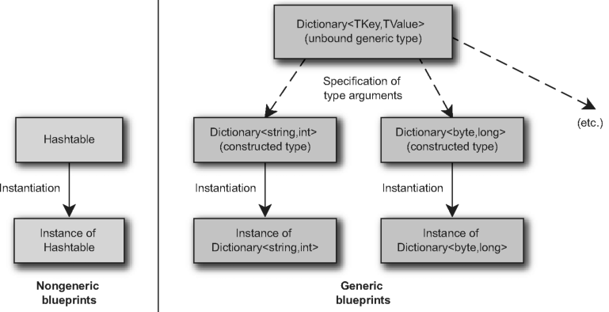Figure 3.1 Unbound generic types act as blueprints for constructed types, which then act as blueprints for actual objects, just as nongeneric types do.
As a further complication, types can be open or closed. An open type is one that still involves a type parameter (for example, as one of the type arguments, or as the array element type), whereas a closed type is one that isn’t open; every aspect of the type is known precisely. All code actually executes in the context of a closed constructed type. The only time you see an unbound generic type appear within C# code (other than as a declaration) is within the typeof operator, which we’ll meet in section 3.4.4.
The idea of a type parameter “receiving” information and a type argument “providing” the information — the dashed lines in figure 3.1 — is exactly the same as with method parameters and arguments, although type arguments have to be types rather than just arbitrary values. The type argument has to be known at compile time, but it can be (or involve) a type parameter from the relevant context.
You can think of a closed type as having the API of the open type, but with the type parameters being substituted with their corresponding type arguments.19 Table 3.1 shows some public method and property declarations from the open type Dictionary <TKey, TValue> and the equivalent member in the closed type we built from it — Dictionary<string,int>.
Table 3.1 Examples of how method signatures in generic types contain placeholders, which are replaced when the type arguments are specified
|
Method signature in generic type |
Method signature after type parameter substitution |
|
|
|
One important thing to note is that none of the methods in table 3.1 are actually generic methods. They’re just “normal” methods within a generic type, and they happen to use the type parameters declared as part of the type. We’ll look at generic methods in the next section.
Now that you know what TKey and TValue mean, and what the angle brackets are for, we can see what the declarations in table 3.1 would look like within the class declaration. Here’s what the code for Dictionary<TKey,TValue> might look like — although the actual method implementations are all missing, and there are more members in reality:
namespace System.Collections.Generic {
public class Dictionary<TKey,TValue>
: IEnumerable<KeyValuePair<TKey,TValue>>
{
public Dictionary() { ... } <|_
public void Add(TKey key, TValue value) { ... }
public TValue this[TKey key]
{
get { ... } set { ... }
}
public bool ContainsValue(TValue value) { ... }
public bool ContainsKey(TKey key) { ... }
[... other members ...]
}
}
Note how Dictionary<TKey,TValue> implements the generic interface IEnumerable <KeyValuePair<TKey,TValue>> (and many other interfaces in real life). Whatever type arguments you specify for the class are applied to the interface where the same type parameters are used — so in our example, Dictionary<string,int> implements IEnumerable<KeyValuePair<string,int>>. That’s actually sort of a doubly generic interface — it’s the IEnumerable<T> interface, with the structure KeyValue-Pair<string,int> as the type argument. It’s because it implements that interface that listing 3.1 was able to enumerate the keys and values in the way that it did.
It’s also worth pointing out that the constructor doesn’t list the type parameters in angle brackets. The type parameters belong to the type rather than to the particular constructor, so that’s where they’re declared. Members only declare type parameters when they’re introducing new ones — and only methods can do that.
PRONOUNCING GENERICS If you ever need to describe a generic type to a colleague, it’s conventional to use “of” to introduce the type parameters or arguments — so List<T> is pronounced “list of T,” for example. In VB, this is part of the language: the type itself would be written as List(Of T). When there are multiple type parameters, I find it makes sense to separate them with a word appropriate to the meaning of the overall type — so I’d talk about a “dictionary of string to int” in order to emphasize the mapping aspect, but a “tuple of string and int.”
Generic types can effectively be overloaded on the number of type parameters — so you could define MyType, MyType<T>, MyType<T,U>, MyType<T,U,V>, and so forth, all within the same namespace. The names of the type parameters aren’t used when considering this — just how many there are. These types are unrelated except in name — there’s no default conversion from one to another, for instance. The same is true for generic methods: two methods can be exactly the same in signature other than the number of type parameters. Although this may sound like a recipe for disaster, it can be useful if you want to take advantage of generic type inference, where the compiler can work out some of the type arguments for you; we'll come back to that in section 3.3.2.
NAMING CONVENTIONS FOR TYPE PARAMETERS Although you could have a type with type parameters T, U, and V, it wouldn’t give much indication of what they actually meant, or how they should be used. Compare this with Dictionary <TKey, TValue>, where it’s obvious that TKey represents the type of the keys and TValue represents the type of the values. Where you have a single type parameter and its meaning is clear, T is conventionally used (List<T> is a good example of this). Multiple type parameters should usually be named according to meaning, using the prefix T to indicate a type parameter. Every so often, you may run into a type with multiple single-letter type parameters (SynchronizedKeyedCollection<K,T>, for example), but you should try to avoid creating the same situation yourself.
Now that we have an idea of what generic types do, let’s look at generic methods.
3.2.3 Generic methods and reading generic declarations
I’ve mentioned generic methods a few times, but we haven’t actually met one yet. You may find the overall idea of generic methods more confusing than generic types — they’re somehow less natural for the brain — but it’s the same basic principle. We’re used to the parameters and return value of a method having firmly specified types, and we’ve seen how a generic type can use its type parameters in method declarations. Generic methods go one step further: even if you know exactly which constructed type you’re dealing with, an individual method can have type parameters, too. Don’t worry if you’re still none the wiser — the concept is likely to click at some point after you’ve seen enough examples.
Dictionary<TKey, TValue> doesn’t have any generic methods, but its close neighbor List<T> does. As you can imagine, List<T> is just a list of items of whatever type is specified — so List<string> is a list of strings, for instance. Remembering that T is the type parameter for the whole class, let’s dissect a generic method declaration. Figure 3.2 shows what the different parts of the declaration of the ConvertAll method
3
mean.
When you look at a generic declaration — whether it’s for a generic type or a generic method — it can be daunting trying to work out what it means, particularly if you have to deal with generic types of generic types, as we did when we looked at the
3 I’ve renamed the parameter from converter to conv so that it fits on one line, but everything else is as documented.
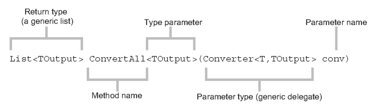
Figure 3.2 The anatomy of a generic method declaration
interface implemented by the dictionary. The key is to not panic — just take things calmly, and pick an example situation. Use a different type for each type parameter, and apply them all consistently.
In this case, let’s start by replacing the type parameter of the type containing the method (the <T> part of List<T>). We’ll stick with the concept of a list of strings, and replace T with string everywhere in the method declaration:
List<TOutput> ConvertAll<TOutput>(Converter<string,TOutput> conv)
That looks a bit better, but we’ve still got TOutput to deal with. We can tell that it’s a method’s type parameter (apologies for the confusing terminology) because it’s in angle brackets directly after the name of the method. So, let’s try to use another familiar type — Guid — as the type argument for TOutput. Again we replace the type parameter with the type argument everywhere. We can now think of the method as if it were nongeneric, removing the type parameter part of the declaration:
List<Guid> ConvertAll(Converter<string,Guid> conv)
Now everything is expressed in terms of a concrete type, so it’s easier to think about. Even though the real method is generic, we’re just treating it as if it weren’t for the sake of understanding it better. Going through the elements of this declaration from left to right:
■ The method returns a List<Guid>.
■ The method’s name is ConvertAll.
■ The method has a single parameter: a Converter<string,Guid> called conv.
Now wejust need to know what Converter<string,Guid> is and we’re all done. Not surprisingly, Converter<string,Guid> is a constructed generic delegate type (the unbound type is Converter<TInput, TOutput>), which is used to convert a string to a GUID.
So, we have a method that can operate on a list of strings, using a converter to produce a list of GUIDs. Now that we understand the method’s signature, it’s easier to understand the documentation, which confirms that this method does the obvious thing and creates a new List<Guid>, converts each element in the original list into the target type adding it to the new list, and then returns that list. Thinking about the signature in concrete terms gives us a clearer mental model, and makes it simpler to think about what we might expect the method to do. Although this technique may sound somewhat simplistic, I find it useful for complicated methods even now. Some of the LINQ method signatures with four type parameters are fearsome beasts, but putting it into concrete terms tames them significantly.
Just to prove I haven’t been leading you down the garden path, let’s take a look at this method in action. Listing 3.2 shows the conversion of a list of integers into a list of floating-point numbers, where each element of the second list is the square root of the corresponding element in the first list. After the conversion, we print out the results.
Listing 3.2 The List<T>.ConvertAll<TOutput> method in action
static double TakeSquareRoot(int x)
{
return Math.Sqrt(x);
}
List<int> integers = new List<int>(); integers.Add(1); integers.Add(2); integers.Add(3); integers.Add(4);
Converter<int,double> converter = TakeSquareRoot;
List<double> doubles;
doubles = integers.ConvertAll<double>(converter); foreach (double d in doubles)
{
Console.WriteLine(d);
}
The creation and population of the list O is straightforward enough — it’s just a strongly typed list of integers. Q uses a feature of delegates (method group conversions), which is new to C# 2 and which we’ll discuss in more detail in section 5.2. Although I don’t like using a feature before describing it fully, the line would’ve been too long to fit on the page with the C# 1 delegate syntax. It does what you expect it to, though. At G we call the generic method, specifying the type argument for the method in the same way as we’ve seen for generic types. This is one situation where we could’ve used type inference to avoid explicitly specifying the type argument, but I wanted to take it one step at a time. Writing out the list that has been returned is simple, and when you run the code you’ll see it print 1, 1.414..., 1.732..., and 2, as expected.
So, what’s the point of all of this? We could’ve just used a foreach loop to go through the integers and printed out the square root immediately, of course, but it’s not uncommon to want to convert a list of one type to a list of another by performing some logic on it. The code to do it manually is still simple, but it’s easier to read a version that just does it in a single method call. That’s often the way with generic methods — they often do things that previously you’d have happily done “longhand” but that are simpler with a method call. Before generics, there could’ve been a similar operation to ConvertAll on ArrayList converting from object to object, but it would’ve been a lot less satisfactory. Anonymous methods (see section 5.4) also help here — if we hadn’t wanted to introduce an extra method, we could’ve just specified the conversion “inline.” LINQ and lambda expressions take this pattern much further, as we’ll see in part 3.
Note that generic methods can be part of nongeneric types as well. Listing 3.3 shows a generic method being declared and used within a normal nongeneric class.
Listing 3.3 Implementing a generic method in a nongeneric type
static List<T> MakeList<T>(T first, T second)
{
List<T> list = new List<T>(); list.Add(first); list.Add(second); return list;
}
List<string> list = MakeList<string>("Line 1", "Line 2"); foreach (string x in list)
{
Console.WriteLine (x);
}
The MakeList<T> generic method only needs one type parameter (T). All it does is build a list containing the two parameters. It’s worth noting that we can use T as a type argument when we create the List<T> in the method, though. Just as when we were looking at generic declarations, think of the implementation as (roughly speaking) replacing all of the places where it says T with string. When we call the method, we use the same syntax we’ve seen before to specify the type arguments.
All okay so far? You should now have the hang of simple generics. There’s a bit more complexity to come, I’m afraid, but if you’re happy with the fundamental idea of generics, you’ve jumped the biggest hurdle. Don’t worry if it’s still a bit hazy — particularly when it comes to the open/closed/unbound/constructed terminology — but now would be a good time to do some experimentation so you can see generics in action before we go any further. If you haven’t used the generic collections before, you might want to quickly look at appendix B, which describes what’s available. The collection types give you a simple starting point for playing with generics, as well as being widely used in almost every nontrivial .NET program.
One thing you may find when you experiment is that it’s hard to go only part of the way. Once you make one part of an API generic, you often find that you need to rework other code, either making that generic too or putting in the casts required by the new, more strongly typed method calls. An alternative can be to have a strongly typed implementation, using generic classes under the covers, but leaving a weakly typed API for the moment. As time goes on, you’ll become more confident about when it’s appropriate to use generics.
3.3 Beyond the basics
Though the relatively simple uses of generics we’ve seen can get you a long way, there are some more features available that can help you further. We’ll start by examining type constraints, which give you more control over which type arguments can be specified. They’re useful when creating your own generic types and methods, and you’ll need to understand them in order to know what options are available when using the framework, too.
We’ll then examine type inference—a handy compiler trick that means that when you’re using generic methods, you don’t always have to explicitly state the type arguments. You don’t have to use it, but it can make your code a lot easier to read when used appropriately. We’ll see in part 3 that the C# compiler is gradually being allowed to infer a lot more information from your code, while still keeping the language safe and statically typed.20
The last part of this section deals with obtaining the default value of a type parameter and what comparisons are available when you’re writing generic code. We’ll wrap up with an example demonstrating most of the features we’ve covered, as well as being a useful class in itself.
Although this section delves a bit deeper into generics, there’s nothing really hard about it. There’s plenty to remember, but all the features serve a purpose, and you’ll be grateful for them when you need them. Let’s get started.
3.3.1 Type constraints
So far, all the type parameters we’ve seen can be applied to any type at all — they’re unconstrained. We can have a List<int>, a Dictionary<object,FileMode>, anything. That’s fine when we’re dealing with collections that don’t have to interact with what they store — but not all uses of generics are like that. Often you want to call methods on instances of the type parameter, or create new instances, or make sure you only accept reference types (or only accept value types). In other words, you want to specify rules to say which type arguments are considered valid for your generic type or method. In C# 2, you do this with constraints.
Four kinds of constraints are available, and the general syntax is the same for all of them. Constraints come at the end of the declaration of a generic method or type, and are introduced by the contextual keyword where. They can be combined together in sensible ways, as we’ll see later. First, though, we’ll explore each kind of constraint in turn.
The first kind of constraint, which is expressed as T : class and which must be the first constraint specified for that type parameter, simply ensures that the type argument used is a reference type. This can be any class, interface, array, or delegate — or another type parameter that’s already known to be a reference type. For example, consider the following declaration:
struct RefSample<T> where T : class
Valid closed types include
■ RefSample<IDisposable>
■ RefSample<string>
■ RefSample<int[]>
■ RefSample<Guid>
■ RefSample<int>
I deliberately made RefSample a struct (and therefore a value type) to emphasize the difference between the constrained type parameter and the type itself. RefSample <string> is still a value type with value semantics everywhere — it just happens to use the string type wherever T is specified in the code.
When a type parameter is constrained this way, you can compare references (including null) with == and !=, but be aware that unless there are any other constraints, only references will be compared, even if the type in question overloads those operators (as string does, for example). With a conversion type constraint (described later), you can end up with “compiler guaranteed” overloads of == and !=, in which case those overloads are used — but that’s relatively rare.
This constraint, expressed as T : struct, ensures that the type argument used is a
value type, including enums. It excludes nullable types (as described in chapter 4), though. Let’s look at an example declaration:
class ValSample<T> where T : struct
Valid closed types include
■ ValSample<int>
■ ValSample<FileMode>
Invalid closed types include
■ ValSample<object>
■ ValSample<StringBuilder>
This time ValSample is a reference type, despite T being constrained to be a value type. Note that System.Enum and System.ValueType are both reference types in themselves, so they aren’t allowed as valid type arguments for ValSample. When a type parameter is constrained to be a value type, comparisons using == and != are prohibited.
I rarely find myself using value or reference type constraints, although we’ll see in the next chapter that nullable value types rely on value type constraints. The remaining two constraints are likely to prove more useful to you when writing your own generic types.
The third kind of constraint is expressed as T : new () and must be the last constraint for any particular type parameter. It simply checks that the type argument used has a parameterless constructor, which can be used to create an instance. This applies to any value type; any nonstatic, nonabstract class without any explicitly declared constructors; and any nonabstract class with an explicit public parameterless constructor.
C# VERSUS CLI STANDARDS There’s a discrepancy between the C# and CLI standards when it comes to value types and constructors. The C# specification states that all value types have a default parameterless constructor, and it uses the same syntax to call both explicitly declared constructors and the parame-terless one, relying on the compiler to do the right thing underneath. The CLI specification has no such requirement, but provides a special instruction to create a default value without specifying any parameters. You can see this discrepancy at work when you use reflection to find the constructors of a value type — you won’t see a parameterless one.
Again, let’s look at a quick example, this time for a method. Just to show how it’s useful, I’ll give the implementation of the method, too:
public T CreateInstance<T>() where T : new()
{
return new T();
}
This method just returns a new instance of whatever type you specify, provided that it has a parameterless constructor. So calls to CreateInstance<int>() and Create-Instance<object>() are okay, but CreateInstance<string>() isn’t, because string doesn’t have a parameterless constructor.
There’s no way of constraining type parameters to force other constructor signa-tures — for instance, you can’t specify that there has to be a constructor taking a single string parameter. It can be frustrating, but that’s unfortunately just the way it is. We’ll look at this issue in more detail when we consider the various restrictions of .NET generics in section 3.5.
Constructor type constraints can be useful when you need to use factory-like patterns, where one object will create another one as and when it needs to. Factories often need to produce objects that are compatible with a certain interface, of course — and that’s where our last type of constraint comes in.
The final (and most complicated) kind of constraint lets you specify another type that the type argument must be implicitly convertible to via an identity, reference, or boxing conversion. You can specify that one type argument be convertible to another, too — this is called a type parameter constraint and makes it harder to understand the declaration, but can be handy every so often. Table 3.2 shows some examples of generic type declarations with conversion type constraints, along with valid and invalid examples of corresponding constructed types.
The third constraint of T : IComparable<T> is just one example of using a generic type as the constraint. Other variations such as T : List<U> (where U is another type parameter) and T : IList<string> are also fine. You can specify multiple interfaces, but only one class. For instance, this is fine (if hard to satisfy):
class Sample<T> where T : Stream,
IEnumerable<string>,
IComparable<int>
Table 3.2 Examples of conversion type constraints
|
Declaration |
Constructed type examples |
|
class Sample<T> where T : Stream |
Valid: Sample<Stream> (identity conversion) Invalid: Sample<string> |
|
struct Sample<T> where T : IDisposable |
Valid: Sample<SqlConnection> (reference conversion) Invalid: Sample<StringBuilder> |
|
class Sample<T> where T : IComparable<T> |
Valid: Sample<int> (boxing conversion) Invalid: Sample<FileInfo> |
|
class Sample<T,U> where T : U |
Valid: Sample<Stream,IDisposable> (reference conversion) Invalid: Sample<string,IDisposable> |
But this isn’t:
class Sample<T> where T : Stream,
ArrayList,
IComparable<int>
No type can derive directly from more than one class anyway, so such a constraint would usually either be impossible (like this one) or part of it would be redundant (specifying that the type had to derive from both Stream and MemoryStream, for example). One more set of restrictions: the type you specify can’t be a value type, a sealed class (such as string), or any of the following “special” types:
■ System.Object
■ System.Enum
■ System.ValueType
■ System.Delegate
WORKING AROUND THE LACK OF ENUM AND DELEGATE CONSTRAINTS The inability to specify the preceding types in conversion type constraints sounds like it’s due to a CLR restriction — but it’s not. It may have been historically (at some point while generics were still being designed), but if you construct the appropriate code in IL, it works fine. The CLI specification even lists these as examples and explains what would be valid and what wouldn’t. This is frustrating, and there are plenty of generic methods that would be useful when restricted to delegates or enums. I have an open source project called Unconstrained Melody (http://mng.bz/s9Ca), which performs some hackery to build a class library that does have these constraints on various utility methods. Although the C# compiler won’t let you declare such constraints, it’s happy to apply them when you call the methods in the library. Perhaps in a future version of C#, the prohibition will be lifted.
Conversion type constraints are probably the most useful kind, as they mean you can use members of the specified type on instances of the type parameter. One particularly handy example of this is T : IComparable<T>, so that you know you can compare two instances of T meaningfully and directly. We’ll see an example of this (as well as discuss other forms of comparison) in section 3.3.3.
I’ve mentioned the possibility of having multiple constraints, and we’ve seen them in action for conversion type constraints, but we haven’t seen the different kinds being combined together. Obviously no type can be both a reference type and a value type, so that combination is forbidden. Likewise, every value type has a parameterless constructor, so you can’t specify the construction constraint when you already have a value type constraint (although you can still use new T() within methods if T is constrained to be a value type). If you have multiple conversion type constraints and one of them is a class, that has to come before the interfaces — and you can’t specify the same interface more than once. Different type parameters can have different constraints, and they’re each introduced with a separate where.
Let’s see some valid and invalid examples:
Valid
class Sample<T> where T : class, IDisposable, new()
class Sample<T> where T : struct, IDisposable
class Sample<T,U> where T : class where U : struct, T
class Sample<T,U> where T : Stream where U : IDisposable
Invalid
class Sample<T> where T : class, struct
class Sample<T> where T : Stream, class
class Sample<T> where T : new(), Stream
class Sample<T> where T : IDisposable, Stream
class Sample<T> where T : XmlReader, IComparable, IComparable class Sample<T,U> where T : struct where U : class, T
class Sample<T,U> where T : Stream, U : IDisposable
I included the last example on each list because it’s so easy to try the invalid one instead of the valid version, and the compiler error isn’t at all helpful. Just remember that each list of type parameter constraints needs its own introductory where. The third valid example is interesting — if U is a value type, how can it derive from T, which is a reference type? The answer is that T could be an object or an interface that U implements. It’s a pretty nasty constraint, though.
SPECIFICATION TERMINOLOGY The specification categorizes constraints slightly differently — into primary constraints, secondary constraints, and constructor constraints. A primary constraint is a reference type constraint, a value type constraint, or a conversion type constraint using a class. A secondary constraint is a conversion type constraint using an interface or another type parameter. I don’t find these particularly useful categories, but they make it easier to define the grammar of constraints: the primary constraint is optional but you can only have one; you can have as many secondary constraints as you like; the constructor constraint is optional (unless you have a value type constraint, in which case it’s forbidden).
Now that you have all the knowledge you need to read generic type declarations, let’s look at the type argument inference that I mentioned earlier. In listing 3.2 we explicitly stated the type arguments to List<T>.ConvertAll, and we did the same in listing 3.3 for our own MakeList method — but let’s now ask the compiler to work them out when it can, making it simpler to call generic methods.
3.3.2 Type inference for type arguments of generic methods
Specifying type arguments when you’re calling a generic method can often seem pretty redundant. Usually it’s obvious what the type arguments should be, based on the method arguments themselves. To make life easier, from C# 2 onward, the compiler is allowed to be smart in tightly defined ways, so you can call the method without explicitly stating the type arguments.
Before we go any further, I should stress that this is only true for generic methods. It doesn’t apply to generic types. Now that we’ve cleared that up, let’s look at the relevant lines from listing 3.3, and see how things can be simplified. Here are the lines declaring and invoking the method:
static List<T> MakeList<T>(T first, T second)
List<string> list = MakeList<string>("Line 1", "Line 2");
Now look at the arguments we’ve specified — they’re both strings. Each of the parameters in the method is declared to be of type T. Even if we didn’t have the <string> part of the method invocation expression, it would be fairly obvious that we meant to call the method using string as the type argument for T. The compiler allows you to omit it, leaving this:
List<string> list = MakeList("Line 1", "Line 2");
That’s a bit neater, isn’t it? At least, it’s shorter. That doesn’t always mean it’s more readable, of course — in some cases it’ll be harder for the reader to work out what type arguments you’re trying to use, even if the compiler can do it easily. I recommend that you judge each case on its merits. My personal preference is to let the compiler infer the type arguments in most cases where it works.
Note how the compiler definitely knows that we’re using string as the type argument, because the assignment to list works too, and that still does specify the type argument (and has to). The assignment has no influence on the type parameter inference process, though. It just means that if the compiler works out what type arguments it thinks you want to use but gets it wrong, you’re still likely to get a compiletime error.
How could the compiler get it wrong? Suppose we actually wanted to use object as the type argument. Our method parameters are still valid, but the compiler thinks we actually meant to use string, as they’re both strings. Changing one of the parameters to explicitly be cast to object makes type inference fail, as one of the method arguments would suggest that T should be string, and the other suggests that T should be object. The compiler could look at this and say that setting T to object would satisfy everything but setting T to string wouldn’t, but the specification only gives a limited number of steps to follow. This area is already fairly complicated in C# 2, and C# 3 takes things even further. I won’t try to give all of the nuts and bolts of the C# 2 rules here, but the basic steps are as follows:
1 For each method argument (the bits in normal parentheses, not angle brackets) , try to infer some of the type arguments of the generic method, using some fairly simple techniques.
2 Check that all the results from the first step are consistent — in other words, if one argument implied one type argument for a particular type parameter, and another implied a different type argument for the same type parameter, then inference fails for the method call.
3 Check that all the type parameters needed for the generic method have been inferred. You can’t let the compiler infer some while you specify others explic-itly — it’s all or nothing.
To avoid learning all the rules (and I wouldn’t recommend it unless you’re particularly interested in the fine details), there’s one simple thing to do: try it to see what happens. If you think the compiler might be able to infer all the type arguments, try calling the method without specifying any. If it fails, stick the type arguments in explicitly. You lose nothing more than the time it takes to compile the code once, and you don’t need to have all the extra language-lawyer garbage in your head.
Type inference can be combined with the idea of overloading type names based on the number of type parameters to make it easier to use generic types. We’ll see an example of this in a while, when we put everything together.
3.3.3 Implementing generics
Although you’re likely to spend more time using generic types and methods than writing them yourself, there are a few things you should know for those occasions when you’re providing the implementation. Most of the time you can just pretend T (or whatever your type parameter is called) is the name of a type and get on with writing code as if you weren’t using generics at all. There are a few extra things you should know, though.
When you know exactly what type you’re working with, you know its default value — the value an otherwise uninitialized field would have, for instance. When you don’t know what type you’re referring to, you can’t specify that default value directly. You can’t use null because it might not be a reference type. You can’t use 0 because it might not be a numeric type. Though it’s fairly rare to need the default value, it can be useful on occasion. Dictionary<TKey,TValue> provides a good example — it has a TryGetValue method that works a bit like the TryParse methods on the numeric types: it uses an output parameter for the value you’re trying to fetch, and a Boolean return value to indicate whether it succeeded. This means that the method has to have
some value of type TValue to populate the output parameter with. (Remember that output parameters must be assigned before the method returns normally.)
THE TRYXXX PATTERN A few patterns in .NET are easily identifiable by the names of the methods involved — BeginXXX and EndXXX suggest an asynchronous operation, for example. The TryXXX pattern is one that has had its use expanded between .NET 1.1 and 2.0. It’s designed for situations that might normally be considered to be errors (in that the method can’t perform its primary duty) but where failure could well occur without indicating a serious issue, and shouldn’t be deemed exceptional. For instance, users often fail to type in numbers correctly, so being able to try to parse some text without having to catch an exception and swallow it is useful. Not only does it improve performance in the failure case, but more importantly, it saves exceptions for genuine error cases where something is wrong in the system (however widely you wish to interpret that). It’s a useful pattern to have up your sleeve as a library designer, when applied appropriately.
C# 2 provides the default value expression to cater for just this need. The specification doesn’t refer to it as an operator, but you can think of it as being similar to the typeof operator, just returning a different value. The following listing shows this in a generic method, and also gives an example of type inference and a conversion type constraint in action.
Listing 3.4 Comparing a given value to the default in a generic way
static int CompareToDefault<T>(T value) where T : IComparable<T>
{
return value.CompareTo(default(T));
}
Console.WriteLine(CompareToDefault("x"));
Console.WriteLine(CompareToDefault(10));
Console.WriteLine(CompareToDefault(0));
Console.WriteLine(CompareToDefault(-10));
Console.WriteLine(CompareToDefault(DateTime.MinValue));
Listing 3.4 shows a generic method being used with three different types: string, int, and DateTime. The CompareToDefault method dictates that it can only be used with types implementing the IComparable<T> interface, which allows us to call CompareTo (T) on the value passed in. The other value we use for the comparison is the default value for the type. As string is a reference type, the default value is null — and the documentation for CompareTo states that for reference types, everything should be greater than null so the first result is 1. The next three lines show comparisons with the default value of int, demonstrating that the default value is 0. The output of the last line is 0, showing that DateTime.MinValue is the default value for DateTime.
Of course, the method in listing 3.4 will fail if you pass it null as the argument — the line calling CompareTo will throw NullReferenceException in the normal way. Don’t worry about it for the moment — there’s an alternative using IComparer<T>, as we’ll see soon.
DIRECT COMPARISONS
Although listing 3.4 showed how a comparison is possible, we don’t always want to constrain our types to implement IComparable<T> or its sister interface, IEquat-able<T>, which provides a strongly typed Equals(T) method to complement the Equals(object) method that all types have. Without the extra information these interfaces give us access to, there’s little we can do in terms of comparisons, other than calling Equals (object), which will result in boxing the value we want to compare with when it’s a value type. (In fact, there are a couple of types to help us in some situations — we’ll come to them in a minute.)
When a type parameter is unconstrained (no constraints are applied to it), you can use == and != operators, but only to compare a value of that type with null. You can’t compare two values of type T with each other. When the type argument is a reference type, the normal reference comparison will be used. In the case where the type argument provided for T is a non-nullable value type, a comparison with null will always decide that they’re unequal (so the comparison can be removed by the JIT compiler). When the type argument is a nullable value type, the comparison will behave in the natural way, making the comparison against the null value of the type.21 (Don’t worry if this last bit doesn’t make sense yet — it will when you’ve read the next chapter. Some features are too intertwined to allow me to describe either of them completely without referring to the other, unfortunately.)
When a type parameter is constrained to be a value type, == and != can’t be used with it at all. When it’s constrained to be a reference type, the kind of comparison performed depends on exactly what the type parameter is constrained to be. If it’s just a reference type, simple reference comparisons are performed. If it’s further constrained to derive from a particular type that overloads the == and != operators, those overloads are used. Beware, though — extra overloads that happen to be made available by the type argument specified by the caller are not used. The next listing demonstrates this with a simple reference type constraint and a type argument of string.
Listing 3.5 Comparisons using == and != using reference comparisons
static bool AreReferencesEqual<T>(T first, T second) where T : class
{
return first == second;
} string name = "Jon";
string intro1 = "My name is " + name; string intro2 = "My name is " + name;
Console.WriteLine(intro1 == intro2); Console.WriteLine(AreReferencesEqual(intro1, intro2));
Even though string overloads == (as demonstrated by Q printing True), this overload isn’t used by the comparison at O. Basically, when AreReferencesEqual<T> is compiled, the compiler doesn’t know what overloads will be available — it’s as if the parameters passed in were of type object.
This isn’t just specific to operators — when the compiler encounters a generic type, it resolves all the method overloads when compiling the unbound generic type, rather than reconsidering each possible method call for more specific overloads at execution time. For instance, a statement of Console.WriteLine(default(T)); will always resolve to a call to Console.WriteLine(object value) — it doesn’t call Console. WriteLine (string value) when T happens to be string. This is similar to the normal situation of overloads being chosen at compile time rather than execution time, but readers familiar with templates in C++ may be surprised nonetheless.22
Two classes that are extremely useful when it comes to comparing values are EqualityComparer<T> and Comparer<T>, both in the System.Collections.Generic namespace. They implement IEqualityComparer<T> and IComparer<T> respectively, and the Default property returns an implementation that generally does the right thing for the appropriate type.
THE GENERIC COMPARISON INTERFACES There are four main generic interfaces for comparisons. Two of them — IComparer<T> and IComparable<T> — are about comparing values for ordering (is one value less than, equal to, or greater than the other?), and the other two — IEqualityComparer<T> and IEquatable<T> — are for comparing two items for equality according to some criteria, and finding the hash of an item (in a manner compatible with the same notion of equality).
Splitting the four another way, IComparer<T> and IEqualityComparer<T> are implemented by types that are capable of comparing two different values, whereas an instance of IComparable<T> and IEquatable<T> is capable of comparing itself with another value.
See the documentation for more details, but consider using these (and similar types such as StringComparer) when performing comparisons. We’ll use Equality-Comparer<T> in our next example.
FULL COMpARISON EXAMpLE: REpRESENTING A pAIR OF VALUES
To finish off our section on implementing generics — and, indeed, medium-level generics — here’s a complete example. It implements a useful generic type — a Pair<T1,T2>, which just holds two values together, like a key/value pair, but with no expectations as to the relationship between the two values.
.NET 4 AND TUPLES .NET 4 provides a lot of this functionality out of the box — and for many different numbers of type parameters, too. Look for Tuple<T1>, Tuple<T1,T2>, and so on in the System namespace.
In addition to providing properties to access the values themselves, we’ll override Equals and GetHashCode to allow instances of our type to play nicely when used as keys in a dictionary. The following listing gives the complete code.
Listing 3.6 Generic class representing a pair of values
using System;
using System.Collections.Generic;
public sealed class Pair<T1, T2> : IEquatable<Pair<T1, T2>>
{
private static readonly IEqualityComparer<T1> FirstComparer = EqualityComparer<T1>.Default; private static readonly IEqualityComparer<T2> SecondComparer = EqualityComparer<T2>.Default;
private readonly T1 first; private readonly T2 second;
public Pair(T1 first, T2 second)
{
this.first = first; this.second = second;
}
public T1 First { get { return first; } } public T2 Second { get { return second; } } public bool Equals(Pair<T1, T2> other)
{
return other != null &&
FirstComparer.Equals(this.First, other.First) && SecondComparer.Equals(this.Second, other.Second);
}
public override bool Equals(object o)
{
return Equals(o as Pair<T1, T2>);
}
public override int GetHashCode()
{
return FirstComparer.GetHashCode(first) * 37 + SecondComparer.GetHashCode(second);
}
}
Listing 3.6 is straightforward. The constituent values are stored in appropriately typed member variables, and access is provided by simple read-only properties. We implement IEquatable<Pair<T1, T2>> to give a strongly typed API that’ll avoid unnecessary execution-time checks. The equality and hash-code computations both use the default
equality comparer for the two type parameters — these handle nulls for us automatically, which makes the code somewhat simpler.23
The static variables used to store the equality comparers for T1 and T2 are mostly there for the sake of formatting the code onto the printed page, but they’ll also be useful as a reference point in the next section.
If we wanted to support sorting, we could implement IComparer<Pair<T1,T2>>, perhaps ordering by the first component and then the second. This kind of type is a good candidate for bearing in mind what functionality you might want, but not actually implement until you need it.
Now that we have our Pair class, how do we construct an instance of it? At the moment, you’d need to use something like this:
Pair<int,string> pair = new Pair<int,string>(10, "value");
That’s not terribly nice. It would be good to use type inference, but that only works for generic methods, and we don’t have any of those. If we put a generic method in the generic type, we’d still need to specify the type arguments for the type to start with. The solution is to use a nongeneric helper class with a generic method in it, as shown in the following listing.
Listing 3.7 Using a nongeneric type with a generic method to enable type inference
public static class Pair {
public static Pair<T1,T2> Of<T1,T2>(T1 first, T2 second)
{
return new Pair<T1,T2>(first, second);
}
}
If you're reading this book for the first time, ignore the fact that the class is declared to be static — we’ll come to that in chapter 7. The important point is that we have a nongeneric class with a generic method. That means we can turn our earlier example into the far-more-pleasant
Pair<int,string> pair = Pair.Of(10, "value");
In C# 3 we could even dispense with the explicit typing of the pair variable, but let’s not get ahead of ourselves. This use of nongeneric helper classes (or partially generic helper classes, if you have two or more type parameters and want to infer some of them but leave others explicit) is a useful trick.
We’ve finished looking at our intermediate features now. I realize it can all seem complicated at first sight, but don’t be put off: the benefits far outweigh the added complexity. Over time, they become second nature. Now that you have the Pair class as an example, it might be worth looking over your own code base to see whether there are some patterns that you keep reimplementing solely to use different types.
With any large topic there’s always more to learn. The next section will take you through the most important advanced topics in generics. If you’re feeling overwhelmed by now, you might want to skip to the relative comfort of section 3.5, where we explore some of the limitations of generics. It’s worth understanding the topics in the next section eventually, but if everything so far has been new to you, it wouldn’t hurt to skip it for the moment.
3.4 Advanced generics
You may expect me to claim that in the rest of this chapter we’ll cover every aspect of generics that we haven’t looked at so far. But there are so many little nooks and crannies involving generics, that’s simply not possible — or at least, I certainly wouldn’t want to even read about all the details, let alone write about them. Fortunately, the nice people at Microsoft and ECMA have written all the details in the language specification, so if you ever want to check some obscure situation that isn’t covered here, that should be your next port of call. Unfortunately I can’t point to one particular area of the specification that covers generics: they pop up almost everywhere. Arguably if your code ends up in a corner case so complicated that you need to consult the specification to work out what it should do, you should refactor it into a more obvious form anyway; you don’t want each maintenance engineer from now until eternity to have to read the gory details.
My aim with this section is to cover everything you’re likely to want to know about generics. I’ll talk more about the CLR and framework side of things than the particular syntax of the C# 2 language, although of course it’s all relevant when developing in C#. We’ll start by considering static members of generic types, including type initialization. From there, it’s a natural step to wonder how all this is implemented under the covers — although we’ll keep it fairly light on detail, concentrating on the important effects of the implementation decisions. We’ll look at what happens when you enumerate a generic collection using foreach in C# 2, and round off the section by seeing how reflection in the .NET Framework is affected by generics.
3.4.1 Static fields and static constructors
Just as instance fields belong to an instance, static fields belong to the type they’re declared in. If you declare a static field x in class SomeClass, there’s exactly one Some-Class. x field, no matter how many instances of SomeClass you create, and no matter how many types derive from SomeClass.24 That’s the familiar scenario from C# 1 — so how does it map across to generics?
The answer is that each closed type has its own set of static fields. We saw this in listing 3.6 when we stored the default equality comparers for T1 and T2 in static fields, but let’s look at it in more detail with another example. Listing 3.8 creates a generic type including a static field. We set the field’s value for different closed types, and then print out the values to show that they’re separate.
Listing 3.8 Proof that different closed types have different static fields
class TypeWithField<T>
{
public static string field; public static void PrintField()
{
Console.WriteLine(field + ": " + typeof(T).Name);
}
}
TypeWithField<int>.field = "First";
TypeWithField<string>.field = "Second";
TypeWithField<DateTime>.field = "Third";
TypeWithField<int>.PrintField();
TypeWithField<string>.PrintField();
TypeWithField<DateTime>.PrintField();
We set the value of each field to a different value, and print out each field along with the name of the type argument used for that closed type. Here’s the output from listing 3.8:
First: Int32 Second: String Third: DateTime
So the basic rule is “one static field per closed type.” The same applies for static initializers and static constructors. But it’s possible to have one generic type nested within another, and types with multiple generic parameters. This sounds a lot more complicated, but it works as you probably think it should. The following listing shows this in action, this time using static constructors to show just how many types there are.
Listing 3.9 Static constructors with nested generic types
public class Outer<T>
{
public class Inner<U,V>
{
static Inner()
{
Console.WriteLine("Outer<{0}>.Inner<{1},{2}>",
typeof(T).Name,
typeof(U).Name,
typeof(V).Name);
}
}
Outer<int>.Inner<string,DateTime>.DummyMethod();
Outer<string>.Inner<int,int>.DummyMethod();
Outer<object>.Inner<string,object>.DummyMethod();
Outer<string>.Inner<string,object>.DummyMethod();
Outer<object>.Inner<object,string>.DummyMethod();
Outer<string>.Inner<int,int>.DummyMethod();
The first call to DummyMethod() for any type will cause the type to be initialized, at which point the static constructor prints out some diagnostics. Each different list of type arguments counts as a different closed type, so the output of listing 3.9 looks like this:
Outer<Int32>.Inner<String,DateTime>
Outer<String>.Inner<Int32,Int32>
Outer<Object>.Inner<String,Object>
Outer<String>.Inner<String,Object>
Outer<Object>.Inner<Object,String>
Just as with nongeneric types, the static constructor for any closed type is only executed once, which is why the last line of listing 3.9 doesn’t create a sixth line of output — the static constructor for Outer<string>.Inner<int,int> executed earlier, producing the second line of output. To clear up any doubts, if we had a nongeneric PlainInner class inside Outer, there still would’ve been one possible Outer<T>.PlainInner type per closed Outer type, so Outer<int>.PlainInner would be separate from Outer<long>.PlainInner, with a separate set of static fields as seen earlier.
Now that we’ve seen what constitutes a different type, we should think about what the effects of that might be in terms of the amount of native code generated. And no, it’s not as bad as you might think...
3.4.2 How the JIT compiler handles generics
Given that we have all of these different closed types, the JIT’s job is to convert the IL of the generic type into native code so it can actually be run. In some ways, we shouldn’t care exactly how it does that — beyond keeping a close eye on memory and CPU time, we wouldn’t see much difference if the JIT took the simplest possible approach and generated native code for each closed type separately, as if each one had nothing to do with any other type. But the JIT authors are clever enough that it’s worth seeing just what they’ve done.
Let’s start with a simple situation first, with a single type parameter — we’ll use List<T> for the sake of convenience. The JIT creates different code for each closed type with a type argument that’s a value type — int, long, Guid, and the like. But it shares the native code generated for all the closed types that use a reference type as the type argument, such as string, Stream, and StringBuilder. It can do this because all references are the same size (the size varies between a 32-bit CLR and a 64-bit CLR, but within any one CLR all references are the same size). An array of references will always be the same size whatever the references happen to be. The space required on the stack for a reference will always be the same. It can use the same register optimizations whatever type is being used — the List<Reason> goes on.
Each of the types still has its own static fields, as described in section 3.4.1, but the executable code itself is reused. Of course, the JIT still does all of this lazily — it won’t generate the code for List<int> before it needs to, and it’ll cache that code for all future uses of List<int>. In theory, it’s possible to share code for at least some value types. The JIT would have to be careful, not just due to size, but also for garbage collection reasons — it has to be able to quickly identify areas of a struct value that are live references. But value types that are the same size and have the same in-memory footprint as far as the GC is concerned could share code. At the time of this writing, that’s been of sufficiently low priority that it hasn’t been implemented, and it may well stay that way.
This level of detail is primarily of academic interest, but it does have a slight performance impact in terms of more code being JIT compiled. The performance benefits of generics can be huge, though, and again that comes down to having the opportunity to JIT to different code for different types. Consider a List<byte>, for instance. In .NET 1.1, adding individual bytes to an ArrayList would’ve meant boxing each one of them, and storing a reference to each boxed value. Using List<byte> has no such impact — List<T> has a member of type T[] to replace the object[] within ArrayList, and that array is of the appropriate type, taking the appropriate space. So List<byte> has a straight byte [] within it used to store the elements of the array. (In many ways, this makes a List<byte> behave like a MemoryStream.)
Figure 3.3 shows an ArrayList and a List<byte>, each with the same six values. The arrays themselves have more than six elements, to allow for growth. Both List<T> and ArrayList have a buffer, and they create a larger buffer when they need to.
The difference in efficiency here is incredible. Let’s look at the ArrayList first, considering a 32-bit CLR.25 Each of the boxed bytes will take up 8 bytes of object overhead, plus 4 bytes (1 byte, rounded up to a word boundary) for the data itself. On top of that, you have all the references themselves, each of which takes up 4 bytes. So for each byte of useful data, we’re paying at least 16 bytes — and then there’s the extra unused space for references in the buffer.
Compare this with the List<byte>. Each byte in the list takes up a single byte within the elements array. There’s still wasted space in the buffer, waiting to be used potentially by new items — but at least we’re only wasting a single byte per unused element there.
We don’t just gain space, but execution speed, too. We don’t need the time taken to allocate the box, the type checking involved in unboxing the bytes in order to get at them, or the garbage collection of the boxes when they’re no longer referenced.
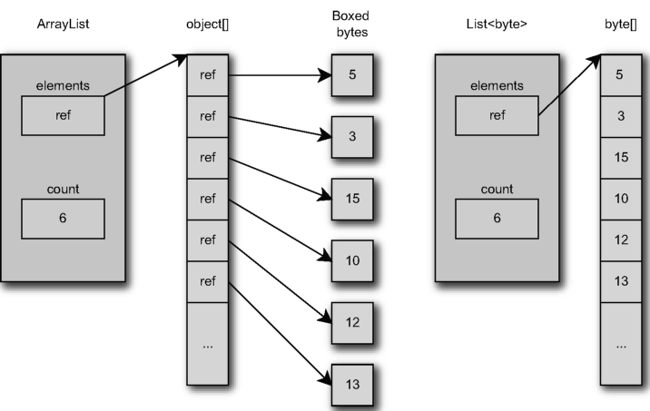Figure 3.3 Visual demonstration of why List<T> takes up a lot less space than ArrayList when storing value types
We don’t have to go down to the CLR level to find things happening transparently on our behalf, though. C# has always made life easier with syntactic shortcuts, and our next section looks at a familiar example but with a generic twist: iterating with
foreach.
3.4.3 Generic iteration
One of the most common operations you’ll want to perform on a collection is to iterate through all its elements. The simplest way of doing that is usually to use the foreach statement. In C# 1, this relied on the collection either implementing the System.Collections.IEnumerable interface or having a similar GetEnumerator() method that returned a type with a suitable MoveNext() method and Current property. The Current property didn’t have to be of type object — and that was the whole point of having these extra rules, which look odd on first sight. Yes, even in C# 1 you could avoid boxing and unboxing during iteration if you had a custom iteration type.
C# 2 makes this somewhat easier, as the rules for the foreach statement have been extended to also use the System.Collections.Generic.IEnumerable<T> interface along with its partner, IEnumerator<T>. These are simply the generic equivalents of the old iteration interfaces, and they’re used in preference to the nongeneric versions. This means that if you iterate through a generic collection of value type ele-ments — List<int>, for example — then no boxing is performed at all. If the old interface had been used instead, then although we wouldn’t have incurred the boxing cost while storing the elements of the list, we’d still have ended up boxing them when we retrieved them using foreach!
All of this is done for you under the covers — all you need to do is use the foreach statement in the normal way, using an appropriate type for the iteration variable, and all will be well. That’s not the end of the story, though. In the relatively rare situation when you need to implement iteration over one of your own types, you’ll find that IEnumerable<T> extends the old IEnumerable interface, which means you have to implement two different methods:
IEnumerator<T> GetEnumerator();
IEnumerator GetEnumerator();
Can you see the problem? The methods differ only in return type, and the overloading rules of C# prevent you from writing two such methods normally. If you think back to section 2.2.2, we saw a similar situation — and we can use the same workaround. If you implement IEnumerable using explicit interface implementation, you can implement IEnumerable<T> with a “normal” method. Fortunately, because IEnumerator<T> extends IEnumerator, you can use the same return value for both methods, and implement the nongeneric method by just calling the generic version. Of course, now you need to implement IEnumerator<T> and you quickly run into similar problems, this time with the Current property.
The following listing gives a full example, implementing an enumerable class that always just enumerates to the integers 0 to 9.
Listing 3.10 A full generic iterator — of the numbers 0 to 9
class CountingEnumerable: IEnumerable<int>
{
public IEnumerator<int> GetEnumerator()
{
return new CountingEnumerator();
}
IEnumerator IEnumerable.GetEnumerator()
{
return GetEnumerator();
}
}
class CountingEnumerator : IEnumerator<int>
{
int current = -1; public bool MoveNext()
{
current++;
return current < 10;
}
public int Current { get { return current; } } object IEnumerator.Current { get { return Current; } } public void Reset()
{
}
public void Dispose() {}
}
CountingEnumerable counter = new CountingEnumerable(); foreach (int x in counter)
{
Console.WriteLine(x);
}
Clearly this isn’t useful in terms of the result, but it shows the little hoops you have to go through in order to implement generic iteration appropriately — at least if you’re doing it all longhand. (And that’s without making an effort to throw exceptions if Current is accessed at an inappropriate time.) If you think that listing 3.10 looks like a lot of work just to print out the numbers 0 to 9, I can’t help but agree with you — and there’d be even more code if we wanted to iterate over anything useful. Fortunately we’ll see in chapter 6 that C# 2 takes a large amount of the work away from iterators in many cases. I’ve shown the full version so you can appreciate the slight wrinkles that have been introduced by the design decision for IEnumerable<T> to extend IEnumer-able. I’m not suggesting it was the wrong decision, though; it means that you can pass any IEnumerable<T> into a method written in C# 1 with an IEnumerable parameter. That’s not as important now as it was back in 2005, but it’s still a useful transition path.
We only need the trick of using explicit interface implementation twice — once for IEnumerable.GetEnumerator ©, and once at IEnumerator.Current Q. Both of these call their generic equivalents (O and © respectively). Another addition to IEnumerator<T> is that it extends IDisposable, so you have to provide a Dispose method. The foreach statement in C# 1 already called Dispose on an iterator if it implemented IDisposable, but in C# 2 no execution-time testing is required — if the compiler finds that you’ve implemented IEnumerable<T>, it creates an unconditional call to Dispose at the end of the loop (in a finally block). Many iterators won’t actually need to dispose of anything, but it’s nice to know that when it is required, the most common way of working through an iterator (the foreach statement ©) handles the calling side automatically. This is most commonly used to release resources when you’ve finished iterating — for example, you might have an iterator that reads lines from a file, and needs to close the file handle when the calling code has finished looping.
We’ll now go from compile-time efficiency to execution-time flexibility: our final advanced topic is reflection. Even in .NET 1.0/1.1, reflection could be tricky, but generic types and methods introduce an extra level of complexity. The framework provides everything we need (with a bit of helpful syntax from C# 2 as a language), and although the additional considerations can be daunting, it’s not too bad if you take it one step at a time.
Reflection is used by different people for all sorts of things. You might use it for execution-time introspection of objects to perform a simple form of data binding. You might use it to inspect a directory full of assemblies to find implementations of a plugin interface. You might write a file for an Inversion of Control framework (see http:// mng.bz/xc3J) to load and dynamically configure your application’s components. As the uses of reflection are so diverse, I won’t focus on any particular one, but will give you more general guidance on performing common tasks. We’ll start by looking at the extensions to the typeof operator.
USING TYPEOF WITH GENERIC TYPES
Reflection is all about examining objects and their types. As such, one of the most important things you need to be able to do is obtain a reference to a particular System.Type object, which allows access to all the information about that type. C# uses the typeof operator to obtain such a reference for types known at compile time, and this has been extended to encompass generic types.
There are two ways of using typeof with generic types — one retrieves the generic type definition (in other words, the unbound generic type ) and one retrieves a particular constructed type. To obtain the generic type definition — the type with none of the type arguments specified — you simply take the name of the type as it would’ve been declared and remove the type parameter names, keeping any commas. To retrieve constructed types, you specify the type arguments in the same way as you would to declare a variable of the generic type. Listing 3.11 gives an example of both uses. It uses a generic method so we can revisit how typeof can be used with a type parameter, which we previously saw in listing 3.8.
Listing 3.11 Using the typeof operator with type parameters
static void DemonstrateTypeof<X>()
{
Console.WriteLine(typeof(X));
Console.WriteLine(typeof(List<>)); Console.WriteLine(typeof(Dictionary<,>));
Console.WriteLine(typeof(List<X>)); Console.WriteLine(typeof(Dictionary<string,X>));
Console.WriteLine(typeof(List<long>)); Console.WriteLine(typeof(Dictionary<long,Guid>));
}
DemonstrateTypeof<int>();
Most of listing 3.11 works as you might naturally expect, but it’s worth pointing out two things. First, look at the syntax for obtaining the generic type definition of Dictionary<TKey,TValue>. The comma in the angle brackets is required to tell the compiler to look for the type with two type parameters: remember that there can be
several generic types with the same name, as long as they vary by the number of type parameters they have. Similarly, you’d retrieve the generic type definition for MyClass<T1,T2,T3,T4> using typeof(MyClass<///>). The number of type parameters is specified in IL (and in full type names as far as the framework is concerned) by putting a back tick after the first part of the type name and then the number. The type parameters are then indicated in square brackets instead of the angle brackets we’re used to. For instance, the second line printed ends with List'1[T], showing that there’s one type parameter, and the third line includes Dictionary'2 [TKey, TValue].
Second, note that wherever the method’s type parameter (X) is used, the actual value of the type argument is used at execution time. So line O prints List'1 [System. Int32] rather than List' 1 [X], which you might have expected.26 In other words, a type that’s open at compile time may be closed at execution time. This is very confusing. You should be aware of it in case you don’t get the results you expect, but otherwise, don’t worry. To retrieve a truly open constructed type at execution time, you need to work a bit harder. See the MSDN documentation for Type.IsGenericType for a suitably convoluted example (http://mng.bz/9W6O).
For reference, here’s the output of listing 3.11:
System.Int32
System.Collections.Generic.List'1[T]
System.Collections.Generic.Dictionary'2[TKey,TValue]
System.Collections.Generic.List'1[System.Int32]
System.Collections.Generic.Dictionary'2[System.String,System.Int32]
System.Collections.Generic.List'1[System.Int64]
System.Collections.Generic.Dictionary'2[System.Int64,System.Guid]
Having retrieved an object representing a generic type, there are many next steps you can take. All the previously available ones (finding the members of the type, creating an instance, and so on) are still present — although some aren’t applicable for generic type definitions — and there are new ones as well that let you inquire about the generic nature of the type.
METHODS AND PROPERTIES OF SYSTEM.TYPE
There are far too many new methods and properties to look at them all in detail, but there are two particularly important ones: GetGenericTypeDefinition and Make-GenericType. They’re effectively opposites — the first acts on a constructed type, retrieving the generic type definition; the second acts on a generic type definition and returns a constructed type. Arguably it would’ve been clearer if this method had been called ConstructType, MakeConstructedType, or some other name with construct or constructed in it, but we’re stuck with what we’ve got.
Just like normal types, there’s only one Type object for any particular type — so calling MakeGenericType twice with the same types as arguments will return the same reference twice. Similarly, calling GetGenericTypeDefinition on two types constructed
from the same generic type definition will give the same result for both calls, even if the constructed types are different (such as List<int> and List<string>).
Another method — this time one that already existed in .NET 1.1 — that’s worth exploring is Type.GetType(string), and its related Assembly.GetType(string) method, both of which provide a dynamic equivalent to typeof. You might expect to be able to feed each line of the output of listing 3.11 to the GetType method called on an appropriate assembly, but unfortunately life isn’t quite that straightforward. It’s fine for closed constructed types — the type arguments just go in square brackets. For generic type definitions, though, you need to remove the square brackets entirely — otherwise GetType thinks you mean an array type. Listing 3.12 shows all of these methods in action.
Listing 3.12 Various ways of retrieving generic and constructed Type objects
string listTypeName = "System.Collections.Generic.List'1";
Type defByName = Type.GetType(listTypeName);
Type closedByName = Type.GetType(listTypeName + "[System.String]");
Type closedByMethod = defByName.MakeGenericType(typeof(string));
Type closedByTypeof = typeof(List<string>);
Console.WriteLine(closedByMethod == closedByName); Console.WriteLine(closedByName == closedByTypeof);
Type defByTypeof = typeof(List<>);
Type defByMethod = closedByName.GetGenericTypeDefinition();
Console.WriteLine(defByMethod == defByName);
Console.WriteLine(defByName == defByTypeof);
The output of listing 3.12 is just True four times, validating that however you obtain a reference to a particular type object, only one such object is involved.
As I mentioned earlier, there are many new methods and properties on Type, such as GetGenericArguments, IsGenericTypeDefinition, and IsGenericType. Again, the documentation for IsGenericType is probably the best starting point for further exploration.
Generic methods have a similar (though smaller) set of additional properties and methods. The following listing gives a brief demonstration of this, calling a generic method by reflection.
Listing 3.13 Retrieving and invoking a generic method with reflection
public static void PrintTypeParameter<T>()
{
Console.WriteLine(typeof(T));
}
Type type = typeof(Snippet);
MethodInfo definition = type.GetMethod("PrintTypeParameter"); MethodInfo constructed;
constructed = definition.MakeGenericMethod(typeof(string)); constructed.Invoke(null, null);
First we retrieve the generic method definition, and then we make a constructed generic method using MakeGenericMethod. As with types, we could go the other way if we wanted to — but unlike Type.GetType, there’s no way of specifying a constructed method in the GetMethod call. The framework also has a problem if there are methods that are overloaded purely by number of type parameters — there are no methods in Type that allow you to specify the number of type parameters, so instead you’d have to call Type.GetMethods and find the right one by looking through all the methods.
After retrieving the constructed method, we invoke it. The arguments in this example are both null, as we’re invoking a static method that doesn’t have any normal parameters. The output is System.String, as we’d expect. Note that the methods retrieved from generic type definitions can’t be invoked directly — instead, you must get the method from a constructed type. This applies to both generic and nongeneric methods.
SAVED BY C# 4 If all of this looks messy to you, I agree. Fortunately, in many cases C#’s dynamic typing can come to the rescue, taking a lot of the work out of generic reflection. It doesn’t help in all situations, so it’s worth being aware of the general flow of the preceding code, but where it does apply it’s great.
We’ll look at dynamic typing in detail in chapter 14.
Again, more methods and properties are available on MethodInfo, and IsGeneric-Method is a good starting point in MSDN (http://mng.bz/PDmC). Hopefully the information in this section will have been enough to get you going, though — and to point out some of the added complexities you might not have otherwise anticipated when first starting to access generic types and methods with reflection.
That’s all we’re going to cover in the way of advanced features. Just to reiterate, this isn’t meant to be a complete guide by any means — but most developers are unlikely to need to know the more obscure areas. I hope for your sake that you fall into this camp, as specifications tend to get harder to read the deeper you go into them. Remember that unless you’re developing alone and just for yourself, you’re unlikely to be the only one to work on your code. If you need features that are more complex than the ones demonstrated here, you almost certainly shouldn’t assume that anyone reading your code will understand it without help. On the other hand, if you find that your co-workers don’t know about some of the topics we’ve covered so far, please feel free to direct them to the nearest bookshop...
Our final main section of the chapter looks at some of the limitations of generics in C# and considers similar features in other languages.
3.5 Limitations of generics in C# and other languages
There’s no doubt that generics contribute a great deal to C# in terms of expressiveness, type safety, and performance. The feature has been carefully designed to cope with most of the tasks that C++ programmers typically used templates for, but without some of the accompanying disadvantages. But this isn’t to say limitations don’t exist.
There are some problems that C++ templates solve with ease but that C# generics can’t help with. Similarly, though generics in Java are generally less powerful than in C#, there are some concepts that can be expressed in Java but that don’t have a C# equivalent. This section will take you through some of the most commonly encountered weaknesses, and I’ll briefly compare the C#/.NET implementation of generics with C++ templates and Java generics.
It’s important to stress that pointing out these snags doesn’t imply that they should’ve been avoided in the first place. In particular, I’m in no way saying that I could’ve done a better job! The language and platform designers have had to balance power with complexity (and the small matter of achieving both design and implementation within a reasonable time scale). Most likely, you won’t encounter problems, and if you do, you’ll be able to work around them with the guidance given here.
We’ll start with the answer to a question that almost everyone raises sooner or later: why can’t I convert a List<string> to a List<object>?
3.5.1 Lack of generic variance
In section 2.2.2, we looked at the covariance of arrays — the fact that an array of a reference type can be viewed as an array of its base type, or an array of any of the interfaces it implements. There are actually two forms of this idea, called covariance and contravariance, or collectively just variance. Generics don’t support this — they’re invariant. This is for the sake of type safety, as we’ll see, but it can be annoying.
One thing I'd like to make clear to start with: C# 4 improves the generic variance situation somewhat. Many of the restrictions listed here do still apply though, and this section serves as a useful introduction to the idea of variance. We’ll see how C# 4 helps in chapter 13, but many of the clearest examples of generic variance rely on other new features from C# 3, including LINQ. Variance is also quite a complicated topic in itself, so it’s worth waiting until you’re comfortable with the rest of C# 2 and 3 before you tackle it. For the sake of readability, I’m not going to point out every place in this section that’s slightly different in C# 4... it’ll all become clear in chapter 13.
WHY DON’T GENERICS SUPPORT COVARIANCE?
Let’s suppose we have two classes, Turtle and Cat, both of which derive from an abstract Animal class. In the code that follows, the array code (on the left) is valid C# 2; the generic code (on the right) isn’t:
Valid (at compile time) Invalid
Animal[] animals = new Cat[5]; List<Animal> animals = new List<Cat>();
animals[0] = new Turtle(); animals.Add(new Turtle());
The compiler has no problem with the second line in either case, but the first line on the right causes the following error:
error CS0029: Cannot implicitly convert type
'System.Collections.Generic.List<Cat>' to 'System.Collections.Generic.List<Animal>'
This was a deliberate choice on the part of the framework and language designers. The obvious question to ask is why this is prohibited — and the answer lies on the second line. There’s nothing about the second line that should raise any suspicion. After all, List<Animal> effectively has a method with the signature void Add(Animal value) — you should be able to put a Turtle into any list of animals, for instance. But the actual object referred to by animals is a Cat[] (in the code on the left) or a List<Cat> (on the right), both of which require that only references to instances of Cat (or further subclasses) are stored in them. Although the array version will compile, it’ll fail at execution time. This was deemed by the designers of generics to be worse than failing at compile time, which is reasonable — the whole point of static typing is to find out about errors before the code ever gets run.
SO WHY ARE ARRAYS COVARIANT? Having answered the question about why generics are invariant, the next obvious step is to question why arrays are covariant. According to the Common Language Infrastructure Annotated Standard (Miller and Ragsdale, Addison-Wesley Professional, 2003), for the first edition the designers wanted to reach as broad an audience as possible, which included being able to run code compiled from Java source. In other words,
.NET has covariant arrays because Java has covariant arrays — despite this being a known wart in Java.
So, that’s why things are the way they are — but why should you care, and how can you get around the restriction?
WHERE COVARIANCE WOULD BE USEFUL
The example I’ve given with a list is clearly problematic. We can add items to the list, which is where we lose the type safety in this case. Now an add operation is an example of a value being used as an input into the API: the caller is supplying the value. What would happen if we limited ourselves to getting values out? The obvious example of this is IEnumerator<T> and (by association) IEnumerable<T>. In fact, these are almost the canonical example for generic covariance. Together they describe a sequence of values — all we know about the values we see is that each one will be compatible with T, such that you can always write
T currentValue = iterator.Current;
This uses the normal idea of compatibility — it would be fine for an IEnumerator <Animal> to yield references to instances of Cat or Turtle, for example. There’s no way we can push values that are inappropriate for the actual sequence type, so we’d like to be able to treat an IEnumerator<Cat> as an IEnumerator<Animal>. Let me give an example of where that might be useful.
Suppose we take the customary shape example for inheritance, but using an interface (IShape). Now consider another interface, IDrawing, to represent a drawing made up of shapes. We’re going to have two concrete types of drawing — a Mondrian-Drawing (made of rectangles) and a SeuratDrawing (made of circles).27 Figure 3.4 shows the class hierarchies involved.
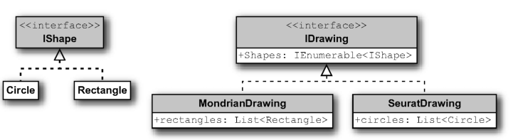Both drawing types need to implement the IDrawing interface, so they need to expose a property with this signature:
IEnumerable<IShape> Shapes { get; }
But each drawing type would probably find it easier to maintain a more strongly typed list internally. For example, a Seurat drawing may include a field of type List<Circle>. It’s useful for it to have this rather than a List<IShape> so that if it needs to manipulate the circles in a circle-specific way, it can do so without casting. If we had a List<IShape>, we could either return it directly or at least wrap it in a ReadOnly-Collection<IShape> to prevent callers from messing with it via casting — the property implementation would be cheap and simple either way. But we can’t do that when our types don’t match up... we can’t convert from an IEnumerable<Circle> to an IEnumerable<Shape>. So what can we do?
There are a few options here. We could
■ Change the field type to List<IShape> and just live with the casts. This isn’t pleasant, and defeats a lot of the point of using generics.
■ Use the new features provided by C# 2 for implementing iterators, as we’ll see in chapter 6. This is a reasonable solution for this particular case, but only this case (when we’re dealing with IEnumerable<T>).
■ Make each Shapes property implementation create a new copy of the list, possibly using List<T>.ConvertAll for simplicity. Creating an independent copy of a collection is often the right thing to do in an API anyway, but it does cause a lot of copying, which can be unnecessarily inefficient in many cases.
■ Make IDrawing generic, indicating the type of shapes in the drawing. Thus MondrianDrawing would implement IDrawing<Rectangle> and SeuratDrawing would implement IDrawing<Circle>. This is only viable when you own the interface.
■ Create a helper class to adapt one kind of IEnumerable<T> into another: class EnumerableWrapper<TOriginal, TWrapper> : IEnumerable<TWrapper>
where TOriginal : TWrapper
Again, as this particular situation (IEnumerable<T>) is special, we could get away with just a utility method. In fact, .NET 3.5 ships with two useful methods
like this: Enumerable.Cast<T> and Enumerable.OfType<T>. They’re part of LINQ, and we’ll look at them in chapter 11. Although this is a special case, it’s probably the most common form of generic covariance you’ll come across.
When you run into covariance issues, you may need to consider all of these options and anything else you can think of. It depends heavily on the exact nature of the situation. Unfortunately, covariance isn’t the only problem we have to deal with. There’s also the matter of contravariance, which is like covariance in reverse.
WHERE CONTRAVARIANCE WOULD BE USEFUL
Contravariance feels slightly less intuitive than covariance, but it does make sense. With covariance, we were trying to convert from SomeType<Circle> to Some-Type<IShape> (using IEnumerable<T> for SomeType in our example). Contravariance is about converting the other way — from SomeType<IShape> to SomeType<Circle>. How can that be safe? Well, covariance is safe when SomeType only describes operations that return the type parameter — and contravariance is safe when SomeType only describes operations that accept the type parameter.28
The simplest example of a type that only uses its type parameter in an input position is IComparer<T>, which is commonly used to sort collections. Let’s expand our IShape interface (which has been empty so far) to include an Area property. It’s now easy to write an implementation of IComparer<IShape> that compares any two shapes by area. We’d then like to be able to write the following code:
IComparer<IShape> areaComparer = new AreaComparer();
List<Circle> circles = new List<Circle>(); circles.Add(new Circle(Point.Empty, 20)); circles.Add(new Circle(Point.Empty, 10));
INVALID^, circles . Sort (areaComparer) ;
That won’t work, though, because the Sort method on List<Circle> effectively takes an IComparer<Circle>. The fact that our AreaComparer can compare any shape rather than just circles doesn’t impress the compiler at all. It considers IComparer <Circle> and IComparer<IShape> to be completely different types. Maddening, isn’t it? It would be nice if the Sort method had this signature instead:
void Sort<S>(IComparer<S> comparer) where T : S
Unfortunately, not only is that not the signature of Sort, but it can’t be — the constraint is invalid, because it’s a constraint on T instead of S. We want a conversion type constraint but in the other direction, constraining the S to be somewhere up the inheritance tree of T instead of down.
Given that this isn’t possible, what can we do? There are fewer options this time. First, you could revisit the idea of creating a generic helper class as shown in listing 3.14.
Listing 3.14 Working around the lack of contravariance with a helper
class ComparisonHelper<TBase, TDerived> : IComparer<TDerived> where TDerived : TBase
{
private readonly IComparer<TBase> comparer; public ComparisonHelper(IComparer<TBase> comparer)
{
this.comparer = comparer;
}
public int Compare(TDerived x, TDerived y)
{
return comparer.Compare(x, y);
}
}
Again, this is the adapter pattern at work, this time varying in the type of items to compare. We just remember the original comparer providing the real logic to compare items of the base type Q and then call it when we’re asked to compare items of the derived type G. The fact that we don’t have any casts involved (not even hidden ones) should give us some confidence: this helper is completely type-safe. We’re able to call the base comparer due to an implicit conversion being available from TDerived to TBase, which we required with a type constraint O.
The second option is to make the area comparison class generic, with a conversion type constraint, so it can compare any two values of the same type, as long as that type implements IShape. For the sake of simplicity in the situation where you really don’t need this functionality, you could keep the nongeneric class by just making it derive from the generic one:
class AreaComparer<T> : IComparer<IShape> where T : IShape class AreaComparer : AreaComparer<IShape>
Of course, you can only do this when you’re able to change the comparison class. This can be an effective solution, but it still feels unnatural — why should you have to construct the comparer in various ways for different types, when it’s not going to behave any differently? Why should you have to derive from the class to simplify things when you’re not actually specializing the behavior?
Note that the various options for both covariance and contravariance use more generics and constraints to express the interface in a more general manner, or to provide generic helper classes. I know that adding a constraint makes it sound less general, but the generality is added by first making the type or method generic. When you run into a problem like this, adding a level of genericity somewhere with an appropriate constraint should be the first option to consider. Generic methods (rather than generic types) are often helpful here, as type inference can make the lack of variance invisible to the naked eye. This is particularly true in C# 3, which has stronger type inference capabilities than C# 2.
This limitation is a very common cause of questions on C# discussion sites. The remaining issues are either relatively academic or affect only a moderate subset of the development community. The next one mostly affects those who do a lot of calculations (usually scientific or financial) in their work.
3.5.2 Lack of operator constraints or a “numeric” constraint
C# isn’t without its downsides when it comes to heavily mathematical code. The need to explicitly use the Math class for every operation beyond the simplest arithmetic and the lack of C-style typedefs to allow the data representation used throughout a program to be easily changed have always been raised by the scientific community as barriers to C#’s adoption. Generics weren’t likely to fully solve either of those issues, but there’s a common problem that stops generics from helping as much as they could have. Consider this (illegal) generic method:
public T FindMean<T>(IEnumerable<T> data)
{
T sum = default(T);
int count = 0;
foreach (T datum in data)
{
sum += datum; count++;
}
return sum / count;
}
Obviously that could never work for all types of data — what could it mean to add one Exception to another, for instance? Clearly a constraint of some kind is called for... something that can express what we need to be able to do: add two instances of T together, and divide a T by an integer. If that were available, even if it were limited to built-in types, we could write generic algorithms that wouldn’t care whether they were working on an int, a long, a double, a decimal, and so forth. Limiting it to the built-in types would’ve been disappointing but better than nothing. The ideal solution would have to also allow user-defined types to act in a numeric capacity — so you could define a Complex type to handle complex numbers, for instance.29 That complex number could then store each of its components in a generic way as well, so you could have a Complex<float>, a Complex<double>, and so on.
Two related solutions present themselves. One would be simply to allow constraints on operators, so you could write a set of constraints such as
where T : T operator+ (T, T), T operator/ (T, int)
This would require that T have the operations we need in the earlier code. The other solution would be to define a few operators and perhaps conversions that must be supported in order for a type to meet the extra constraint — we could make it the “numeric constraint” written where T : numeric.
One problem with both of these options is that they can’t be expressed as normal interfaces, because operator overloading is performed with static members, which can’t be used to implement interfaces. I find the idea of static interfaces appealing: interfaces that only declare static members, including methods, operators, and constructors. Such static interfaces would only be useful within type constraints, but they’d present a type-safe generic way of accessing static members. This is just blue sky thinking, though (see http://mng.bz/3Rk3) — I don't know of any plans to include this in a future version of C#.
The two neatest workarounds for this problem to date require later versions of .NET: one designed by Marc Gravell (http://mng.bz/9m8i) uses expression trees (which we’ll meet in chapter 9) to build dynamic methods; the other is to use the dynamic features of C# 4. We’ll see an example of the latter in chapter 14. But, as you can tell by the descriptions, both of these are dynamic — you have to wait until execution time to see whether your code will work with a particular type. There are a few workarounds that still use static typing, but they have other disadvantages (surprisingly enough, they can sometimes be slower than the dynamic code).
The two limitations we’ve looked at so far have been quite practical — they’ve been issues you may well run into during actual development. But if you’re generally curious like I am, you may also be asking yourself about other limitations that don’t necessarily slow down development but are intellectual curiosities. In particular, just why are generics limited to types and methods?
3.5.3 Lack of generic properties, indexers, and other member types
We’ve seen generic types (classes, structs, delegates, and interfaces) and we’ve seen generic methods. There are plenty of other members that could be parameterized. But there are no generic properties, indexers, operators, constructors, finalizers, or events. First let’s be clear about what we mean here: clearly an indexer can have a return type that’s a type parameter — List<T> is an obvious example. KeyValue-Pair<TKey,TValue> provides similar examples for properties. What you can’t have is an indexer or property (or any of the other members in that list) with extra type parameters. Leaving the possible syntax of declaration aside for the minute, let’s look at how these members might have to be called:
SomeClass<string> instance = new SomeClass<string><Guid>("x");
int x = instance.SomeProperty<int>;
byte y = instance.SomeIndexer<byte>["key"];
instance.Click<byte> += ByteHandler;
instance = instance +<int> instance;
I hope you’ll agree that all of those look somewhat silly. Finalizers can’t even be called explicitly from C# code, which is why there isn’t a line for them. The fact that we can’t do any of these isn’t going to cause significant problems anywhere, as far as I can see — it’s just worth being aware of this as an academic limitation.
The one exception to this is possibly the constructor. A static generic method in the class is a good workaround for this, though, and the syntax with two lists of type arguments is horrific.
These are by no means the only limitations of C# generics, but I believe they’re the ones that you’re most likely to run up against, either in your daily work, in community conversations, or when idly considering the feature as a whole. In our next two sections, we’ll see how some aspects of these aren’t issues in the two languages whose features are most commonly compared with C#’s generics: C++ (with templates) and Java (with generics as of Java 5). We’ll tackle C++ first.
3.5.4 Comparison with C++ templates
C++ templates are a bit like macros taken to an extreme level. They’re incredibly powerful, but have costs associated with them both in terms of code bloat and ease of understanding.
When a template is used in C++, the code is compiled for that particular set of template arguments, as if the template arguments were in the source code. This means that there’s not as much need for constraints, as the compiler will check whether you’re allowed to do everything you want to with the type anyway while it’s compiling the code for this particular set of template arguments. The C++ standards committee has recognized that constraints are still useful, though. They’ve been postponed from C++0x (the next version of C++) but may yet see the light of day some time in the future, under the name of concepts.
The C++ compiler is smart enough to compile the code only once for any given set of template arguments, but it isn’t able to share code in the way that the CLR does with reference types. That lack of sharing does have its benefits, though — it allows type-specific optimizations, such as inlining method calls for some type parameters but not others, from the same template. It also means that overload resolution can be performed separately for each set of type parameters, rather than just once based solely on the limited knowledge the C# compiler has due to any constraints present.
Don’t forget that with normal C++ there’s only one compilation involved, rather than the “compile to IL” then “JIT compile to native code” model of .NET. A program using a standard template in 10 different ways will include the code 10 times in a C++ program. A similar program in C# using a generic type from the framework in 10 different ways won’t include the code for the generic type at all — it’ll refer to it, and the JIT will compile as many different versions as required (as described in section 3.4.2) at execution time.
One significant feature that C++ templates have over C# generics is that the template arguments don’t have to be type names. Variable names, function names, and constant expressions can be used as well. A common example of this is a buffer type that has the size of the buffer as one of the template arguments — so a buffer <int,20> will always be a buffer of 20 integers, and a buffer<double,35> will always be a buffer of 35 doubles. This ability is crucial to template metaprogramming (see http://mng.bz/c1G0) — an advanced C++ technique the very idea of which scares me, but that can be powerful in the hands of experts.
C++ templates are more flexible in other ways, too. They don’t suffer from the problem described in section 3.5.2, and there are a few other restrictions that don’t exist in C++: you can derive a class from one of its type parameters, and you can specialize a template for a particular set of type arguments. The latter ability allows the template author to write general code to be used when there’s no more knowledge available but specific (often highly optimized) code for particular types.
The same variance issues of .NET generics exist in C++ templates as well — an example given by Bjarne Stroustrup30 is that there are no implicit conversions between vector<shape*> and vector<circle*> with similar reasoning — in this case, it might allow you to put a square peg in a round hole.
For further details of C++ templates, I recommend Stroustrup’s The C++ Programming Language (Addison-Wesley, 1991). It’s not always the easiest book to follow, but the templates chapter is fairly clear (once you get your mind around C++ terminology and syntax). For more comparisons with .NET generics, look at the blog post by the Visual C++ team on this topic (http://mng.bz/En13).
The other obvious language to compare with C# in terms of generics is Java, which introduced the feature into the mainstream language for the 1.5 release,31 several years after other projects had created Java-like languages which supported generics.
3.5.5 Comparison with Java generics
Where C++ includes more of the template in the generated code than C# does, Java includes less. In fact, the Java runtime doesn’t know about generics at all. The Java bytecode (roughly equivalent terminology to IL) for a generic type includes some extra metadata to say that it’s generic, but after compilation the calling code doesn’t have much to indicate that generics were involved at all — and certainly an instance of a generic type only knows about the nongeneric side of itself. For example, an instance of HashSet<T> doesn’t know whether it was created as a HashSet<String> or a HashSet<Object>. The compiler effectively adds casts where necessary and performs more sanity checking. Here’s an example — first the generic Java code:
ArrayList<String> strings = new ArrayList<String>(); strings.add("hello");
String entry = strings.get(O); strings.add(new Object());
and now the equivalent nongeneric code:
ArrayList strings = new ArrayList(); strings.add("hello");
String entry = (String) strings.get(O); strings.add(new Object());
They would generate the same Java bytecode, except for the last line — which is valid in the nongeneric case but caught by the compiler as an error in the generic version. You can use a generic type as a raw type, which is equivalent to using java. lang .Object for each of the type arguments. This rewriting — and loss of information — is called type erasure. Java doesn’t have user-defined value types, but you can’t even use the built-in ones as type arguments. Instead, you have to use the boxed version — ArrayList<Inte-ger> for a list of integers, for example.
You’ll be forgiven for thinking this is all a bit disappointing compared with generics in C#, but there are some nice features of Java generics, too:
■ The virtual machine doesn’t know anything about generics, so you can use code compiled using generics on an older version, as long as you don’t use any classes or methods that aren’t present on the old version. Versioning in .NET is much stricter in general — for each assembly you reference, you can specify whether the version number has to match exactly. In addition, code built to run on the 2.0 CLR won’t run on .NET 1.1.
■ You don’t need to learn a new set of classes to use Java generics — where a nongeneric developer would use ArrayList, a generic developer just uses Array-List<T>. Existing classes can reasonably easily be upgraded to generic versions.
■ The previous feature has been utilized quite effectively with the reflection system — java.lang.Class (the equivalent of System.Type) is generic, which allows compile-time type safety to be extended to cover many situations involving reflection. In some other situations it’s a pain, though.
■ Java has support for generic variance using wildcards. For instance, ArrayList<? extends Base> can be read as “this is an ArrayList of some type that derives from Base, but we don’t know which exact type.” When we discuss C# 4’s support for generic variance in chapter 13, we’ll revisit this with a short example.
My personal opinion is that .NET generics are superior in almost every respect, although when I run into covariance/contravariance issues I often wish I had wildcards. C# 4’s limited generic variance improves this somewhat, but there are still times where the variance Java model works better. Java with generics is still much better than Java without generics, but there are no performance benefits and the safety only applies at compile time.
3.6 Summary
Phew! It’s a good thing generics are simpler to use in reality than they are to describe. Although they can get complicated, they’re widely regarded as the most important addition to C# 2 and are incredibly useful. The worst thing about writing code using generics is that if you ever have to go back to C# 1, you’ll miss them terribly.
In this chapter I haven’t tried to cover every detail of what is and isn’t allowed when using generics — that’s the job of the language specification, and it makes for dry reading. Instead, I’ve aimed for a practical approach, providing the information you’ll need in everyday use, with a smattering of theory for the sake of academic interest.
We’ve seen three main benefits to generics: compile-time type safety, performance, and code expressiveness. Being able to get the IDE and compiler to validate your code early is certainly a good thing, but it’s arguable that more is to be gained from tools providing intelligent options based on the types involved than the actual safety aspect.
Performance is improved most radically when it comes to value types, which no longer need to be boxed and unboxed when they’re used in strongly typed generic APIs, particularly the generic collection types provided in .NET 2.0. Performance with reference types is usually improved but only slightly.
Your code is able to express its intention more clearly using generics — instead of a comment or a long variable name being required to describe exactly what types are involved, the details of the type itself can do the work. Comments and variable names can often become inaccurate over time, as they can be forgotten when the code is changed — but the type information is correct by definition.
Generics aren’t capable of doing everything we might sometimes like them to do, and we’ve studied some of their limitations in the chapter, but if you truly embrace C# 2 and the generic types within the .NET 2.0 Framework, you’ll come across good uses for them incredibly frequently in your code.
This topic will come up time and time again in future chapters, as other new features build on this key one. Indeed, the subject of our next chapter would be very different without generics — we’re going to look at nullable types, as implemented by Nullable<T>.
Chapter 4: Saying nothing with nullable types
This chapter covers
■ Motivation for null values
■ Framework and runtime support
■ Language support in C# 2
■ Patterns using nullable types
Nullity is a concept that has provoked debate over the years. Is a null reference a value, or the absence of a value? Is “nothing” a “something”? Should languages support the concept of nullity at all, or should it be represented in other patterns? In this chapter, I’ll try to stay more practical than philosophical. First we’ll look at why there’s a problem at all — why you can’t set a value type variable to null in C# 1 and what the traditional alternatives have been. After that, I’ll introduce you to our knight in shining armor — System.Nullable<T> — before we see how C# 2 makes working with nullable types simple and compact. Like generics, nullable types sometimes have some uses beyond what you might expect, and we’ll look at a few examples of these at the end of the chapter.
So, when is a value not a value? Let’s find out.
4.1 What do you do when you just don’t have a value?
The C# and .NET designers don’t add features just for kicks. There has to be a real, significant problem to be fixed before they’ll go as far as changing C# as a language or .NET at the platform level. In this case, the problem is best summed up in one of the most frequently asked questions in C# and .NET discussion groups:
I need to set my DateTime32 variable to null, but the compiler won't let me. What should I do?
It’s a question that comes up fairly naturally — an example might be in an e-commerce application where users are looking at their account history. If an order has been placed but not delivered, there may be a purchase date but no dispatch date — so how would you represent that in a type that’s meant to provide the order details?
Before C# 2, the answer to the question was usually in two parts: first, why you couldn’t just use null in the first place, and second, which options were available. Nowadays the answer would usually explain nullable types instead — but it’s worth looking at the C# 1 options to understand where the problem comes from.
4.1.1 Why value type variables can’t be null
As we saw in chapter 2, the value of a reference type variable is a reference, and the value of a value type variable is the real data itself. A non-null reference is a way of getting at an object, but null acts as a special value that means “I don’t refer to any object.” If you want to think of references as being like URLs, null is (very roughly speaking) the reference equivalent of about:blank. It’s represented as all zeroes in memory (which is why it’s the default value for all reference types — clearing a whole block of memory is cheap, so that’s the way objects are initialized), but it’s still basically stored in the same way as other references. There’s no extra bit hidden somewhere for each reference type variable. That means we can’t use the “all zeroes” value for a real reference, but that’s okay — our memory is going to run out long before we have that many live objects anyway.
The last sentence is the key to why null isn’t a valid value type value, though. Let’s consider the byte type as a familiar one that's easy to think about. The value of a variable of type byte is stored in a single byte — it may be padded for alignment purposes, but the value itself is conceptually only made up of one byte. We’ve got to be able to store the values 0-255 in that variable; otherwise it’s useless for reading arbitrary binary data. So, with the 256 normal values and one null value, we’d have to cope with a total of 257 values, and there’s no way of squeezing that many values into a single byte. Now, the designers could’ve decided that every value type would have an extra flag bit somewhere determining whether a value was null or contained real data, but the memory usage implications are horrible, not to mention the fact that we’d have to check the flag every time we wanted to use the value. So in a nutshell, with value types you often care about having the whole range of possible bit patterns available as real values, whereas with reference types we’re happy enough to lose one potential value in order to gain the benefits of making the null reference available.
That’s the usual situation — now why would you want to be able to represent null for a value type anyway? The most common reason is simply because databases typically support NULL as a value for every type (unless you specifically make the field non-nullable), so you can have nullable character data, nullable integers, nullable Bool-eans — the whole works. When you fetch data from a database, it’s generally not a good idea to lose information, so you want to be able to represent the nullity of whatever you read, somehow.
That just moves the question one step further on, though. Why do databases allow null values for dates, integers, and the like? Null values are typically used for unknown or missing values such as the dispatch date in our earlier e-commerce example. Nullity represents an absence of definite information, which can be important in many situations. Indeed, there doesn’t have to be a database involved for nullable value types to be useful: that’s just the scenario where developers typically encounter the problem first.
That brings us to options for representing null values in C# 1.
4.1.2 Patterns for representing null values in C# 1
There are three basic patterns commonly used to get around the lack of nullable value types in C# 1. Each has its pros and cons — mostly cons — and all of them are fairly unsatisfying. But they’re worth knowing, partly to more fully appreciate the benefits of the integrated solution in C# 2.
The first pattern tends to be used as the solution for DateTime, because few people expect their databases to actually contain dates in AD1. In other words, it goes against the line of reasoning I gave earlier, which assumes that every possible value needs to be available for normal purposes. So, we sacrifice one value (typically DateTime. MinValue) to mean a null value. The semantic meaning of that will vary from application to application — it may mean that the user hasn’t entered the value into a form yet, or that it’s not required for that record, for example.
The good news is that using a magic value doesn’t waste any memory or require any new types. But it does rely on you picking an appropriate value that you’ll never actually want to use for real data. Also, it’s basically inelegant. It just doesn’t feel right. If you ever find yourself needing to go down this path, you should at least have a constant (or static read-only value for types that can’t be expressed as constants) representing the magic value — comparisons with DateTime.MinValue everywhere, for instance, don’t express the meaning of the magic value. Additionally, it’s easy to accidentally use the magic value as if it were a normal, meaningful one — neither the compiler nor the runtime will help you spot the error. Most of the other solutions presented here (including the one in C# 2) would result in either a compilation error or an exception at execution time, depending on the exact situation.
The magic value pattern is deeply embedded in computing in the form of IEEE-754 binary floating-point types such as float and double. These go further than the idea of a single value representing “this isn’t really a number” — there are many bit patterns that are classified as “not a number” (NaN) as well as values for positive and negative infinity. I suspect few programmers (myself included) are as cautious around these values as we should be, which is another indication of the pattern’s shortcomings.
ADO.NET has a variation on this pattern where the same magic value — DBNull.Value — is used for all null values, regardless of the type. In this case, an extra value and indeed an extra type have been introduced to indicate when a database has returned null. But it’s only applicable where compile-time type safety isn’t important (in other words, when you’re happy to use object and cast after testing for nullity), and again it doesn’t feel quite right. In fact, it’s a mixture of the magic value pattern and the reference type wrapper pattern, which we’ll look at next.
PATTERN 2: A REFERENCE TYPE WRAPPER
The second solution can take two forms. The simpler one is to just use object as the variable type, boxing and unboxing values as necessary. The more complex (and more appealing) form is to have a reference type for each value type you need in a nullable form, containing a single instance variable of that value type, and with implicit conversion operators to and from the value type. With generics, you could do this in one generic type — but if you’re using C# 2 anyway, you might as well use the nullable types described in this chapter instead. If you’re stuck in C# 1, you have to create extra source code for each type you wish to wrap. This isn’t hard to put in the form of a template for automatic code generation, but it’s still a burden that’s best avoided if possible.
Both of these forms have the problem that though they allow you to use null directly, they do require objects to be created on the heap, which can lead to garbage collection pressure if you need to use this approach frequently, and adds memory use due to the overhead associated with objects. For the more complex solution, you could make the reference type mutable, which may reduce the number of instances you need to create but could also make for some unintuitive code.
pATTERN 3: AN EXTRA BOOLEAN FLAG
The final pattern revolves around having a normal value type value available, and another value — a Boolean flag — indicating whether the value is “real” or whether it should be disregarded. Again, there are two ways of implementing this solution. Either you could maintain two separate variables in the code that uses the value, or you could encapsulate the “value plus flag” into another value type.
This latter solution is quite similar to the more complicated reference type idea described earlier, except that you avoid the garbage collection issue by using a value type, and indicate nullity within the encapsulated value rather than by virtue of a null reference. The downside of having to create a new one of these types for every value type you wish to handle is the same, though. Also, if the value is ever boxed for some reason, it’ll be boxed in the normal way whether it’s considered to be null or not.
The last pattern (in the more encapsulated form) is effectively how nullable types work in C# 2. We’ll see that when the new features of the framework, CLR, and language are all combined, the solution is significantly neater than anything that was possible in C# 1. Our next section deals with just the support provided by the framework and the CLR: if C# 2 only supported generics, most of section 4.2 would still be relevant and the feature would still work and be useful. But C# 2 provides extra syntactic sugar to make it even better — that’s the subject of section 4.3.
4.2 System.Nullable<T>and System.Nullable
The core structure at the heart of nullable types is the System.Nullable<T> struct. In addition, the System.Nullable static class provides utility methods that occasionally make nullable types easier to work with. (From now on I’ll leave out the namespace, to make life simpler.) We’ll look at both of these types in turn, and for this section I’ll avoid any extra features provided by the language, so you’ll be able to understand what’s going on in the IL code when we do look at the shorthand provided by C# 2.
4.2.1 Introducing Nullable<T>
As you can tell by its name, Nullable<T> is a generic type. The type parameter T has a value type constraint, so you can’t use Nullable<Stream>, for example. As I mentioned in section 3.3.1, this also means you can’t use another nullable type as the argument — so Nullable<Nullable<int>> is forbidden, even though Nullable<T> is a value type in every other way. The type of T for any particular nullable type is called the underlying type of that nullable type. For example, the underlying type of Nullable<int> is int.
The most important parts of Nullable<T> are its properties, HasValue and Value. They do the obvious: Value represents the non-nullable value (the real one, if you will) when there is one, and throws an InvalidOperationException if (conceptually) there’s no real value. HasValue is simply a Boolean property indicating whether there’s a real value or whether the instance should be regarded as null. For now, I’ll talk about an “instance with a value” and an “instance without a value,” which mean instances where the HasValue property returns true or false, respectively.
These properties are backed by simple fields in the obvious way. Figure 4.1 shows instances of Nullable<int> representing (from left to right) no value, 0, and 5. Remember that Nullable<T> is still a value type, so if you have a variable of type Nullable<int>, the variable’s value will directly contain a bool and an int — it won’t be a reference to a separate object.
Figure 4.1 Sample values of Nullable<int>
Now that we know what we want the properties to achieve, let’s see how to create an instance of the type. Nullable<T> has two constructors: the default one
(creating an instance without a value) and one taking an instance of T as the value. Once an instance has been constructed, it’s immutable.
VALUE TYPES AND MUTABILITY A type is said to be immutable if it’s designed so that an instance can’t be changed after it’s been constructed. Immutable types often lead to a cleaner design than having to keep track of what might be changing shared values — particularly among different threads.
Immutability is particularly important for value types: they should almost always be immutable. If you need a way of basing one value on another, follow the lead of DateTime and TimeSpan — provide methods and operators that return a new value rather than modifying an existing one. This avoids all kinds of subtle bugs, including situations where you may appear to be changing something, but you’re actually just changing a copy. Just say “no” to mutable value types.33
Nullable<T> introduces a single new method, GetValueOrDefault, which has two overloads. Both return the value of the instance if there is one, or a default value otherwise. One overload doesn’t have any parameters (in which case the default value of the underlying type is used), and the other allows you to specify the default value to return if necessary.
The other methods implemented by Nullable<T> all override existing methods (GetHashCode, ToString, and Equals). GetHashCode returns 0 if the instance doesn’t have a value, or the result of calling GetHashCode on the value if there is one. ToString returns an empty string if there isn’t a value, or the result of calling ToString on the value if there is. Equals is slightly more complicated — we’ll come back to it when we’ve discussed boxing.
Finally, two conversions are provided by the framework. First, there’s an implicit conversion from T to Nullable<T>. This always results in an instance where HasValue returns true. Likewise, there’s an explicit conversion from Nullable<T> to T, which behaves exactly the same as the Value property, including throwing an exception when there’s no real value to return.
WRAPPING AND UNWRAPPING The C# specification names the process of converting an instance of T to an instance of Nullable<T> wrapping, with the obvious opposite process being called unwrapping. The specification actually defines these terms with reference to the constructor taking a parameter and the Value property, respectively. Indeed these calls are generated by the C# code, even when it otherwise looks as if you’re using the conversions provided by the framework. The results are the same either way, though. For the rest of this chapter, I won’t distinguish between the two implementations available.
Before we go any further, let’s see all this in action. Listing 4.1 shows everything you can do with Nullable<T> directly, leaving Equals aside for the moment.
Listing 4.1 Using various members of Nullable<T>
static void Display(Nullable<int> x)
{
Console.WriteLine("HasValue: {0}", x.HasValue);
if (x.HasValue)
{
Console.WriteLine("Value: {0}", x.Value);
Console.WriteLine("Explicit conversion: {0}", (int)x);
}
Console.WriteLine("GetValueOrDefault(): {0}",
x.GetValueOrDefault()); Console.WriteLine("GetValue0rDefault(10): {0}",
x.GetValue0rDefault(10));
Console.WriteLine("ToString(): \"{0}\"", x.ToString()); Console.WriteLine("GetHashCode(): {0}", x.GetHashCode());
Console.WriteLine();
}
Nullable<int> x = 5; x = new Nullable<int>(5);
Console.WriteLine("Instance with value:");
Display(x);
x = new Nullable<int>();
Console.WriteLine("Instance without value:");
Display(x);
In listing 4.1, we first show the two different ways (in terms of C# source code) of wrapping a value of the underlying type, and then we use various different members on the instance. Next, we create an instance that doesn't have a value, and use the same members in the same order, just omitting the Value property and the explicit conversion to int since these would throw exceptions. The output of listing 4.1 is as follows:
Instance with value:
HasValue: True Value: 5
Explicit conversion: 5 GetValue0rDefault(): 5 GetValue0rDefault(10): 5 ToString(): "5"
GetHashCode(): 5
Instance without value:
HasValue: False GetValue0rDefault(): 0 GetValue0rDefault(10): 10 ToString(): ""
GetHashCode(): 0
So far, you could probably have predicted all of the results just by looking at the members provided by Nullable<T>. When it comes to boxing and unboxing, though, there’s special behavior to make nullable types behave how we’d really like them to
behave, rather than how they’d behave if we slavishly followed the normal boxing rules.
4.2.2 Boxing Nullable<T>and unboxing
Figure 4.2 Results of boxing an instance without a value (top) or one with a value (bottom)
It’s important to remember that Nullable <T> is a struct — a value type. This means that if you want to convert it to a reference type (obj ect is the most obvious example), you’ll need to box it. It’s only with respect to boxing and unboxing that the CLR itself has any special behavior regarding nullable types — the rest is standard generics, conversions, method calls, and so forth. In fact, the behavior was only changed shortly before the release of .NET 2.0, as the result of community requests.
An instance of Nullable<T> is boxed to either a null reference (if it doesn’t have a value) or a boxed value of T (if it does), as shown in figure 4.2. It never boxes to a “boxed nullable int” — there’s simply no such type.
You can unbox from a boxed value either to its normal type or to the corresponding nullable type. Unboxing a null reference will throw a NullReferenceException if you unbox to the normal type, but will unbox to an instance without a value if you unbox to the appropriate nullable type. This behavior is shown in the following listing.
Listing 4.2 Boxing and unboxing behavior of nullable types
Nullable<int> nullable = 5;
object boxed = nullable;
Console.WriteLine(boxed.GetType());
int normal = (int)boxed;
Console.WriteLine(normal);
nullable = (Nullable<int>)boxed;
Console.WriteLine(nullable);
nullable = new Nullable<int>(); boxed = nullable;
Console.WriteLine(boxed == null);
nullable = (Nullable<int>)boxed;
Console.WriteLine(nullable.HasValue);
The output of listing 4.2 shows that the type of the boxed value is printed as System. Int32 (not System.Nullable<System. Int32>). It then confirms that we can retrieve the value by unboxing to either just int or to Nullable<int>. Finally, the output demonstrates we can box from a nullable instance without a value to a null reference and successfully unbox again to another valueless nullable instance. If we’d tried unboxing the last value of boxed to a non-nullable int, the program would’ve blown up with a NullReferenceException.
Now that we understand the behavior of boxing and unboxing, we can begin to tackle the behavior of Nullable<T>.Equals.
4.2.3 Equality of Nullable<T> instances
Nullable<T> overrides object.Equals(object) but doesn’t introduce any equality operators or provide an Equals(Nullable<T>) method. Since the framework has supplied the basic building blocks, languages can add extra functionality on top, including making existing operators work as we’d expect them to. We’ll see the details of that in section 4.3.3, but the basic equality as defined by the vanilla Equals method follows these rules for a call to first.Equals (second):
■ If first has no value and second is null, they’re equal.
■ If first has no value and second isn’t null, they aren’t equal.
■ If first has a value and second is null, they aren’t equal.
■ Otherwise, they’re equal if first’s value is equal to second.
Note that we don’t have to consider the case where second is another Nullable<T> because the rules of boxing prohibit that situation. The type of second is object, so in order to be a Nullable<T> it would have to be boxed, and as we’ve just seen, boxing a nullable instance creates a box of the non-nullable type or returns a null reference. Initially the first rule may appear to be breaking the contract for object.Equals (object), which insists that x.Equals(null) returns false — but that’s only when x is a non-null reference. Again, due to the boxing behavior, Nullable<T>’s implementation will never be called via a reference.
The rules are mostly consistent with the rules of equality elsewhere in .NET, so you can use nullable instances as keys for dictionaries and any other situations where you need equality. Just don’t expect it to differentiate between a non-nullable instance and a nullable instance with a value — it’s all been carefully set up so that those two cases are treated the same way as each other.
That covers the Nullable<T> structure itself, but it has a shadowy partner: the Nullable class.
4.2.4 Support from the nongeneric Nullable class
The System.Nullable<T> struct does almost everything you want it to. But it gets help from the System.Nullable class. This is a static class — it only contains static methods, and you can’t create an instance of it.34 In fact, everything it does could’ve been done equally well by other types, and if Microsoft had seen where it was going right from the beginning, it might not have even existed — which would’ve saved confusion over what the two types are there for, aside from anything else. But this accident of history has three methods to its name, and they’re still useful.
The first two are comparison methods:
public static int Compare<T>(Nullable<T> n1, Nullable<T> n2)
public static bool Equals<T>(Nullable<T> n1, Nullable<T> n2)
Compare uses Comparer<T>.Default to compare the two underlying values (if they exist), and Equals uses EqualityComparer<T>.Default. In the face of instances with no values, the results returned from each method comply with the .NET conventions of nulls comparing equal to each other and less than anything else.
Both of these methods could happily be part of Nullable<T> as static but nongeneric methods. The one small advantage of having them as generic methods in a nongeneric type is that generic type inference can be applied, so you’ll rarely need to
explicitly specify the type parameter.
The final method of System.Nullable isn’t generic — indeed, it couldn’t be. Its signature is as follows:
public static Type GetUnderlyingType(Type nullableType)
If the parameter is a nullable type, the method returns its underlying type; otherwise it returns null. The reason this couldn’t be a generic method is that if you knew the underlying type to start with, you wouldn’t have to call it!
We’ve now seen what the framework and the CLR provide to support nullable types — but C# 2 adds language features to make life a lot more pleasant.
4.3 C# 2’s syntactic sugar for nullable types
The examples so far have shown nullable types doing their job, but they haven’t been particularly pretty to look at. Admittedly it makes it obvious that you are using nullable types when you have to type Nullable<> around the name of the type you’re really interested in, but it makes the nullability more prominent than the underlying type, which is usually not a good idea.
In addition, the very name nullable suggests that we should be able to assign null to a variable of a nullable type, and we haven’t seen that — we’ve always used the default constructor of the type. In this section we’ll see how C# 2 deals with these issues and others.
Before we get into the details of what C# 2 provides as a language, there’s one definition I can finally introduce. The null value of a nullable value type is the value where HasValue returns false — or an “instance without a value,” as I referred to it in section 4.2. I didn’t use it before because it’s specific to C#. The CLI specification doesn’t mention it, and the documentation for Nullable<T> itself doesn’t mention it. I’ve honored that difference by waiting until we’re specifically talking about C# 2 itself before introducing the term. The term also applies to reference types: the null value of a reference type is simply the null reference we’re familiar with from C# 1.
NULLABLE TYpE VERSUS NULLABLE VALUE TYpE In the C# language specification, nullable type is used to mean any type with a null value — so any reference type, or any Nullable<T>. You may have noticed that I’ve been using this term as if it were synonymous with nullable value type (which obviously doesn’t include reference types). Although I’m usually a huge pedant when it comes to terminology, if I’d used “nullable value type” everywhere in this chapter it would’ve been horrible to read. You should also expect “nullable type” to be used ambiguously in the real world: it’s probably more common to use it when describing Nullable<T> than in the sense described in the specification.
With that out of the way, let’s see what features C# 2 gives us, starting by reducing the clutter in our code.
4.3.1 The ? modifier
There are some elements of syntax that may be unfamiliar at first but have an appropriate feel to them. The conditional operator (a ? b : c) is one of them for me — it asks a question and then has two corresponding answers. In the same way, the ? modifier for nullable types just feels right to me.
It’s a shorthand way of specifying a nullable type, so instead of using Nullable <byte> we can use byte? throughout our code. The two are interchangeable and compile to exactly the same IL, so you can mix and match them if you want to — but on behalf of whoever reads your code next, I’d urge you to pick one way or the other and use it consistently. Listing 4.3 is exactly equivalent to listing 4.2 but uses the ? modifier, which is shown in bold.
Listing 4.3 The same code as listing 4.2 but using the ? modifier
int? nullable = 5;
object boxed = nullable;
Console.WriteLine(boxed.GetType());
int normal = (int)boxed;
Console.WriteLine(normal);
nullable = (int?)boxed;
Console.WriteLine(nullable);
nullable = new int?(); boxed = nullable;
Console.WriteLine(boxed == null);
nullable = (int?)boxed;
Console.WriteLine(nullable.HasValue);
I won’t go through what the code does or how it does it, because the result is exactly the same as listing 4.2. The two listings compile down to the same IL — they’re simply using different syntax, just as using int is interchangeable with System. Int32. The only changes are the ones in bold. You can use the shorthand version everywhere, including in method signatures, typeof expressions, casts, and the like.
The reason I feel the modifier is well chosen is that it adds an air of uncertainty to the nature of the variable. Does the variable nullable in listing 4.3 have an integer value? Well, at any particular time it might, or it might be the null value. From now on, we’ll use the ? modifier in all the examples — it’s neater, and it’s arguably the idiomatic way to use nullable types in C#. But you may feel that it’s too easy to miss when reading the code, in which case there’s nothing to stop you from using the longer syntax. You may wish to compare the listings in this section and the previous one to see which you find more clear.
Given that the C# 2 specification defines the null value, it would be odd if we couldn’t use the null literal we already have in the language in order to represent it. Fortunately we can...
4.3.2 Assigning and comparing with null
A concise author could cover this whole section in a single sentence: “The C# compiler allows the use of null to represent the null value of a nullable type in both comparisons and assignments.” I prefer to show you what it means in real code, as well as think about why the language has been given this feature.
You may have felt uncomfortable every time we used the default constructor of Nullable<T>. It achieves the desired behavior, but it doesn’t express the reason why we want to do it — it doesn’t leave the right impression with the reader. We want to give the same sort of feeling that using null does with reference types. If it seems odd to you that I’ve talked about feelings in both this section and the last one, just think about who writes code, and who reads it. Sure, the compiler has to understand the code, and it couldn’t care less about the subtle nuances of style — but few pieces of code used in production systems are written and then never read again. Anything you can do to get the reader into the mental process you were going through when you originally wrote the code is good — and using the familiar null literal helps to achieve that.
With that in mind, we’re going to change the example we’re using from one that just shows syntax and behavior to one that gives an impression of how nullable types might be used. We’ll consider modeling a Person class where you need to know the name, date of birth, and date of death of a person. We’ll only keep track of people who have definitely been born, but some of those people may still be alive — in which case our date of death is represented by null. Listing 4.4 shows some of the possible code. Although a real class would clearly have more operations available, we’re just looking at the calculation of age for this example.
Listing 4.4 Part of a Person class including calculation of age
class Person {
DateTime birth; DateTime? death; string name;
public TimeSpan Age
{
get {
if (death == null)
{
return DateTime.Now - birth;
}
else {
return death.Value - birth;
}
}
}
public Person(string name,
DateTime birth,
DateTime? death)
{
this.birth = birth; this.death = death; this.name = name;
}
}
Person turing = new Person("Alan Turing",
new DateTime(1912, 6, 23), new DateTime(1954, 6, 7));
Person knuth = new Person("Donald Knuth",
new DateTime(1938, 1, 10), null);
Listing 4.4 doesn’t produce any output, but the fact that it compiles might have surprised you before reading this chapter. Apart from the use of the ? modifier causing confusion, you might have found it odd that you could compare a DateTime? with null, or pass null as the argument for a DateTime? parameter.
Hopefully by now the meaning is intuitive — when we compare the death variable with null, we’re asking whether its value is the null value or not. Likewise when we use null as a DateTime? instance, we’re really creating the null value for the type by calling the default constructor. Indeed, you can see in the generated IL that the code the compiler spits out for listing 4.4 really does just call the death.HasValue property O, and creates a new instance of DateTime? Q using the default constructor (represented in IL as the initobj instruction). The date of Alan Turing’s death G is created by calling the normal DateTime constructor and then passing the result into the Nullable<DateTime> constructor that takes a parameter.
I mention looking at the IL because that can be a useful way of finding out what your code is actually doing, particularly if something compiles when you don’t expect it to. You can use the ildasm tool that comes with the .NET SDK, or for a better user interface you can use Reflector (see http://mng.bz/pMXJ), which has many other features (most notably decompilation to high-level languages such as C# as well as disassembly to IL).
We’ve seen how C# provides shorthand syntax for the concept of a null value, making the code more expressive once nullable types are understood in the first place. But one part of listing 4.4 took a bit more work than we might have hoped — the subtraction at ©. Why did we have to unwrap the value? Why couldn’t we just return death - birth directly? What would we want that expression to mean if death had been null (excluded in our code by our earlier test, of course)? These questions — and more — are answered in our next section.
4.3.3 Nullable conversions and operators
We’ve seen that we can compare instances of nullable types with null, but there are other comparisons that can be made and other operators that can be used in some cases. Likewise we’ve seen wrapping and unwrapping, but other conversions can be used with some types. This section explains what’s available. I’m afraid it’s pretty much impossible to make this kind of topic genuinely exciting, but carefully designed features like these are what make C# a pleasant language to work with in the long run. Don’t worry if not all of it sinks in the first time: just remember that the details are here if you need to refer to them in the middle of a coding session.
The executive summary is that if there’s an operator or conversion available on a non-nullable value type, and that operator or conversion only involves other non-nullable value types, then the nullable value type also has the same operator or conversion available, usually converting the non-nullable value types into their nullable equivalents. To give a more concrete example, there’s an implicit conversion from int to long, and that means there’s also an implicit conversion from int? to long? that behaves in the obvious manner.
Unfortunately, although that broad description gives the right general idea, the exact rules are slightly more complicated. Each one is simple, but there are quite a few of them. It’s worth knowing about them because otherwise you may end up staring at a compiler error or warning for a while, wondering why it believes you’re trying to make a conversion that you never intended in the first place. We’ll start with the conversions, and then look at operators.
CONVERSIONS INVOLVING NULLABLE TYPES
For completeness, let’s start with the conversions we already know about:
■ An implicit conversion from the null literal to T?
■ An implicit conversion from T to T?
■ An explicit conversion from T? to T
Now consider the predefined and user-defined conversions available on types. For instance, there’s a predefined conversion from int to long. For any conversion like this, from one non-nullable value type (S) to another (T), the following conversions are also available:
■ S? to T? (explicit or implicit depending on original conversion)
■ S to T? (explicit or implicit depending on original conversion)
■ S? to T (always explicit)
To carry our example forward, this means that you can convert implicitly from int? to long? and from int to long? as well as explicitly from int? to long. The conversions behave in the natural way, with null values of S? converting to null values of T?, and non-null values using the original conversion. As before, the explicit conversion from S? to T will throw an InvalidOperationException when converting from a null value of S?. For user-defined conversions, these extra conversions involving nullable types are known as lifted conversions.
So far, so relatively simple. Now let’s consider the operators, where things are slightly more tricky.
OPERATORS INVOLVING NULLABLE TYPES
C# allows the following operators to be overloaded:
■ Unary: + ++ - -- ! ~ true false
■ Binary: + - * / % & | A << >>
When these operators are overloaded for a non-nullable value type T, the nullable type T? has the same operators, with slightly different operand and result types. These are called lifted operators whether they’re predefined operators such as addition on numeric types, or user-defined operators such as adding a TimeSpan to a DateTime. There are a few restrictions as to when they apply:
■ The true and false operators are never lifted. They’re incredibly rare in the first place, though, so it’s no great loss.
■ Only operators with non-nullable value types for the operands are lifted.
■ For the unary and binary operators (other than equality and relational operators), the return type has to be a non-nullable value type.
■ For the equality and relational operators, the return type has to be bool.
■ The & and | operators on bool? have separately defined behavior, which we’ll see in section 4.3.6.
For all the operators, the operand types become their nullable equivalents. For the unary and binary operators, the return type also becomes nullable, and a null value is returned if any of the operands is a null value. The equality and relational operators keep their non-nullable Boolean return types. For equality, two null values are considered equal, and a null value and any non-null value are considered different, which is consistent with the behavior we saw in section 4.2.3. The relational operators always return false if either operand is a null value. When none of the operands is a null value, the operator of the non-nullable type is invoked in the obvious way.
All these rules sound more complicated than they really are — for the most part, everything works as you probably expect it to. It’s easiest to see what happens with a
Expression Lifted operator Result
|
|
|
|
|
|
|
|
|
|
|
|
|
|
|
|
|
|
|
|
|
|
|
|
|
|
|
|
|
|
|
|
|
|
|
|
|
|
|
|
|
|
|
|
|
|
|
|
|
|
|
|
Table 4.1 Examples of lifted operators applied to nullable integers
few examples, and as int has so many predefined operators (and integers can be so easily expressed), it’s the natural demonstration type. Table 4.1 shows a number of expressions, the lifted operator signature, and the result. It’s assumed that there are variables four, five, and nullInt, each with type int? and with the obvious values.
Possibly the most surprising line of the table is the bottom one — that a null value isn’t deemed less than or equal to another null value, even though they are deemed to be equal to each other (as per the fifth row)! Very odd — but unlikely to cause problems in real life, in my experience.
One aspect of lifted operators and nullable conversion that has caused some confusion is unintended comparisons with null when using a non-nullable value type. The code that follows is legal, but not useful:
int i = 5; if (i == null)
{
Console.WriteLine ("Never going to happen");
}
The C# compiler raises warnings on this code, but you may consider it surprising that it’s allowed at all. What’s happening is that the compiler sees the int expression on the left side of the ==, sees null on the right side, and knows that there’s an implicit conversion to int? from each of them. Because a comparison between two int? values is perfectly valid, the code doesn’t generate an error — just the warning. As a further complication, this isn’t allowed in the case where instead of int, we’re dealing with a generic type parameter that has been constrained to be a value type — the rules on generics prohibit the comparison with null in that situation.
Either way, there’ll be an error or a warning, so as long as you look closely at warnings, you shouldn’t end up with deficient code due to this quirk — and hopefully pointing it out to you now may save you from getting a headache trying to work out exactly what’s going on.
Now we can answer the question at the end of the previous section — why we used death.Value - birth in listing 4.4 instead of just death - birth. Applying the previous rules, we could have used the latter expression, but the result would’ve been a TimeSpan? instead of a TimeSpan. This would’ve left us with the options of casting the result to TimeSpan, using its Value property, or changing the Age property to return a TimeSpan? — which just pushes the issue onto the caller. It’s still a bit ugly, but we’ll see a nicer implementation of the Age property in section 4.3.6.
In the list of restrictions regarding operator lifting, I mentioned that bool? works slightly differently than the other types. Our next section explains this and pulls back the lens to see the bigger picture of why all these operators work the way they do.
4.3.4 Nullable logic
I vividly remember my early electronics lessons at school. They always seemed to revolve around either working out the voltage across different parts of a circuit using the V=IR formula, or applying truth tables—the reference charts for explaining the difference between NAND gates and NOR gates and so on. The idea is simple — a truth table maps out every possible combination of inputs into whatever piece of logic you’re interested in and tells you the output.
The truth tables we drew for simple, two-input logic gates always had four rows — each input had two possible values, which means there were four possible combinations. Boolean logic is simple like that — but what happens when you have a tristate logical type? Well, bool? is just such a type — the value can be true, false, or null. That means that our truth tables now need nine rows for our binary operators, as there are nine combinations. The specification only highlights the logical AND and inclusive OR operators (& and |, respectively) because the other operators — unary logical negation (!) and exclusive OR (A) — follow the same rules as other lifted operators. There are no conditional logical operators (the short-circuiting && and || operators) defined for bool?, which makes life simpler.
For the sake of completeness, table 4.2 gives the truth table for all four valid bool? logical operators.
|
|
|
|
|
|
|
|
|
|
|
|
|
|
|
|
|
|
|
|
|
|
|
|
|
|
|
|
|
|
|
|
|
|
|
|
|
|
|
|
|
|
|
|
|
|
|
|
|
|
|
|
|
|
|
|
|
|
|
|
|
|
|
|
|
|
|
|
|
|
Table 4.2 Truth table for the logical operators AND, inclusive OR, exclusive OR, and logical negation, applied to the bool? type
For those who find reasoning about rules easier to understand than looking up values in tables, the idea is that a null bool? value is in some senses a “maybe.” If you imagine that each null entry in the input side of the table is a variable instead, then you’ll always get a null value on the output side of the table if the result depends on the value of that variable. For instance, looking at the third line of the table, the expression true & y will only be true if y is true, but the expression true | y will always be true whatever the value of y is, so the nullable results are null and true, respectively.
When considering the lifted operators and particularly how nullable logic works, the language designers had two slightly contradictory sets of existing behavior — C# 1 null references and SQL NULL values. In many cases, these don’t conflict at all — C# 1 had no concept of applying logical operators to null references, so there was no problem in using the SQL-like results given earlier. The definitions we’ve seen may surprise some SQL developers, though, when it comes to comparisons. In standard SQL, the result of comparing two values (in terms of equality or greater than/less than) is always unknown if either value is NULL. The result in C# 2 is never null, and in particular two null values are considered to be equal to each other.
REMINDER: THIS IS C# SPECIFIC! It’s worth remembering that the lifted operators and conversions, along with the bool? logic described in this section, are all provided by the C# compiler and not by the CLR or the framework itself. If you use ildasm on code that evaluates any of these nullable operators, you’ll find that the compiler has created all the appropriate IL to test for null values and dealt with them accordingly. This means that different languages can behave differently on these matters — definitely something to look out for if you need to port code between different .NET-based languages.
Another familiar operator is now available with nullable value types, and it behaves exactly as you’d expect it to if you consider your existing knowledge of null references and just tweak it to be in terms of null values.
4.3.5 Using the as operator with nullable types
Prior to C# 2, the as operator was only available for reference types. As of C# 2, it can now be applied to nullable value types as well. The result is a value of that nullable type — either the null value if the original reference was the wrong type or null, or a meaningful value otherwise. Here’s a short example:
static void PrintValueAsInt32(object o)
{
int? nullable = o as int?;
Console.WriteLine(nullable.HasValue ?
nullable.Value.ToString() : "null");
}
}
PrintValueAsInt32(5); PrintValueAsInt32("some string")
This allows you to safely convert from an arbitrary reference to a value in a single step — although you’d normally check. In C# 1, you’d have had to use the is operator followed by a cast, which is inelegant: it’s asking the CLR to perform the same type check twice, effectively.
SURPRISING PERFORMANCE TRAP I’d always assumed that doing one check would be faster than two, but it appears that’s not the case — at least with the versions of .NET I’ve tested with. When writing a quick benchmark that summed all the integers within an array of type object [] where only a third of the values were actually boxed integers, using is and then a cast ended up being 20 times faster than using the as operator. The details are beyond the scope of this book, and as always you should test performance with your actual code and data before deciding the best course of action for your specific situation — but it’s worth being aware of.
We now know enough to use nullable types and predict how they’ll behave, but C# 2 has a sort of “bonus track” when it comes to syntax enhancements: the null coalescing operator.
4.3.6 The null coalescing operator
Aside from the ? modifier, all of the rest of the C# compiler’s tricks relating to nullable types so far have worked with the existing syntax. But C# 2 introduces a new operator that can occasionally make code shorter and sweeter. It’s called the null coalescing operator and appears in code as ?? between its two operands. It’s like the conditional operator but specially tweaked for nulls.
It’s a binary operator that evaluates first ?? second by going through the following steps (roughly speaking):
1 Evaluate first.
2 If the result is non-null, that’s the result of the whole expression.
3 Otherwise, evaluate second; the result then becomes the result of the whole expression.
I say “roughly speaking” because the formal rules in the specification have to deal with situations involving conversions between the types of first and second. As ever, these aren’t important in most uses of the operator, and I don’t intend to go through them — consult section 7.13 of the specification if you need the details.
Importantly, if the type of the second operand is the underlying type of the first operand (and therefore non-nullable), then the overall result is that underlying type. For example, this code is perfectly valid:
int? a = 5; int b = 10; int c = a ?? b;
Note how we’re assigning directly to c even though its type is the non-nullable int type. We can only do this because b is non-nullable, so we know that we’ll get a
non-nullable result eventually. Obviously that’s a pretty simplistic example; let’s find a more practical use for this by revisiting the Age property from listing 4.4. As a reminder, here’s how it was implemented back then, along with the relevant variable declarations:
DateTime birth;
DateTime? death;
public TimeSpan Age {
get
{
if (death == null)
{
return DateTime.Now - birth;
}
else
{
return death.Value - birth;
}
}
}
Note how both branches of the if statement subtract the value of birth from some non-null DateTime value. The value we’re interested in is the latest time the person was alive — the time of the person’s death if he or she has already died, or now otherwise. To make progress in little steps, let’s try just using the normal conditional operator first:
DateTime lastAlive = (death == null ? DateTime.Now : death.Value); return lastAlive - birth;
That’s progress of a sort, but arguably the conditional operator has actually made it harder to read rather than easier, even though the new code is shorter. The conditional operator is often like that — how much you use it is a matter of personal preference, although it’s worth consulting the rest of your team before using it extensively. Let’s see how the null coalescing operator improves things. We want to use the value of death if it’s non-null, and DateTime.Now otherwise. We can change the implementation to
DateTime lastAlive = death ?? DateTime.Now; return lastAlive - birth;
Note how the type of the result is DateTime rather than DateTime? because we’ve used DateTime.Now as the second operand. We could shorten the whole thing to one expression:
return (death ?? DateTime.Now) - birth;
But this is more obscure — in particular, in the two-line version the name of the last-Alive variable helps the reader to see why we’re applying the null coalescing operator. I hope you agree that the two-line version is simpler and more readable than either the original version using the if statement or the version using the normal conditional operator from C# 1. Of course, it relies on the reader understanding what the null coalescing operator does. In my experience, this is one of the least well-known aspects of C# 2, but it’s useful enough to make it worth trying to enlighten your coworkers rather than avoiding it.
There are two further aspects that increase the operator’s usefulness. First, it doesn’t just apply to nullable value types — it works with reference types too; you just can’t use a non-nullable value type for the first operand, as that would be pointless. Also, it’s right associative, which means an expression of the form first ?? second ?? third is evaluated as first ?? (second ?? third) — and so it continues for more operands. You can have any number of expressions, and they’ll be evaluated in order, stopping with the first non-null result. If all of the expressions evaluate to null, the result will be null too.
As a concrete example of this, suppose you have an online ordering system (who doesn’t these days?) with the concepts of a billing address, contact address, and shipping address. The business rules declare that any user must have a billing address, but the contact address is optional. The shipping address for a particular order is also optional, defaulting to the billing address. These optional addresses are easily represented as null references in the code. To work out whom to contact in the case of a problem with a shipment, the code in C# 1 might look something like this:
Address contact = user.ContactAddress; if (contact == null)
{
contact = order.ShippingAddress; if (contact == null)
{
contact = user.BillingAddress;
}
}
Using the conditional operator in this case is even more horrible. But using the null coalescing operator makes the code very straightforward:
Address contact = user.ContactAddress ??
order.ShippingAddress ?? user.BillingAddress;
If the business rules changed to use the shipping address by default instead of the user’s contact address, the change here would be extremely obvious. It wouldn’t be particularly taxing with the if/else version, but I know I’d have to stop and think twice, and verify the code mentally. I’d also be relying on unit tests, so there’d be little chance of actually getting it wrong, but I’d prefer not to think about things like this unless I absolutely have to.
EVERYTHING IN MODERATION Just in case you may be thinking that my code is littered with uses of the null coalescing operator, it’s really not. I tend to consider it when I see defaulting mechanisms involving nulls and possibly the conditional operator, but it doesn’t come up often. When its use is natural, though, it can be a powerful tool in the battle for readability.
We’ve seen how nullable types can be used for ordinary properties of objects — cases where we naturally might not have a value for some particular aspect that’s still best expressed with a value type. Those are the more obvious uses for nullable types and indeed the most common ones. A few patterns aren’t as obvious but can still be powerful when you’re used to them. We’ll explore two of these patterns in our next section. This is more for the sake of interest than as part of learning about the behavior of nullable types themselves — you now have all the tools you need to use them in your own code. If you’re interested in quirky ideas and perhaps trying something new, read on...
4.4 Novel uses of nullable types
Before nullable types became a reality, I saw lots of people effectively asking for them, usually related to database access. That’s not the only use they can be put to, though. The patterns presented in this section are unconventional but can make code simpler. If you only ever stick to normal idioms of C#, that’s fine — this section might not be for you, and I have a lot of sympathy for that point of view. I usually prefer simple code over code that’s clever — but if a whole pattern provides benefits when it’s known, that sometimes makes the pattern worth learning. Whether you use these techniques is entirely up to you — but you may find that they suggest other ideas to use elsewhere in your code. Without further ado, let’s start with an alternative to the TryXXX pattern mentioned in section 3.3.3.
4.4.1 Trying an operation without using output parameters
The pattern of using a return value to say whether an operation worked, and an output parameter to return the real result, is becoming increasingly common in the .NET Framework. I have no issues with the aims — the idea that some methods are likely to fail to perform their primary purpose in non-exceptional circumstances is common sense. My one problem with it is that I’m not a huge fan of output parameters. There’s something slightly clumsy about the syntax of declaring a variable on one line, then immediately using it as an output parameter.
Methods returning reference types have often used a pattern of returning null on failure and non-null on success. It doesn’t work so well when null is a valid return value in the success case. Hashtable is an example of both of these statements, in a slightly ambivalent way. You see, null is a theoretically valid value in a Hashtable, but in my experience most uses of Hashtable never use null values, which makes it perfectly acceptable to have code that assumes that a null value means a missing key. One common scenario is to have each value of the Hashtable as a list: the first time an item is added for a particular key, a new list is created and the item added to it. Thereafter, adding another item for the same key involves adding the item to the existing list. Here’s the code in C# 1:
ArrayList list = hash[key]; if (list == null)
{
list = new ArrayList();
hash[key] = list;
list.Add(newItem);
Hopefully you’d use variable names more specific to your situation, but I’m sure you get the idea and may well have used the pattern yourself.36 With nullable types, this pattern can be extended to value types — and in fact, it’s safer with value types, because if the natural result type is a value type, then a null value could only be returned as a result of failure. Nullable types add that extra Boolean piece of information in a nice general way with language support — so why not use them?
To demonstrate this pattern in practice and in a context other than dictionary lookups, I’ll use the classic example of the TryXXX pattern — parsing an integer. The implementation of the TryParse method in listing 4.5 shows the version of the pattern using an output parameter, but then we see the use of the version using nullable types in the main part at the bottom.
Listing 4.5 An alternative implementation of the TryXXX pattern
static int? TryParse(string text)
{
int ret;
if (int.TryParse(text, out ret))
{
return ret;
}
else
{
return null;
}
}
int? parsed = TryParse("Not valid"); if (parsed != null)
{
Console.WriteLine ("Parsed to {0}", parsed.Value);
}
else
{
Console.WriteLine ("Couldn't parse");
}
You may think there’s little to distinguish the two versions here — they’re the same number of lines, after all. But I believe there’s a difference in emphasis. The nullable version encapsulates the natural return value and the success or failure into a single variable. It also separates the doing from the testing, which puts the emphasis in the right place in my opinion. Usually, if I call a method in the condition part of an if statement, that method’s primary purpose is to return a Boolean value. Here, the
return value is in some ways less important than the output parameter. When you’re reading code, it’s easy to miss an output parameter in a method call and be left wondering what’s actually doing all the work and magically giving the answer. With the nullable version, this is more explicit — the result of the method has all the information we’re interested in. I’ve used this technique in a number of places (often with more method parameters, at which point output parameters become even harder to spot) and believe it has improved the general feel of the code. Of course, this only works for value types.
Another advantage of this pattern is that it can be used in conjunction with the null coalescing operator — you can try to understand several pieces of input, stopping at the first valid one. The normal TryXXX pattern allows this using the short-circuiting operators, but the meaning isn’t nearly as clear when you use the same variable for two different output parameters in the same statement.
The next pattern is an answer to a specific pain point — the irritation and fluff that can be present when writing multitiered comparisons.
4.4.2 Painless comparisons with the null coalescing operator
I suspect you dislike writing the same code over and over again as much as I do. Refactoring can often get rid of duplication, but some cases resist refactoring surprisingly effectively. Code for Equals and Compare often falls firmly into this category in my experience.
Suppose you’re writing an e-commerce site and have a list of products. You may wish to sort them by popularity (descending), then price, then name — so that the five-star-rated products come first, but the cheapest five-star products come before the more expensive ones. If there are multiple products with the same price, products beginning with A are listed before products beginning with B. This isn’t a problem specific to e-commerce sites — sorting data by multiple criteria is a fairly common requirement in computing.
Assuming we have a suitable Product type, we can write the comparison with code like this in C# 1:
public int Compare (Product first, Product second)
{
// Reverse comparison of popularity to sort descending int ret = second.Popularity.CompareTo(first.Popularity);
if (ret != 0)
{
return ret;
}
ret = first.Price.CompareTo(second.Price); if (ret != 0)
{
return ret;
}
return first.Name.CompareTo(second.Name);
This assumes that we won’t be asked to compare null references, and that all of the properties will return non-null references too. We could use some up-front null comparisons and Comparer<T>.Default to handle those cases, but that would make the code even longer and more involved. The code could be shorter (and avoid returning from the middle of the method) if we rearranged it slightly, but the fundamental “compare, check, compare, check” pattern would still be present, and it wouldn’t be as obvious that once we have a nonzero answer, we’re done.
Ah... that last sentence is reminiscent of something else: the null coalescing operator. As we saw in section 4.3, if we have a lot of expressions separated by ??, then the operator will be repeatedly applied until it hits a non-null expression. Now all we have to do is work out a way of returning null instead of zero from a comparison. This is easy to do in a separate method that can also encapsulate the use of the default comparer. We can even have an overload to use a specific comparer if we want. We’ll also deal with the case where either of the Product references we’re passed is null. First, let’s look at the class implementing our helper methods, as shown in the following listing.
Listing 4.6 Helper class for providing partial comparisons
public static class PartialComparer {
public static int? Compare<T>(T first, T second)
{
return Compare(Comparer<T>.Default, first, second);
}
public static int? Compare<T>(IComparer<T> comparer,
T first, T second)
{
int ret = comparer.Compare(first, second); return ret == 0 ? new int?() : ret;
}
public static int? ReferenceCompare<T>(T first, T second) where T : class
{
return first == second ? 0
: first == null ? -1
: second == null ? 1 : new int?();
}
}
The Compare methods in listing 4.6 are almost pathetically simple — when a comparer isn’t specified, the default comparer for the type is used, and all that happens to the comparison’s return value is that zero is translated to the null value.
NULL VALUES AND THE CONDITIONAL OPERATOR You may have been surprised to see me use new int?() rather than null to return the null value in the second Compare method. But the conditional operator requires that its second and third operands either be of the same type, or that there be an implicit
conversion from one to the other. That wouldn’t be the case with null,
because the compiler wouldn’t know what type the value was meant to be — the language rules don’t take the overall aim of the statement (returning from a method with a return type of int?) into account when examining subexpressions. Other options include casting either operand to int? explicitly or using default (int?) for the null value. Basically, the important thing is to make sure that one of the operands is known to be an int? value.
The ReferenceCompare method uses another conditional operator — three of them, in fact. You may find this less readable than the (rather longer) equivalent code using if/else blocks — it depends on how comfortable you are with the conditional operator. I like it in terms of making the order of the comparisons clear. Also, this could easily have been a nongeneric method with two object parameters — but this form prevents you from accidentally using the method to compare value types via boxing. The method really is only useful with reference types, which is indicated by the type parameter constraint.
Even though this class is simple, it’s remarkably useful. We can now replace our previous product comparison with a neater implementation:
public int Compare(Product first, Product second)
{
return PC.ReferenceCompare(first, second) ??
// Reverse comparison of popularity to sort descending PC.Compare(second.Popularity, first.Popularity) ?? PC.Compare(first.Price, second.Price) ??
PC.Compare(first.Name, second.Name) ??
0;
}
As you may have noticed, I’ve used PC rather than PartialComparer — this is solely for the sake of being able to fit the lines on the printed page. In real code, I’d use the full type name and still have one comparison per line. Of course, if you wanted short lines for some reason, you could specify a using directive to make PC an alias for PartialComparer — I just wouldn’t recommend it.
The final 0 indicates that if all of the earlier comparisons have passed, the two Product instances are equal. We could have just used Comparer<string>.Default. Compare(first .Name, second.Name) as the final comparison, but that would hurt the symmetry of the method.
This comparison plays nicely with nulls, is easy to modify, forms an easy pattern to use for other comparisons, and only compares as far as it needs to: if the prices are different, the names won’t be compared.
You may be wondering whether the same technique could be applied to equality tests, which often have similar patterns. There’s much less point in the case of equality, because after the nullity and reference equality tests, you can just use && to provide the desired short-circuiting functionality for Booleans. A method returning a bool? can be used to obtain an initial definitely equal, definitely not equal, or unknown result based on the references, though. The complete code of PartialComparer on this book’s website contains the appropriate utility method and examples of its use.
When faced with a problem, developers tend to take the easiest short-term solution, even if it’s not particularly elegant. That’s often the right decision — we don’t want to be guilty of overengineering, after all. But it’s always nice when a good solution is also
the easiest solution.
Nullable types solve a specific problem that only had somewhat ugly solutions before C# 2. The features provided are just a better-supported version of a solution that was feasible but time consuming in C# 1. The combination of generics (to avoid code duplication), CLR support (to provide suitable boxing and unboxing behavior), and language support (to provide concise syntax along with convenient conversions and operators) makes the solution far more compelling than it was previously.
It so happens that in providing nullable types, the C# and Framework designers have made some other patterns available that just weren’t worth the effort before. We’ve looked at some of them in this chapter, and I wouldn’t be surprised to see more of them appearing over time.
So far our two new features (generics and nullable types) have addressed areas where in C# 1 we occasionally had to hold our noses due to unpleasant code smells. This pattern continues in the next chapter, where we discuss the enhancements to delegates. These form an important part of the subtle change of direction of both the C# language and the .NET Framework, toward a slightly more functional viewpoint. This emphasis is made even clearer in C# 3, so though we’re not looking at those features quite yet, the delegate enhancements in C# 2 act as a bridge between the familiarity of C# 1 and the style of idiomatic C# 3, which can often be radically different from earlier versions.
Chapter 5: Fast-tracked delegates
This chapter covers
■ Long-winded C# 1 syntax
■ Simplified delegate construction
■ Covariance and contravariance
■ Anonymous methods
■ Captured variables
The journey of delegates in C# and .NET is an interesting one, showing remarkable foresight (or really good luck) on the part of the designers. The conventions suggested for event handlers in .NET 1.0/1.1 didn’t make a lot of sense — until C# 2 showed up. Likewise, the effort put into delegates for C# 2 seems in some ways out of proportion to how widely used they are — until you see how pervasive they are in idiomatic C# 3 code. In other words, it’s as if the language and platform designers had a vision of at least the rough direction they’d be taking, years before the destination itself became clear.
Of course, C# 3 isn’t a “final destination” in itself — generic delegates get a bit more flexibility in C# 4, and we may see even more advances in the future — but the differences between C# 1 and C# 3 in this area are the most startling ones. (The primary change in C# 3 supporting delegates is in lambda expressions, which we’ll meet in chapter 9.)
C# 2 is a sort of stepping stone in terms of delegates. Its new features pave the way for the dramatic changes of C# 3, keeping developers reasonably comfortable while still providing useful benefits. I’m reliably informed that language designers were aware that the combined feature set of C# 2 would open up whole new ways of looking at code, but they didn’t necessarily know where those paths would lead. So far, their instincts have proved remarkably beneficial in the area of delegates.
Delegates play a more prominent part in .NET 2.0 than in earlier versions, although they’re not as common as they are in .NET 3.5. In chapter 3 we saw how they can be used to convert from one type of list to another, and way back in chapter 1 we sorted a list of products using the Comparison delegate instead of the IComparer interface. Although the framework and C# keep a respectful distance from each other where possible, I believe that the language and platform drove each other in this case: the inclusion of more delegate-based API calls supports the improved syntax available in C# 2, and vice versa.
In this chapter we’ll see how C# 2 makes two small changes that make life easier when creating delegate instances from normal methods, and then we’ll look at the biggest change: anonymous methods, which allow you to specify a delegate instance’s action inline at the point of its creation. The largest section of the chapter is devoted to the most complicated part of anonymous methods — captured variables — which provide delegate instances with a richer environment to play in. We’ll cover the topic in significant detail due to its importance and complexity. Once you’ve come to grips with anonymous methods, lambda expressions are easy to understand.
First, though, let’s remind ourselves of the pain points of C# 1 ’s delegate facilities.
5.1 Saying goodbye to awkward delegate syntax
The syntax for delegates in C# 1 doesn’t sound too bad — the language already has syntactic sugar around Delegate .Combine, Delegate.Remove, and the invocation of delegate instances. It makes sense to specify the delegate type when creating a delegate instance — it’s the same syntax used to create instances of other types, after all.
This is all true, but for some reason it also sucks. It’s hard to say exactly why the delegate creation expressions of C# 1 raise hackles, but they do — at least for me. When hooking up a bunch of event handlers, it just looks ugly to have to write “new Event-Handler” (or whatever is required) all over the place, when the event itself has specified which delegate type it’ll use. Beauty is in the eye of the beholder, of course, and you could argue that there’s less call for guesswork when reading event handler wiring code in the C# 1 style, but the extra text just gets in the way and distracts from the important part of the code: the method you want to handle the event.
Life becomes more black and white when you consider covariance and contravari-ance as applied to delegates. Suppose you have an event handling method that saves the current document, or just logs that it’s been called, or any number of other actions that may not need to know details of the event. The event itself shouldn’t mind that your method is capable of working with only the information provided by the EventHandler signature, even though it (the event) is declared to pass in mouse
event details. Unfortunately, in C# 1 you need to have a different method for each different event handler signature.
Likewise it’s undeniably ugly to write methods that are so simple that their implementation is shorter than their signature, solely because delegates need to have an action to execute in the form of a method. It adds an extra layer of indirection between the code creating the delegate instance and the code that should execute when it’s invoked. Often extra layers of indirection are welcome — and of course that option hasn’t been removed in C# 2 — but at the same time it often makes the code harder to read, and pollutes the class with a bunch of methods that are only used for delegates.
Unsurprisingly, all of these issues are improved greatly in C# 2. The syntax can still be wordier than we might like (until we get lambda expressions in C# 3), but the difference is significant. To illustrate the pain, we’ll start with some code in C# 1 and improve it in the next couple of sections. The following listing builds a (very) simple form with a button and then subscribes to three of the button’s events.
Listing 5.1 Subscribing to three of a button’s events
static void LogPlainEvent(object sender, EventArgs e)
{
Console.WriteLine("LogPlain");
}
static void LogKeyEvent(object sender, KeyPressEventArgs e)
{
Console.WriteLine("LogKey");
}
static void LogMouseEvent(object sender, MouseEventArgs e)
{
Console.WriteLine("LogMouse");
}
Button button = new Button(); button.Text = "Click me";
button.Click += new EventHandler(LogPlainEvent);
button.KeyPress += new KeyPressEventHandler(LogKeyEvent); button.MouseClick += new MouseEventHandler(LogMouseEvent);
Form form = new Form(); form.AutoSize = true; form.Controls.Add(button);
Application.Run(form);
The output lines in the three event handling methods are there to prove that the code is working: if you press the spacebar with the button highlighted, you’ll see that the Click and KeyPress events are both raised. Pressing Enter just raises the Click event; clicking on the button raises the Click and MouseClick events. In the following sections we’ll improve this code using some of the C# 2 features.
Let’s start by asking the compiler to make a pretty obvious deduction — which delegate type we want to use when subscribing to an event.
5.2 Method group conversions
In C# 1, if you want to create a delegate instance, you need to specify both the delegate type and the action. If you remember from chapter 2, we defined the action as the method to call and (for instance methods) the target to call it on. So, for example, in listing 5.1 when we needed to create a KeyPressEventHandler, we used this expression:
new KeyPressEventHandler(LogKeyEvent)
As a standalone expression, it doesn’t look too bad. Even used in a simple event subscription it’s tolerable. It becomes uglier when used as part of a longer expression, though. A common example of this is starting a new thread:
Thread t = new Thread(new ThreadStart (MyMethod));
What we want to do is start a new thread that’ll execute MyMethod. As ever, we want to express ourselves as simply as possible, and C# 2 allows you to do this by means of an implicit conversion from a method group to a compatible delegate type. A method group is simply the name of a method, optionally with a target — exactly the same kind of expression as we used in C# 1 to create delegate instances. (Indeed, the expression was called a method group back then — it’s just that the conversion wasn’t available.) If the method is generic, the method group may also specify type arguments — although this is rarely used in my experience. The new implicit conversion allows us to turn our event subscription into
button.KeyPress += LogKeyEvent;
Likewise the thread creation code becomes simply
Thread t = new Thread(MyMethod);
The readability differences between the original and the streamlined versions aren’t huge for a single line, but in the context of a significant amount of code, they can reduce the clutter considerably. To make it look less like magic, let’s briefly look at what this conversion is doing.
First, let’s consider the expressions LogKeyEvent and MyMethod as they appear in the examples. The reason they’re classified as method groups is because more than one method may be available, due to overloading. The implicit conversions available will convert a method group to any delegate type with a compatible signature. So, if you had two method signatures as follows
void MyMethod()
void MyMethod(object sender, EventArgs e)
you could use MyMethod as the method group in an assignment to either a Thread-Start or an EventHandler as follows:
ThreadStart x = MyMethod;
EventHandler y = MyMethod;
But you couldn’t use it as the parameter to a method that itself was overloaded to take either a ThreadStart or an EventHandler — the compiler would complain that the call was ambiguous. Likewise, you unfortunately can’t use an implicit method group conversion to convert to the plain System.Delegate type, since the compiler doesn’t know which specific delegate type to create an instance of. This is a pain, but you can still be slightly briefer than in C# 1 by making the conversion explicit. For example:
Delegate invalid = SomeMethod;
Delegate valid = (ThreadStart)SomeMethod;
For local variables, this usually isn’t a problem — but it’s somewhat more annoying when you’re using an API that has a parameter of type Delegate, such as Control. Invoke. There are a few solutions here: using a helper method, casting, or using an intermediate variable. Here’s an example using the Methodlnvoker delegate type, which takes no parameters and doesn’t return anything:
static void SimpleInvoke(Control control,
MethodInvoker invoker)
{
control.Invoke(invoker);
}
SimpleInvoke(form, UpdateUI); form.Invoke((MethodInvoker)UpdateUI);
Methodlnvoker invoker = UpdateUI; form.Invoke(invoker);
Different situations will encourage different solutions; none of these is particularly appealing, but they’re not awful either.37
As with generics, the precise rules of conversion validity are slightly complicated, and the just-try-it approach works well: if the compiler complains that it doesn’t have enough information, just tell it what conversion to use and all should be well. If it doesn’t complain, you should be fine. For the exact details, consult the language specification, section 6.6. Speaking of possible conversions, there may be more than you expect, as we’ll see in our next section.
5.3 Covariance and contravariance
We’ve already talked a lot about the concepts of covariance and contravariance in different contexts, usually bemoaning their absence, but delegate construction is the one area in which they’re actually available in C# prior to version 4. If you want to refresh yourself about the meaning of the terms at a relatively detailed level, refer back to section 2.2.2 — but the gist of the topic with respect to delegates is that if it would be valid (in a static typing sense) to call a method and use its return value everywhere that you could invoke an instance of a particular delegate type and use its return value, then that method can be used to create an instance of that delegate type. That’s wordy, but it’s a lot simpler with examples.
DIFFERENT TYPES OF VARIANCE IN DIFFERENT VERSIONS You may already be aware that C# 4 offers generic covariance and contravariance for delegates and interfaces. This is entirely different from the variance we’re looking at here — we’re only dealing with creating new instances of delegates at the moment.
Generic variance uses reference conversions, which don’t create new objects — they just view the existing object as a different type.
We'll look at contravariance first, then covariance.
5.3.1 Contravariance for delegate parameters
Let’s consider the event handlers we have in our little Windows Forms application. The signatures2 of the three delegate types involved are as follows:
void EventHandler (object sender, EventArgs e)
void KeyPressEventHandler (object sender, KeyPressEventArgs e) void MouseEventHandler (object sender, MouseEventArgs e)
Now, consider that KeyPressEventArgs and MouseEventArgs both derive from Event-Args (as do a lot of other types — MSDN lists 403 types that derive directly from Event-Args in .NET 4). So, if you have a method with an EventArgs parameter, you could always call it with a KeyPressEventArgs argument instead. It therefore makes sense to be able to use a method with the same signature as EventHandler to create an instance of KeyPressEventHandler — and that’s exactly what C# 2 does. This is an example of contravariance of parameter types.
To see that in action, let’s think back to listing 5.1 and suppose that we don’t need to know which event was firing — we just want to write out the fact that an event has happened. Using method group conversions and contravariance, our code becomes a lot simpler, as shown in the following listing.
Listing 5.2 Demonstration of method group conversions and delegate contravariance
static void LogPlainEvent(object sender, EventArgs e)
{
Console.WriteLine("An event occurred");
}
Button button = new Button(); button.Text = "Click me"; button.Click += LogPlainEvent; button.KeyPress += LogPlainEvent; button.MouseClick += LogPlainEvent;
Form form = new Form(); form.AutoSize = true; form.Controls.Add(button);
Application.Run(form);
We’ve managed to completely remove the two handler methods that dealt specifically with key and mouse events, using one event handling method O for everything. Of course, this isn’t terribly useful if you want to do different things for different types of events, but sometimes all you need to know is that an event occurred and, potentially, the source of the event. The subscription to the Click event Q only uses the implicit conversion we discussed in the previous section because it has a simple EventArgs parameter, but the other event subscriptions G involve the conversion and contravariance due to their different parameter types.
I mentioned earlier that the .NET 1.0/1.1 event handler convention didn’t make much sense when it was first introduced. This example shows exactly why the guidelines are more useful with C# 2. The convention dictates that event handlers should have a signature with two parameters, the first of which is of type object and is the origin of the event, and the second of which carries any extra information about the event in a type deriving from EventArgs. Before contravariance became available, this wasn’t useful — there was no benefit to making the informational parameter derive from EventArgs, and sometimes there wasn’t much use for the origin of the event. It was often more sensible to pass the relevant information directly in the form of normal parameters with appropriate types, just like any other method. Now, you can use a method with the EventHandler signature as the action for any delegate type that honors the convention.
So far we’ve looked at the values entering a method or delegate — what about the value coming out?
5.3.2 Covariance of delegate return types
Demonstrating covariance is harder, as relatively few of the delegates available in .NET 2.0 are declared with a nonvoid return type, and those that are tend to return value types. There are some available, but it’s easier to declare our own delegate type that uses Stream as its return type. For simplicity we’ll make it parameterless:38
delegate Stream StreamFactory();
We can now use this with a method that’s declared to return a specific type of stream, as shown in listing 5.3. We declare a method that always returns a MemoryStream with some sequential data (bytes 0, 1, 2, and so on up to 15), and then use that method as the action for a StreamFactory delegate instance.
Listing 5.3 Demonstration of covariance of return types for delegates
delegate Stream StreamFactory(); static MemoryStream GenerateSampleData()
{
byte[] buffer = new byte[16]; for (int i = 0; i < buffer.Length; i++)
{
buffer[i] = (byte) i;
}
return new MemoryStream(buffer);
}
StreamFactory factory = GenerateSampleData; using (Stream stream = factory())
{
int data;
while ((data = stream.ReadByte()) != -1)
{
Console.WriteLine(data);
}
}
The actual generation and display of the data in listing 5.3 is only present to give the code something to do. The important points are the annotated lines. We declare that the delegate type has a return type of Stream O, but the GenerateSampleData method C has a return type of MemoryStream. The line creating the delegate instance
O performs the conversion we saw earlier and uses covariance of return types to allow GenerateSampleData to be used for the action for StreamFactory. By the time we invoke the delegate instance, Q the compiler no longer knows that a MemoryStream will be returned — if we changed the type of the stream variable to MemoryStream, we’d get a compilation error.
Covariance and contravariance can also be used to construct one delegate instance from another. For instance, consider these two lines of code (which assume an appropriate HandleEvent method):
EventHandler general = new EventHandler(HandleEvent);
KeyPressEventHandler key = new KeyPressEventHandler(general);
The first line is valid in C# 1, but the second isn’t — in order to construct one delegate from another in C# 1, the signatures of the two delegate types involved have to match. For instance, you could create a MethodInvoker from a ThreadStart — but you couldn’t do what we’re doing in the previous code. We’re using contravariance to create a new delegate instance from an existing one with a compatible delegate type signature, where compatibility is defined in a less restrictive manner in C# 2 than in C# 1. All of this is positive, except for one small fly in the ointment.
5.3.3 A small risk of incompatibility
This new flexibility in C# 2 causes one of the few cases where existing valid C# 1 code may produce different results when compiled under C# 2. Suppose a derived class overloads a method declared in its base class, and you try to create an instance of a delegate using a method group conversion. A conversion that previously only matched the base class method could match the derived class method due to covariance or contravariance in C# 2, in which case that derived class method would be chosen by the compiler. The following listing gives an example of this.
Listing 5.4 Demonstration of breaking change between C# 1 and C# 2
delegate void SampleDelegate(string x); public void CandidateAction(string x)
{
Console.WriteLine("Snippet.CandidateAction");
}
public class Derived : Snippet
{
public void CandidateAction(object o)
{
Console.WriteLine("Derived.CandidateAction");
}
}
Derived x = new Derived();
SampleDelegate factory = new SampleDelegate(x.CandidateAction); factory("test");
Remember that Snippy39 will be generating all of this code within a class called Snippet, which the nested type derives from. Under C# 1, listing 5.4 would print Snippet. CandidateAction because the method taking an object parameter wasn’t compatible with SampleDelegate. Under C# 2, it is compatible and is the method chosen due to being declared in a more derived type — so the result is that Derived.CandidateAction is printed. Fortunately, the C# 2 compiler knows that this is a breaking change and issues an appropriate warning. I’ve included this section because you ought to be aware of the possibility of such a problem, but I'm sure it’s rarely encountered in real life.
Enough doom and gloom about potential breakage. We’ve still got to see the most important new feature regarding delegates: anonymous methods. They’re a bit more complicated than the topics we’ve covered so far, but they’re also very powerful — and a large step toward C# 3.
5.4 Inline delegate actions with anonymous methods
Back in C# 1, it was common to implement a delegate with a particular signature, even though you already had a method with exactly the right behavior but with a slightly different set of parameters. Likewise, you’d often want a delegate to do just one teeny,
tiny thing — but that meant you needed a whole extra method. The new method would represent behavior that was only relevant within the original method, but was now exposed to the whole class, creating noise in IntelliSense and generally getting in the way.
All this was intensely frustrating. The covariance and contravariance features we’ve just talked about can sometimes help with the first problem, but often they don’t. Anonymous methods, which are also new in C# 2, can pretty much always help with these issues.
Informally, anonymous methods allow you to specify the action for a delegate instance inline as part of the delegate instance creation expression. They also provide some far more powerful behavior in the form of closures, but we’ll come to those in section 5.5. For the moment, let’s stick with relatively simple stuff.
First we’ll see examples of anonymous methods that take parameters but don’t return any values; then we’ll explore the syntax involved in providing return values and a shortcut available when we don’t need to use the parameter values passed to us.
5.4.1 Starting simply: acting on a parameter
.NET 2.0 introduced a generic delegate type called Action<T>, which we’ll use for our examples. Its signature is simple (aside from the fact that it’s generic):
public delegate void Action<T>(T obj)
In other words, an Action<T> does something with a value of type T. So an Action<string> could reverse the string and print it out, an Action<int> could print out the square root of the number passed to it, and an Action<IList<double>> could find the average of all the numbers given to it and print that out. By complete coincidence, these examples are all implemented using anonymous methods in the following listing.
Listing 5.5 Anonymous methods used with the Action<T> delegate type
Action<string> printReverse = delegate(string text)
{
char[] chars = text.ToCharArray();
Array.Reverse(chars);
Console.WriteLine(new string(chars));
};
Action<int> printRoot = delegate(int number)
{
Console.WriteLine(Math.Sqrt(number));
};
Action<IList<double>> printMean = delegate(IList<double> numbers)
{
double total = 0;
foreach (double value in numbers) {
total += value;
Console.WriteLine(total / numbers.Count);
};
printReverse("Hello world"); printRoot(2);
printMean(new double[] { 1.5, 2.5, 3, 4.5 });
Listing 5.5 shows a few of the different features of anonymous methods. First, the syntax of anonymous methods: use the delegate keyword, followed by the parameters (if there are any), followed by the code for the action of the delegate instance, in a block. The string reversal code O shows that the block can contain local variable declara-
tions, and the “list averaging” code Q demonstrates looping within the block. Basi-
cally you can do (almost) anything in an anonymous method that you can do in a normal method body. Likewise, the result of an anonymous method is a delegate instance that can be used like any other one G. Be warned that contravariance doesn’t apply to anonymous methods: you have to specify the parameter types that match the delegate type exactly.
A COUPLE OF RESTRICTIONS... One slight oddity is that if you’re writing an anonymous method in a value type, you can’t reference this from within it. There’s no such restriction within a reference type.
Additionally, in the Microsoft C# 2 and 3 compiler implementations, accessing a base member within an anonymous method via the base keyword resulted in a warning that the resulting code was unverifiable. This has been fixed for the C# 4 compiler.
In terms of implementation, we’re still creating a method in IL for each anonymous method in the source code: in this case the compiler will generate a method within the existing class and use that as the action when it creates the delegate instance, just as if it were a normal method.40 The CLR neither knows nor cares that an anonymous method was used. You can see the extra methods within the compiled code using ildasm or Reflector. (Reflector knows how to interpret the IL to display anonymous methods in the method that uses them, but the extra methods are still visible.) These methods have unspeakable names—ones that are valid in IL, but invalid in C#. This stops you from attempting to refer to them directly in your C# code, and avoids the possibility of naming collisions. Many of the features of C# 2 and later versions are implemented in a similar way; one easy way to spot them is that they usually contain angle brackets. For example, an anonymous method in a Main method might cause a
method called <Main>b_0 to be created. It’s entirely implementation-specific,
though. Microsoft could change its private conventions in a future version, for example. This shouldn’t break anything, as nothing should be relying on these names.
It’s worth pointing out at this stage that listing 5.5 is exploded compared with how anonymous methods normally look in real code. You’ll often see them used as arguments to another method (rather than assigned to a variable of the delegate type) and with few line breaks — compactness is part of the reason for using them, after all. To
demonstrate this, we’ll use the List<T> .ForEach method that takes an Action<T> as a parameter and performs that action on each element. Listing 5.6 shows an extreme example, applying the same square-rooting action we used in listing 5.5, but in a compact form.
Listing 5.6 Extreme example of code compactness. Warning: unreadable code ahead!
List<int> x = new List<int>();
x.Add(5);
x.Add(10);
x.Add(15);
x.Add(20);
x.Add(25);
x.ForEach(delegate(int n){Console.WriteLine(Math.Sqrt(n));});
That’s pretty horrendous — especially when at first sight the last six characters appear to be ordered almost at random. There’s a happy medium, of course. I tend to break my usual “braces on a line on their own” rule for anonymous methods (as I do for trivial properties) but still allow a decent amount of whitespace. I might well write the last line of listing 5.6 in one of these two forms:
x.ForEach(delegate(int n)
{ Console.WriteLine(Math.Sqrt(n)); }
);
x.ForEach(delegate(int n) {
Console.WriteLine(Math.Sqrt(n));
});
Even just adding spaces to listing 5.6 would’ve helped, of course. In each of these formats, the parentheses and braces are now less confusing, and the “what it does” part stands out appropriately. Of course, how you space out your code is entirely your own business, but I encourage you to actively think about where you want to strike the balance, and talk about it with your teammates to try to achieve some consistency. Consistency doesn’t always lead to the most readable code, though — sometimes keeping everything on one line is the most straightforward format.
So far the only interaction we’ve had with the calling code is through parameters. What about return values?
5.4.2 Returning values from anonymous methods
The Action<T> delegate has a void return type, so we haven’t had to return anything from our anonymous methods. To demonstrate how we can do so when we need to, we’ll use the Predicate<T> delegate type from .NET 2.0, which has this signature:
public delegate bool Predicate<T>(T obj)
Listing 5.7 shows an anonymous method creating an instance of Predicate<T> to return whether the argument passed in is odd or even. Predicates are usually used in filtering and matching — you could use the code in listing 5.7 to filter a list to contain just the even elements, for instance.
Listing 5.7 Returning a value from an anonymous method
Predicate<int> isEven = delegate(int x) { return x % 2 == 0; };
Console.WriteLine(isEven(1));
Console.WriteLine(isEven(4));
The new syntax is almost certainly what you’d have expected — we just return the appropriate value as if the anonymous method were a normal method. You may have expected to see a return type declared near the delegate keyword, but there’s no need. The compiler just checks that all the possible return values are compatible with the declared return type of the delegate type it’s trying to convert the anonymous method into.
JUST WHAT ARE YOU RETURNING FROM? When you return a value from an anonymous method, it really is only returning from the anonymous method — it’s not returning from the method creating the delegate instance.
It’s easy to look down some code, see the return keyword, and think that it’s an exit point from the current method, so be careful.
As I mentioned before, relatively few delegates in .NET 2.0 return values, although as we’ll see in part 3, .NET 3.5 uses this idea much more often, particularly with LINQ. There’s another reasonably common delegate type in .NET 2.0 though: Comparison <T>, which can be used when sorting collections. It’s the delegate equivalent of the IComparer<T> interface, effectively. Often you only need a particular sort order in one situation, so it makes sense to be able to specify that order inline, rather than exposing it as a method within the rest of the class. The following listing demonstrates this, printing out the files within the C:\ directory, ordering them first by name and then (separately) by size.
Listing 5.8 Using anonymous methods to sort files simply
static void SortAndShowFiles(string title, Comparison<FileInfo> sortOrder) {
FileInfo[] files = new DirectoryInfo(@"C:\").GetFiles();
Array.Sort(files, sortOrder);
Console.WriteLine(title); foreach (FileInfo file in files)
{
Console.WriteLine (" {0} ({1} bytes)", file.Name, file.Length);
}
}
SortAndShowFiles("Sorted by name:", delegate(FileInfo f1, FileInfo f2)
{ return f1.Name.CompareTo(f2.Name); }
);
SortAndShowFiles("Sorted by length:", delegate(FileInfo f1, FileInfo f2)
{ return f1.Length.CompareTo(f2.Length); }
);
If we weren’t using anonymous methods, we’d need a separate method for each sort order. Instead, listing 5.8 makes it clear what we’ll sort by in each case right where we call SortAndShowFiles. (Sometimes you’ll be calling Sort directly at the point where the anonymous method is called for. In this case we’re performing the same fetch/ sort/display sequence twice, just with different sort orders, so I encapsulated those steps in their own method.)
One special syntactic shortcut is sometimes applicable. If you don’t care about the parameters of a delegate, you don’t have to declare them at all. Let’s see how that works.
5.4.3 Ignoring delegate parameters
Occasionally, you want to implement a delegate that doesn’t depend on its parameter values. You may wish to write an event handler whose behavior was only appropriate for one event and didn’t depend on the event arguments: saving the user’s work, for instance. The event handlers from our original example in listing 5.1 fit this criterion perfectly. In this case, you can leave out the parameter list entirely, just using the delegate keyword and then the block of code to use as the action for the method. The following listing is equivalent to listing 5.1 but uses the shorter syntax.
Listing 5.9 Subscribing to events with anonymous methods that ignore parameters
Button button = new Button(); button.Text = "Click me";
button.Click += delegate { Console.WriteLine("LogPlain"); };
button.KeyPress += delegate { Console.WriteLine("LogKey"); };
button.MouseClick += delegate { Console.WriteLine("LogMouse"); };
Form form = new Form(); form.AutoSize = true; form.Controls.Add(button);
Application.Run(form);
Normally we’d have had to write each subscription as something like this:
button.Click += delegate (object sender, EventArgs e) { ... };
That wastes a lot of space for little reason — we don’t need the values of the parameters, so the compiler lets us get away with not specifying them at all. I’ve found this shortcut most useful when it comes to implementing my own events. I get sick of having to perform a nullity check before raising an event. One way of getting around this is to make sure that the event starts off with a handler, which is then never removed. As long as the handler doesn’t do anything, all you lose is a tiny bit of performance. Before C# 2, you had to explicitly create a method with the right signature, which usually wasn’t worth the benefit... but now you can write code like this:
public event EventHandler Click = delegate {};
From then on, you can just call Click without any nullity tests.
You should be aware of one trap about this parameter wildcarding feature — if the anonymous method could be converted to multiple delegate types (for example, to call different method overloads) then the compiler needs more help. To show you what I mean, we’ll take the same troublesome example we saw with method group conversions: starting a new thread. There are four thread constructors in .NET 2.0:
public Thread(ParameterizedThreadStart start) public Thread(ThreadStart start)
public Thread(ParameterizedThreadStart start, int maxStackSize) public Thread(ThreadStart start, int maxStackSize)
The two delegate types involved are
public delegate void ThreadStart()
public delegate void ParameterizedThreadStart(object obj)
Now, consider the following three attempts to create a new thread:
new Thread(delegate() { Console.WriteLine("t1"); } );
new Thread(delegate(object o) { Console.WriteLine("t2"); } );
new Thread(delegate { Console.WriteLine("t3"); } );
The first and second lines contain parameter lists — the compiler knows that it can’t convert the anonymous method in the first line into a ParameterizedThreadStart, or convert the anonymous method in the second line into a ThreadStart. Those lines compile, because there’s only one applicable constructor overload in each case. The third line, though, is ambiguous — the anonymous method can be converted into either delegate type, so both of the single parameter constructor overloads are applicable. In this situation, the compiler throws its hands up and issues an error. You can solve this either by specifying the parameter list explicitly or casting the anonymous method to the right delegate type.
Hopefully what you’ve seen of anonymous methods so far will have provoked some thought about your own code, and made you consider where you could use these techniques to good effect. Indeed, even if anonymous methods could only do what we’ve already seen, they’d still be very useful. But there’s more to anonymous methods than just avoiding the inclusion of an extra method in your code. Anonymous methods are C# 2’s implementation of a feature known elsewhere as closures by way of captured variables. Our next section explains both of these terms and shows how anonymous methods can be extremely powerful — and confusing if you’re not careful.
5.5 Capturing variables in anonymous methods
I don’t like having to give warnings, but I think it makes sense to include one here: if this topic is new to you, then don’t start this section until you’re feeling reasonably awake and have a bit of time to spend on it. I don’t want to alarm you unnecessarily, and you should feel confident that there’s nothing so insanely complicated that you won’t be able to understand it with a little effort. It’s just that captured variables can be somewhat confusing to start with, partly because they overturn some of your existing knowledge and intuition.
Stick with it, though! The payback can be massive in terms of code simplicity and readability. This topic will also be crucial when we come to look at lambda expressions and LINQ in C# 3, so it’s worth the investment. Let’s start with a few definitions.
Defining closures and different types of variables
The concept of closures is an old one, first implemented in Scheme, but it’s been gaining more prominence in recent years as more mainstream languages have taken it on board. The basic idea is that a function41 is able to interact with an environment beyond the parameters provided to it. That’s all there is to it in abstract terms, but to understand how it applies to C# 2, we need a couple more terms:
■ An outer variable is a local variable or parameter42 whose scope includes an anonymous method. The this reference also counts as an outer variable of any anonymous method within an instance member of a class.
■ A captured outer variable (usually shortened to just captured variable) is an outer variable that’s used within an anonymous method. So to go back to closures, the function part is the anonymous method, and the environment it can interact with is the set of variables captured by it.
That’s all very dry and may be hard to imagine, but the main thrust is that an anonymous method can use local variables defined in the same method that declares it. This may not sound like a big deal, but in many situations it’s enormously handy — you can use contextual information that you have on hand rather than having to set up extra types just to store data you already know. We’ll see some useful concrete examples soon, I promise — but first it’s worth looking at some code to clarify these definitions. Listing 5.10 provides an example with a number of local variables. It’s just a single method, so it can’t be run on its own. I’m not going to explain how it would work or what it would do yet; I just want to discuss how the different variables are classified. Again we’re using the MethodInvoker delegate type for simplicity.
Listing 5.10 Examples of different kinds of variables with respect to anonymous methods
void EnclosingMethod()
{
int outerVariable = 5; string capturedVariable = "captured";
if (DateTime.Now.Hour == 23)
{
int normalLocalVariable = DateTime.Now.Minute; Console.WriteLine(normalLocalVariable);
}
MethodInvoker x = delegate()
{
string anonLocal = "local to anonymous method";
Console.WriteLine(capturedVariable + anonLocal); <-. Capture of
}' A outer variable
x(); F
Let’s go through all the variables from the simplest to the most complicated:
■ normalLocalVariable © isn’t an outer variable because there are no anonymous methods within its scope. It behaves exactly the way that local variables always have.
■ anonLocal Q isn’t an outer variable either, but it’s local to the anonymous method, not to EnclosingMethod. It’ll only exist (in terms of being present in an executing stack frame) when the delegate instance is invoked.
■ outerVariable O is an outer variable because the anonymous method is declared within its scope. But the anonymous method doesn’t refer to it, so it’s not captured.
■ capturedVariable © is an outer variable because the anonymous method is declared within its scope, and it’s captured by virtue of being used at ©.
Okay, so we now understand the terminology, but we’re not a lot closer to seeing what captured variables do. I suspect you could guess the output if we ran the method from listing 5.10, but there are some other cases that would probably surprise you. We’ll start off with a simple example and gradually build up to more complex ones.
5.5.2 Examining thebehavior of captured variables
When a variable is captured, it really is the variable that’s captured by the anonymous method, not its value at the time the delegate instance is created. We’ll see later that this has far-reaching consequences, but first we’ll make sure we understand what that means for a relatively straightforward situation. Listing 5.11 has a captured variable and an anonymous method that both prints out and changes the variable. We’ll see that changes to the variable from outside the anonymous method are visible within the anonymous method, and vice versa.
Listing 5.11 Accessing a variable both inside and outside an anonymous method
string captured = "before x is created"; MethodInvoker x = delegate
{
Console.WriteLine(captured); captured = "changed by x";
};
captured = "directly before x is invoked";
x();
Console.WriteLine(captured);
captured = "before second invocation" x();
directly before x is invoked changed by x
before second invocation
Let’s look at how this happens. First, we declare the variable captured and set its value with a perfectly normal string literal. So far, there’s nothing special about the variable. We then declare x and set its value using an anonymous method that captures captured. The delegate instance will always print out the current value of captured, and then set it to “changed by x.” Don’t forget that creating this delegate instance doesn’t execute it.
To make it absolutely clear that just creating the delegate instance didn’t read the variable and stash its value away somewhere, we now change the value of captured to “directly before x is invoked.” We then invoke x for the first time. It reads the value of captured and prints it out — our first line of output. It sets the value of captured to “changed by x” and returns. When the delegate instance returns, the normal method continues in the usual way. It prints out the current value of captured, giving us our second line of output.
The normal method then changes the value of captured yet again (this time to “before second invocation”) and invokes x for the second time. The current value of captured is printed out, giving our last line of output. The delegate instance changes the value of captured to “changed by x” and returns, at which point the normal method has run out of code and we’re done.
That’s a lot of detail about how a short piece of code works, but there’s really only one crucial idea in it: the captured variable is the same one that the rest of the method uses. For some people, that’s hard to grasp; for others it comes naturally. Don’t worry if it’s tricky to start with — it’ll get easier over time. Even if you’ve understood everything easily so far, you may be wondering why you’d want to do any of this. It’s about time we had an example that was actually useful.
5.5.3 What’s the point of captured variables ?
To put it simply, captured variables eliminate the need to write extra classes just to store the information a delegate needs to act on, beyond what it’s passed via parameters. Before ParameterizedThreadStart existed, if you wanted to start a new (non-threadpool) thread and give it some information — the URL of a page to fetch, for instance — you had to create an extra type to hold the URL and put the action of the ThreadStart delegate instance in that type. Even with ParameterizedThreadStart, your method had to accept a parameter of type object and cast it to the type you really wanted. It was all an ugly way of achieving something that should’ve been simple.
As another example, suppose you had a list of people and wanted to write a method that would return a second list containing all the people who were under a given age. List<T> has a method called FindAll that returns another list of everything matching the specified predicate. Before anonymous methods and captured variables, it wouldn’t have made much sense for List<T>.FindAll to exist, because of all the hoops you’d have to go through in order to create the right delegate to start with. It would’ve been simpler to do all the iteration and copying manually. With C# 2, though, we can do it all very easily:
List<Person> FindAllYoungerThan(List<Person> people, int limit)
{
return people.FindAll(delegate (Person person)
{ return person.Age < limit; }
);
}
Here we’re capturing the limit parameter within the delegate instance — if we’d had anonymous methods but not captured variables, we could’ve performed a test against a hardcoded limit, but not one that was passed into the method as a parameter. I hope you’ll agree that this approach is neat: it expresses exactly what we want to do with much less fuss about exactly how it should happen than you’d have seen in a C# 1 version. (It’s even neater in C# 3, admittedly...8) It’s relatively rare that you come across a situation where you need to write to a captured variable, but again that can certainly have its uses.
Still with me? Good. So far, we’ve only used the delegate instance within the method that creates it. That doesn’t raise many questions about the lifetime of the captured variables — but what would happen if the delegate instance escaped into the big bad world? How would it cope after the method that created it had finished?
5.5.4 The extended lifetime of captured variables
The simplest way of tackling this topic is to state a rule, give an example, and then think about what would happen if the rule weren’t in place. Here we go:
A captured variable lives for at least as long as any delegate instance referring to it.
Don’t worry if it doesn’t make a lot of sense yet — that’s what the example is for. Listing 5.12 shows a method that returns a delegate instance. That delegate instance is created using an anonymous method that captures an outer variable. So, what’ll happen when the delegate is invoked after the method has returned?
Listing 5.12 Demonstration of a captured variable having its lifetime extended
static MethodInvoker CreateDelegateInstance()
{
int counter = 5;
MethodInvoker ret = delegate {
Console.WriteLine(counter);
counter++;
};
ret() ;
return ret;
}
MethodInvoker x = CreateDelegateInstance();
x();
x();
The output of listing 5.12 consists of the numbers 5, 6, and 7 on separate lines. The first line of output comes from the invocation of the delegate instance within Create-DelegateInstance, so it makes sense that the value of counter is available at that point. But what about after the method has returned? Normally we’d consider counter to be on the stack, so when the stack frame for CreateDelegateInstance is destroyed we’d expect counter to effectively vanish... and yet subsequent invocations of the returned delegate instance seem to keep using it!
The secret is to challenge the assumption that counter is on the stack in the first place. It isn’t. The compiler has actually created an extra class to hold the variable. The CreateDelegateInstance method has a reference to an instance of that class so it can use counter, and the delegate has a reference to the same instance — which lives on the heap in the normal way. That instance isn’t eligible for garbage collection until the delegate is ready to be collected. Some aspects of anonymous methods are very compiler-specific (different compilers could achieve the same semantics in different ways), but it’s hard to see how the specified behavior could be achieved without using an extra class to hold the captured variable. Note that if you only capture this, no extra types are required — the compiler just creates an instance method to act as the delegate’s action. As I mentioned before, you probably shouldn’t worry about the stack and heap details too much, but it’s worth knowing the kind of thing the compiler is capable of doing, just in case you get confused as to how the specified behavior is even possible.
Okay, so local variables can live on even after a method has returned. You may be wondering what I could possibly throw at you next — how about multiple delegates capturing different instances of the same variable? It sounds crazy, so it’s just the kind of thing you should be expecting by now.
5.5.5 Local variable instantiations
On a good day, captured variables act exactly the way I expect them to at a glance. On a bad day, I’m still surprised when I’m not careful. When there are problems, it’s almost always due to forgetting how many “instances” of local variables I’m actually creating. A local variable is said to be instantiated each time execution enters the scope where it’s declared. Here’s a simple example comparing two very similar bits of code:
|
|
|
In the good old days, it was reasonable to say that pieces of code like this were semantically identical. Indeed, they’d usually compile to the same IL — and they still will, if there aren’t any anonymous methods involved. All the space for local variables is allocated on the stack at the start of the method, so there’s no cost to redeclaring the variable for each iteration of the loop.43 In our new terminology, the single variable will be instantiated only once, but the multiple variable will be instantiated 10 times — it’s as if there were 10 local variables, all called multiple, which were created one after another.
I’m sure you can see where I’m going — when a variable is captured, it’s the relevant “instance” of the variable that’s captured. If we captured multiple inside the loop, the variable captured in the first iteration would be different from the variable captured the second time round, and so on. The following listing shows exactly this effect.
Listing 5.13 Capturing multiple variable instantiations with multiple delegates
List<MethodInvoker> list = new List<MethodInvoker>(); for (int index = 0; index < 5; index++)
{
int counter = index * 10; list.Add(delegate {
Console.WriteLine(counter); counter++;
});
}
foreach (MethodInvoker t in list) {
t();
}
list[0](); list[0](); list[0]();
list[1]();
Listing 5.13 creates five different delegate instances Q—one for each time we go around the loop. Invoking the delegate will print out the value of counter and then increment it. Now, because counter is declared inside the loop, it’s instantiated for each iteration O, and so each delegate captures a different variable. So, when we go through and invoke each delegate ©, we see the different values initially assigned to counter: 0, 10, 20, 30, 40. Just to hammer the point home, when we then go back to the first delegate instance and execute it three more times Q, it keeps going from where that instance’s counter variable had left off: 1, 2, 3. Finally we execute the
second delegate instance Q, and that keeps going from where that instance’s counter variable had left off: 11.
So, each of the delegate instances has captured a different variable in this case. Before we leave this example, I should point out what would’ve happened if we’d captured index — the variable declared by the for loop — instead of counter. In this case, all the delegates would have shared the same variable. The output would’ve been the numbers 5 to 13; 5 first because the last assignment to index before the loop terminates would’ve set it to 5, and then incrementing the same variable regardless of which delegate was involved. We’d see the same behavior with a foreach loop: the variable declared by the initial part of the loop is only instantiated once. It’s easy to get this wrong! If you want to capture the value of a loop variable for that particular iteration of the loop, introduce another variable within the loop, copy the loop variable’s value into it, and capture that new variable — effectively what we’ve done in listing 5.13 with the counter variable.
THIS COULD CHANGE... Though the behavior in a for loop is reasonable — the variable does appear to be declared just once, after all — it’s more surprising in the foreach case. In fact, it’s almost always wrong to capture a foreach iteration variable in an anonymous method that’s going to exist beyond the immediate iteration. (It’s fine if the delegate instance is only used within that iteration.)
This has caused problems for so many developers that the C# team is considering changing the semantics of foreach in a future version, to make it act more naturally — as if each iteration has its own separate variable. At the time of this writing, this is still only an idea being kicked around, but it’s worth keeping your ear to the ground for future changes in this area.
For our final example, let’s look at something really nasty — sharing some captured variables but not others.
5.5.6 Mixtures of shared and distinct variables
Let me say before I show you this next example that it’s not code I’d recommend. In fact, the whole point of presenting it is to show how if you try to use captured variables in too complicated a fashion, things can get tricky really fast. Listing 5.14 creates two delegate instances that each capture “the same” two variables. But the story gets more convoluted when we look at what’s actually captured.
Listing 5.14 Capturing variables in different scopes. Warning: nasty code ahead!
MethodInvoker[] delegates = new MethodInvoker[2]; int outside = 0;
for (int i = 0; i < 2; i++)
{
int inside = 0;
delegates[i] = delegate {
Console.WriteLine ("({0},{1})", outside, inside);
outside++;
inside++;
};
}
MethodInvoker first = delegates[0];
MethodInvoker second = delegates[1];
first() first() first()
second() ; second() ;
How long would it take you to predict the output from listing 5.14 (even with the annotations)? Frankly it would take me a while — longer than I like to spend understanding code. Just as an exercise, though, let’s look at what happens.
First let’s consider the outside variable O. The scope it’s declared in is only entered once, so it’s a straightforward case — there’s only ever one of it, effectively. The inside variable Q is a different matter — each loop iteration instantiates a new one. That means that when we create the delegate instance ©, the outside variable is shared between the two delegate instances, but each of them has its own inside variable.
After the loop has ended, we call the first delegate instance we created three times. Because it’s incrementing both of its captured variables each time, and we started off with them both as 0, we see (0,0), then (1,1), then (2,2). The difference between the two variables in terms of scope becomes apparent when we execute the second delegate instance. It has a different inside variable, so that still has its initial value of 0, but the outside variable is the one we’ve already incremented three times. The output from calling the second delegate twice is therefore (3,0), then (4,1).
Just for the sake of interest, let’s think about how this is implemented — at least with Microsoft’s C# 2 compiler. What happens is that one extra class is generated to hold the outer variable, and another one is generated to hold an inner variable and a reference to the first extra class. Essentially, each scope that contains a captured variable gets its own type, with a reference to the next scope out that contains a captured variable. In our case, there were two instances of the type holding inner, and they both refer to the same instance of the type holding outer. Other implementations may vary, but this is the most obvious way of doing things. Figure 5.1 shows the values after listing 5.14 has executed. (The names aren’t the ones that the compiler would generate, but they’re close enough. Note that the delegate instances would also have other members in reality — only the target is interesting here, though.)
Even after you understand this code fully, it’s still a good template for experimenting with other elements of captured variables. As we noted earlier, certain elements of variable capture are implementation specific, and it’s often useful to refer to the
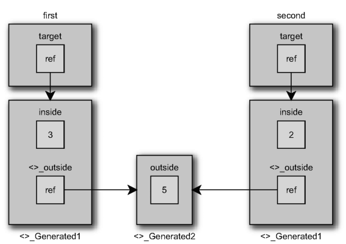Figure 5.1 Snapshot of multiple captured variable scopes in memory
specification to see what’s guaranteed — but it’s also important to be able to just play with code to see what happens.
It’s possible that there are situations where code like listing 5.14 would be the simplest and clearest way of expressing the desired behavior — but I’d have to see it to believe it, and I’d certainly want comments in the code to explain what would happen. So, when is it appropriate to use captured variables, and what do you need to look out for?
5.5.7 Captured variable guidelines and summary
Hopefully this section has convinced you to be very careful with captured variables. They make good logical sense (and almost any change to make them simpler would probably make them either less useful or less logical), but they also make it easy to produce horribly complicated code.
Don’t let that discourage you from using them sensibly, though — they can save you masses of tedious code, and when they’re used appropriately they can be the most readable way of getting the job done. But what counts as sensible?
GUIDELINES FOR USING CAPTURED VARIABLES
The following is a list of suggestions for using captured variables:
■ If code that doesn’t use captured variables is just as simple as code that does, don’t use them.
■ Before capturing a variable declared by a for or foreach statement, consider whether your delegate is going to live beyond the loop iteration, and whether you want it to see the subsequent values of that variable. If not, create another variable inside the loop that just copies the value you do want.
■ If you create multiple delegate instances (whether in a loop or explicitly) that capture variables, put thought into whether you want them to capture the same variable.
■ If you capture a variable that doesn’t actually change (either in the anonymous method or the enclosing method body), then you don’t need to worry as much.
■ If the delegate instances you create never escape from the method — in other words, they’re never stored anywhere else, or returned, or used for starting threads — life is a lot simpler.
■ Consider the extended lifetime of any captured variables in terms of garbage collection. This is normally not an issue, but if you capture an object that’s expensive in terms of memory, it may be significant.
The first point is the golden rule. Simplicity is a good thing — so any time the use of a captured variable makes your code simpler after you’ve factored in the additional inherent complexity of forcing your code’s maintainers to understand what the captured variable does, use it. You need to include that extra complexity in your considerations, that’s all — don’t just go for minimal line count.
We’ve covered a lot of ground in this section, and I’m aware that it can be hard to take in. I’ve listed the most important things to remember next, so that if you need to come back to this section another time, you can jog your memory without having to read through the whole thing again:
■ The variable is captured — not its value at the point of delegate instance creation.
■ Captured variables have lifetimes extended to at least that of the capturing delegate.
■ Multiple delegates can capture the same variable...
■ ...but within loops, the same variable declaration can effectively refer to different variable “instances.”
■ for/foreach loop declarations create variables that live for the duration of the loop — they’re not instantiated on each iteration.
■ Extra types are created where necessary to hold captured variables.
■ Be careful! Simple is almost always better than clever.
We’ll see more variables being captured when we look at C# 3 and its lambda expressions, but for now you may be relieved to hear that we’ve finished our rundown of the new C# 2 delegate features.
5.6 Summary
C# 2 has radically changed the ways in which delegates can be created, and in doing so it’s opened up the framework to a more functional style of programming. There are more methods in .NET 2.0 that take delegates as parameters than there were in .NET 1.0/1.1, and this trend continues in .NET 3.5. The List<T> type is the best example of this, and is a good test-bed for checking your skills at using anonymous methods and captured variables. Programming in this way requires a slightly different mind-set — you must be able to take a step back and consider what the ultimate aim is, and
whether it’s best expressed in the traditional C# manner, or whether a functional approach makes things clearer.
All the changes to delegate handling are useful, but they do add complexity to the language, particularly when it comes to captured variables. Closures are always tricky in terms of determining exactly how the available environment is shared, and C# is no different in this respect. The reason the concept has lasted so long, though, is that it can make code simpler to understand and more immediate. The balancing act between complexity and simplicity is always a difficult one, and it’s worth being cautious to start with. But over time you should expect to get better at working with captured variables and understanding how they behave. LINQ encourages their use even further, and a great deal of modern, idiomatic C# code uses closures frequently.
Anonymous methods aren’t the only change in C# 2 that involves the compiler creating extra types behind the scenes and doing devious things with variables that appear to be local. We’ll see a lot more of this in our next chapter, where the compiler effectively builds a whole state machine for us in order to make it easier for the developer to implement iterators.
Chapter 6: Implementing iterators the easy way
This chapter covers
■ Implementing iterators in C# 1
■ Iterator blocks in C# 2
■ Sample iterator usage
■ Iterators as coroutines
The iterator pattern is an example of a behavioral pattern—a design pattern that simplifies communication between objects. It’s one of the simplest patterns to understand, and incredibly easy to use. In essence, it allows you to access all the elements in a sequence of items without caring about what kind of sequence it is — an array, a list, a linked list, or none of the above. This can be effective for building a data pipeline, where an item of data enters the pipeline and goes through a number of different transformations or filters before coming out at the other end. Indeed, this is one of the core patterns of LINQ, as we’ll see in part 3.
In .NET, the iterator pattern is encapsulated by the IEnumerator and IEnumerable interfaces and their generic equivalents. (The naming is unfortu-nate — the pattern is normally called iteration to avoid getting confused with other
meanings of the word enumeration. I’ve used iterator and iterable throughout this chapter.) If a type implements IEnumerable, that means it can be iterated over; calling the GetEnumerator method will return the IEnumerator implementation, which is the iterator itself. You can think of the iterator as being like a database cursor: a position within the sequence. The iterator can only move forward within the sequence, and there can be many iterators operating on the same sequence at the same time.
As a language, C# 1 has built-in support for consuming iterators using the foreach statement. This makes it easy to iterate over collections — easier than using a straight for loop — and is nicely expressive. The foreach statement compiles down to calls to the GetEnumerator and MoveNext methods and the Current property, with support for disposing the iterator afterward if IDisposable has been implemented. It’s a small but useful piece of syntactic sugar.
In C# 1, though, implementing an iterator is a relatively difficult task. C# 2 makes this much simpler, which can sometimes lead to the iterator pattern being worth implementing in cases where otherwise it would’ve caused more work than it saved.
In this chapter we’ll look at what’s required to implement an iterator and the support given by C# 2. After we’ve looked at the syntax in detail, we’ll examine a few examples from the real world, including an exciting (if slightly off-the-wall) use of the iteration syntax in a concurrency library from Microsoft. I’ve held off on providing the examples until the end of the description, because there isn’t very much to learn — and the examples will be a lot clearer when you can understand what the code is doing. If you really want to read the examples first, they’re in sections 6.3 and 6.4.
If you just want a teaser, think about the last time you iterated over the lines in a file. Assuming you didn’t want to load the whole file in one go with File.ReadAll-Lines, you probably ended up using a slightly ugly while loop. Wouldn’t foreach have been nicer? If only there were some way we could lazily iterate over lines in a file as if they were just another collection...
As in other chapters, let’s start off by looking at what life was like before C# 2. We’ll implement an iterator the hard way.
6.1 C# 1: the pain of handwritten iterators
We’ve already seen one example of an iterator implementation in section 3.4.3 when we looked at what happens when you iterate over a generic collection. In some ways that was harder than a real C# 1 iterator implementation would’ve been, because we implemented the generic interfaces as well — but it was also easier in other ways because it wasn’t actually iterating over anything useful.
To put the C# 2 features into context, we’ll first implement an iterator that’s about as simple as it can be while still providing real functionality. Suppose we wanted a new type of collection based on a circular buffer. We’ll implement IEnumerable so that users of our new class can easily iterate over all the values in the collection. We’ll ignore the guts of the collection here and just concentrate on the iteration side. Our collection will store its values in an array (object[] — no generics here!), and the
collection will have the interesting feature that you can set its logical starting point — so if the array had five elements, you could set the start point to 2, and expect elements 2, 3, 4, 0, and then 1 to be returned. Although I won’t show the full circular buffer code here, it’s in the downloadable code.
To make the class easy to demonstrate, we’ll provide both the values and the starting point in the constructor. So, we should be able to write code such as listing 6.1 in order to iterate over the collection.
Listing 6.1 Code using the (as yet unimplemented) new collection type
object[] values = {"a", "b", "c", "d", "e"};
IterationSample collection = new IterationSample(values, 3); foreach (object x in collection)
{
Console.WriteLine (x);
}
Running listing 6.1 should (eventually) produce output of “d”, “e”, “a”, “b”, and finally “c” because we specified a starting point of 3. Now that we know what we need to achieve, let’s look at the skeleton of the class as shown in the following listing.
Listing 6.2 Skeleton of the new collection type, with no iterator implementation
using System;
using System.Collections;
public class IterationSample : IEnumerable
{
object[] values; int startingPoint;
public IterationSample(object[] values, int startingPoint)
{
this.values = values; this.startingPoint = startingPoint;
}
public IEnumerator GetEnumerator()
{
throw new NotImplementedException();
}
}
As you can see, we haven’t implemented GetEnumerator yet, but the rest of the code is ready to go. So, how do we go about writing the GetEnumerator code? The first thing to understand is that we need to store some state somewhere. One important aspect of the iterator pattern is that we don’t return all of the data in one go — the client just asks for one element at a time. That means we need to keep track of how far we’ve already gone through our array. The stateful nature of iterators will be important when we look at what the C# 2 compiler does for us, so keep a close eye on the state required in this example.
So, where should this state live? Suppose we tried to put it in the IterationSample class itself, making that implement IEnumerator as well as IEnumerable. At first sight, this looks like a good plan — after all, the data is in the right place, including the starting point. Our GetEnumerator method could just return this. But there’s a big problem with this approach — if GetEnumerator is called several times, several independent iterators should be returned. For instance, we should be able to use two foreach statements, one inside another, to get all possible pairs of values. The two iterators need to be independent — which suggests we need to create a new object each time GetEnumerator is called. We could still implement the functionality directly within IterationSample, but then we’d have a class that didn’t have a single clear responsibil-ity — it would be pretty confusing.
Instead, let’s create another class to implement the iterator itself. We’ll use the fact that in C# a nested type has access to its enclosing type’s private members, which means we can just store a reference to the parent IterationSample, along with the state of how far we’ve gone so far. This is shown in the following listing.
Listing 6.3 Nested class implementing the collection’s iterator
class IterationSampleIterator : IEnumerator
{
IterationSample parent; int position;
internal IterationSampleIterator(IterationSample parent)
{
this.parent = parent; position = -1;
}
public bool MoveNext()
{
if (position != parent.values.Length)
{
position++;
}
return position < parent.values.Length;
}
public object Current
{
get
{
if (position == -1 ||
position == parent.values.Length)
{
throw new InvalidOperationException();
}
int index = position + parent.startingPoint; index = index % parent.values.Length; return parent.values[index];
public void Reset()
{
position = -1;
}
}
What a lot of code to perform such a simple task! We remember the original collection of values we’re iterating over O and keep track of where we’d be in a simple zero-based array ©. To return an element, we offset that index by the starting point ©. In keeping with the interface, we consider our iterator to start logically before the first element ©, so the client will have to call MoveNext before using the Current property for the first time. The conditional increment at © makes the test at © simple and correct even if MoveNext is called again after it’s first reported that no more data is available. To reset the iterator, we set our logical position back to before the first element ©.
Most of the logic involved is fairly straightforward, although there’s lots of room for off-by-one errors; my first implementation failed its unit tests for precisely that reason. The good news is that it works, and that we only need to implement IEnumerable in IterationSample to complete the example:
public IEnumerator GetEnumerator()
{
return new IterationSampleIterator(this);
}
I won’t reproduce the combined code here, but it’s available on the book’s website, including listing 6.1, which now has the expected output.
It’s worth bearing in mind that this is a relatively simple example — there’s not a lot of state to keep track of, and no attempt to check whether the collection has changed between iterations. With such a large burden involved to implement a simple iterator, we shouldn’t be surprised at the rarity of implementing the pattern in C# 1. Developers were generally happy to use foreach on the collections provided by the framework, but more direct (and collection-specific) access when it came to their own collections.
So, about 40 lines of code to implement the iterator in C# 1. Let’s see if C# 2 can do any better.
6.2 C# 2: simple iterators with yield statements
I’ve always been the kind of person who likes to stay up until midnight on Christmas Eve in order to open a present as soon as Christmas Day arrives. In the same way, I’d find it almost impossible to wait any significant amount of time before showing you how neat the solution is in C# 2.
6.2.1 Introducing iterator blocks and yield return
This chapter wouldn’t exist if C# 2 didn’t have a powerful feature that cuts down the amount of code you have to write to implement iterators. In some other topics the amount of code has only been reduced slightly, or has just made something more elegant. In this case, though, the amount of code required is reduced massively. Listing 6.4 shows the complete implementation of the GetEnumerator method in C# 2.
Listing 6.4 Iterating through the sample collection with C# 2 and yield return
public IEnumerator GetEnumerator()
{
for (int index = 0; index < values.Length; index++)
{
yield return values[(index + startingPoint) % values.Length];
}
}
Four lines of implementation, two of which are just braces. To be clear, that replaces the whole of the IterationSampleIterator class. Completely. At least in the source code... Later on we’ll see what the compiler has done behind our back, and some of the quirks of the implementation it’s provided, but for the moment let’s look at the source code we’ve used.
The method looks perfectly normal until you see the use of yield return. That’s what tells the C# compiler that this isn’t a normal method but one implemented with an iterator block. The method is declared to return an IEnumerator, and you can only use iterator blocks to implement methods44 that have a return type of IEnumerable, IEnumerator, or one of the generic equivalents. The yield type of the iterator block is object if the declared return type of the method is a nongeneric interface, or the type argument of the generic interface otherwise. For instance, a method declared to return IEnumerable<string> would have a yield type of string.
No normal return statements are allowed within iterator blocks — only yield return. All yield return statements in the block must try to return a value compatible with the yield type of the block. To use our previous example, you couldn’t write yield return 1; in a method declared to return IEnumerable<string>.
RESTRICTIONS ON YIELD RETURN There are a few further restrictions on yield statements. You can’t use yield return inside a try block if it has any catch blocks, and you can’t use either yield return or yield break (which we’ll come to shortly) in a finally block. That doesn’t mean you can’t use try/ catch or try/finally blocks inside iterators — itjust restricts what you can do in them.45
The big idea that you need to get your head around when it comes to iterator blocks is that although you’ve written a method that looks like it executes sequentially, what you’ve actually asked the compiler to do is create a state machine for you. This is necessary for exactly the same reason we had to put so much effort into implementing the iterator in C# 1 — the caller only wants to see one element at a time, so we need to keep track of what we were doing when we last returned a value.
When the compiler encounters an iterator block, it creates a nested type for the state machine. This type remembers exactly where we are within the block and the values of local variables (including parameters). The generated class is somewhat similar to the longhand implementation we wrote earlier, in that it keeps all the necessary state as instance variables. Let’s think about what this state machine has to do in order to implement the iterator:
■ It has to have some initial state.
■ Whenever MoveNext is called, it has to execute code from the GetEnumerator method until we’re ready to provide the next value (in other words, until we hit a yield return statement).
■ When the Current property is used, it has to return the last value we yielded.
■ It has to know when we’ve finished yielding values so that MoveNext can return false.
The second point in this list is the tricky one, because it always needs to restart the code from the point it had previously reached. Keeping track of the local variables (as they appear in the method) isn’t too hard — they’re just represented by instance variables in the state machine. The restarting aspect is trickier, but the good news is that unless you’re writing a C# compiler yourself, you needn’t care about how it’s achieved: the result from a black box point of view is that it just works. You can write perfectly normal code within the iterator block and the compiler is responsible for making sure that the flow of execution is exactly as it would be in any other method; the difference is that a yield return statement appears to only temporarily exit the method — you could think of it as being paused, effectively.
Next we’ll examine the flow of execution in more detail, and in a more visual way.
6.2.2 Visualizing an iterator’s workflow
It may help to think about how iterators execute in terms of a sequence diagram (see http://mng.bz/jH7l). Rather than drawing the diagram by hand, listing 6.5 prints it out for us. The iterator itself just provides a sequence of numbers (0, 1, 2, -1) and then finishes. The interesting part isn’t the numbers provided so much as the flow of the code.
Listing 6.5 Showing the sequence of calls between an iterator and its caller
static readonly string Padding = new string(' ', 30); static IEnumerable<int> CreateEnumerable()
{
Console.WriteLine("{0}Start of CreateEnumerable()", Padding); for (int i=0; i < 3; i++)
{
Console.WriteLine("{0}About to yield {1}", Padding, i); yield return i;
Console.WriteLine("{0}After yield", Padding);
Console.WriteLine("{0}Yielding final value", Padding); yield return -1;
Console.WriteLine("{0}End of CreateEnumerable()", Padding);
}
IEnumerable<int> iterable = CreateEnumerable();
IEnumerator<int> iterator = iterable.GetEnumerator(); Console.WriteLine("Starting to iterate"); while (true)
{
Console.WriteLine("Calling MoveNext()..."); bool result = iterator.MoveNext();
Console.WriteLine("... MoveNext result={0}", result); if (!result)
{
break;
}
Console.WriteLine("Fetching Current...");
Console.WriteLine("... Current result={0}", iterator.Current);
}
Listing 6.5 isn’t pretty, particularly around the iteration side of things. In the normal course of events we’d just use a foreach loop, but to show exactly what's happening when, I had to break the use of the iterator out into pieces. This code broadly does what foreach does, although foreach also calls Dispose at the end. This is important for iterator blocks, as we’ll explore shortly. As you can see, there’s no difference in the syntax within the iterator method even though this time we’re returning IEnumerable<int> instead of IEnumerator<int>. Usually you’ll only want to return IEnumerator<T> in order to implement IEnumerable<T>; if you want to just yield a sequence from a method, return IEnumerable<T> instead.
Here’s the output from listing 6.5:
Starting to iterate Calling MoveNext()...
Start of CreateEnumerable()
About to yield 0
... MoveNext result=True Fetching Current...
... Current result=0 Calling MoveNext()...
After yield About to yield 1
... MoveNext result=True Fetching Current...
... Current result=1 Calling MoveNext()...
After yield About to yield 2
... MoveNext result=True Fetching Current...
... Current result=2 Calling MoveNext()...
After yield
Yielding final value
... MoveNext result=True Fetching Current...
... Current result=-1 Calling MoveNext()...
End of CreateEnumerable()
... MoveNext result=False
There are various important things to note from this output:
■ None of the code we wrote in CreateEnumerable is called until the first call to MoveNext.
■ Calling MoveNext is where all the work gets done; fetching Current doesn’t run any of our code.
■ The code stops executing at yield return and picks up again just afterward at the next call to MoveNext.
■ We can have multiple yield return statements in different places in the method.
■ The code doesn’t end at the last yield return — instead, the call to MoveNext that causes us to reach the end of the method is the one that returns false.
The first point is particularly important, because it means you can’t use an iterator block for any code that has to be executed immediately when the method is called — such as argument validation. If you put normal checking into a method implemented with an iterator block, it won’t behave nicely. You’ll almost certainly fall foul of this at some point — it’s an extremely common error, and hard to understand until you think about what the iterator block is doing. We’ll see the solution to the problem in section
6.3.7.
There are two things we haven’t seen yet — an alternative way of halting the iteration, and how finally blocks work in this somewhat odd form of execution. Let’s take a look at them now.
6.2.3 Advanced iterator execution flow
In normal methods, the return statement has two effects. First, it supplies the value the caller sees as the return value. Second, it terminates the execution of the method, executing any appropriate finally blocks on the way out. We’ve seen that the yield return statement temporarily exits the method, but only until MoveNext is called again, and we haven’t examined the behavior of finally blocks at all yet. How can we really stop the method, and what happens to all of those finally blocks? We’ll start with a fairly simple construct — the yield break statement.
ENDING AN ITERATOR WITH YIELD BREAK
You can always find a way to make a method have a single exit point, and many people work hard to achieve this.46 The same techniques can be applied in iterator blocks. But should you wish to have an early out, the yield break statement is your friend. This effectively terminates the iterator, making the current call to MoveNext return false.
Listing 6.6 demonstrates this by counting up to 100 but stopping early if it runs out of time. This also demonstrates the use of a method parameter in an iterator block,47 and proves that the name of the method is irrelevant.
Listing 6.6 Demonstration of yield break
static IEnumerable<int> CountWithTimeLimit(DateTime limit)
{
for (int i = 1; i <= 100; i++)
{
if (DateTime.Now >= limit)
{
yield break;
}
yield return i;
}
}
DateTime stop = DateTime.Now.AddSeconds(2); foreach (int i in CountWithTimeLimit(stop))
{
Console.WriteLine("Received {0}", i);
Thread.Sleep(300);
}
Typically when you run listing 6.6, you’ll see about seven lines of output. The foreach loop terminates perfectly normally — as far as it’s concerned, the iterator has just run out of elements to iterate over. The yield break statement behaves much like a return statement in a normal method.
So far, so simple. There’s one last aspect of execution flow to explore: how and when finally blocks are executed.
EXECUTION OF FINALLY BLOCKS
We’re used to finally blocks executing whenever we leave the relevant scope. Iterator blocks don’t behave quite like normal methods, though — as we’ve seen, a yield return statement effectively pauses the method rather than exiting it. Following that logic, we wouldn’t expect any finally blocks to be executed at that point — and they aren’t.
But appropriate finally blocks are executed when a yield break statement is hit, just as you’d expect them to be when returning from a normal method.48 The most common use of finally in an iterator block is to dispose of resources, typically with a convenient using statement. We’ll see a real-world example of this in section 6.3.6, but for now we’re just trying to see how and when finally blocks are executed. The
static IEnumerable<int> CountWithTimeLimit(DateTime limit) {
try
{
for (int i = 1; i <= 100; i++)
following listing shows this in action — it’s the same code as listing 6.6, but with a finally block. The changes are shown in bold.
{
if (DateTime.Now >= limit)
{
yield break;
}
yield return i;
}
}
finally
{
Console.WriteLine("Stopping!");
}
}
DateTime stop = DateTime.Now.AddSeconds(2); foreach (int i in CountWithTimeLimit(stop))
{
Console.WriteLine("Received {0}", i);
Thread.Sleep(300);
}
The finally block in listing 6.7 is executed whether the iterator block finishes by counting to 100, or whether it has to stop due to the time limit being reached. (It would also execute if the code threw an exception.) But there are other ways we might try to avoid the finally block from being called... Let’s try to be sneaky.
We’ve seen that code in the iterator block is only executed when MoveNext is called. So what happens if we never call MoveNext? Or if we call it a few times and then stop? Let’s consider changing the calling part of listing 6.7 to this:
DateTime stop = DateTime.Now.AddSeconds(2); foreach (int i in CountWithTimeLimit(stop))
{
Console.WriteLine ("Received {0}", i); if (i > 3)
{
Console.WriteLine("Returning");
return;
}
Thread.Sleep(300);
}
Here we’re not stopping early in the iterator code — we’re stopping early in the code using the iterator. The output is perhaps surprising:
Received 1 Received 2 Received 3 Received 4 Returning Stopping!
Here, code is being executed after the return statement in the foreach loop. That doesn’t normally happen unless a finally block is involved — and in this case there are two! We already know about the finally block in the iterator method, but the question is what’s causing it to be executed. I gave a hint to this earlier on — foreach calls Dispose on the iterator returned by GetEnumerator, in its own finally block (just like the using statement). When you call Dispose on an iterator created with an iterator block before it’s finished iterating, the state machine executes any finally blocks that are in the scope of where the code is currently “paused.” That’s a complicated and somewhat detailed explanation, but the result is simpler to express: so long as callers use a foreach loop, finally works within iterator blocks in the way you want it to.
We can prove easily that it’s the call to Dispose that triggers this by using the iterator manually:
DateTime stop = DateTime.Now.AddSeconds(2);
IEnumerable<int> iterable = CountWithTimeLimit(stop);
IEnumerator<int> iterator = iterable.GetEnumerator();
iterator.MoveNext();
Console.WriteLine ("Received {0}", iterator.Current); iterator.MoveNext();
Console.WriteLine ("Received {0}", iterator.Current);
This time the stopping line is never printed. If you add a call to Dispose explicitly, you’ll see the extra line in the output again. It’s relatively rare that you’ll want to terminate an iterator before it’s finished, and it’s relatively rare that you’ll be iterating manually instead of using foreach, but if you do, remember to wrap the iterator in a using statement.
We’ve now covered most of the behavior of iterator blocks, but before we end this section it’s worth considering a few oddities to do with the current Microsoft implementation.
6.2.4 Quirks in the implementation
If you compile iterator blocks with the Microsoft C# 2 compiler and look at the resulting IL in either ildasm or Reflector, you’ll see the nested type that the compiler has generated for us behind the scenes. In my case when compiling our (evolved) first
iterator block example, it was called IterationSample.<GetEnumerator>d__0 (where
the angle brackets make it an unspeakable name — nothing to do with generics). I won’t go through exactly what’s generated in detail here, but it’s worth looking at it in Reflector to get a feel for what’s going on, preferably with the language specification next to you, open at section 10.14: the specification defines different states the type can be in, and this description makes the generated code easier to follow. The bulk of the work is performed in MoveNext, which is generally a big switch statement.
Fortunately, as developers we don’t need to care much about the hoops the compiler has to jump through. But there are a few quirks about the implementation that are worth knowing about:
■ Before MoveNext is called for the first time, the Current property will always return the default value for the yield type of the iterator.
■ After MoveNext has returned false, the Current property will always return the final value yielded.
■ Reset always throws an exception instead of resetting like our manual implementation did. This is required behavior, laid down in the specification.
■ The nested class always implements both the generic and nongeneric form of IEnumerator (and the generic and nongeneric IEnumerable where appropriate).
Failing to implement Reset is reasonable — the compiler can’t work out what you’d need to do in order to reset the iterator, or even whether it’s feasible. Arguably Reset shouldn’t have been in the IEnumerator interface to start with, and I can’t remember the last time I called it. Many collections don’t support it, so callers can’t generally rely on it anyway.
Implementing extra interfaces does no harm either. It’s interesting that if your method returns IEnumerable, you end up with one class implementing five interfaces (including IDisposable). The language specification explains it in detail, but the upshot is that as a developer you don’t need to worry. The fact that it implements both IEnumerable and IEnumerator is slightly unusual — the compiler goes to some pains to make sure that the behavior is correct whatever you do with it, but also manages to create a single instance of the nested type in the common case where you just iterate through the collection in the same thread that created it.
The behavior of Current is odd — in particular, keeping hold of the last item after supposedly moving off it could keep it from being garbage collected. It’s possible that this may be fixed in a later release of the C# compiler, though it’s unlikely, as it could break existing code.49 Strictly speaking, it’s correct from the point of view of the C# 2 language specification — the behavior of the Current property is undefined in this situation. It’d be nicer, though, if it implemented the property in the way that the framework documentation suggests, throwing exceptions at appropriate times.
So, there are a few tiny drawbacks from using the autogenerated code, but sensible callers won’t have any problems — and let’s face it, we’ve saved a lot of code in order to come up with the implementation. This means it makes sense to use iterators more widely than we might’ve done in C# 1. Our next section provides some sample code so you can check your understanding of iterator blocks and see how they’re useful in real life rather than in theoretical scenarios.
6.3 Real-life iterator examples
Have you ever written some code that’s really simple in itself but makes your project much neater? It happens to me every so often, and it usually makes me happier than it probably ought to — enough to get strange looks from colleagues, anyway. That sort of childlike delight is particularly strong when it comes to using a new language feature in a way that’s clearly nicer and not just doing it for the sake of playing with new toys.
Even after using iterators for a few years now, I still come across situations where a solution presents itself using iterator blocks, and the resulting code is brief, clean, and easy to understand. In this section I’ll share three such scenarios with you.
6.3.1 Iterating over the dates in a timetable
While working on a project involving timetables, I came across a few loops, all of which started like this:
for (DateTime day = timetable.StartDate; day <= timetable.EndDate; day = day.AddDays(1))
I was working on this area of code a lot, and I always hated that loop, but it was only when I was reading the code out loud to another developer as pseudo-code that I realized I was missing a trick. I said something like, “For each day within the timetable.” In retrospect, it’s obvious that what I really wanted was a foreach loop. (This may have been obvious to you from the start — apologies if this is the case. Fortunately I can’t see you looking smug.) The loop is much nicer when rewritten as
foreach (DateTime day in timetable.DateRange)
In C# 1, I might’ve looked at that as a fond dream but not bothered implementing it: we’ve seen how messy it is to implement an iterator by hand, and the end result only made a few for loops neater in this case. In C# 2, though, it was easy. Within the class representing the timetable, I simply added a property:
public IEnumerable<DateTime> DateRange {
get
{
for (DateTime day = StartDate; day <= EndDate; day = day.AddDays(1))
{
yield return day;
}
}
}
This has just moved the original loop into the timetable class, but that’s okay — it’s much nicer for it to be encapsulated there, in a property that just loops through the days, yielding them one at a time, than to be in business code that was dealing with those days. If I ever wanted to make it more complex (skipping weekends and public holidays, for instance), I could do it in one place and reap the rewards everywhere.
This one small change made a massive improvement to the readability of the code base. As it happens, I stopped refactoring at that point in the commercial code. I did think about introducing a Range<T> type to represent a general-purpose range, but as I only needed it in this one situation, it didn’t make sense to expend any more effort on the problem. It turns out that was a wise move. In the first edition of this book, I created just such a type — but it had some shortcomings that were hard to address in a book-friendly manner. I redesigned it significantly for my utility library, but I still have a few misgivings. Types like this often sound simpler than they really are, and soon you end up with a corner case to be handled at every turn. The details of the difficulties I encountered don’t really belong in this book — they’re more points about general design than C# — but they’re interesting in their own right, so I’ve written them up as an article on the book’s website (see http://mng.bz/GAmS).
The next example is one of my favourites — it demonstrates everything I love about iterator blocks.
6.3.2 Iterating over lines in a file
I mentioned this in the introduction to the chapter because it’s such a common task. I dread to think how often I’ve written code like this:
using (TextReader reader = File.OpenText(filename))
{
string line;
while ((line = reader.ReadLine()) != null)
{
// Do something with line
}
}
We have four separate concepts here:
■ How to obtain a TextReader
■ Managing the lifetime of the TextReader
■ Iterating over the lines returned by TextReader.ReadLine
■ Doing something with each of those lines
Only the first and last of these are generally specific to the situation — the lifetime management and the mechanism for iterating are just boilerplate code. (At least the lifetime management is simple in C#. Thank goodness for using statements !) There are two ways we could improve things. We could use a delegate — we could write a utility method that would take a reader and a delegate as parameters, call the delegate for each line in the file, and close the reader at the end. That’s often used as an example of closures and delegates — but there’s an alternative that I find more elegant, and which fits in much better with LINQ. Instead of passing our logic into a method as a delegate, we can use an iterator to return a single line at a time from the file, so we can use the normal foreach loop.
You can achieve this using a whole type implementing IEnumerable<string> (I have a LineReader class in my MiscUtil library for this purpose) but a standalone method in another class will work fine, too. It’s really simple, as the next listing proves.
Listing 6.8 Looping over the lines in a file using an iterator block
static IEnumerable<string> ReadLines(string filename)
{
using (TextReader reader = File.OpenText(filename))
{
string line;
while ((line = reader.ReadLine()) != null)
{
yield return line;
}
}
}
foreach (string line in ReadLines("test.txt"))
{
Console.WriteLine(line);
}
The body of the method is pretty exactly what we had before — except that what we’re doing with the line is yielding it to the caller when it iterates over the collection. As before, we open the file, read a line at a time, and then close the reader when we've finished... although the concept of “when we’ve finished” is more interesting in this case than with a using statement in a normal method, where the flow control is more obvious.
This is why it’s important that the foreach loop dispose of the iterator — because that’s what makes sure the reader gets cleaned up. The using statement in the iterator method is acting as a try/finally block; that finally block will execute if either we get to the end of the file or we call Dispose on the IEnumerator<string> when we’re part of the way through. It’d be possible for calling code to abuse the IEnumerator <string> returned by ReadLines(...).GetEnumerator() and end up with a resource leak, but that’s usually the case with IDisposable — if you don’t call Dispose, you may leak resources. It’s rarely a problem though, as foreach does the right thing. It’s important to be aware of this potential abuse — if you relied upon some sort of try/ finally block in an iterator to grant some permission and then remove it again later, that really would be a security hole.
This method encapsulates the first three of the four concepts I listed earlier — but it's a bit restrictive. It’s reasonable to lump together the lifetime management and iteration aspects, but what if we want to read text from a network stream instead? Or if we want to use an encoding other than UTF-8? We need to put the first part back in control of the caller. The most obvious approach would be to change the method signature to accept a TextReader, like this:
static IEnumerable<string> ReadLines(TextReader reader)
This is a bad idea, though. We want to take ownership of the reader so that we can clean it up conveniently for the caller — but that means we have to clean it up, so long as the caller uses us sensibly. The problem is, if something happens before the first call to MoveNext (), we’re never going to have any chance to clean up: none of our code will run. The IEnumerable<string> itself isn’t disposable, and yet it would’ve stored this piece of state which required disposal. Another problem would occur if Get-Enumerator() were called twice: that ought to generate two independent iterators, but they’d both be using the same reader. We could mitigate this somewhat by changing the return type to IEnumerator<string>, but that would mean the result couldn’t be used in a foreach loop, and we still wouldn’t get to run any cleanup code if we never got as far as the first MoveNext () call. Fortunately, there’s a way around this.
Just as our code doesn’t get to run immediately, we don’t need the reader immediately. What we need is a way of getting the reader when we need it. We could use an interface to represent the idea of “I can provide a TextReader when you want one,” but the idea of a single method interface should usually make you reach for a delegate. We’re going to cheat slightly, by introducing a delegate that’s part of .NET 3.5. It’s actually overloaded by different numbers of type parameters, but we only need one:
public delegate TResult Func<TResult>()
As you can see, this delegate has no parameters, but returns a result of the same type as the type parameter. It’s a classic provider or factory signature. In this case, we want to get a TextReader, so we’ll use Func<TextReader>. The changes to the method are simple:
static IEnumerable<string> ReadLines(Func<TextReader> provider)
{
using (TextReader reader = provider())
{
string line;
while ((line = reader.ReadLine()) != null)
{
yield return line;
}
}
}
Now the resource is only acquired just before we actually need it — and by that point, we’re in the context of IDisposable so we can release the resource at the appropriate time. Furthermore, if GetEnumerator () is called multiple times on the returned value, each call will result in an independent TextReader being created.
We can easily use anonymous methods to add overloads to open files, optionally specifying an encoding:
static IEnumerable<string> ReadLines(string filename)
{
return ReadLines(filename, Encoding.UTF8);
static IEnumerable<string> ReadLines(string filename, Encoding encoding)
{
return new StreamReader(filename,encoding);
});
}
This single example uses generics, an anonymous method (which captures parameters), and an iterator block. All that’s missing is nullable value types and you’d have the full house of C# 2’s major features. I’ve used this code on a number of occasions, and it’s always much cleaner than the cumbersome code we started off with.
As a final example, let’s get a first taste of LINQ — even though we’ll only use C# 2.
6.3.3 Filtering items lazily using an iterator block and a predicate
Even though we haven’t started to look at LINQ properly yet, I’m sure you have some idea of what it’s about: it allows you to query data in a simple and powerful way, across multiple data sources such as in-memory collections and databases. C# 2 doesn’t have any of the language integration for query expressions, nor the lambda expressions and extension methods that can make it so concise, but we can still achieve some of the same effects.
One of the core features of LINQ is filtering with the Where method. You provide a collection and a predicate, and the result is a lazily evaluated query that’ll yield only the items in the collection that match the predicate. This is a little like List<T>. Find-All, but it’s lazy and works with any IEnumerable<T>. One of the beautiful things about LINQ50 is that the cleverness is in the design. It’s quite simple to implement LINQ to Objects — as we’ll prove now, at least for the Where method. Ironically even though most of the language features that make LINQ shine are part of C# 3, these are almost all about how you can access methods such as Where, rather than how they’re implemented. Listing 6.9 shows a full example, including simple argument validation, and uses the filter to display all the using directives in the source file that contains the sample code itself.
Listing 6.9 Implementing LINQ's Where method using iterator blocks
public static IEnumerable<T> Where<T>(IEnumerable<T> source,
Predicate<T> predicate)
{
if (source == null || predicate == null)
{
throw new ArgumentNullException();
}
return WhereImpl(source, predicate);
}
private static IEnumerable<T> WhereImpl<T>(IEnumerable<T> source,
Predicate<T> predicate)
{
foreach (T item in source)
{
if (predicate(item))
{
yield return item;
}
}
}
IEnumerable<string> lines = LineReader.ReadLines("../../FakeLinq.cs"); Predicate<string> predicate = delegate(string line)
{ return line.StartsWith("using"); }; foreach (string line in Where(lines, predicate))
{
Console.WriteLine(line);
}
As you can see, we’ve split the implementation up into two parts: argument validation, and the real business logic of filtering. This is slightly ugly, but entirely necessary for sensible error handling. Suppose we put everything in the same method — what would happen when we called Where<string>(null, null)? The answer is nothing... or at least, the desired exception wouldn’t be thrown. This is due to the lazy semantics of iterator blocks: none of the code in the body of the method runs until the first call to MoveNext(), as we saw in section 6.2.2. Typically you want to check the preconditions to the method eagerly—there’s no point in delaying the exception, and it just makes debugging harder. The standard workaround for this is to split the method in half, as we do in listing 6.9. First we check the arguments O in a normal method, and then call the method implemented using an iterator block to lazily process the data as and when it’s requested ©.
The iterator block itself is mind-numbingly straightforward: for each item in the original collection, we test the predicate O and yield the value if it matches. If it doesn’t match, we try the next item and so on until we find something that does match, or we run out of items. It’s straightforward — but a C# 1 implementation would’ve been much harder to follow (and couldn’t have been generic, of course).
The final piece of code to demonstrate the method in action uses our previous example to provide the data — in this case, the source code of the implementation. The predicate simply tests a line to see whether it begins with “using” — it could contain far more complicated logic, of course. I’ve created separate variables for the data and the predicate just to make the formatting clearer, but it could all have been written inline. It’s important to note the principal difference between this example and the equivalent that could’ve been achieved using File.ReadAllLines and Array.FindAll<string>: this implementation is entirely lazy and streaming. Only a single line from the source file is ever required in memory at a time. Of course, that wouldn’t matter in this particular case where the file is small — but if you imagine a multigigabyte log file, you can see the benefits of this approach.
I hope these examples have given you an inkling of why iterator blocks are so important — as well as perhaps a desire to hurry on and find out more about LINQ. Before that, I’d like to mess with your mind a bit, and introduce you to a thoroughly bizarre (but really neat) use of iterators.
6.4 Pseudo-synchronous code with the Concurrency and Coordination Runtime
The Concurrency and Coordination Runtime (CCR) is a library developed by Microsoft to offer an alternative way of writing asynchronous code that’s amenable to complex coordination. At the time of this writing, it’s only available as part of the Microsoft Robotics Studio (see http://www.microsoft.com/robotics) or the Microsoft CCR and DSS Toolkit (see http://www.microsoft.com/ccrdss/). Microsoft has been putting a lot of resources into concurrency in various projects, and the Parallel Extensions framework included in .NET 4 is probably the most important one for the majority of developers. But I wanted to use the CCR to show you how iterator blocks can change the whole execution model.51 The sample code does actually work (against dummy services) but the ideas are more important than the details.
Suppose we’re writing a server that needs to handle lots of requests. As part of dealing with those requests, we need to first call a web service to fetch an authentication token, and then use that token to get data from two independent data sources (say a database and another web service). We then process that data and return the result. Each of the fetch stages could take a while — perhaps a few seconds. Normally we’d consider the simple synchronous route or the stock asynchronous approach. The synchronous version might look something like this:
HoldingsValue ComputeTotalStockValue(string user, string password)
{
Token token = AuthService.Check(user, password);
Holdings stocks = DbService.GetStockHoldings(token);
StockRates rates = StockService.GetRates(token); return ProcessStocks(stocks, rates);
}
That’s easy to understand, but if each request takes two seconds, the whole operation will take six seconds and tie up a thread for the whole time it’s running. If we want to scale up to hundreds of thousands of requests running in parallel, we’re in trouble. Now let’s consider a fairly simple asynchronous version, which avoids tying up a thread when nothing’s happening52 and uses parallel calls where possible:
void StartComputingTotalStockValue(string user, string password)
{
AuthService.BeginCheck(user, password, AfterAuthCheck, null);
}
void AfterAuthCheck(IAsyncResult result)
{
Token token = AuthService.EndCheck(result);
IAsyncResult holdingsAsync = DbService.BeginGetStockHoldings (token, null, null);
StockService.BeginGetRates(token, AfterGetRates, holdingsAsync);
}
void AfterGetRates(IAsyncResult result)
{
IAsyncResult holdingsAsync = (IAsyncResult)result.AsyncState;
StockRates rates = StockService.EndGetRates(result);
Holdings stocks = DbService.EndGetStockHoldings(holdingsAsync); OnRequestComplete(ProcessStocks(stocks, rates));
}
This is much harder to read and understand — and that’s only a simple version! The coordination of the two parallel calls is only achievable in a simple way because we don’t need to pass any other state around, and even so it’s not ideal. If the stock service call completes quickly, we’ll still block a thread pool thread waiting for the database call to complete. More importantly, it’s far from obvious what’s going on, because the code jumps between different methods.
By now you may be asking yourself where iterators come into the picture. Well, the iterator blocks provided by C# 2 effectively allow you to pause current execution at certain points of the flow through the block, and then come back to the same place, with the same state. The clever folks designing the CCR realized that that’s exactly what’s needed for a continuation-passing style of coding. We need to tell the system that there are certain operations we need to perform — including starting other operations asynchronously — but that we’re then happy to wait until the asynchronous operations have finished before we continue. We do this by providing the CCR with an implementation of IEnumerator<ITask> (where ITask is an interface defined by the CCR). Here’s some code to achieve the same results using this style:
static IEnumerator<ITask> ComputeTotalStockValue(string user, string pass)
{
string token = null;
yield return Arbiter.Receive(false, AuthService.CcrCheck(user, pass), delegate(string t) { token = t; });
IEnumerable<Holding> stocks = null;
IDictionary<string,decimal> rates = null; yield return Arbiter.JoinedReceive(false, DbService.CcrGetStockHoldings(token),
StockService.CcrGetRates(token),
delegate(IEnumerable<Holding> s, IDictionary<string,decimal> r)
{ stocks = s; rates = r; });
OnRequestComplete(ComputeTotal(stocks, rates))
Confused? I certainly was when I first saw it — but now I’m in awe of how neat it is. The CCR calls into our code (with a call to MoveNext on the iterator), and we execute until and including the first yield return statement. The CcrCheck method within Auth-Service kicks off an asynchronous request, and the CCR waits (without using a dedicated thread) until it has completed, calling the supplied delegate to handle the result. It then calls MoveNext again, and our method continues. This time we kick off two requests in parallel, and ask the CCR to call another delegate with the results of both operations when they’ve both finished. After that, MoveNext is called for a final time and we get to complete the request processing.
Although it’s obviously more complicated than the synchronous version, it’s still all in one method, it gets executed in the order written, and the method itself can hold the state (in the local variables, which become state in the extra type generated by the compiler). It’s fully asynchronous, using as few threads as it can get away with. I haven’t shown any error handling, but that’s also available in a sensible fashion that forces you to think about the issue at appropriate places.
I’ve deliberately not gone into the details of the Arbiter class, the ITask interface, and so forth here. I’m not trying to promote the CCR in this section, although it’s fascinating to read about and experiment with; I suspect that Parallel Extensions will have more impact on mainstream developers. The point has been to show that iterators can be used in radically different contexts that have little to do with traditional collections. At the heart of this use of them is the idea of a state machine: two of the tricky aspects of asynchronous development are handling state and effectively pausing until something interesting happens. Iterator blocks are a natural fit for both of these problems.
6.5 Summary
C# supports many patterns indirectly, in terms of it being feasible to implement them in C#. But relatively few patterns are directly supported in terms of language features being specifically targeted at a particular pattern. In C# 1, the iterator pattern was directly supported from the point of view of the calling code, but not from the perspective of the collection being iterated over. Writing a correct implementation of IEnumerable was time consuming and error-prone, without being interesting. In C# 2, the compiler does all the mundane work for you, building a state machine to cope with the call-back nature of iterators.
It should be noted that iterator blocks have one aspect in common with the anonymous methods we saw in chapter 5, even though the actual features are very different. In both cases, extra types may be generated, and a potentially complicated code transformation is applied to the original source. Compare this with C# 1, where most of the transformations for syntactic sugar (lock, using, and foreach being the most obvious examples) were straightforward. We’ll see this trend toward smarter compilation continuing with almost every aspect of C# 3.
I’ve shown you one piece of LINQ-related functionality in this chapter: filtering a collection. IEnumerable<T> is one of the most important types in LINQ, and if you ever want to write your own LINQ operators on top of LINQ to Objects,10 you’ll be eternally grateful to the C# team for including iterator blocks in the language.
In addition to seeing some real-life examples of the use of iterators, we’ve looked at how one particular library has used them in a fairly radical way that has little to do with what comes to mind when we think about iteration over a collection. It’s worth bearing in mind that many languages have also looked at this sort of problem before — in computer science the term coroutine is applied to concepts of this nature. Different languages have historically supported them to a greater or lesser extent, with tricks being applicable to simulate them sometimes — for example, Simon Tatham has an excellent article on how even C can express coroutines if you’re willing to bend coding standards somewhat (see http://mng.bz/H8YX). We’ve seen that C# 2 makes coroutines easy to write and use.
Having seen some major and sometimes mind-warping language changes focused around a few key features, our next chapter is a change of pace. It describes a number of small changes that make C# 2 more pleasant to work with than its predecessor, learning from the little niggles of the past to produce a language that has fewer rough edges, more scope for dealing with awkward backward-compatibility cases, and a better story around working with generated code. Each feature is relatively straightforward, but there are quite a few of them.
10 This is less daunting and more fun than it sounds. We’ll look at a few guidelines around this topic in chapter 12.
Chapter 7: Concluding C# 2: the final features
This chapter covers
■ Partial types
■ Static classes
■ Separate getter/setter property access
■ Namespace aliases
■ Pragma directives
■ Fixed-size buffers
■ Friend assemblies
So far we’ve looked at the four biggest new features in C# 2: generics, nullable types, delegate enhancements, and iterator blocks. Each addresses a fairly complex requirement, which is why we’ve gone into them in some depth. The remaining new features of C# 2 knock a few rough edges off C# 1. They’re little niggles that the language designers decided to correct — either areas where the language needed a bit of improvement for its own sake, or where the experience of working with code generation and native code could be made more pleasant.
Over time, Microsoft has received a lot of feedback from the C# community (and its own developers, no doubt) about areas where C# hasn’t gleamed quite as brightly as it might. Several smaller changes made it into C# 2 along with the larger ones, for the purpose of alleviating some of these small pain points.
None of the features in this chapter is particularly difficult, and we’ll go through them fairly quickly. Don’t underestimate how important they are, though — just because a topic can be explored in a few pages doesn’t mean it’s useless. You’re likely to use some of these features on a frequent basis. Here’s a quick rundown of the features covered in this chapter, so you know what to expect:
■ Partial types—The ability to write the code for a type in multiple source files; particularly handy for types where part of the code is autogenerated and the rest is written manually.
■ Static classes—Tidying up utility classes so that the compiler can spot when you’re trying to use them inappropriately, and making your intentions clearer.
■ Separate getter/setter property access—Finally, the ability to have a public getter and a private setter for properties! (That’s not the only combination available, but it’s the most common.)
■ Namespace aliases—Ways out of sticky situations where type names aren’t unique.
■ Pragma directives—Compiler-specific instructions for actions such as suppressing specific warnings for a particular section of code.
■ Fixed-size buffers—More control over how structs handle arrays in unsafe code.
■ InternalsVisibleToAttribute (friend assemblies) — A feature spanning language, framework, and runtime, this allows selected assemblies more access when required.
You may be itching to get on to the sexy stuff from C# 3 by this point, and I don’t blame you. Nothing in this chapter is going to set the world on fire — but each of these features can make your life more pleasant, or dig you out of a hole in some cases. Having dampened your expectations somewhat, our first feature is actually pretty nifty.
7.1 Partial types
The first change we’ll look at is due to the power struggle that was usually involved when using code generators with C# 1. For Windows Forms, the designer in Visual Studio required its own regions of code that couldn’t be touched by developers, within the same file that developers had to edit for user interface functionality. This was clearly a brittle situation.
In other cases, code generators create source that’s compiled alongside manually written code. In C# 1, adding extra functionality involved deriving new classes from the autogenerated ones, which is ugly. There are plenty of other scenarios where having an unnecessary link in the inheritance chain can cause problems or reduce encapsulation. For instance, if two different parts of your code want to call each other, you need virtual methods for the parent type to call the child, and protected methods for the reverse situation, where normally you’d just use two private nonvirtual methods.
C# 2 allows more than one file to contribute to a type, and IDEs can extend this notion so that some of the code used for a type may not even be visible as C# source code at all. Types built from multiple source files are called partial types.
In this section we’ll also learn about partial methods, which are only relevant in partial types and allow a rich but efficient way of adding manually written hooks into autogenerated code. This is actually a C# 3 feature (this time based on feedback about C# 2), but it’s more logical to discuss it when we examine partial types than to wait until the next part of the book.
7.1.1 Creating a type with multiple files
Creating a partial type is a cinch — you just need to include the partial contextual keyword in the declaration for the type in each file it occurs in. A partial type can be declared within as many files as you like, although all the examples in this section use two.
The compiler effectively combines all the source files together before compiling. This means that code in one file can call code in another and vice versa, as shown in figure 7.1 — there’s no need for forward references or other tricks.
You can’t write half of a member in one file and half of it in another — each individual member has to be complete within its own file.1 There are a few obvious restrictions about the declarations of the type — the declarations have to be compatible. Any file can specify interfaces to be implemented (and they don’t have to be implemented in that file); any file can specify the base type; any file can specify constraints on a type parameter. But if multiple files specify a base type, those base types have to be the same, and if multiple files specify type constraints, the constraints have to be identical. Listing 7.1 gives an example of the flexibility afforded (while not doing anything even remotely useful).
1 There’s an exception here: partial types can contain nested partial types spread across the same set of files.
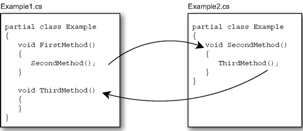
Figure 7.1 Code in partial types is able to see all of the members of the type, regardless of which file each member is in.
Listing 7.1 Demonstration of mixing declarations of a partial type
// Example1.cs using System;
partial class Example<TFirst, TSecond>
: IEquatable<string> where TFirst : class
{
public bool Equals(string other)
{
return false;
}
}
// Example2.cs using System;
partial class Example<TFirst, TSecond>
: EventArgs, IDisposable
{
public void Dispose()
{
}
}
I stress that this listing is solely for the purpose of talking about what’s legal in a decla-ration — the types involved were only picked for convenience and familiarity. We can see that both declarations (O and ©) contribute to the list of interfaces that must be implemented. In this example, each file implements the interfaces it declares, and that’s a common scenario, but it would be legal to move the implementation of IDisposable © to Example1.cs and the implementation of IEquatable<string> © to Example2.cs. I’ve used the ability to specify interfaces separately from the implementation myself, encapsulating methods with the same signature generated for multiple different types into an interface. The code generator doesn't know about the interface, so it wouldn’t know to declare that the type implements it.
Only O specifies any type constraints, and only © specifies a base class. If O had specified a base class, it would have to be EventArgs, and if © had specified any type constraints they’d have to be exactly as in O. In particular, we can’t specify a type constraint for TSecond in © even though it’s not mentioned in O. Both types have to have the same access modifier, if any — we couldn’t make one declaration internal and the other public, for example. Essentially, the rules around combining files allow flexibility in most cases while encouraging consistency.
In single file types, initialization of member and static variables is guaranteed to occur in the order they appear in the file, but there’s no guaranteed order when multiple files are involved. Relying on the order of declaration within the file is brittle to start with — it leaves your code open to subtle bugs if a developer decides to “harmlessly” move things around. So, it’s worth avoiding this situation where you can anyway, but particularly avoid it with partial types.
Now that we know what we can and can’t do, let’s take a closer look at why we’d want to do it.
7.1.2 Uses of partial types
As I mentioned earlier, partial types are primarily useful in conjunction with designers and other code generators. If a code generator has to modify a file that’s owned by a developer, there’s always a risk of things going wrong. With the partial types model, a code generator can own the file where it’ll work, and completely overwrite the whole file every time it wants to.
Some code generators may even choose not to generate a C# file at all until the build is well under way. For instance, Snippy has Extensible Application Markup Language (XAML) files that describe the user interface. When the project is built, each XAML file is converted into a C# file in the obj directory (the filenames end with .g.cs to show they’ve been generated) and compiled along with the partial class providing extra code for that type (typically event handlers and extra construction code). This completely prevents developers from tweaking the generated code, at least without going to the extreme lengths of hacking the build file.
I’ve been careful to use the phrase code generator instead of just designer because there are plenty of code generators around besides designers. For instance, in Visual Studio web service proxies are generated as partial classes, and you may have your own tools that generate code based on other data sources. One reasonably common example of this is object-relational mapping (ORM) — some ORM tools use database entity descriptions from a configuration file (or straight from the database) and generate partial classes representing those entities. Likewise my .NET port of the Google Protocol Buffer serialization framework generates partial classes — a feature that has proven useful even within the implementation itself.
This makes it straightforward to add behavior to the type: overriding virtual methods of the base class, adding new members with business logic, and so forth. It’s a great way of letting the developer and the tool work together, rather than constantly squabbling about who’s in charge.
One scenario that’s occasionally useful is for one file to be generated containing multiple partial types, and then some of those types are enhanced in other files, one manually generated file per type. To return to the ORM example, the tool could generate a single file containing all the entity definitions, and some of those entities could have extra code provided by the developer, using one file per entity. This keeps the number of automatically generated files low, but still provides good visibility of the manual code involved.
Figure 7.2 shows how the uses of partial types for XAML and entities are similar, but with slightly different timing involved when it comes to creating the autogenerated C# code.
A somewhat different use of partial types is as an aid to refactoring. Sometimes a type gets too big and assumes too many responsibilities. One first step to dividing the
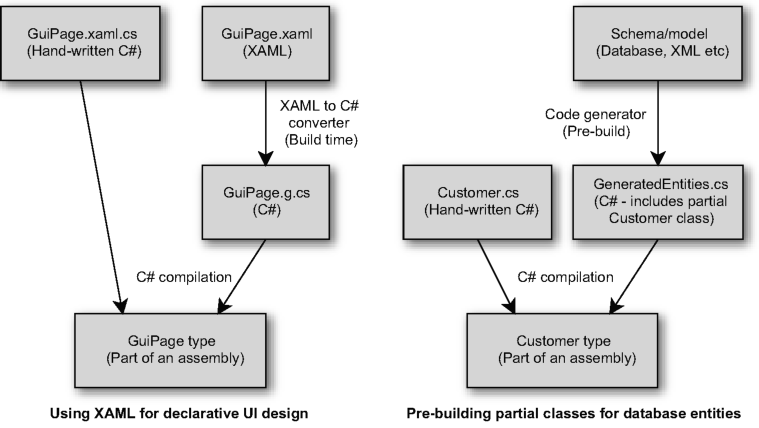Figure 7.2 Comparison between XAML precompilation and autogenerated entity classes
bloated type into smaller, more coherent types can be to first split it into a partial type over two or more files. This can be done with no risk and in an experimental manner, moving methods between files until each file only addresses a particular concern. Although the next step of splitting the type up is still far from automatic at that stage, it should be a lot easier to see the end goal.
One final use to mention: unit testing. Often the set of unit tests for a class can end up being much larger than the implementation itself. One way to split the tests into more understandable chunks is using partial types. You can still easily run all the tests for a type in one go (as you still have a single test class), but you can easily see the tests for different areas of functionality in different files. By hand-editing the project file, you can even have the same parent/child expansion in Solution Explorer as you see when partial types are used for Visual Studio’s generated code. This won’t be to everyone's tastes, but I’ve found it to be a useful way of managing tests.
When partial types first appeared in C# 2, no one knew exactly how they’d be used. One feature that was almost immediately requested was a way to provide optional extra code for generated methods to call. This need has been addressed by C# 3 with partial methods.
7.1.3 Partial methods — C# 3 only!
To reiterate my previous explanation, I realize that the rest of this part of the book just deals with C# 2 features — but partial methods don’t fit with any of the other C# 3 features and they do fit in well when describing partial types. Apologies for any confusion this may cause.
Back to the feature: sometimes we want to be able to specify behavior in a manually created file and use that behavior from an automatically generated file. For instance, in a class that has lots of automatically generated properties, we might want to be able to specify code to be executed as validation of a new value for some of those properties. Another common scenario is for a code generator to include constructors — man-ually written code may want to hook into object construction to set default values, perform some logging, and so forth.
In C# 2, these requirements could only be met either by using events that the manually generated code could subscribe to, or by making the automatically generated code assume that the handwritten code will include methods of a particular name — making the whole code fail to compile unless the relevant methods are provided. Alternatively, the generated code can provide a base class with virtual methods that do nothing by default. The manually generated code can then derive from the class and override some or all of the methods.
All of these solutions are somewhat messy. C# 3’s partial methods effectively provide optional hooks that have no cost whatsoever if they’re not implemented — any calls to the unimplemented partial methods are removed by the compiler. This allows tools to be very generous in terms of the hooks they provide — in the compiled code, you only pay for what you use. It’s easiest to understand this with an example. Listing 7.2 shows a partial type specified in two files, with the constructor in the automatically generated code calling two partial methods, one of which is implemented in the manually generated code.
Listing 7.2 A partial method called from a constructor
// Generated.cs using System;
partial class PartialMethodDemo
{
public PartialMethodDemo()
{
OnConstructorStart();
Console.WriteLine("Generated constructor"); OnConstructorEnd();
}
partial void OnConstructorStart(); partial void OnConstructorEnd();
}
// Handwritten.cs using System;
partial class PartialMethodDemo
{
partial void OnConstructorEnd()
{
Console.WriteLine("Manual code");
As shown in listing 7.2, partial methods are declared just like abstract methods: by providing the signature without any implementation but using the partial modifier. Similarly, the actual implementations just have the partial modifier but are otherwise like normal methods.
Calling the parameterless constructor of PartialMethodDemo would result in “Generated constructor” and then “Manual code” being printed out. Examining the IL for the constructor, you wouldn’t see a call to OnConstructorStart because it no longer exists — there’s no trace of it anywhere in the compiled type.
Because the method may not exist, partial methods must have a return type of void and can’t take out parameters. They have to be private, but they can be static and/or generic. If the method isn’t implemented in one of the files, the whole statement calling it is removed, including any argument evaluations. If evaluating any of the arguments has a side effect that you want to occur whether or not the partial method is implemented, you should perform the evaluation separately. For instance, suppose you have the following code:
LogEntity(LoadAndCache(id));
Here LogEntity is a partial method, and LoadAndCache loads an entity from the database and inserts it into the cache. You might want to use this instead:
MyEntity entity = LoadAndCache(id);
LogEntity(entity);
That way, the entity is loaded and cached regardless of whether an implementation has been provided for LogEntity. Of course, if the entity can be loaded equally cheaply later on, and may not even be required, you should leave the statement in the first form and avoid an unnecessary load in some cases.
To be honest, unless you’re writing your own code generators, you’re more likely to be implementing partial methods than declaring and calling them. If you’re only implementing them, you don’t need to worry about the argument evaluation side of things.
In summary, partial methods in C# 3 allow generated code to interact with handwritten code in a rich manner without any performance penalties for situations where the interaction is unnecessary. This is a natural continuation of the C# 2 partial types feature, which enables a much more productive relationship between code generators and developers.
Our next feature is entirely different, and is just a way of telling the compiler more about the intended nature of a type so that it can perform more checking on both the type itself and any code using it.
7.2 Static classes
Our second new feature is in some ways completely unnecessary — it just makes things tidier and more elegant when you write utility classes.
Everyone has utility classes. I haven’t seen a significant project in either Java or C# that didn’t have at least one class consisting solely of static methods. The classic example appearing in developer code is a type with string helper methods, doing anything from escaping, reversing, smart replacing — you name it. An example from the Framework is the System.Math class. The key features of a utility class are as follows:
■ All members are static (except a private constructor).
■ The class derives directly from object.
■ Typically there’s no state at all, unless some caching or a singleton is involved.
■ There are no visible constructors.
■ The class is sealed if the developer remembers to do so.
The last two points are optional, and if there are no visible constructors (including protected ones) then the class is effectively sealed anyway. Both of them help make the purpose of the class more obvious, though.
The following listing gives an example of a C# 1 utility class — then we’ll see how C# 2 improves matters.
Listing 7.3 A typical C# 1 utility class
public sealed class NonStaticStringHelper {
private NonStaticStringHelper()
{
}
public static string Reverse(string input)
{
char[] chars = input.ToCharArray();
Array.Reverse(chars);
return new string(chars);
}
}
The class is sealed O so that no one tries to derive from it. Inheritance is supposed to be about specialization, and there’s nothing to specialize here, as all the members are static O except the private constructor ©. That constructor may seem odd at first sight — why have it at all if it’s private and never going to be used? The reason is because if you don’t supply any constructors for a class, the C# 1 compiler will always provide a default constructor that’s public and parameterless. In this case, we don’t want any visible constructors, so we have to provide a private one.
This pattern works reasonably well, but C# 2 makes it explicit and actively prevents the type from being misused. First we’ll see what changes are needed to turn listing 7.3 into a proper static class as defined in C# 2. As you can see from listing 7.4, little action is required.
Listing 7.4 The same utility class as in listing 7.3 but converted into a C# 2 static class
using System;
public static class StringHelper {
public static string Reverse(string input)
{
char[] chars = input.ToCharArray();
Array.Reverse(chars); return new string(chars);
}
}
We’ve used the static modifier in the class declaration this time instead of sealed, and we haven’t included a constructor at all — those are the only code differences. The C# 2 compiler knows that a static class shouldn’t have any constructors, so it doesn’t provide a default one. In fact, the compiler enforces a number of constraints on the class definition:
■ It can’t be declared as abstract or sealed, although it’s implicitly both.
■ It can’t specify any implemented interfaces.
■ It can’t specify a base type.
■ It can’t include any nonstatic members, including constructors.
■ It can’t include any operators.
■ It can’t include any protected or protected internal members.
It’s worth noting that although all the members must be static, you have to explicitly make them static. Although nested types are implicitly static members of the enclosing class, the nested type itself can be a nonstatic type if that’s required.
The compiler doesn’tjust put constraints on the definition of static classes — it also guards against their misuse. As it knows that there can never be any instances of the class, it prevents any use that would require one. For instance, all of the following are invalid when StringHelper is a static class:
StringHelper variable = null;
StringHelper[] array = null;
public void Method1(StringHelper x) {}
public StringHelper Method1() { return null; }
List<StringHelper> x = new List<StringHelper>();
None of these is prevented if the class just follows the C# 1 pattern — but all of them are essentially useless. In short, static classes in C# 2 don’t allow you to do anything you couldn’t do before — but they prevent you from doing things that you shouldn’t have been doing anyway. They also explicitly state your intentions. By making a class static, you’re saying that you definitely don't want any instances to be created — it’s just not a quirk of the implementation; it’s a design choice.
The next feature on our list has a more positive feel. It’s aimed at a specific — although widely encountered — situation, and allows a solution that’s neither ugly nor breaks encapsulation, which was the choice available in C# 1.
7.3 Separate getter/setter property access
I’ll admit to being bemused when I first saw that C# 1 didn’t allow you to have a public getter and a private setter for properties. This isn’t the only combination of access modifiers that’s prohibited by C# 1, but it’s the most commonly desired one. In fact, in C# 1 both the getter and the setter need to have the same accessibility — it’s declared as part of the property declaration rather than as part of the getter or setter.
There are perfectly good reasons to want different accessibility for the getter and the setter — often you may want some validation, logging, locking, or other code to be executed when changing a variable that backs the property but you don’t want to make the property writable to code outside the class. In C# 1 the alternatives were either to break encapsulation by making the property publicly writable against your better judgment or to write a SetXXX() method in the class to do the setting, which frankly looks ugly when you’re used to real properties.
C# 2 fixes the problem by allowing either the getter or the setter to explicitly have more restrictive access than that declared for the property itself. This is most easily seen with an example:
string name; public string Name {
get { return name; }
private set
{
// Validation, logging etc here name = value;
}
}
In this case, the Name property is effectively read-only to all other types,53 but we can use the familiar property syntax for setting the property within the type itself. The same syntax is also available for indexers as well as properties. You could make the setter more public than the getter (a protected getter and a public setter, for example) but that’s a pretty rare situation, in the same way that write-only properties are few and far between compared with read-only properties.
TRIVIA: THE ONLY PLACE WHERE “PRIVATE” IS REQUIRED Everywhere else in C#, the default access modifier in any given situation is the most private one possible. For example, if something can be declared to be private, it will default to private if you don't specify any access modifiers. This is a nice element of language design, because it’s hard to get it wrong accidentally: if you want something to be more public than it is, you’ll notice when you try to use it. But if you accidentally make something too public, then the compiler can’t help you to spot the problem. Specifying the access of a property getter or setter is the one exception to this rule — if you don’t specify anything, the default is to give the getter/setter the same access as the overall property itself.
Note that you can’t declare the property itself to be private and make the getter pub-lic — you can only make a particular getter/setter more private than the property. Also, you can’t specify an access modifier for both the getter and the setter — that would be silly, as you could declare the property itself to be whichever is the more public of the two modifiers.
This aid to encapsulation is extremely welcome. There’s still nothing in C# 2 to stop other code in the same class from bypassing the property and going directly to whatever fields are backing it, unfortunately. As we’ll see in the next chapter, C# 3 fixes this in one particular case, but not in general.
We move from a feature you may want to use regularly to one that you’ll want to avoid most of the time — it allows your code to be absolutely explicit in terms of which types it’s referring to, but at a significant cost to readability.
7.4 Namespace aliases
Namespaces are primarily intended as a means of organizing types into a useful hierarchy. They also allow you to keep fully qualified names of types distinct even when the unqualified names may be the same. This shouldn’t be seen as an invitation to reuse unqualified type names without good cause — but there are times when it’s the natural thing to do.
An example of this is the unqualified name Button. There are two classes with that name in the .NET 2.0 Framework: System.Windows.Forms.Button and System.Web. UI.WebControls.Button. Although they’re both called Button, it’s easy to tell them apart by their namespaces. This mirrors real life closely — you may know several people called Jon, but you’re unlikely to know anyone else called Jon Skeet. If you’re talking with friends in a particular context, you may be able to use just the name Jon without specifying which one you’re talking about — but in other contexts you may need to provide more exact information.
The using directive of C# 1 (not to be confused with the using statement that calls Dispose automatically) was available in two flavors — one created an alias for a namespace or type (for example, using Out = System.Console;) and the other just introduced a namespace into the list of contexts the compiler would search when looking for a type (for example, using System. IO;). By and large, this was adequate, but there are a few situations that the language couldn’t cope with. In some other cases, automatically generated code would have to go out of its way to make absolutely sure that the right namespaces and types were being used whatever happened.
C# 2 fixes these problems, bringing additional expressiveness to the language. You can now write code that’s guaranteed to mean what you want it to regardless of which other types, assemblies, and namespaces are introduced. These extreme measures are rarely needed outside automatically generated code, but it’s nice to know that they’re there when you need them. In C# 2 there are three types of aliases: the namespace aliases of C# 1, the global namespace alias, and extern aliases. We’ll start off with the one type of alias that was already present in C# 1, but we’ll introduce a new way of using aliases to ensure that the compiler knows to treat it as an alias rather than checking to see whether it’s the name of another namespace or type.
Even in C# 1, it was a good idea to avoid namespace aliases wherever possible. Every so often you might find that one type name clashed with another — as with our Button example earlier — and so you either had to specify the full name including the namespace every time you used them, or have an alias that distinguished the two, in some ways acting like a shortened form of the namespace. The following listing shows an example where the two types of Button are used, qualified by an alias.
Listing 7.5 Using aliases to distinguish between different Button types
using System;
using WinForms = System.Windows.Forms; using WebForms = System.Web.UI.WebControls;
class Test {
static void Main()
{
Console.WriteLine(typeof(WinForms.Button));
Console.WriteLine(typeof(WebForms.Button));
}
}
Listing 7.5 compiles without any errors or warnings, although it’s still not as pleasant as it would be if we only needed to deal with one kind of Button to start with. There’s a problem, though — what if someone were to introduce a type or namespace called WinForms or WebForms? The compiler wouldn’t know what WinForms.Button meant, and would use the type or namespace in preference to the alias. We want to be able to tell the compiler that we need it to treat WinForms as an alias, even though it’s available elsewhere. C# 2 introduces the :: namespace alias qualifier syntax to do this, as shown in the following listing.
Listing 7.6 Using :: to tell the compiler to use aliases
using System;
using WinForms = System.Windows.Forms; using WebForms = System.Web.UI.WebControls;
class WinForms {}
class Test {
static void Main()
{
Console.WriteLine(typeof(WinForms::Button));
Console.WriteLine(typeof(WebForms::Button));
}
}
Instead of WinForms.Button, listing 7.6 uses WinForms: :Button, and the compiler is happy. If you change the :: back to . you’ll get a compilation error. So, if you use :: everywhere you use an alias, you’ll be fine, right? Well, not quite...
7.4.2 The global namespace alias
There’s one part of the namespace hierarchy that you can’t define your own alias for: the root of it, or the global namespace. Suppose you have two classes, both named Configuration; one within a namespace of MyCompany and the other with no namespace specified at all. How can you refer to the root Configuration class from within the MyCompany namespace? You can’t use a normal alias, and if you just specify Configuration the compiler will use MyCompany.Configuration.
In C# 1, there was no way of getting around this. Again, C# 2 comes to the rescue, allowing you to use global: Configuration to tell the compiler exactly what you want. The following listing demonstrates both the problem and the solution.
Listing 7.7 Use of the global namespace alias to specify the desired type exactly
using System; class Configuration {} namespace Chapter7 {
class Configuration {} class Test {
static void Main()
{
Console.WriteLine(typeof(Configuration));
Console.WriteLine(typeof(global::Configuration));
Console.WriteLine(typeof(global::Chapter7.Test));
}
}
}
Most of listing 7.7 is just setting up the situation — the three lines within Main are the interesting ones. The first line prints “Chapter7.Configuration” as the compiler resolves Configuration to that type before moving out to the namespace root. The second line indicates that the type has to be in the global namespace, and so simply prints “Configuration.” I included the third line to demonstrate that using the global alias, you can still refer to types within namespaces, but you have to specify the fully qualified name.
At this point we can get to any uniquely named type, using the global namespace alias if necessary — and if you ever write a code generator where the code doesn’t need to be readable, you may wish to use this feature liberally to make sure that you always refer to the correct type whatever other types are present by the time the code is compiled. What do we do if the type’s name isn’t unique even when we include its namespace? The plot thickens...
7.4.3 Extern aliases
At the start of this section, I referred to human names as examples of namespaces and contexts. I specifically said that you’re unlikely to know more than one person called
Jon Skeet. But I know that there is more than one person with my name, and it’s not beyond the realm of possibility that you might know two or more of us. In this case, in order to specify which one you mean, you have to provide some more information beyond just the full name — the reason you know the particular person, or the country he lives in, or something similarly distinctive.
C# 2 lets you specify that extra information in the form of an extern alias—a name that exists not only in your source code, but also in the parameters you pass to the compiler. For the Microsoft C# compiler, this means specifying the assembly that contains the types in question. Let’s suppose that two assemblies — First.dll and Second.dll — both contain a type called Demo.Example. We can’t just use the fully qualified name to distinguish them, as they both have the same fully qualified name. Instead, we can use extern aliases to specify which we mean. The following listing shows an example of the C# code involved, along with the command line needed to compile it.
Listing 7.8 Working with different types of the same type in different assemblies
// Compile with
// csc Test.cs /r:FirstAlias=First.dll /r:SecondAlias=Second.dll
extern alias extern alias
FirstAlias;
SecondAlias;
using System;
using FD = FirstAlias::Demo; class Test {
static void Main()
{
Console.WriteLine(typeof(FD.Example)); Console.WriteLine(typeof(SecondAlias::Demo.Example));
} Uses extern alias directly
The code in listing 7.8 is straightforward. The first thing we have to do is introduce the two extern aliases O. After that we can use them either via namespace aliases (© and ©) or directly ©. In fact, a normal using directive without an alias (such as using FirstAlias:: Demo;) would’ve allowed us to use the name Example without any further qualification at all. One extern alias can cover multiple assemblies, and several extern aliases can all refer to the same assembly — although I’d think carefully before using either of these features, and particularly before combining them together. To specify an external alias in Visual Studio, just select the assembly reference within Solution Explorer and modify the Aliases value in the Properties window, as shown in figure 7.3.
Hopefully I don’t need to persuade you to avoid this kind of situation wherever you can. It can be necessary to work with assemblies from different third parties who happen to have used the same fully qualified type name, at which point you’d otherwise be
stuck. Where you have more control over the naming, make sure that your names never lead you into this territory in the first place.
Our next feature is almost a meta-feature. The exact functionality it provides depends on which compiler you’re using, because its purpose is to enable control over compiler-specific features — but we’ll concentrate on the Microsoft compiler.
Figure 7.3 Part of the Properties window of Visual Studio 2010, showing an extern alias of FirstAlias for the First.dll reference
7.5 Pragma directives
Describing pragma directives in general is extremely easy: a pragma directive is a preprocessing directive represented by a line beginning with #pragma. The rest of the line can contain any text at all. The result of a pragma directive can’t change the behavior of the program to contravene anything within the C# language specification, but it can do anything outside the scope of the specification. If the compiler doesn’t understand a particular pragma directive, it can issue a warning, but not an error.
That’s basically everything the specification has to say on the subject. The Microsoft C# compiler understands two pragma directives: warnings and checksums.
7.5.1 Warning pragmas
Occasionally, the C# compiler issues warnings that are justifiable but annoying. The correct response to a compiler warning is almost always to fix it — the code is rarely made worse by fixing the warning, and usually it’s improved.
But sometimes there’s a good reason to ignore a warning — and that’s what warning pragmas are available for. As an example, we’ll create a private field that’s never read from or written to. It’s almost always going to be useless... unless we happen to know that it’ll be used by reflection. The following listing is a complete class demonstrating this.
Listing 7.9 Class containing an unused field
public class FieldUsedOnlyByReflection {
int x;
}
If you try to compile listing 7.9, you’ll get a warning message like this:
FieldUsedOnlyByReflection.cs(3,9): warning CS0169:
The private field 'FieldUsedOnlyByReflection.x' is never used
That’s the output from the command line compiler. In the Error List window of Visual Studio, you can see the same information (plus the project it’s in) except that you don’t get the warning number (CS0169). To find the number, you need to either select the warning and bring up the help related to it, or look in the Output window, where the full text is shown. We need the number in order to make the code compile without warnings, as shown in the following listing.
Listing 7.10 Disabling (and restoring) warning CS0169
public class FieldUsedOnlyByReflection {
int x;
#pragma warning restore 0169
}
Listing 7.10 is self-explanatory — the first pragma disables the particular warning we’re interested in, and the second one restores it. It’s good practice to disable warnings for as short a space as you can, so that you don’t miss any warnings you genuinely ought to fix. If you want to disable or restore multiple warnings in a single line, just use a comma-separated list of warning numbers. If you don’t specify any warning numbers at all, the result is to disable or restore all warnings in one fell swoop — but that’s a bad idea in almost every imaginable scenario.
7.5.2 Checksum pragmas
You’re unlikely to need the second form of pragma recognized by the Microsoft compiler. It supports the debugger by allowing it to check that it’s found the right source file. Normally when a C# file is compiled, the compiler generates a checksum from the file and includes it in the debugging information. When the debugger needs to locate a source file and finds multiple potential matches, it can generate the checksum itself for each of the candidate files and see which is correct.
Now, when an ASP.NET page is converted into C#, the generated file is what the C# compiler sees. The generator calculates the checksum of the .aspx page, and uses a checksum pragma to tell the C# compiler to use that checksum instead of calculating one from the generated page.
The syntax of the checksum pragma is
#pragma checksum "filename" "{guid}" "checksum bytes"
The GUID indicates which hashing algorithm has been used to calculate the checksum. The documentation for the CodeChecksumPragma class gives GUIDs for SHA-1 and MD5, should you ever wish to implement your own dynamic compilation framework with debugger support.
It’s possible that future versions of the C# compiler will include more pragma directives, and other compilers (such as the Mono compiler, gmcs) could have their own support for different features. Consult your compiler documentation for the most up-to-date information.
The next feature is another one that you may never use — but if you ever do, it’s likely to make your life somewhat simpler.
7.6 Fixed-size buffers in unsafe code
When calling into native code with P/Invoke, it’s not unusual to find yourself dealing with a structure that’s defined to have a buffer of a particular length within it. Prior to C# 2, such structures were difficult to handle directly, even with unsafe code. Now, you can declare a buffer of the right size to be embedded directly with the rest of the data for the structure.
This capability isn’tjust available for calling native code, although that’s its primary use. You could use it to easily populate a data structure directly corresponding to a file format, for instance. The syntax is simple, and once again we’ll demonstrate it with an example. To create a field that embeds an array of 20 bytes within its enclosing structure, you’d use
fixed byte data[20];
This would allow data to be used as if it were a byte* (a pointer to byte data), although the implementation used by the C# compiler is to create a new nested type within the declaring type and apply the new FixedBuffer attribute to the variable itself. The CLR then takes care of allocating the memory appropriately.
One downside of this feature is that it’s only available within unsafe code: the enclosing structure has to be declared in an unsafe context, and you can only use the fixed-size buffer member within an unsafe context. This limits the situations in which it’s useful, but it can still be a nice trick to have up your sleeve. Also, fixed-size buffers are only applicable to primitive types, and can’t be members of classes (only structures).
There are remarkably few Windows APIs where this feature is directly useful. Numerous situations call for a fixed array of characters — the TIME_Z ONE_ INFORMATION structure, for example — but unfortunately fixed-size buffers of characters appear to be handled poorly by P/Invoke, with the marshaler getting in the way.
As one example, though, listing 7.11 is a console application that displays the colors available in the current console window. It uses an API function, GetConsole-ScreenBufferEx, that was introduced in Windows Vista and Windows Server 2008, and that retrieves extended console information. The following listing displays all 16 colors in hexadecimal format (bbggrr).
Listing 7.11 Demonstration of fixed-size buffers to obtain console color information
using System;
using System.Runtime.InteropServices; struct COORD {
public short X, Y;
}
struct SMALL_RECT {
public short Left, Top, Right, Bottom;
unsafe struct CONSOLE_SCREEN_BUFFER_INFOEX {
public int StructureSize;
public COORD ConsoleSize, CursorPosition;
public short Attributes;
public SMALL_RECT DisplayWindow;
public COORD MaximumWindowSize;
public short PopupAttributes;
public int FullScreenSupported;
public fixed int ColorTable[16];
}
static class FixedSizeBufferDemo {
const int StdOutputHandle = -11;
[DllImport("kernel32.dll")]
static extern IntPtr GetStdHandle(int nStdHandle); [DllImport("kernel32.dll")]
static extern bool GetConsoleScreenBufferInfoEx
(IntPtr handle, ref CONSOLE_SCREEN_BUFFER_INFOEX info);
unsafe static void Main()
{
IntPtr handle = GetStdHandle(StdOutputHandle);
CONSOLE_SCREEN_BUFFER_INFOEX info;
info = new CONSOLE_SCREEN_BUFFER_INFOEX();
info.StructureSize = sizeof(CONSOLE_SCREEN_BUFFER_INFOEX); GetConsoleScreenBufferInfoEx(handle, ref info);
for (int i=0; i < 16; i++)
{
Console.WriteLine ("{0:x6}", info.ColorTable[i]);
}
}
}
Listing 7.11 uses fixed-size buffers for the table of colors. Before fixed-size buffers, we could still have used the API either with a field for each color table entry or by marshalling a normal array as UnmanagedType .ByValArray. But this would’ve created a separate array on the heap instead of keeping the information all within the structure. That’s not a problem here, but in some high-performance situations it’s nice to be able to keep lumps of data together. On a different performance note, if the buffer is part of a data structure on the managed heap, you have to pin it before accessing it. If you do this a lot, it can significantly affect the garbage collector. Stack-based structures don’t have this problem, of course.
I’m not going to claim that fixed-size buffers are a hugely important feature in C# 2 — at least, they’re not important to most people. I’ve included them for completeness — doubtless someone, somewhere, will find them invaluable. Our final feature can barely be called a C# 2 language feature at all — but it just about counts, so I’ve included it for completeness.
7.7 Exposing internal members to selected assemblies
Some features are obviously in the language — iterator blocks, for example. Some features obviously belong to the runtime, such as JIT compiler optimizations. Some clearly sit in both camps, such as generics. This last feature has a toe in each but is sufficiently odd that it doesn’t merit a mention in either specification. In addition, it uses a term that has different meanings in C++ and VB.NET — adding a third meaning to the mix. To be fair, all the terms are used in the context of access permissions, but they have different effects.
7.7.1 Friend assemblies in the simple case
In .NET 1.1 it was entirely accurate to say that something defined to be internal (whether a type, a method, a property, a variable, or an event) could only be accessed within the same assembly in which it was declared.54 In .NET 2.0 that’s still mostly true, but there’s a new attribute to let you bend the rules slightly: InternalsVisibleTo-Attribute, usually referred to as just InternalsVisibleTo. (When applying an attribute whose name ends with Attribute, the C# compiler will apply the suffix automatically.)
InternalsVisibleTo can only be applied to an assembly (not a specific member), and you can apply it multiple times to the same assembly. We’ll call the assembly containing the attribute the source assembly, although this is unofficial terminology. When you apply the attribute, you have to specify another assembly, known as the friend assembly. The result is that the friend assembly can see all the internal members of the source assembly as if they were public. This may sound alarming, but it can be useful, as we’ll see in a minute.
The following listing shows this with three classes in three different assemblies.
Listing 7.12 Demonstration of friend assemblies
// Compiled to Source.dll using System.Runtime.CompilerServices; [assembly:InternalsVisibleTo("FriendAssembly")] public class Source {
internal static void InternalMethod() {} public static void PublicMethod() {}
}
// Compiled to FriendAssembly.dll public class Friend {
static void Main()
{
Source.InternalMethod(); Source.PublicMethod();
}
}
// Compiled to EnemyAssembly.dll public class Enemy {
static void Main()
{
// Source.InternalMethod();
Source.PublicMethod();
}
}
In listing 7.12 a special relationship exists between FriendAssembly.dll and Source .dl l — although it only operates one way: Source.dl l has no access to internal members of FriendAssembly.dll. If we were to uncomment the line at O, the Enemy class would fail to compile.
So, why on earth would we want to open up our well-designed assembly to certain assemblies to start with?
7.7.2 Why use InternalsVisibleTo?
I can’t say I’ve ever used InternalsVisibleTo between two production assemblies. I’m not saying there aren’t legitimate use cases for that, but I’ve not come across them. I have used the attribute when it comes to unit testing.
Some say you should only test the public interface to code. Personally I’m happy to test whatever I can in the simplest manner possible. Friend assemblies make that a lot easier: suddenly it’s trivial to test code that only has internal access without taking the dubious step of making members public just for the sake of testing, or including the test code within the production assembly. (It does occasionally mean making members internal for the sake of testing where they might otherwise be private, but that’s less worrying.)
The only downside to this is that the name of your test assembly lives on in your production assembly. In theory this could represent a security attack vector if your assemblies aren’t signed, and if your code normally operates under a restricted set of permissions. (Anyone with full trust could use reflection to access the members in the first place. You could do that yourself for unit tests, but it’s much nastier.) If this ever ends up as a genuine issue for anyone, I’ll be very surprised. But it does bring the option of signing assemblies into the picture. Just when you thought this was a nice, simple little feature...
7.7.3 InternalsVisibleTo and signed assemblies
If a friend assembly is signed, the source assembly needs to specify the public key of the friend assembly, to make sure it’s trusting the right code. You need the full public key, not just the public key token. For instance, consider the following command line and output (rewrapped and modified slightly for formatting) used to discover the public key of a signed FriendAssembly.dll:
c:\Users\Jon\Test>sn -Tp FriendAssembly.dll
Microsoft (R) .NET Framework Strong Name Utility Version 3.5.21022.8 Copyright (c) Microsoft Corporation. All rights reserved.
Public key is
0024000004800000940000000602000000240000525341310004000001 000100a51372c81ccfb8fba9c5fb84180c4129e50f0facdce932cf31fe 563d0fe3cb6b1d5129e2832 6060a3a539f287aaf59affc5aabc4d8f981 e1a82479ab795f410eab22e32 66033c633400463ee7513378bb4ef41fc 0cae5fb03986d133 677c82a865b278c48d99dc251201b9c43edd7bedef d4b53 06efd0dec7787ec6b664471c2
Public key token is 647b99330b7f792c
The source code for the Source class would now need to have this as the attribute:
[assembly:InternalsVisibleTo("FriendAssembly,PublicKey=" + "0024000004800000940000000602000000240000525341310004000001" + "000100a51372c81ccfb8fba9c5fb84180c4129e50f0facdce932cf31fe" + "563d0fe3cb6b1d5129e2832 6060a3a539f287aaf59affc5aabc4d8f981" + "e1a82479ab795f410eab22e32 66033c633400463ee7513378bb4ef41fc" + "0cae5fb03986d133 67 7c82a865b278c48d99dc251201b9c43edd7bedef" + "d4b5306efd0dec7787ec6b664471c2")]
Unfortunately, you need to either have the public key on one line or use string concat-enation — whitespace in the public key will cause a compilation failure. It’d be a lot more pleasant to look at if we could specify the token instead of the whole key, but fortunately this ugliness is usually confined to AssemblyInfo .cs, so you won’t need to see it often.
In theory, it’s possible to have an unsigned source assembly and a signed friend assembly. In practice, that’s not terribly useful, as the friend assembly typically wants to have a reference to the source assembly — and you can’t refer to an unsigned assembly from one that’s signed! Likewise a signed assembly can’t specify an unsigned friend assembly, so typically you end up with both assemblies being signed if either one of them is.
7.8 Summary
This completes our tour of the new features in C# 2. The topics we’ve looked at in this chapter have broadly fallen into two categories: “nice to have” improvements that streamline development, and “hope you don’t need it” features that can get you out of tricky situations when you need them. To make an analogy between C# 2 and improvements to a house, the major features from our earlier chapters are comparable to full-scale additions. Some of the features we’ve seen in this chapter (such as partial types and static classes) are more like redecorating a bedroom, and features such as namespace aliases are akin to fitting smoke alarms — you may never see a benefit, but it’s nice to know they’re there if you ever need them.
The range of features in C# 2 is broad — the designers tackled many of the areas where developers were feeling pain, without any one overarching goal. That’s not to say the features don’t work well together — nullable value types wouldn’t be feasible without generics, for instance — but there’s no one aim that every feature contributes to, unless you count general productivity.
Now that we’ve finished examining C# 2, it’s time to move on to C# 3, where the picture is very different. Nearly every feature in C# 3 forms part of the grand picture of LINQ, a conglomeration of technologies that massively simplifies many tasks.
Part 3: C# 3: revolutionizing how we code
There’s no doubt that C# 2 is a significant improvement over C# 1. The benefits of generics in particular are fundamental to other changes, notjust in C# 2 but also in C# 3. But C# 2 is in some sense a piecemeal collection of features. Don’t get me wrong: they fit together nicely enough, but they address a set of individual issues. That was appropriate at that stage of C#’s development, but C# 3 is different.
Almost every feature in C# 3 enables one specific technology: LINQ. Many of the features are useful outside this context, and you certainly shouldn’t confine yourself to only using them when you happen to be writing a query expression, for example — but it’d be equally silly not to recognize the complete picture created by the set of jigsaw puzzle pieces presented in the remaining chapters.
When I originally wrote about C# 3 and LINQ in 2007, I was highly impressed on a somewhat academic level. The more deeply you study the language, the more clearly you see the harmony between the various elements that have been introduced. The elegance of query expressions — and in particular the ability to use the same syntax for both in-process queries and providers like LINQ to SQL — was very appealing. LINQ had a great deal of promise.
Now, two and a half years later, I can look back on the promises and see how they’ve played out. In my experience with the community — particularly on Stack Overflow — it’s obvious that LINQ has been widely adopted and really has changed how we approach many data-oriented tasks. Database providers aren’t
just restricted to those from Microsoft — LINQ to NHibernate and SubSonic are just two of the other options available. Microsoft hasn’t stopped innovating around LINQ either: in chapter 12 we’ll see Parallel LINQ and Reactive Extensions, two very different ways of handling data that still use the familiar LINQ operators. And then there’s LINQ to Objects — the simplest, most predictable, almost mundane LINQ provider — and the one that’s most pervasive in industry. The days of writing yet another filtering loop, yet another piece of code to find some maximum value, yet another check to see whether any items in a collection satisfy some condition have gone — and good riddance.
Despite the broad adoption of LINQ, I still see a number of questions which make it clear that some developers regard LINQ as a sort of magic black box. What’s going to happen when I use a query expression, compared with using extension methods directly? When does the data actually get read? How can I make it work more efficiently? Though you can learn a lot of LINQ just by playing with it and looking at examples in blog posts, you’ll get a great deal more out of it by seeing how it all works at a language level, and then learning about what the various libraries do for you.
This is not a book about LINQ — I’m still concentrating on the language features that enable LINQ rather than going into details of concurrency considerations for the Entity Framework and so on. But once you’ve seen the language elements individually and how they fit together, you’ll be in a much better position to learn the details of specific providers.
Chapter 8: Cutting fluff with a smart compiler
This chapter covers
■ Automatically implemented properties
■ Implicitly typed local variables
■ Object and collection initializers
■ Implicitly typed arrays
■ Anonymous types
We start looking at C# 3 in the same way that we finished looking at C# 2 — with a collection of relatively simple features. These are just the first small steps on the path to LINQ. Each of them can be used outside that context, but almost all are important for simplifying code to the extent that LINQ requires in order to be effective.
One important point to note is that though two of the biggest features of C# 2 — generics and nullable types — required CLR changes, there were no significant changes to the CLR that shipped with .NET 3.5. There were some tweaks, but nothing fundamental. The framework grew to support LINQ, along with introducing a few more features to the base class library, but that’s a different matter. It’s worth
being clear in your mind which changes are only in the C# language, which are library changes, and which are CLR changes.
This means that almost all of the new features exposed in C# 3 are due to the compiler being willing to do more work for you. We saw some evidence of this in part 2 — particularly with anonymous methods and iterator blocks — and C# 3 continues in the same vein. In this chapter, we’ll meet the following features that are new to C# 3:
■ Automatically implemented properties—Remove the drudgery of writing simple properties backed directly by fields
■ Implicitly typed local variables—Reduce redundancy from local variable declarations by inferring the variable type from the initial value
■ Object and collection initializers—Simplify the creation and initialization of objects in single expressions
■ Implicitly typed arrays—Reduce redundancy from array creation expressions by inferring the array type from the contents
■ Anonymous types—Enable the creation of ad hoc types to contain simple properties
In addition to describing what the new features do, I’ll make recommendations about their use. Many of the features of C# 3 require a certain amount of discretion and restraint on the part of the developer. That’s not to say they’re not powerful and incredibly useful — quite the opposite — but the temptation to use the latest and greatest funky syntax shouldn’t be allowed to overrule the drive toward clear and readable code.
The considerations I’ll discuss in this chapter (and the rest of the book) will rarely be black and white. Perhaps more than ever before, readability is in the eye of the beholder — and as you become more comfortable with the new features, they’re likely to become more readable to you. I should stress, though, that unless you have good reason to suppose you’ll be the only one to ever read your code, you should consider the needs and views of your colleagues carefully.
Enough navel gazing for the moment. We’ll start off with a feature that shouldn’t cause any controversy. Simple but effective, automatically implemented properties just make life better.
8.1 Automatically implemented properties
Our first feature is probably the simplest in the whole of C# 3. It’s even simpler than any of the new features in C# 2. Despite that — or possibly because of that — it’s also immediately applicable in many, many situations. When you read about iterator blocks in chapter 6, you may not immediately have thought of any areas of your current codebase that could be improved by using them, but I’d be surprised to find any nontrivial C# program that couldn’t be modified to use automatically implemented properties. This fabulously simple feature allows you to express trivial properties with less code than before.
Figure 8.1 Transformation of an automatically implemented property
What do I mean by a trivial property ? I mean one that’s read/write and that stores its value in a straightforward private variable without any validation or other custom code. Trivial properties only take a few lines of code, but it’s still a lot when you consider that you’re only expressing a very simple concept. C# 3 reduces the verbosity by applying a simple compile-time transformation, as shown in figure 8.1.
The code at the bottom isn’t quite valid C#, of course. The field has an unspeakable name to prevent naming collisions, in the same way as we’ve seen before for anonymous methods and iterator blocks. But that’s effectively the code that’s generated by the automatically implemented property at the top.
Where previously you might have been tempted to use a public variable for the sake of simplicity, there’s now even less excuse for not using a property instead. This is particularly true for throwaway code — which we all know tends to live far longer than anticipated.
TERMINOLOGY: AUTOMATIC OR AUTOMATICALLY IMPLEMENTED PROPERTY? When automatically implemented properties were first discussed, long before the full C# 3 specification was published, they were called automatic properties. Personally, I find this less of a mouthful than the full name, and it’s more widely used in the community. There’s no risk of ambiguity, so for the rest of this book I’ll use automatic property and automatically implemented property synonymously.
The feature of C# 2 that allows you to specify different access for the getter and the setter is still available here, and you can also create static automatic properties. But static automatic properties are almost always pointless. Although most types don’t claim to have thread-safe instance members, publicly visible static members usually should be thread-safe, and the compiler doesn’t do anything to help you in this respect. Listing 8.1 gives an example of a safe, but useless, static automatic property that counts how many instances of a class have been created, along with instance properties for the name and age of a person.
Listing 8.1 Demonstration of the awkwardness of static automatic properties
public class Person {
public string Name { get; private set; } public int Age { get; private set; }
private static int InstanceCounter { get; set; } private static readonly object counterLock = new object();
public InstanceCountingPerson(string name, int age)
{
Name = name;
Age = age;
lock (counterLock)
{
InstanceCounter++;
}
}
}
We’re using a lock to make sure we don’t have threading problems, and we’d also need to use the same lock whenever we accessed the property. There are better alternatives here involving the Interlocked class, but they require access to fields. In short, the only scenario in which I can see static automatic properties being useful is where the getter is public, the setter is private, and the setter is only called within the type initializer.
The other properties in listing 8.1, representing the name and age of the person, tell a much happier tale — using automatic properties is a no-brainer here. Where you have properties that you’d have implemented trivially in previous versions of C#, there’s no benefit in not using automatic properties.
One slight wrinkle occurs if you use automatic properties when writing your own structs: all of your constructors need to explicitly call the parameterless constructor — this() — so that the compiler knows that all the fields have been definitely assigned. You can’t set the fields directly because they’re anonymous, and you can’t use the properties until all the fields have been set. The only way of proceeding is to call the parameterless constructor, which will set the fields to their default values.
That’s all there is to automatically implemented properties. There are no bells and whistles to them — for instance, there’s no way of declaring them with initial default values, and no way of making them genuinely read-only (a private setter is as close as you can get). If all the C# 3 features were that simple, we could cover everything in a single chapter. Of course, that’s not the case — but there are still some features that don’t take too much explanation. Our next topic removes duplicate code in another common but specific situation — declaring local variables.
8.2 Implicit typing of local variables
In chapter 2, I discussed the nature of the C# 1 type system. In particular, I stated that it was static, explicit, and safe. That’s still true in C# 2, and in C# 3 it’s still almost completely true. The static and safe parts are still true (ignoring explicitly unsafe code, just as we did in chapter 2) and most of the time it’s still explicitly typed — but you can ask the compiler to infer the types of local variables for you.55
8.2.1 Using var to declare a local variable
In order to use implicit typing, all you need to do is replace the type part of a normal local variable declaration with var. Certain restrictions exist (we’ll come to those in a moment), but essentially it’s as easy as changing this:
MyType variableName = someInitialValue;
into this:
var variableName = someInitialValue;
The results of the two lines (in terms of compiled code) are exactly the same, assuming that the type of someInitialValue is MyType. The compiler simply takes the compiletime type of the initialization expression and makes the variable have that type too. The type can be any normal .NET type, including generics, delegates, and interfaces. The variable is still statically typed; you just haven’t written the name of the type in your code.
This is important to understand, as it goes to the heart of what a lot of developers initially fear when they see this feature — that var makes C# dynamic or weakly typed. That’s not true at all. The best way of explaining this is to show you some invalid code:
. var stringVariable = "Hello, world.";
INVALID . . „ . , _
-stringVariable = 0;
That doesn’t compile, because the type of stringVariable is System.String, and you can’t assign the value 0 to a string variable. In many dynamic languages, the code would have compiled, leaving the variable with no particularly useful type as far as the compiler, IDE, or runtime environment is concerned. Using var is not like using a VARIANT type from COM or VB6. The variable is statically typed; the type has just been inferred by the compiler. I apologize if I seem to be laboring this point somewhat, but it’s incredibly important, and has been the cause of a lot of confusion.
In Visual Studio, you can tell the type that the compiler has used for the variable by hovering over the var part of the declaration, as shown in figure 8.2. Note how the type parameters for the generic Dictionary type are also explained.
If this looks familiar, that’s because it’s exactly the same behavior you get when you declare local variables explicitly.
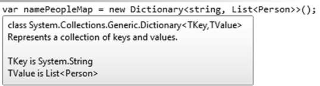Figure 8.2 Hovering over var in Visual Studio displays the type of the declared variable.
Tooltips aren’t just available at the point of declaration, either. As you’d probably expect, the tooltip displayed when you hover over the variable name later on in the code indicates the type of the variable too. This is shown in figure 8.3, where the same declaration is used and then I’ve hovered over a use of the variable.
Again, that’s exactly the same behavior as a normal local variable declaration. Now, there are two reasons for bringing up Visual Studio in this context. The first is that it’s more evidence of the static typing involved — the compiler clearly knows the type of the variable. The second is to point out that you can easily discover the type involved, even from deep within a method. This’ll be important when we talk about the pros and cons of using implicit typing in a minute. First, though, I ought to mention some limitations.
8.2.2 Restrictions on implicit typing
You can’t use implicit typing for every variable in every situation. You can only use it when
■ The variable being declared is a local variable, rather than a static or instance
field.
■ The variable is initialized as part of the declaration.
■ The initialization expression isn’t a method group or anonymous function2 (without casting).
■ The initialization expression isn’t null.
■ Only one variable is declared in the statement.
■ The type you want the variable to have is the compile-time type of the initialization expression.
■ The initialization expression doesn’t involve the variable being declared.3
The term anonymous function covers both anonymous methods and lambda expressions, which we’ll delve into in chapter 9.
It’d be highly unusual to do so anyway, but with normal declarations it’s possible if you try hard enough.
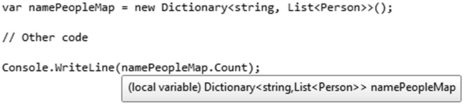
Figure 8.3 Hovering over the use of an implicitly typed local variable displays its type.
The third and fourth points are interesting. You can’t write this:
INVALID^- var starter = delegate)) { Console.WriteLine)); }
This is because the compiler doesn’t know what type to use. You can write this:
var starter = (ThreadStart) delegate() { Console.WriteLine(); }
but if you’re going to do that you’d be better off explicitly declaring the variable in the first place. The same is true in the null case — you could cast the null appropriately, but there’d be no point. Note that you can use the result of method calls or properties as the initialization expression — you’re not limited to constants and constructor calls. For instance, you could use
var args = Environment.GetCommandLineArgs();
In that case args would then be of type string[]. In fact, initializing a variable with the result of a method call is likely to be the most common situation where implicit typing is used, as part of LINQ. We’ll see all that later on — just bear it in mind as the examples progress.
It’s also worth noting that you are allowed to use implicit typing for the local variables declared in the first part of a using, for, or foreach statement. For example, the following are all valid (with appropriate bodies, of course):
using (var x = File.OpenText("test.dat"))
foreach (var s in Environment.GetCommandLineArgs())
The variables in question would end up with types of int, StreamReader, and string,
respectively. Of course, just because you can do this doesn’t mean you should. Let’s
look at the reasons for and against using implicit typing.
8.2.3 Pros and cons of implicit typing
The question of when it’s a good idea to use implicit typing is the cause of a lot of community discussion. Views range from “everywhere” to “nowhere” with plenty of more balanced approaches between the two. We’ll see in section 8.5 that in order to use another of C# 3’s features — anonymous types — you often need to use implicit typing. You could avoid anonymous types as well, of course, but that’s throwing the baby out with the bathwater.
The main reason for using implicit typing (leaving anonymous types aside for the moment) is not that it reduces the number of keystrokes required to enter the code, but that it makes the code less cluttered (and therefore more readable) on the screen. In particular, when generics are involved, the type names can get very long. Figures 8.1 and 8.2 used a type of Dictionary<string, List<Person>>, which is 33 characters. By the time you have that twice on a line (once for the declaration and once for the initialization), you end up with a massive line just for declaring and initializing a single variable! An alternative is to use an alias, but that puts the real type involved a long way (conceptually at least) from the code that uses it.
When reading the code, there’s no point in seeing the same long type name twice on the same line when it’s obvious that they should be the same. If the declaration isn’t visible on the screen, you’re in the same boat whether implicit typing was used or not (all the ways you’d use to find out the variable type are still valid) and if it is visible, the expression used to initialize the variable tells you the type anyway.
Additionally, using var changes the emphasis of the code. Sometimes you want the reader to pay close attention to the precise types involved, because they’re significant. For example, even though the generic SortedList and SortedDictionary types have similar APIs, they have different performance characteristics, and that may be important for your particular piece of code. Other times, all you really care about is the operations that are being performed: you wouldn’t really mind if the expression used to initialize the variable changed, so long as you could achieve the same goals.56 Using var allows the reader to focus on the use of a variable rather than the declaration — the what rather than the how of the code.
All of this sounds good, so what are the arguments against implicit typing? Paradoxically enough, readability is the most important one, despite also being an argument in favor of implicit typing! By not being explicit about what type of variable you’re declaring, you may be making it harder to work it out just by reading the code. It breaks the “state what we’re declaring, then what value it’ll start off with” mindset that keeps the declaration and the initialization separate. To what extent that’s an issue depends on both the reader and the initialization expression involved.
If you’re explicitly calling a constructor, it’s always going to be pretty obvious what type you’re creating. If you’re calling a method or using a property, it depends on how obvious the return type is just from looking at the call. Integer literals provide a good example of a case where it’s harder to guess the type of an expression than you might suppose. How quickly can you work out the type of each of the variables declared here?
var a = 2147483647;
var b = 2147483648;
var c = 4294967295;
var d = 4294967296;
var e = 9223372036854775807;
var f = 9223372036854775808;
The answers are int, uint, uint, long, long, and ulong, respectively — the type used depends on the value of the expression. There’s nothing new here in terms of the handling of literals — C# has always behaved like this — but implicit typing makes it easier to write obscure code in this case.
The argument that’s rarely explicitly stated but that I believe is behind a lot of the concern over implicit typing is, “It just doesn’t feel right.” If you’ve been writing in a C-like language for years and years, there’s something unnerving about the
whole business, however much you tell yourself that it’s still static typing under the covers. This may not be a rational concern, but that doesn’t make it any less real. If you’re uncomfortable, you’re likely to be less productive. If the advantages don’t outweigh your negative feelings, that’s fine. Depending on your personality, you may wish to try to push yourself to become more comfortable with implicit typing — but you certainly don’t have to.
8.2.4 Recommendations
Here are some recommendations based on my experience with implicit typing. That’s all they are — recommendations — and you should feel free to take them with a pinch of salt:
■ If it’s important that someone reading the code knows the type of the variable at a glance, use explicit typing.
■ If the variable is directly initialized with a constructor and the type name is long (which often occurs with generics), consider using implicit typing.
■ If the precise type of the variable isn’t important, but its general nature is clear from the context, use implicit typing to de-emphasize how the code achieves its aim and concentrate on the higher level of what it’s achieving.
■ Consult your teammates on the matter when embarking on a new project.
■ When in doubt, try a line both ways and go with your gut feelings.
■ Unless there’s a significant gain in code simplicity, I tend to use explicit typing for production code. (Implicit typing is wonderful for throwaway code, though, and also test code.)
Effectively, my recommendation boils down to not using implicit typing either because it’s new or for reasons of laziness, saving a few keystrokes. Where it keeps the code tidier, allowing you to concentrate on the most important elements of the code, go for it. I’ll be using implicit typing extensively in the rest of the book, for the simple reason that code is harder to format in print than on a screen — not as much width is available.
We’ll come back to implicit typing when we see anonymous types, as they create situations where you are forced to ask the compiler to infer the types of some variables. Before that, let’s look at how C# 3 makes it easier to construct and populate a new object in one expression.
8.3 Simplified initialization
One would’ve thought that object-oriented languages would’ve streamlined object creation long ago. After all, before you start using an object, something has to create it, whether it’s through your code directly or a factory method of some sort. Despite this, few language features in C# 2 are geared toward making life easier when it comes to initialization. If you can’t do what you want using constructor arguments, you’re basically out of luck — you need to create the object, then manually initialize it with property calls and the like.
This is particularly annoying when you want to create a whole bunch of objects in one go, such as in an array or other collection — without a single-expression way of initializing an object, you’re forced to either use local variables for temporary manipulation, or create a helper method that performs the appropriate initialization based on parameters.
C# 3 comes to the rescue in a number of ways, as we’ll see in this section.
8.3.1 Defining our sample types
The expressions we’re going to be using in this section are called object initializers. These are just ways of specifying initialization that should occur after an object has been created. You can set properties, set properties of properties (don’t worry, it’s simpler than it sounds), and add to collections that are accessible via properties. To demonstrate all this, we’ll use a Person class again. To start with, there’s the name and age we’ve used before, exposed as writable properties. We’ll provide both a parameterless constructor and one that accepts the name as a parameter. We’ll also add a list of friends and the person’s home location, both of which are accessible as read-only properties, but that can still be modified by manipulating the retrieved objects. A simple Location class provides Country and Town properties to represent the person’s home. The following listing shows the complete code for the classes.
Listing 8.2 A fairly simple Person class used for further demonstrations
public class Person {
public int Age { get; set; } public string Name { get; set; }
List<Person> friends = new List<Person>();
public List<Person> Friends { get { return friends; } }
Location home = new Location();
public Location Home { get { return home; } }
public Person() { } public Person(string name)
{
Name = name;
}
}
public class Location {
public string Country { get; set; } public string Town { get; set; }
}
Listing 8.2 is straightforward, but it’s worth noting that both the list of friends and the home location are created in a blank way when the person is created, rather than being left as just null references. The friends and home location properties are readonly, too. That’ll be important later on — but for the moment let’s look at the properties representing the name and age of a person.
8.3.2 Setting simple properties
Now that we have our Person type, we want to create some instances of it using the new features of C# 3. In this section we’ll look at setting the Name and Age properties — we’ll come to the others later.
In fact, object initializers aren’t restricted to using properties. Everything shown here also applies to fields, but the vast majority of the time you’ll be using properties. In a well-encapsulated system you’re unlikely to have access to fields anyway, unless you’re creating an instance of a type within that type’s own code. It’s worth knowing that you can use fields, of course — so for the rest of the section, just read property and field whenever the text says property.
With that out of the way, let’s get down to business. Suppose we want to create a person called Tom, who is six years old. Prior to C# 3, there were two ways this could be achieved:
Person toml = new Person(); toml.Name = "Tom"; toml.Age = 6;
Person tom2 = new Person("Tom"); tom2.Age = 6;
The first version simply uses the parameterless constructor and then sets both properties. The second version uses the constructor overload, which sets the name, and then sets the age afterward. Both of these options are still available in C# 3, of course, but there are other alternatives:
Person tom3 = new Person() { Name="Tom", Age = 6 };
Person tom4 = new Person { Name="Tom", Age = 6 };
Person tom5 = new Person("Tom") { Age = 6 };
The part in braces at the end of each line is the object initializer. Again, it’s just compiler trickery. The IL used to initialize tom3 and tom4 is identical, and is nearly57 the same as we used for tom1. Predictably, the code for tom5 is nearly the same as for tom2.
Note how for tom4 we omitted the parentheses for the constructor. You can use this
shorthand for types with a parameterless constructor, which is what gets called in the compiled code.
After the constructor has been called, the specified properties are set in the obvious way. They’re set in the order specified in the object initializer, and you can only specify any particular property at most once — you can’t set the Name property twice, for example. (You could call the constructor taking the name as a parameter, and then set the Name property. It would be pointless, but the compiler wouldn’t stop you from doing it.) The expression used as the value for a property can be any expression that isn’t itself an assignment — you can call methods, create new objects (potentially using another object initializer), pretty much anything.
You may be wondering just how useful this is — we’ve saved one or two lines of code, but surely that’s not a good enough reason to make the language more complicated, is it? There’s a subtle point here, though: we haven’tjust created an object in one line— we’ve created it in one expression. That difference can be very important. Suppose you want to create an array of type Person [] with some predefined data in it. Even without using the implicit array typing we’ll see later, the code is neat and readable:
Person[] family = new Person[]
{
new Person { Name = "Holly", Age = 34 }, new Person { Name = "Jon", Age = 33 },
new Person { Name = "Tom", Age = 6 },
new Person { Name = "William", Age = 3 },
new Person { Name = "Robin", Age = 3 }
};
Now, in a simple example like this we could’ve written a constructor taking both the name and age as parameters, and initialized the array in a similar way in C# 1 or 2. But appropriate constructors aren’t always available — and if there are several constructor parameters, it’s often not clear which one means what just from the position. By the time a constructor needs to take five or six parameters, I often find myself relying on IntelliSense more than I want to. Using the property names is a great boon to readability in such cases.6
This form of object initializer is the one you’ll probably use most often. But there are two other forms — one for setting subproperties, and one for adding to collections. Let’s look at subproperties — properties of properties — first.
8.3.3 Setting properties on embedded objects
So far we’ve found it easy to set the Name and Age properties, but we can’t set the Home property in the same way — it’s read-only. We can set the town and the country of a person, by first fetching the Home property and then setting properties on the result. The language specification refers to this as setting the properties of an embedded object. Just to make it clear, what we’re talking about is the following C# 1 code:
Person tom = new Person("Tom"); tom.Age = 6;
tom.Home.Country = "UK"; tom.Home.Town = "Reading";
When we’re populating the home location, each statement is doing a get to retrieve the Location instance, and then a set on the relevant property on that instance. There’s nothing new in that, but it’s worth slowing your mind down to look at it carefully; otherwise, it’s easy to miss what’s going on behind the scenes.
C# 3 allows all of this to be done in one expression, as shown here:
Person tom = new Person("Tom")
{
Age = 6,
Home = { Country = "UK", Town = "Reading" }
};
The compiled code for these snippets is effectively the same. The compiler spots that to the right side of the = sign is another object initializer, and applies the properties to the embedded object appropriately. One point about the formatting I’ve used — just as in almost all C# features, it’s whitespace-independent: you can collapse the whitespace in the object initializer, putting it all on one line if you like. It’s up to you to work out where the sweet spot is in balancing long lines against lots of lines.
The absence of the new keyword in the part initializing Home is significant. If you need to work out where the compiler is going to create new objects and where it’s going to set properties on existing ones, look for occurrences of new in the initializer. Every time a new object is created, the new keyword appears somewhere.
We’ve dealt with the Home property — but what about Tom’s friends? There are properties we can set on a List<Person>, but none of them will add entries to the list. It’s time for the next feature — collection initializers.
8.3.4 Collection initializers
Creating a collection with some initial values is an extremely common task. Until C# 3 arrived, the only language feature that gave any assistance was array creation — and even that was clumsy in many situations. C# 3 has collection initializers, which allow you to use the same type of syntax as array initializers but with arbitrary collections and more flexibility.
creating new collections with collection initializers
As a first example, let’s use the now-familiar List<T> type. In C# 2, you could populate a list either by passing in an existing collection or by calling Add repeatedly after creating an empty list. Collection initializers in C# 3 take the latter approach. Suppose we want to populate a list of strings with some names — here’s the C# 2 code (on the left) and the close equivalent in C# 3 (on the right):
|
|
|
Just as with object initializers, you can specify constructor parameters if you want, or use a parameterless constructor either explicitly or implicitly. The use of implicit typing here was partly for space reasons — the names variable could equally well have been declared explicitly. Reducing the number of lines of code (without reducing readability) is nice, but there are two bigger benefits of collection initializers:
■ The create-and-initialize part counts as a single expression.
■ There’s a lot less clutter in the code.
The first point becomes important when you want to use a collection as either an argument to a method or as one element in a larger collection. That happens relatively rarely (although often enough to still be useful) — but the second point is the real reason this is a killer feature in my view. If you look at the code on the right, you can easily see the information you need, with each piece of information written only once. The variable name occurs once, the type being used occurs once, and each of the elements of the initialized collection appears once. It’s all extremely simple, and much clearer than the C# 2 code, which contains a lot of fluff around the useful bits.
Collection initializers aren’t limited to just lists. You can use them with any type that implements IEnumerable, as long as it has an appropriate Add method for each element in the initializer. You can use an Add method with more than one parameter by putting the values within another set of braces. The most common use for this is creating dictionaries. For example, if we wanted a dictionary mapping names to ages, we could use the following code:
Dictionary<string,int> nameAgeMap = new Dictionary<string,int>
{
{ "Holly", 34 },
{ "Jon", 33 },
{ "Tom", 6 }
};
In this case, the Add(string, int) method would be called three times. If multiple Add methods are available, different elements of the initializer can call different overloads. If no compatible overload is available for a specified element, the code will fail to compile. There are two interesting points about the design decision here:
■ The fact that the type has to implement IEnumerable is never used by the compiler.
■ The Add method is only found by name — there’s no interface requirement specifying it.
These are both pragmatic decisions. Requiring IEnumerable to be implemented is a reasonable attempt to check that the type really is a collection of some sort, and using any accessible overload of the Add method (rather than requiring an exact signature) allows for simple initializations such as the earlier dictionary example.
An early draft of the C# 3 specification required ICollection<T> to be implemented instead, and the implementation of the single-parameter Add method (as specified by the interface) was called rather than allowing different overloads. This sounds more pure, but there are far more types that implement IEnumerable than ICollection<T> — and using the single-parameter Add method would be inconvenient. For example, in our case it would’ve forced us to explicitly create an instance of a KeyValuePair<string,int> for each element of the initializer. Sacrificing a bit of academic purity has made the language far more useful in real life.
POPULATING COLLECTIONS WITHIN OTHER OBJECT INITIALIZERS
So far we’ve only seen collection initializers used in a stand-alone fashion to create whole new collections. They can also be combined with object initializers to populate embedded collections. To show this, we’ll go back to our Person example. The Friends property is read-only, so we can’t create a new collection and specify that as the collection of friends — but we can add to whatever collection is returned by the property’s getter. The way we do this is similar to the syntax we’ve already seen for setting properties of embedded objects, but we just specify a collection initializer instead of a sequence of properties.
Let’s see this in action by creating another Person instance for Tom, this time with some of his friends.
Listing 8.3 Building up a rich object using object and collection initializers
Person tom = new Person
{
Name = "Tom",
Age = 6,
Home = { Town = "Reading", Country = "UK" }, Friends =
{
new Person { Name = "Alberto" }, new Person("Max"),
new Person { Name = "Zak", Age = 4 }, new Person("Ben"), new Person("Alice")
{
Age = 6,
Home = { Town = "Twyford", Country="UK" }
}
}
};
Listing 8.3 uses all the features of object and collection initializers we’ve come across. The main part of interest is the collection initializer, which itself uses lots of different forms of object initializers internally. Note that we’re not creating a new collection here, just adding to an existing one. (If the property had a setter, we could create a new collection and still use collection initializer syntax.)
We could’ve gone further, specifying friends of friends, friends of friends of friends, and so forth. But we couldn’t specify that Tom is Alberto’s friend — while you’re still initializing an object, you don’t have access to it, so you can't express cyclic relationships. This can be awkward in a few cases, but usually isn’t a problem.
Collection initialization within object initializers works as a sort of cross between stand-alone collection initializers and setting embedded object properties. For each element in the collection initializer, the collection property getter (Friends in this case) is called, and then the appropriate Add method is called on the returned value. The collection isn’t cleared in any way before elements are added. For example, if you were to decide that a person should always be his own friend, and added this to the
list of friends within the Person constructor, using a collection initializer would only add extra friends.
As you can see, the combination of collection and object initializers can be used to populate whole trees of objects. But when and where is this likely to actually happen?
8.3.5 Uses of initialization features
Trying to pin down exactly where these features are useful is reminiscent of being in a Monty Python sketch about the Spanish Inquisition — every time you think you have a reasonably complete list, another common example pops up. I’ll just mention three examples, which I hope will encourage you to consider where else you might use them.
CONSTANT COLLECTIONS
It’s not uncommon for me to want some kind of collection (often a map) that’s effectively constant. Of course, it can’t be a constant as far as the C# language is concerned, but it can be declared static and read-only, with big warnings to say that it shouldn’t be changed. (It’s usually private, so that’s good enough. Alternatively, you can use Read-OnlyCollection<T>.) Typically, this used to involve writing a static constructor or a helper method, just to populate the map. With C# 3’s collection initializers, it’s easy to set the whole thing up inline.
SETTING Up UNIT TESTS
When writing unit tests, I frequently want to populate an object just for one test, often passing it in as an argument to the method I’m trying to test at the time. Writing all of the initialization longhand can be long-winded and also hides the essential structure of the object from the reader of the code, just as XML creation code can often obscure what the document would look like if you viewed it (appropriately formatted) in a text editor. With appropriate indentation of object initializers, the nested structure of the object hierarchy can become obvious in the very shape of the code, as well as make the values stand out more than they would otherwise.
THE BUILDER PATTERN
For various reasons, sometimes you want to specify a lot of values for a single method or constructor call. The most common situation in my experience is creating an immutable object. Instead of having a huge set of parameters (which can become a readability problem as the meaning of each argument becomes unclear58), you can use the builder pattern: create a mutable type with appropriate properties, and then pass an instance of the builder into the constructor or method. The framework ProcessStartInfo type is a good example of this — the designers could have overloaded Process.Start with many different sets of parameters, but using Process-StartInfo makes everything clearer.
Object and collection initializers allow you to create the builder object in a clearer manner — you can even specify it inline when you call the original member if you
want. Admittedly you still have to write the builder type in the first place — but automatic properties help on that front.
<INSERT YOUR FAVORITE USE HERE>
Of course, there are uses beyond these three in ordinary code, and I don’t want to put you off using the new features elsewhere. There’s little reason not to use them, other than possibly confusing developers who aren’t familiar with C# 3 yet. You may decide that using an object initializer just to set one property (as opposed to just explicitly setting it in a separate statement) is over the top — that’s a matter of aesthetics, and I can’t give you much objective guidance there. As with implicit typing, it’s a good idea to try the code both ways, and learn to predict your own (and your team’s) reading preferences.
So far we’ve looked at a fairly diverse range of features: implementing properties easily, simplifying local variable declarations, and populating objects in single expressions. In the remainder of this chapter we’ll be gradually bringing these topics together, using more implicit typing and more object population, and creating whole types without giving any implementation details.
Our next topic appears to be quite similar to collection initializers when you look at code using it. I mentioned earlier that array initialization was a bit clumsy in C# 1 and 2. I’m sure it won’t surprise you to learn that it’s been streamlined for C# 3. Let’s take a look.
8.4 Implicitly typed arrays
In C# 1 and 2, initializing an array as part of a variable declaration and initialization statement was quite neat — but if you wanted to do it anywhere else, you had to specify the exact array type involved. So for example, this compiles without any problem:
string[] names = {"Holly", "Jon", "Tom", "Robin", "William"};
This doesn’t work for parameters, though: suppose we want to make a call to MyMethod, declared as void MyMethod(string[] names). This code won’t work:
INVALID^, MyMethod){"Holly", "Jon", "Tom", "Robin", "William"});
Instead, you have to tell the compiler what type of array you want to initialize: MyMethod(new string[] {"Holly", "Jon", "Tom", "Robin", "William"});
C# 3 allows something in between:
MyMethod(new[] {"Holly", "Jon", "Tom", "Robin", "William"});
Clearly the compiler needs to work out what type of array to use. It starts by forming a set containing all the compile-time types of the expressions inside the braces. If there’s exactly one type in that set that all the others can be implicitly converted to, that’s the type of the array. Otherwise, (or if all the values are typeless expressions, such as constant null values or anonymous methods, with no casts) the code won’t compile. Note that only the types of the expressions are considered as candidates for the overall array type. This means that occasionally you might have to explicitly cast a value to a less-specific type. For instance, this won’t compile:
INVALID^. new[] { new MemoryStream () , new StringWriter () }
There’s no conversion from MemoryStream to StringWriter, or vice versa. Both are implicitly convertible to object and IDisposable, but the compiler only considers types that are in the original set produced by the expressions themselves. If we change one of the expressions in this situation so that its type is either object or IDisposable, the code compiles:
new[] { (IDisposable) new MemoryStream(), new StringWriter() }
The type of this last expression is implicitly IDisposable[]. Of course, at that point you might as well explicitly state the type of the array just as you would in C# 1 and 2, to make it clearer what you’re trying to achieve.
Compared with the earlier features, implicitly typed arrays are a bit of an anticlimax. I find it hard to get excited about them, even though they do make life simpler in cases where an array is passed as an argument. You could argue that this feature doesn’t prove itself in the usefulness/complexity balance used by the language designers to decide what should be part of the language.
The designers haven’t gone mad, though — there’s one important situation in which this implicit typing is absolutely crucial. That’s when you don’t know (and can’t know) the name of the type of the elements of the array. How can you possibly get into this peculiar state? Read on...
8.5 Anonymous types
Implicit typing, object and collection initializers, and implicit array typing are all useful in their own right, to a greater or lesser extent. But they also serve a higher pur-pose — they make it possible to work with this chapter's final feature, anonymous types. They, in turn, serve a higher purpose — LINQ.
8.5.1 First encounters of the anonymous kind
It’s much easier to explain anonymous types when you already have some idea of what they are through an example. I’m sorry to say that without the use of extension methods and lambda expressions, the examples in this section are likely to be a little contrived, but there’s a distinct chicken-and-egg situation here: anonymous types are most useful within the context of the more advanced features, but we need to understand the building blocks before we can see much of the bigger picture. Stick with it — it will make sense in the long run, I promise.
Let’s pretend we didn’t have the Person class, and the only properties we cared about were the name and age. Listing 8.4 shows how we could still build objects with those properties, without ever declaring a type.
Listing 8.4 Creating objects of an anonymous type with Name and Age properties
var tom = new { Name = "Tom", Age = 6 };
var holly = new { Name = "Holly", Age = 34 };
var jon = new { Name = "Jon", Age = 33 };
Console.WriteLine("{0} is {1} years old", jon.Name, jon.Age);
As you can tell from listing 8.4, the syntax for initializing an anonymous type is similar to the object initializers we saw in section 8.3.2 — it’s just that the name of the type is missing between new and the opening brace. We’re using implicitly typed local variables because that’s all we can use (other than object of course) — we don’t have a type name to declare the variable with. As you can see from the last line, the type has properties for the Name and Age, both of which can be read and which will have the values specified in the anonymous object initializer used to create the instance — so in this case the output is “Jon is 33 years old.” The properties have the same types as the expressions in the initializers — string for Name, and int for Age. Just as in normal object initializers, the expressions used in anonymous object initializers can call methods or constructors, fetch properties, perform calculations — whatever you need to do.
You may now be starting to see why implicitly typed arrays are important. Suppose we want to create an array containing the whole family, and then iterate through it to work out the total age.59 The following listing does just that — and demonstrates a few other interesting features of anonymous types at the same time.
Listing 8.5 Populating an array using anonymous types and then finding the total age
var family = new[]
{
new { Name = "Holly", Age = 34 },
new { Name = "Jon", Age = 33 },
new { Name = "Tom", Age = 6 },
new { Name = "Robin", Age = 3 },
new { Name = "William", Age = 3 }
};
int totalAge = 0; foreach (var person in family)
{
totalAge += person.Age;
}
Console.WriteLine("Total age: {0}", totalAge);
Putting together listing 8.5 and what we learned about implicitly typed arrays in section 8.4, we can deduce something important: all the people in the family are of the same type. If each use of an anonymous object initializer in Q referred to a different type, the compiler couldn’t infer an appropriate type for the array declared at O. Within any given assembly, the compiler treats two anonymous object initializers as the same
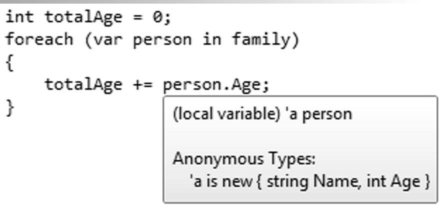Figure 8.4 Hovering over a variable that’s declared (implicitly) to be of an anonymous type shows the details of that anonymous type.
type if there are the same number of properties, with the same names and types, and they appear in the same order. In other words, if we swapped the Name and Age properties in one of the initializers, there’d be two different types involved — likewise if we introduced an extra property in one line, or used a long instead of an int for the age of one person, another anonymous type would’ve been introduced. At that point the type inference for the array would fail.
IMPLEMENTATION DETAIL: HOW MANY TYPES? If you ever decide to look at the IL (or decompiled C#) for an anonymous type generated by Microsoft 's compiler, be aware that although two anonymous object initializers with the same property names in the same order but using different property types will produce two different types, they’ll actually be generated from a single generic type. The generic type is parameterized, but the closed, constructed types will be different because they’ll be given different type arguments for the different initializers.
Notice that we can use a foreach statement to iterate over the array just as we would any other collection. The type involved is inferred ©, and the type of the person variable is the same anonymous type we’ve used in the array. Again, we can use the same variable for different instances because they’re all of the same type.
Listing 8.5 also proves that the Age property really is strongly typed as an int — otherwise trying to sum the ages © wouldn’t compile. The compiler knows about the anonymous type, and Visual Studio is even willing to share the information via tooltips, just in case you’re uncertain. Figure 8.4 shows the result of hovering over the person part of the person.Age expression from listing 8.5.
Now that we’ve seen anonymous types in action, let’s go back and look at what the compiler is actually doing for us.
8.5.2 Members of anonymous types
Anonymous types are created by the compiler and included in the compiled assembly in the same way as the extra types for anonymous methods and iterator blocks. The CLR treats them as perfectly ordinary types, and so they are — if you later move from an anonymous type to a normal, manually coded type with the behavior described in this section, you shouldn’t see anything change. Anonymous types contain the following members:
■ A constructor taking all the initialization values. The parameters are in the same order as they were specified in the anonymous object initializer, and have the same names and types.
■ Public read-only properties.
■ Private read-only fields backing the properties.
■ Overrides for Equals, GetHashCode, and ToString.
That’s it — there are no implemented interfaces, no cloning or serialization capabilities — just a constructor, some properties, and the normal methods from obj ect.
The constructor and the properties do the obvious things. Equality between two instances of the same anonymous type is determined in the natural manner, comparing each property value in turn using the property type’s Equals method. The hash code generation is similar, calling GetHashCode on each property value in turn and combining the results. The exact method for combining the various hash codes together to form one composite hash is unspecified, and you shouldn’t write code that depends on it anyway — you just need to be confident that two equal instances will return the same hash, and two unequal instances will usually return different hashes. All of this only works if the Equals and GetHashCode implementations of all the different types involved as properties conform to the normal rules, of course.
Note that because the properties are read-only, all anonymous types are immutable so long as the types used for their properties are immutable. This provides you with all the normal benefits of immutability — being able to pass values to methods without fear of them changing, simple sharing of data across threads, and so forth.
VB ANONYMOUS TYPE PROPERTIES ARE MUTABLE BY DEFAULT Anonymous types are also available in Visual Basic 9 and 10. But by default their properties are mutable: you need to declare any properties you want to be immutable with the Key modifier. Only properties declared as keys are used in hashing and equality comparisons. This is easy to overlook when converting code from one language to another.
We’re almost done with anonymous types now. But there’s one slight wrinkle still to talk about — a shortcut for a situation that’s fairly common in LINQ.
8.5.3 Projection initializers
The anonymous object initializers we’ve seen so far have all been lists of name/value pairs — Name="Jon", Age=33 and the like. As it happens, I’ve always used constants because they make for smaller examples, but in real code you often want to copy properties from an existing object. Sometimes you’ll want to manipulate the values in some way, but often a straight copy is enough.
Again, without LINQ it’s hard to give convincing examples of this, but let’s go back to our Person class, and just suppose we had a good reason to want to convert a collection of Person instances into a similar collection where each element has just a name
and a flag to say whether that person is an adult. Given an appropriate person variable, we could use something like this:
new { Name = person.Name, IsAdult = (person.Age >= 18) }
That works, and for just a single property the syntax for setting the name (the part in bold) isn’t too clumsy — but if you were copying several properties it would get tiresome. C# 3 provides a shortcut: if you don’t specify the property name, but just the expression to evaluate for the value, it’ll use the last part of the expression as the name — provided it’s a simple field or property. This is called a projection initializer. It means we can rewrite the previous code as
new { person.Name, IsAdult = (person.Age >= 18) }
It’s common for all the bits of an anonymous object initializer to be projection initial-izers — it typically happens when you’re taking some properties from one object and some properties from another, often as part of a join operation. Anyway, I’m getting ahead of myself. The following listing shows the previous code in action, using the List<T>.ConvertAll method and an anonymous method.
Listing 8.6 Transformation from Person to a name and adulthood flag
List<Person> family = new List<Person>
{
new Person { Name="Holly", Age=34 }, new Person { Name="Jon", Age=33 }, new Person { Name="Tom", Age=6 }, new Person { Name="Robin", Age=3 }, new Person { Name="William", Age=3 }
};
var converted = family.ConvertAll(delegate(Person person)
{ return new { person.Name, IsAdult = (person.Age >= 18) }; }
);
foreach (var person in converted)
{
Console.WriteLine("{0} is an adult? {1}",
person.Name, person.IsAdult);
}
In addition to the use of a projection initializer for the Name property, listing 8.6 shows the value of delegate type inference and anonymous methods. Without them, we couldn’t have retained our strong typing of converted, as we wouldn’t have been able to specify what the TOutput type parameter of Converter should be. As it is, we can iterate through the new list and access the Name and IsAdult properties as if we were using any other type.
Don’t spend too long thinking about projection initializers at this point — the important thing is to be aware that they exist, so you won’t get confused when you see them later. In fact, that advice applies to this entire section on anonymous types — so without going into details, let’s look at why they’re present at all.
8.5.4 What's the point?
I hope you’re not feeling cheated at this point, but I sympathize if you are. Anonymous types are a fairly complex solution to a problem we haven’t really encountered yet... except that I bet you have seen part of the problem before, really.
If you’ve ever done any real-life work involving databases, you’ll know that you don’t always want all of the data that’s available on all the rows that match your query criteria. Often it’s not a problem to fetch more than you need, but if you only need two columns out of the 50 in the table, you wouldn’t bother to select all 50, would you?
The same problem occurs in nondatabase code. Suppose we have a class that reads a log file and produces a sequence of log lines with many fields. Keeping all of the information might be far too memory-intensive if we only care about a couple of fields from the log. LINQ lets you filter that information easily.
But what’s the result of that filtering? How can we keep some data and discard the rest? How can we easily keep some derived data that isn’t directly represented in the original form? How can we combine pieces of data that may not initially have been consciously associated, or that may only have a relationship in a particular situation? Effectively, we want a new data type — but manually creating such a type in every situation is tedious, particularly when you have tools such as LINQ available that make the rest of the process so simple. Figure 8.5 shows the three elements that make anonymous types a powerful feature.
If you find yourself creating a type that’s only used in a single method, and that only contains fields and trivial properties, consider whether an anonymous type would be appropriate. I suspect that you’ll find that most of the times when you find yourself leaning toward anonymous types, you could also use LINQ to help you.
If you find yourself using the same sequence of properties for the same purpose in several places, though, you might want to consider creating a normal type for the purpose, even if it still just contains trivial properties. Anonymous types naturally infect whatever code they’re used in with implicit typing — which is often fine, but can be a nuisance at other times. In particular, it means you can't easily create a method to
Figure 8.5 Anonymous types allow you to keep just the data you need for a particular situation, in a form that’s tailored to that situation, without the tedium of writing a fresh type each time.
return an instance of that type in a strongly typed way. As with the previous features, use anonymous types when they genuinely make the code simpler to work with, not just because they’re new and cool.
8.6 Summary
What a seemingly mixed bag of features! We’ve seen four features that are quite similar, at least in syntax: object initializers, collection initializers, implicitly typed arrays, and anonymous types. The other two features — automatic properties and implicitly typed local variables — are somewhat different. Likewise, most of the features would’ve been useful individually in C# 2, whereas implicitly typed arrays and anonymous types only pay back the cost of learning about them when the rest of the C# 3 features are brought into play.
So what do these features really have in common? They all relieve the developer of tedious coding. I’m sure you don’t enjoy writing trivial properties any more than I do, or setting several properties, one at a time, using a local variable — particularly when you’re trying to build up a collection of similar objects. Not only do the new features of C# 3 make it easier to write the code, they also make it easier to read it, at least when they’re applied sensibly.
In our next chapter we’ll look at a major new language feature, along with a framework feature it provides direct support for. If you thought anonymous methods made creating delegates easy, just wait until you see lambda expressions.
Chapter 9: Lambda expressions and expression trees
This chapter covers
■ Lambda expression syntax
■ Conversions from lambdas to delegates
■ Expression tree framework classes
■ Conversions from lambdas to expression trees
■ Why expression trees matter
■ Changes to type inference
■ Changes to overload resolution
In chapter 5 we saw how C# 2 made delegates much easier to use due to implicit conversions of method groups, anonymous methods, and return type and parameter variance. This is enough to make event subscription significantly simpler and more readable, but delegates in C# 2 are still too bulky to be used all the time: a page of code full of anonymous methods is painful to read, and you wouldn’t want to start putting multiple anonymous methods in a single statement on a regular basis.
One of the fundamental building blocks of LINQ is the ability to create pipelines of operations, along with any state required by those operations. These operations can express all kinds of logic about data: how to filter it, how to order it, how to join different data sources together, and much more. When LINQ queries are executed inprocess, those operations are usually represented by delegates.
Statements containing several delegates are common when manipulating data with LINQ to Objects,60 and lambda expressions in C# 3 make all of this possible without sacrificing readability. (While I’m mentioning readability, this chapter uses lambda expression and lambda interchangeably; as I need to refer to normal expressions quite a lot, it helps to use the short version in many cases.)
IT’S ALL GREEK TO ME The term lambda expression comes from lambda calculus, also written as X-calculus, where X is the Greek letter lambda. This is an area of math and computer science dealing with defining and applying functions. It’s been around for a long time and is the basis of functional languages such as ML. The good news is that you don’t need to know lambda calculus to use lambda expressions in C# 3.
Executing delegates is only part of the LINQ story. To use databases and other query engines efficiently, we need a different representation of the operations in the pipeline: a way to treat code as data that can be examined programmatically. The logic within the operations can then be transformed into a different form, such as a web service call, a SQL or LDAP query — whatever’s appropriate.
Although it’s possible to build up representations of queries in a particular API, it’s usually tricky to read and sacrifices a lot of compiler support. This is where lambdas save the day again: not only can they be used to create delegate instances, but the C# compiler can also transform them into expression trees—data structures representing the logic of the lambda expressions so that other code can examine it. In short, lambda expressions are the idiomatic way of representing the operations in LINQ data pipelines — but we’ll take things one step at a time, examining them in a fairly isolated way before we embrace the whole of LINQ.
In this chapter we’ll look at both ways of using lambda expressions, although for the moment our coverage of expression trees will be relatively basic — we’re not going to create any SQL just yet. With the theory under your belt, you should be relatively comfortable with lambda expressions and expression trees by the time we hit the really impressive stuff in chapter 12.
In the final part of this chapter, we’ll examine how type inference has changed for C# 3, mostly due to lambdas with implicit parameter types. This is a bit like learning how to tie shoelaces: far from exciting, but without this ability you’ll trip over yourself when you start running.
Let’s begin by seeing what lambda expressions look like. We’ll start with an anonymous method and gradually transform it into shorter and shorter forms.
9.1 Lambda expressions as delegates
In many ways, lambda expressions can be seen as an evolution of anonymous methods from C# 2. Lambda expressions can do almost everything that anonymous methods can,61 and they’re almost always more readable and compact. In particular, the behavior of captured variables is exactly the same in lambda expressions as in anonymous methods. In the most explicit form, not much difference exists between the two — but lambda expressions have a lot of shortcuts available to make them compact in common situations. Like anonymous methods, lambda expressions have special conversion rules — the type of the expression isn’t a delegate type in itself, but it can be converted into a delegate instance in various ways, both implicitly and explicitly. The term anonymous function covers anonymous methods and lambda expressions — in many cases the same conversion rules apply to both of them.
We’re going to start with a simple example, initially expressed as an anonymous method. We’ll create a delegate instance that takes a string parameter and returns an int (which is the length of the string). First we need to choose a delegate type to use; fortunately, .NET 3.5 comes with a whole family of generic delegate types to help us out.
9.1.1 Preliminaries: introducing the Func<...> delegate types
There are five generic Func delegate types in .NET 3.5’s System namespace. There’s nothing special about Func — it’s just handy to have some predefined generic types that are capable of handling many situations. Each delegate signature takes between zero and four parameters, the types of which are specified as type parameters.62 The last type parameter is used for the return type in each case. Here are the signatures of all the Func delegate types in .NET 3.5:
TResult Func<TResult>()
TResult Func<T,TResult>(T arg)
TResult Func<T1,T2,TResult>(T1 arg1, T2 arg2)
TResult Func<T1,T2,T3,TResult>(T1 arg1, T2 arg2, T3 arg3)
TResult Func<T1,T2,T3,T4,TResult>(T1 arg1, T2 arg2, T3 arg3, T4 arg4)
For example, Func<string,double,int> is equivalent to a delegate type of the form
public delegate int SomeDelegate(string arg1, double arg2)
The Action<...> set of delegates provides the equivalent functionality when you want a void return type. The single parameter form of Action existed in .NET 2.0, but the rest are new to .NET 3.5. If four arguments aren’t enough for you, then .NET 4 has the answer: it expands both the Action<.. .> and Func<. ..> families to take up to 16 arguments — so Func<T1,. ..,T16,TResult> has an eye-watering 17 type parameters.
This is primarily to help support the Dynamic Language Runtime that we’ll meet in chapter 14, and you’re unlikely to need to deal with it directly.
For our example, we need a type that takes a string parameter and returns an int, so we’ll use Func<string,int>.
9.1.2 First transformation to a lambda expression
Now that we know the delegate type, we can use an anonymous method to create our delegate instance. The following listing shows this, along with executing the delegate instance afterward so we can see it working.
Listing 9.1 Using an anonymous method to create a delegate instance
Func<string,int> returnLength;
returnLength = delegate (string text) { return text.Length; };
Console.WriteLine(returnLength("Hello"));
Listing 9.1 prints “5” just as we’d expect it to. I’ve separated the declaration of
returnLength from the assignment to it so we can keep it on one line — it’s easier to
keep track of that way. The anonymous method expression is the part in bold; that’s the part we’re going to convert into a lambda expression.
The most long-winded form of a lambda expression is this:
(explicitly-typed-parameter-list) => { statements }
The => part is new to C# 3 and tells the compiler that we’re using a lambda expression. Most of the time lambda expressions are used with a delegate type that has a nonvoid return type — the syntax is slightly less intuitive when there isn’t a result. This is another indication of the changes in idiom between C# 1 and C# 3. In C# 1, delegates were usually used for events and rarely returned anything. In LINQ they’re usually used as part of a data pipeline, taking input and returning a result to say what the projected value is, or whether the item matches the current filter, and so forth.
With the explicit parameters and statements in braces, this version looks very similar to an anonymous method. Listing 9.2 is equivalent to listing 9.1 but uses a lambda expression.
Listing 9.2 A long-winded first lambda expression, similar to an anonymous method
Func<string,int> returnLength;
returnLength = (string text) => { return text.Length; };
Console.WriteLine(returnLength("Hello"));
Again, I’ve used bold to indicate the expression used to create the delegate instance. When reading lambda expressions, it helps to think of the =>part as “goes to” — so the example in listing 9.2 could be read as “text goes to text .Length.” As this is the only part of the listing that’s interesting for a while, I’ll show it alone from now on. You can replace the bold text from listing 9.2 with any of the lambda expressions listed in this section and the result will be the same.
The same rules that govern return statements in anonymous methods apply to lambdas too: you can’t try to return a value from a lambda expression with a void return type, whereas if there’s a nonvoid return type, every code path has to return a compatible value.63 It’s all pretty intuitive and rarely gets in the way.
So far, we haven’t saved much space or made things particularly easy to read. Let’s start applying the shortcuts.
9.1.3 Using a single expression as the body
The form we’ve seen so far uses a full block of code to return the value. This is flexi-ble — you can have multiple statements, perform loops, return from different places in the block, and so on, just as with anonymous methods. But most of the time, you can easily express the whole of the body in a single expression, the value of which is the result of the lambda.64 In these cases, you can specify just that expression, without any braces, return statements, or semicolons. The format then is
(explicitly-typed-parameter-list) => expression
In our case, this means that the lambda expression becomes
(string text) => text.Length
That’s starting to look simpler already. Now, what about that parameter type? The compiler already knows that instances of Func<string,int> take a single string parameter, so we should be able to just name that parameter.
9.1.4 Implicitly typed parameter lists
Most of the time, the compiler can guess the parameter types without you explicitly stating them. In these cases, you can write the lambda expression as
(implicitly-typed-parameter-list) => expression
An implicitly typed parameter list is just a comma-separated list of names, without the types. You can’t mix and match for different parameters — either the whole list is explicitly typed, or it’s all implicitly typed. Also, if any of the parameters are out or ref parameters, you’re forced to use explicit typing. In our case, it’s fine — so our lambda expression is now just
(text) => text.Length
That’s getting pretty short now — there’s not a lot more we could get rid of. The parentheses seem redundant, though.
9.1.5 Shortcut for a single parameter
When the lambda expression only needs a single parameter, and that parameter can be implicitly typed, C# 3 allows us to omit the parentheses, so it now has this form:
parameter-name => expression
The final form of our lambda expression is therefore text => text.Length
You may be wondering why there are so many special cases with lambda expressions — none of the rest of the language cares whether a method has one parameter or more, for instance. Well, what sounds like a particular case actually turns out to be extremely common, and the improvement in readability from removing the parentheses from the parameter list can be significant when there are many lambdas in a short piece of code.
It’s worth noting that you can put parentheses around the whole lambda expression if you want to, just like other expressions. Occasionally this helps readability in the case where you’re assigning the lambda to a variable or property — otherwise, the equals symbols can get confusing, at least to start with. Most of the time it’s perfectly readable without any extra syntax at all. Listing 9.3 shows this in the context of our original code.
Listing 9.3 A concise lambda expression
Func<string,int> returnLength returnLength = text => text.Length;
Console.WriteLine(returnLength("Hello"));
At first you may find listing 9.3 confusing to read, in the same way that anonymous methods appear strange to many developers until they get used to them. When you are used to lambda expressions, though, you can appreciate how concise they are. It’d be hard to imagine a shorter, clearer way of creating a delegate instance.65 We could’ve changed the variable name text to something like x, and in full LINQ that’s often useful, but longer names give a bit more information to the reader.
I’ve shown this transformation over the course of a few pages, but figure 9.1 makes it clear just how much extraneous syntax we’ve saved.
The decision of whether to use the short form for the body of the lambda expression, specifying just an expression instead of a whole block, is completely independent from the decision about whether to use explicit or implicit parameters. We happen to have gone down one route of shortening the lambda, but we could’ve started off by making the parameters implicit. When you’re comfortable with lambda expressions you won’t think about this at all — you’ll just write the shortest available form naturally.
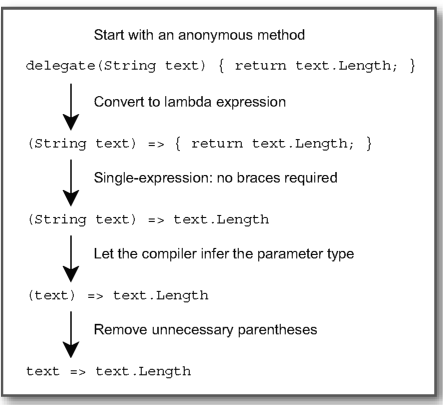Figure 9.1 Lambda syntax shortcuts
HIGHER-ORDER FUNCTIONS The body of a lambda expression can itself contain a lambda expression — and this tends to be as confusing as it sounds. Alternatively, the parameter to a lambda expression can be another delegate, which is just as bad. Both of these are examples of higher-order functions. If you enjoy feeling dazed and confused, have a look at some of the sample code in the downloadable source. Although I’m being flippant, this approach is common in functional programming and can be useful. It just takes a certain degree of perseverance to get into the right mindset.
So far we’ve only dealt with a single lambda expression, just putting it into different forms. Let’s look at a few examples to make things more concrete before we examine the details.
9.2 Simple examples using List<T> and events
When we look at extension methods in chapter 10, we’ll use lambda expressions all the time. Until then, List<T> and event handlers give us the best examples. We’ll start off with lists, using automatically implemented properties, implicitly typed local variables, and collection initializers for the sake of brevity. We’ll then call methods that take delegate parameters — using lambda expressions to create the delegates, of course.
9.2.1 Filtering, sorting, and actions on lists
If you remember the FindAll method on List<T>, it takes a Predicate<T> and returns a new list with all the elements from the original list that match the predicate. The Sort method takes a Comparison<T> and sorts the list accordingly. Finally, the ForEach method takes an Action<T> to perform on each element. Listing 9.4 uses lambda expressions to provide the delegate instance to each of these methods. The
sample data in question is just the name and year of release for various films. We print out the original list, then create and print out a filtered list of only old films, then sort and print out the original list, ordered by name. (It’s interesting to consider how much more code would’ve been required to do the same thing in C# 1.)
Listing 9.4 Manipulating a list of films using lambda expressions
class Film {
public string Name { get; set; } public int Year { get; set; }
}
var films = new List<Film>
{
new Film { Name = "Jaws", Year = 1975 },
new Film { Name = "Singing in the Rain", Year = 1952 },
new Film { Name = "Some Like it Hot", Year = 1959 },
new Film { Name = "The Wizard of Oz", Year = 1939 },
new Film { Name = "It's a Wonderful Life", Year = 1946 },
new Film { Name = "American Beauty", Year = 1999 },
new Film { Name = "High Fidelity", Year = 2000 },
new Film { Name = "The Usual Suspects", Year = 1995 }
};
Action<Film> print =
film => Console.WriteLine("Name={0}, Year={1}",
film.Name, film.Year);
films.ForEach(print);
films.FindAll(film => film.Year < 1960)
.ForEach(print);
films.Sort((f1, f2) => f1.Name.CompareTo(f2.Name)) films.ForEach(print);
The first half of listing 9.4 involves setting up the data. I’ve created a named type just to make life easier — an anonymous type would’ve meant a few more hoops to jump through in this particular case.
Before we use the newly created list, we create a delegate instance O, which we’ll use to print out the items of the list. We use this delegate instance three times, which is why I’ve created a variable to hold it rather than using a separate lambda expression each time. It just prints a single element, but by passing it into List<T>.ForEach we can dump the whole list to the console. A subtle but important point is that the semicolon at the end of this statement is part of the assignment statement, not part of the lambda expression. If we were using the same lambda expression as an argument in a method call, there wouldn’t be a semicolon directly after Console.WriteLine(...).
The first list we print out Q is just the original one without any modifications. We then find all the films in our list that were made before 1960 and print those out ©. This is done with another lambda expression, which is executed for each film in the list — it only has to determine whether a single film should be included in the filtered
list. The source code uses the lambda expression as a method argument, but really the compiler has created a method like this:
private static bool SomeAutoGeneratedName(Film film)
{
return film.Year < 1960;
}
The method call to FindAll is then effectively this: films.FindAll(new Predicate<Film>(SomeAutoGeneratedName))
The lambda expression support here is just like the anonymous method support in C# 2; it’s all cleverness on the part of the compiler. (In fact, the Microsoft compiler is even smarter in this case — it realizes it can get away with reusing the delegate instance if the code is ever called again, so it caches it.)
Sorting the list O is also achieved using a lambda expression, which compares any two films using their names. I have to confess that explicitly calling CompareTo ourselves is a bit ugly. In the next chapter we’ll see how the OrderBy extension method allows us to express ordering in a neater way.
Let’s look at another example, this time using lambda expressions with event handling.
9.2.2 Logging in an event handler
If you think back to chapter 5, in listing 5.9 we saw an easy way of using anonymous methods to log which events were occurring — but we could only get away with a compact syntax because we didn’t mind losing the parameter information. What if we wanted to log both the nature of the event and information about its sender and arguments? Lambda expressions enable this in a neat way, as shown in the following listing.
Listing 9.5 Logging events using lambda expressions
static void Log(string title, object sender, EventArgs e)
{
Console.WriteLine("Event: {0}", title);
Console.WriteLine(" Sender: {0}", sender);
Console.WriteLine(" Arguments: {0}", e.GetType());
foreach (PropertyDescriptor prop in
TypeDescriptor.GetProperties(e))
{
string name = prop.DisplayName; object value = prop.GetValue(e);
Console.WriteLine(" {0}={1}", name, value);
}
}
Button button = new Button { Text = "Click me" }; button.Click += (src, e) => Log("Click", src, e);
button.KeyPress += (src, e) => Log("KeyPress", src, e);
button.MouseClick += (src, e) => Log("MouseClick", src, e);
Form form = new Form { AutoSize = true, Controls = { button } };
Application.Run(form);
Listing 9.5 uses lambda expressions to pass the event name and parameters to the Log method, which logs details of the event. We don’t log the details of the event source, beyond whatever its ToString override returns, because an overwhelming amount of information is associated with controls. But we use reflection over property descriptors to show the details of the EventArgs instance passed to us. Here’s some sample output when you click the button:
Event: Click
Sender: System.Windows.Forms.Button, Text: Click me Arguments: System.Windows.Forms.MouseEventArgs Button=Left Clicks=1 X=53 Y=17 Delta=0
Location={X=53,Y=17}
Event: MouseClick Sender: System.Windows.Forms.Button, Text: Click me Arguments: System.Windows.Forms.MouseEventArgs Button=Left Clicks=1 X=53 Y=17 Delta=0
Location={X=53,Y=17}
All of this is possible without lambda expressions, of course — but it’s a lot neater than it would’ve been otherwise. Now that we’ve seen lambdas being converted into delegate instances, it’s time to look at expression trees, which represent lambda expressions as data instead of code.
9.3 Expression trees
The idea of “code as data” is an old one, but it hasn’t been used much in popular programming languages. You could argue that all .NET programs use the concept, because the IL code is treated as data by the JIT, which then converts it into native code to run on your CPU. That’s deeply hidden though, and although libraries to manipulate IL programmatically exist, they’re not widely used.
Expression trees in .NET 3.5 provide an abstract way of representing some code as a tree of objects. It’s like CodeDOM but operating at a slightly higher level. The primary use of expression trees is in LINQ, and later in this section we’ll see how crucial expression trees are to the whole LINQ story.
C# 3 provides built-in support for converting lambda expressions to expression trees, but before we cover that, let’s explore how they fit into the .NET Framework without using any compiler tricks.
9.3.1 Building expression trees programmatically
Expression trees aren’t as mystical as they sound, although some of the uses they’re put to look like magic. As the name suggests, they’re trees of objects, where each node
in the tree is an expression in itself. Different types of expressions represent the different operations that can be performed in code: binary operations, such as addition; unary operations, such as taking the length of an array; method calls; constructor calls; and so forth.
The System.Linq.Expressions namespace contains the various classes that represent expressions. All of them derive from the Expression class, which is abstract and mostly consists of static factory methods to create instances of other expression classes. It exposes two properties, though:
■ The Type property represents the .NET type of the evaluated expression — you can think of it like a return type. The type of an expression that fetches the Length property of a string would be int, for example.
■ The NodeType property returns the kind of expression represented, as a member of the ExpressionType enumeration, with values such as LessThan, Multiply, and Invoke. To use the same example, in myString. Length the property access part would have a node type of MemberAccess.
There are many classes derived from Expression, and some of them can have many different node types. BinaryExpression, for instance, represents any operation with two operands: arithmetic, logic, comparisons, array indexing, and the like. This is where the NodeType property is important, as it distinguishes between different kinds of expressions that are represented by the same class.
I don’t intend to cover every expression class or node type — there are far too many, and MSDN does a perfectly good job of explaining them (see http://mng.bz/3vW3). Instead, we’ll try to get a general feel for what you can do with expression trees.
Let’s start off by creating one of the simplest possible expression trees, adding two constant integers together. The following listing creates an expression tree to represent 2+3.
Listing 9.6 A simple expression tree, adding 2 and 3
Expression firstArg = Expression.Constant(2);
Expression secondArg = Expression.Constant(3);
Expression add = Expression.Add(firstArg, secondArg);
Console.WriteLine(add);
Running listing 9.6 will produce the output “(2 + 3),” which demonstrates that the various expression classes override ToString to produce human-readable output. Figure 9.2 depicts the tree generated by the code.
It’s worth noting that the leaf expressions are created first in the code: you build expressions from the bottom up. This is enforced by the fact that expressions are immutable — once you’ve created an expression, it’ll never change, so you can cache and reuse expressions at will.
Now that we’ve built up an expression tree, let’s try to actually execute it.
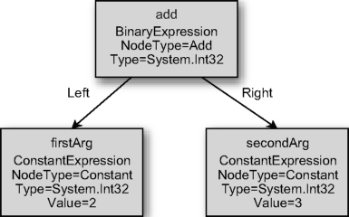Figure 9.2 Graphical representation of the expression tree created by listing 9.6
9.3.2 Compiling expression trees into delegates
One of the types derived from Expression is LambdaExpression. The generic class Expression<TDelegate> then derives from LambdaExpression. It’s all slightly confusing — figure 9.3 shows the type hierarchy to make things clearer.
The difference between Expression and Expression<TDelegate> is that the generic class is statically typed to indicate what kind of expression it is, in terms of return type and parameters. Obviously, this is expressed by the TDelegate type parameter, which must be a delegate type. For instance, our simple addition expression takes no parameters and returns an integer — this is matched by the signature of Func<int>, so we could use an Expression<Func<int>> to represent the expression in a statically typed manner. We do this using the Expression.Lambda method. This has a number of overloads — our examples use the generic method, which uses a type parameter to indicate the type of delegate we want to represent. See MSDN for alternatives.
So, what’s the point of doing this? Well, LambdaExpression has a Compile method that creates a delegate of the appropriate type; Expression<TDelegate> has another method by the same name, but statically typed to return a delegate of type TDelegate. This delegate can now be executed in the normal manner, as if it had been created using a normal method or any other means. Listing 9.7 shows this in action, with the same expression as before.
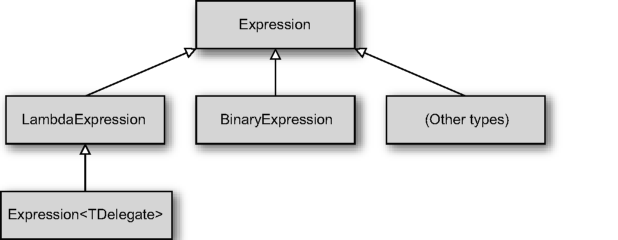Figure 9.3 Type hierarchy from Expression<TDelegate> up to Expression
Listing 9.7 Compiling and executing an expression tree
Expression firstArg = Expression.Constant(2);
Expression secondArg = Expression.Constant(3);
Expression add = Expression.Add(firstArg, secondArg);
Func<int> compiled = Expression.Lambda<Func<int>>(add).Compile();
Console.WriteLine(compiled());
Arguably listing 9.7 is one of the most convoluted ways of printing out “5” that you could ask for. At the same time, it’s also rather impressive. We’re programmatically creating some logical blocks and representing them as normal objects, and then asking the framework to compile the whole thing into real code that can be executed. You may never need to actually use expression trees this way, or even build them up programmatically at all, but it’s useful background information that will help you understand how LINQ works.
As I said at the beginning of this section, expression trees aren’t too far removed from CodeDOM — Snippy compiles and executes C# code that has been entered as plain text, for instance. But two significant differences exist between CodeDOM and expression trees.
First, in .NET 3.5 expression trees were only able to represent single expressions. They weren’t designed for whole classes, methods, or even just statements. This has changed somewhat in .NET 4, where they’re used to support dynamic typing — you can now create blocks, assign values to variables, and so on. But there are still significant restrictions compared with CodeDOM.
Second, C# supports expression trees directly in the language, through lambda expressions. Let’s take a look at that now.
9.3.3 Converting C# lambda expressions to expression trees
As we’ve already seen, lambda expressions can be converted to appropriate delegate instances, either implicitly or explicitly. That’s not the only conversion that’s available. You can also ask the compiler to build an expression tree from your lambda expression, creating an instance of Expression<TDelegate> at execution time. For example, the following listing shows a much shorter way of creating the “return 5” expression, compiling it, and then invoking the resulting delegate.
Listing 9.8 Using lambda expressions to create expression trees
Expression<Func<int>> return5 = () => 5;
Func<int> compiled = return5.Compile();
Console.WriteLine(compiled());
In the first line of listing 9.8, the () => 5 part is the lambda expression. Note that we don’t need any casts because the compiler can verify everything as it goes. We could’ve written 2+3 instead of 5, but the compiler would’ve optimized the addition away for us. The important point to take away is that the lambda expression has been converted into an expression tree.
THERE ARE LIMITATIONS Not all lambda expressions can be converted to expression trees. You can’t convert a lambda with a block of statements (even just one return statement) into an expression tree — it has to be in the form that just evaluates a single expression. That expression can’t contain assignments, either. Although these are the most common restrictions, they’re not the only ones — the full list isn’t worth describing here, as this issue comes up so rarely. If there’s a problem with an attempted conversion, you’ll find out at compile time.
The restriction about only converting single expressions applies even in .NET 4 with its extended abilities for expression trees. It’s possible that a future version of C# will be more permissive about what kind of lambda expressions can be converted, but nothing has been announced at the time of this writing.
Let’s look at a more complicated example just to see how things work, particularly with respect to parameters. This time we’ll write a predicate that takes two strings and checks to see if the first one begins with the second. The code is simple when written as a lambda expression, as shown in the following listing.
Listing 9.9 Demonstration of a more complicated expression tree
Expression<Func<string, string, bool>> expression =
(x, y) => x.StartsWith(y);
var compiled = expression.Compile();
Console.WriteLine(compiled("First", "Second")); Console.WriteLine(compiled("First", "Fir"));
The expression tree itself is more complicated, especially by the time we’ve converted it into an instance of LambdaExpression. The next listing shows how it could be built in code.
Listing 9.10 Building a method call expression tree in code
Methodlnfo method = typeof(string).GetMethod ("StartsWith", new[] { typeof(string) }); var target = Expression.Parameter(typeof(string), "x"); var methodArg = Expression.Parameter(typeof(string), "y");
Expression[] methodArgs = new[] { methodArg };
Expression call = Expression.Call(target, method, methodArgs);
var lambdaParameters = new[] { target, methodArg }; var lambda = Expression.Lambda<Func<string, string, bool>>
(call, lambdaParameters);
var compiled = lambda.Compile();
Console.WriteLine(compiled("First", "Second")); Console.WriteLine(compiled("First", "Fir"));
As you can see, listing 9.10 is considerably more involved than the version with the C# lambda expression. But it does make it more obvious exactly what’s involved in the
tree and how parameters are bound. We start off by working out everything we need to know about the method call that forms the body of the final expression O: the target of the method (in other words, the string we’re calling StartsWith on); the method itself (as a MethodInfo); and the list of arguments (in this case, just the one). It so happens that our method target and argument will both be parameters passed into the expression, but they could be other types of expressions — constants, the results of other method calls, property evaluations, and so forth.
After building the method call as an expression Q, we then need to convert it into a lambda expression ©, binding the parameters as we go. We reuse the same ParameterExpression values we created as information for the method call: the order in which they’re specified when creating the lambda expression is the order in which they’ll be picked up when we eventually call the delegate.
Figure 9.4 shows the same final expression tree graphically. To be picky, even though it’s still called an expression tree, the fact that we reuse the parameter expressions (and we have to — creating a new one with the same name and attempting to bind parameters that way causes an exception at execution time) means that it’s not really a tree in the purest sense.
Glancing at the complexity of figure 9.4 and listing 9.10 without trying to look at the details, you’d be forgiven for thinking that we were doing something really
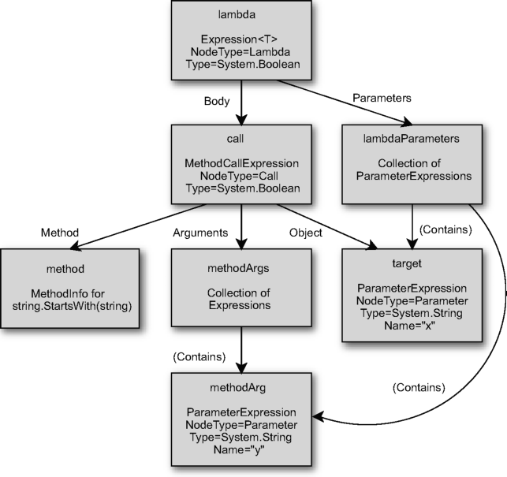Figure 9.4 Graphical represe expression tree that calls a meth parameters from a lambda expres
complicated when in fact it’s just a single method call. Imagine what the expression tree for a genuinely complex expression would look like — and then be grateful that C# 3 can create expression trees from lambda expressions!
For one final way of looking at the same idea, Visual Studio 2010 provides a built-in visualizer for expression trees.7 This can be useful if you’re trying to work out how to build up an expression tree in code, and want to get an idea of what it should look like: write a lambda expression that does what you want with some dummy data, look at the visualization in the debugger, and then work out how to build similar trees with the information you have in your real code. The visualizer relies on changes within .NET 4, so it won’t work with projects targeting .NET 3.5. Figure 9.5 shows the visualization for our “StartsWith” example.
The .Lambda and .Call parts of the visualization correspond to our calls to Expression.Lambda and Expression.Call; $x and $y correspond to the parameter expressions. The visualization is the same whether the expression tree has been built up explicitly through code or using a lambda expression conversion.
One small point to note is that although the C# compiler builds expression trees in the compiled code using code similar to listing 9.10, it has one shortcut up its sleeve: it doesn’t need to use normal reflection to get the MethodInfo for string. StartsWith. Instead, it uses the method equivalent of the typeof operator. This is only available in IL, not in C# itself — and the same operator is also used to create delegate instances from method groups.
Now that we’ve seen how expression trees and lambda expressions are linked, let’s take a brief look at why they’re so useful.
9.3.4 Expression trees at the heart of LNQ
Without lambda expressions, expression trees would have relatively little value. They’d be an alternative to CodeDOM in cases where you only wanted to model a
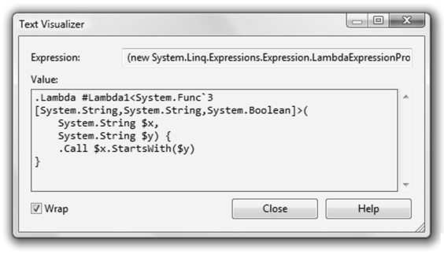Figure 9.5 Debugger visualization of an expression tree
7 If you’re using Visual Studio 2008, you can download some sample code to build a similar visualizer (see http://mng.bz/g6xd), but obviously it’s easier to use the one shipped with Visual Studio 2010 if you have it.
single expression instead of whole statements, methods, types, and so forth — but the benefit would still be limited.
The reverse is also true to a limited extent: without expression trees, lambda expressions would certainly be less useful. Having a more compact way of creating delegate instances would still be welcome, and the shift toward a more functional mode of development would still be viable. Lambda expressions are particularly effective when combined with extension methods, as we’ll see in the next chapter. But with expression trees in the picture as well, things get a lot more interesting.
So what do we get by combining lambda expressions, expression trees, and extension methods? The answer is the language side of LINQ, pretty much. The extra syntax we’ll see in chapter 11 is icing on the cake, but the story would still have been compelling with just those three ingredients. For a long time we could have either nice compile-time checking or the ability to tell another platform to run some code, usually expressed as text (SQL queries being the most obvious example). We couldn’t do both at the same time.
By combining lambda expressions that provide compile-time checks and expression trees that abstract the execution model away from the desired logic, we can have the best of both worlds — within reason. At the heart of out-of-process LINQ providers is the idea that we can produce an expression tree from a familiar source language (C# in our case) and use the result as an intermediate format that can then be converted into the native language of the target platform: SQL, for example. In some cases there may not be a simple native language so much as a native API — making different web service calls depending on what the expression represents, perhaps. Figure 9.6 shows the different paths of LINQ to Objects and LINQ to SQL.
In some cases the conversion may try to perform all the logic on the target platform, whereas other cases may use the compilation facilities of expression trees to
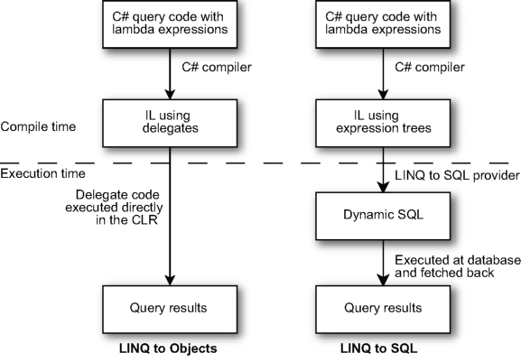Figure 9.6 Both LINQ to Objects and LINQ to SQL start with C# code and end with query results. The ability to execute the code remotely comes through expression trees.
execute some of the expression locally and some elsewhere. We’ll look at some of the details of this conversion step in chapter 12, but you should bear this end goal in mind as we explore extension methods and LINQ syntax in chapters 10 and 11.
NOT ALL CHECKING CAN BE DONE BY THE COMPILER When expression trees are examined by some sort of converter, often some cases have to be rejected. For instance, although it’s possible to convert a call to string.StartsWith into a similar SQL expression, a call to string.IsInterned doesn’t make sense in a database environment. Expression trees allow a large amount of compile-time safety, but the compiler can only check that the lambda expression can be converted into a valid expression tree; it can’t make sure that the expression tree will be suitable for its eventual use.
Though the most common uses of expression trees are related to LINQ, that’s not always the case...
9.3.5 Expression trees beyond LINQ
Bjarne Stroustrup once said, “I wouldn’t like to build a tool that could only do what I had been able to imagine for it.” Though expression trees were introduced into .NET primarily for LINQ, both the community and Microsoft have found other uses for them since then. This section is far from comprehensive, but it might give you a few ideas of where expression trees might help you.
OPTIMIZING THE DYNAMIC LANGUAGE RUNTIME
We’re going to see a lot more of the Dynamic Language Runtime (DLR) in chapter 14, when we talk about dynamic typing in C#, but expression trees are a core part of the architecture. They have three properties that make them attractive to the DLR:
■ They’re immutable, so you can cache them safely.
■ They’re composable, so you can build complex behavior out of simple building blocks.
■ They can be compiled into delegates that are JIT-compiled into native code as normal.
The DLR has to make decisions about how to handle various expressions where the meaning can change subtly based on different rules. Expression trees allow these rules (and the results) to be transformed into code that’s close to what you’d write by hand if you knew all the rules and results you’d seen so far. It’s a powerful concept, and one that allows dynamic code to execute surprisingly quickly.
REFACTOR-PROOF REFERENCES TO MEMBERS
In section 9.3.3 I mentioned that the compiler can emit references to MethodInfo values in a similar way to the typeof operator. Unfortunately, C# doesn’t have the same ability, which means the only way of telling one piece of general-purpose, reflection-based code to “use the property called BirthDate defined in my type” has previously been to use a string literal and make sure that if you change the name of the property,
you also change the literal. Using C# 3, you can build an expression tree representing a property reference using a lambda expression. The method can then dissect the expression tree and work out the property you mean. It could then do whatever it liked with the information — as well as compiling the expression tree into a delegate and using it directly, of course. As an example of how this might be used, you could write
serializationContext.AddProperty(x => x.BirthDate);
The serialization context would then know that you wanted to serialize the BirthDate property, and it could record appropriate metadata as well as retrieve the value. Serialization is just one area where you may want a property or method reference; it’s fairly common within reflection-driven code. Now if you refactor the BirthDate property to call it DateOfBirth, the lambda expression will change too. Of course, it’s not foolproof — there’s no compile-time check that the expression really evaluates a simple property; that has to be an execution-time check in the AddProperty code.
It’s possible that one day C# will gain the ability to do this within the language itself. Such an operator has already been named: infoof, pronounced either “info-of” or “in-foof’ depending on your level of light-heartedness. This has been on the C# team’s possible-feature list for a while, and unsurprisingly Eric Lippert has blogged about it (see http://mng.bz/24y7) — but it hasn’t made the cut yet. Maybe in C# 5.
SIMpLER REFLECTION
The final use I want to mention before we delve into the murky depths of type inference is also about reflection. As I mentioned in chapter 3, arithmetic operators don’t play nicely with generics, which makes it hard to write generic code to (say) add up a series of values. Marc Gravell used expression trees to great effect to provide a generic Operator class and a nongeneric helper class allowing you to write code such as
T runningTotal = initialValue; foreach (T item in values)
{
runningTotal = Operator.Add(runningTotal, values);
}
This will even work in cases where the values are a different type than the running total — adding a whole sequence of TimeSpan values to a DateTime, for example. It’s possible to do this in C# 2, but it’s significantly more fiddly due to the ways that operators are exposed via reflection, particularly for the primitive types. Expression trees allow the implementation of this magic to be quite clean, and the fact that they’re compiled to normal IL which is then JIT compiled gives great performance.
These are just some examples, and no doubt there are many developers busy working on completely different uses. But they mark an end to our direct coverage of lambda expressions and expression trees. We’ll see a good deal more of them when we look at LINQ, but before we go any further there are a few changes to C# that need some explanation. These are changes to type inference and how the compiler selects between overloaded methods.
9.4 Changes to type inference and overload resolution
The steps involved in type inference and overload resolution were altered in C# 3 to accommodate lambda expressions and to make anonymous methods more useful. This may not count as a new feature of C# as such, but it can be important to understand what the compiler is going to do. If you find details like this tedious and irrelevant, feel free to skip to the chapter summary — but remember that this section exists, so you can read it if you run across a compilation error related to this topic and can’t understand why your code doesn’t work. (Alternatively, you might want to come back to this section if you find your code does compile, but you don’t think it should!)
Even within this section I’m not going to go into every nook and cranny — that’s what the language specification is for; the details are in section 7.5.2 of the C# 4 spec. Instead, I’ll give an overview of the new behavior, providing examples of common cases. The primary reason for changing the specification is to allow lambda expressions to work in a concise fashion, which is why I’ve included the topic in this particular chapter. Let’s look a little deeper at what problems we’d have run into if the C# team had stuck with the old rules.
9.4.1 Reasons for change: streamlining generic method calls
Type inference occurs in a few situations. We’ve already seen it apply to implicitly typed arrays, and it’s also required when you try to implicitly convert a method group to a delegate type. This can be particularly confusing when the conversion occurs when you’re using a method group as an argument to another method: with overloading of the method being called, and overloading of methods within the method group, and the possibility of generic methods getting involved, the set of potential conversions may be enormous.
By far the most common situation for type inference is when you’re calling a generic method without specifying any type arguments. This happens all the time in LINQ — the way that query expressions work depends heavily on this ability. It’s all handled so smoothly that it’s easy to ignore how much the compiler has to work out on your behalf, all for the sake of making your code clearer and more concise.
The rules were reasonably straightforward in C# 2, although method groups and anonymous methods weren’t always handled as well as we might’ve liked. The type inference process didn’t deduce any information from them, leading to situations where the desired behavior was obvious to developers but not to the compiler. Life is more complicated in C# 3 due to lambda expressions — if you call a generic method using a lambda expression with an implicitly typed parameter list, the compiler needs to work out what types you’re talking about before it can check the lambda expression’s body.
This is much easier to see in code than in words. Listing 9.11 gives an example of the kind of issue we want to solve: calling a generic method using a lambda expression.
Listing 9.11 Example of code requiring the new type inference rules
static void PrintConvertedValue<TInput,TOutput>
(TInput input, Converter<TInput,TOutput> converter)
{
Console.WriteLine(converter(input));
}
PrintConvertedValue("I'm a string", x => x.Length);
The method PrintConvertedValue in listing 9.11 simply takes an input value and a delegate that can convert that value into a different type. It’s completely generic — it makes no assumptions about the type parameters TInput and TOutput. Now, look at the types of the arguments we’re calling it with in the bottom line of the listing. The first argument is clearly a string, but what about the second? It’s a lambda expression, so we need to convert it into a Converter<TInput,TOutput> — and that means we need to know the types of TInput and TOutput.
If you remember from section 3.3.2, the type inference rules of C# 2 were applied to each argument individually, with no way of using the types inferred from one argument to another. In our case, these rules would’ve stopped us from finding the types of TInput and TOutput for the second argument, so the code in listing 9.11 would’ve failed to compile.
Our eventual goal is to understand what makes listing 9.11 compile in C# 3 (and it does, I promise you), but we’ll start with something more modest.
9.4.2 Inferred return types of anonymous functions
The following listing shows another example of some code that looks like it should compile but doesn’t under the type inference rules of C# 2.
Listing 9.12 Attempting to infer the return type of an anonymous method
delegate T MyFunc<T>();
static void WriteResult<T>(MyFunc<T> function) {
Console.WriteLine(function());
}
WriteResult(delegate { return 5; });
Compiling listing 9.12 under C# 2 gives an error like this:
error CS0411: The type arguments for method
'Snippet.WriteResult<T>(Snippet.MyFunc<T>)' cannot be inferred from the usage. Try specifying the type arguments explicitly.
We can fix the error in two ways — either specify the type argument explicitly (as suggested by the compiler) or cast the anonymous method to a concrete delegate type:
WriteResult<int>(delegate { return 5; });
WriteResult((MyFunc<int>)delegate { return 5; });
Both of these work, but they’re ugly. We’d like the compiler to perform the same kind of type inference as for nondelegate types, using the type of the returned expression to infer the type of T. That’s exactly what C# 3 does for both anonymous methods and lambda expressions — but there’s one catch. Although in many cases only one return statement is involved, there can sometimes be more. The following listing is a slightly modified version of listing 9.12 where the anonymous method sometimes returns an integer and sometimes returns an object.
Listing 9.13 Code returning an integer or an object depending on the time of day
delegate T MyFunc<T>();
static void WriteResult<T>(MyFunc<T> function)
{
Console.WriteLine(function());
}
WriteResult(delegate
{
if (DateTime.Now.Hour < 12)
{
return 10;
}
else {
return new object();
}
});
The compiler uses the same logic to determine the return type in this situation as it does for implicitly typed arrays, as described in section 8.4. It forms a set of all the types from the return statements in the body of the anonymous function66 (in this case int and object) and checks to see if exactly one of the types can be implicitly converted to from all the others. There’s an implicit conversion from int to object (via boxing) but not from object to int, so the inference succeeds with object as the inferred return type. If there are no types matching that criterion (or more than one), no return type can be inferred and you’ll get a compilation error.
So, now we know how to work out the return type of an anonymous function — but what about lambda expressions where the parameter types can be implicitly defined?
9.4.3 Two-phase type inference
The details of type inference in C# 3 are much more complicated than they are for C# 2. It’s rare that you’ll need to reference the specification for the exact behavior, but if you do I recommend you write down all the type parameters, arguments, and so forth on a piece of paper, and then follow the specification step by step, carefully
noting down every action it requires. You’ll end up with a sheet full of fixed and unfixed type variables, with a different set of bounds for each of them. A fixed type variable is one that the compiler has decided the value of; otherwise it’s unfixed. A bound is a piece of information about a type variable. In addition to a bunch of notes, I suspect you’ll get a headache; this stuff isn’t pretty.
I’m going to present a more fuzzy way of thinking about type inference — one that’s likely to serve just as well as knowing the specification, and will be a lot easier to understand. The fact is, if the compiler doesn’t perform type inference in exactly the way you want it to, it’ll almost certainly result in a compilation error rather than code that builds but doesn’t behave properly. If your code doesn’t build, try giving the compiler more information — it’s as simple as that. But here’s roughly what’s changed for C# 3.
The first big difference is that the method arguments work as a team in C# 3. In C# 2 every argument was used to try to pin down some type parameters exactly, and the compiler would complain if any two arguments came up with different results for a particular type parameter, even if they were compatible. In C# 3, arguments can contribute pieces of information — types that must be implicitly convertible to the final fixed value of a particular type variable. The logic used to come up with that fixed value is the same as for inferred return types and implicitly typed arrays. The following listing shows an example of this — without using any lambda expressions or even anonymous methods.
Listing 9.14 Flexible type inference combining information from multiple arguments
static void PrintType<T>(T first, T second)
{
Console.WriteLine(typeof(T));
}
PrintType(1, new object());
Although the code in listing 9.14 is syntactically valid in C# 2, it wouldn’t build: type inference would fail, because the first parameter would decide that T must be int and the second parameter would decide that T must be object. In C# 3 the compiler determines that T should be object in exactly the same way that it did for the inferred return type in listing 9.13. In fact, the inferred return type rules are effectively one example of the more general process in C# 3.
The second change is that type inference is now performed in two phases. The first phase deals with normal arguments where the types involved are known to begin with. This includes anonymous functions where the parameter list is explicitly typed.
The second phase then kicks in, where implicitly typed lambda expressions and method groups have their types inferred. The idea is to see whether any of the information we’ve pieced together so far is enough to work out the parameter types of the lambda expression (or method group). If it is, the compiler can then examine the body of the lambda expression and work out the inferred return type — which is often another of the type parameters we’re looking for. If the second phase gives some
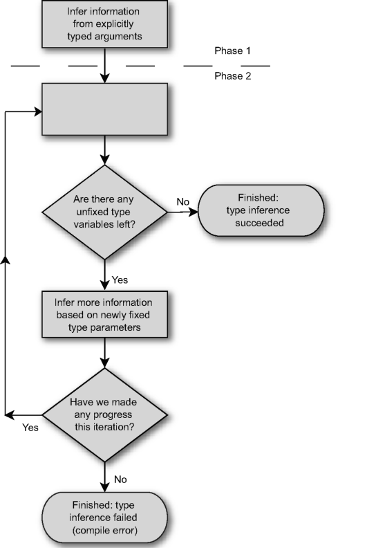Figure 9.7 The two-phase type inference flow
more information, we go through it again, repeating until either we run out of clues or we’ve worked out all the type parameters involved. Figure 9.7 shows this in flow chart form — but please bear in mind that this is still a heavily simplified version of the algorithm.
Let’s look at two examples to show how it works. First we’ll take the code we started the section with — listing 9.11.
static void PrintConvertedValue<TInput,TOutput>
(TInput input, Converter<TInput,TOutput> converter)
{
Console.WriteLine(converter(input));
}
PrintConvertedValue("I'm a string", x => x.Length)
The type parameters we need to work out in listing 9.11 are TInput and TOutput. The steps performed are as follows:
1 Phase 1 begins.
2 The first parameter is of type TInput, and the first argument is of type string. We infer that there must be an implicit conversion from string to TInput.
3 The second parameter is of type Converter<TInput, TOutput>, and the second argument is an implicitly typed lambda expression. No inference is per-formed — we don’t have enough information.
4 Phase 2 begins.
5 TInput doesn’t depend on any unfixed type parameters, so it’s fixed to string.
6 The second argument now has a fixed input type, but an unfixed output type. We can consider it to be (string x) => x.Length and infer the return type as int. Therefore an implicit conversion must take place from int to TOutput.
7 Phase 2 repeats.
8 TOutput doesn’t depend on anything unfixed, so it’s fixed to int.
9 There are now no unfixed type parameters, so inference succeeds.
Complicated, eh? Still, it does the job — the result is what we’d want (TInput=string, TOutput=int) and everything compiles without any problems. The importance of phase 2 repeating is best shown with another example. Listing 9.15 shows two conversions being performed, with the output of the first one becoming the input of the second. Until we’ve worked out the output type of the first conversion, we don’t know the input type of the second, so we can’t infer its output type either.
Listing 9.15 Multistage type inference
static void ConvertTwice<TInput,TMiddle,TOutput>
(TInput input,
Converter<TInput,TMiddle> firstConversion,
Converter<TMiddle,TOutput> secondConversion)
{
TMiddle middle = firstConversion(input);
TOutput output = secondConversion(middle);
Console.WriteLine(output);
}
ConvertTwice("Another string",
text => text.Length,
length => Math.Sqrt(length));
The first thing to notice is that the method signature appears to be pretty horrific. It’s not too bad when you stop being scared and just look at it carefully — and certainly the example usage makes it more obvious. We take a string and perform a conversion on it: the same conversion as before, just a length calculation. We then take that length (an int) and find its square root (a double).
Phase 1 of type inference tells the compiler that there must be a conversion from string to TInput. The first time through phase 2, TInput is fixed to string and we
infer that there must be a conversion from int to TMiddle. The second time through phase 2, TMiddle is fixed to int and we infer that there must be a conversion from double to TOutput. The third time through phase 2, TOutput is fixed to double and type inference succeeds. When type inference has finished, the compiler can look at the code within the lambda expression properly.
CHECKING THE BODY OF A LAMBDA EXPRESSION The body of a lambda expression cannot be checked until the input parameter types are known. The lambda expression x => x.Length is valid if x is an array or a string, but invalid in many other cases. This isn’t a problem when the parameter types are explicitly declared, but with an implicit parameter list the compiler needs to wait until it’s performed the relevant type inference before it can try to work out what the lambda expression means.
These examples have shown only one change working at a time — in practice there can be several pieces of information about different type variables, potentially discovered in different iterations of the process. In an effort to save your sanity (and mine), I’m not going to present any more complicated examples — hopefully you understand the general mechanism, even if the exact details are hazy.
Although it may seem as if this kind of situation will occur so rarely that it’s not worth having such complex rules to cover it, in fact it’s common in C# 3, particularly with LINQ. You could easily use type inference extensively without even thinking about it — it’s likely to become second nature to you. If it fails and you wonder why, you can always revisit this section and the language specification.
We need to cover one more change, but you’ll be glad to hear it’s easier than type inference: let's look at method overloading.
9.4.4 Picking the right overloaded method
Overloading occurs when there are multiple methods available with the same name but different signatures. Sometimes it’s obvious which method is appropriate, because it’s the only one with the right number of parameters, or it’s the only one where all the arguments can be converted into the corresponding parameter types.
The tricky bit comes when there are multiple methods that could be the right one. The rules in section 7.5.3 of the specification are quite complicated (yes, again) — but the key part is the way that each argument type is converted into the parameter type.67 For instance, consider these method signatures, as if they were both declared in the same type:
void Write(int x) void Write(double y)
The meaning of a call to Write(1.5) is obvious, because there’s no implicit conversion from double to int, but a call to Write(1) is trickier. There is an implicit conversion
from int to double, so both methods are possible. At that point, the compiler considers the conversion from int to int, and from int to double. A conversion from any type to itself is defined to be better than any conversion to a different type, so the Write( int x) method is better than Write(double y) for this particular call.
When there are multiple parameters, the compiler has to make sure there’s a best method to use. One method is better than another if all the argument conversions involved are at least as good as the corresponding conversions in the other method, and at least one conversion is strictly better. As a simple example, suppose we had
void Write(int x, double y) void Write(double x, int y)
A call to Write(1, 1) would be ambiguous, and the compiler would force you to add a cast to at least one of the parameters to make it clear which method you meant to call. Each overload has one better argument conversion, so neither of them is the best method.
That logic still applies to C# 3, but with one extra rule about anonymous functions, which never specify a return type. In this case, the inferred return type (as described in section 9.4.2) is used in the better-conversion rules.
Let’s see an example of the kind of situation that needs the new rule. The following listing contains two methods with the name Execute, and a call using a lambda expression.
Listing 9.16 Sample of overloading choice influenced by delegate return type
static void Execute(Func<int> action)
{
Console.WriteLine("action returns an int: " + action());
}
static void Execute(Func<double> action)
{
Console.WriteLine("action returns a double: " + action());
}
Execute(() => 1);
The call to Execute in listing 9.16 could’ve been written with an anonymous method or a method group instead — the same rules are applied whatever kind of conversion is involved. So, which Execute method should be called? The overloading rules say that when two methods are both applicable after performing conversions on the arguments, those argument conversions are examined to see which one is better. The conversions here aren’t from a normal .NET type to the parameter type — they’re from a lambda expression to two different delegate types. So, which conversion is better?
Surprisingly enough, the same situation in C# 2 would result in a compilation error — there was no language rule covering this case. In C# 3, the method with the Func<int> parameter would be chosen. The extra rule that has been added can be paraphrased this way:
If an anonymous function can be converted to two delegate types that have the same parameter list but different return types, then the delegate conversions are judged by the conversions from the inferred return type to the delegates’ return types.
That’s pretty much gibberish without referring to an example. Let’s look back at listing 9.16: we’re converting from a lambda expression with no parameters and an inferred return type of int to either Func<int> or Func<double>. The parameter lists are the same (empty) for both delegate types, so the rule applies. We then just need to find the better conversion: int to int, or int to double. This puts us in more familiar territory — as we saw earlier, the int to int conversion is better. Listing 9.16 therefore prints out “action returns an int: 1.”
9.4.5 Wrapping up type inference and overload resolution
This section has been pretty heavy. I would’ve loved to have made it simpler — but it’s a fundamentally complicated topic. The terminology involved doesn’t make it any easier, especially as parameter type and type parameter mean completely different things! Congratulations if you made it through and actually understood it all. Don’t worry if you didn’t: hopefully next time you read through the section, it’ll shed more light on the topic — particularly after you’ve run into situations where it’s relevant to your own code. For the moment, here are the most important points:
■ Anonymous functions (anonymous methods and lambda expressions) have inferred return types based on the types of all the return statements.
■ Lambda expressions can only be understood by the compiler when the types of all the parameters are known.
■ Type inference no longer requires that each argument independently come to exactly the same conclusion about type parameters, as long as the results stay compatible.
■ Type inference is now multistage: the inferred return type of one anonymous function may be used as a parameter type for another.
■ Finding the best overloaded method when anonymous functions are involved takes the inferred return type into account.
9.5 Summary
In C# 3, lambda expressions almost entirely replace anonymous methods. Of course, anonymous methods are supported for the sake of backward compatibility, but idiomatic, freshly written C# 3 code will contain few of them.
We’ve seen how lambda expressions are more than just a more compact syntax for delegate creation. They can be converted into expression trees, subject to some limitations. The expression trees can then be processed by other code, possibly performing equivalent actions in different execution environments. Without this ability, LINQ would be resticted to in-process queries.
Our discussion of type inference and overloading was a necessary evil to some extent: very few people actually enjoy discussing the sort of rules that are required, but it’s important to have at least a passing understanding of what’s going on. Before we all feel too sorry for ourselves, spare a thought for the poor language designers who have to live and breathe this kind of thing, making sure the rules are consistent and don’t fall apart in nasty situations. Then pity the testers who have to try to break the implementation!
That’s it in terms of describing lambda expressions — but we’ll be seeing a lot more of them in the rest of the book. For instance, our next chapter is all about extension methods. Superficially, they’re completely separate from lambda expressions — but in reality the two features are often used together.
Chapter 10: Extension methods
This chapter covers
■ Writing extension methods
■ Calling extension methods
■ Method chaining
■ Extension methods in .NET 3.5
■ Other uses for extension methods
I’m not a fan of inheritance. Or rather, I’m not a fan of a number of places where inheritance has been used in code that I’ve maintained, or class libraries I’ve worked with. As with so many things, it’s powerful when used properly, but its design overhead is often overlooked and can become painful over time. It’s sometimes used as a way of adding extra behavior and functionality to a class, even when no real information is being added about the object — where nothing is being specialized.
Sometimes that’s appropriate — if objects of the new type should carry around the details of the extra behavior — but often it’s not. Often it’s just not possible to use inheritance in this way in the first place, if you’re working with a value type, a sealed class, or an interface. The alternative is usually to write a bunch of static methods, most of which take an instance of the type in question as at least one of
their parameters. This works fine, without the design penalty of inheritance, but it does tend to make code look ugly.
C# 3 introduced the idea of extension methods, which have the benefits of the static methods solution and also improve the readability of code that calls them. They let you call static methods as if they were instance methods of a completely different class. Don’t panic — it’s not as crazy or as arbitrary as it sounds.
In this chapter we’ll first look at how to use extension methods and how to write them. We’ll then examine a few of the extension methods provided by .NET 3.5, and see how they can be chained together easily. This chaining ability is an important part of the reason for introducing extension methods to the language in the first place, and is an important part of LINQ.68 Finally, we’ll consider some of the pros and cons of using extension methods instead of plain static methods.
First, though, let’s have a closer look at why extension methods are sometimes desirable compared with what’s available in C# 1 and 2, particularly when you create utility classes.
10.1 Life before extension methods
You may be getting a sense of deja vu at this point, because utility classes came up in chapter 7 when we looked at static classes. If you’ve written a lot of C# 2 code by the time you start using C# 3, you should look at your static classes — many of the methods in them may be good candidates for turning into extension methods. That’s not to say that all existing static classes are a good fit, but you may well recognize the following traits:
■ You want to add some members to a type.
■ You don’t need to add any more data to the instances of the type.
■ You can’t change the type itself, because it’s in someone else’s code.
One slight variation on this is where you want to work with an interface instead of a class, adding useful behavior while only calling methods on the interface. A good example of this is IList<T>. Wouldn’t it be nice to be able to sort any (mutable) implementation of IList<T>? It’d be horrendous to force all implementations of the interface to implement sorting themselves, but it’d be nice from the point of view of the user of the list.
The thing is, IList<T> provides all the building blocks for a completely generic sort routine (several, in fact), but you can’t put that implementation in the interface. IList<T> could’ve been specified as an abstract class instead, and the sorting functionality included that way, but as C# and .NET have single inheritance of implementation, that would’ve placed a significant restriction on the types deriving from it.
Extension methods would allow us to sort any IList<T> implementation, making it appear as if the list itself provided the functionality.
We’ll see later that a lot of the functionality of LINQ is built on extension methods over interfaces. For the moment, we’ll use a different type for our examples: System. IO. Stream, the bedrock of binary communication in .NET. Stream itself is an abstract class with several concrete derived classes, such as NetworkStream, FileStream, and MemoryStream. Unfortunately, there are a few pieces of functionality that would’ve been handy to include in Stream but thatjust aren’t there.
The missing features I'm most often aware of are the ability to read the whole of a stream into memory as a byte array, and the ability to copy69 the contents of one stream into another. Both of these are frequently implemented badly, making assumptions about streams that just aren’t valid — the most common misconception being that Stream. Read will completely fill the given buffer if the data doesn’t run out first.
NOT SO “MISSING” AFTER ALL One of these features has been added to .NET 4: Stream now has a CopyTo method. This is actually useful in terms of demonstrating one slightly brittle aspect of extension methods — we’ll come back to it in section 10.2.3. ReadFully is still missing, but it should be used carefully anyway: you should only try to read the entirety of a stream if you’re confident it actually has an end, and that all the data fits into memory. Streams are under no obligation to have a finite amount of data.
It’d be nice to have the functionality in a single place, rather than duplicating it in several projects. That’s why I wrote the StreamUtil class in my miscellaneous utility library. The real code contains a fair amount of error checking and other functionality, but the following listing shows a cut-down version that’s more than adequate for our needs.
Listing 10.1 A simple utility class to provide extra functionality for streams
using System.IO; public static class StreamUtil {
const int BufferSize = 8192;
public static void Copy(Stream input, Stream output)
{
byte[] buffer = new byte[BufferSize]; int read;
while ((read = input.Read(buffer, 0, buffer.Length)) > 0) {
output.Write(buffer, 0, read);
}
}
public static byte[] ReadFully(Stream input)
{
using (MemoryStream tempStream = new MemoryStream())
{
Copy(input, tempStream); return tempStream.ToArray();
}
}
}
The implementation details don’t matter much, although it’s worth noting that the ReadFully method calls the Copy method — that’ll be useful to demonstrate a point about extension methods later. The class is easy to use — the following listing shows how we can write a web response to disk, for example.
Listing 10.2 Using StreamUtil to copy a web response stream to a file
WebRequest request = WebRequest.Create("http://manning.com"); using (WebResponse response = request.GetResponse()) using (Stream responseStream = response.GetResponseStream()) using (FileStream output = File.Create("response.dat"))
{
StreamUtil.Copy(responseStream, output);
}
Listing 10.2 is quite compact, and the StreamUtil class has taken care of looping and asking the response stream for more data until it’s all been received. It’s done its job as a utility class perfectly reasonably. Even so, it doesn’t feel very object-oriented. We’d really like to ask the response stream to copy itself to the output stream, just like the MemoryStream class has a WriteTo method. It’s not a big problem, but it’s a little ugly as it is.
Inheritance wouldn’t help us in this situation (we want this behavior to be available for all streams, not just ones we’re responsible for) and we can’t go changing the Stream class itself — so what can we do? With C# 2, we were out of options — we had to stick with the static methods and live with the clumsiness. C# 3 allows us to change our static class to expose its members as extension methods, so we can pretend that the methods have been part of Stream all along. Let’s see what changes are required.
10.2 Extension method syntax
Extension methods are almost embarrassingly easy to create, and simple to use, too. The considerations around when and how to use them are significantly deeper than the difficulties involved in learning how to write them in the first place. Let’s start by converting our StreamUtil class to have a couple of extension methods.
10.2.1 Declaring extension methods
You can’t use just any method as an extension method — it must have the following characteristics:
■ It must be in a non-nested, nongeneric static class (and therefore must be a static method).
■ It must have at least one parameter.
■ The first parameter must be prefixed with the this keyword.
■ The first parameter can’t have any other modifiers (such as out or ref).
■ The type of the first parameter must not be a pointer type.
That’s it — the method can be generic, return a value, have ref/out parameters other than the first one, be implemented with an iterator block, be part of a partial class, use nullable types — anything, as long as the preceding constraints are met.
We’ll call the type of the first parameter the extended type of the method, and say that the method extends that type — so in this case we’re extending Stream. This isn’t official terminology from the specification, but it’s a useful piece of shorthand.
Not only does the previous list provide all the restrictions, but it also gives the details of what you need to do to turn a normal static method in a static class into an extension method — just add the this keyword. The following listing shows the same class as in listing 10.1, but this time with both methods as extension methods.
Listing 10.3 The StreamUtil class again, but this time with extension methods
public static class StreamUtil {
const int BufferSize = 8192;
public static void CopyTo(this Stream input, Stream output)
{
byte[] buffer = new byte[BufferSize]; int read;
while ((read = input.Read(buffer, 0, buffer.Length)) > 0)
{
output.Write(buffer, 0, read);
}
}
public static byte[] ReadFully(this Stream input)
{
using (MemoryStream tempStream = new MemoryStream())
{
CopyTo(input, tempStream); return tempStream.ToArray();
}
}
}
Yes, the only big change in listing 10.3 is the addition of the two modifiers, as shown in bold. I’ve also changed the name of the method from Copy to CopyTo. As we’ll see in a minute, that’ll allow calling code to read more naturally, although it does look slightly strange in the ReadFully method at the moment.
Now, it’s not much use having extension methods if we can’t use them...
I’ve mentioned it in passing, but we haven’t yet seen what an extension method actually does. Simply put, it pretends to be an instance method of another type — the type of the first parameter of the method.
The transformation of our example code that uses StreamUtil is as simple as the transformation of the utility class itself. This time, instead of adding something in, we’ll take it away. Listing 10.4 is a repeat performance of listing 10.2, but using the new syntax to call CopyTo. I say “new,” but it’s really not new at all — it’s the same syntax we’ve always used for calling instance methods.
Listing 10.4 Copying a stream using an extension method
WebRequest request = WebRequest.Create("http://manning.com"); using (WebResponse response = request.GetResponse()) using (Stream responseStream = response.GetResponseStream()) using (FileStream output = File.Create("response.dat"))
{
responseStream.CopyTo(output);
}
In listing 10.4 it at least looks like we’re asking the response stream to do the copying. It’s still StreamUtil doing the work behind the scenes, but the code reads in a more natural way. In fact, the compiler has converted the CopyTo call into a normal static method call to StreamUtil.CopyTo, passing the value of responseStream as the first argument (followed by output as normal).
Now that you can see the code in question, I hope you can understand why I changed the method name from Copy to CopyTo. Some names work just as well for static methods as instance methods, but you’ll find that others need tweaking to get the maximum readability benefit.
If we want to make the StreamUtil code slightly more pleasant, you can change the line of ReadFully that calls CopyTo like this:
input.CopyTo(tempStream);
At this point, the name change is fully appropriate for all the uses — although there’s nothing to stop you from using the extension method as a normal static method, which is useful when you’re migrating a lot of code.
You may have noticed that nothing in these method calls indicates that we’re using an extension method instead of a regular instance method of Stream. This can be seen in two ways: it’s a good thing if our aim is to make extension methods blend in as much as possible and cause little alarm — but it’s a bad thing if you want to be able to immediately see what’s really going on. If you’re using Visual Studio, you can hover over a method call and get an indication in the tooltip when it’s an extension method, as shown in figure 10.1.
IntelliSense also indicates when it’s offering an extension method, in both the icon for the method and the tooltip when it’s selected. Of course, you don’t want to have to
WebRequest request = WebRequest.Create("http://manning.com") : using (WebResponse response = request.GetResponseQ) using (Stream responseStream = response.GetResponseStream()) using (FileStream output = File.Create("response.dat"))
{
responseStream.CopyTo(output);
} (extension) void Stream.CopyTo(Stream output)
Figure 10.1 Hovering over a method call in Visual Studio reveals whether the method is actually an extension method.
hover over every method call you make or be super careful with IntelliSense, but most of the time it doesn’t matter whether you’re calling an instance or extension method.
There’s still one rather strange thing about our calling code — it doesn’t mention StreamUtil anywhere! How does the compiler know to use the extension method in the first place?
10.2.3 Extension method discovery
It’s important to know how to call extension methods — but it’s also important to know how to not call them — how to avoid being presented with unwanted options. To achieve that, we need to know how the compiler decides which extension methods to use in the first place.
Extension methods are made available to the code in the same way that classes are made available without qualification — with using directives. When the compiler sees an expression that looks like it’s trying to use an instance method but none of the instance methods are compatible with the method call (if there’s no method with that name, for instance, or no overload matches the arguments given), it then looks for an appropriate extension method. It considers all the extension methods in all the imported namespaces and the current namespaces, and matches ones where there’s an implicit conversion from the expression type to the extended type.
IMPLEMENTATION DETAIL: HOW DOES THE COMPILER SPOT AN EXTENSION METHOD?
To work out whether to use an extension method, the compiler has to be able to tell the difference between an extension method and other methods within a static class that happen to have an appropriate signature. It does this by checking whether System.Runtime. CompilerServices. ExtensionAttribute has been applied to the method and the class. This attribute was introduced in .NET 3.5, but the compiler doesn’t check which assembly the attribute comes from. This means that you can still use extension methods even if your project targets .NET 2.0 — you just need to define your own attribute with the right name, in the right namespace. You can then declare your extension methods as normal and the attribute will be applied automatically. The compiler also applies the attribute to the assembly containing the extension method, but it doesn’t currently require this when searching for extension methods.
Introducing your own copies of system types can become problematic when you later need to use a version of the framework that already defines those types. If you do use this technique, it’s worth using preprocessor symbols to only declare the attribute conditionally. You can then build one version of your code targeting .NET 2.0, and another targeting .NET 3.5 and higher.
If multiple applicable extension methods are available for different extended types (using implicit conversions), the most appropriate one is chosen with the better conversion rules used in overloading. For instance, if IChild inherits from IParent, and there’s an extension method with the same name for both, then the IChild extension method is used in preference to the one on IParent. Again, this feature is used in LINQ, as you’ll see in section 12.2 where we meet the IQueryable<T> interface.
It’s important to note that if an applicable instance method is available, that will always be used before searching for extension methods, but the compiler doesn’t issue a warning if an extension method also matches an existing instance method. For example, .NET 4 has a new Stream method that’s also called CopyTo. It has two overloads, one of which conflicts with our extension method. The result is that the new method is picked in preference to the extension method, so if you compile listing 10.4 against .NET 4, you’ll end up using Stream.CopyTo instead of StreamUtil.CopyTo. You can still call the StreamUtil method statically using the normal syntax of Stream-Util.CopyTo(input, output), but it’ll never be picked as an extension method. In this case there’s no harm to existing code: the new instance method has the same meaning as our extension method, so it doesn’t matter which one is used. In other cases there could be subtle differences in semantics that could be hard to spot until the code breaks.
Another potential problem with the way that extension methods are made available to code is that it’s very wide-ranging. If there are two classes in the same namespace containing methods with the same extended type, there’s no way of only using the extension methods from one of the classes. Likewise, there’s no way of importing a namespace for the sake of making types available using only their simple names, but without making the extension methods within that namespace available at the same time. You may want to use a namespace that solely contains static classes with extension methods to mitigate this problem, unless the rest of the functionality of the namespace is heavily dependent on the extension methods already (as is the case for System.Linq, for example).
One aspect of extension methods can be quite surprising when you first encounter it, but is also useful in some situations. It’s all about null references — let’s take a look.
10.2.4 Calling a method on a null reference
I’d be amazed if I ever encountered anyone who’d done a significant amount of .NET programming without seeing a NullReferenceException due to calling a method via a variable whose value turned out to be a null reference. You can’t call instance methods on null references in C# (although IL itself supports it for
nonvirtual calls) — but you can call extension methods with a null reference. This is demonstrated by the following listing. Note that this isn’t a snippet since nested classes can’t contain extension methods.
Listing 10.5 Extension method being called on a null reference
using System;
public static class NullUtil {
public static bool IsNull(this object x)
{
return x == null;
}
}
public class Test {
static void Main()
{
object y = null;
Console.WriteLine(y.IsNull()); y = new object();
Console.WriteLine(y.IsNull());
}
}
The output of listing 10.5 is “True” then “False” — if IsNull had been a normal instance method, an exception would’ve been thrown in the second line of Main. Instead, IsNull was called with null as the argument. Prior to the advent of extension methods, C# had no way of letting you write the more readable y.IsNull() form safely, requiring NullUtil. IsNull(y) instead. There’s one particularly obvious example in the framework where this could be useful: string.IsNullOrEmpty. C# 3 allows you to write an extension method that has the same signature (other than the extra parameter for the extended type) as an existing static method on the extended type. To save you reading through that sentence several times, here’s an example — even though the string class has a static, parameterless method IsNullOrEmpty, you can still create and use the following extension method:
public static bool IsNullOrEmpty(this string text)
{
return string.IsNullOrEmpty(text);
}
At first it seems odd to be able to call IsNullOrEmpty on a variable that’s null without an exception being thrown, particularly if you’re familiar with it as a static method from .NET 2.0. In my view, code using the extension method is more easily understandable. For instance, if you read the expression if (name. IsNullOrEmpty ()) out loud, it says exactly what it’s doing. As always, experiment to see what works for you — but be aware of the possibility of other people using this technique if you’re debugging code. Don’t be certain that an exception will be thrown on a method call unless you’re sure it’s not an extension method! Also note that you should think carefully
before reusing an existing name for an extension method — the previous extension method could confuse readers who are only familiar with the static method from the framework.
CHECKING FOR NULLITY As a conscientious developer, I’m sure that your production methods always check their arguments’ validity before proceeding.
One question that naturally arises from this quirky feature of extension methods is what exception to throw when the first argument is null (assuming it’s not meant to be). Should it be ArgumentNullException, as if it were a normal argument, or should it be NullReferenceException, which is what would’ve happened if the extension method had been an instance method to start with? I recommend the former: it’s still an argument, even if the extension method syntax doesn’t make that obvious. This is the route that Microsoft has taken for the extension methods in the framework, so it has the benefit of consistency too. Finally, bear in mind that extension methods can still be called as normal static methods — and in that situation, ArgumentNullException is clearly the preferred result.
Now that we know the syntax and behavior of extension methods, we can look at some examples of the ones provided in .NET 3.5 as part of the framework.
10.3 Extension methods in .NET 3.5
The biggest use of extension methods in the framework is for LINQ. Some LINQ providers have a few extension methods to help them along, but there are two classes that stand out, both of them appearing in the System.Linq namespace: Enumerable and Queryable. These contain many, many extension methods: most of the ones in Enumerable operate on IEnumerable<T> and most of those in Queryable operate on IQueryable<T>. We’ll see the purpose of IQueryable<T> in chapter 12, but for the moment let’s concentrate on Enumerable.
10.3.1 First steps with Enumerable
Even just looking at Enumerable, we’re getting close to LINQ now. A lot of the time you don’t need full-blown query expressions to solve a problem. Enumerable has a lot of methods in it, and the purpose of this section isn’t to cover all of them but to give you enough of a feel for them to let you go off and experiment. It’s a joy to just play with everything available in Enumerable — although this time it’s definitely worth firing up Visual Studio or LINQPad for your experiments (rather than using Snippy), as IntelliSense is handy for this kind of activity. Appendix A gives a quick run-down of the behavior too.
All the complete examples in this section deal with a simple situation: we start with a collection of integers and transform it in various ways. Obviously real-life situations are likely to be somewhat more complicated, usually dealing with business-related types. At the end of this section, I’ll present a couple examples of just the transformation side of things applied to possible business situations, with full source code available on the book’s website — but that’s harder to play with than a straightforward
collection of numbers. It’s worth considering some recent projects you’ve been working on as we go: see if you can think of situations where you could’ve made your code simpler or more readable by using the kind of operations described here.
There are a few methods in Enumerable that aren’t extension methods, and we’ll use one of them in the examples for the rest of the chapter. The Range method takes two int parameters: a number to start with, and how many results to yield. The result is an IEnumerable<int>, which simply returns one number at a time in the obvious way. To demonstrate the Range method and give us a framework to play with, let’s just print out the numbers 0 to 9, as shown in the following listing.
Listing 10.6 Using Enumerable.Range to print out the numbers 0 to 9
var collection = Enumerable.Range(0, 10); foreach (var element in collection)
{
Console.WriteLine(element);
}
No extension methods are called in listing 10.6, just a plain static method. And yes, it really does just print the numbers 0 to 9 — I never claimed this code would set the world on fire.
DEFERRED EXECUTION The Range method doesn’t build a list with the appropriate numbers — it just yields them at the appropriate time. In other words, constructing the enumerable instance doesn’t do the bulk of the work; it just gets things ready, so that the data can be provided in a just-in-time fashion at the appropriate point. This is called deferred execution—we’ve already seen this sort of behavior when we looked at iterator blocks in chapter 6, but we’ll see much more of it in the next chapter.
Pretty much the simplest thing we can do with a sequence of numbers (which is already in order) is to reverse it. The following listing uses the Reverse extension method to do this — it returns an IEnumerable<T> that yields the same elements as the original sequence but in the reverse order.
Listing 10.7 Reversing a collection with the Reverse method
var collection = Enumerable.Range(0, 10)
.Reverse();
foreach (var element in collection)
{
Console.WriteLine(element);
}
Predictably enough, this prints out 9, then 8, then 7, and so on right down to 0. We’ve called Reverse (seemingly) on an IEnumerable<int> and the same type has been returned. This pattern of returning one enumerable based on another is pervasive in the Enumerable class.
EFFICIENCY: BUFFERING VERSUS STREAMING The extension methods provided by the framework try hard to stream or pipe data wherever possible — when an iterator is asked for its next element, it’ll often take an element off the iterator it’s chained to, process that element, and then return something appropriate, preferably without using any more storage itself. Simple transformations and filters can do this easily, and it’s a powerful way of efficiently processing data where it’s possible — but some operations such as reversing the order, or sorting, require all the data to be available, so it’s all loaded into memory for bulk processing. The difference between this buffered approach and piping is similar to the difference between reading data by loading a whole DataSet versus using a DataReader to process one record at a time. It’s important to consider what’s required when using LINQ — a single method call can have significant performance implications.
Streaming is also known as lazy evaluation; buffering is also known as eager evaluation. For example, the Reverse method uses deferred execution (it does nothing until the first call to MoveNext) but it then eagerly evaluates its data source. Personally I dislike the terms lazy and eager, as they mean different things to different people (see http://mng.bz/3LLM).
Let’s do something more adventurous now — we’ll use a lambda expression to remove the even numbers.
10.3.2 Filtering with Where and chaining method calls together
The Where extension method is a simple but powerful way of filtering collections: it accepts a predicate, which it applies to each of the elements of the original collection. Again, it returns an IEnumerable<T>, and this time any element that matches the predicate is included in the resulting collection. Listing 10.8 demonstrates this, applying the odd/even filter to the collection of integers before reversing it. We don’t have to use a lambda expression here — for instance, we could use a delegate we’d created earlier, or an anonymous method. In this case (and in many other real-life situations), it’s simple to put the filtering logic inline, and lambda expressions keep the code concise.
Listing 10.8 Using the Where method with a lambda expression to find odd numbers
var collection = Enumerable.Range(0, 10)
.Where(x => x % 2 != 0)
.Reverse();
foreach (var element in collection)
{
Console.WriteLine(element);
}
Listing 10.8 prints out the numbers 9, 7, 5, 3, and 1. Hopefully you’ll have noticed a pattern forming — we’re chaining the method calls together. The chaining idea itself isn’t new. For example, StringBuilder.Replace always returns the instance you call it on, allowing code like this:
builder = builder.Replace("<", "<")
.Replace(">", ">")
String.Replace returns a string, but a new one each time — this allows chaining, but in a slightly different way. Both are handy patterns to know about; the “return the same reference” pattern works well for mutable types, whereas “return a new instance that’s a copy of the original with some changes” is required for immutable types.
These are both fine for instance methods, but extension methods allow static method calls to be chained together. This is one of the primary reasons why extension methods exist. They’re useful for other utility classes, but their true power is revealed in this ability to chain static methods in a natural way. That’s why extension methods primarily show up in Enumerable and Queryable in .NET: LINQ is geared toward this approach to data processing, with information effectively traveling through pipelines constructed of individual operations chained together.
EFFICIENCY CONSIDERATION: REORDERING METHOD CALLS TO AVOID WASTE I’m
not a fan of micro-optimization without good cause, but it’s worth looking at the ordering of the method calls in listing 10.8. We could’ve added the Where call after the Reverse call instead and achieved the same results. But that would’ve wasted some effort — the Reverse call would’ve had to work out where the even numbers should come in the sequence even though they’ll be discarded from the final result. In this case it’s not going to make much difference, but it can have a significant effect on performance in real situations: if you can reduce the amount of wasted work without compromising readability, that’s a good thing. That doesn’t mean you should always put filters at the start of the pipeline, though; you need to think carefully about any reordering to make sure you’ll still get the correct results.
There are two obvious ways of writing the first part of listing 10.8 without using the fact that Reverse and Where are extension methods. One is to use a temporary variable, which keeps the structure intact:
var collection = Enumerable.Range(0, 10);
collection = Enumerable.Where(collection, x => x % 2 != 0)
collection = Enumerable.Reverse(collection);
I hope you’ll agree that the meaning of the code is far less clear here than in
listing 10.8. It gets even worse with the other option, which is to keep the single
statement style:
var collection = Enumerable.Reverse
(Enumerable.Where
(Enumerable.Range(0, 10), x => x % 2 != 0));
The method call order appears to be reversed, because the innermost method call (Range) will be performed first, then the others, with execution working its way outward. Even with just three method calls it’s ugly — it becomes far worse for queries
involving more operators. Before we move on, let’s think a bit about what the Where method does.
10.3.3 Interlude: haven’t we seen the Where method before?
If the Where method feels familiar, it’s because we implemented it in chapter 6. All we need to do is convert it into an extension method and change the delegate type from Predicate<T> to Func<T,bool> and we have a perfectly good alternative implementation to Enumerable.Where:
public static IEnumerable<T> Where<T>(this IEnumerable<T> source,
Func<T, bool> predicate)
{
if (source == null || predicate == null)
{
throw new ArgumentNullException();
}
return WhereImpl(source, predicate);
}
private static IEnumerable<T> WhereImpl<T>(IEnumerable<T> source,
Func<T, bool> predicate)
{
foreach (T item in source)
{
if (predicate(item))
{
yield return item;
}
}
}
We can convert our earlier example of calling this with in conjunction with our
LineReader class, too:
foreach (string line in LineReader.ReadLines("../../FakeLinq.cs")
.Where(line => line.StartsWith("using")))
{
Console.WriteLine(line);
}
This is effectively a LINQ query without using the System.Linq namespace. It would work perfectly well in .NET 2.0 if you declared the appropriate Func delegate and [ExtensionAttribute]. You could even use that implementation for the where clause in a query expression (while still targeting .NET 2.0!) as we’ll see in the next chapter — but let’s not get ahead of ourselves. Filtering is one of the simplest operations in a query, and another is transforming or projecting the results.
10.3.4 Projections using the Select method and anonymous types
The most commonly used projection method in Enumerable is Select — it operates on an IEnumerable<TSource> and projects it into an IEnumerable<TResult> by way of a Func<TSource,TResult>, which is the transformation to use on each element, specified as a delegate. It’s much like the ConvertAll method in List<T>, but operating on any enumerable collection and using deferred execution to perform the projection only as each element is requested.
When I introduced anonymous types, I said they were useful with lambda expressions and LINQ — here’s an example of the kind of thing you can do with them. We currently have the odd numbers between 0 and 9 (in reverse order) — let’s create a type that encapsulates the square root of the number as well as the original number. The following listing shows both the projection and a slightly modified way of writing out the results. I’ve adjusted the whitespace solely for the sake of space on the printed page.
Listing 10.9 Projection using a lambda expression and an anonymous type
var collection = Enumerable.Range(0, 10)
.Where(x => x % 2 != 0)
.Reverse()
.Select(x => new { Original = x, SquareRoot = Math.Sqrt(x) } ); foreach (var element in collection)
{
Console.WriteLine("sqrt({0})={1}",
element.Original,
element.SquareRoot);
}
This time the type of collection isn’t IEnumerable<int> — it’s IEnumerable <Something>, where Something is the anonymous type created by the compiler. We can’t give the collection variable an explicit type except either the nongeneric IEnumerable type or object. Implicit typing (with var) is what allows us to use the Original and SquareRoot properties when writing out the results. The output of listing 10.9 is as follows:
sqrt(9)=3
sqrt(7)=2.64575131106459 sqrt(5)=2.23606797749979 sqrt(3)=1.732050807 56888 sqrt(1)=1
Of course, a Select method doesn’t have to use an anonymous type at all — we could’ve selected just the square root of the number, discarding the original. In that case the result would’ve been IEnumerable<double>. Alternatively, we could’ve manually written a type to encapsulate an integer and its square root — it was just easiest to use an anonymous type in this case.
Let’s look at one last method to round off our coverage of Enumerable for the moment: OrderBy.
10.3.5 Sorting using the OrderBy method
Sorting is a common requirement when processing data, and in LINQ this is usually performed using the OrderBy or OrderByDescending methods. The first call is some-
times followed by ThenBy or ThenByDescending if you need to sort by more than one property of the data. This ability to sort on multiple properties has always been available the hard way using a complicated comparison, but it’s much clearer to be able to present a series of simple comparisons.
To demonstrate this, I’m going to make a small change to the operations involved. We’ll start off with the integers -5 to 5 (inclusive — 11 elements in total), and then project to an anonymous type containing the original number and its square (rather than square root). Finally, we’ll sort by the square and then the original number. The following listing shows all of this.
Listing 10.10 Ordering a sequence by two properties
var collection = Enumerable.Range(-5, 11)
.Select(x => new { Original = x, Square = x * x })
.OrderBy(x => x.Square)
.ThenBy(x => x.Original);
foreach (var element in collection)
{
Console.WriteLine(element);
}
Note how aside from the call to Enumerable .Range, the code reads almost exactly like the textual description. This time I’ve decided to let the anonymous type’s ToString implementation do the formatting, and here are the results:
{ Original = 0, Square = 0 }
{ Original = -1, Square = 1 }
{ Original = 1, Square = 1 }
{ Original = -2, Square = 4 }
{ Original = 2, Square = 4 }
{ Original = -3, Square = 9 }
{ Original = 3, Square = 9 }
{ Original = -4, Square = 16 } { Original = 4, Square = 16 }
{ Original = -5, Square = 25 } { Original = 5, Square = 25 }
As intended, the main sorting property is Square — but for two values that both have the same square, the negative original number is always sorted before the positive one. Writing a single comparison to do the same kind of thing (in a general case — there are mathematical tricks to cope with this particular example) would’ve been significantly more complicated, to the extent that you wouldn’t want to include the code inline in the lambda expression.
One thing to note is that the ordering doesn’t change an existing collection — it returns a new sequence that yields the same data as the input sequence, except sorted. Contrast this with List<T>.Sort or Array.Sort, which change the element order within the list or array. LINQ operators are intended to be side-effect free : they don’t affect their input, and they don’t make any other changes to the environment, unless you’re iterating through a naturally stateful sequence (such as reading from a network
stream) or a delegate argument has side effects. This is an approach from functional programming, and it leads to code that’s more readable, testable, composable, predictable, thread-safe, and robust.
We’ve seen just a few of the many extension methods available in Enumerable, but hopefully you can appreciate how neatly they can be chained together. In the next chapter we’ll see how this can be expressed in a different way using extra syntax provided by C# 3 (query expressions) — as well as some other operations we haven’t covered here. It’s worth remembering that you don’t have to use query expressions — often it can be simpler to make a couple of calls to methods in Enumerable, using extension methods to chain operations together.
Now that we’ve seen how all these apply to our collection-of-numbers example, it’s time for me to make good on the promise of some more business-related situations.
10.3.6 Business examples involving chaining
Much of what we do as developers involves moving data around. In fact, for many applications that’s the only meaningful thing we do — the user interface, web services, database, and other components often exist solely to get data from one place to another, or from one form into another. It should be of no surprise that the extension methods we’ve looked at in this section are well-suited to many business problems. I’ll just give a couple of examples, as I’m sure you’ll be able to take them as a springboard into thinking about your business requirements and how C# 3 and the Enumerable class can help you solve problems more expressively than before. For each example I’ll only include a sample query — it should be enough to understand the purpose of the code, but without all the baggage. Full working code is on the book’s website.
The first example involves a company composed of several departments. Each department has a number of employees, each of whom has a salary. Suppose we want to report on total salary cost by department, with the most expensive department first. The query is simply
company.Departments
.Select(dept => new
{
dept.Name,
Cost = dept.Employees.Sum(person => person.Salary)
})
.OrderByDescending(deptWithCost => deptWithCost.Cost);
This query uses an anonymous type to keep the department name (using a projection initializer) and the sum of the salaries of all the employees within that department. The salary summation uses a self-explanatory Sum extension method, again part of Enumerable. In the result, the department name and total salary can be retrieved as properties. If you wanted the original department reference, you’d just need to change the anonymous type used in the Select method.
GROUPING: COUNTING BUGS ASSIGNED TO DEVELOPERS
If you’re a professional developer, I’m sure you’ve seen many project management tools giving you different metrics. If you have access to the raw data, LINQ can help you transform it in practically any way you choose. As a simple example, we could look at a list of developers and how many bugs they have assigned to them at the moment:
bugs.GroupBy(bug => bug.AssignedTo)
.Select(list => new { Developer = list.Key, Count = list.Count() }) .OrderByDescending(x => x.Count);
This query uses the GroupBy extension method, which groups the original collection by a projection (the developer assigned to fix the bug in this case), resulting in an IGrouping<TKey,TElement>. There are many overloads of GroupBy, but I’ve used the simplest one here and then selected just the key (the name of the developer) and the number of bugs assigned to them. After that we’ve ordered the result to show the developers with the most bugs first.
One of the problems when looking at the Enumerable class can be working out exactly what’s going on — one of the overloads of GroupBy has four type parameters and five normal parameters (three of which are delegates), for instance. Don’t panic — just follow the steps shown in chapter 3, assigning different types to different type parameters until you have a concrete example of what the method would look like. That usually makes it a lot easier to understand what’s going on.
We’ll use the example of defect tracking as our sample data when we look at query expressions in the next chapter.
These examples aren’t particularly involved, but I hope you can see the power of chaining method calls together, where each method takes an original collection and returns another one in some form or other, whether by filtering out some values, ordering them, transforming each element, aggregating some values, or other options. In many cases, the resulting code can be read aloud and understood immedi-ately — and in other situations it’s still usually a lot simpler than the equivalent code would’ve been in previous versions of C#.
Now that we’ve seen some of the extension methods provided for us, we’ll consider just how and when it makes sense for you to write them yourself.
10.4 Usage ideas and guidelines
Like implicit typing of local variables, extension methods are controversial. It’d be difficult to claim that they make the overall aim of the code harder to understand in many cases, but at the same time they do obscure the details of what method is getting called. In the words of one of the lecturers at my university, “I’m hiding the truth in order to show you a bigger truth” — if you believe that the most important aspect of the code is its result, extension methods are great. If the implementation is more important to you, then explicitly calling a static method is more clear. Effectively, it’s the difference between the what and the how.
We’ve already looked at using extension methods for utility classes and method chaining, but before we discuss the pros and cons further, it’s worth calling out a couple of aspects that may not be obvious.
10.4.1 “Extending the world” and making interfaces richer
Wes Dyer, a former developer on the C# compiler team, has a fantastic blog covering all kinds of subject matter (see http://mng.bz/1CYo). One of his posts about extension methods particularly caught my attention (see http://mng.bz/I4F2). It’s called “Extending the World,” and it talks about how extension methods can make code easier to read by effectively adapting your environment to your needs:
Typically for a given problem, a programmer is accustomed to building up a solution until it finally meets the requirements. Now, it is possible to extend the world to meet the solution instead of solely just building up until we get to it. That library doesn’t provide what you need, just extend the library to meet your needs.
This has implications beyond situations where you’d use a utility class. Typically developers only start creating utility classes when they’ve seen the same kind of code reproduced in dozens of places — but extending a library is about clarity of expression as much as avoiding duplication. Extension methods can make the calling code feel like the library is richer than it really is.
We’ve already seen this with IEnumerable<T>, where even the simplest implementation appears to have a wide set of operations available, such as sorting, grouping, projection, and filtering. Of course, the benefits aren’t limited to interfaces — you can also “extend the world” with enums, abstract classes, and so forth.
The .NET Framework also provides a good example of another use for extension methods: fluent interfaces.
10.4.2 Fluent interfaces
There used to be a television program in the United Kingdom called Catchphrase. The idea was that contestants would watch a screen where an animation would show some cryptic version of a phrase or saying, which they’d have to guess. The host would often try to help by instructing them: “Say what you see.” That’s pretty much the idea behind fluent interfaces—that if you read the code verbatim, its purpose will leap off the screen as if it were written in a natural human language. The term was originally coined by Martin Fowler (see http://mng.bz/3T9T) and Eric Evans. If you’re familiar with domain-specific languages (DSLs), you may be wondering what the differences are between a fluent interface and a DSL. A lot has been written on the subject, but the consensus seems to be that a DSL has more freedom to create its own syntax and grammar, whereas a fluent interface is constrained by the host language (C# in our case).
Some good examples of fluent interfaces in the framework are the OrderBy and ThenBy methods: with a bit of interpretation of lambda expressions, the code explains exactly what it does. In the case of our numbers example earlier, we could read “order by the square, then by the original number” without much work. Statements end up reading as whole sentences rather than just individual noun-verb phrases.
Figure 10.2 Pulling apart a fluent interface expression to create a meeting. The time of the meeting is specified using extension methods to create a TimeSpan from an int, and a DateTime from a TimeSpan.
Writing fluent interfaces can require a change of mindset. Method names defy the normal descriptive-verb form, with And, Then, and If sometimes being suitable methods in a fluent interface. The methods themselves often do little more than setting up context for future calls, often returning a type whose sole purpose is to act as a bridge between calls. Figure 10.2 gives an example of how this bridging works. It only uses two extension methods (on int and TimeSpan), but they make all the difference to the readability.

The grammar of the example in figure 10.2 could have many different forms: you may be able to add additional attendees to an UntimedMeeting, or create an Unat-tendedMeeting at a particular time before specifying the attendees, for instance. For a lot more guidance on DSLs, see Building Domain-Specific Languages in Boo by Ayende Rahien (Manning).
C# 3 only supports extension methods rather than extension properties, which restricts fluent interfaces slightly — it means we can’t have expressions such as 1.week.from.now or 2.days + 10.hours (which are both valid in Groovy with an appropriate package — see http://mng.bz/0s2a), but with a few superfluous parentheses we can achieve similar results. At first it looks odd to call a method on a number (such as 2.Dollars () or 3.Meters()), but it’s hard to deny that the meaning is clear. Without extension methods, this sort of clarity simply isn’t possible when you need to act on types such as numbers that aren’t under your control.
At the time of this writing, the development community is still on the fence about fluent interfaces: they’re relatively rare in most fields, although many mocking and unit testing libraries have at least some fluent aspects. They’re certainly not universally applicable, but in the right situations they can radically transform the readability of the calling code. As an example, with appropriate extension methods from my MiscUtil library I can iterate over every day I've been alive in a readable way:
foreach (DateTime day in 19.June(197 6).To(DateTime.Today)
.Step(1.Days()))
Although the range-related implementation details are complicated, the extension methods allowing 19 .June (1976) and 1.Days () are extremely simple. This is culture-specific code, which you may not want to expose in your production code — but it can make unit tests a great deal more pleasant.
These aren’t the only uses available for extension methods, of course. I've used them for argument validation, implementing alternative approaches to LINQ, adding my own operators to LINQ to Objects, making composite comparisons easier to build, adding more flag-related functionality to enums, and much more. I’m constantly amazed at how such a simple feature can have such a profound impact on readability when used appropriately. The key word there is “appropriately” — which is easier to say than describe.
10.4.3 Using extension methods sensibly
I’m in no position to dictate how you write your code. It may be possible to write tests to objectively measure readability for an average developer, but it only matters for those who’re going to use and maintain your code. So, you need to consult with the relevant people as far as you can: this depends on your type of project and its audience, of course, but it’s nice to present different options and get appropriate feedback. Extension methods make this particularly easy in many cases, as you can demonstrate both options in working code simultaneously — turning a method into an extension method doesn’t stop you from calling it explicitly in the same way as before.
The main question to ask is the one I referred to at the start of this section: is the “what does it do” aspect of the code more important than the “how does it do it”? That varies by person and situation, but here are some guidelines to bear in mind:
■ Everyone on the development team should be aware of extension methods and where they might be used. Where possible, avoid surprising code maintainers.
■ By putting extensions in their own namespace, you make it hard to use them accidentally. Even if it’s not obvious when reading the code, the developer writing it should at least be aware of what she’s doing. Use a project-wide or company-wide convention for naming the namespace. You may choose to take this one step further and use a single namespace for each extended type. For instance, you could create a TypeExtensions namespace for classes that extend System.Type.
■ Think carefully before you extend very widely used types such as numbers or object, or before you write a method where the extended type is actually a type parameter. Some guidelines go as far as to recommend that you shouldn’t do this at all; I think such extensions have their place, but should have to really earn their place in your library. In this situation it’s even more important that the extension method be either internal or in its own namespace: I wouldn’t want IntelliSense to be suggesting the June extension method everywhere I used an integer, for example — only in classes that used at least some extension methods related to date and time.
■ The decision to write an extension method should always be a conscious one. It shouldn’t become habitual — not every static method deserves to be an extension method.
■ Document whether the first parameter (the value your method appears to be called on) is allowed to be null — if it’s not, check the value in the method and throw an ArgumentNullException if necessary.
■ Be careful not to use a method name that already has a meaning in the extended type. If the extended type is a framework type or comes from a third-party library, check all your extended method names whenever you change versions of the library. If you’re lucky (as I was with Stream.CopyTo) the new meaning is the same as the old — but even so, you may wish to deprecate your extension method.
■ Question your instincts, but acknowledge that they affect your productivity. Just like with implicit typing, there’s little point in forcing yourself to use a feature you instinctively dislike.
■ Try to group extension methods into static classes dealing with the same extended type. Sometimes related classes (such as DateTime and TimeSpan) can be sensibly grouped together, but avoid grouping extension methods targeting disparate types such as Stream and string within the same class.
■ Think really carefully before adding extension methods with the same extended type and same name in two different namespaces, particularly if there are situations where the different methods may both be applicable (they have the same number of parameters). It’s reasonable for adding or removing a using directive to make a program fail to build, but it’s nasty if it still builds but changes the behavior.
Few of these guidelines are particularly clear-cut — to some extent you’ll have to feel your own way to the best use or avoidance of extension methods. It’s perfectly reasonable to never write your own extension methods at all but still use the LINQ-related ones for the readability gains available there. It’s worth at least thinking about what’s possible, though.
10.5 Summary
The mechanical aspect of extension methods is straightforward — the feature is simple to describe and demonstrate. The benefits (and costs) of them are harder to talk about in a definitive manner — it’s a touchy-feely topic, and different people are bound to have different views on the value provided.
In this chapter I’ve tried to show a bit of everything — early on we looked at what the feature achieves in the language, before we saw some of the capabilities available through the framework. In some ways, this was a relatively gentle introduction to LINQ: we’ll be revisiting some of the extension methods we’ve seen so far when we delve into query expressions in the next chapter, as well as seeing some new ones.
A wide variety of methods are available within the Enumerable class, and we’ve only scratched the surface in this chapter. It’s fun to come up with a scenario of your own devising (whether hypothetical or in a real project) and browse through MSDN to see what’s available to help you. I urge you to use a sandbox project of some description
to play with the extension methods provided — it does feel like play rather than work, and you’re unlikely to want to constrain yourself to just looking at what you need to achieve your most immediate goal. Appendix A has a list of the standard query operators from LINQ, which covers many of the methods within Enumerable.
New patterns and practices keep emerging in software engineering, and ideas from some systems often cross-pollinate to others. That’s one of the things that keeps development exciting. Extension methods allow code to be written in a way that was previously unavailable in C#, creating fluent interfaces and changing the environment to suit our code rather than the other way around. Those are just the techniques we’ve looked at in this chapter — there are bound to be interesting future developments using the new C# features, whether individually or combined.
The revolution obviously doesn’t end here. For a few calls, extension methods are fine. In our next chapter we look at the real power tools: query expressions and fullblown LINQ.
Chapter 11: Query expressions and LINQ to Objects
This chapter covers
■ Streaming sequences of data
■ Deferred execution
■ Standard query operators
■ Translating query expressions
■ Range variables and transparent identifiers
■ Projecting, filtering, and sorting
■ Joining and grouping
■ Choosing which syntax to use
You may be tired of all the hyperbole around LINQ by now. We’ve already seen some examples earlier in the book, and you’ve almost certainly read a lot about it on the web. This is where we separate myth from reality:
■ LINQ isn’t going to turn the most complicated query into a one-liner.
■ LINQ isn’t going to mean you never need to look at raw SQL again.
■ LINQ isn’t going to magically imbue you with architectural genius.
Given all that, LINQ is still the best way of expressing queries that I’ve seen within an object-oriented environment. It’s not a silver bullet, but it’s a very powerful tool to have in your development armory. We’ll explore two distinct aspects of LINQ: the framework support, and the compiler translation of query expressions. The latter can look odd to start with, but I’m sure you’ll learn to love them.
Query expressions are effectively preprocessed by the compiler into “normal” C# 3, which is then compiled in an ordinary way. This is a neat way of integrating queries into the language without changing the specification in more than one small section. Most of this chapter is a list of the preprocessing translations performed by the compiler, as well as the effects achieved when the result uses the Enumerable extension methods.
You won’t see any SQL or XML here — all that awaits us in chapter 12. But with this chapter as a foundation, you should be able to understand what the more exciting LINQ providers do when we meet them. Call me a spoilsport, but I want to take away some of their magic. Even without the air of mystery, LINQ is still very cool.
First let’s consider the basis of LINQ, and how we’re going to explore it.
11.1 Introducing LINQ
A topic as large as LINQ needs a certain amount of background before we’re ready to see it in action. In this section we’ll look at a few of the core principles behind LINQ, and the data model we're going to use for the examples in this chapter and the next. I know you’re likely to be itching to get into the code, so I’ll keep it fairly brief.
11.1.1 Fundamental concepts in LINQ
Most of this chapter is dedicated to exactly what the C# 3 compiler does with query expressions, but it won’t make much sense until we better understand the ideas underlying LINQ as a whole. One of the problems with reducing the impedance mismatch between two data models is that it usually involves creating yet another model to act as the bridge. This section describes the LINQ model, beginning with its most important aspect: sequences.
SEQUENCES
You’re already familiar with the concept of a sequence: it’s encapsulated by the IEnumerable and IEnumerable<T> interfaces, and we looked at those fairly closely in chapter 6 when we studied iterators. A sequence is like a conveyor belt of items — you fetch them one at a time until either you’re no longer interested or the sequence has run out of data.
The key difference between a sequence and other collection data structures such as lists and arrays is that when you’re reading from a sequence, you don’t generally know how many more items are waiting, or have access to arbitrary items — just the current one. Indeed, some sequences could be never-ending: you could easily have an infinite sequence of random numbers, for example. Lists and arrays can act as sequences, of course — just as List<T> implements IEnumerable<T> — but the reverse isn’t always true. You can’t have an infinite array or list, for example.
Sequences are LINQ’s bread and butter. When you read a query expression, you should think about the sequences involved: there’s always at least one sequence to start with, and it’s usually transformed into other sequences along the way, possibly being joined with yet more sequences. Examples of LINQ queries are frequently provided on the web with little explanation: when you take them apart by looking at each sequence in turn, things make a lot more sense. As well as being an aid to reading code, this can also help a lot when writing it. Thinking in sequences can be tricky — it’s a bit of a mental leap sometimes — but if you can get there, it’ll help you immeasurably when you’re working with LINQ.
As a simple example, let’s take another query expression running against a list of people. We’ll apply the same transformation as before, but with a filter involved that keeps only adults in the resulting sequence:
var adultNames = from person in people where person.Age >= 18 select person.Name;
Figure 11.1 shows this query expression graphically, breaking it down into its individual steps.
Each arrow represents a sequence — the description is on the left side and some sample data is on the right. Each box is a step in our query expression. Initially, we have the whole family (as Person objects); then, after filtering, the sequence only contains adults (again, as Person objects); and the final result has the names of those adults as strings. Each time we take one sequence and apply an operation to produce a new sequence. The result isn’t the strings “Holly” and “Jon” — instead, it’s an IEnumerable<string>, which, when asked for its elements one by one, will first yield “Holly” and then “Jon”.
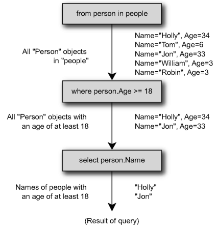Figure 11.1 A simple query expression broken down into the sequences and transformations involved
This example was straightforward to start with, but we’ll apply the same technique later to more complicated query expressions in order to understand them more easily. Some advanced operations involve more than one sequence as input, but it’s still a lot less to worry about than trying to understand the whole query in one go.
So, why are sequences so important? They’re the basis for a streaming model for data handling — one that allows us to fetch and process data only when we need it.
DEFERRED EXECUTION AND STREAMING
When the query expression shown in figure 11.1 is created, no data is processed. The original list of people isn’t accessed 70 Instead, a representation of the query is built up in memory. Delegate instances are used to represent the predicate testing for adulthood and the conversion from a person to that person’s name. The wheels only start turning when the resulting IEnumerable<string> is asked for its first element.
This aspect of LINQ is called deferred execution. When the first element of the result is requested, the Select transformation asks the Where transformation for its first element. The Where transformation asks the list for its first element, checks whether the predicate matches (which it does in this case), and returns that element back to Select. That in turn extracts the name and returns it as the result.
HAVEN'T WE SEEN THIS BEFORE? You may be getting a sense of deja vu here; I did mention all of this in chapter 10. But it’s such an important topic that it’s worth covering a second time, in more detail.
That’s a mouthful, but a sequence diagram makes it all much clearer. I’m going to collapse the calls to MoveNext and Current to a single fetch operation: it makes the diagram a lot simpler. Just remember that each time the fetch occurs, it’s effectively checking for the end of the sequence as well. Figure 11.2 shows the first few stages of our sample query expression in operation, when we print out each element of the result using a foreach loop.
As you can see in figure 11.2, only one element of data is processed at a time. If we decided to stop printing output after writing “Holly”, we’d never execute any of the operations on the other elements of the original sequence. Although several stages are involved here, processing data in a streaming manner like this is efficient and flexible. In particular, regardless of how much source data there is, you don’t need to know about more than one element at any one point in time.
This is a best-case scenario. There are times where in order to fetch the first result of a query, you have to evaluate all of the data from the source. We’ve already seen one example of this in the previous chapter: the Enumerable.Reverse method needs to fetch all the data available in order to return the last original element as the first element of the resulting sequence. This makes Reverse a buffering operation — which can have a huge effect on the efficiency (or even feasibility) of your overall operation. If
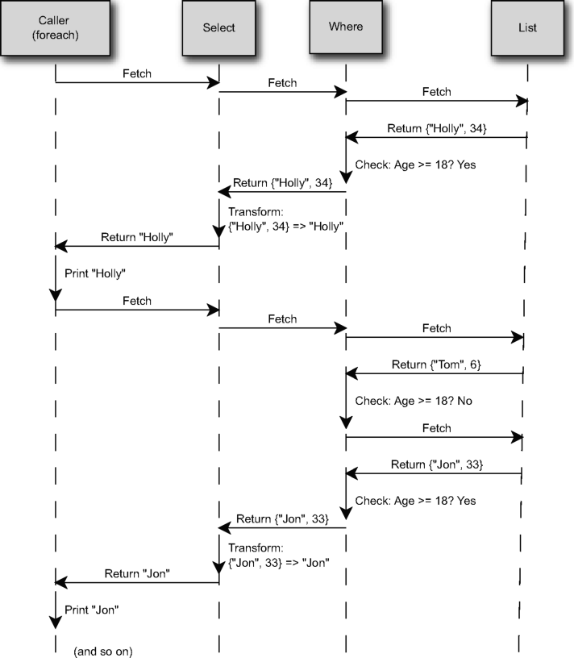you can’t afford to have all the data in memory at one time, you can’t use buffering operations.
Just as the streaming aspect depends on which operation you perform, some transformations take place as soon as you call them, rather than using deferred execution. This is called immediate execution. Generally speaking, operations that return another sequence (usually an IEnumerable<T> or IQueryable<T>) use deferred execution, whereas operations that return a single value use immediate execution.
The operations that are widely available in LINQ are known as the standard query operators — let’s take a brief look at them now.
STANDARD QUERY OPERATORS
LINQ’s standard query operators are a collection of transformations whose meanings are well understood. LINQ providers are encouraged to implement as many of these operators as possible, making the implementation obey the expected behavior. This is crucial in providing a consistent query framework across multiple data sources. Of course, some LINQ providers may expose more functionality, and some of the operators may not map appropriately to the target domain of the provider — but at least the opportunity for consistency is there.
IMPLEMENTATION-SPECIFIC DETAILS OF STANDARD OPERATORS Just because the standard query operators have common general meanings doesn’t mean they’ll work exactly the same for every implementation. For example, some LINQ providers may load the data for a whole query as soon as they need the first item — if you’re accessing a web service, that may make perfect sense. Likewise a query that works in LINQ to Objects may have subtly different semantics in LINQ to SQL. This doesn’t mean that LINQ has failed, just that you still need to consider which data source you’re accessing when you write a query. There’s still a massive advantage in having a single set of query operators and a consistent query syntax, even though it’s not a panacea.
C# 3 has support for some of the standard query operators built into the language via query expressions, but they can always be called manually. You may be interested to know that VB 9 has more of the operators present in the language: as ever, there’s a trade-off between the added complexity of including a feature in the language and the benefits that feature brings. Personally I think the C# team has done an admirable job: I’ve always been a fan of a relatively small language with a large library behind it.
OPERATOR OVERLOADING The word operator is used to describe both query operators (methods such as Select and Where) and the familiar operators such as addition, equality, and so on. Usually it should be obvious which one I mean from the context — if I’m talking about LINQ, operator will almost always refer to a method used as part of a query.
We’ll see some of these operators in our examples as we go through this chapter and the next, but I don’t aim to give a comprehensive guide to them here: this book is primarily about C#, not the whole of LINQ. You don’t need to know all of the operators in order to be productive in LINQ, but your experience is likely to grow over time. Appendix A gives a brief description of each of the standard query operators, and MSDN gives more details of each specific overload. When you run into a problem, check the list: if it feels like there ought to be a built-in method to help you, there probably is! That’s not always the case, though — I founded the MoreLINQ open source project to add some extra operators to LINQ to Objects (see http://mng.bz/ TuXP). Likewise the Reactive Extensions package (see http://mng.bz/R7ip) has additions for the pull model of LINQ to Objects as well as the push model we’ll look at later. If the standard operators fail you, check both projects before building your own
solution. It’s not a disaster if you do have to write your own operator, though; it can be a lot of fun. In chapter 12 I’ll give a few tips on this subject.
Having mentioned examples, it’s time to introduce the data model that most of the rest of the sample code in this chapter will use.
11.1.2 Defining the sample data model
In section 10.3.4 I gave a brief example of defect tracking as a real use for extension methods and lambda expressions. We’ll use the same idea for almost all of the sample code in this chapter — it’s a fairly simple model, but one that can be manipulated in many different ways to give useful information. Defect tracking is also a domain that most professional developers are all too familiar with, unfortunately.
Our fictional setting is SkeetySoft, a small software company with big ambition. The founders have decided to attempt to create an office suite, a media player, and an instant messaging application. After all, there are no big players in those markets, are there?
The development department of SkeetySoft consists of five people: two developers (Deborah and Darren), two testers (Tara and Tim), and a manager (Mary). There’s currently a single customer: Colin. The aforementioned products are SkeetyOffice, SkeetyMediaPlayer, and SkeetyTalk, respectively71 We’re going to look at defects logged during May 2010, using the data model shown in figure 11.3.
As you can see, we’re not recording a lot of data. In particular, there’s no real history to the defects, but there’s enough here to let us demonstrate the query expression features of C# 3. For the purposes of this chapter, all the data is stored in memory. We have a class named SampleData with properties AllDefects, AllUsers, AllProjects, and AllSubscriptions, which each return an appropriate type of IEnumerable<T>. The Start and End properties return DateTime instances for the start and end of May respectively, and there are nested classes Users and Projects within SampleData to provide easy access to a particular user or project. The one type that may not be immediately obvious is NotificationSubscription: the idea behind this is to send an email to the specified address every time a defect is created or changed in the relevant project.
There are 41 defects in the sample data, created using C# 3 object initializers. All of the code is available on the book’s website, but I won’t include the sample data itself in this chapter.
Now that the preliminaries are dealt with, let’s get cracking with some queries!
11.2 Simple beginnings: selecting elements
Having brought up some general LINQ concepts beforehand, I’ll introduce the concepts that are specific to C# 3 as they arise in the course of the chapter. We’re going to start with a simple query (even simpler than the one we saw earlier) and work up to
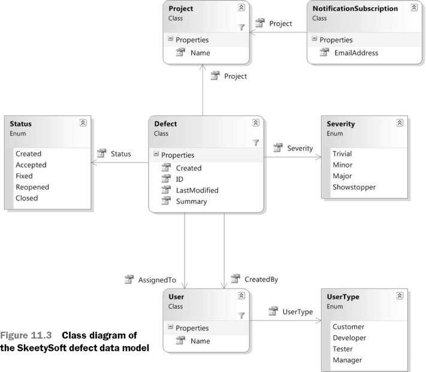some complicated ones, not only building up your understanding of what the C# 3 compiler is doing, but also teaching you how to read LINQ code.
All of our examples will follow the pattern of defining a query and then printing the results to the console. We’re not interested in binding queries to data grids or anything like that — it’s all important, but not directly relevant to learning C# 3.
We can use a simple expression that just prints out all our users as the starting point for examining what the compiler is doing behind the scenes and learning about range variables.
11.2.1 Starting with a source and ending with a selection
Every query expression in C# 3 starts off in the same way — stating the source of a sequence of data:
from element in source
The element part is just an identifier, with an optional type name before it. Most of the time you won’t need the type name, and we won’t have one for our first example. The source part is just a normal expression. Lots of different things can happen after that first clause, but sooner or later you always end with a select clause or a group
clause. We’ll start off with a select clause to keep things nice and simple. The syntax for a select clause is also easy:
select expression
The select clause is known as a projection. Combining the two together and using the most trivial expression we can think of gives a simple (and practically useless) query, as shown in the following listing.
Listing 11.1 Trivial query to print the list of users
var query = from user in SampleData.AllUsers select user;
foreach (var user in query)
{
Console.WriteLine(user);
}
The query expression is the part highlighted in bold. I’ve overridden ToString for each of the entities in the model, so the results of listing 11.1 are as follows:
User: Tim Trotter (Tester)
User: Tara Tutu (Tester)
User: Deborah Denton (Developer)
User: Darren Dahlia (Developer)
User: Mary Malcop (Manager)
User: Colin Carton (Customer)
You may be wondering how useful this is as an example: after all, we could’ve just used SampleData.AllUsers directly in our foreach statement. But we’ll use this query expression — trivial though it is — to introduce two new concepts. First we’ll look at the general nature of the translation process the compiler uses when it encounters a query expression, and then we’ll discuss range variables.
11.2.2 Compiler translations as the basis of query expressions
The C# 3 query expression support is based on the compiler translating query expressions into normal C# code. It does this in a mechanical manner that doesn’t try to understand the code, apply type inference, check the validity of method calls, or any of the normal business of a compiler. That’s all done later, after the translation. In many ways, this first phase can be regarded as a preprocessor step. The compiler translates listing 11.1 into listing 11.2 before doing the real compilation.
Listing 11.2 The query expression of listing 11.1 translated into a method call
var query = SampleData.AllUsers.Select(user => user);
foreach (var user in query)
{
Console.WriteLine(user);
The C# 3 compiler translates the query expression into exactly that code before properly compiling it further. In particular, it doesn’t assume that it should use Enumerable.Select, or that List<T> will contain a method called Select. It merely translates the code and then lets the next phase of compilation deal with finding an appropriate method — whether as a straightforward member or as an extension method.3 The parameter can be a suitable delegate type or an Expression<T> for an appropriate type T.
This is where it’s important that lambda expressions can be converted into both delegate instances and expression trees. All the examples in this chapter will use delegates, but we’ll see how expression trees are used when we look at the other LINQ providers in chapter 12. When I present the signatures for some of the methods called by the compiler later on, remember that these are just the ones called in LINQ to Objects — whenever the parameter is a delegate type (which most of them are), the compiler will use a lambda expression as the argument, and then try to find a method with a suitable signature.
It’s also important to remember that wherever a normal variable (such as a local variable within the method) appears within a lambda expression after translation has been performed, it’ll become a captured variable in the same way that we saw back in chapter 5. This is normal lambda expression behavior — but unless you understand which variables will be captured, you could easily be confused by the results of your queries.
The language specification gives details of the query expression pattern, which must be implemented for all query expressions to work, but this isn’t defined as an interface as you might expect. It makes a lot of sense: it allows LINQ to be applied to interfaces such as IEnumerable<T> using extension methods. This chapter tackles each element of the query expression pattern, one at a time. If you want to see exactly how the language specification defines each translation, see section 7.16 of the C# 4 spec.
Listing 11.3 proves how the compiler translation works: it provides a dummy implementation of both Select and Where, with Select as a normal instance method and Where as an extension method. Our original simple query expression only contained a select clause, but I’ve included the where clause to show both kinds of methods in use. I’ve used a full listing rather than a snippet as extension methods can only be declared in top-level static classes.
Listing 11.3 Compiler translation calling methods on a dummy LINQ implementation
static class Extensions {
public static Dummy<T> Where<T>(this Dummy<T> dummy,
Func<T,bool> predicate)
{
Console.WriteLine ("Where called"); return dummy;
}
}
class Dummy<T>
{
public Dummy<U> Select<U>(Func<T,U> selector)
{
Console.WriteLine ("Select called"); return new Dummy<U>();
}
}
class TranslationExample {
static void Main()
{
var source = new Dummy<string>(); var query = from dummy in source
where dummy.ToString() == "Ignored" select "Anything";
}
}
Running listing 11.3 prints “Where called” and then “Select called” just as we’d expect, because the query expression has been translated into this code:
var query = source.Where(dummy => dummy.ToString() == "Ignored")
.Select(dummy => "Anything");
Of course, we’re not doing any querying or transformation here, but it shows how the compiler is translating our query expression. If you’re puzzled as to why we’ve selected "Anything" instead of just dummy, it’s because a projection of just dummy (which is a do-nothing projection) would be removed by the compiler in this particular case. We’ll look at that later in section 11.3.2, but for the moment the important idea is the overall type of translation involved. We only need to learn what translations the C# compiler will use, and then we can take any query expression, convert it into the form that doesn’t use query expressions, and then look at what it’s doing from that point of view.
Note how we don’t implement IEnumerable<T> at all in Dummy<T>. The translation from query expressions to normal code doesn’t depend on it, but in practice most LINQ providers will expose data either as IEnumerable<T> or IQueryable<T> (which we’ll look at in chapter 12). The fact that the translation doesn’t depend on any particular types but merely on the method names and parameters is a sort of compiletime form of duck typing. This is similar to the same way that the collection initializers presented in chapter 8 find a public method called Add using normal overload resolution rather than using an interface containing an Add method with a particular signature. Query expressions take this idea one step further — the translation occurs early in the compilation process in order to allow the compiler to pick either instance
methods or extension methods. You could even consider the translation to be the work of a separate preprocessing engine. You may think I’m banging on about this a lot, but it's all part of removing the mist that sometimes shrouds LINQ. If you rewrite a query expression as a series of method calls, effectively doing what the compiler would’ve done, you won’t change the performance and your query won’t behave any differently. They’re just two different ways of representing the same code.
WHY from ... where ... select INSTEAD OF select ... from ... where? Many developers find the order of the clauses in query expressions confusing to start with. It looks just like SQL — except back to front. If you look back to the translation into methods, you’ll see the main reason behind it. The query expression is processed in the same order that it’s written: we start with a source in the from clause, then filter it in the where clause, then project it in the select clause. Another way of looking at it is to consider the diagrams throughout this chapter. The data flows from top to bottom, and the boxes appear in the diagram in the same order as their corresponding clauses appear in the query expression. Once you get over any initial discomfort due to unfamiliarity, you may find this approach appealing — I do. You may even find yourself asking the equivalent question about SQL.
So, we know that a source level translation is involved — but there’s another crucial concept to understand before we move on any further.
11.2.3 Range variables and nontrivial projections
Let’s look back at our original query expression in more depth. We haven’t examined the identifier in the from clause or the expression in the select clause. Figure 11.4 shows the query expression again, with each part labeled to explain its purpose.
The contextual keywords are easy to explain — they specify to the compiler what we want to do with the data. Likewise the source expression is just a normal C# expression — a property in this case, but it could just as easily have been a method call or a variable.
The tricky bits are the range variable declaration and the projection expression. Range variables aren’t like any other type of variable. In some ways they’re not variables at all! They’re only available in query expressions, and they’re effectively present to propagate context from one expression to another.
They represent one element of a particular sequence at a time, and they’re used in the compiler translation to allow other
expressions to be turned into lambda Figure 11.4 a simple query expression broken expressions easily. down into its constituent parts
SampleData.AllUsers.Select(user => user)
The left side of the lambda expression — the part that provides the parameter name — comes from the range variable declaration. The right side comes from the select clause. The translation is as simple as that (in this case). It all works out okay because we’ve used the same name on both sides. Suppose we’d written the query expression like this:
from user in SampleData.AllUsers select person
In that case, the translated version would’ve been SampleData.AllUsers.Select(user => person)
At that point the compiler would’ve complained because it wouldn’t have known what person referred to. Now that we know how simple the process is, it becomes easier to understand a query expression that has a slightly more complicated projection. The following listing prints out just the names of our users.
Listing 11.4 Query selecting just the names of the users
IEnumerable<string> query = from user in SampleData.AllUsers
select user.Name;
foreach (string name in query)
{
Console.WriteLine(name);
}
This time we’re using user.Name as the projection, and the result is a sequence of strings, not of User objects. (I’ve used an explicitly typed variable to emphasize this point.) The translation of the query expression follows the same rules as before, and becomes
SampleData.AllUsers.Select(user => user.Name)
The compiler allows this, because the chosen Select extension method from Enumerable has this signature:72
static IEnumerable<TResult> Select<TSource,TResult>
(this IEnumerable<TSource> source,
Func<TSource,TResult> selector)
The type inference described in chapter 9 kicks in, converting the lambda expression into a Func<TSource,TResult>. First it infers that TSource is User due to the type of SampleData.AllUsers. At that point it knows about the parameter type for the lambda expression, so it can resolve user.Name as a property access expression returning type string, thus inferring that TResult is string. This is why lambda expressions allow implicitly typed parameters, and why there are such complicated type inference rules: these are the gears and pistons of the LINQ engine.
WHY DO YOU NEED TO KNOW ALL THIS? You can almost ignore what’s going on with range variables a lot of the time. You may have seen many, many queries and understood what they achieve without ever knowing about what’s going on behind the scenes. That’s fine for when things are working (as they tend to with examples in tutorials), but when things go wrong, it pays to know about the details. If you have a query expression that won’t compile because the compiler is complaining that it doesn’t know about a particular identifier, you should look at the range variables involved.
So far we’ve only seen implicitly typed range variables. What happens when we include a type in the declaration? The answer lies in the Cast and Of Type standard query operators.
11.2.4 Cast, OfType, and explicitly typed range variables
Most of the time, range variables can be implicitly typed; you’re likely to be working with generic collections where the specified type is all you need. What if that weren’t the case, though? What if we had an ArrayList, or perhaps an object[] that we wanted to perform a query on? It would be a pity if LINQ couldn’t be applied in those situations. Fortunately, there are two standard query operators that come to the rescue: Cast and OfType. Only Cast is supported directly by the query expression syntax, but we’ll look at both in this section.
The two operators are similar: both take an arbitrary untyped sequence (they’re extension methods on the nongeneric IEnumerable type) and return a strongly typed sequence. Cast does this by casting each element to the target type (and failing on any element that isn’t of the right type) and OfType does a test first, skipping any elements of the wrong type.
Listing 11.5 demonstrates both of these operators, used as simple extension methods from Enumerable. Just for a change, we won’t be using our SkeetySoft defect system for our sample data — after all, that’s all strongly typed! Instead, we’ll just use two ArrayList objects.
Listing 11.5 Using Cast and OfType to work with weakly typed collections
ArrayList list = new ArrayList { "First", "Second", "Third" }; IEnumerable<string> strings = list.Cast<string>(); foreach (string item in strings)
{
Console.WriteLine(item);
}
list = new ArrayList { 1, "not an int", 2, 3 }; IEnumerable<int> ints = list.OfType<int>(); foreach (int item in ints)
{
Console.WriteLine(item);
}
The first list contains only strings, so we’re safe to use Cast<string> to obtain a sequence of strings. The second list has mixed content, so in order to fetch just the integers from it we use OfType<int>. If we’d used Cast<int> on the second list, an exception would’ve been thrown when we tried to cast “not an int” to int. Note that this would only have happened after we’d printed “1” — both operators stream their data, converting elements as they fetch them.
IDENTITY, REFERENCE, AND UNBOXING CONVERSIONS ONLY The behavior of Cast changed subtly in .NET 3.5 SP1. In the original .NET 3.5, it would perform more conversions — so using Cast<int> on a List<short> would convert each short into a int as it was fetched. In service pack 1 this will throw an exception. If you want any conversion other than a reference conversion or an unboxing conversion (or the no-op identity conversion), use a Select projection instead. OfType only performs these conversions too, although it doesn’t throw an exception if they fail.
When you introduce a range variable with an explicit type, the compiler uses a call to Cast to make sure the sequence used by the rest of the query expression is of the appropriate type. The following listing shows this, with a projection using the Substring method to prove that the sequence generated by the from clause is a sequence of strings.
Listing 11.6 Using an explicitly typed range variable to automatically call Cast
ArrayList list = new ArrayList { "First", "Second", "Third"}; var strings = from string entry in list
select entry.Substring(0, 3); foreach (string start in strings)
{
Console.WriteLine(start);
}
The output of listing 11.6 is “Fir,” “Sec,” “Thi” — but what’s more interesting is the translated query expression:
list.Cast<string>().Select(entry => entry.Substring(0,3));
Without the cast, we wouldn’t be able to call Select at all, because the extension method is only defined for IEnumerable<T> rather than IEnumerable. Even when you’re using a strongly typed collection, you might still want to use an explicitly typed range variable. For instance, you could have a collection that’s defined to be a List<ISomeInterface> but you know that all the elements are instances of MyImplementation. Using a range variable with an explicit type of MyImplementation allows you to access all the members of MyImplementation without manually inserting casts all over the code.
We’ve covered a lot of important conceptual ground so far, even though we haven’t achieved any impressive results. To recap the most important points briefly:
■ LINQ is based on sequences of data, which are streamed wherever possible.
■ Creating a query doesn’t usually execute it: most operations use deferred execution.
■ Query expressions in C# 3 involve a preprocessing phase that converts the expression into normal C#, which is then compiled properly with all the normal rules of type inference, overloading, lambda expressions, and so forth.
■ The variables declared in query expressions don’t act like anything else: they are range variables, which allow you to refer to data consistently within the query expression.
I know that there’s a lot of somewhat abstract information to take in. Don’t worry if you’re beginning to wonder if LINQ is worth all this trouble. I promise you that it is. With a lot of the groundwork out of the way, we can start doing genuinely useful things — such as filtering our data, and then ordering it.
11.3 Filtering and ordering a sequence
You may be surprised to learn that these two operations are some of the simplest to explain in terms of compiler translations. This is because they always return a sequence with the same element type as their input, which means we don’t need to worry about any new range variables being introduced. It also helps that we’ve seen the corresponding extension methods in chapter 10.
11.3.1 Filtering using a where clause
It’s remarkably easy to understand the where clause. The syntax is just
where filter-expression
The compiler translates this into a call to the Where method with a lambda expression, which uses the appropriate range variable as the parameter and the filter expression as the body. The filter expression is applied as a predicate to each element of the incoming stream of data, and only those that return true are present in the resulting sequence. Using multiple where clauses results in multiple chained Where calls — only elements that match all of the predicates are part of the resulting sequence. The following listing demonstrates a query expression that finds all open defects assigned to Tim.
Listing 11.7 Query expression using multiple where clauses
User tim = SampleData.Users.TesterTim;
var query = from defect in SampleData.AllDefects where defect.Status != Status.Closed where defect.AssignedTo == tim
select defect.Summary;
foreach (var summary in query)
{
Console.WriteLine(summary);
}
The query expression in listing 11.7 is translated into this:
SampleData.AllDefects.Where(defect => defect.Status != Status.Closed) .Where(defect => defect.AssignedTo == tim)
.Select(defect => defect.Summary)
The output of listing 11.7 is as follows:
Installation is slow Subtitles only work in Welsh Play button points the wrong way Webcam makes me look bald
Network is saturated when playing WAV file
Of course, we could write a single where clause that combined the two conditions as an alternative to using multiple where clauses. In some cases this may improve performance, but it’s worth bearing the readability of the query expression in mind, too. Once more, this is likely to be fairly subjective. My personal inclination is to combine conditions that are logically related but keep others separate. In this case, both parts of the expression deal directly with a defect (as that’s all our sequence contains), so it’d be reasonable to combine them. As before, it’s worth trying both forms to see which is clearer.
In a moment, we’ll start trying to apply some ordering rules to our query, but first we should look at a small detail to do with the select clause.
11.3.2 Degenerate query expressions
While we have a fairly simple translation to work with, let’s revisit a point I glossed over earlier in section 11.2.2 when I first introduced the compiler translations. So far, all our translated query expressions have included a call to Select. What happens if our select clause does nothing, effectively returning the same sequence as it’s given? The answer is that the compiler removes that call to Select — but only if there are other operations being performed within the query expression. For example, the following query expression just selects all the defects in the system:
from defect in SampleData.AllDefects select defect
This is known as a degenerate query expression. The compiler deliberately generates a call to Select even though it seems to do nothing:
SampleData.AllDefects.Select(defect => defect)
There’s a big difference between this and using SampleData.AllDefects as a simple expression though. The items returned by the two sequences are the same, but the result of the Select method is just the sequence of items, not the source itself. The result of a query expression is never the same object as the source data, unless the
LINQ provider has been poorly coded. This can be important from a data integrity point of view — a provider can return a mutable result object, knowing that changes to the returned data sequence won’t affect the master even in the face of a degenerate query.
When other operations are involved, there’s no need for the compiler to keep noop select clauses. For example, suppose we change the query expression in listing 11.7 to select the whole defect rather than just the name:
from defect in SampleData.AllDefects where defect.Status != Status.Closed
where defect.AssignedTo == SampleData.Users.TesterTim select defect
We now don’t need the final call to Select, so the translated code is just this:
SampleData.AllDefects.Where(defect => defect.Status != Status.Closed) .Where(defect => defect.AssignedTo == tim)
These rules rarely get in the way when you’re writing query expressions, but they can cause confusion if you decompile the code with a tool such as Reflector — it can be surprising to see the Select call go missing for no apparent reason.
With that knowledge in hand, let’s improve our query so that we know what Tim should work on next.
11.3.3 Ordering using an orderby clause
It’s not uncommon for developers and testers to be asked to work on the most critical defects before they tackle more trivial ones. We can use a simple query to tell Tim the order in which he should tackle the open defects assigned to him. The following listing does exactly this using an orderby clause, printing out all the details of the defects, in descending order of priority.
Listing 11.8 Sorting by the severity of a defect, from high to low priority
User tim = SampleData.Users.TesterTim;
var query = from defect in SampleData.AllDefects where defect.Status != Status.Closed where defect.AssignedTo == tim orderby defect.Severity descending
select defect;
foreach (var defect in query)
{
Console.WriteLine("{0}: {1}", defect.Severity, defect.Summary);
}
The output of listing 11.8 shows that we’ve sorted the results appropriately:
Showstopper: Webcam makes me look bald
Major: Subtitles only work in Welsh
Major: Play button points the wrong way
Minor: Network is saturated when playing WAV file
Trivial: Installation is slow
You can see that we have two major defects. Which order should those be tackled in? Currently no clear ordering is involved. Let’s change the query so that after sorting by severity in descending order, we sort by last modified time in ascending order. This means that Tim will test the defects that were fixed a long time ago before those addressed more recently. This just requires an extra expression in the orderby clause, as shown in the following listing.
Listing 11.9 Ordering by severity and then last modified time
User tim = SampleData.Users.TesterTim;
var query = from defect in SampleData.AllDefects where defect.Status != Status.Closed where defect.AssignedTo == tim
orderby defect.Severity descending, defect.LastModified select defect;
foreach (var defect in query)
{
Console.WriteLine("{0}: {1} ({2:d})",
defect.Severity, defect.Summary, defect.LastModified);
}
The results of listing 11.9 are shown here. Note how the order of the two major defects has been reversed:
Showstopper: Webcam makes me look bald (05/27/2010)
Major: Play button points the wrong way (05/17/2010)
Major: Subtitles only work in Welsh (05/23/2010)
Minor: Network is saturated when playing WAV file (05/31/2010)
Trivial: Installation is slow (05/15/2010)
So, that’s what the query expression looks like — but what does the compiler do? It simply calls the OrderBy and ThenBy methods (or OrderByDescending/ThenByDescending for descending orders). Our query expression is translated into
SampleData.AllDefects.Where(defect => defect.Status != Status.Closed) .Where(defect => defect.AssignedTo == tim) .OrderByDescending(defect => defect.Severity) .ThenBy(defect => defect.LastModified)
Now that we’ve seen an example, we can look at the general syntax of orderby clauses. They’re basically the contextual keyword orderby followed by one or more orderings. An ordering is just an expression (which can use range variables) optionally followed by ascending or descending, which have the obvious meanings. (The default order is ascending.) The translation for the primary ordering is a call to OrderBy or OrderBy-Descending, followed by as many calls to ThenBy or ThenByDescending as you have subsequent orderings.
The difference between OrderBy and ThenBy is simple: OrderBy assumes it has primary control over the ordering, whereas ThenBy understands that it’s subservient to one or more previous orderings. For LINQ to Objects, ThenBy is only defined as an
extension method for IOrderedEnumerable<T>, which is the type returned by OrderBy (and by ThenBy itself, to allow further chaining).
It’s important to note that although you can use multiple orderby clauses, each one will start with its own OrderBy or OrderByDescending clause, which means the last one will effectively win. I’ve yet to see a situation in which this is useful unless you do something else to the query between orderby clauses: you should almost always use a single clause containing multiple orderings instead.
As noted in chapter 10, applying an ordering requires all the data to be loaded (at least for LINQ to Objects) — you can’t order an infinite sequence, for example. Hopefully the reason for this is obvious: you don’t know whether you’ll see something that should come at the start of the resulting sequence until you’ve seen all the elements.
We’re about halfway through learning about query expressions, and you may be surprised that we haven’t seen any joins yet. Obviously they’re important in LINQ just as they’re important in SQL, but they’re also complicated. I promise we’ll get to them in due course, but in order to introduce just one new concept at a time, we’ll detour via let clauses first. That way we can learn about transparent identifiers before we hit joins.
11.4 Let clauses and transparent identifiers
Most of the rest of the operators we still need to look at involve transparent identifiers. Just like range variables, you can get along perfectly well without understanding transparent identifiers, if you only want to have a fairly shallow grasp of query expressions. If you’ve bought this book, I hope you want to know C# at a deeper level, which will (among other things) enable you to look compilation errors in the face and know what they’re talking about.
You don’t need to know everything about transparent identifiers, but I’ll teach you enough so that if you see one in the language specification you won’t feel like running and hiding. You’ll also understand why they’re needed at all — and that’s where an example will come in handy. The let clause is the simplest transformation available that uses transparent identifiers.
11.4.1 Introducing an intermediate computation with let
A let clause introduces a new range variable with a value that can be based on other range variables. The syntax is as easy as pie:
let identifier = expression
To explain this operator in terms that don’t use any other complicated operators, I’m going to resort to a very artificial example. Suspend your disbelief, and imagine that finding the length of a string is a costly operation. Now imagine that we had a completely bizarre system requirement to order our users by the lengths of their names, and then display the name and its length. Yes, I know it’s unlikely. Listing 11.10 shows one way of doing this without a let clause.
Listing 11.10 Sorting by the lengths of user names without a let clause
var query = from user in SampleData.AllUsers orderby user.Name.Length select user.Name;
foreach (var name in query)
{
Console.WriteLine("{0}: {1}", name.Length, name);
}
That works fine, but it uses the dreaded Length property twice — once to sort the users, and once in the display side. Surely not even the fastest supercomputer could cope with finding the lengths of six strings twice! No, we need to avoid that redundant computation. We can do so with the let clause, which evaluates an expression and introduces it as a new range variable. Listing 11.11 achieves the same result as listing 11.10, but only uses the Length property once per user.
Listing 11.11 Using a let clause to remove redundant calculations
var query = from user in SampleData.AllUsers let length = user.Name.Length
orderby length
select new { Name = user.Name, Length = length }; foreach (var entry in query)
{
Console.WriteLine("{0}: {1}", entry.Length, entry.Name);
}
Listing 11.11 introduces a new range variable called length, which contains the length of the user’s name (for the current user in the original sequence). We then use that new range variable for both sorting and the projection at the end. Have you spotted the problem yet? We need to use two range variables, but the lambda expression passed to Select only takes one parameter! This is where transparent identifiers come on the scene.
11.4.2 Transparent identifiers
In listing 11.11, we have two range variables involved in the final projection, but the Select method only acts on a single sequence. How can we combine the range variables? The answer is to create an anonymous type that contains both variables, and then to apply a clever translation to make it look as if we actually have two parameters for the select and orderby clauses. Figure 11.5 shows the sequences involved.
The let clause achieves its objectives by using another call to Select, creating an anonymous type for the resulting sequence, and effectively creating a new range variable whose name can never be seen or used in source code. Our query expression from listing 11.11 is translated into something like this:
SampleData.AllUsers
.Select(user => new { user, length = user.Name.Length })
.OrderBy(z => z.length)
.Select(z => new { Name = z.user.Name, Length = z.length })
Each part of the query has been adjusted appropriately: where the original query expression referenced user or length directly, if the reference occurs after the let clause, it’s replaced by z.user or z.length. The choice of z as the name here is arbitrary — it’s all hidden by the compiler.
ANONYMOUS TYPES ARE AN IMPLEMENTATION DETAIL Strictly speaking, it’s up to the C# compiler implementation to decide how to group together different range variables to make transparent identifiers work. The Microsoft implementation uses anonymous types, and the specification shows the translations in those terms as well — so I’ve followed the trend. Even if another compiler chose a different approach, it shouldn’t affect the results.
If you consult the language specification about let clauses (section 7.16.2.4), you’ll see that the translation it describes is from one query expression to another. It uses an asterisk (*) to represent the transparent identifier introduced. The transparent identifier is then erased as a final step in translation. I won’t use that notation in this chapter, as it’s hard to come to grips with and unnecessary at the level of detail we’re going
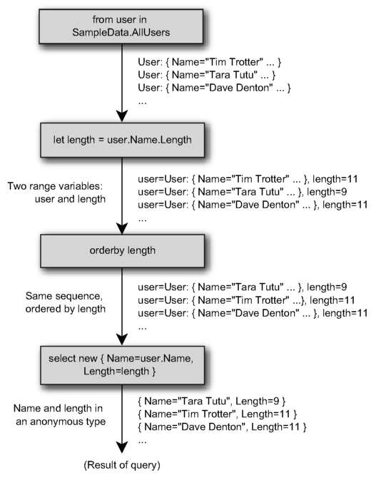Figure 11.5 Sequences involved in listing 11.11, where a let clause introduces the length range variable
into. Hopefully with this background, the specification won’t be quite as impenetrable as it might be otherwise, should you need to refer to it.
The good news is that we can now look at the rest of the translations making up C# 3’s query expression support. I won’t go into the details of every transparent identifier introduced, but I’ll mention the situations in which they occur. Let’s look at the support for joins first.
11.5 Joins
If you’ve ever read anything about SQL, you probably have an idea what a database join is. It takes two tables (or views, or table-valued functions, and so forth) and creates a result by matching one set of rows against another set of rows. A LINQ join is similar, except it works on sequences. Three types of join are available, although not all of them use the join keyword in the query expression. We’ll start with the join that’s closest to a SQL inner join.
11.5.1 Inner joins using join clauses
Inner joins involve two sequences. One key selector expression is applied to each element of the first sequence and another key selector (which may be totally different) is applied to each element of the second sequence. The result of the join is a sequence of all the pairs of elements where the key from the first element is the same as the key from the second element.
TERMINOLOGY CLASH! INNER AND OUTER SEQUENCES The MSDN documentation for the Join method used to evaluate inner joins calls the sequences involved inner and outer, and the real method parameters are based on these names too. This has nothing to do with inner joins and outer joins — it’s just a way of differentiating between the sequences. You can think of them as first and second, left and right, Bert and Ernie — anything you like that helps you. I’ll use left and right for this chapter, so that it's clear which is which in the diagram. Usually, outer corresponds with left and inner corresponds with right.
The two sequences can be anything you like: the right sequence can even be the same as the left sequence, if that’s useful. (Imagine finding pairs of people who were born on the same day, for example.) The only thing that matters is that the two key selector expressions must result in the same type of key73 You can’t join a sequence of people to a sequence of cities by saying that the birth date of the person is the same as the population of the city — it doesn’t make any sense. But one important possibility is to use an anonymous type for the key: this works because anonymous types implement equality and hashing appropriately. If you need to effectively create a multicolumn key, anonymous types are the way to go. This is also applicable for the grouping operations we’ll see later.
The syntax for an inner join looks more complicated than it is:
[query selecting the left sequence]
join right-range-variable in right-sequence
on left-key-selector equals right-key-selector
Seeing equals as a contextual keyword rather than using symbols can be disconcerting, but it makes it easier to distinguish the left key selector from the right key selector. Often (but not always) at least one of the key selectors is a trivial one that just selects the exact element from that sequence. The contextual keyword is used by the compiler to separate the key selectors into different lambda expressions. The ability to obtain the keys for each value (on each side of the join) is important both for performance in LINQ to Objects and for the feasibility of translating the query into other forms such as SQL.
Let’s look at an example from our defect system. Suppose we’d just added the notification feature, and wanted to send the first batch of emails for all the existing defects. We need to join the list of notifications against the list of defects, where their projects match. The following listing performs just such a join.
Listing 11.12 Joining the defects and notification subscriptions based on project
var query = from defect in SampleData.AllDefects
join subscription in SampleData.AllSubscriptions on defect.Project equals subscription.Project select new { defect.Summary, subscription.EmailAddress };
foreach (var entry in query)
{
Console.WriteLine("{0}: {1}", entry.EmailAddress, entry.Summary);
}
Listing 11.12 will show each of the media player defects twice — once for media-bugs@skeetysoft.com and once for theboss@skeetysoft.com (because the boss really cares about the media player project).
In this particular case we could easily have made the join the other way around, reversing the left and right sequences. The result would’ve been the same entries but in a different order. The implementation in LINQ to Objects returns entries such that all the pairs using the first element of the left sequence are returned (in the order of the right sequence), then all the pairs using the second element of the left sequence, and so on. The right sequence is buffered, but the left sequence is streamed — so if you want to join a massive sequence to a tiny one, it’s worth using the tiny one as the right sequence if you can. The operation is still deferred: it waits until you ask for the first pair before reading any data from either sequence. At that point, it reads the entirety of the right sequence in order to build a lookup from keys to the values producing those keys. After that, it doesn’t need to read from the right sequence again, and can begin to iterate over the left sequence, yielding pairs appropriately.
One error that might trip you up is putting the key selectors the wrong way around. In the left key selector, only the left sequence range variable is in scope; in the
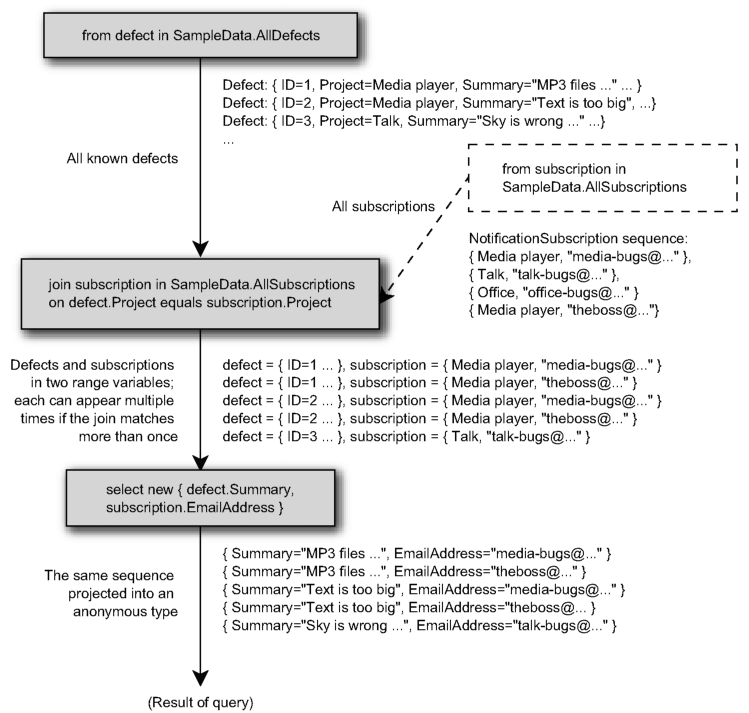Figure 11.6 The join from listing 11.12 in graphical form, showing two different sequences (defects and subscriptions) used as data sources
right key selector, only the right range variable is in scope. If you reverse the left and right sequences, you have to reverse the left and right key selectors too. Fortunately the compiler knows that this is a common mistake and suggests the appropriate course of action.
Just to make it more obvious what’s going on, figure 11.6 shows the sequences as they’re processed.
Often you want to filter the sequence, and filtering before the join occurs is more efficient than filtering it afterward. At this stage the query expression is simpler if the left sequence is the one requiring filtering. For instance, if we wanted to show only defects that are closed, we could use this query expression:
from defect in SampleData.AllDefects where defect.Status == Status.Closed join subscription in SampleData.AllSubscriptions
on defect.Project equals subscription.Project select new { defect.Summary, subscription.EmailAddress }
We can perform the same query with the sequences reversed, but it’s messier:
from subscription in SampleData.AllSubscriptions join defect in (from defect in SampleData.AllDefects where defect.Status == Status.Closed select defect) on subscription.Project equals defect.Project select new { defect.Summary, subscription.EmailAddress }
Note how you can use one query expression inside another — the language specification describes many of the compiler translations in these terms. Nested query expressions are useful but hurt readability as well: it’s often worth looking for an alternative, or using a variable for the sequence on the right in order to make the code clearer.
ARE INNER JOINS USEFUL IN LINQ TO OBJECTS? Inner joins are used all the time
in SQL. They’re effectively the way that we navigate from one entity to a related one, usually joining a foreign key in one table to the primary key on another. In the object-oriented model, we tend to navigate from one object to another via references. For instance, retrieving the summary of a defect and the name of the user assigned to work on it would require a join in SQL — in C# we often just use a chain of properties. If we’d had a reverse association from Project to the list of NotificationSubscription objects associated with it in our model, we wouldn’t have needed the join to achieve the goal of this example, either. That’s not to say that inner joins aren’t useful sometimes even within object-oriented models — but they don’t naturally occur nearly as often as in relational models.
Inner joins are translated by the compiler into calls to the Join method, like this:
leftSequence.Join(rightSequence,
leftKeySelector,
rightKeySelector,
resultSelector)
The signature of the overload used for LINQ to Objects is as follows (this is the real signature, with the real parameter names — hence the inner and outer references):
static IEnumerable<TResult> Join<TOuter,TInner,TKey,TResult> ( this IEnumerable<TOuter> outer,
IEnumerable<TInner> inner,
Func<TOuter,TKey> outerKeySelector,
Func<Inner,TKey> innerKeySelector,
Func<TOuter,TInner,TResult> resultSelector
)
The first three parameters are self-explanatory when you’ve remembered to treat inner and outer as right and left, respectively, but the last one is more interesting. It’s a projection from two elements (one from the left sequence and one from the right sequence) into a single element of the resulting sequence. When the join is followed by anything other than a select clause, the C# 3 compiler introduces a transparent
identifier in order to make the range variables used in both sequences available for later clauses, and creates an anonymous type and simple mapping to use for the resultSelector parameter.
But if the next part of the query expression is a select clause, the projection from the select clause is used directly as the resultSelector parameter — there’s no point in creating a pair and then calling Select when you can do the transformation in one step. You can still think about it as a ‘join” step followed by a “select” step despite the two being squished into a single method call. This leads to a more consistent mental model in my view, and one that’s easier to reason about. Unless you’re looking at the generated code, just ignore the optimization the compiler is performing for you.
The good news is that having learned about inner joins, our next type of join is much easier to approach.
11.5.2 Group joins with join ... into clauses
We’ve seen that the result sequence from a normal join clause consists of pairs of elements, one from each of the input sequences. A group join looks similar in terms of the query expression but has a significantly different outcome. Each element of a group join result consists of an element from the left sequence (using its original range variable) and also a sequence of all the matching elements of the right sequence, exposed as a new range variable specified by the identifier coming after into in the join clause.
Let’s change our previous example to use a group join. Listing 11.13 again shows all the defects and the notifications required for each of them, but breaks them out in a per-defect manner. Pay particular attention to how we’re displaying the results with a nested foreach loop.
Listing 11.13 Joining defects and subscriptions with a group join
var query = from defect in SampleData.AllDefects
join subscription in SampleData.AllSubscriptions on defect.Project equals subscription.Project into groupedSubscriptions select new { Defect = defect,
Subscriptions = groupedSubscriptions };
foreach (var entry in query)
{
Console.WriteLine(entry.Defect.Summary); foreach (var subscription in entry.Subscriptions)
{
Console.WriteLine (" {0}", subscription.EmailAddress);
}
}
The Subscriptions property of each entry is the embedded sequence of subscriptions matching that entry’s defect. Figure 11.7 shows how the two initial sequences are combined.
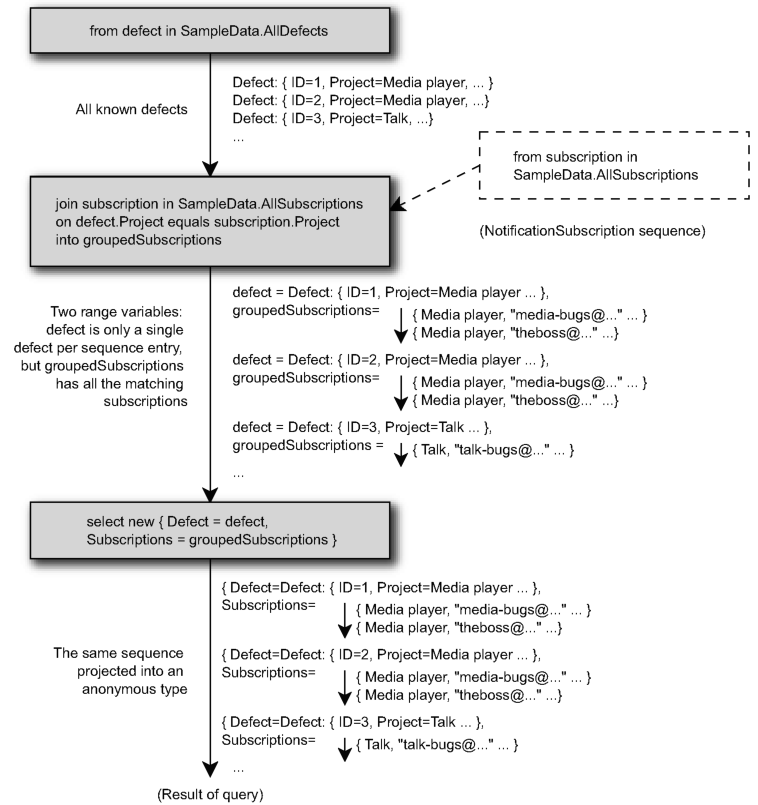Figure 11.7 Sequences involved in the group join from listing 11.13. The short arrows indicate embedded sequences within the result entries. In the output, some entries contain multiple email addresses for the same defect.
One important difference between an inner join and a group join — and between a group join and normal grouping — is that a group join has a one-to-one correspondence between the left sequence and the result sequence, even if some of the elements in the left sequence don’t match any elements of the right sequence. This can be important, and is sometimes used to simulate a left outer join from SQL. The embedded sequence is empty when the left element doesn’t match any right elements. As with an inner join, a group join buffers the right sequence but streams the left one.
Listing 11.14 shows an example of this, counting the number of defects created on each day in May. It uses a DateTimeRange type to generate a sequence of dates in May
as the left sequence, and a projection that calls Count() on the embedded sequence in the result of the group join.74
Listing 11.14 Counting the number of defects raised on each day in May
var dates = new DateTimeRange(SampleData.Start, SampleData.End);
var query = from date in dates
join defect in SampleData.AllDefects on date equals defect.Created.Date into joined
select new { Date = date, Count = joined.Count() }; foreach (var grouped in query)
{
Console.WriteLine("{0:d}: {1}", grouped.Date, grouped.Count);
}
The Count() method uses immediate execution, iterating through all the elements of the sequence it’s called on — but we’re only calling it in the projection part of the query expression, so it becomes part of a lambda expression. This means we still have deferred execution: nothing is evaluated until we start the foreach loop.
Here’s the first part of the results of listing 11.14, showing the number of defects created each day in the first week of May:
05/01/2010: 1 05/02/2010: 0 05/03/2010: 2 05/04/2010: 1 05/05/2010: 0 05/06/2010: 1 05/07/2010: 1
The compiler translation involved for a group join is simply a call to the GroupJoin method in the same way as Join. Here's the signature for Enumerable .GroupJoin:
static IEnumerable<TResult> GroupJoin<TOuter,TInner,TKey,TResult>( this IEnumerable<TOuter> outer,
IEnumerable<TInner> inner,
Func<TOuter,TKey> outerKeySelector,
Func<TInner,TKey> innerKeySelector,
Func<TOuter,IEnumerable<TInner>,TResult> resultSelector
)
This is exactly the same as for inner joins, except that the resultSelector parameter has to work with a sequence of right-hand elements, not just a single one. As with inner joins, if a group join is followed by a select clause, the projection is used as the result selector of the GroupJoin call; otherwise, a transparent identifier is introduced. In this case we have a select clause immediately after the group join, so the translated query looks like this:
dates.GroupJoin(SampleData.AllDefects, date => date,
defect => defect.Created.Date,
(date, joined) => new { Date = date,
Count = joined.Count() })
Our final type of join is known as a cross join—but it’s not as straightforward as it might initially seem.
11.5.3 Cross joins and flattening sequences using multiple from clauses
So far all our joins have been equijoins—a match has been performed between elements of the left and right sequences. Cross joins don’t perform any matching between the sequences: the result contains every possible pair of elements. They’re achieved by simply using two (or more) from clauses. For the sake of sanity we’ll only consider two from clauses for the moment — when there are more, just mentally perform a cross join on the first two from clauses, then cross join the resulting sequence with the next from clause, and so on. Each extra from clause adds its own range variable via a transparent identifier.
Listing 11.15 shows a simple (but useless) cross join in action, producing a sequence where each entry consists of a user and a project. I’ve deliberately picked two completely unrelated initial sequences to show that no matching is performed.
Listing 11.15 Cross joining users against projects
var query = from user in SampleData.AllUsers
from project in SampleData.AllProjects
select new { User = user, Project = project };
foreach (var pair in query)
{
Console.WriteLine("{0}/{1}",
pair.User.Name,
pair.Project.Name);
}
The output of listing 11.15 begins like this:
Tim Trotter/Skeety Media Player Tim Trotter/Skeety Talk Tim Trotter/Skeety Office Tara Tutu/Skeety Media Player Tara Tutu/Skeety Talk Tara Tutu/Skeety Office
Figure 11.8 shows the sequences involved to get this result.
If you’re familiar with SQL, you’re probably comfortable so far — it looks just like a Cartesian product obtained from a query specifying multiple tables. But more power is available when you want it: the right sequence can depend on the current value of the left sequence. In other words, each element of the left sequence is used to generate a right sequence, and then that left element is paired with each element of the new sequence. When this is the case, it’s not a cross join in the normal sense of the term. Instead, it’s effectively flattening a sequence of sequences into one single sequence. The query expression translation is the same whether or not we’re using a
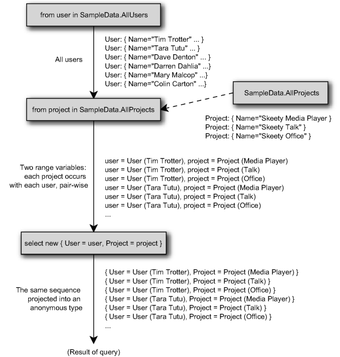Figure 11.8 Sequences from listing 11.15, cross joining users and projects. All possible combinations are returned in the results.
true cross join, so we need to understand the more complicated scenario in order to understand the translation process.
Before we dive into the details, let’s see the effect it produces. The following listing shows a simple example, using sequences of integers.
Listing 11.16 Cross join where the right sequence depends on the left element
var query = from left in Enumerable.Range(1, 4)
from right in Enumerable.Range(11, left) select new { Left=left, Right=right };
foreach (var pair in query)
{
Console.WriteLine("Left={0}; Right={1}", pair.Left, pair.Right);
}
Listing 11.16 starts with a simple range of integers, 1 to 4. For each of those integers, we create another range, beginning at 11 and having as many elements as the original integer. By using multiple from clauses, the left sequence is joined with each of the generated right sequences, resulting in this output:
Left=1; Right=11 Left=2; Right=11 Left=2; Right=12 Left=3; Right=11 Left=3; Right=12 Left=3; Right=13 Left=4; Right=11 Left=4; Right=12 Left=4; Right=13 Left=4; Right=14
The method the compiler calls to generate this sequence is SelectMany. It takes a single input sequence (the left sequence in our terminology), a delegate to generate another sequence from any element of the left sequence, and a delegate to generate a result element given an element of each of the sequences. Here’s the signature of Enumerable.SelectMany:
static IEnumerable<TResult> SelectMany<TSource,TCollection,TResult>( this IEnumerable<TSource,TCollection> source, Func<TSource,IEnumerable<TCollection>> collectionSelector, Func<TSource,TCollection,TResult> resultSelector
)
As with the other joins, if the part of the query expression following the join is a select clause, that projection is used as the final argument; otherwise, a transparent identifier is introduced to make the range variables of both the left and right sequences available later in the query.
Just to make this all a bit more concrete, here’s the query expression of listing 11.16, as the translated source code:
Enumerable.Range(1, 4)
.SelectMany (left => Enumerable.Range(11, left),
(left, right) => new {Left = left, Right = right})
One interesting feature of SelectMany is that the execution is completely streamed — it only needs to process one element of each sequence at a time, because it uses a freshly generated right sequence for each different element of the left sequence. Compare this with inner joins and group joins: they both load the right sequence completely before starting to return any results. You should bear in mind the expected size of sequence, and how expensive it might be to evaluate it multiple times, when considering which type of join to use and which sequence to use as the left and which as the right.
The flattening behavior of SelectMany can be very useful. Consider a situation where you want to process a lot of log files, a line at a time. We can process a seamless sequence of lines with barely any work. The following pseudo-code is filled in more
thoroughly in the downloadable source code, but the overall meaning and usefulness should be clear:
var query = from file in Directory.GetFiles(logDirectory, "*.log") from line in ReadLines(file) let entry = new LogEntry(line) where entry.Type == EntryType.Error select entry;
In just five lines of code we’ve retrieved, parsed, and filtered a whole collection of log files, returning a sequence of entries representing errors. Crucially, we haven’t had to load even a single full log file into memory all in one go, let alone all of the files — all the data is streamed.
Having tackled joins, the last items we need to look at are slightly easier to understand. We’re going to look at grouping elements by a key, and continuing a query expression after a group ... by or select clause.
11.6 Groupings and continuations
One common requirement is to group a sequence of elements by one of its properties. LINQ makes this easy with the group ... by clause. In addition to describing this final type of clause, we’ll also revisit our earliest one (select) to see a feature called query continuations that can be applied to both groupings and projections. Let’s start with a simple grouping.
11.6.1 Grouping with the group ... by clause
Grouping is largely intuitive, and LINQ makes it simple. To group a sequence in a query expression, all you need to do is use the group ... by clause, with this syntax:
group projection by grouping
This clause comes at the end of a query expression in the same way a select clause does. The similarities between these clauses don’t end there: the projection expression is the same kind of projection that select clauses use. The outcome is somewhat different, though.
The grouping expression determines what the sequence is grouped by — the key of the grouping. The overall result is a sequence where each element is itself a sequence of projected elements, and also has a Key property, which is the key for that group; this combination is encapsulated in the IGrouping<TKey,TElement> interface, which extends IEnumerable<TElement>. Again, if you want to group by multiple values, you can use an anonymous type for the key.
Let’s look at a simple example from the SkeetySoft defect system: grouping defects by their current assignee. Listing 11.17 does this with the simplest form of projection, so that the resulting sequence has the assignee as the key, and a sequence of defects embedded in each entry.
Listing 11.17 Grouping defects by assignee — trivial projection
var query = from defect in SampleData.AllDefects where defect.AssignedTo != null group defect by defect.AssignedTo;
foreach (var entry in query)
{
Console.WriteLine(entry.Key.Name);
foreach (var defect in entry)
{
Console.WriteLine(" ({0}) {1}"
defect.Severity, defect.Summary);
}
Console.WriteLine();
}
Listing 11.17 might be useful in a daily build report, to quickly see what defects each person needs to look at. We’ve filtered out all the defects that don’t need any more attention O and then grouped using the AssignedTo property. Although this time we’re just using a property, the grouping expression can be anything you like — it’s applied to each entry in the incoming sequence, and the sequence is grouped based on the result of the expression. Note that grouping can’t stream the results: it applies the key selection and projection to each element in the input and buffers the grouped sequences of projected elements. Even though it’s not streamed, execution is still deferred until you start retrieving the results.
The projection we’ve applied in the grouping Q is trivial — it just selects the original element. As we go through the resulting sequence, each entry has a Key property, which is of type User ©, and each entry also implements IEnumerable<Defect>, which is the sequence of defects assigned to that user Q.
The results of listing 11.17 start like this:
Darren Dahlia
(Showstopper) MP3 files crash system
(Major) Can't play files more than 200 bytes long
(Major) DivX is choppy on Pentium 100
(Trivial) User interface should be more caramelly
After all of Darren’s defects have been printed out, we see Tara’s, then Tim’s, and so on. The implementation effectively keeps a list of the assignees it’s seen so far, and adds a new one every time it needs to. Figure 11.9 shows the sequences generated throughout the query expression, which may make this ordering more clear.
Within each entry’s subsequence, the order of the defects is the same as the order of the original defect sequence. If you actively care about the ordering, consider explicitly stating it in the query expression, to make it more readable.
If you run listing 11.17, you’ll see that Mary Malcop doesn’t appear in the output at all, because she doesn’t have any defects assigned to her. If you wanted to produce a full list of users and defects assigned to each of them, you’d need to use a group join like the one in listing 11.14.
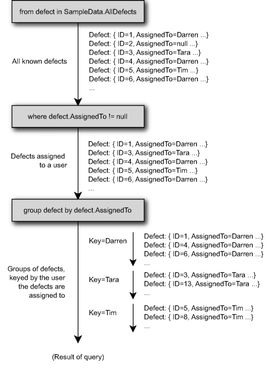Figure 11.9 Sequences used when grouping defects by assignee. Each entry of the result has a Key property and is also a sequence of defect entries.
The compiler always uses a method called GroupBy for grouping clauses. When the projection in a grouping clause is trivial — in other words, when each entry in the original sequence maps directly to the exact same object in a subsequence — the compiler uses a simple method call that only requires the grouping expression, so it knows how to map each element to a key. For instance, the query expression in listing 11.17 is translated into this:
SampleData.AllDefects.Where(defect => defect.AssignedTo != null) .GroupBy(defect => defect.AssignedTo)
When the projection is nontrivial, a slightly more complicated version is used. Listing 11.18 gives an example of a projection so that we only capture the summary of each defect rather than the Defect object itself.
Listing 11.18 Grouping defects by assignee — projection retains just the summary
var query = from defect in SampleData.AllDefects where defect.AssignedTo != null group defect.Summary by defect.AssignedTo;
foreach (var entry in query)
{
Console.WriteLine(entry.Key.Name); foreach (var summary in entry)
{
Console.WriteLine(" {0}", summary);
}
Console.WriteLine();
}
I’ve highlighted the differences between listing 11.18 and listing 11.17 in bold. Having projected a defect to just its summary, the embedded sequence in each entry is just an IEnumerable<string>. In this case, the compiler uses an overload of GroupBy with another parameter to represent the projection. The query expression in listing 11.18 is translated into the following expression:
SampleData.AllDefects.Where(defect => defect.AssignedTo != null) .GroupBy(defect => defect.AssignedTo, defect => defect.Summary)
Grouping clauses are relatively simple but useful. Even in our defect-tracking system, you could easily imagine wanting to group defects by project, creator, severity, or status, as well as the assignee we’ve used for these examples.
So far, we’ve ended each query expression with a select or group ... by clause, and that’s been the end of the expression. But there are times when you want to do more with the results — and that’s where query continuations are used.
11.6.2 Query continuations
Query continuations provide a way of using the result of one query expression as the initial sequence of another. They apply to both group ... by and select clauses, and the syntax is the same for both — you simply use the contextual keyword into and then provide the name of a new range variable. That range variable can then be used in the next part of the query expression.
The specification explains this in terms of a translation from one query expression to another, changing
first-query into identifier second-query-body
into
from identifier in (first-query) second-query-body
An example will make this clearer. Let’s go back to our grouping of defects by assignee, but this time imagine we only want the count of the defects assigned to each
person. We can’t do that with the projection in the grouping clause, because that only applies to each individual defect. We want to project each group, which contains an assignee and the sequence of their defects, into a single element consisting of the assignee and the count of defects in the group, which is achieved using the code in the following listing.
Listing 11.19 Continuing a grouping with another projection
var query = from defect in SampleData.AllDefects where defect.AssignedTo != null
group defect by defect.AssignedTo into grouped select new { Assignee = grouped.Key,
Count = grouped.Count() };
foreach (var entry in query)
{
Console.WriteLine("{0}: {1}",
entry.Assignee.Name, entry.Count);
}
The changes to the query expression are highlighted in bold. We can use the grouped range variable in the second part of the query, but the defect range variable is no longer available — you can think of it as being out of scope. Our projection simply creates an anonymous type with Assignee and Count properties, using the key of each group as the assignee, and counting the sequence of defects associated with each group. The results of listing 11.19 are as follows:
Darren Dahlia: 14 Tara Tutu: 5 Tim Trotter: 5 Deborah Denton: 9 Colin Carton: 2
Following the specification, the query expression from listing 11.19 is translated into this one:
from grouped in (from defect in SampleData.AllDefects where defect.AssignedTo != null group defect by defect.AssignedTo) select new { Assignee = grouped.Key, Count = grouped.Count() }
The rest of the translations are then performed, resulting in the following code:
SampleData.AllDefects
.Where(defect => defect.AssignedTo != null)
.GroupBy(defect => defect.AssignedTo)
.Select(grouped => new { Assignee = grouped.Key,
Count = grouped.Count() })
An alternative way of understanding continuations is to think of two separate statements. This isn’t as accurate in terms of the actual compiler translation, but I find it makes it easier to see what’s going on. In this case, the query expression (and assignment to the query variable) can be thought of as the following two statements:
var tmp = from defect in SampleData.AllDefects where defect.AssignedTo != null group defect by defect.AssignedTo;
var query = from grouped in tmp
select new { Assignee = grouped.Key,
Count = grouped.Count() };
Of course, if you find this easier to read, there’s nothing to stop you from breaking up the original expression into this form in your source code. Nothing will be evaluated until you start trying to step through the query results anyway, due to deferred execution.
join ... into ISN’T A CONTINUATION It’s easy to fall into the trap of thinking that wherever you see the contextual keyword into, you have a continuation.
This isn’t true for joins — the join .. . into clause (which is used for group joins) doesn’t form a continuation. The important difference is that with a group join, all the earlier range variables (apart from the one used to name the right side of the join) can still be used. Compare that with the queries we’re looking at in this section, where the continuation wipes the slate clean; the only range variable available afterward is the one declared by the continuation.
Let’s extend this example to see how multiple continuations can be used. Our results are currently unordered — let’s change that so we can see who has the most defects assigned to them first. We could use a let clause after the first continuation, but the following listing shows an alternative with a second continuation after our current expression.
Listing 11.20 Query expression continuations from group and select
var query = from defect in SampleData.AllDefects where defect.AssignedTo != null
group defect by defect.AssignedTo into grouped select new { Assignee = grouped.Key,
Count = grouped.Count() } into result orderby result.Count descending select result;
foreach (var entry in query)
{
Console.WriteLine("{0}: {1}",
entry.Assignee.Name, entry.Count);
}
The changes between listing 11.19 and 11.20 are highlighted in bold. We haven’t had to change any of the output code, because we have the same type of sequence — we’ve just applied an ordering to it. This time the translated query expression is as follows:
SampleData.AllDefects
.Where (defect => defect.AssignedTo != null)
.GroupBy(defect => defect.AssignedTo)
.Select(grouped => new { Assignee = grouped.Key,
Count = grouped.Count() }) .OrderByDescending(result => result.Count);
By pure coincidence, this is remarkably similar to the first defect-tracking query we came across, in section 10.3.4. Our final select clause effectively does nothing, so the C# compiler ignores it. It’s required in the query expression, though, as all query expressions must end with either a select or a group ... by clause. There’s nothing to stop you from using a different projection or performing other operations with the continued query — joins, further groupings, and so forth. Just keep an eye on the readability of the query expression as it grows. Speaking of readability, there are options to consider when you’re writing LINQ queries.
11.7 Choosing between query expressions and dot notation
As we've seen throughout this chapter, query expressions are translated into normal C# before being compiled any further. There isn’t an official name for a call to the LINQ query operators written using normal C# rather than as a query expression, but many developers now refer to this as 75 Every query expression can be written in dot notation, but the reverse isn’t true: many LINQ operators don’t have a query expression equivalent in C#. The big question is: when should you use which syntax?
11.7.1 Operations that require dot notation
The most obvious situation where you’re forced to use dot notation is when you’re calling a method such as Reverse or ToDictionary that simply isn’t represented in query expression syntax at all. But even when you use a query operator that’s supported by query expressions, it’s quite possible for the particular overload you want to be unavailable. For example, Enumerable.Where has an overload where the index into the parent sequence is supplied as another argument to the delegate. So, for example, to take every other item from a sequence you could use
sequence.Where((item, index) => index % 2 == 0)
There’s a similar overload for Select — so if you wanted to be able to get at the original index in a sequence after ordering, you could do something like this:
sequence.Select((Item, Index) => new { Item, Index })
.OrderBy(x => x.Item.Name)
This example shows another option you may wish to consider: if you’re going to use a lambda expression parameter directly in an anonymous type, you could buck the normal convention of starting the parameter name with a lowercase letter, and then use a projection initializer to avoid writing new { Item = item, Index = index }, which can be distracting. Of course, you can ignore the convention about property names instead, and make your anonymous type have properties beginning with a lowercase letter (item and index, for example). All of this is entirely up to you — and it’s worth experimenting. Though consistency is usually important, it doesn’t matter too much here, as the impact of inconsistency is confined to the method in question: you’re not exposing these names in your public API or throughout the rest of your class.
Many of the query operators also support custom comparisons — ordering and joining being the most obvious examples. These are unlikely to be required often, in my experience, but they’re occasionally invaluable. For example, if you want to perform a join on a person’s name in a case-insensitive manner, you can specify String-Comparer.OrdinalIgnoreCase (or a culture-specific comparer) as the final argument to a Join call. Again, if you feel that an operator nearly does what you want but doesn’t quite cut it, check the documentation for other overloads.
When you’re forced to use dot notation, the decision to use it is easy — but what about cases where a query expression could be used?
11.7.2 Query expressions where dot notation may be simpler
Some developers use query expressions everywhere they can get away with it; personally I look at what the query is doing and decide which approach will be more readable. For example, take this query expression, which is similar to the one we used near the start of the chapter:
var adults = from person in people where person.Age >= 18 select person;
This is three lines of code with a lot of baggage, even though all it’s doing is filtering. In this case I’d use dot notation:
var adults = people.Where(person => person.Age >= 18);
I find that clearer — every part of it mentions something we’re actually interested in.
Another area where using dot notation throughout a query expression can give more clarity is when you’re forced to use it for part of the query anyway. For example, suppose we’re going to use the ToList () extension method to end up with a list of the names of adults. (I’m performing a projection as well in this case so that it’s a more balanced comparison.) Here’s the query expression:
var adultNames = (from person in people where person.Age >= 18 select person.Name).ToList();
Here’s the dot notation equivalent:
var adultNames = people.Where(person => person.Age >= 18)
.Select(person => person.Name)
.ToList();
Something about the need for parentheses around the query expression in the first case makes it seem uglier to me. This is very much a case of personal choice — this section is really just raising your awareness that there is a choice, and that you can pick and choose. If you’re going to use LINQ to any significant extent, you really should be comfortable with both notations, and there’s no harm in switching style based on the query in question. As we’ve seen, the generated code is absolutely equivalent. None of this is to say that I dislike query expressions, of course.
11.7.3 Where query expressions shine
Having explained where you might find dot notation beneficial, I should point out that when it comes to any operations where the query expression would use transparent identifiers — particularly joins — dot notation starts to suffer in terms of readability. The beauty of transparent identifiers is that they’re transparent — so transparent that you can’t see them at all when you only have to look at the query expression! Even a simple let clause can be enough to swing the decision in favor of query expressions: introducing a new anonymous type just to propagate context through the query gets annoying quickly.
The other area where query expressions win is in situations where multiple lambda expressions would be required, or even multiple method calls. Again this includes joins, where you have to specify the key selector for each side of the join as well as the result selector. For example, here’s a cut-down version of an earlier query from where I introduced inner joins:
from defect in SampleData.AllDefects join subscription in SampleData.AllSubscriptions on defect.Project equals subscription.Project select new { defect.Summary, subscription.EmailAddress }
In an IDE it’d be reasonable to put the whole join clause on one line, leading to fairly easy-to-read code. The dot notation equivalent is fairly horrible, though:
SampleData.AllDefects.Join(SampleData.AllSubscriptions, defect => defect.Project, subscription => subscription.Project,
(defect, subscription) => new { defect.Summary,
subscription.EmailAddress })
The last argument could all fit on one line in an IDE, but it’s still pretty ugly because the lambda expressions don’t have much context: you can’t immediately tell which argument means what. Named arguments in C# 4 can help there, but that adds even more bulk to the query.
Complex orderings can be similarly unpleasant in dot notation. Consider which you’d rather read — this orderby clause:
orderby item.Rating descending, item.Price, item.Name or three method calls:
.OrderByDescending(item => item.Rating)
.ThenBy(item => item.Price)
.ThenBy(item => item.Name)
Changing the priority of these orderings is simple in the query expression — just switch them around. In dot notation, you may also have to switch from OrderBy to ThenBy or vice versa.
Just to reiterate, I’m not trying to press my own personal preferences onto your code. I simply want you to know what’s available, and think about the choices you make. Of course, this is only one aspect of writing readable code, but it’s a whole new area to consider in C#.
11.8 Summary
In this chapter, we’ve looked at how LINQ to Objects and C# 3 interact, focusing on the way that query expressions are first translated into code that doesn’t involve query expressions, then compiled in the usual way. We’ve seen how all query expressions form a series of sequences, applying a transformation of some description at each step. In many cases, these sequences are evaluated using deferred execution, fetching data only when it’s first required.
Compared with all the other features of C# 3, query expressions look somewhat alien — more like SQL than the C# we’re used to. One of the reasons they look so odd is that they’re declarative instead of imperative—a query talks about the features of the end result rather than the exact steps required to achieve it. This goes hand in hand with a more functional way of thinking. It can take a while to click, and it’s not suitable for every situation, but where declarative syntax is appropriate it can vastly improve readability, as well as make code easier to test and also easier to parallelize.
Don’t be fooled into thinking that LINQ should only be used with databases. Plain in-memory manipulation of collections is common, and we’ve seen how well it’s supported by query expressions and the extension methods in Enumerable.
In a real sense, you’ve now seen all the features introduced in C# 3! Although we haven’t looked at any other LINQ providers yet, we have a clearer understanding of what the compiler will do for us when we ask it to handle XML and SQL. The compiler itself doesn’t know the difference between LINQ to Objects, LINQ to SQL, or any of the other providers: it just follows the same rules blindly. In the next chapter we’ll see how these rules form the final piece of the LINQ jigsaw puzzle when they convert lambda expressions into expression trees so that the various clauses of query expressions can be executed on different platforms... as well as look at other examples of what LINQ can do.
Chapter 12: LINQ beyond collections
This chapter covers
■ LINQ to SQL
■ IQueryable and expression tree queries
■ LINQ to XML
■ Parallel LINQ
■ Reactive extensions for .NET
■ Writing your own operators
Suppose an alien visited you and asked you to describe “culture.” How could you capture the diversity of human culture in a short space of time? You may decide to spend that time showing him culture rather than just describing it in the abstract: a visit to a New Orleans jazz club, opera in La Scala, the Louvre gallery in Paris, a Shakespeare play in Stratford-upon-Avon, and so on.
Would this alien know everything about culture afterward? Could he compose a tune, write a book, dance a ballet, craft a sculpture? Absolutely not. But he’d hopefully come away with a sense of culture — its richness and variety, its ability to light up people’s lives.
So it is with this chapter. You’ve now seen all of the features of C# 3, but without seeing more of LINQ you don’t have enough context to really appreciate them.
When the first edition of this book was published, not many LINQ technologies were available — now there’s a glut of them, both from Microsoft and third parties. That in itself hasn’t surprised me — but I’ve been fascinated to see the different nature of these technologies.
We’re going to look at various ways in which LINQ manifests itself, with an example of each. I’ve chosen to demonstrate Microsoft technologies in the main, because they’re the most typical ones. This isn’t meant to imply that third parties aren’t welcome in the LINQ ecosystem: there are a number of projects, both commercial and open source, providing access to varied data sources and building extra features on top of existing providers. In contrast to the rest of this book, we’ll only skim the surface of each of the topics here — the point isn’t to learn the details, but to immerse yourself in the spirit of LINQ. To investigate any of these technologies further, I recommend that you get a dedicated book or read the relevant documentation carefully. I’ve resisted the temptation to say “there’s more to LINQ to [xxx] than this” at the end of each section, but please take it as read. Each technology has many capabilities beyond querying, but I’ve focused on the areas that are directly related to LINQ.
Let’s start off with the provider that generally got the most attention when LINQ was first introduced: LINQ to SQL.
12.1 Querying a database with LINQ to SQL
I’m sure by now you’ve absorbed the message that LINQ to SQL converts query expressions into SQL, which is then executed on the database. It’s more than that — it’s a full ORM solution — but I’m going to concentrate on the query side of LINQ to SQL rather than go into concurrency handling and the other details that an ORM has to deal with. I’ll show you just enough so that you can experiment with it yourself — the database and code are available on the book’s website (http://csharpindepth.com). The database is in SQL Server 2005 format to make it easy to play with even if you don’t have the latest version of SQL Server installed, although obviously Microsoft has made sure that LINQ to SQL works against newer versions too.
WHY LINQ TO SQL RATHER THAN THE ENTITY FRAMEWORK? Speaking of “newer versions,” you may be wondering why I’ve chosen to demonstrate LINQ to SQL instead of the Entity Framework, which is now Microsoft’s preferred solution (and also supports LINQ). The answer is merely simplicity: whereas the Entity Framework is undoubtedly more powerful than LINQ to SQL in various ways, it requires extra concepts that would take too much space to explain here.
I’m trying to give you a sense of the consistency (and occasional inconsistencies) that LINQ provides, and that’s as applicable to LINQ to SQL as to the Entity Framework.
Before we start writing any queries, we need a database and a model to represent it in code.
12.1.1 Getting started: the database and model
LINQ to SQL needs metadata about the database to know which classes correspond to which database tables, and so on. There are various ways of representing that metadata: I’m going to use the LINQ to SQL designer built into Visual Studio. You can design the entities first and ask LINQ to create the database, or design your database and let Visual Studio work out what the entities should look like. Personally I favor the second approach, but there are pros and cons for both ways.
The mapping from the classes in chapter 11 to database tables is straightforward. Each table has an autoincrementing integer ID column with an appropriate name: ProjectID, DefectID, and so forth. The references between tables simply use the same name, so the Defect table has a ProjectID column, for instance, with a foreign key constraint. There are a few exceptions to this simple set of rules:
■ User is a reserved word in T-SQL, so the User class is mapped to the DefectUser table.
■ The enumerations (status, severity, and user type) don’t have tables: their values are simply mapped to tinyint columns in the Defect and DefectUser tables.
■ The Defect table has two links to the DefectUser table: one for the user who created the defect and one for the current assignee. These are represented with the CreatedByUserId and AssignedToUserId columns, respectively.
CREATING THE ENTITY CLASSES
Once our tables are created, generating the entity classes from Visual Studio is easy. Simply open Server Explorer (View -> Server Explorer) and add a data source to the SkeetySoftDefects database (right-click on Data Connections and select Add Connection). You should be able to see four tables: Defect, DefectUser, Project, and NotificationSubscription.
You can then add a new item of type “LINQ to SQL classes” to the project. This name will be the basis for a generated class representing the overall database model: I’ve used the name DefectModel, which leads to a class called DefectModelData-Context. The designer will open when you’ve created the new item. You can then drag the four tables from Server Explorer into the designer, and it’ll figure out all the associations. After that, you can rearrange the diagram and adjust various properties of the entities. Here’s a list of what I changed:
■ I renamed the DefectID property to ID to match our previous model.
■ I renamed DefectUser to User (so although the table is still called DefectUser, we’ll generate a class called User, just like before).
■ I changed the type of the Severity, Status, and UserType properties to their enum equivalents (having copied those enumerations into the project).
■ I renamed the parent and child properties used for the associations between Defect and DefectUser — the designer guessed suitable names for the other
associations, but had trouble here because there were two associations between the same pair of tables. I named the relationships AssignedTo/Assigned-Defects and CreatedBy/CreatedDefects.
Figure 12.1 shows the designer diagram after all of these changes. As you can see, it looks much like the class diagram we saw in figure 11.3, except without the enumerations.
If you look in the C# code generated by the designer (Defect-Model.designer.cs), you’ll find five partial classes: one for each of the entities, and the DefectModelDataContext class I mentioned earlier. The fact that they’re partial is useful: in this case I added extra constructors to match the ones we had for our original in-memory classes, so the code from chapter 11 to create the sample data could be reused without much extra work. For the sake of brevity I haven’t included the insertion code here, but if you look at PopulateDatabase.cs in the source code, you should be able to follow it easily enough. Of course, you don’t have to run this your-self — the downloadable database is already populated.
Now that we have a schema in SQL, an entity model in C#, and some sample data, let’s get querying.
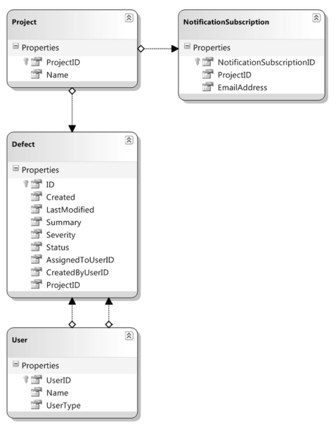Figure 12.1 The LINQ to SQL classes designer showing the rearranged and modified entities
12.1.2 Initial queries
I’m sure you’ve guessed what’s coming, but hopefully that won’t make it any less impressive. We’re going to execute query expressions against our data source, watching LINQ to SQL convert the query into SQL on the fly. For the sake of familiarity, we’ll use some of the same queries we saw executing against our in-memory collections in chapter 11.
FIRST QUERY: FINDING DEFECTS ASSIGNED TO TIM
I’ll skip over the trivial examples from early in the chapter, starting instead with the query from listing 11.7 that checks for open defects assigned to Tim. Here’s the query part of listing 11.7, for the sake of comparison:
User tim = SampleData.Users.TesterTim;
var query = from defect in SampleData.AllDefects where defect.Status != Status.Closed where defect.AssignedTo == tim select defect.Summary;
The full LINQ to SQL equivalent of listing 11.7 is shown in the following listing.
Listing 12.1 Querying the database to find all Tim’s open defects
using (var context = new DefectModelDataContext()) < — i Creates context
context.Log = Console.Out; console logging
User tim = context.Users Queries for Tim
.Where(user => user.Name == "Tim Trotter")
.Single(); ,
E Queries for Tim’s
var query = from defect in context.Defects <|_J open defects
where defect.Status != Status.Closed where defect.AssignedTo == tim select defect.Summary;
foreach (var summary in query)
{
Console.WriteLine(summary);
}
}
Listing 12.1 requires a certain amount of explanation, because it’s all new. First we create a new data context to work with O. Data contexts are pretty multifunctional, taking responsibility for connection and transaction management, query translation, tracking changes in entities, and dealing with identity. For the purposes of this chapter, we can regard a data context as our point of contact with the database. We won’t be looking at the more advanced features here, but we take advantage of one useful capability: we tell the data context to write out all the SQL commands it executes to the console ©. The model-related properties used in the code for this section (Defects, Users, and so on) are all of type Table<T> for the relevant entity type. They act as the data sources for our queries.
We can’t use SampleData.Users.TesterTim to identify Tim in the main query because that object doesn’t know the ID of the relevant row in the DefectUser table. Instead, we use a separate query to load Tim’s user entity ©. I happen to have used dot notation for this, but a query expression would’ve worked just as well. The Single method just returns a single result from a query, throwing an exception if there isn’t exactly one element. In a real-life situation, you may have the entity as a product of other operations such as logging in — and if you don’t have the full entity, you may have its ID, which can be used equally well within the main query. As an alternative in this case, we could’ve changed the open defects query to filter based on the assignee’s name. That wouldn’t have quite been in the spirit of the original query, though.
Within the query expression ©, the only difference between the in-memory query and the LINQ to SQL query is the data source — instead of using SampleData.AllDefects, we use context. Defects. The final results are the same (although the ordering isn’t guaranteed), but the work has been done on the database.
As we’ve asked the data context to log the generated SQL, we can see exactly what’s
going on when we run the code. The console output shows both of the queries exe
cuted on the database, along with the query parameter values:76
SELECT [t0].[UserID], [t0].[Name], [t0].[UserType]
FROM [dbo].[DefectUser] AS [t0]
WHERE [t0].[Name] = @p0
-- @p0: Input String (Size = 11; Prec = 0; Scale = 0) [Tim Trotter]
SELECT [t0].[Summary]
FROM [dbo].[Defect] AS [t0]
WHERE ([t0].[AssignedToUserID] = @p0) AND ([t0].[Status] <> @p1)
-- @p0: Input Int32 (Size = 0; Prec = 0; Scale = 0) [2]
-- @p1: Input Int32 (Size = 0; Prec = 0; Scale = 0) [4]
Note how the first query fetches all of the properties of the user because we’re populating a whole entity — but the second query only fetches the summary, as that’s all we need. LINQ to SQL has also converted our two separate where clauses in the second query into a single filter on the database.
LINQ to SQL is capable of translating a wide range of expressions. Let’s try a slightly more complicated query from chapter 11, just to see what SQL is generated.
SQL GENERATION FOR A MORE COMPLEX QUERY: A LET CLAUSE
Our next query shows what happens when we introduce a sort of temporary variable with a let clause. In chapter 11 we considered a bizarre situation, if you remember — pretending that calculating the length of a string took a long time. Again, the query expression is exactly the same as in listing 11.11, with the exception of the data source. Listing 12.2 shows the LINQ to SQL code.
Listing 12.2 Using a let clause in LINQ to SQL
using (var context = new DefectModelDataContext())
{
context.Log = Console.Out;
var query = from user in context.Users
let length = user.Name.Length orderby length
select new { Name = user.Name, Length = length }; foreach (var entry in query)
{
Console.WriteLine("{0}: {1}", entry.Length, entry.Name);
}
}
The generated SQL is close to the spirit of the sequences we saw in figure 11.5. The innermost sequence (the first one in that diagram) is the list of users; that’s transformed into a sequence of name/length pairs (as the nested select), and then the no-op projection is applied, with an ordering by length:
SELECT [t1].[Name], [t1].[value]
FROM (
SELECT LEN([t0].[Name]) AS [value], [t0].[Name]
FROM [dbo].[DefectUser] AS [t0]
) AS [t1]
ORDER BY [t1].[value]
This is a good example of where the generated SQL is wordier than it needs to be. Although we couldn’t reference the elements of the final output sequence when performing an ordering on the query expression, you can in SQL. This simpler query would’ve worked fine:
SELECT LEN([t0].[Name]) AS [value], [t0].[Name]
FROM [dbo].[DefectUser] AS [t0]
ORDER BY [value]
Of course, what’s important is what the query optimizer does on the database — the execution plan displayed in SQL Server Management Studio Express is the same for both queries, so it doesn’t look like we’re losing out.
The final set of LINQ to SQL queries we’re going to look at are all joins.
12.1.3 Queries involving joins
We’ll try both inner joins and group joins, using the examples of joining notification subscriptions against projects. I suspect you’re used to the drill now — the pattern of
the code is the same for each query, so from here on I’ll just show the query expres
sion and the generated SQL unless something else is going on.
EXPLICIT JOINS: MATCHING DEFECTS WITH NOTIFICATION SUBSCRIPTIONS
Our first query is the simplest kind of join — an inner equijoin using a LINQ join clause:
// Query expression (modified from listing 11.12) from defect in context.Defects
join subscription in context.NotificationSubscriptions on defect.Project equals subscription.Project select new { defect.Summary, subscription.EmailAddress }
-- Generated SQL
SELECT [t0].[Summary], [t1].[EmailAddress]
FROM [dbo].[Defect] AS [t0]
INNER JOIN [dbo].[NotificationSubscription] AS [t1]
ON [t0].[ProjectID] = [t1].[ProjectID]
Unsurprisingly, it uses an inner join in SQL. It’d be easy to guess at the generated SQL in this case. How about a group join, though? This is where things get slightly more hectic:
// Query expression (modified from listing 11.13) from defect in context.Defects
join subscription in context.NotificationSubscriptions on defect.Project equals subscription.Project into groupedSubscriptions select new { Defect = defect, Subscriptions = groupedSubscriptions }
-- Generated SQL
SELECT [t0].[DefectID] AS [ID], [t0].[Created],
[t0].[LastModified], [t0].[Summary], [t0].[Severity],
[t0].[Status], [t0].[AssignedToUserID],
[t0].[CreatedByUserID], [t0].[ProjectID],
[t1].[NotificationSubscriptionID] ,
[t1].[ProjectID] AS [ProjectID2], [t1].[EmailAddress],
(SELECT COUNT(*)
FROM [dbo].[NotificationSubscription] AS [t2]
WHERE [t0].[ProjectID] = [t2].[ProjectID]) AS [count]
FROM [dbo].[Defect] AS [t0]
LEFT OUTER JOIN [dbo].[NotificationSubscription] AS [t1]
ON [t0].[ProjectID] = [t1].[ProjectID]
ORDER BY [t0].[DefectID], [t1].[NotificationSubscriptionID]
That’s a major change in the amount of SQL generated! There are two important things to notice. First, it uses a left outer join instead of an inner join, so we’d still see a defect even if it didn’t have anyone subscribing to its project. If you want a left outer join but without the grouping, the conventional way of expressing this is to use a group join and then an extra from clause using the DefaultIfEmpty extension method on the embedded sequence. It looks odd, but it works well.
The second odd thing about the previous query is that it calculates the count for each group within the database. This is effectively a trick performed by LINQ to SQL to make sure that all the processing can be done on the server. A naive implementation would have to perform the grouping in memory, after fetching all the results. In some cases the provider could do tricks to avoid needing the count, simply spotting when the grouping ID changes, but there are issues with this approach for some queries. It’s possible that a later implementation of LINQ to SQL will be able to switch courses of action depending on the exact query.
You don’t need to explicitly write a join in the query expression to see one in the SQL. Our final queries will show joins implicitly created through property access expressions.
IMPLICIT JOINS: SHOWING DEFECT SUMMARIES AND PROJECT NAMES
Let’s take a simple example. Suppose we want to list each defect, showing its summary and the name of the project it’s part of. The query expression is just a matter of a projection:
// Query expression
from defect in context.Defects
select new { defect.Summary, ProjectName = defect.Project.Name }
-- Generated SQL
SELECT [t0].[Summary], [t1].[Name]
FROM [dbo].[Defect] AS [t0]
INNER JOIN [dbo].[Project] AS [t1]
ON [t1].[ProjectID] = [t0].[ProjectID]
Note how we’ve navigated from the defect to the project via a property — LINQ to SQL has converted that navigation into an inner join. It can use an inner join here because the schema has a non-nullable constraint on the ProjectID column of the Defect table — every defect has a project. Not every defect has an assignee, though — the AssignedToUserID field is nullable, so if we use the assignee in a projection instead, a left outer join is generated:
// Query expression
from defect in context.Defects
select new { defect.Summary, Assignee = defect.AssignedTo.Name }
-- Generated SQL
SELECT [t0].[Summary], [t1].[Name]
FROM [dbo].[Defect] AS [t0]
LEFT OUTER JOIN [dbo].[DefectUser] AS [t1]
ON [t1].[UserID] = [t0].[AssignedToUserID]
Of course, if you navigate via more properties, the joins get more and more complicated. I’m not going into the details here — the important thing is that LINQ to SQL has to do a lot of analysis of the query expression to work out what SQL is required. In order to perform that analysis, it clearly needs to be able to look at the query we’ve specified. Let’s move away from LINQ to SQL specifically, and think in general terms about what LINQ providers of this kind need to do. This will apply to any provider that needs to introspect the query, rather than just being handed a delegate. At long last, it’s time to see why expression trees were added as a feature of C# 3.
12.2 Translations using IQueryable and IQueryProvider
In this section we’re going to find out the basics of how LINQ to SQL manages to convert our query expressions into SQL. This is the starting point for implementing your own LINQ provider, should you wish to. (Please don’t underestimate the technical difficulties involved in doing so — but if you like a challenge, implementing a LINQ provider is certainly interesting.) This is the most theoretical section in the chapter, but it’s useful to have some insight as to how LINQ decides whether to use in-memory processing, a database, or some other query engine.
In all the query expressions we’ve seen in LINQ to SQL, the source has been a Table<T>. But if you look at Table<T>, you’ll see it doesn’t have a Where method, or Select, or Join, or any of the other standard query operators. Instead, it uses the same trick that LINQ to Objects does — just as the source in LINQ to Objects always implements IEnumerable<T> (possibly after a call to Cast or OfType) and then uses the extension methods in Enumerable, so Table<T> implements IQueryable<T> and then uses the extension methods in Queryable. We’ll see how LINQ builds up an expression tree and then allows a provider to execute it at the appropriate time. Let’s start by looking at what IQueryable<T> consists of.
12.2.1 Introducing IQueryable<T> and related interfaces
If you look up IQueryable<T> in the documentation and see what members it contains directly (rather than inheriting), you may be disappointed. There aren’t any. Instead, it inherits from IEnumerable<T> and the nongeneric IQueryable, which in turn inherits from the nongeneric IEnumerable. So, IQueryable is where the new and exciting members are, right? Well, nearly. In fact, IQueryable just has three properties: QueryProvider, ElementType, and Expression. The QueryProvider property is of type IQueryProvider — yet another new interface to consider.
Lost? Perhaps figure 12.2 will help out — a class diagram of all the interfaces directly involved.
The easiest way of thinking about IQueryable is that it represents a query that’ll yield a sequence of results when you execute it. The details of the query in LINQ terms are held in an expression tree, as returned by the Expression property of the IQueryable. Executing a query is performed by beginning to iterate through an IQueryable (in other words, calling the GetEnumerator method and then MoveNext on the result) or by a call to the Execute method on an IQueryProvider, passing in an expression tree.
So, with at least some grasp of what IQueryable is for, what’s IQueryProvider? We can do more with a query than just execute it — we can also use it to build a bigger query, which is the purpose of the standard query operators in LINQ.77 To build up a query, we need to use the CreateQuery method on the relevant IQueryProvider.78
Think of a data source as a simple query (SELECT * FROM SomeTable in SQL, for instance) — calling Where, Select, OrderBy, and similar methods results in a different query, based on the first one. Given any IQueryable query, you can create a new query by performing the following steps:
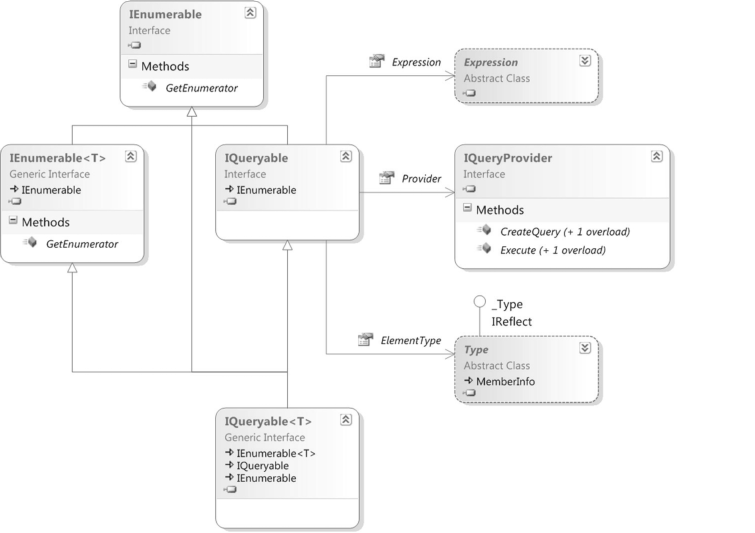Figure 12.2 Class diagram based on the interfaces involved in IQueryable<T>
1 Ask the existing query for its query expression tree (using the Expression property).
2 Build a new expression tree that contains the original expression and the extra functionality you want (a filter, projection, or ordering, for instance).
3 Ask the existing query for its query provider (using the Provider property).
4 Call CreateQuery on the provider, passing in the new expression tree.
Of those steps, the only tricky one is creating the new expression tree. Fortunately, there are a bunch of extension methods on the static Queryable class that do all that for us. Enough theory — let’s start implementing the interfaces so we can see all this in action.
12.2.2 Faking it: interface implementations to log calls
Before you get too excited, we’re not going to build our own fully fledged query provider in this chapter. But if you understand everything in this section, you’ll be in a much better position to build one if you ever need to — and possibly more importantly, you’ll understand what’s going on when you issue LINQ to SQL queries. Most of the hard work of query providers goes on at the point of execution, where they need to parse an expression tree and convert it into the appropriate form for the target platform. We’re concentrating on the work that happens before that — how LINQ prepares to execute a query.
We’ll write our own implementations of IQueryable and IQueryProvider, and then try to run a few queries against them. The interesting part isn’t the results — we won’t be doing anything useful with the queries when we execute them — but the series of calls made up to the point of execution. We’ll write types FakeQueryProvider and FakeQuery. The implementation of each interface method writes out the current expression involved, using a simple logging method (not shown here). Let’s look first at FakeQuery, as shown in the following listing.
Listing 12.3 A simple implementation of IQueryable that logs method calls
class FakeQuery<T> : IQueryable<T>
{
public Expression Expression { get; private set; } public IQueryProvider Provider { get; private set; } public Type ElementType { get; private set; }
internal FakeQuery(IQueryProvider provider,
Expression expression)
{
Expression = expression;
Provider = provider;
ElementType = typeof(T);
}
internal FakeQuery() : this(new FakeQueryProvider(), null) {
Expression = Expression.Constant(this);
}
public IEnumerator<T> GetEnumerator()
{
Logger.Log(this, Expression);
return Enumerable.Empty<T>().GetEnumerator();
}
IEnumerator IEnumerable.GetEnumerator()
{
Logger.Log(this, Expression);
return Enumerable.Empty<T>().GetEnumerator();
}
public override string ToString()
{
return "FakeQuery";
}
}
The property members of IQueryable are implemented in FakeQuery with automatic properties O, which are set by the constructors. There are two constructors: a param-eterless one that’s used by our main program to create a plain source for the query, and one that’s called by FakeQueryProvider with the current query expression.
The use of Expression.Constant(this) as the initial source expression Q is just a way of showing that the query initially represents the original object. (Imagine an implementation representing a table, for example — until you apply any query operators, the query would just return the whole table.) When the constant expression is logged, it uses the overridden ToString method, which is why we’ve given a short, constant description Q. This makes the final expression much cleaner than it would’ve been without the override. When we’re asked to iterate over the results of the query, we always just return an empty sequence G to make life easy. Production implementations would parse the expression here, or (more likely) call Execute on their query provider and just return the result.
As you can see, not a lot is going on in FakeQuery, and the following listing shows that FakeQueryProvider is simple, too.
Listing 12.4 An implementation of IQueryProvider that uses FakeQuery
class FakeQueryProvider : IQueryProvider {
public IQueryable<T> CreateQuery<T>(Expression expression)
{
Logger.Log(this, expression);
return new FakeQuery<T>(this, expression);
}
public IQueryable CreateQuery(Expression expression)
{
Type queryType = typeof(FakeQuery<>).MakeGenericType (expression.Type); object[] constructorArgs = new object[] { this, expression }; return (IQueryable)Activator.CreateInstance (queryType, constructorArgs);
}
public T Execute<T>(Expression expression)
{
Logger.Log(this, expression); return default(T);
}
public object Execute(Expression expression)
{
Logger.Log(this, expression); return null;
}
}
There’s even less to talk about in terms of the implementation of FakeQueryProvider than there was for FakeQuery<T>. The CreateQuery methods do no real processing but act as factory methods for the query. The only tricky bit is that the nongeneric overload still needs to provide the right type argument for FakeQuery<T> based on the Type property of the given expression. The Execute method overloads just return empty results after logging the call. This is where a lot of analysis would normally be done, along with the actual call to the web service, database, or whatever the target platform is.
Even though we’ve done no real work, when we start to use FakeQuery as the source in a query expression, interesting things start to happen. I’ve already let slip how we’re able to write query expressions without explicitly writing methods to handle the standard query operators: it’s all about extension methods, this time the ones in the Queryable class.
12.2.3 Gluing expressions together: the Queryable extension methods
Just as the Enumerable type contains extension methods on IEnumerable<T> to implement the LINQ standard query operators, the Queryable type contains extension methods on IQueryable<T>. There are two big differences between the implementations in Enumerable and those in Queryable.
First, the Enumerable methods all use delegates as their parameters — the Select method takes a Func<TSource,TResult>, for example. That’s fine for in-memory manipulation, but for LINQ providers that execute the query elsewhere, we need a format we can examine more closely — expression trees. For example, the corresponding overload of Select in Queryable takes a parameter of type Expression<Func <TSource,TResult>>. The compiler doesn’t mind at all — after query translation, it has a lambda expression that it needs to pass as an argument to the method, and lambda expressions can be converted to either delegate instances or expression trees.
This is how LINQ to SQL can work so seamlessly. The four key elements involved are all new features of C# 3: lambda expressions, the translation of query expressions into normal expressions that use lambda expressions, extension methods, and expression trees. Without all four, there’d be problems. If query expressions were always translated into delegates, for instance, they couldn’t be used with a provider such as LINQ to SQL, which requires expression trees. Figure 12.3 shows two possible paths taken by query expressions; they differ only in what interfaces their data source implements.
Note how in figure 12.3 the early parts of the compilation process are independent of the data source. The same query expression is used, and it’s translated in exactly the same way. It’s only when the compiler looks at the translated query to find the appropriate Select and Where methods to use that the data source is truly important. At that point, the lambda expressions can be converted to either delegate instances or expression trees, potentially giving radically different implementations: typically inmemory for the left path, and SQL executing against a database in the right path.
Just to hammer home a familiar point, the decision in figure 12.3 of whether to use Enumerable or Queryable has no explicit support in the C# compiler. These aren't the only two possible paths, as we’ll see later with Parallel LINQ and Reactive LINQ. You can create your own interface and implement extension methods following the query pattern, or even create a type with appropriate instance methods.
The second big difference between Enumerable and Queryable is that the Enumerable extension methods do the actual work associated with the corresponding query operator (or at least they build iterators that do that work). There’s code in Enumerable.Where to execute the specified filter and only yield appropriate elements as the result sequence, for example. By contrast, the query operator implementations
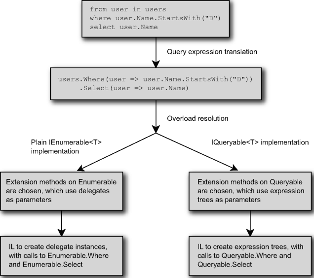Figure 12.3 A query taking two paths, depending on whether the data source implements IQueryable or only IEnumerable
in Queryable do little: they just create a new query based on the parameters or call Execute on the query provider, as described at the end of section 12.2.1. In other words, they’re only used to build up queries and request that they be executed — they don’t contain the logic behind the operators. This means they’re suitable for any LINQ provider that uses expression trees — but they’re useless on their own. They’re the glue between your code and the details of the provider.
With the Queryable extension methods available and ready to use our IQueryable and IQueryProvider implementations, it’s finally time to see what happens when we use a query expression with our custom provider.
12.2.4 The fake query provider in action
Listing 12.5 shows a simple query expression, which (supposedly) finds all the strings in our fake source beginning with “abc” and projects the results into a sequence of the lengths of the matching strings. We iterate through the results, but don’t do anything with them, as we know already that they’ll be empty. Of course, we have no source data, and we haven’t written any code to do any real filtering — we’re just logging which calls are made by LINQ in the course of creating the query expression and iterating through the results.
Listing 12.5 A simple query expression using the fake query classes
var query = from x in new FakeQuery<string>() where x.StartsWith("abc") select x.Length;
foreach (int i in query) { }
What would you expect the results of running listing 12.5 to be? In particular, what would you like to be logged last, at the point where we’d normally expect to do some real work with the expression tree? Here are the results, reformatted slightly for clarity:
FakeQueryProvider.CreateQuery
Expression=FakeQuery.Where(x => x.StartsWith("abc")) FakeQueryProvider.CreateQuery
Expression=FakeQuery.Where(x => x.StartsWith("abc"))
.Select(x => x.Length)
FakeQuery<Int32>.GetEnumerator
Expression=FakeQuery.Where(x => x.StartsWith("abc"))
.Select(x => x.Length)
The two important things to note are that GetEnumerator is only called at the end, not on any intermediate queries: by the time GetEnumerator is called, we have all the information present in the original query expression. We haven’t manually had to keep track of earlier parts of the expression in each step — a single expression tree captures all the information so far.
Don’t be fooled by the concise output, by the way — the actual expression tree is deep and complicated, particularly due to the where clause including an extra method call. This expression tree is what LINQ to SQL would examine to work out what query to execute. LINQ providers could build up their own queries (in whatever form they may need) as calls to CreateQuery are made, but usually looking at the final tree when GetEnumerator is called is simpler, as all the necessary information is available in one place.
The final call logged by listing 12.5 was to FakeQuery.GetEnumerator, and you may be wondering why we also need an Execute method on IQueryProvider. Well, not all query expressions generate sequences — if you use an aggregation operator such as Sum, Count, or Average, we’re no longer really creating a source — we’re evaluating a result immediately. That’s when Execute is called, as shown by the following listing and its output.
Listing 12.6 IQueryProvider.Execute
var query = from x in new FakeQuery<string>() where x.StartsWith("abc") select x.Length;
double mean = query.Average();
// Output
FakeQueryProvider.CreateQuery
Expression=FakeQuery.Where(x => x.StartsWith("abc")) FakeQueryProvider.CreateQuery
Expression=FakeQuery.Where(x => x.StartsWith("abc"))
.Select(x => x.Length)
FakeQueryProvider.Execute
Expression=FakeQuery.Where(x => x.StartsWith("abc"))
.Select(x => x.Length)
.Average()
The FakeQueryProvider can be quite useful when it comes to understanding what the C# compiler is doing behind the scenes with query expressions. It’ll show the transparent identifiers introduced within a query expression, along with the translated calls
to SelectMany, GroupJoin, and the like.
12.2.5 Wrapping up IQueryable
We haven’t written any of the significant code that a real query provider would need in order to get useful work done, but hopefully our fake provider has given you insight into how LINQ providers are given the information from query expressions. It’s all built up by the Queryable extension methods, given an appropriate implementation ofIQueryable and IQueryProvider.
We’ve gone into a bit more detail in this section than we will for the rest of the chapter, as it’s involved the foundations that underpin the LINQ to SQL code we saw earlier. Even though you’re unlikely to need to implement the query interfaces yourself, the steps involved in taking a C# query expression and (at execution time) running some SQL on a database are quite profound and lie at the heart of the big features of C# 3. Understanding why C# has gained these features will help keep you more in tune with the language.
This is the end of our coverage of LINQ using expression trees. The rest of the chapter involves in-process queries using delegates — but as we’ll see, there can still be a great deal of variety and innovation in how LINQ can be used. Our first port of call is LINQ to XML, which is “merely” an XML API designed to integrate well with LINQ to Objects.
12.3 LINQ-friendly APIs and LINQ to XML
LINQ to XML is by far the most pleasant XML API I’ve ever used. Whether you’re consuming existing XML, generating a new document, or a bit of both, it’s easy to use and understand. Part of that is completely independent of LINQ, but a lot of it’s due to how well it interacts with the rest of LINQ. As with section 12.1, I’ll give you just enough introductory information to understand the examples, and then see how LINQ to XML blends its own query operators with those in LINQ to Objects. By the end of the section you may have some ideas about how you can make your own APIs work in harmony with the framework.
LINQ to XML lives in the System.Xml.Linq assembly, and most of the types are in the System.Xml.Linq namespace too.79 Almost all of the types in that namespace have a prefix of X; so whereas the normal DOM API has an XmlElement type, the LINQ to XML equivalent is XElement. This makes it easy to spot when code is using LINQ to XML, even if you’re not immediately familiar with the exact type involved. Figure 12.4 shows the types you’ll use most often.
Here’s a brief rundown of the types shown:
■ XName is used for names of elements and attributes. Instances are usually created using an implicit conversion from a string (in which case no namespace is used) or via the + (XNamespace, string) overloaded operator.
■ XNamespace represents an XML namespace — a URI, basically. Instances are usually created by the implicit conversion from string.
■ XObject is the common ancestor of both XNode and XAttribute: unlike in the DOM API, an attribute isn’t a node in LINQ to XML. Methods returning child nodes don’t include attributes, for example.
■ XNode represents a node in the XML tree. It defines various members to manipulate and query the tree. There are various other classes derived from XNode that aren’t shown in figure 12.4, such as XComment and XDeclaration. These are used relatively infrequently — the most common node types are documents, elements, and text.
■ XAttribute is an attribute with a name and a value. The value is intrinsically text, but there are explicit conversions to many other data types, such as int and DateTime.
■ XContainer is a node in the XML tree that can have child content — it’s an element or a document, basically.
■ XText is a text node; a further derived type XCData is used to represent CDATA text nodes. (Roughly equivalent to a verbatim string literal — less escaping is required.) XText is rarely instantiated directly in user code; instead when a string is used as the content of an element or document, that’s converted into an XText instance.
■ XElement is an element. This is the most commonly used class in LINQ to XML, along with XAttribute. Unlike in the DOM API, you can create an XElement without creating a document to contain it; unless you really need a document object (for a custom XML declaration, perhaps), you can often just use elements.
■ XDocument is a document. Its root element is accessed using the Root property — this is the equivalent to XmlDocument.DocumentElement. As noted earlier, this often isn’t required.
More types are available even within the document model, and a few other types for things such as loading and saving options — but these are the most important ones. Of the preceding types, the only ones you regularly need to reference explicitly are XElement and XAttribute. If you use namespaces, you’ll use XNamespace as well, but most of the rest of the types can be ignored the rest of the time. It’s amazing how much you can do with so few types. Speaking of amazing, I can’t resist showing you how the namespace support works in LINQ to XML. We’re not going to use namespaces anywhere else, but it’s a good example of how a well-designed set of conversions and operators can make life easier. It’ll also ease us into our first topic: constructing elements.
If you only need to specify the name of an element or attribute without a namespace, you can just use a string. You won’t find any constructors for either type with parameters of type string though — they all accept an XName. An implicit conversion exists from string to XName, and also from string to XNamespace. Adding together a namespace and a string also gives you an XName. There’s a fine line between operator abuse and genius, but in this case LINQ to XML really makes it work. Here’s some code to create two elements — one within a namespace and one not:
XElement noNamespace = new XElement("no-namespace");
XNamespace ns = "http://csharpindepth.com/sample/namespace";
XElement withNamespace = new XElement(ns + "in-namespace");
This makes for readable code even when namespaces are involved — which comes as a welcome relief from some other APIs. But we’ve just created two empty elements. How do we give them some content?
12.3.2 Declarative construction
Normally in the DOM API, you create an element and then add content to it. We can do that in LINQ to XML as well, via the Add method inherited from XContainer — but that’s not the idiomatic LINQ to XML way of doing things.80 It’s worth looking at the signature of XContainer.Add though, because it introduces us to the content model. You might’ve expected a signature of Add(XNode) or perhaps Add(XObject) — but in fact it’s just Add(object). The same pattern is used for the XElement (and XDocument) constructor signatures. After the name, you can specify nothing (to create an empty element), a single object (to create an element with a single child node), or an array of objects to create multiple child nodes. In the multiple children case, a parameter array is used (the params keyword in C#), which means the compiler will create the array for you — you can just keep listing arguments.
The use of plain object for the content type may sound crazy, but it’s incredibly useful. When you add content — whether it’s through a constructor or the Add method — the following points are considered.
■ Null references are ignored.
■ XNode and XAttribute instances are added in a relatively straightforward manner; they’re cloned if they already have parents, but otherwise no conversion is required. (Some other sanity checks are performed, for instance to make sure you don’t have duplicate attributes in a single element.)
■ Strings, numbers, dates, times, and so on are added by converting them into XText nodes using standard XML formatting.
■ If the argument implements IEnumerable (and isn’t covered by anything else) then Add will iterate over its contents and add each value in turn, recursing where necessary.
■ Anything that doesn't have special-case handling is converted into text by just calling ToString().
This means that you often don’t need to prepare your content in a special way before adding it to an element — LINQ to XML just does the right thing for you. The details are explicitly documented, so you don’t need to worry about it being too magical — but it really works. Constructing nested elements leads to code that naturally resembles the hierarchical structure of the tree. This is best shown with an example. Here’s a snippet of LINQ to XML code:
new XElement("root",
new XElement("child",
new XElement("grandchild", "text")), new XElement("other-child"));
And here’s the XML of the created element — note the visual similarity between the code and the output: <root>
<child>
<grandchild>text</grandchild>
</child>
<other-child />
</root>
So far, so good — but the important part for us is the fourth bullet in the earlier list, where sequences are processed recursively... because that lets you build an XML structure out of a LINQ query in a natural way. For example, the book’s website has some code to generate an RSS feed from its database. The statement to construct the XML document is 28 lines long — which I’d normally expect to be an abomination — but it’s remarkably pleasant to read.81 That statement contains two LINQ queries — one to populate an attribute value, and the other to provide a sequence of elements, each representing a news item. As you read the code, it’s obvious what the resulting XML will look like.
To make this more concrete, let’s take two simple examples from the defect tracking system. I’ll demonstrate using the LINQ to Objects sample data, but we could use almost identical queries to work with another LINQ provider instead. First we’ll build an element containing all the users in the system. In this case we just need a projection, so the following listing uses dot notation:
Listing 12.7 Creating elements from the sample users
var users = new XElement("users",
SampleData.AllUsers.Select(user => new XElement("user", new XAttribute("name", user.Name), new XAttribute("type", user.UserType)))
);
Console.WriteLine(users);
// Output <users>
<user name="Tim Trotter" type="Tester" />
<user name="Tara Tutu" type="Tester" />
<user name="Deborah Denton" type="Developer" />
<user name="Darren Dahlia" type="Developer" />
<user name="Mary Malcop" type="Manager" />
<user name="Colin Carton" type="Customer" />
</users>
If we want to make a slightly more complex query, it’s probably worth using a query expression. Listing 12.8 creates another list of users, but this time only the developers within SkeetySoft. For a bit of variety, this time each developer’s name is a text node within an element instead of an attribute value:
var developers = new XElement("developers",
from user in SampleData.AllUsers
where user.UserType == UserType.Developer
select new XElement("developer", user.Name)
);
Console.WriteLine(developers);
// Output <developers>
<developer>Deborah Denton</developer>
<developer>Darren Dahlia</developer>
</developers>
This sort of thing can be applied to all the sample data, leaving a document structure like this:
<defect-system>
<projects>
<project name="..." id="...">
<subscription email="..." />
</project>
</projects>
<users>
<user name="..." id="..." type="..." />
</users>
<defects>
<defect id="..." summary="..." created="..." project="..." assigned-to="..." created-by="..." status="..." severity="..." last-modified="..." />
</defects>
</defect-system>
You can see the code to generate all of this in XmlSampleData.cs in the downloadable solution. It demonstrates an alternative to the one-huge-statement approach: each of the elements under the top level is created separately, then glued together like this:
XElement root = new XElement("defect-system", projects, users, defects);
We’ll use this XML to demonstrate our next LINQ integration point: queries. Let’s start with the query methods available on a single node.
12.3.3 Queries on single nodes
You may be expecting me to reveal that XElement implements IEnumerable and that LINQ queries come for free. It’s not quite that simple, because there are so many different things that an XElement could iterate through. XElement contains a number of axis methods that are used as query sources. If you’re familiar with XPath, the idea of an axis will no doubt be familiar to you. Here are the axis methods used directly for querying a single node, each of which returns an appropriate IEnumerable<T>:
■ Attributes
■ DescendantNodes ■ DescendantNodesAndSelf
■ Elements ■ ElementsAfterSelf
■ ElementsBeforeSelf ■ Nodes
All of these are fairly self-explanatory (and the MSDN documentation provides more details). There are useful overloads to retrieve only nodes with an appropriate name: calling Descendants("user") on an XElement will return all user elements underneath the element you call it on, for instance.
In addition to these calls returning sequences, some methods return a single result — Attribute and Element are the most important, returning the named attribute and the first child element with the specified name, respectively. Additionally, there are explicit conversions from an XAttribute or XElement to any number of other types, such as int, string, and DateTime. These are important for both filtering and projecting results. Each conversion to a non-nullable value type also has a conversion to its nullable equivalent — these (and the conversion to string) return a null value if you invoke them on a null reference. This null propagation means you don’t have to check for the presence or absence of attributes or elements within the query — you can use the query results instead.
What does this have to do with LINQ? Well, the fact that multiple search results are returned in terms of IEnumerable<T> means you can use the normal LINQ to Objects methods after finding some elements. The following listing shows an example of finding the names and types of the users, this time starting off with the sample data in XML.
Listing 12.9 Displaying the users within an XML structure
XElement root = XmlSampleData.GetElement();
var query = root.Element("users").Elements().Select(user => new {
Name = (string) user.Attribute("name"),
UserType = (string) user.Attribute("type")
});
foreach (var user in query)
{
Console.WriteLine ("{0}: {1}", user.Name, user.UserType);
}
After creating the data at the start, we navigate down to the users element, and ask it for its direct child elements. This two-step fetch could be shortened to just root.Descendants ("user"), but it’s good to know about the more rigid navigation so you can use it where necessary. It’s also more robust in the face of changes to the document structure, such as another (unrelated) user element being added elsewhere in the document.
The rest of the query expression is merely a projection of an XElement into an anonymous type. I’ll admit that we’re cheating slightly with the user type: we’ve kept it as a string instead of calling Enum.Parse to convert it into a proper UserType value. The latter approach works perfectly well — but it’s quite longwinded when you only
need the string form, and the code becomes hard to format sensibly within the strict limits of the printed page.
There’s nothing particularly special here — returning query results as sequences is fairly common, after all. It’s worth noting how seamlessly we can go from domain-specific query operators to general-purpose ones. That’s not the end of the story though — LINQ to XML has some extra extension methods to add as well.
12.3.4 Flattened query operators
We’ve seen how the result of one part of a query is often a sequence — and in LINQ to XML it’s often a sequence of elements. What if you wanted to then perform an XML-specific query on each of those elements? To present a somewhat contrived example, we can find all the projects in our sample data with root.Element("projects") . Elements(), but how can we find the subscription elements within them? We need to apply another query to each element, and then flatten the results. (Again, we could use root.Descendants("subscription") — but imagine a more complex document model where that wouldn’t work.)
This may sound familiar, and it is — LINQ to Objects already provides the Select-Many operator (represented by multiple from clauses in a query expression) to do this. So we could write our query as
from project in root.Element("projects").Elements() from subscription in project.Elements("subscription") select subscription
As there are no elements within a project other than subscription, we could just use the overload of Elements that doesn’t specify a name. I find it clearer to specify the element name in this case, but it’s often just a matter of taste. (The same argument could be made for calling Element("projects") .Elements( "project") to start with, admittedly.) Here’s the same query written using dot notation and an overload of SelectMany that only returns the flattened sequence, without performing any further projections:
root.Element("projects").Elements()
.SelectMany(project => project.Elements("subscription"))
Neither of these queries are completely unreadable by any means, but they’re not ideal. LINQ to XML provides a number of extension methods (in the System. Xml.Linq.Extensions class) which either act on a specific sequence type or are generic with a constrained type argument, to cope with the lack of generic interface covariance prior to C# 4. There’s InDocumentOrder, which does exactly what it sounds like — and most of the axis methods mentioned in section 12.4.3 are also available as extension methods. This means that we can convert our query into this simpler form:
root.Element("projects").Elements().Elements("subscription")
This sort of construction makes it easy to write XPath-like queries in LINQ to XML without everything just being a string. If you want to use XPath, that’s available too via more extension methods — but personally I’ve found that the query methods have served me well more often than not. This also supports mixing the query with the operators of LINQ to Objects. For example, to find all the subscriptions for projects with a name including “Media,” you could use
root.Element("projects").Elements()
.Where(project => ((string) project.Attribute("name"))
.Contains("Media"))
.Elements("subscription")
Before we move on to Parallel LINQ, let’s think about how the design of LINQ to XML merits the “LINQ” part of its title — and how you could potentially apply the same techniques to your own API.
12.3.5 Working in harmony with LINQ
Some of the design decisions in LINQ to XML seem odd if you take them in isolation as part of an XML API, but in the context of LINQ they make perfect sense. The designers clearly imagined how their types could be used within LINQ queries, and how they could interact with other data sources. If you’re writing your own data access API, in whatever context that might be, it’s worth taking the same things into account. If someone uses your methods in the middle of a query expression, are they left with something useful? Will they be able to use some of your query methods, then some from LINQ to Objects, then some more of yours in one fluent expression?
We’ve seen three ways in which LINQ to XML has accommodated the rest of LINQ:
■ It’s good at consuming sequences with its approach to construction. LINQ is deliberately declarative, and LINQ to XML supports this with a declarative way of creating XML structures.
■ It returns sequences from its query methods. This is probably the most obvious step that data access APIs would already take: returning query results as IEnumerable<T> or a class implementing it is pretty much a no-brainer.
■ It extends the set of queries you can perform on sequences of XML types: this makes it feel like a unified querying API, even though some of it’s XML-specific.
You may be able to think of other ways in which your own libraries can play nicely with LINQ: these aren’t the only options you should consider, but they’re a good starting point. Above all, I’d urge you to put yourself in the shoes of a developer wanting to use your API within code that’s already using LINQ. What might such a developer want to achieve? Can LINQ and your API be mixed easily, or are they really aiming for different goals?
We’re roughly halfway through our whirlwind tour of different approaches to LINQ. Our next stop is in some ways reassuring and in some ways terrifying: we’re back to querying simple sequences, but this time in parallel...
12.4 Replacing LINQ to Objects with Parallel LINQ
I’ve been following Parallel LINQ for a long time. I first came across it when Joe Duffy introduced it on his blog in September 2006 (see http://mng.bz/vYCO). The first Community Technology Preview (CTP) was released in November 2007, and the overall feature set has evolved over time too. It’s now part of a wider effort called Parallel Extensions, which is part of .NET 4, aiming to provide higher level building blocks for concurrent programming than the relatively small set of primitives we’ve had to work with until now. There’s a lot more to Parallel Extensions than Parallel LINQ — or PLINQ , as it’s often known — but we’ll only be looking at the LINQ aspect here.
The idea behind Parallel LINQ is that you should be able to take a LINQ to Objects query that’s taking a long time and make it run faster by using multiple threads to take advantage of multiple cores — with as few changes to the query as possible. As with anything to do with concurrency, it’s not quite as simple as that, but you may be surprised at just what can be achieved. Of course, we’re still trying to think bigger than individual LINQ technologies — we’re thinking about the different models of interaction involved, rather than the precise details. But if you’re interested in concurrency, I’d heartily recommend that you dive into Parallel Extensions — it’s one of the most promising approaches to parallelism that I’ve come across recently.
I’m going to use a single example for this section: rendering a Mandelbrot set image (see http://mng.bz/D6YL). Let’s start off by trying to get it right with a single thread before moving into trickier territory.
12.4.1 Plotting the Mandelbrot set with a single thread
Before any mathematicians attack me, I should point out that I’m using the term Mandelbrot set loosely here. The details aren’t really important — but these aspects are
■ We’re trying to create a rectangular image, given various options such as width, height, origin and search depth.
■ For each pixel in the image, we’re going to calculate a byte value that will end up as the index into a 256-entry palette.
■ The calculation of one pixel value doesn’t rely on any other results.
The last point is absolutely crucial — it means this task is embarrassingly parallel. In other words, there’s nothing in the task itself that makes it hard to parallelize. We still need a mechanism for distributing the workload across threads and then gathering the results together, but the rest should be easy. PLINQ will be responsible for the distribution and collation (with a little help and care); we just need to express what we want to do. For the purposes of demonstrating multiple approaches, I’ve put together an abstract base class that’s responsible for setting things up, running the query, and displaying the results, along with a method to compute the color of an individual pixel. An abstract method is responsible for creating a byte array of values, which are then converted into the image. The first row of pixels comes first, left to right, then the second row, and so on. Each example here is just an implementation of this method.
Figure 12.5 Mandelbrot image generated on a single thread
I should note that using LINQ really isn’t an ideal solution here — there are various inefficiencies in the way that I’m doing things. Don’t focus on that side of things: concentrate on the idea that we have an embarrassingly parallel query, and we want to execute it across multiple cores. The following listing shows the single-threaded version in all its simple glory:
Listing 12.10 Single-threaded Mandelbrot generation query
var query = from row in Enumerable.Range(0, Height)
from column in Enumerable.Range(0, Width) select ComputeIndex(row, column);
return query.ToArray();
We iterate over every row and every column within each row, computing the index of the relevant pixel. Calling ToArray () evaluates the resulting sequence, converting it into an array. Figure 12.5 shows the beautiful results.
This took about 5.5 seconds to generate on my dual-core laptop; the ComputeIndex method performs more iterations than we really need, in order to make the timing differences more obvious.82 Now that we have a benchmark in terms of both timing and what the results should look like, let’s try to parallelize the query.
12.4.2 Introducing ParallelEnumerable, ParallelQuery, and AsParallel
Parallel LINQ brings with it several new types... but in many cases, you’ll never see their names mentioned. They live in the System.Linq namespace, so you don’t even need to change using directives. ParallelEnumerable is a static class, similar to Enumerable — it mostly contains extension methods, the majority of which extend ParallelQuery.
This latter type has both a nongeneric and a generic form (ParallelQuery and Paral-lelQuery<TSource>) but most of the time you’ll use the generic form, just as IEnumera-ble<T> is more widely used than IEnumerable. Additionally, there’s
OrderedParallelQuery<TSource>, which is the parallel equivalent of IOrdered-

Figure 12.6 Class diagram for Parallel LINQ, including relationship to normal LINQ interfaces
Enumerable<T>. The relationships between all of these types are shown in figure 12.6.
As you can see, ParallelQuery<TSource> implements IEnumerable<TSource>, so once you’ve constructed a query appropriately, you can iterate through the results in the normal way. Once you have a parallel query, the extension methods in Parallel-
Enumerable take precedence over the ones in Enumerable (because Parallel-Query<T> is more specific than IEnumerable<T>; see section 10.2.3 if you need a reminder of the rules) — which is how the parallelism is maintained throughout a query. There’s a parallel equivalent to all the LINQ standard query operators — although you should be careful if you’ve created any of your own extension methods. You’ll still be able to call them, but they’ll force the query to be single-threaded from that point onward.
So how do you get a parallel query to start with? By calling AsParallel — an extension method in ParallelEnumerable, but which extends IEnumerable<T>. So we can parallelize our Mandelbrot query incredibly simply, as shown in the following listing.
Listing 12.11 First attempt at a multithreaded Mandelbrot generation query
var query = from row in Enumerable.Range(0, Height)
.AsParallel()
from column in Enumerable.Range(0, Width) select ComputeIndex(row, column);
return query.ToArray();
Job done? Well, not quite. This query does run in parallel — but the results aren’t quite what we need: it doesn’t maintain the order in which we process the rows. Instead of our beautiful Mandelbrot image, we get something like figure 12.7... although the exact details change every time, of course.
Oops. On the bright side, this rendered in about 3.2 seconds, so my machine was clearly making use of its second core. On the other hand, getting the right answer is pretty important.
You may be surprised to hear that this is a deliberate feature of Parallel LINQ. Ordering a parallel query requires more coordination between the threads, and the
Figure 12.7 Mandelbrot image generated using an unordered query, resulting in some sections being incorrectly placed
whole purpose of parallelization is to improve performance — so PLINQ defaults to an unordered query. It’s a bit of a nuisance in our case though.
12.4.3 Tweaking parallel queries
Fortunately, there’s a way out of this — you just need to force the query to be treated as ordered, which is available via the AsOrdered extension method. Listing 12.12 shows the fixed code, which produces the original image. It’s slightly slower than the unordered query, but still significantly faster than the single-threaded version.
Listing 12.12 Multithreaded Mandelbrot query maintaining ordering
var query = from row in Enumerable.Range(0, Height)
.AsParallel().AsOrdered()
from column in Enumerable.Range(0, Width) select ComputeIndex(row, column);
return query.ToArray();
The nuances of ordering are beyond the scope of this book, but I recommend that you read this blog post, http://blogs.msdn.com/pfxteam/archive/2008/06/11/ 8592301.aspx>, which goes into the gory details. A number of other methods can be used to alter how the query behaves:
■ AsUnordered — Makes an ordered query unordered; if you only need results to be ordered for the first part of a query, this allows later stages to be executed more efficiently.
■ WithCancellation — Specifies a cancellation token to be used with this query. Cancellation tokens are used throughout Parallel Extensions to allow tasks to be cancelled in a safe, controlled manner.
■ WithDegreeOfParallelism — Allows you to specify the maximum number of concurrent tasks used to execute the query. You could use this to limit the number of threads used if you wanted to avoid swamping the machine, or to increase the number of threads used for a query which wasn’t CPU-bound.
■ WithExecutionMode — Can be used to force the query to execute in parallel, even if Parallel LINQ thinks it’d execute faster as a single-threaded query.
■ WithMergeOptions — Allows you to tweak how the results are buffered: disabling buffering gives the shortest time before the first result is returned, but also lower throughput; full buffering gives the highest throughput, but no results are returned before the query has executed completely. The default is a compromise between the two.
The important point is that aside from ordering, these shouldn’t affect the results of the query. You can design your query and test it in LINQ to Objects, then parallelize it, work out your ordering requirements, and tweak it if necessary to perform just how you want it to. If you showed the final query to someone who knew LINQ but not PLINQ, you’d only have to explain the PLINQ-specific method calls — the rest of the query would be familiar. Have you ever seen such an easy way to achieve concurrency? (The rest of Parallel Extensions is aimed at achieving simplicity where possible, too.)
PLAY WITH THE CODE YOURSELF A couple of further points are demonstrated in the downloadable source code: if you parallelize across the whole query of pixels rather than just the rows, then an unordered query looks even weirder; and there’s a ParallelEnumerable.Range method that gives PLINQ a bit more information than calling Enumerable.Range(...).AsParallel(). I used AsParallel() in this section, as that’s the more general way of parallelising a query: most queries don’t start with a range.
Changing the in-process query model from single-threaded to parallel is quite a small conceptual leap, really. In our next section we’ll turn the model on its head.
12.5 Inverting the query model with LINQ to Rx
All of the LINQ libraries we’ve seen so far have one thing in common: you pull data from them using IEnumerable<T>. At first sight, that seems so obvious that it’s not worth saying — what would be the alternative? Well, how about if you push the data instead of pulling it? Instead of the data consumer being in control, the provider can be in the driving seat, letting the data consumer react when new data is available. Don’t worry too much if all this sounds dauntingly different: you actually know about the fundamental concept already, in the form of events. If you’re comfortable with the idea of subscribing to an event, reacting to it, and unsubscribing later, that’s a good starting point.
Reactive Extensions for .NET is a Microsoft project on DevLabs (see http:// mng.bz/R7ip and http://mng.bz/HCLP); versions are available for .NET 3.5 SP1, .NET 4, Silverlight 3 and 4, and there’s even a version targeting JavaScript. You may hear it going by various names, but Rx and LINQ to Rx are the most common abbreviations, and they’re the ones I’ll use here. Its scope is more than just the reactive side of things we’re looking at here — in particular, there’s an interesting assembly called System.Interactive that contains various extra LINQ to Objects methods; the push operations are implemented within System.Reactive. Even within the push model we’ll barely be scratching the surface here. I know this is true for everything we’ve covered in this chapter, but I think it’s particularly applicable in this section: not only is there a lot to learn about the library itself, but it’s a whole different way of thinking. There are loads of videos on Channel 9 (see http://mng.bz/QoXE) — some are based on the mathematical aspects, whereas others are more practical. In this section I’ll be emphasizing the way that the LINQ concepts can be applied to this push model for data flow.
Enough of the introduction... let’s meet the two interfaces that form the basis of LINQ to Rx.
12.5.1 IObservable<T> and IObserver<T>
The data model of LINQ to Rx is the mathematical dual of the normal IEnumerable<T> model.83 When you iterate over a pull collection, you effectively start off by saying, “Please give me an iterator” (the call to GetEnumerator) and then repeatedly say “Is there another item? If so, I'd like it now” (via calls to MoveNext and Current). LINQ to Rx reverses this. Instead of requesting an iterator, you provide an observer. Then, instead of requesting the next item, your code is told when one is ready — or when an error occurs, or the end of the data is reached. Here are the declarations of the two interfaces involved:
public interface IObservable<T>
{
IDisposable Subscribe (IObserver<T> observer);
}
{
void OnNext (T value); void OnCompleted();
void OnException (Exception error);
}
These interfaces are actually part of .NET 4 (in the System namespace), even though the rest of LINQ to Rx is in a separate download. In fact, they’re IObservable<out T> and IObserver<in T> in .NET 4, expressing the covariance of IObservable and the contravariance of IObserver. We’ll learn more about generic variance in the next chapter, but I’m presenting the interfaces here as if they were invariant for the sake of simplicity. One concept at a time! Figure 12.8 shows the duality in terms of how data flows in each model.
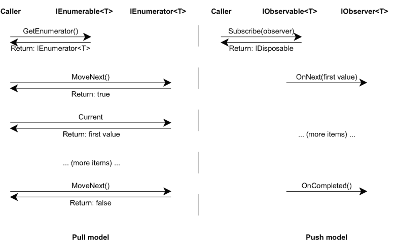Figure 12.8 Sequence diagram showing the duality of IEnumerable<T> and IObservable<T>
I suspect I’m not alone in finding the push model harder to think about, as it has the natural ability to work asynchronously — but look at how much simpler it is than the pull model, in terms of the flow diagram. This is partly due to the multiple method approach of the pull model: if IEnumerator<T> just had a method with a signature of bool TryGetNext (out T item), it’d be somewhat simpler.
Earlier I mentioned that LINQ to Rx is similar to the events we’re already familiar with. Calling Subscribe on an observable is like using += with an event to register a handler. The disposable value returned by Subscribe remembers the observer you passed in: disposing of it is like using -= with the same handler. In many cases you really don’t need to unsubscribe from the observable; it’s really available in case you need to unsubscribe halfway through a sequence — the equivalent of breaking out of a foreach loop early. Failing to dispose of an IDisposable value may feel like anathema to you, but it’s often safe in LINQ to Rx. None of the examples in this chapter will use the return value of Subscribe.
That’s all there is to IObservable<T> — but what about the observer itself? Why does it have three methods? Consider the normal pull model where for any Move-Next/Current pair of calls, three things can happen:
■ We may be at the end of the sequence, in which case MoveNext returns false.
■ We may not have reached the end of the sequence, in which case MoveNext returns true, and Current returns the new value.
■ An error may occur — we could fail to read the next line from a network connection, for example. In this case, an exception would be thrown.
The IObserver<T> interface represents each of these options as a separate method. Typically an observer will have its OnNext method called repeatedly, and then finally OnCompleted — unless there’s an error of some kind, in which case OnError will be called instead. After the sequence has completed or encountered an error, no further method calls will be made. You rarely need to implement IObserver<T> directly, though. There are many extension methods on IObservable<T>, including overloads for Subscribe. These allow you to subscribe to an observable by just providing appropriate delegates: usually you provide a delegate to be executed for each item, and then optionally one to be executed on completion, on error, or both.
With that bit of theory out of the way, we can see some actual code using LINQ to Rx.
12.5.2 Starting simply (again)
We’re going to demonstrate LINQ to Rx in the same way we started off with LINQ to Objects — using a range. Instead of Enumerable.Range, we’ll use Observable.Range, which creates an observable range. Each time an observer subscribes to the range, the numbers are emitted to that observer using OnNext, followed by OnCompleted. We’ll start off as simply as we can, just printing out each value as we receive it, and a confirmation message at the end or if an error occurs. The following listing shows that this is actually less code than you’d need for the pull model.
Listing 12.13 First contact with IObservable<T>
var observable = Observable.Range(0, 10);
observable.Subscribe(x => Console.WriteLine("Received {0}", x), e => Console.WriteLine("Error: {0}", e),
() => Console.WriteLine("Finished"));
In this case it’s hard to see how we could get an error, but I’ve included the error notification delegate for completeness. The results are as you’d expect:
Received 0 Received 1
Received 9 Finished
The observable returned by the Range method is known as a cold observable: it lies dormant until an observer subscribes to it, at which point it’ll emit the values to that individual observer. If you subscribe with another observer, that will see another copy of the range. This isn’t quite the same as a normal event such as a button click, where several observers could be subscribed to the same actual sequence of values — and the values may be effectively yielded whether there are any observers or not. (You can click a button even if there aren’t any event handlers attached, after all.) Sequences like this are known as hot observables. It’s important to know which type you’re dealing with, even though the same set of operations apply to both kinds.
Now that we’ve done the simplest thing possible, let’s try some familiar LINQ operators.
By now I'm sure you’re familiar with the pattern — there are various extension methods in a static class (called Observable, somewhat predictably) that perform appropriate transformations. We’ll look at just a few of the available operators, and think a little about what’s not available, and why it’s not.
FILTERING AND PROJECTING
Let’s jump straight into a query expression that takes a sequence of numbers, filters out the odd ones, and squares anything that’s left. We subscribe Console.WriteLine to the final result of the query, so that any items produced will be displayed. The following listing shows the code — look at how the query expression could easily be a LINQ to Objects query.
Listing 12.14 Filtering and projecting in LINQ to Rx
var numbers = Observable.Range(0, 10); var query = from number in numbers where number % 2 == 0 select number * number; query.Subscribe(Console.WriteLine);
For simplicity’s sake, I haven’t added handlers for completion or error — and using the conversion from the Console .WriteLine method group to an Action<int> keeps the code nice and short. This produces the same results it would in LINQ to Objects: 0, 4, 16 and so on. Let’s move on to grouping.
GROUPING
A group by query expression in LINQ to Rx produces a new IGroupedObservable<T> for each group — although what you then do with the grouping isn’t always obvious. For example, it’s not uncommon to have a nested subscription so that each time a new group is produced, you subscribe an observer to that group. The results within each group are produced as they’re received by the grouping construct — effectively it acts as a sort of redirection choice, like an usher at a play examining each person’s ticket as they arrive, and directing them to the relevant section of the theatre. By contrast, LINQ to Objects collects a whole group together before returning it — which means it has to read to the end of the sequence, buffering all the results.
The following listing shows an example of this nested subscription, and also demonstrates how group results are emitted.
Listing 12.15 Grouping numbers mod 3
var numbers = Observable.Range(0, 10); var query = from number in numbers
group number by number % 3; query.Subscribe(group => group.Subscribe
(x => Console.WriteLine("Value: {0}; Group: {1}", x, group.Key)));
The best way to understand this is probably to remember that dealing with groups in LINQ to Objects often involves having a nested foreach loop — so we have nested
subscriptions in LINQ to Rx. When in doubt, try to find the duality between the two data models. In LINQ to Objects we’d normally process each whole group in turn, whereas the order in LINQ to Rx means the output of listing 12.15 looks like this:
Value: 0; Group: 0 Value: 1; Group: 1 Value: 2; Group: 2 Value: 3; Group: 0 Value: 4; Group: 1 Value: 5; Group: 2 Value: 6; Group: 0 Value: 7; Group: 1 Value: 8; Group: 2 Value: 9; Group: 0
This makes perfect sense when you think of the push model — and in some cases it means that operations that would’ve required a lot of data buffering in LINQ to Objects can be implemented in LINQ to Rx much more efficiently. As a final example, let’s look at another operator that uses multiple sequences.
LINQ to Rx supplies a few overloads of SelectMany and the idea is still the same as in LINQ to Objects: each item in the original sequence produces a new sequence, and the result is the combination of all these new sequences, flattened. The following listing shows this in action — it’s a little like listing 11.16, when we first introduced
SelectMany in LINQ to Objects.
Listing 12.16 SelectMany producing multiple ranges
var query = from x in Observable.Range(1, 3) from y in Observable.Range(1, x) select new { x, y }; query.Subscribe(Console.WriteLine);
Here are the results, which should be reasonably predictable:
In this case, the results are deterministic, but that’s only because by default, Observable.Range emits items on the current thread. It’s entirely possible to have multiple sequences being produced on multiple threads. For fun, you might want to change the second call to Observable.Range to specify Scheduler.ThreadPool as a third argument. At that point, while each of the inner sequences comes out in order with respect to itself, those separate sequences can be mixed up amongst each other. Imagine a sports stadium with one official firing a starting pistol for several different races in quick succession: even if you know the winner of each race, you don’t know which race will finish first.
Apologies if this makes you want to go and lie down. If it’s any consolation, it gives me the same feeling. I do find it fascinating at the same time though.
We already know that a let clause works byjust calling Select, so that’s okay — but not all LINQ to Objects operators are implemented in LINQ to Rx. The missing operators are generally the ones that would have to buffer all their output and return a new observable. For example, there’s no Reverse method, and no OrderBy. C# is quite happy with that — it just won’t let you use an orderby clause in a query expression based on observables. There’s a Join method, but that doesn’t deal with observables directly — it handles join plans. This is part of the Rx implementation of the join-calculus, and well beyond the scope of this book. Likewise there’s no GroupJoin method, so join.. .into isn’t supported.
For the various LINQ standard query operators that aren’t covered by the query expression syntax — and to see the range of extra methods it makes available — see the System.Reactive documentation. Although you may start off being disappointed about the familiar functionality from LINQ to Objects that’s missing in LINQ to Rx (usually because it just doesn’t make sense), you may be surprised by how rich the set of available methods really is. Many of the new methods are then ported to LINQ to Objects in the System. Interactive assembly.
12.5.4 What’s the point?
I’m well aware that I haven’t provided any compelling reasons to use LINQ to Rx yet. This is deliberate, as I don’t intend to show a full, useful example — it’s incidental to the point of this chapter, and would take too much space. But Rx provides an elegant way of thinking about all kinds of asynchronous processes — normal .NET events (which can be viewed as an observable using Observable.FromEvent), asynchronous I/O, and calls to web services, for example. It provides a way of managing the complexity and concurrency in an efficient manner. There’s no doubt that it is harder to get your head around than LINQ to Objects, but if you’re in the kind of situation where it’d be useful, you’re already facing a mountain of complexity.
LINQ to Rx is a relatively young project, with the first release appearing on Dev-Labs in November 2009. If you’ve found this short introduction interesting, you should definitely take a closer look. The reason I wanted to cover Rx in this book, despite not being able to do it any sort of justice, is because it shows why LINQ was designed the way it was. Although there are conversion methods available between IEnumerable<T> and IObservable<T>, there’s no inheritance relationship — if the language had made any requirement that the types involved in LINQ had to be pull sequences, there would’ve been no query expression support for Rx at all. It would’ve been even more disastrous if extension methods had been limited to IEnumerable<T> in some way. Likewise, we’ve seen that not all the normal LINQ operators are applicable to Rx — which is why it’s important that the language specifies query translations in terms of a pattern that should be supported as far as it makes sense for the given provider. I hope you have a sense that even though the push and pull models are very different to work with, LINQ acts as a sort of unifying force where possible.
You may be relieved to hear that our last topic is a lot simpler — it’s back on the home ground of LINQ to Objects, but this time we’re writing our own extension methods.
12.6 Extending LINQ to Objects
One of the nice things about LINQ is that it’s extensible. Not only can you come up with your own query providers and data models, you can also add to existing ones. In my experience, the most common situation where this is useful is with LINQ to Objects. If you need a particular type of query that isn’t directly supported (or is awkward or inefficient with the standard query operators), you can write your own. Of course, writing a general-purpose generic method can be more challenging than just solving your immediate problem, but if you find yourself writing similar code a few times, it’s worth considering whether you could refactor it into a new operator.
Personally I enjoy writing query operators. There are interesting technical challenges, but it rarely requires a huge amount of code — and the results can be elegant. In this section we’ll look at some of the ways you can make your custom operators behave efficiently and predictably, followed by a full sample for selecting a random element from a sequence.
12.6.1 Design and implementation guidelines
Most of these may seem fairly obvious, but this section can form a useful checklist when you write an operator.
UNIT TESTS
It’s generally pretty easy to write a good set of unit tests for operators, although you may be surprised at how many you end up with for what originally appears to be simple code. Don’t forget to test corner cases such as empty sequences as well as invalid arguments. MoreLINQ has some helper methods in its unit test project that you may wish to use for your own tests.
ARGUMENT CHECKING
Good methods check their arguments... but there’s a problem when it comes to LINQ operators. Many operators return another sequence, as we’ve already seen — and iterator blocks are the easiest way to implement this functionality. But you should really perform the argument checking as soon as your method is called, rather than waiting until the caller decides to iterate over the results. If you’re going to use an iterator block, split your method into two: perform argument checking in a public method and then call a private method to do the iteration.
OPTIMIZATION
IEnumerable<T> itself is fairly weak in terms of the operations it supports, but the execution-time type of a sequence you’re working on may have considerably more
functionality. For example, the Count() operator will always work, but it’ll generally be an O(n) operation. If you call it on an implementation of ICollection<T>, though, it can use the Count property directly — which will generally be O(1). In .NET 4, this optimization is extended to cover ICollection as well. Likewise retrieving a specific element by index is slow in the general case, but can be efficient if the sequence implements IList<T>. If your operator can benefit from these optimizations, you can have different execution paths depending on the execution-time type. To test the slow path in unit tests, you can always call Select (x => x) on a List<T> to retrieve a nonlist sequence. LinkedList<T> can test the case where you want an ICollection<T> that doesn’t implement IList<T>.
DOCUMENTATION
It’s important to document what your code will do with its inputs, and also the expected performance of the operator. This is particularly important ifyour method needs to work with multiple sequences: which will be evaluated first, and how far? Does your code stream its data, buffer it, or a mixture? Does it use deferred or immediate execution? Can any parameters be null, and if so, does that have a special meaning?
ITERATE ONCE WHERE POSSIBLE
IEnumerable<T> will let you iterate over it multiple times — you can have multiple iterators active at the same time over the same sequence, potentially. But this is rarely a good idea within an operator. Wherever possible, it’s wise to iterate over your input sequences just once. This will mean your code will work even for nonrepeatable sequences, such as lines read from a network stream. If you do need to read the sequence multiple times (and you don’t want to buffer the whole sequence yourself like Reverse does), you should draw particular attention to this in the documentation.
REMEMBER TO DISpOSE OF ITERATORS
In most cases, you can use a foreach statement to iterate over your data source. But it’s sometimes useful to treat the first item differently, in which case using an iterator directly can lead to the simplest code. In that situation, remember to include a using block for the iterator. We’re not used to disposing of iterators ourselves because normally foreach does it for us, which can make it hard to spot the bug.
CUSTOM COMpARISONS
Many LINQ operators have overloads that allow you to specify an appropriate IEqualityComparer<T> or IComparer<T>. If you’re building a general-purpose library for others (potentially developers who you aren’t in contact with), it may be worth providing similar overloads yourself. On the other hand, if you’re the sole user, or it’s just going to be members of your team, you can do this on a need-to-implement basis. It’s easy though: typically the simpler overloads just call a more complex one, passing EqualityComparer<T>.Default or Comparer<T>.Default as the comparison.
Now that I’ve talked the talk, let’s check whether I can actually walk the walk.
The idea of our extension method is simple: given a sequence and an instance of Random, return a random element from the sequence. You could add an overload that didn’t require the instance of Random, but I prefer to make the dependency on a random number generator explicit. Randomness is a tricky topic for various reasons; rather than discuss it here, I’ve included an article on the book’s website (see http:// mng.bz/h483). Also for reasons of space, I haven’t included the XML documentation or unit tests in listing 12.17, but of course they’re in the downloadable code.
Listing 12.17 Extension method to choose a random element from a sequence
public static T RandomElement<T>(this IEnumerable<T> source,
Random random)
{
if (source == null)
{
throw new ArgumentNullException("source");
}
if (random == null)
{
throw new ArgumentNullException("random");
}
ICollection collection = source as ICollection; if (collection != null)
{
int count = collection.Count; if (count == 0)
{
throw new InvalidOperationException("Sequence was empty.");
}
int index = random.Next(count); return source.ElementAt(index);
}
using (IEnumerator<T> iterator = source.GetEnumerator())
{
if (!iterator.MoveNext())
{
throw new InvalidOperationException("Sequence was empty.");
}
int countSoFar = 1;
T current = iterator.Current; while (iterator.MoveNext())
{
countSoFar++;
if (random.Next(countSoFar) == 0)
{
current = iterator.Current;
}
}
return current;
Listing 12.17 doesn’t show the technique of splitting an extension method into argument validation and then implementation, because it doesn’t use an iterator block. Look back at our implementation of the Where operator in section 10.3.7 for an example of this. No custom comparisons are required either — but apart from that, every item on our checklist is appropriate.
First we validate our arguments in the obvious way O. In chapter 15 we’ll learn an alternative way of expressing preconditions using Code Contracts, but for now I’ve kept with normal exceptions. Things get more interesting at Q — we handle the case where the source sequence implements ICollection.84 This allows us to take the count cheaply, and then generate just a single random number to work out which element to pick. We don’t explicitly handle the case where the source sequence implements IList<T> — instead, we rely on ElementAt to do that for us (as it’s documented to do).
If we’re dealing with a noncollection sequence (such as the result of another query operator), we want to avoid taking the count and then picking an element: that would require us to either buffer the contents of the sequence or iterate over it twice. Instead we step through it once, explicitly fetching the iterator G so that we can test for an empty sequence easily. The clever bit85 is at Q — we replace our current idea of a random element with the element from the iterator with a probability of 1/ n, where n is the number of elements we’ve seen so far. So there’s a 1/2 chance of replacing the first element with the second, a 1/3 chance of replacing the result after two elements with the third element, and so on. The final result is that each element in the sequence has an equal chance of being picked, and we’ve managed to iterate just once.
Of course the important point isn’t what this particular method does — it’s the potential issues we had to think about as we implemented it. Once you know what to look for, it really doesn’t take much effort to implement a robust method like this, and your personal toolbox will grow over time.
12.7 Summary
Phew! This chapter has been the exact opposite of most of the rest of the book. Instead of focusing on a single topic in great detail, we’ve covered a range of LINQ technologies, but at a shallow level.
I wouldn’t expect you to feel particularly familiar with any one of the specific technologies we’ve looked at here, but I hope you have a deeper understanding of why LINQ is important. It’s not about XML, or in-memory queries, SQL queries, observables, or enumerators — it’s about consistency of expression, and giving the C# compiler the opportunity to validate your queries to at least some extent, regardless of their final execution platform.
You should now appreciate why expression trees are so important that they’re among the few framework elements that the C# compiler has direct intimate knowledge of (along with strings, IDisposable, IEnumerable<T>, and Nullable<T>, for example). They’re passports for behavior, allowing it to cross the border of the local machine, expressing logic in whatever foreign tongue is catered for by a LINQ provider.
It’s notjust expression trees — we’ve also relied on the query expression translation employed by the compiler, and the way that lambda expressions can be converted to both delegates and expression trees. Extension methods are also important, as without them each provider would have to give implementations of all the relevant methods. If you look back at all the new features of C#, you’ll find few that don’t contribute significantly to LINQ in some way or other. That’s part of the reason for this chapter’s existence: to show the connections between all the features.
I shouldn’t wax lyrical for too long, though — as well as the upsides of LINQ, we’ve seen a few gotchas. LINQ won’t always allow us to express everything we need in a query, nor does it hide all the details of the underlying data source. When it comes to database LINQ providers, the impedance mismatches that have caused developers so much trouble in the past are still with us: we can reduce their impact with ORM systems and the like, but without a proper understanding of the query being executed on your behalf, you’re likely to run into significant issues. In particular, don’t think of LINQ as a way of removing your need to understand SQL — just think of it as a way of hiding the SQL when you’re not interested in the details. Likewise, in order to plan an effective parallel query, you’ve got to know where ordering matters and where it doesn’t, and perhaps help the framework along a bit by giving it more tuning information.
Since .NET 3.5 came out, I’ve been delighted to see how wholeheartedly the community has embraced it. In that case I have the benefit of hindsight. I have little idea of how developers will take to the features of C# 4... but let’s dive into them in the final part of the book.
Part 4: C# 4: playing nicely with others
C# 4 is a funny beast. It doesn’t have the “several, almost unrelated, major new features” feeling of C# 2, nor the “all in the cause of LINQ” feeling of C# 3. Instead, the new features of C# 4 fall somewhere between the two. Interoperability is a major theme, but equally many of the features are useful even if you never need to work with other environments.
My personal favorite features from C# 4 are optional parameters and named arguments. They’re relatively simple, but can be put to good use in many places, improving the readability of code and generally making life more pleasant. Do you waste time working out which argument means what? Put some names on them. Are you tired of writing endless overloads to avoid callers having to specify everything? Make some parameters optional.
If you work with COM, C# 4 will be a breath of fresh air for you. To start with, the features I just described make some APIs much simpler to work with, where the component designers have pretty much assumed that you’ll be working with a language supporting optional parameters and named arguments. Beyond that there’s a better deployment story, support for named indexers, and a helpful shortcut to avoid having to pass arguments by reference everywhere. The biggest feature of C# 4 — dynamic typing — also makes COM integration easier.
We’ll look at all of these areas in chapter 13, along with the brain-busting topic of generic variance applied to interfaces and delegates. Don’t worry: we’ll take that reasonably slowly, and the best part is that most of the time you don’t need to know the details... itjust makes code work where you might’ve expected it to in C# 3 anyway!
Chapter 14 covers dynamic typing and the Dynamic Language Runtime (DLR). This is an enormous topic; I’ve concentrated on how the C# language implements dynamic typing, but we’ll also look at a few examples of interoperating with dynamic languages such as IronPython, and provide examples of how a type can dynamically respond to method calls, property accesses, and so on. It’s worth applying a little perspective here: the fact that this is a major feature doesn’t mean that you should expect to see dynamic expressions cropping up all over your codebase. This won’t be as pervasive as LINQ, for example — but when you do want dynamic typing, you’ll find it well-implemented in C# 4.
Chapter 15 takes us in a slightly different direction; Code Contracts aren’t implemented as a language feature of C# 4, but they still change how idiomatic C# 4 may be written. The core types used by Code Contracts are part of .NET 4, but they do little by themselves: the supporting tools really make the contracts come alive. Applying contracts to your code — in terms of preconditions, postconditions, assertions, and invariants — allows you to express elements of behavior that previously would’ve been left to documentation. How far you take Code Contracts is up to you, but it’s one of the most exciting and potentially cross-cutting pieces of technology in .NET 4.
Chapter 13: Minor changes to simplify code
This chapter covers
■ Optional parameters
■ Named arguments
■ Streamlining ref parameters in COM
■ Embedding COM primary interop assemblies
■ Calling named indexers declared in COM
■ Generic variance for interfaces and delegates
■ Changes in locking and field-like events
Just as in previous versions, C# 4 has a few minor features that don’t merit individual chapters to themselves. In fact, there’s only one really big feature in C# 4 — dynamic typing — which we’ll cover in the next chapter. The changes we’ll cover here just make C# that little bit more pleasant to work with, particularly if you work with COM on a regular basis. These features generally make code clearer, remove drudgery from COM calls, or simplify deployment.
Will any of those make your heart race with excitement? It’s unlikely. They’re nice features all the same, and some of them may be widely applicable. Let’s start by looking at how we call methods.
13.1 Optional parameters and named arguments
These are perhaps the Batman and Robin86 features of C# 4. They’re distinct, but usually seen together. I’m going to keep them apart for the moment so we can examine each in turn, but then we’ll use them together for some more interesting examples.
PARAMETERS AND ARGUMENTS This section obviously talks about parameters and arguments a lot. In casual conversation, the two terms are often used interchangeably, but I’m going to use them in line with their formal definitions. Just to remind you, a parameter (also known as a formal parameter) is the variable that’s part of the method or indexer declaration. An argument is an expression used when calling the method or indexer. So, for example, consider this snippet: void Foo(int x, int y)
{
// Do something with x and y
}
int a = 10;
Foo(a, 20);
Here the parameters are x and y, and the arguments are a and 2 0.
We’ll start by looking at optional parameters.
13.1.1 Optional parameters
Visual Basic has had optional parameters for ages, and they’ve been in the CLR from .NET 1.0. The concept is as obvious as it sounds: some parameters are optional, so their values don’t have to be explicitly specified by the caller. Any parameter that hasn’t been specified as an argument by the caller is given a default value.
MOTIVATION
Optional parameters are usually used when there are several values required for an operation, where the same values are used a lot of the time. For example, suppose you wanted to read a text file; you might want to provide a method that allows the caller to specify the name of the file and the encoding to use. The encoding is almost always UTF-8, though, so it’s nice to be able to use that automatically if it’s all you need.
Historically the idiomatic way of allowing this in C# has been to use method overloading: declare one method with all the possible parameters, and others that call that method, passing in default values where appropriate. For instance, you might create methods like this:
public IList<Customer> LoadCustomers(string filename,
Encoding encoding)
{
.. < — Do real work here
}
public IList<Customer> LoadCustomers(string filename)
{
return LoadCustomers(filename, Encoding.UTF8); <- Default to UTF-8
}
This works fine for a single parameter, but it becomes trickier when there are multiple options. Each extra option doubles the number of possible overloads, and if two of them are of the same type, you can have problems due to trying to declare multiple methods with the same signature. Often the same set of overloads is also required for multiple parameter types. For example, the XmlReader.Create () method can create an XmlReader from a Stream, a TextReader, or a string — but it also provides the option of specifying an XmlReaderSettings and other arguments. Due to this duplication, there are 12 overloads for the method. This could be significantly reduced with optional parameters. Let’s see how it’s done.
DECLARING OPTIONAL PARAMETERS AND OMITTING THEM WHEN SUPPLYING ARGUMENTS
Making a parameter optional is as simple as supplying a default value for it, using what looks like a variable initializer. Figure 13.1 shows a method with three parameters: two are optional, one is required.
Figure 13.1 Declaring optional parameters
All the method does is print out the arguments, but that’s enough to see what's going on. The following listing gives the full code and calls the method three times, specifying a different number of arguments for each call.
Listing 13.1 Declaring a method with optional parameters and calling
static void Dump(int x, int y = 20, int z = 30)
{
Console.WriteLine("x={0} y={1} z={2}", x, y, z);
}
Dump(1, 2, 3);
Dump(1, 2);
Dump(1);
The optional parameters are the ones with default values specified O. If the caller doesn’t specify y, its initial value will be 20, and likewise z has a default value of 30. The first call C explicitly specifies all the arguments; the remaining calls (© and E) omit one or two arguments respectively, so the default values are used. When there’s one argument missing, the compiler assumes that the final parameter has been omit-ted — then the penultimate one, and so on. The output is therefore
x=1 y=2 z=3 x=1 y=2 z=30 x=1 y=20 z=30
Note that although the compiler could use some clever analysis of the types of the optional parameters and the arguments to work out what’s been left out, it doesn’t: it
assumes that you’re supplying arguments in the same order as the parameters.2 This means that the following code is invalid:
static void TwoOptionalParameters(int x = 10,
string y = "default")
{
Console.WriteLine("x={0} y={1}", x, y);
}
TwoOptionalParameters("second parameter"); <- Error!
This tries to call the TwoOptionalParameters method specifying a string for the first argument. There’s no overload with a first parameter that’s convertible from a string, so the compiler issues an error. This is a good thing — overload resolution is tricky enough (particularly when generic type inference gets involved) without the compiler trying all kinds of different permutations to find something you might be trying to call. If you want to omit the value for one optional parameter but specify a later one, you need to use named arguments.
RESTRICTIONS ON OPTIONAL PARAMETERS
There are a few rules for optional parameters. All optional parameters must come after required parameters. The exception to this is a parameter array (as declared with the params modifier), which still has to come at the end of a parameter list, but can come after optional parameters. A parameter array can’t be declared as an optional parameter — if the caller doesn’t specify any values for it, an empty array will be used instead. Optional parameters can’t have ref or out modifiers either.
An optional parameter can be of any type, but there are restrictions on the default value specified. You can always use constants: numeric and string literals, null, const members, enum members, and the default(T) operator. Additionally, for value types, you can call the parameterless constructor, although this is equivalent to using the default (...) operator anyway. There has to be an implicit conversion from the specified value to the parameter type, but this must not be a user-defined conversion. Table 13.1 shows some examples of valid parameter lists.
Table 13.1 Valid method parameter lists using optional parameters
|
Declaration |
Notes |
|
|
Numeric literal used for default value Implicit built-in conversion from
String literal used for default value Zero value of |
2 Unless you’re using named arguments, of course — we’ll learn about those soon.
Table 13.1 Valid method parameter lists using optional parameters (continued)
|
Declaration |
Notes |
|
|
Default value operator works with type parameters Nullable conversion Parameter array after optional parameters |
By contrast, table 13.2 shows some invalid parameter lists and explains why they’re not allowed.
Table 13.2 Invalid method parameter lists using optional parameters
|
Declaration (invalid) |
Notes |
|
|
Required non-params parameter can't come after an optional parameter Default values must be constants Conversion from Parameter arrays can't be optional
|
The fact that the default value has to be constant is a pain in two different ways. One of them is familiar from a slightly different context, as we’ll see now.
VERSIONING AND OpTIONAL pARAMETERS
The restrictions on default values for optional parameters may remind you of the restrictions on const fields or attribute values, and they behave very similarly. In both cases, when the compiler references the value, it copies it directly into the output. The generated IL acts exactly as if your original source code had contained the default value. This means if you ever change the default value without recompiling everything that references it, the old callers will still be using the old default value. To make this concrete, imagine this set of steps:
1 Create a class library (Library.dll) with a class like this:
public class LibraryDemo {
public static void PrintValue(int value = 10)
{
System.Console.WriteLine(value);
}
}
2 Create a console application (Application.exe) that references the class library:
public class Program {
static void Main()
{
LibraryDemo.PrintValue();
}
}
3 Run the application — it’ll print 10, predictably.
4 Change the declaration of PrintValue as follows, then recompile just the class library:
public static void PrintValue(int value = 20)
5 Rerun the application — it’ll still print 10. The value has been compiled directly into the executable.
6 Recompile the application and rerun it — this time it’ll print 20.
This versioning issue can cause bugs that are hard to track down, because all the code looks correct. Essentially, you’re restricted to using genuine constants that should never change as default values for optional parameters.87 There’s one benefit of this setup: it gives the caller a guarantee that the value it knew about at compile-time is the one that’ll be used. Developers may feel more comfortable with that than with a dynamically computed value, or one that depends on the version of the library used at execution time.
Of course, this also means you can’t use any values that can’t be expressed as constants anyway — you can’t create a method with a default value of “the current time,” for example.
MAKING DEFAULTS MORE FLEXIBLE WITH NULLITY
Fortunately, there’s a way round this. Essentially you introduce a magic value to represent the default, and then replace that magic value with the real default within the method itself. If the phrase magic value bothers you, I’m not surprised — except we’re going to use null for the magic value, which already represents the absence of a normal value. If the parameter type would normally be a value type, we simply make it the corresponding nullable value type, at which point we can still specify that the default value is null.
As an example of this, let’s look at a similar situation to the one I used to introduce the whole topic: allowing the caller to supply an appropriate text encoding to a method, but defaulting to UTF-8. We can’t specify the default encoding as Encoding. UTF8 as that’s not a constant value, but we can treat a null parameter value as “use the default.” To demonstrate how we can handle value types, we’ll make the method append a timestamp to a text file with a message. We’ll default the encoding to UTF-8 and the timestamp to the current time. Listing 13.2 shows the complete code and a few examples of using it.
Listing 13.2 Using null default values to handle nonconstant situations
static void AppendTimestamp(string filename,
string message,
Encoding encoding = null, DateTime? timestamp = null)
{
Encoding realEncoding = encoding ?? Encoding.UTF8;
DateTime realTimestamp = timestamp ?? DateTime.Now; using (TextWriter writer = new StreamWriter(filename,
true,
realEncoding)) {
writer.WriteLine("{0:s}: {1}", realTimestamp, message);
}
}
AppendTimestamp("utf8.txt", "First message"); AppendTimestamp("ascii.txt", "ASCII", Encoding.ASCII); AppendTimestamp("utf8.txt", "Message in the future", null, new DateTime(2030, 1, 1));
Listing 13.2 shows a few nice features of this approach. First, we’ve solved the versioning problem. The default values for the optional parameters are null O, but the effective values are “the UTF-8 encoding” and “the current date and time.” Neither of these could be expressed as constants, and should we ever wish to change the effective default — for example to use the current UTC time instead of the local time — we could do so without having to recompile everything that called AppendTimestamp. Of course, changing the effective default changes the behavior of the method — you need to take the same sort of care over this as you would with any other code change. At this point, you (as the library author) are in charge of the versioning story — you’re taking responsibility for not breaking clients, effectively. At least it’s more familiar territory: you know that all callers will experience the same behavior, regardless of recompilation.
We’ve also introduced an extra level of flexibility. Not only do optional parameters mean we can make the calls shorter, but having a specific “use the default” value means that should we ever wish to, we can explicitly make a call allowing the method to choose the appropriate value. At the moment, this is the only way we know to specify the timestamp explicitly without also providing an encoding ©, but that’ll change when we look at named arguments.
The optional parameter values are simple to deal with thanks to the null coalescing operator Q. I’ve used separate variables for the sake of printed formatting, but in real code you’d probably use the same expressions directly in the calls to the Stream-Writer constructor and the WriteLine method.
There are two downsides to this approach: first, it means that if a caller accidentally passes in null due to a bug, it’ll get the default value instead of an exception. In cases where you’re using a nullable value type and callers will either explicitly use null or have a non-nullable argument, that’s not much of a problem — but for reference types it could be an issue.
On a related note, it requires that you don’t want to use null as a “real” value.88 There are occasions where you want null to mean null—and if you don’t want that to be the default value, you’ll have to find a different constant or just leave the parameter as a required one. But in other cases where there isn’t an obvious constant value that’ll clearly always be the right default, I’d recommend this approach to optional parameters as one that’s easy to follow consistently and removes some of the normal difficulties.
We’ll need to look at how optional parameters affect overload resolution, but it makes sense to wait until we’ve seen how named arguments work. Speaking of which...
13.1.2 Named arguments
The basic idea of named arguments is that when you specify an argument value, you can also specify the name of the parameter it’s supplying the value for. The compiler then makes sure that there is a parameter of the right name, and uses the value for that parameter. Even on its own, this can increase readability in some cases. In reality, named arguments are most useful in cases where optional parameters are also likely to appear, but we’ll look at the simple situation first.
INDEXERS, OPTIONAL PARAMETERS, AND NAMED ARGUMENTS You can use
optional parameters and named arguments with indexers as well as methods.
But this is only useful for indexers with more than one parameter: you can’t access an indexer without specifying at least one argument anyway. Given this limitation, I don’t expect to see the feature used much with indexers, and I haven’t demonstrated it in the book. It works exactly as you’d expect it to, though.
I’m sure we’ve all seen code that looks something like this:
MessageBox.Show("Please do not press this button again", // text "Ouch!"); // title
I’ve actually chosen a pretty tame example; it can get a lot worse when there are loads of arguments, especially if a lot of them are the same type. But this is still realistic: even with just two parameters, I’d find myself guessing which argument meant what based on the text when reading this code, unless it had comments like the ones I have here. There’s a problem though: comments can lie about the code they describe. Nothing is checking them at all. Named arguments ask the compiler to help.
All we need to do to the previous example is prefix each argument with the name of the corresponding parameter and a colon:
MessageBox.Show(text: "Please do not press this button again",
caption: "Ouch!");
Admittedly we now don’t get to choose the name we find most meaningful (I prefer title to caption) but at least we’ll know if we get something wrong. Of course, the most common way in which we could get something wrong here is to get the arguments the wrong way around. Without named arguments, this would be a problem: we’d end up with the pieces of text switched in the message box. With named arguments, the ordering becomes largely irrelevant. We can rewrite the previous code like this:
MessageBox.Show(caption: "Ouch!",
text: "Please do not press this button again");
We’d still have the right text in the right place, because the compiler would work out what we meant based on the names. For another example, look at the StreamWriter constructor call we used in listing 13.2. The second argument is just true — what does this mean? Is it going to force a stream flush after every write? Include a byte order mark? Append to an existing file instead of creating a new one? Here’s the equivalent call using named arguments:
new StreamWriter(path: filename, append: true, encoding: realEncoding)
In both of the examples, we’ve seen how named arguments effectively attach semantic meaning to values. In the never-ending quest to make our code communicate better with humans as well as computers, this is a definite step forward. I’m not suggesting that named arguments should be used when the meaning is already obvious, of course. Like all features, it should be used with discretion and thought.
NAMED ARGUMENTS WITH out AND ref If you want to specify the name of an argument for a ref or out parameter, you put the ref or out modifier after the name, and before the argument. So using int .TryParse as an example, you might have code like this:
int number;
bool success = int.TryParse("10", result: out number);
To explore some other aspects of the syntax, the following listing shows a method with three integer parameters, just like the one we used to start looking at optional parameters.
Listing 13.3 Simple examples of using named arguments
static void Dump(int x, int y, int z)
{
Console.WriteLine("x={0} y={1} z={2}", x, y, z);
}
Dump(x: 1, y: 2, z: 3);
Dump(z: 3, y: 2, x: 1);
The output is the same for each call in listing 13.3: static void Dump(int x, int y, int z)
x=1, y=2, z=3. We’ve effectively made the same method call in five different ways. It’s worth noting that there are no tricks in the method declaration O: you can use named arguments with any method that has parameters. First we call the method in the normal way, without using any new features ©. This is a sort of control point to make sure that the other calls really are equivalent. We then make two calls to the method using just named arguments ©. The second of these calls reverses the order of the arguments, but the result is still the same, because the arguments are matched up with the parameters by name, not position. Finally there are two calls using a mixture of named arguments and positional arguments ©. A positional argument is one that isn’t named — so every argument in valid C# 3 code is a positional argument from the point of view of C# 4. Figure 13.2 shows how the final line of code works.
All named arguments have to come after positional arguments — you can’t switch between the styles. Positional arguments always refer to the corresponding parameter in the method declaration — you can’t make positional arguments skip a parameter by specifying it later with a named argument. This means that these method calls would both be invalid:
■ Dump(z: 3, 1, y: 2) — Positional arguments must come before named ones.
■ Dump(2, x: 1, z: 3) — x has already been specified by the first positional argument, so we can’t specify it again with a named argument.
Now, although in this particular case the method calls have been equivalent, that’s not always the case. Let’s look at why reordering arguments might change behavior.
We’re used to C# evaluating its arguments in the order they’re specified — which, until C# 4, has always been the order in which the parameters have been declared too. In C# 4, only the first part is still true: the arguments are still evaluated in the order they’re written, even if that’s not the same as the order in which they’re declared as parameters. This matters if evaluating the arguments has side effects. It’s usually worth trying to avoid having side effects in arguments, but there are cases where it can make the code clearer. A more realistic rule is to try to avoid side effects that might interfere with each other. For the sake of demonstrating execution order, we’ll break both of these rules. Please don’t treat this as a recommendation that you do the same thing.
First we’ll create a relatively harmless example, introducing a method that logs its input and returns it — a sort of logging echo. We’ll use the return values of three calls to this to call the Dump method (which isn’t shown, as it hasn’t changed). Listing 13.4 shows two calls to Dump that result in slightly different output.
Listing 13.4 Logging argument evaluation
static int Log(int value)
{
Console.WriteLine("Log: {0}", value);
return value;
}
Dump(x: Log(1), y: Log(2), z: Log(3));
Dump(z: Log(3), x: Log(1), y: Log(2));
The results of running listing 13.4 show what happens:
Log: 1 Log: 2 Log: 3 x=1 y=2 z=3 Log: 3 Log: 1 Log: 2 x=1 y=2 z=3
In both cases, the parameters in the Dump method are still 1, 2, and 3, in that order. But we can see that although they were evaluated in that order in the first call (which was equivalent to just using positional arguments), the second call evaluated the value used for the z parameter first. We can make the effect even more significant by using side effects that change the results of the argument evaluation, as shown in the following listing, again using the same Dump method.
Listing 13.5 Abusing argument evaluation order
int i = 0;
Dump(x: ++i, y: ++i, z: + + i); i = 0;
Dump(z: ++i, x: ++i, y: + + i);
The results of listing 13.5 may be best expressed in terms of the blood spatter pattern at a murder scene, after someone maintaining code like this has gone after the original author with an axe. Yes, technically speaking the last line prints out x=2 y=3 z=1 but I’m sure you see what I’m getting at. Just say “no” to code like this. By all means, reorder your arguments for the sake of readability: you may think that laying out a call to MessageBox.Show with the title coming above the text in the code itself reflects the onscreen layout more closely, for example. If you want to rely on a particular evaluation order for the arguments, though, introduce some local variables to execute the relevant code in separate statements. The compiler won’t care either way — it’ll follow the rules of the spec — but this reduces the risk of a “harmless refactoring” that inadvertently introduces a subtle bug.
To return to cheerier matters, let’s combine the two features (optional parameters and named arguments) and see how much tidier the code can be.
13.1.3 Putting the two together
The two features work in tandem with no extra effort required on your part. It’s not uncommon to have a bunch of parameters where there are obvious defaults, but where it’s hard to predict which ones a caller will want to specify explicitly. Figure 13.3 shows just about every combination: a required parameter, two optional parameters, a positional
Figure 13.3 Mixing named arguments and optional parameters
argument, a named argument, and a missing argument for an optional parameter.
Going back to an earlier example, in listing 13.2 we wanted to append a timestamp to a file using the default encoding of UTF-8, but with a particular timestamp. Back then we just used null for the encoding argument, but now we can write the same code more simply, as shown in the following listing.
Listing 13.6 Combining named and optional arguments
static void AppendTimestamp(string filename,
string message,
Encoding encoding = null, DateTime? timestamp = null)
{
<- Same implementation as before
}
Named
timestamp
argument
AppendTimestamp("utf8.txt", "Message in the future", timestamp: new DateTime(2030, 1, 1));
In this fairly simple situation, the benefit isn’t particularly huge, but in cases where you want to omit three or four arguments but specify the final one, it’s a real blessing.
We’ve seen how optional parameters reduce the need for huge long lists of overloads, but one specific pattern where this is worth mentioning is with respect to immutability.
IMMUTABILITY AND OBJECT INITIALIZATION
One aspect of C# 4 that disappoints me somewhat is that it hasn’t done much explicitly to make immutability easier. Immutable types are a core part of functional programming, and C# has been gradually supporting the functional style more and more... except for immutability. Object and collection initializers make it easy to work with mutable types, but immutable types have been left out in the cold. (Automatically implemented properties fall into this category too.) Fortunately, though they’re not particularly designed to aid immutability, named arguments and optional parameters allow you to write object initializer-like code that just calls a constructor or other factory method. For instance, suppose we were creating a Message class, which required a from address, a to address, and a body, with the subject and attachment being optional.
(We’ll stick with single recipients in order to keep the example as simple as possible.) We could create a mutable type with appropriate writable properties, and construct instances like this:
Message message = new Message {
From = "skeet@pobox.com",
To = "csharp-in-depth-readers@everywhere.com",
Body = "Hope you like the second edition",
Subject = "A quick message"
};
That has two problems: first, it doesn’t enforce the required data to be provided. We could force those to be supplied to the constructor, but then (before C# 4) it wouldn’t be obvious which argument meant what:
Message message = new Message(
"csharp-in-depth-readers@everywhere.com",
"Hope you like the second edition")
{
Subject = "A quick message"
};
The second problem is that this initialization pattern simply doesn’t work for immutable types. The compiler has to call a property setter after it has initialized the object. But we can use optional parameters and named arguments to come up with something that has the nice features of the first form (only specifying what you’re interested in and supplying names) without losing the validation of which aspects of the message are required or the benefits of immutability. The following listing shows a possible constructor signature and the construction step for the same message as before.
Listing 13.7 Constructing an immutable message using C# 4
public Message(string from, string to,
string body, string subject = null, byte[] attachment = null)
{
<- Normal initialization code goes here
}
Message message = new Message( from: "skeet@pobox.com",
to: "csharp-in-depth-readers@everywhere.com",
body: "Hope you like the second edition",
subject: "A quick message"
);
I really like this in terms of readability and general cleanliness. You don’t need hundreds of constructor overloads to choose from, just one with some of the parameters being optional. The same syntax will also work with static creation methods, unlike object initializers. The only downside is that it really relies on your code being consumed by a language that supports optional parameters and named arguments;
otherwise callers will be forced to write ugly code to specify values for all the optional parameters. Obviously there’s more to immutability than getting values to the initialization code, but this is a welcome step in the right direction nonetheless.
There are a couple of final points to make around these features before we move on to COM, both around the details of how the compiler handles our code and the difficulty of good API design.
Clearly both named arguments and optional parameters affect how the compiler resolves overloads — if there are multiple method signatures available with the same name, which should it pick? Optional parameters can increase the number of applicable methods (if some methods have more parameters than the number of specified arguments) and named arguments can decrease the number of applicable methods (by ruling out methods that don’t have the appropriate parameter names).
For the most part, the changes are intuitive: to check whether any particular method is applicable, the compiler tries to build a list of the arguments it would pass in, using the positional arguments in order, then matching the named arguments up
with the remaining parameters. If a required parameter hasn’t been specified or if a
named argument doesn’t match any remaining parameters, the method isn’t applicable. The specification gives more detail around this in section 7.5.3, but there are two situations I’d like to draw particular attention to.
First, if two methods are both applicable and one of them has been given all of its arguments explicitly whereas the other uses an optional parameter filled in with a default value, the method that doesn’t use any default values will win. But this doesn’t extend to just comparing the number of default values used — it’s a strict “does it use default values or not” divide. For example, consider the following:
static void Foo(int x = 10) {}
static void Foo(int x = 10, int y = 20) {}
Foo();
Foo(1);
Foo(y: 2);
Foo(1, 2);
In the first call O, both methods are applicable because of their optional parameters. But the compiler can’t work out which one you meant to call: it’ll raise an error. In the second call ©, both methods are still applicable, but the first overload is used because it can be applied without using any default values, whereas the second overload uses the default value for y. For both the third and fourth calls, only the second overload is applicable. The third call © names the y argument, and the fourth call © has two arguments; both of these mean the first overload isn’t applicable.
OVERLOADS AND INHERITANCE DON’T ALWAYS MIX NICELY All of this is assuming that the compiler has gone as far as finding multiple overloads to choose between. If some methods are declared in a base type, but there are applicable methods in a more derived type, the latter will win. This has always been the case, and it can cause some surprising results (see http://mng.bz/aEmE)... but now optional parameters mean there may be more applicable methods than you’d expect.
I advise you to avoid overloading a base class method within a derived class unless you get a huge benefit.
The second point is that sometimes named arguments can be an alternative to casting in order to help the compiler resolve overloads. Sometimes a call can be ambiguous because the arguments can be converted to the parameter types in two different methods, but neither method is better than the other in all respects. For instance, consider the following method signatures and a call:
void Method(int x, object y) { ... }
void Method(object a, int b) { ... }
Method(10, 10); <- Ambiguous call
Both methods are applicable, and neither is better than the other. There are two ways to resolve this, assuming you can’t change the method names to make them unambiguous that way. (That’s my preferred approach. Make each method name more informative and specific, and the general readability of the code can go up.) You can either cast one of the arguments explicitly, or use named arguments to resolve the ambiguity:
void Method(int x, object y) { ... }
void Method(object a, int b) { ... }
Method(10, (object) 10); Method(x: 10, y: 10);
Of course this only works if the parameters have different names in the different methods — but it’s a handy trick to know. Sometimes the cast will give more readable code; sometimes the name will. It’s just an extra weapon in the fight for clear code. It does have a downside, along with named arguments in general: it’s another thing to be careful about when you change a method.
THE SILENT HORROR OF CHANGING NAMES
In the past, parameter names haven’t mattered much if you’ve only been using C#. Other languages may have cared, but in C# the only times that parameter names were important were when you were looking at IntelliSense and when you were looking at the method code itself. Now, the parameter names of a method are effectively part of the API even if you’re only using C#. If you change them at a later date, code can break — anything that was using a named argument to refer to one of your parameters will fail to compile if you decide to change it. This may not be much of an issue if your code is only consumed by itself anyway, but if you’re writing a public API, be aware that changing a parameter name is a big deal. It always has been really, but if everything calling the code was written in C#, we’ve been able to ignore that until now.
Renaming parameters is bad; switching the names around is worse. That way the calling code may still compile, but with a different meaning. A particularly evil form of
this is to override a method and switch the parameter names in the overridden version. The compiler will always look at the deepest override it knows about, based on the static type of the expression used as the target of the method call. You don’t want to get into a situation where calling the same method implementation with the same argument list results in different behavior based on the static type of a variable.
Named arguments and optional parameters are possibly two of the simplest-sounding features of C# 4 — and yet they still have a fair amount of complexity, as we’ve seen. The basic ideas are easily expressed and understood — and the good news is that most of the time that’s all you need to care about. You can take advantage of optional parameters to reduce the number of overloads you write, and named arguments can make code much more readable when several easily confusable arguments are used.
The trickiest bit is probably deciding which default values to use, bearing in mind potential versioning issues. Likewise it’s now more obvious than before that parameter names matter, and you need to be careful when overriding existing methods, to avoid being evil to your callers.
Speaking of evil, let’s move on to the new features relating to COM. I’m only kidding... mostly, anyway.
13.2 Improvements for COM interoperability
I readily admit to being far from a COM expert. When I tried to use it before .NET came along, I always ran into issues that were no doubt partially caused by my lack of knowledge and partially caused by the components I was working with being poorly designed or implemented. The overall impression of COM as a sort of black magic has lingered, though. I’ve been reliably informed that there’s a lot to like about it, but unfortunately I haven’t found myself going back to learn it in detail — and there seems to be a lot of detail to study.
THIS SECTION IS MICROSOFT-SPECIFIC The changes for COM interoperability won’t make sense for all C# compilers, and a compiler can still be deemed compliant with the specification without implementing these features.
.NET has made COM somewhat friendlier in general, but until now there have been distinct advantages to using it from Visual Basic instead of C#. The playing field has been leveled significantly by C# 4, as we’ll see in this section. For the sake of familiarity, I’m going to use Word for the example in this chapter, and Excel in the next chapter. There’s nothing Office-specific about the new features, though; you should find
the experience of working with COM to be nicer in C# 4 whatever you’re doing.
13.2.1 The horrors of automating Word before C# 4
Our example is going to be simple — it’s just going to start Word, create a document
with a single paragraph of text, save it, and then exit. Sounds easy, right? If only that were so. Listing 13.8 shows the code required before C# 4.
Listing 13.8 Creating and saving a document in C# 3
object missing = Type.Missing ;
Application app = new Application { Visible = true }; app.Documents.Add(ref missing, ref missing, ref missing, ref missing);
Document doc = app.ActiveDocument;
Paragraph para = doc.Paragraphs.Add(ref missing); para.Range.Text = "Thank goodness for C# 4";
object filename = "demo.doc";
object format = WdSaveFormat.wdFormatDocument97; doc.SaveAs(ref filename, ref format,
ref missing, ref missing, ref missing,
ref missing, ref missing, ref missing,
ref missing, ref missing, ref missing,
ref missing, ref missing, ref missing,
ref missing, ref missing);
doc.Close(ref missing, ref missing, ref missing); app.Application.Quit(ref missing, ref missing, ref missing);
Each step in this code sounds simple: first we create an instance of the COM type O and make it visible using an object initializer expression; then we create and fill in a new document ©. The mechanism for inserting some text into a document isn’t quite as straightforward as we might expect, but it’s worth remembering that a Word document can have a fairly complex structure: this isn’t as bad as it might be. A couple of the method calls here have optional by-reference parameters; we’re not interested in them, so we pass a local variable by reference with a value of Type.Missing. If you’ve ever done any COM work before, you’re probably very familiar with this pattern.
Next comes the really nasty bit: saving the document ©. Yes, the SaveAs method really does have 16 parameters, of which we’re only using 2. Even those 2 need to be passed by reference, which means creating local variables for them. In terms of readability, this is a complete nightmare. Don’t worry — we’ll soon sort it out.
Finally we close the document and the application E. Aside from the fact that both calls have three optional parameters that we don’t care about, there’s nothing interesting here.
Let’s start off by using the features we’ve already seen in this chapter — they can cut the example down significantly on their own.
13.2.2 The revenge of optional parameters and named arguments
First things first: let’s get rid of all those arguments corresponding to optional parameters we’re not interested in. That also means we don’t need the missing variable. That still leaves us with 2 parameters out of a possible 16 for the SaveAs method. At the moment it’s obvious which is which based on the local variable names — but what if we have them the wrong way around? All the parameters are weakly typed, so we’re really going on guesswork. We can easily give the arguments names to clarify the call.
If we wanted to use one of the later parameters we’d have to specify the name anyway, just to skip the ones we’re not interested in.
The following listing shows the code — it looks a lot cleaner already.
Listing 13.9 Automating Word using normal C# 4 features
Application app = new Application { Visible = true }; app.Documents.Add();
Document doc = app.ActiveDocument;
Paragraph para = doc.Paragraphs.Add(); para.Range.Text = "Thank goodness for C# 4";
object filename = "demo.doc";
object format = WdSaveFormat.wdFormatDocument97; doc.SaveAs(FileName: ref filename, FileFormat: ref format);
doc.Close();
app.Application.Quit();
That’s much better — although it’s still ugly to have to create local variables for the SaveAs arguments we are specifying. Also, if you’ve been reading carefully, you may be concerned about the optional parameters we’ve removed. They were ref parame-ters — but optional — which isn’t a combination C# supports normally. What’s going on?
13.2.3 When is a ref parameter not a ref parameter?
C# normally takes a pretty strict line on ref parameters. You have to mark the argument with ref as well as the parameter, to show that you understand what’s going on; that your variable may have its value changed by the method you’re calling. That’s all fine in normal code, but COM APIs often use ref parameters for almost everything for perceived performance reasons. They usually don’t actually modify the variable you pass in. Passing arguments by reference is slightly painful in C#. Not only do you have to specify the ref modifier, you also must have a variable. You can’t just pass values by reference.
In C# 4 the compiler makes this a lot easier by letting you pass an argument by value into a COM method, even if it’s for a ref parameter. Consider a call like this, where argument might happen to be a variable of type string, but the parameter is declared as ref object:
comObject.SomeMethod(argument);
The compiler emits code which is equivalent to this:
object tmp = argument; comObject.SomeMethod(ref tmp);
Note that any changes made by SomeMethod are discarded, so the call really does behave as if you were passing argument by value. This same process is used for optional ref parameters: each involves a local variable initialized to Type .Missing and passed by reference into the COM method. If you decompile the slimlined C# code, you’ll see that the IL emitted is actually pretty bulky with all of those extra variables.
We can now apply the finishing touches to our Word example, as shown in the following listing.
Listing 13.10 Passing arguments by value in COM methods
Application app = new Application { Visible = true }; app.Documents.Add();
Document doc = app.ActiveDocument;
Paragraph para = doc.Paragraphs.Add(); para.Range.Text = "Thank goodness for C# 4"; doc.SaveAs(FileName: "test.doc",
FileFormat: WdSaveFormat.wdFormatDocument97); doc.Close(); app.Application.Quit();
As you can see, the final result is much cleaner code than we started with. With an API like Word, you still need to work through a somewhat bewildering set of methods, properties, and events in the core types such as Application and Document, but at least your code will be a lot easier to read.
There’s one final aspect to the COM support we need to look at in terms of changes to the source code involved, before we see the deployment improvements available.
13.2.4 Calling named indexers
Several aspects of C# 4 involve providing support for features that Visual Basic has enjoyed for a long time — and this is another one. The CLR, COM, and Visual Basic all permit nondefault properties with parameters — named indexers in C# terms. Until version 4, C# has not only forbidden you to declare your own named indexers — it hasn’t provided a way of accessing them using property syntax either. The only indexer you can use from C# is the one declared as the default property for the type. This hasn’t been a great issue for .NET components written in Visual Basic, as named indexers are generally discouraged. But COM components such as those for Office use them more heavily. C# 4 allows you to call named indexers in a more natural fashion, but you still can’t declare them for your own C# types.
TERMINOLOGY CLASHES AGAIN I’ve used the term indexer throughout this section to describe what in VB terms would be known as a parameterized property.
The CLI specification calls it an indexed property. Whatever the terminology, it’s declared as a property in the IL, and it has parameters. The normal indexer (as far as C# is concerned) is defined by the default member (or default property) for the type — for example, the default member of StringBuilder is the Chars property (which has an Int32 parameter). When I talk about named indexers here, I’m talking about ones that aren’t the default for the type, so you have to refer to them by name.
We’ll use Word for the example again, this time showing the different meanings for words. The _Application type in Word defines an indexer called SynonymInfo with a declaration like this:
Synonymlnfo SynonymInfo[string Word,
ref object Languageld = Type.Missing]
That’s not valid C# syntax, because you can’t declare a named indexer — but hopefully it’s obvious what it means. The name of the indexer is Synonymlnfo. It returns a reference to a Synonymlnfo object and has two parameters, one of which is optional. (The fact that the name of the indexer and the name of the return type are the same in this case is entirely coincidental.) The Synonymlnfo can be used to find meanings for the word and synonyms for each meaning. The following listing shows three different ways of using the indexer to display the number of meanings for three different words.
Listing 13.11 Displaying synonym counts using a named indexer
static void ShowInfo(SynonymInfo info)
{
Console.WriteLine("{0} has {1} meanings", info.Word, info.MeaningCount);
}
Application app = new Application { Visible = false }; object missing = Type.Missing;
ShowInfo(app.get_SynonymInfo("painful", ref missing)); ShowInfo(app.SynonymInfo["nice", WdLanguageID.wdEnglishUS]); ShowInfo(app.SynonymInfo[Word: "features"]);
app.Application.Quit();
Even without named indexers, the previous features we’ve seen would’ve helped alleviate the pain of O; we could’ve called app.get_SynonymInfo("better") and taken advantage of optional parameters, for example. But you can see from C and © that the indexer syntax looks less awkward than the get_ call. You could argue that this should be a method call anyway, or that there should be a parameterless SynonymInfo property that returns a collection with an appropriate default indexer. That’s one case of the general argument given by the C# designers for not implementing full support for named indexers, including declaring them within C#. But the point is that it already is an indexer in Word, so it’s nice to be able to use it that way.89 C uses the implicit ref parameter feature from section 13.2.3, and © omits the optional parameter and names the remaining argument just for kicks.
There’s one slight twist to optional parameters and indexers: if all of the parameters are optional, and you don’t want to specify any arguments, you have to omit the square brackets. So instead of writing foo .Indexer[] you’d just use foo .Indexer. All of this applies both for getting from the indexer and setting to it.
So far, so good — but writing the code is only part of the battle. You usually need to be able to deploy it onto other machines as well. Again, C# 4 makes this task easier.
13.2.5 Linking primary interop assemblies
When you build against a COM type, you use an assembly generated for the component library. Usually you use a primary interop assembly or PIA, which is the canonical interop assembly for a COM library, signed by the publisher. You can generate these using the Type Library Importer tool (tlbimp) for your own COM libraries. PIAs make life easier in terms of having one true way of accessing the COM types, but they’re a pain in other ways. They can be quite large, and the whole PIA needs to be present even if you’re only using a small subset of the functionality. Also, you need to have the same version of the PIA on the deployment machine as the one you compiled against. This can be awkward in situations where licensing issues prevent you from redistributing the PIA itself, relying on the right version being installed already. If there are a number of versions available but they all expose the functionality you need, you might have to ship different versions of your code to make the references work.
C# 4 allows a very different approach. Instead of referencing a PIA like any other assembly, you can link it. In Visual Studio 2010 this is an option in the properties of the assembly reference, as shown in figure 13.4.
Command line fans can use the /l (or /link) option instead of /r (or /reference) to link instead of reference:
csc /l:Path\To\PIA.dll MyCode.cs
When you link a PIA, the compiler embeds just the bits it needs from the PIA directly into your own assembly. It only takes the types it needs, and only the members within those types. For example, the compiler creates these types for the code we’ve written in this chapter:
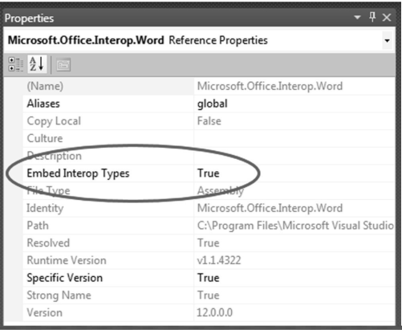Figure 13.4 Linking PIAs in Visual Studio 2010
namespace Microsoft.Office.Interop.Word {
[ComImport, TypeIdentifier, CompilerGenerated, Guid("...")] public interface _Application
[ComImport, TypeIdentifier, CompilerGenerated, Guid("...")] public interface _Document
[ComImport, CompilerGenerated, TypeIdentifier, Guid("...")] public interface Application : _Application
[ComImport, Guid("..."), TypeIdentifier, CompilerGenerated] public interface Document : _Document
[ComImport, TypeIdentifier, CompilerGenerated, Guid("...")] public interface Documents : IEnumerable
[TypeIdentifier("...", "WdSaveFormat"), CompilerGenerated] public enum WdSaveFormat
}
And if you look in the _Application interface, it looks like this:
[ComImport, TypeIdentifier, CompilerGenerated, Guid("...")] public interface _Application {
void _VtblGap 1_4();
Documents Documents { [... ] get; }
void _VtblGap2_1();
Document ActiveDocument { [...] get; }
}
I’ve omitted the GUIDs and the property attributes here just for the sake of space, but you can always use Reflector to look at the embedded types. These are just interfaces and enums — there’s no implementation. Whereas a normal PIA has a CoClass representing the actual implementation (but proxying everything to the real COM type of course), when the compiler needs to create an instance of a COM type via a linked PIA, it creates the instance using the GUID associated with the type. For example, the line in our Word demo that creates an instance of Application is translated into this code when linking is enabled:90
Application application = (Application) Activator.CreateInstance( Type.GetTypeFromCLSID (new Guid("...")));
Figure 13.5 shows how this works at execution time.
There are various benefits to embedding type libraries:
■ Deployment is easier: the original PIA isn’t needed, so you don’t have to rely on the right version being present already or ship the PIA yourself.
■ Versioning is simpler: so long as you only use members from the version of the COM library that’s actually installed, it doesn’t matter if you compile against an earlier or later PIA.
■ Variants are treated as dynamic types, reducing the amount of casting required.
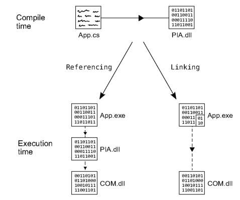Figure 13.5 Comparing referencing and linking
Don’t worry about the last point for now — I need to explain dynamic typing before it’ll make much sense. All will be revealed in the next chapter.
As you can see, Microsoft has really taken COM interoperability seriously for C# 4, making the whole development process less painful. Of course the degree of pain has always been variable depending on the COM library you’re developing against — some will benefit more than others from the new features.
Our next feature is entirely separate from COM, named arguments, and optional parameters, but again it eases development a bit.
13.3 Generic variance for interfaces and delegates
You may remember that in chapter 3 I mentioned that the CLR had some support for variance in generic types, but that C# hadn’t exposed that support yet. That’s changed with C# 4. C# has gained the syntax required to declare generic variance, and the compiler now knows about the possible conversions for interfaces and delegates.
This isn’t a life-changing feature — it’s more a case of flattening some speed bumps you may have hit occasionally. It doesn’t even remove all the bumps; there are various limitations, mostly in the name of keeping generics absolutely type-safe. But it’s still a nice feature to have up your sleeve.
Just in case you need a reminder of what variance is all about, let’s start with a recap of the two basic forms it comes in.
13.3.1 Types of variance: covariance and contravariance
In essence, variance is about being able to use an object of one type as if it were another, in a type-safe way. We’re used to variance in terms of normal inheritance: if a method has a declared return type of Stream, you can return a MemoryStream from the implementation, for example. Generic variance is the same concept, but applied to generics — where it becomes a bit more complicated. The variance is applied to the type parameters within the interfaces and delegate types. That’s the bit you need to concentrate on.
Ultimately, it doesn’t matter whether you remember the terminology I’m going to use in this section. It’ll be useful while you’re reading the chapter, but you’re unlikely to find yourself needing it in conversation. The concepts are far more important.
There are two types of variance: covariance and contravariance. They’re essentially the same idea, but used in the context of values moving in different directions. We’ll start with covariance, which is generally easier to understand.
COVARIANCE: VALUES COMING OUT OF AN API
Covariance is all about values being returned from an operation back to the caller. Let’s imagine a very simple generic interface representing the factory pattern. It has a single method, CreateInstance, which will return an instance of the appropriate type. Here’s the code:
interface IFactory<T>
{
T CreateInstance();
}
Now, T only occurs once in the interface (aside from the name). It’s only used as the return value—it’s the output of the method. That means it makes sense to be able to treat a factory of a specific type as a factory of a more general type. To put it in real-world terms, you can think of a pizza factory as a food factory.
CONTRAVARIANCE: VALUES GOING INTO AN API
Contravariance is the opposite way around. It’s about values being passed into the API by the caller: the API is consuming the values instead of producing them. Let’s imagine another simple interface — one that can pretty-print a particular document type to the console. Again, there’s just one method, this time called Print:
interface IPrettyPrinter<T>
{
void Print(T document);
}
This time T only occurs in the input positions in the interface, as a parameter. To put this into concrete terms again, if we had an implementation of IPrettyPrinter <SourceCode>, we should be able to use it as an IPrettyPrinter<CSharpCode>.
INVARIANCE: VALUES GOING BOTH WAYS
So if covariance applies when values only come out of an API, and contravariance applies when values only go into the API, what happens when a value goes both ways? In short: nothing. That type would be invariant. Here’s an interface representing a type that can serialize and deserialize a data type:
interface IStorage<T>
{
byte[] Serialize(T value);
T Deserialize(byte[] data);
}
This time, if we have an instance of IStorage<T> for a particular type T, we can’t treat it as an implementation of the interface for either a more or less specific type. If we
tried to use it in a covariant way (for example, using an IStorage<Customer> as an IStorage<Person>), we might make a call to Serialize with an object that it can’t handle. Similarly if we tried to use it in a contravariant way, we might get an unexpected type out when we deserialized some data.
If it helps, you can think invariance as being like ref parameters: to pass a variable by reference, it has to be exactly the same type as the parameter itself, because the value goes into the method and effectively comes out again too.
13.3.2 Using variance in interfaces
C# 4 allows you to specify in the declaration of a generic interface or delegate that a type parameter can be used covariantly by using the out modifier, or contravariantly using the in modifier. Once the type has been declared, the relevant types of conversion are available implicitly. This works exactly the same way in both interfaces and delegates, but I’ll show them separately for clarity. Let’s start with interfaces, as they may be a bit more familiar — and we’ve used them already to describe variance.
VARIANT CONVERSIONS ARE REFERENCE CONVERSIONS Any conversion using variance or covariance is a reference conversion, which means that the same reference is returned after the conversion. It doesn’t create a new object; it just treats the existing reference as if it matched the target type. This is the same as casting between reference types in a hierarchy: if you cast a Stream to MemoryStream (or use the implicit conversion the other way) there’s still just one object.
The nature of these conversions introduces some limitations, as we’ll see later, but it means they’re efficient, and makes the behavior easier to understand in terms of object identity.
This time we’ll use familiar interfaces to demonstrate the ideas, with some simple user-defined types for the type arguments.
EXPRESSING VARIANCE WITH IN AND OUT
There are two interfaces that demonstrate variance particularly effectively: IEnumera-ble<T> is covariant in T, and IComparer<T> is contravariant in T. Here are their new type declarations in .NET 4:
public interface IEnumerable<out T> public interface IComparer<in T>
It’s easy enough to remember — if a type parameter is only used for output, you can use out; if it’s only used for input, you can use in. The compiler doesn’t know whether you can remember which form is called covariance and which is called contravariance!
Unfortunately the framework doesn’t contain many inheritance hierarchies that would help us demonstrate variance particularly clearly, so I’ll fall back to the standard object-oriented example of shapes. The downloadable source code includes the definitions for IShape, Circle, and Square, which are fairly obvious. The interface exposes properties for the bounding box of the shape and its area. I’m going to use two lists a lot in the following examples, so I’ll show their construction code just for reference:
List<Circle> circles = new List<Circle>
{
new Circle(new Point(0, 0), 15), new Circle(new Point(10, 5), 20),
};
List<Square> squares = new List<Square>
{
new Square(new Point(5, 10), 5), new Square(new Point(-10, 0), 2)
};
The only important point concerns the types of the variables — they’re declared as List<Circle> and List<Square> rather than List<IShape>. This can often be use-ful — if we were to access the list of circles elsewhere, we might want to get at circle-specific members without having to cast, for example. The actual values involved in the construction code are entirely irrelevant; I’ll use the names circles and squares elsewhere to refer to the same lists, but without duplicating the code.91
USING INTERFACE COVARIANCE
To demonstrate covariance, we’ll try to build a list of shapes from a list of circles and a list of squares. The following listing shows two different approaches, neither of which would’ve worked in C# 3.
Listing 13.12 Building a list of general shapes from lists of circles and squares
List<IShape> shapesByAdding = new List<IShape>(); shapesByAdding.AddRange(circles); shapesByAdding.AddRange(squares);
List<IShape> concat = circles.Concat<IShape>(squares)
.ToList();
Effectively, listing 13.12 shows covariance in four places, each converting a sequence of circles or squares into a sequence of general shapes, as far as the type system is concerned. First we create a new List<IShape> and call AddRange to add the circle and square lists to it O. (We could’ve passed one of them into the constructor instead, then just called AddRange once.) The parameter for List<T>.AddRange is of type IEnumerable<T>, so in this case we’re treating each list as an IEnumerable <IShape> — something that wouldn’t have been possible before. AddRange could have been written as a generic method with its own type parameter, but it wasn’t — doing this would’ve made some optimizations hard or impossible.
Another way of creating a list that contains the data in two existing sequences is to use LINQ ©. We can’t directly call circles .Concat (squares), as it would confuse the
type inference mechanism, but by specifying the type argument explicitly, all is well. Both circles and squares are implicitly converted to IEnumerable<IShape> via covariance. This conversion isn’t actually changing the value — just how the compiler treats the value. It isn’t building a separate copy, which is the important point. Covariance is particularly important in LINQ to Objects, as so much of the API is expressed in terms of IEnumerable<T> — contravariance isn’t as important, as fewer of the types involved are contravariant.
In C# 3 there would certainly have been other ways to approach the same problem. We could’ve built List<IShape> instances instead of List<Circle> and List<Square> for the original shapes; we could’ve used the LINQ Cast operator to convert the specific lists to more general ones; we could’ve written our own list class with a generic AddRange method. None of these would’ve been as convenient or as efficient as the alternatives offered here.
USING INTERFACE CONTRAVARIANCE
We’ll use the same shape types to demonstrate contravariance. This time we’ll only use the list of circles, but a comparer that’s able to compare any two shapes by just comparing the areas. We couldn’t do this before C# 4 because an IComparer<IShape> couldn’t be used as an IComparer<Circle>, but the following listing shows contravari-ance coming to the rescue.
Listing 13.13 Sorting circles using a general-purpose comparer and contravariance
class AreaComparer : IComparer<IShape>
{
public int Compare(IShape x, IShape y)
{
return x.Area.CompareTo(y.Area);
}
}
IComparer<IShape> areaComparer = new AreaComparer();
circles.Sort(areaComparer);
There’s nothing complicated here. Our AreaComparer class O is about as simple as an implementation of IComparer<T> can be; it doesn’t need any state, for example. There’d normally be some null handling in the Compare method, but that’s not necessary to demonstrate variance.
Once we have an IComparer<IShape>, we’re using it to sort a list of circles C. The argument to circles.Sort needs to be an IComparer<Circle>, but contravariance allows us to convert our comparer implicitly. It’s as simple as that.
SURPRISE, SURPRISE If someone had presented you with this code as if it were C# 3, you might’ve looked at it and expected it to work. It seems obvious that it should be able to work, and this is a common feeling; the invariance in C# 2 and 3 often is an unwelcome surprise. The new abilities of C# 4 in this area aren’t introducing new concepts you’d never have thought of before; they just allow you more flexibility.
These have both been simple examples using single-method interfaces, but the same principles apply for more complex APIs. Of course, the more complex the interface is, the more likely that a type parameter will be used for both input and output, which would make it invariant. We’ll come back to some tricky examples later, but first we’ll look at delegates.
13.3.3 Using variance in delegates
Now that we’ve seen how to use variance with interfaces, applying the same knowledge to delegates is easy. We’ll use some familiar types again:
delegate T Func<out T>() delegate void Action<in T>(T obj)
These are really equivalent to the IFactory<T> and IPrettyPrinter<T> interfaces we started off with. Using lambda expressions, we can demonstrate both of these easily, and even chain the two together. The following listing shows an example using our shape types.
Listing 13.14 Using variance with simple Func<T> and Action<T> delegates
Func<Square> squareFactory = () => new Square(new Point(5, 5), 10); Func<IShape> shapeFactory = squareFactory;
Action<IShape> shapePrinter = shape => Console.WriteLine(shape.Area); Action<Square> squarePrinter = shapePrinter;
squarePrinter(squareFactory()); shapePrinter(shapeFactory());
Hopefully by now the code will need little explanation. Our square factory always produces a square at the same position, with sides of length 10. Covariance allows us to treat a square factory as a general shape factory O with no fuss. We then create a general-purpose action that prints out the area of whatever shape is given to it. This time we use a contravariant conversion to treat the action as one that can be applied to any square ©. Finally, we feed the square action with the result of calling the square factory, and the shape action with the result of calling the shape factory. Both print 100, as we’d expect.
Of course we’ve only used delegates with a single type parameter here. What happens if we use delegates or interfaces with multiple type parameters? What about type arguments that are themselves generic delegate types? Well, it can all get quite complicated.
13.3.4 Complex situations
Before I try to make your head spin, I should provide a little comfort. Although we’ll be doing some weird and wonderful things, the compiler will stop you from making mistakes. You may still get confused by the error messages if you’ve used several type parameters in funky ways, but once you have it compiling you should be safe.
Complexity is possible in both the delegate and interface forms of variance, although the delegate version is usually more concise to work with. Let’s start off with a relatively simple example.
SIMULTANEOUS COVARIANCE AND CONTRAVARIANCE WITH Converter<TInput, TOutput>
The Converter<TInput, TOutput> delegate type has been around since .NET 2.0. It’s effectively Func<T, TResult> but with a clearer expected purpose. In .NET 4, this becomes Converter<in TInput, out TOutput>, which shows which type parameter has which kind of variance. The following listing shows a few combinations of variance using a simple converter.
Listing 13.15 Demonstrating covariance and contravariance with a single type
Converter<object, string> converter = x => x.ToString();
Converter<Button, string> contravariance = converter;
Converter<object, object> covariance = converter;
Converter<Button, object> both = converter;
Listing 13.15 shows the variance conversions available on a delegate of type Converter<object, string>: a delegate that takes any object and produces a string. First we implement the delegate using a simple lambda expression that calls ToString O. As it happens, we never actually call the delegate, so we could’ve just used a null reference, but I think it’s easier to think about variance if you can pin down a concrete action that would happen if you called it.
The next two lines are relatively straightforward, so long as you only concentrate on one type parameter at a time. The TInput type parameter is only used in an input position, so it makes sense that you can use it contravariantly, using a Converter <object, string> as a Converter<Button, string>. In other words, if you can pass any object reference into the converter, you can certainly hand it a Button reference. Likewise the TOutput type parameter is only used in an output position (the return type) so it makes sense to use that covariantly: if the converter always returns a string reference, you can safely use it where you only need to guarantee that it’ll return an object reference.
The final line Q is just a logical extension of this idea. It uses both contravariance and covariance in the same conversion, to end up with a converter that only accepts buttons and only declares that it’ll return an object reference. Note that you can’t convert this back to the original conversion type without a cast — we’ve essentially relaxed the guarantees at every point, and you can’t tighten them up again implicitly.
Let’s up the ante a little, and see just how complex things can get if you try hard enough.
HIGHER-ORDER FUNCTION INSANITY
The really weird stuff starts happening when you combine variant types together. I’m not going to go into a lot of detail here — I just want you to appreciate the potential for complexity. Let’s look at four delegate declarations:
delegate Func<T> FuncFunc<out T>();
delegate void ActionAction<out T>(Action<T> action); delegate void ActionFunc<in T>(Func<T> function); delegate Action<T> FuncAction<in T>();
Each of these declarations is equivalent to nesting one of the standard delegates inside another. For example, FuncAction<T> is equivalent to Func<Action<T>>. Both represent a function that will return an Action which can be passed a T. But should this be covariant or contravariant? Well, the function is going to return something to do with T, so it sounds covariant — but that something then takes a T so it sounds contravariant. The answer is that the delegate is contravariant in T, which is why it’s declared with the in modifier.
As a quick rule of thumb, you can think of nested contravariance as reversing the previous variance, whereas covariance doesn’t — so whereas Action<Action<T>> is covariant in T, Action<Action<Action<T>>> is contravariant. Compare that with Func<T> variance, where you can write Func<Func<Func<...Func<T>...>>> with as many levels of nesting as you like and still get covariance.
Just to give a similar example using interfaces, let’s imagine we have something that can compare sequences. If it can compare two sequences of arbitrary objects, it can certainly compare two sequences of strings — but not vice versa. Converting this to code (without implementing the interface!), we can see this as
IComparer<IEnumerable<object>> objectsComparer = ...; IComparer<IEnumerable<string>> stringsComparer = objectsComparer;
This conversion is legal: IEnumerable<string> is a “smaller” type than IEnumerable <object> due to the covariance of IEnumerable<T>; the contravariance of IComparer <T> then allows the conversion from a comparer of a “bigger” type to a comparer of a smaller type.
Of course we’ve only used delegates and interfaces with a single type parameter in this section — it can all apply to multiple type parameters too. Don’t worry, though: you’re unlikely to need this sort of brain-busting variance very often, and when you do you have the compiler to help you. I really just wanted to make you aware of the possibilities.
On the flip side, there are some things you may expect to be able to do, but which aren’t supported.
13.3.5 Restrictions and notes
The variance support provided by C# 4 is mostly limited by what’s provided by the CLR. It’d be hard for the language to support conversions that were prohibited by the underlying platform. This can lead to a few surprises.
NO VARIANCE FOR TYPE PARAMETERS IN CLASSES
Only interfaces and delegates can have variant type parameters. Even if you have a class that only uses the type parameter for input (or only uses it for output), you can’t specify the in or out modifiers. For example Comparer<T>, the common
implementation of IComparer<T>, is invariant — there’s no conversion from Comparer<IShape> to Comparer<Circle>.
Aside from any implementation difficulties that this might’ve incurred, I’d say it makes a certain amount of sense conceptually. Interfaces represent a way of looking at an object from a particular perspective, whereas classes are more rooted in the object’s actual type. This argument is weakened somewhat by inheritance letting you treat an object as an instance of any of the classes in its inheritance hierarchy, admittedly. Either way, the CLR doesn’t allow it.
VARIANCE ONLY SUPPORTS REFERENCE CONVERSIONS
You can’t use variance between two arbitrary type arguments just because there’s a conversion between them. It has to be a reference conversion. Basically that limits it to conversions which operate on reference types and which don’t affect the binary representation of the reference. This is so that the CLR can know that operations will be type-safe without having to inject any actual conversion code anywhere. As I mentioned in section 13.3.2, variant conversions are themselves reference conversions, so there wouldn’t be anywhere for the extra code to go anyway.
In particular, this restriction prohibits any conversions of value types and user-defined conversions. For example, the following conversions are all invalid:
■ IEnumerable<int> to IEnumerable<object> — Boxing conversion
■ IEnumerable<short> to IEnumerable<int> — Value type conversion
■ IEnumerable<string> to IEnumerable<XName> — User-defined conversion
User-defined conversions aren’t likely to be a problem as they’re relatively rare, but you may find the restriction around value types a pain.
OUT PARAMETERS AREN’T OUTPUT POSITIONS
This one came as a surprise to me, although it makes sense in retrospect. Consider a delegate with the following definition:
delegate bool TryParser<T>(string input, out T value)
You might expect that you could make T covariant — after all, it’s only used in an output position... or is it? The CLR doesn’t really know about out parameters. As far as it’s concerned, they’re just ref parameters with an [Out] attribute applied to them. C# attaches special meaning to the attribute in terms of definite assignment, but the CLR doesn’t. However, ref parameters mean data going both ways, so if you have a ref parameter of type T, that means T is invariant.
In fact, even if the CLR did support out parameters natively, it still wouldn’t be safe, because it can be used in an input position within the method itself: after you’ve written to the variable, you can read from it as well. It’d be okay if out parameters were treated as “copy value at return time,” but it essentially aliases the argument and parameter — which would cause problems if they weren’t exactly the same type. It’s slightly fiddly to demonstrate, but there’s an example on the book’s website.
Delegates and interfaces using out parameters are rare, so this may never affect you anyway, but it’s worth knowing about just in case.
VARIANCE HAS TO BE EXpLICIT
When I introduced the syntax for expressing variance — applying the in or out modifiers to type parameters — you may have wondered why we needed to bother at all. The compiler is able to check that whatever variance you try to apply is valid — so why doesn’t itjust apply it automatically ?
It could do that — at least in many cases — but I’m glad it doesn’t. Normally you can add methods to an interface and only affect implementations rather than callers. But if you’ve declared that a type parameter is variant and you then want to add a method which breaks that variance, all the callers are affected too. I can see this causing a lot of confusion. Variance requires some thought about what you might want to do in the future, and forcing developers to explicitly include the modifier encourages them to plan carefully before committing to variance.
There’s less of an argument for this explicit nature when it comes to delegates: any change to the signature that would affect the variance would probably break existing uses anyway. But there’s a lot to be said for consistency — it would feel odd if you had to specify the variance in interfaces but not in delegate declarations.
BEWARE OF BREAKING CHANGES
Whenever new conversions become available, there’s the risk of your current code breaking. For instance, if you rely on the results of the is or as operators not allowing for variance, your code will behave differently when running under .NET 4. Likewise there are cases where overload resolution will choose a different method due to there being more applicable options now. This is another reason for variance to be explicitly specified: it reduces the risk of breaking your code.
These situations should be quite rare, and the benefit from variance is more significant than the potential drawbacks. You do have unit tests to catch subtle changes, right? In all seriousness, the C# team takes code breakage very seriously, but sometimes there’s no way of introducing a new feature without breaking code.
MULTICAST DELEGATES AND VARIANCE DON’T MIX
Normally, generics make sure that unless you have casts involved, you won’t run into type-safety issues at execution time. Unfortunately, there’s a nasty situation with variant delegate types when it comes to combining them together. This is best demonstrated in code:
Func<string> stringFunc = () => "";
Func<object> objectFunc = () => new object();
Func<object> combined = objectFunc + stringFunc;
This compiles with no problem, because there’s a covariant reference conversion from an expression of type Func<string> to Func<object>. But the object itself is still a Func<string> — and the Delegate.Combine method that actually does the work requires its arguments to be the same type — otherwise it doesn’t know what type of
Download from Wow! eBook <www.wowebook.com>
delegate it’s meant to create. The preceding code will throw an ArgumentException at execution time.
This problem was found relatively late in the .NET 4 release cycle, but Microsoft is aware of it and there is hope that it may be fixed for the majority of cases in a future release. Until then, there’s a workaround: you can create a new delegate object of the correct type based on the variant one, and combine that with another delegate of the same type. For example, we can modify the preceding code slightly to make it work:
Func<string> stringFunc = () => "";
Func<object> defensiveCopy = new Func<object>(stringFunc);
Func<object> objectFunc = () => new object();
Func<object> combined = objectFunc + defensiveCopy;
Fortunately this is rarely an issue in my experience.
NO CALLER-SPECIFIED OR PARTIAL VARIANCE
This is really a matter of interest and comparison rather than anything else, but it’s worth noting that C#’s variance is very different to Java’s system. Java’s generic variance manages to be extremely flexible by approaching it from the other side: instead of the type itself declaring the variance, code using the type can express the variance it needs.
WANT TO KNOW MORE? This book isn’t about Java generics, but if this little teaser has piqued your interest, you may want to check out Angelika Langer’s Java Generics FAQ (http://mng.bz/3qgO). Be warned: it’s a huge and complex topic!
For example, the List<T> interface in Java is roughly equivalent to IList<T> in C#. It contains methods to both add items and fetch them, so clearly in C# it’s invariant — but in Java you can decorate the type at the calling code to explain what variance you want. The compiler then stops you from using the members that go against that variance. For example, the following code would be perfectly valid:
List<Shape> shapes1 = new ArrayList<Shape>();
List<? super Square> squares = shapes1; squares.add(new Square(10, 10, 20, 20));
List<Circle> circles = new ArrayList<Circle>(); circles.add(new Circle(10, 10, 20));
List<? extends Shape> shapes2 = circles; Shape shape = shapes2.get(0);
For the most part, I prefer generics in C# to Java, and type erasure in particular can be a pain in many cases. But I find this treatment of variance really interesting. I don’t expect to see anything similar in future versions of C# — so think carefully about how you can split your interfaces to allow for flexibility, but without introducing more complexity than is really warranted.
Just before I close the chapter, there are two almost trivial changes to cover — how the C# compiler handles lock statements and field-like events.
13.4 Teeny tiny changes to locking and field-like events
I don’t want to make too much of these changes: chances are they’ll never affect you. But if you’re ever looking at compiled code and wondering why it looks the way it does, it’s helpful to know what’s going on.
13.4.1 Robust locking
Let’s consider a simple piece of C# code that uses a lock. The details of what happens inside the block aren’t important, but I’ve included a single statement just for the sake of clarity:
lock (listLock)
{
list.Add("item");
}
Prior to C# 4 — and including C# 4 if you’re targeting anything earlier than .NET 4 — that would effectively be compiled into this code:
Monitor.Enter(tmp); try
{
list.Add("item");
}
finally
{
Monitor.Exit(tmp);
}
This is nearly okay — in particular, it avoids a couple of problems. We want to make sure that we release the same monitor we acquire, so first we copy the reference into a temporary local variable O. This also means that the locking expression is only evaluated once. Next we acquire the lock before the try block. This is so that we don’t try to release the lock in the finally block if the thread is aborted without successfully acquiring it in the first place. That leads to a different problem: now if the thread is aborted after the lock is acquired but before we enter the try block, we won’t have released the lock. That could feasibly lead to a deadlock — another thread could be waiting eternally for this one to release the lock. Though the CLR has historically tried hard to stop this from happening, it’s not quite impossible.
What we want is some way of atomically acquiring the lock and knowing that it was acquired. Fortunately that’s exposed in .NET 4 via a new overload to Monitor.Enter, which the C# 4 compiler uses in this way:
bool acquired = false; object tmp = listLock; try
{
Monitor.Enter(tmp, ref acquired); list.Add("item");
}
finally {
if (acquired)
{
Monitor.Release(tmp);
}
}
Now the lock will be released if and only if we successfully acquired it in the first place, consistently. It should be noted that in some cases a deadlock isn’t the worst result (see http://mng.bz/Qy7p): occasionally it’s more dangerous for an application to continue at all than for it to simply halt. But it’d be ridiculous to rely on the deadlock condition; better to avoid aborting threads if at all possible. (Aborting the currently executing thread is somewhat better, as you’re in more control — this is what Response. Redirect does in ASP.NET, for example — but I’d still generally suggest finding better forms of flow control.)
There’s one last tweak to cover before we move on to the really big feature of C# 4.
13.4.2 Changes to field-like events
Finally, there are two changes to the way field-like events are implements in C# 4 that are worth mentioning briefly. They’re unlikely to affect you, although they’re potentially breaking changes. Just to recap, field-like events are events that are declared as if they’re fields, with no explicit add/remove blocks, like this:
public event EventHandler Click;
First, the way that thread safety is achieved has been changed: before C# 4, field-like events resulted in code that would lock on either this (for instance events) or the declaring type (for static events). As of C# 4, the compiler achieves thread-safe, atomic subscription and unsubscription using Interlocked.CompareExchange<T>. Unlike the previous change to the lock statement, this applies even when targeting earlier versions of the .NET framework.
Second, the meaning of the event’s name within the declaring class has changed. Previously, if you subscribed to (or unsubscribed from) the event within the class that contained the declaration — such as with Click += DefaultClickHandler; — that would go straight to the backing field, skipping the add/remove implementation completely. Now, it doesn’t — when you’re using += or -=, the name of the event refers to the event itself, not the backing field. When the name is used for any other purpose (typically assignment or invocation), it still refers directly to the backing field.
These are both sensible changes that make everything neater, although you probably wouldn’t have noticed them in daily use. Chris Burrows goes into the topic in detail in his blog; if you want to know more (see http://mng.bz/Kyr4).
This has been a bit of a pick-and-mix chapter, with various distinct areas. Having said that, COM greatly benefits from named arguments and optional parameters, so there’s some overlap between them.
I suspect it’ll take a while for C# developers to get the hang of how best to use the new features for parameters and arguments. Overloading still provides extra portability for languages that don’t support optional parameters, and named arguments may look strange in some situations until you get used to them. The benefits can be significant, though, as I demonstrated with the example of building instances of immutable types. You’ll need to take some care when assigning default values to optional parameters, but I hope that you’ll find the suggestion of using null as a “default default value” to be a useful and flexible one that effectively sidesteps some of the limitations and pitfalls you might otherwise encounter.
Working with COM has come a long way for C# 4. I still prefer to use purely managed solutions where they’re available, but at least the code calling into COM is a lot more readable now, as well as having a better deployment story. We haven't seen all of the improvements to COM interop yet, as the dynamic typing features we’ll see in the next chapter impact on COM too, but even without taking that into account we’ve seen a short sample become a lot more pleasant just by applying a few simple steps.
Our last major topic was the generic variance now available for interfaces and delegates. Sometimes you may end up using variance without even knowing it, and I think most developers are more likely to use the variance declared in the framework interfaces and delegates rather than creating their own. I apologise if it occasionally became tricky, but it’s good to knowjust what’s out there. If it’s any consolation to you, C# team member Eric Lippert has publicly acknowledged in a blog post (see http:// mng.bz/79d8) that higher-order functions make even his head hurt, so we’re in good company. Eric’s post is one in a long series about variance (see http://mng.bz/94H3), which is as much as anything a dialogue about the design decisions involved. If you haven’t had enough of variance by now, it’s an excellent read.
For the sake of completeness we also took a quick peek at the changes to how the C# compiler handles locking and field-like events.
This chapter dealt with relatively small changes to C#. Chapter 14 deals with something far more fundamental: the ability to use C# in a dynamic manner.
Chapter 14: Dynamic binding in a static language
This chapter covers
■ What it means to be dynamic
■ How to use dynamic typing in C# 4
■ Examples with COM, Python, and reflection
■ How dynamic typing is implemented
■ Reacting dynamically
C# has always been a statically typed language, with no exceptions. There have been a few areas where the compiler has looked for particular names rather than interfaces, such as finding appropriate Add methods for collection initializers, but there’s been nothing truly dynamic in the language beyond normal polymorphism. That changes with C# 4 — at least partially. The simplest way of explaining it is that there’s a new static type called dynamic, which you can try to do almost anything with at compile time and let the framework sort it out at execution time. Of course there’s more to it than that, but that’s the executive summary.
Given that C# is still a statically typed language everywhere that you’re not using dynamic, I don’t expect fans of dynamic programming to suddenly become
C# advocates. That’s not the main point of the feature: it’s largely about interoperability. As dynamic languages such as IronRuby and IronPython join the .NET ecosystem, it’d be crazy not to be able to call into C# code from IronPython and vice versa. Likewise, developing against weakly typed COM APIs has always been awkward in C#, with an abundance of casts cluttering the code. Dynamic typing addresses all of these concerns.
One word of warning — I’ll be repeating this throughout the chapter — it’s worth being careful with dynamic typing. It’s fun to explore, and it’s been well implemented, but I still recommend that you think carefully before using it heavily. Just like any other new feature, weigh the pros and cons rather than rushing into itjust because it’s neat (which it undoubtedly is). The framework does a fine job of optimizing dynamic code, but it’ll be slower than static code in most cases. More importantly, you lose a lot of compile-time safety. Whereas unit testing will help you find a lot of the mistakes that can crop up when the compiler isn’t able to help you much, I still prefer the immediate feedback of the compiler telling me if I’m trying to use a method that doesn’t exist or can’t be called with a given set of arguments.
On the other hand, there are situations where the level of safety given to you by the compiler isn’t very strong to start with. For example, there are far more things that can go wrong with code that uses reflection than just the errors a compiler can spot. If you’re trying to invoke a method given its name, does that method exist? Is it accessible to your code? Are you providing appropriate arguments? The compiler can’t help you with any of that. The equivalent dynamic code still can’t spot those errors at compile time, but at least the code may be considerably easier to read and understand. It’s all a matter of using the most appropriate approach for the particular problem you’re working on.
Dynamic behavior can be useful in situations where you’re naturally dealing with dynamic environments or data, but if you’re really looking to write large chunks of your code dynamically, I suggest you use a language where that’s the normal style instead of the exception. C# is still obviously a language that was designed for static typing: languages that have been dynamic from the start often have various features to help you work more productively with dynamic behavior. Now that you can easily call into such languages from C#, you can fairly easily separate out the parts of your code that benefit from a largely dynamic style from those where static typing works better.
I don’t want to put too much of a damper on things: where dynamic typing is useful, it can be a lot simpler than the alternatives. In this chapter we’ll look at the basic rules of dynamic typing in C# 4, and then dive into some examples: using COM dynamically, calling into some IronPython code, and making reflection a lot simpler. You can do all of this without knowing details, but after we have the flavor of dynamic typing, we’ll look at what’s going on under the hood. In particular, we’ll discuss the Dynamic Language Runtime and what the C# compiler does when it encounters dynamic code. Finally, we’ll see how you can make your own types respond dynamically to methods calls, property accesses, and the like. First, let’s take a step back.
14.1 What? When? Why? How?
Before we get to any code showing off this new feature of C# 4, it’s worth getting a better handle on why it was introduced in the first place. I don’t know any other languages that have gone from being purely static to partially dynamic; this is a significant step in C#’s evolution, whether you use it often or only occasionally.
We’ll start by taking a fresh look at what dynamic and static mean, consider some of the major use cases for dynamic typing in C#, and then delve into how it’s implemented in C# 4.
14.1.1 What is dynamic typing?
In chapter 2, I discussed the characteristics of a type system and described how C# has previously been a statically typed language. The compiler knows the type of expressions in the code, and knows the members available on any type. It applies a fairly complex set of rules to determine which exact member should be used when. This includes overload resolution; the only choice left until later is to pick the implementation of virtual methods depending on the execution-time type of the object. The process of working out which member to use is called binding, and in a statically typed language it occurs at compile time.
In a dynamically typed language, all of this binding occurs at execution time. A compiler or parser can check that the code is syntactically correct, but it can’t check that the methods you call and the properties you access are actually present. It’s a bit like a word processor with no dictionary: it may be able to check your punctuation, but not your spelling. (If you’re to have any sort of confidence in your code, you really need a good set of unit tests.) Some dynamic languages are always interpreted, with no compiler involved at all. Others provide both an interpreter and a compiler, to allow rapid development with a REPL: a read, evaluate, print loop.
REPL AND C# Strictly speaking, REPL isn’t solely associated with dynamic languages. Some statically typed languages have interpreters that actually compile on the fly. Notably, F# comes with a tool called F# Interactive which does exactly this. But interpreters are much more common for dynamic languages than static ones.
C# does have similar tools: the expression evaluator underlying the Watch and Immediate windows in Visual Studio can be considered a form of REPL, and Mono has a C# Shell (see http://mng.bz/nek9).
It’s worth noting that the new dynamic features of C# 4 do not include interpreting C# source code at execution time: there’s no direct equivalent of the JavaScript eval function, for example. To execute code based on data in strings, you need to use either the CodeDOM API (and CSharpCodeProvider in particular) or simple reflection to invoke individual members.
Of course, the same kind of work has to be done at some point in time no matter what approach you’re taking. By asking the compiler to do more work before execution, static systems usually perform better than dynamic ones. Given the downsides we’ve
mentioned so far, you might be wondering why anyone would want to bother with dynamic typing in the first place.
14.1.2 When is dynamic typing useful, and why?
Dynamic typing has two important points in its favor. First, if you know the name of a member you want to call, the arguments you want to call it with, and the object you want to call it on, that’s all you need. That may sound like all the information you could have anyway, but the C# compiler would normally want to know more. Crucially, in order to identify the member exactly (modulo overriding), it’d need to know the type of the object you’re calling it on, and the types of the arguments. Sometimes you just don’t know those types at compile time, even though you do know enough to be sure that the member will be present and correct when the code actually runs.
For example, if you know that the object you’re using has a Length property you want to use, it doesn’t matter whether it’s a String, a StringBuilder, an Array, a Stream, or any of the other types with that property. You don’t need that property to be defined by some common base class or interface — which can be useful if there isn’t such a type. This is called duck typing, from the notion that “if it walks like a duck and quacks like a duck, I’d call it a duck.”92 Even when there is a type that offers everything you need, it can sometimes be irritating to tell the compiler exactly which type you’re talking about. This is particularly relevant when using Microsoft Office APIs via COM. Many methods and properties are declared to just return VARIANT, which means that C# code using these calls is often peppered with casts. Duck typing allows you to omit all of these casts, so long as you’re confident about what you’re doing.
The second important feature of dynamic typing is the ability of an object to respond to a call by analyzing the name and arguments provided to it. It can behave as if the member had been declared by the type in the normal way, even if the member names couldn’t possibly be known until execution time. For example, consider the following call:
books.FindByAuthor("Joshua Bloch")
Normally this would require the FindByAuthor member to be declared by the designer of the type involved. In a dynamic data layer, there can be a single smart piece of code to analyse calls like this. It can detect that there’s an Author property in the associated data (whether that’s from a database, XML document, hardcoded data, or anything else) and act accordingly: in this case, it would decide that you want to perform a query using the specified argument as the author. In some ways, this is just a more complex way of writing something like:
books.Find("Author", "Joshua Bloch")
But the first snippet feels more appropriate: the calling code knows the Author part statically, even if the receiving code doesn’t. This approach can be used to mimic domain-specific languages (DSLs) in some situations. It can also be used to create a natural API for exploring data structures such as XML trees.
Another feature of programming with dynamic languages tends to be an experimental style of programming using an appropriate interpreter, as I mentioned earlier. This isn’t directly relevant to C# 4, but the fact that C# 4 can interoperate richly with dynamic languages running on the DLR (Dynamic Language Runtime) means that if you’re dealing with a problem that would benefit from this style, you’ll be able to use the results directly from C# instead of having to port it to C# afterward.
We’ll look at these scenarios in more depth when we’ve learned the basics of C# 4’s dynamic abilities, so we can see more concrete examples. It’s worth briefly pointing out that if these benefits don’t apply to you, dynamic typing is more likely to be a hindrance than a help. Many developers won’t need to use dynamic typing much in their day-to-day coding, and even when it is required, it may only be for a small part of the code. Just like any feature, it can be overused; in my view it’s usually worth thinking carefully about whether any alternative designs would allow static typing to solve the same problem elegantly. But I’m biased due to having a background in statically typed languages — it’s worth reading books on dynamically typed languages such as Python and Ruby to see a wider variety of benefits than the ones I present in this chapter.
You’re probably getting anxious to see some real code by now, so we’ll just take a moment to get a brief overview of what’s going on, and then dive into some examples.
14.1.3 How does C# 4 provide dynamic typing?
C# 4 introduces a new type called dynamic. The compiler treats this type differently than any normal CLR type.93 Any expression that uses a dynamic value causes the compiler to change its behavior in a radical way. Instead of trying to work out exactly what the code means, binding each member access appropriately, performing overload resolution, and so on, the compiler just parses the source code to work out what kind of operation you’re trying to perform, its name, what arguments are involved, and any other relevant information. Instead of emitting IL to execute the code directly, the compiler generates code that calls into the Dynamic Language Runtime with all the required information. The rest of the work is then performed at execution time.
In many ways this is similar to the different kinds of code generated by lambda expression conversions. These can either just result in code to perform the required actions (when converting to a delegate type) or result in code that builds a description of the required actions (when converting to an expression tree). We’ll see later that expression trees are extremely important in the DLR, and in many cases the C# compiler will use expression trees to describe the code. (In the simplest cases where there’s nothing but a member invocation, there’s no need for an expression tree.)
When the DLR comes to bind the relevant call at execution time, it goes through a complicated process to determine what should happen. This not only has to take in the normal C# rules for method overloads and so on, but also the possibility that the object itself will want to be part of the decision, as we saw in our FindByAuthor example earlier.
Most of this happens under the hood — the source code you write to use dynamic typing can be really simple.
14.2 The five-minute guide to dynamic
Do you remember how many new bits of syntax were involved when you learned about LINQ? Well dynamic typing is just the opposite: there’s a single contextual keyword, dynamic, which you can use in most places where you’d use a type name. That’s all the new syntax that’s required, and the main rules about dynamic are easily expressed, if you don’t mind a bit of hand-waving to start with:
■ An implicit conversion exists from almost any CLR type to dynamic.
■ An implicit conversion exists from any expression of type dynamic to almost any CLR type.
■ Expressions that use a value of type dynamic are usually evaluated dynamically.
■ The static type of a dynamically evaluated expression is usually deemed to be
dynamic.
The detailed rules are more complicated, as we’ll see in section 14.4, but for the moment let’s stick with the simplified version. The following listing provides a complete example demonstrating each point.
Listing 14.1 Using dynamic to iterate through a list, concatenating strings
dynamic items = new List<string> { "First", "Second", "Third" }; dynamic valueToAdd = "!"; foreach (dynamic item in items)
{
string result = item + valueToAdd;
Console.WriteLine(result);
}
The result of listing 14.1 shouldn’t come as much of a surprise: it writes out “First!”, “Second!”, and “Third!”. We could easily have specified the types of the items and valueToAdd variables explicitly in this case, and it would all have worked in the normal way — but imagine that the variables are getting their values from other data sources instead of having them hardcoded. What would happen if we wanted to add an integer instead of a string? The next listing is just a slight variation, but note that we haven’t changed the declaration of valueToAdd; just the assignment expression.
Listing 14.2 Adding integers to strings dynamically
dynamic items = new List<string> { "First", "Second", "Third" }; dynamic valueToAdd = 2;
foreach (dynamic item in items)
{
string result = item + valueToAdd; Console.WriteLine(result);
}
This time the first result is “First2” — which is hopefully what you’d expect. Using static typing, we’d have to explicitly change the declaration of valueToAdd from string to int. The addition operator is still building a string, though. What if we changed the items to be integers as well? Let’s try that one simple change, as shown in the following listing.
Listing 14.3 Adding integers to integers
dynamic items = new List<int> {1, 2, 3};
dynamic valueToAdd = 2; foreach (dynamic item in items)
{
string result = item + valueToAdd; Console.WriteLine(result);
}
Disaster! We’re still trying to convert the result of the addition to a string. The only conversions that are allowed are the same ones that are present in C# normally, so there’s no conversion from int to string. The result is an exception (at execution time, of course):
Unhandled Exception:
Microsoft.CSharp.RuntimeBinder.RuntimeBinderException:
Cannot implicitly convert type 'int' to 'string'
at CallSite.Target(Closure , CallSite , Object ) at System.Dynamic.UpdateDelegates.UpdateAndExecute1[T0,TRet]
(CallSite site, T0 arg0)
Unless you’re perfect, you’re likely to encounter RuntimeBinderException a lot when you start using dynamic typing. It’s the new NullReferenceException, in some ways: you’re bound to come across it, but with any luck it’ll be in the context of unit tests rather than customer bug reports. Anyway, we can fix it by changing the type of result to dynamic, so that the conversion isn’t required anyway. Come to think of it, why bother with the result variable in the first place? Let’s just call Console.WriteLine immediately. The following listing shows the changes.
Listing 14.4 Adding integers to integers — but without the exception
dynamic items = new List<int> { 1, 2, 3 }; dynamic valueToAdd = 2; foreach (dynamic item in items)
{
Console.WriteLine(item + valueToAdd);
}
Now this prints 3, 4, 5 as we’d expect. Changing the input data would now not only change the operator that was chosen at execution time — it would also change which
overload of Console.WriteLine was called. With the original data, it would call Console.WriteLine(string); with the updated variables, it would call Console. WriteLine (int). The data could even contain a mixture of values, making the exact call change on every iteration!
You can use dynamic as the declared type for fields, parameters, and return types as well. This is in stark contrast to the use of var, which is restricted to local variables.
DIFFERENCES BETWEEN var AND dynamic In many of the examples so far, when we’ve really known the types at compile time, we could’ve used var to declare the variables. At first glance, the two features look very similar. In both cases it looks like we’re declaring a variable without specifying its type — but using dynamic we’re explicitly setting the type to be dynamic. You can only use var when the compiler is able to infer the type you mean statically, and the type system really does remain entirely static.
Of course, if you use var for a variable that’s initialized with an expression of type dynamic, the variable ends up being (statically) typed to be dynamic too. Given the confusion this could cause, I strongly recommend against it.
The compiler is smart about the information it records, and the code that then uses that information at execution time is clever too: basically it’s a mini C# compiler in its own right. It uses whatever static type information was known at compile time to make the code behave as intuitively as possible. Other than a few details of what you can’t do with dynamic typing, that’s all you really need to know in order to start using it in your own code. Later on we’ll come back to those restrictions, as well as details of what the compiler is actually doing — but first let’s see dynamic typing doing something genuinely useful.
14.3 Examples of dynamic typing
Dynamic typing is a bit like unsafe code, or interoperability with native code using P/Invoke. Many developers will have no need for it, or use it once in a blue moon. For other developers — particularly those dealing with Microsoft Office — it’ll give a huge productivity boost, either by making their existing code simpler or by allowing radically different approaches to their problems.
This section isn’t meant to be exhaustive by any means, and I look forward to seeing innovative uses of dynamic typing from C# in the coming years. Will unit testing and mocking take a big step forward with new frameworks? Will we see dynamic web service clients, accessing RESTful services with simple member access? I’m not going to make any predictions, other than that it’ll be an interesting area to keep can eye on.
We’re going to look at three examples here: working with Excel, calling into Python, and using normal managed .NET types in a more flexible way.
14.3.1 COM in general, and Microsoft Office in particular
We’ve already seen most of the new features C# 4 brings to COM interop, but there was one that we couldn’t cover in chapter 13 because we hadn’t seen dynamic typing
yet. If you choose to embed the interop types you’re using into the assembly (by using the /l compiler switch, or setting the Embed Interop Types property to true) then anything in the API that would otherwise be declared as object is changed to dynamic. This makes it much easier to work with somewhat weakly typed APIs such as those exposed by Office. (Although the object model in Office is reasonably strong in itself, many properties are exposed as variants because they can deal with numbers, strings, dates, and so on.)
Again, I’ll just show you a short example here — one that does even less than the Word example in chapter 13. The dynamic aspect is easy to understand from this one scenario. We’re going to set the first 20 cells of the top row of a new Excel worksheet to the numbers 1 to 20. The following listing shows an initial, statically typed piece of code to achieve this.
Listing 14.5 Setting a range of values with static typing
var app = Application { Visible = true }; app.Workbooks.Add();
Worksheet worksheet = (Worksheet) app.ActiveSheet;
Range start = (Range) worksheet.Cells[1, 1];
Range end = (Range) worksheet.Cells[1, 20];
worksheet.Range[start, end].Value = Enumerable.Range(1, 20)
.ToArray();
This time we’ve imported the Microsoft. Office. Interop .Excel namespace — so the Application type refers to Excel, not Word. We’re still using the new features of C# 4, by not specifying an argument for the optional parameter in the Workbooks.Add() call while we’re setting things up O and also by using a named indexer Q. When Excel is up and running, we work out the start and end cells of our overall range. In this case they’re both on the same row, but we could’ve created a rectangular range instead by selecting two opposite corners. We could have created the range in a single call to Range["A1:T1" ] but I personally find it easier to work with numbers consistently. Cell names like B3 are great for humans, but harder to use in a program.
Once we have the range, we set all the values in it by setting the Value property with an array of integers G. We can use a one-dimensional array, as we’re only setting a single row; to set a range spanning multiple rows we’d need to use a rectangular array. This all works, but we’ve had to use three casts in six lines of code. The indexer we call via Cells and the ActiveSheet property are both declared to return object normally. (Various parameters are also declared as type object, but that doesn’t matter as much because there’s an implicit conversion from any nonpointer type to object — only coming the other way requires the cast.) For simplicity’s sake I haven’t closed Excel at the end of the listing — it’s easier to just see the open worksheet than to save it to a file in code, close the application, and then load up the file separately to check that it’s worked.
With the primary interop assembly set to embed the required types into our own binary, all of these examples become dynamic. With the implicit conversion from dynamic to other types, we canjust remove all the casts, as shown in the following listing.
Listing 14.6 Using implicit conversions from dynamic in Excel
var app = new Application { Visible = true }; app.Workbooks.Add();
Worksheet worksheet = app.ActiveSheet;
Range start = worksheet.Cells[1, 1];
Range end = worksheet.Cells[1, 20];
worksheet.Range[start, end].Value = Enumerable.Range(1, 20)
.ToArray();
This is exactly the same code as listing 14.5 but without the casts. But it’s worth noting that the conversions are still checked at execution time. If we changed the declaration of start to be Worksheet, the conversion would fail and an exception would be thrown. Of course, you don’t have to perform the conversion. You could just leave everything as dynamic, as shown in the following listing.
Listing 14.7 Using dynamic everywhere
var app = new Application { Visible = true }; app.Workbooks.Add();
dynamic worksheet = app.ActiveSheet; dynamic start = worksheet.Cells[1, 1]; dynamic end = worksheet.Cells[1, 20];
worksheet.Range[start, end].Value = Enumerable.Range(1, 20)
.ToArray();
Which is clearer? I’m an old-fashioned static typing fan, so I prefer the previous version. It states the types I expect on each line, so if there are any problems, I get to find out immediately rather than waiting until I try to use a value in a way that may not be supported. In terms of productivity when initially developing, there are pros and cons both ways. Using dynamic, I don’t need to work out which particular type I really expect; I can just use the value and so long as all the necessary operations are supported, I’m okay. On the other hand, using static typing I can see what’s available at every stage via IntelliSense. We’re still using dynamic typing to provide the implicit conversion to Worksheet and Range — we’re just using it for one step at a time rather than wholesale. The change from static typing to dynamic may not look like much to start with because the example is relatively simple — but as the complexity of the code increases, so does the readability benefit of removing all those casts.
In some ways this has all been a blast from the past — COM is a relatively old technology. Now we’re going to jump to interoperating with something much more recent: IronPython.
14.3.2 Dynamic languages such as IronPython
In this section I’m only going to use IronPython as an example, but of course that’s not the only dynamic language available for the DLR. It’s arguably the most mature, but there are already alternatives such as IronRuby and IronScheme. One of the stated aims of the DLR is to make it easier for budding language designers to create a working language that has good interoperability with other DLR languages and the traditional .NET languages such as C#, as well as access to the huge .NET framework libraries.
WHY WOULD I WANT TO USE IRONPYTHON FROM C#?
There are many reasons you might want to interoperate with a dynamic language, just as it’s been beneficial to interoperate with other managed languages from .NET's infancy. It’s clearly useful for a VB developer to be able to use a class library written in C# and vice versa — so why would the same not be true of dynamic languages? I asked Michael Foord, the author of Iron Python in Action, to come up with a few ideas for using IronPython within a C# application. Here’s his list:
■ User scripting
■ Writing a layer of your application in IronPython
■ Using Python as a configuration language
■ Using Python as a rules engine with rules stored as text (even in a database)
■ Using a library that’s available in Python, but has no similar .NET equivalent
■ Putting a live interpreter into your application for debugging
If you’re still skeptical, you might want to consider that embedding a scripting language in a mainstream application is far from uncommon — Sid Meier’s Civilization IV computer game94 is scriptable with Python. This isn’t just an afterthought for modifications, either — a lot of the core gameplay is written in Python. Once they’d built the engine, the developers found it to be a more powerful development environment than they’d originally imagined.
For this chapter, I’m going to pick the single example of using Python as a configuration language. Just as with the COM example, I’m going to keep it simple, but hopefully it’ll provide enough of a starting point for you to experiment more with it if you’re interested.
GETTING STARTED: EMBEDDING “HELLO, WORLD”
There are various types available if you want to host or embed another language within a C# application, depending on the level of flexibility and control you want to achieve. We’re only going to use ScriptEngine and ScriptScope, because our requirements are primitive. In our example, we know we’re always going to use Python, so we can ask the IronPython framework to create a ScriptEngine directly; in more general situations you can use a ScriptRuntime to pick language implementations dynamically by name. More demanding scenarios may require you to work with ScriptHost and ScriptSource, as well as using more of the features of the other types, too.
Not content with merely printing “hello, world” once, our initial example will do so twice, first by using text passed directly into the engine as a string, and then by loading a file called HelloWorld.py. Listing 14.8 shows everything you need.
Listing 14.8 Printing “hello, world” twice using Python embedded in C#
ScriptEngine engine = Python.CreateEngine(); engine.Execute("print 'hello, world'"); engine.ExecuteFile("HelloWorld.py");
You may find this listing either quite dull or very exciting, both for the same reason. It’s simple to understand, requiring little explanation. It does little, in terms of actual output... and yet the fact that it is so easy to embed Python code into C# is a cause for celebration. True, our level of interaction is somewhat minimal so far — but it really couldn’t be much easier than this.
PYTHON’S MANY STRING LITERAL FORMS The Python file contains a single line: print "hello, world" — note the double quotes in the file compared with the single quotes in the string literal we passed into engine.Execute(). Either would’ve been fine in either source. Python has various string literal representations, including triple single quotes or triple double quotes for multiline literals. I only mention this because it’s useful not to have to escape double quotes any time you want to put Python code into a C# string literal.
The next type we need is ScriptScope, which will be crucial to our configuration script.
STORING AND RETRIEVING INFORMATION FROM A SCRIpTSCOpE
The execution methods we’ve used both have overloads with a second parameter — a scope. In its simplest terms, this can be regarded as a dictionary of names and values. Scripting languages often allow variables to be assigned without any explicit declaration, and when this is done in the top level of a program (instead of in a function or class), this usually affects a global scope. When a ScriptScope instance is passed into an execution method, that is used as the global scope for the script you’ve asked the engine to execute. The script can retrieve existing values from the scope and create new values, as shown in the following listing.
Listing 14.9 Passing information between a host and a script using ScriptScope
string python = @" text = 'hello' output = input + 1
ScriptEngine engine = Python.CreateEngine(); ScriptScope scope = engine.CreateScope(); scope.SetVariable("input", 10); engine.Execute(python, scope);
Console.WriteLine(scope.GetVariable("text"));
Console.WriteLine(scope.GetVariable("input"));
Console.WriteLine(scope.GetVariable("output")),
I’ve embedded the Python source code into the C# code as a verbatim string literal O rather than putting it in a file, so that it’s easier to see all the code in one place. I don’t recommend that you do this in production code, partly because Python is sensitive to whitespace — reformatting the code in a seemingly harmless way can make it fail completely at execution time.
The SetVariable and GetVariable methods simply put values into the scope Q and fetch them out again G in the obvious way. They’re declared in terms of object rather than dynamic, as you might’ve expected. But GetVariable also allows you to specify a type argument, which acts as a conversion request. This isn’t quite the same as just casting the result of the nongeneric method, as the latter just unboxes the value — which means you need to cast it to exactly the right type. For example, we can put an integer into the scope, but retrieve it as a double:
scope.SetVariable("num", 20)
double x = scope.GetVariable<double>("num") double y = (double) scope.GetVariable("num");
The first call succeeds: we’re explicitly telling GetVariable what type we want O, so it knows to coerce the value appropriately. The second call Q will throw an Invalid-CastException, just as it would in any other situation where you try to unbox a value using the wrong type.
The scope can also hold functions, which we can retrieve and then call dynamically, passing arguments and returning values. The easiest way of doing this is to use the dynamic type, as shown in the following listing.
Listing 14.10 Calling a function declared in a ScriptScope
string python = @" def sayHello(user):
print 'Hello %(name)s' % {'name' : user}
ScriptEngine engine = Python.CreateEngine();
ScriptScope scope = engine.CreateScope(); engine.Execute(python, scope);
dynamic function = scope.GetVariable("sayHello"); function("Jon");
Configuration files may not often need this ability, but it can be useful in other situations. For example, you could easily use Python to script a graph-drawing program by providing a function to be called on each input point. A simple example of this can be found on the book’s website at http://mng.bz/6yGi. There are a number of situations in which it’s useful to have some sort of expression evaluator running user code entered at execution time, such as evaluating business rules for discounts, shipping costs, and so on. It can be useful to be able to change these rules in text form without having to recompile or redeploy binaries. Listing 14.10 is quite tame — another example in the downloadable source code weaves in and out of the two languages rather more tortuously, showing that the calls can go both ways: from C# to IronPython as we’ve seen, and from IronPython to C#.
PUTTING IT ALL TOGETHER
Now that we can get values into our scope, we’re essentially done. We could potentially wrap the scope in another object providing access via an indexer — or even access the values dynamically using the techniques shown in section 14.5. The application code might look something like this:
static Configuration LoadConfiguration()
{
ScriptEngine engine = Python.CreateEngine();
ScriptScope scope = engine.CreateScope(); engine.ExecuteFile("configuration.py", scope); return Configuration.FromScriptScope(scope);
}
The exact form of the Configuration type will depend on your application, but it’s unlikely to be terribly exciting code. I’ve provided a sample dynamic implementation in the full source, which allows you to retrieve values as properties and call functions directly too. Of course we’re not limited to just using primitive types in our configuration: the Python code could be arbitrarily complex, building collections, wiring up components and services, and so forth. It could perform a lot of the roles of a normal Dependency Injection or Inversion of Control container.
The important thing is that we now have a configuration file which is active instead of the traditional passive XML and .ini files. Of course, you could’ve embedded your own programming language into previous configuration files, but the result would probably have been less powerful, and would’ve taken a lot more effort to implement. As an example of where this could be useful in a simpler situation than full dependency injection, you might want to configure the number of threads to use for some background processing component in your application. You might normally use as many threads as you have processors in the system, but occasionally reduce it in order to help another application run smoothly on the same system. The configuration file would simply change from something like this
agentThreads = System.Environment.ProcessorCount agentThreadName = 'Processing agent'
to this
agentThreads = 1
agentThreadName = 'Processing agent (single thread only)'
This change wouldn’t require the application to be rebuilt or redeployed — just edit the file and restart the application. Particularly smart applications could even choose to reconfigure themselves on the fly. (I’ve usually found that this ability is more painful to implement than the extra value it brings, but in certain places it can make a big difference. The ability to change logging levels either for a particular bit of code or even just a specific user who’s having difficulties can make debugging much easier.)
Other than executing functions, we haven’t really looked at using Python in a particularly dynamic way. The full power of Python is available, and using the dynamic type in your C# code you can take advantage of metaprogramming and all the other
dynamic features. The C# compiler is responsible for representing your code in an appropriate fashion, and the script engine is responsible for taking that code and working out what it means for Python. Just don’t feel you have to be doing anything particularly clever for it to be worth embedding the script engine in your application. It’s a simple step toward a more powerful application.
HOW MUCH POWER DO YOU WANT TO GIVE TO YOUR SCRIPT AUTHORS? If you’re executing arbitrary code, particularly code entered by external users of the system, you should think seriously about security, and possibly run the script in some sort of sandboxed environment. Discussion of this topic is outside the scope of this book, but it needs to be considered carefully.
So far our examples have been interoperating with other systems. Dynamic typing can make sense even within a purely managed system, though. Let’s visit a few examples.
14.3.3 Dynamic typing in purely managed code
You’ve almost certainly used something like dynamic typing in the past, even if it wasn’t your own code that had to do the work. Data binding is the simplest example of this — any time you specify something like ListControl.DisplayMember, you’re asking the framework to find a property at execution time based on its name. If you’ve ever used reflection directly in your own code, you’re again using information that’s only available at execution time.
In my experience, reflection is error prone, and even when it works you may need to put in extra effort to optimize it. In some cases, dynamic typing can completely replace that reflection-based code; it may be faster too depending on exactly what you were doing.
It’s particularly tricky to use generic types and methods from reflection. For instance, if you have an object which you know implements IList<T> for some type argument T, it can be difficult to work out exactly what T is. If the only reason for discovering T is to then call another generic method, you really want to just ask the compiler to call whatever it would have called if you knew the actual type. Of course, that’s exactly what dynamic typing does. I’ll use this scenario as our first example.
If you want to do more than just call a single method, it’s often best to wrap all the additional work in a generic method. You can then call the generic method dynamically, but write all the rest of the code using static typing. Listing 14.11 shows a simple example of this. We’re going to pretend we’ve been given a list of some type and a new element by some other part of the system. We’ve been promised that they’re compatible, but we don’t know their types statically. There are various reasons this could hap-pen — this could be the result of deserialization elsewhere, for example. Anyway, our code is meant to add the new element to the end of the list, but only if there are fewer than 10 elements in the list at the moment. The method returns whether or not the element was actually added. Obviously in real life the business logic would be more complicated, but the point is that we’d really like to be able to use the strong types for
these operations. The following listing shows the statically typed method, and the dynamic call into it.
Listing 14.11 Using dynamic type inference
private static bool AddConditionallyImpl<T>(IList<T> list, T item) {
if (list.Count < 10)
{
list.Add(item); return true;
}
return false;
}
public static bool AddConditionally(dynamic list, dynamic item) {
return AddConditionallyImpl(list, item);
}
object list = new List<string> { "x", "y" };
object item = "z";
AddConditionally(list, item);
The public method has dynamic parameters: in previous versions of C# it would perhaps have taken IEnumerable and Object, relying on complicated checks with reflection to work out the type of the list and then invoke the generic method with reflection. With dynamic typing, we can just call a strongly typed implementation O using the dynamic arguments Q, isolating the dynamic access to the single call in the wrapper method. Of course the call could still fail — but we’ve been saved the effort of trying to determine the appropriate type argument.
We could also expose the strongly typed method publicly to avoid the dynamic typing for callers who knew their list types statically. It’d be worth keeping the names different in that case, to avoid accidentally calling the dynamic version due to a slight mistake with the static types of the arguments. (It’s also a lot easier to make the right call within the dynamic version when the names are different!)
As another example of dynamic typing in purely managed code, I’ve already bemoaned the lack of generic operator support in C#. There’s no concept of specifying a constraint saying “T must have an operator that allows me to add two values of type T together.” We used this in our initial demonstration of dynamic typing, so mentioning it here should come as no surprise. Let’s take the Sum query operator from LINQ and make it dynamic.
COMpENSATING FOR THE LACK OF GENERIC OpERATORS
Have you ever looked at the list of overloads for Enumerable .Sum? It’s pretty long. Admittedly half of the overloads are due to a projection, but even so there are 10 overloads, each of which just takes a sequence of elements and adds them together... and that doesn’t even cover summing unsigned values, or bytes or shorts. Why don’t we use dynamic typing to try to do it all in one method?
Even though we’ll use dynamic typing internally, the method shown in listing 14.12 is statically typed — though we could’ve declared it as a nongeneric method summing an IEnumerable<dynamic>, that doesn’t work well due to the limitations of covariance. I’ve named the method DynamicSum rather than Sum to avoid clashing with the methods in Enumerable. The compiler will pick a nongeneric overload over a generic one where both signatures have the same parameter types, and it’s simpler to avoid the collision in the first place.
Listing 14.12 Summing an arbitrary sequence of elements dynamically
public static T DynamicSum<T>(this IEnumerable<T> source)
{
dynamic total = default(T);
foreach (T element in source)
{
total = (T) (total + element);
}
return total;
}
byte[] bytes = new byte[] { 1, 2, 3 };
Console.WriteLine(bytes.DynamicSum());
The code is mostly straightforward: it looks almost exactly the same as any of the implementations of the normal Sum overloads would. I’ve omitted checking whether source is null just for brevity, but most of the rest is simple enough. There are a couple of interesting points.
First, we use default(T) to initialize total, which is declared as dynamic so that we get the desired dynamic behavior O. We have to start off with an initial value somehow: we could try to use the first value in the sequence, but then we’d be stuck if the sequence were empty. For non-nullable value types, default(T) is almost always an appropriate value anyway: it’s a natural zero. For reference types, we’ll end up adding the first element of the sequence to null, which may or may not be appropriate. For nullable value types, we’ll end up trying to add the first element to the null value for that type, which certainly won’t be appropriate.
Second, we’re casting the result of the addition back to T, even though it’s then being assigned to a dynamic variable. This may seem odd, but you need to think about the results of summing two bytes together: the C# compiler would normally promote each operand to int before performing the addition. Without the cast, the total variable would end up storing an int value, which would then cause an exception when the return statement attempted to convert it back to byte.
Both of these points lead to deeper questions, but that’s not the point of this section. I’ve written up a more detailed investigation of dynamic summation on the book’s website (see http://mng.bz/0N37). Just to prove that it’s capable of more than arithmetic on normal numbers, listing 14.13 shows an example of summing TimeSpan values.
Listing 14.13 Summing a list of TimeSpan elements dynamically
var times = new List<TimeSpan>
{
2.Hours(), 25.Minutes(), 30.Seconds(),
45.Seconds(), 40.Minutes()
};
Console.WriteLine(times.DynamicSum());
The TimeSpan values are created using extension methods for convenience, but the summation is entirely dynamic, resulting in a total span of 3 hours, 6 minutes, and 15 seconds.
Sometimes you know that a member with a particular name will be available at execution time, but you can’t tell the compiler exactly which member you’re talking about because it’ll depend on the type. In some ways this is a more general example of the same problem that we’ve just solved, except using normal methods and properties instead of operators.
There is a difference: usually you’d try to capture the commonality in an interface or abstract base class. You can’t do this with operators, but it’s the normal approach for methods and properties. Unfortunately it doesn’t always work — particularly if multiple libraries are involved. The .NET framework is mostly consistent here, but we’ve already seen one example where it doesn’t quite work. In chapter 12 we looked at the optimizations available for counting a sequence, and saw that both ICollection and ICollection<T> have a Count property — but they have no common ancestor interface with that property, so you have to handle them separately.
Duck typing lets you just access Count without performing the type checking yourself, as shown in the following listing.
Listing 14.14 Accessing a Count property with duck typing
static void PrintCount(IEnumerable collection)
{
dynamic d = collection; int count = d.Count;
Console.WriteLine(count);
}
PrintCount(new BitArray(10));
PrintCount(new HashSet<int> { 3, 5 });
PrintCount(new List<int> { 1, 2, 3 });
Our method is restricted to implementations of IEnumerable for the same reason that collection initializers are: it’s a pretty good indication that the Count property we end up using is an appropriate one. The test collections are a BitArray (which only implements ICollection), a HashSet<int> (which only implements ICollection<int>), and a List<int> (which implements both). In all cases, the correct property is found at execution time.
EXPLICIT INTERFACE IMPLEMENTATION AND DYNAMIC DON’T MIX WELL When I first tried to test this code, I used an int [] — which is implicitly convertible to both of the interfaces involved. I was therefore surprised when the Print-Count method failed at execution time... until I thought about it more closely.
The execution-time binding is performed using the actual type of the object, which in this case is an int[]. Array types don’t publicly expose a Count property — they use explicit interface implementation for that. You can only use Count when you view an array object in a particular way.
This is just one example where dynamic typing can behave in a way which is logical but can be unexpected unless you’re careful. I’m collecting an ongoing list of such oddities on the website (see http://mng.bz/5y7M); please let me know if you find any new ones.
We’re going to stick with the example of retrieving the count of items, but this time we’ll look at how execution-time overload resolution can offer an alternative to explicit type testing.
MULTIpLE DISpATCH
With static typing, C# uses single dispatch: at execution, the exact method called only depends on the actual type of the target of the method call, through overriding. Overloading is decided at compile time. Occasionally multiple dispatch is useful to find the most specialized implementation of a method based on the execution-time types of the arguments — again, this is what dynamic typing provides. The following listing demonstrates how multiple dispatch would allow for a more varied and more robust implementation of optimised counting.
Listing 14.15 Counting different types efficiently using multiple dispatch
private static int CountImpl<T>(ICollection<T> collection) {
return collection.Count;
}
private static int CountImpl(ICollection collection)
{
return collection.Count;
}
private static int CountImpl(string text)
{
return text.Length;
}
private static int CountImpl(IEnumerable collection)
{
int count = 0;
foreach (object item in collection)
{
count++;
}
return count;
public static void PrintCount(IEnumerable collection)
{
dynamic d = collection;
int count = Countlmpl(d);
Console.WriteLine(count);
}
PrintCount(new BitArray(5));
PrintCount(new HashSet<int> { 1, 2 });
PrintCount("ABC");
PrintCount("ABCDEF".Where(c => c > 'B'));
We know that at least one overload of Countlmpl will be appropriate at execution time as the parameter for PrintCount is of type IEnumerable. We rely on dynamic typing to perform the same job as the explicit “if it’s an ICollection<T>, use this implementation; if it’s an ICollection, use this implementation” steps we used when picking a random element in listing 12.17. As an example of how this is more than just using the Count property if it’s available, I’ve included an optimization for strings, where we can use the Length property to obtain the right result quickly.
Even using multiple dispatch here, we could still run into problems at execution time: what if the actual type implemented both ICollection<string> and ICollection<int> via explicit interface implementation? There would be two possible results based on which Count implementation was picked. In this case, the binding would be ambiguous, leading to an exception. Fortunately such pathological cases are likely to be rare.
These are just a few examples of areas where you might want to use dynamic typing even if you’re not trying to interoperate with anything else. As I mentioned at the start of this section, it’ll be worth keeping an eye on how the development community uses dynamic typing within C#. I expect to see some innovative approaches, ranging from the utterly evil to the insanely brilliant.95 Next we’re going to delve into how all these effects are achieved, before we finish off the chapter by implementing our own dynamic behavior.
I should warn you that things are about to get tricky. In fact, it’s all extremely elegant, but it’s complicated because programming languages provide a rich set of operations, and representing all the necessary information about those operations as data and then acting on it appropriately is a complex job. The good news is that you don’t need to understand it all intimately. As ever, you’ll get more out of dynamic typing the more familiar you are with the machinery behind it, but even if you just use the techniques we’ve seen so far, there may be situations where it makes you a lot more productive.
14.4 Looking behind the scenes
Despite the warning of the previous paragraph, I’m won’t go into huge amounts of detail about the inner workings of dynamic typing. There would be a lot of ground to cover, both in terms of the framework and language changes. It’s not often that I shy away from the nitty-gritty of specifications, but in this case I truly believe there’s not much to be gained from learning it all. I’ll cover the most important (and interesting) points, and I can thoroughly recommend Sam Ng’s blog (http://mng.bz/ulV1), the C# language specification, and the DLR project page (see http://mng.bz/0M6A) for more information if you need to dig into a particular scenario.
Our eventual goal is to understand what the C# compiler is doing — the code it emits to achieve dynamic binding at execution time. Unfortunately, none of the generated code will make any sense until we see the mechanism that underpins it all — the DLR. You might like to think of a statically typed program as a conventional stage play with a fixed script, and a dynamically typed program as more like an improvisation show. The DLR takes the place of the actors’ brains frantically coming up with something to say in response to audience suggestions. Let’s meet our quick-thinking star performer.
14.4.1 Introducing the Dynamic Language Runtime
I’ve been bandying the acronym DLR around for a while now, occasionally expanding it to Dynamic Language Runtime but never explaining what it is. This has been deliberate: I’ve been trying to get across the nature of dynamic typing and how it affects developers, rather than the details of the implementation. But that excuse was never going to last until the end of the chapter, so here we are. In its barest terms, the Dynamic Language Runtime is a library which all dynamic languages and the C# compiler use to execute code dynamically.
Amazingly enough, it really is just a library. Despite its name, it isn’t at the same level as the CLR (Common Language Runtime) — it doesn’t deal in JIT compilation, native API marshalling, garbage collection, and so forth. But it builds on a lot of the work in .NET 2.0 and 3.5, particularly the DynamicMethod and Expression types. The expression tree API has been expanded in .NET 4 to allow the DLR to express more concepts, too. Figure 14.1 shows how it all fits together.
In addition to the DLR, figure 14.1 shows another library that may be new to you. One of the assemblies in the Binders part of the diagram is Micrsoft.CSharp. It contains a number of types that are referenced by the C# compiler when you use dynamic in your code. Confusingly, this doesn’t include the existing Microsoft.CSharp. Compiler and Microsoft.CSharp.CodeDomProvider. (They’re not even in the same assembly as each other!) We’ll see exactly what the new types are used for in section 14.4.2, where we decompile some code written using dynamic.
One other important aspect differentiates the DLR from the rest of the .NET framework: it’s provided as open source. The complete code lives in a CodePlex project (http://dlr.codeplex.com), so you can download it and see the inner workings. One
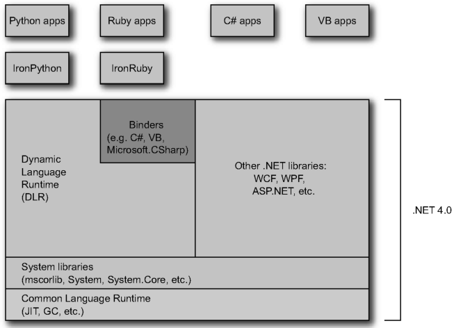Figure 14.1 How the components of .NET 4 fit together, allowing static and dynamic languages to execute on the same underlying platform
of the benefits of this approach is that the DLR hasn’t had to be reimplemented for Mono (http://mono-project.com): the same code runs on both .NET and its crossplatform cousin.
Although the DLR doesn’t handle native code directly, you can think of it as doing a similar job to the CLR in one sense: just as the CLR converts IL (Intermediate Language) into native code, the DLR converts code represented using binders, call sites, meta-objects, and various other concepts into expression trees which can then be compiled down into IL and eventually native code by the CLR. Figure 14.2 shows a simplified view of the lifecycle of a single evaluation of a dynamic expression.
As you can see, one of the important aspects of the DLR is a multilevel cache. This is crucial for performance reasons, but to understand that and the other concepts we’ve already mentioned, we’ll need to dive one layer lower.
14.4.2 DLR core concepts
We can summarize the purpose of the DLR in very general terms as taking a high-level representation of code and executing that code, based on various pieces of information that may only be known at execution time. In this section I’m going to introduce a lot of terminology to describe how the DLR works, but it’s all contributing to that common aim.

Figure 14.2 Lifecycle of a dynamic expression
CALL SITES
The first concept we need is a call site. This is sort of the atom of the DLR — the smallest piece of code that can be considered as a single executable unit. One expression may contain a lot of call sites, but the behavior is built up in the natural way, evaluating one call site at a time. For the rest of the discussion, we’ll only consider a single call site. It’s going to be useful to have a small example of a call site to refer to, so here’s a simple one, where d is of course a variable of type dynamic:
d.Foo(10);
The call site is represented in code as a System.Runtime.CompilerServices.Call-Site<T>. We’ll see a full example of how call sites are created and used in the next section, when we look at what the C# compiler does at compile time, but here’s an example of the code which might be called to create the site for the previous snippet:
CallSite<Action<CallSite, object, int>>.Create(Binder.InvokeMember( CSharpBinderFlags.ResultDiscarded, "Foo", null, typeof(Test), new CSharpArgumentInfo[] { CSharpArgumentInfo.Create(CSharpArgumentInfoFlags.None, null), CSharpArgumentInfo.Create(CSharpArgumentInfoFlags.Constant |
CSharpArgumentInfoFlags.UseCompileTimeType, null) }));
So now that we have a call site, can we execute the code? Not quite.
RECEIVERS AND BINDERS
As well as a call site, we need something to decide what it means and how to execute it. In the DLR, two entities can decide this: the receiver of a call and the binder. The receiver of a call is simply the object that a member is called on. In our sample call site, the receiver is the object that d refers to at execution time. The binder will depend on the calling language, and is part of the call site — in this case, we can see that the C# compiler emits code to create a binder using Binder.InvokeMember. The Binder class in this case is Microsoft.CSharp.RuntimeBinder.Binder, so it really is C#-specific. The C# binder is also COM-aware, and will perform appropriate COM binding if the receiver is an IDispatch object.
The DLR always gives precedence to the receiver: if it’s a dynamic object that knows how to handle the call, then it’ll use whatever execution path the object provides. An object can advertise itself as being dynamic by implementing the new IDynamicMeta-ObjectProvider interface. The name is a mouthful, but it only contains a single member: GetMetaObject. You’ll need to be an expression tree ninja to implement it correctly, as well as knowing the DLR quite well. But in the right hands this can be a powerful tool, giving you lower-level interaction with the DLR and its execution cache. If you need to implement dynamic behavior in a high-performance fashion, it’s worth the investment of learning the details. There are two public implementations of IDynamicMetaObjectProvider included in the framework to make it easy to implement dynamic behavior in situations where performance isn’t quite as critical. We’ll look at all of this in more detail in section 14.5, but for now you just need to be aware of the interface itself, and that it represents the ability of an object to react dynamically.
If the receiver isn’t dynamic, the binder gets to decide how the code should be executed. In our code, it would apply C#-specific rules to the code and work out what to do. If you were creating your own dynamic language, you could implement your own binder to decide how it should behave in general (when the object doesn’t override the behavior). This lies well beyond the scope of this book, but it’s an interesting topic in and of itself: one of the aims of the DLR is to make it easier to implement your own languages.
RULES AND CACHES
The decision for how to execute a call is represented as a rule. Fundamentally this consists of two elements of logic: the circumstances under which the call site should behave this way, and the behavior itself. The first part is really for optimization. Suppose you have a call site that represents addition of two dynamic values, and the first time it’s evaluated, both values are of type byte. The binder has gone to a fair amount of effort to work out that this means both operands should be promoted to int, and the result should be the sum of those integers. It can reuse that operation any time the operands turn out to both be byte. Checking a set of previous results for validity can save a lot of time. The rule I’ve used as an example (the operand types must be exactly the same as the ones I’ve just seen) is a common one, but the DLR supports other rules too.
The second part of a rule is the code to use when the rule matches, and it’s represented as an expression tree. It could have been stored just as a compiled delegate to call — but keeping the expression tree representation means the cache can optimize heavily. There are three levels of cache in the
DLR: L0, L1, and L2. The caches
. Figure 14.3 Relationships between dynamic caches and
store information in different ways, call sites
and with a different scope. Each
call site has its own L0 and L1 caches, but an L2 cache may be shared between several similar call sites, as shown in figure 14.3.
The set of call sites that share an L2 cache is determined by their binders — each binder has an L2 cache associated with it. The compiler (or whatever is creating the call sites) decides how many binders it wants to use. It can only use a binder for multiple call sites that represent very similar code: where if the context is the same at execution time, the call sites should execute in the same way. In fact, the C# compiler doesn’t use this facility — it creates a new binder for every call site,96 so there’s not much difference between the L1 and L2 caches for C# developers. Genuinely dynamic languages such as IronRuby and IronPython make more use of it, though.
The caches themselves are executable, which takes a while to understand. The C# compiler generates code to simply execute the call site’s L0 cache (which is a delegate accessed through the Target property). That’s it! The L0 cache has a single rule, which it checks when it’s called. If the rule matches, it executes the associated behavior. If the rule doesn't match (or if this is the first call, so it doesn’t have even one rule), it calls into the L1 cache, which in turn calls into the L2 cache. If the L2 cache can’t find any matching rules, it asks the receiver or the binder to resolve the call. The results are then put into the cache for next time. In the case of our earlier snippet, the execution part would look something like this:
callSite.Target(callSite, d, 10);
The L1 and L2 caches look through their rules in a fairly standard way — each has a collection of rules, and each rule is asked whether or not it matches. The L0 cache is somewhat different. The two parts of its behavior (checking its rule and delegating to the L1 cache) are combined into a single method which is then JIT compiled. Updating the L0 cache consists of rebuilding the method from the new rule.
The result of all of this is that typical call sites which see similar context repeatedly are very fast; the dispatch mechanism is about as lean as you could make it if you hand-coded the tests yourself. Of course this has to be weighed against the cost of all the dynamic code generation involved, but the multilevel cache is complicated precisely because it tries to achieve a balance across various different scenarios.
Now that we know a bit about the machinery in the DLR, we’ll be able to understand what the C# compiler does for us in order to set it all in motion.
14.4.3 How the C# compiler handles dynamic
The main jobs of the C# compiler when it comes to dynamic code are to work out when dynamic behavior is required, and to capture all the necessary context so that the binder and receiver have enough information to resolve the call at execution time.
IF IT USES DYNAMIC, IT’S DYNAMIC!
One situation is obviously dynamic: when the target of a member call is dynamic. The compiler has no way of knowing how that’ll be resolved. It may be a truly dynamic object that’ll perform the resolution itself, or it may end up with the C# binder resolving it with reflection later. Either way, there’s simply no opportunity for the call to be resolved statically.
But when the dynamic value is being used as an argument for the call, there are some situations where you might expect the call to be resolved statically — particularly if there’s a suitable overload that has a parameter type of dynamic. The rule is that if any part of a call is dynamic, the call becomes dynamic and will resolve the overload with the execution-time type of the dynamic value. The following listing demonstrates this using a method with two overloads, and invoking it in a number of different ways.
Listing 14.16 Experimenting with method overloading and dynamic values
static void Execute(string x)
{
Console.WriteLine("String overload");
}
static void Execute(dynamic x)
{
Console.WriteLine("Dynamic overload");
}
dynamic text = "text"; Execute(text); dynamic number = 10; Execute(number);
Both calls to Execute are bound dynamically. At execution time, they’re resolved using the types of the actual values, namely, string and int. The parameter of type dynamic is treated as if it were declared with type object everywhere except within the method itself — if you look at the compiled code, you’ll see it is a parameter of type object, just with an extra attribute applied. This also means you can’t have two methods whose signatures differ just by dynamic/object parameter types.
That’s an example of resolving method calls, but there are plenty of other expressions to consider. Sometimes the situation isn’t quite as straightforward as I’ve led you to believe...
IT’S DYNAMIC... EXCEpT WHEN IT ISN’T
When I introduced dynamic in section 14.2 I had to be careful not to generalize too far, because there are exceptions to almost every rule. Although you should know about these, you don’t need to worry about them — they’re unlikely to cause you any problems. Let’s get them out of the way quickly.
Conversions between CLR types and dynamic
The conversions between CLR types and dynamic are restricted in the same way that you can’t convert from every CLR type to object; the exceptions are types such as pointers and System.TypedReference. Given that dynamic is just object at the CLR level, it’s not surprising that these types are excluded.
You may have also noticed that I wrote about a conversion “from an expression of type dynamic” to a CLR type, not a conversion from the dynamic type itself. This subtlety helps during type inference and other situations that need to consider implicit conversions between types: in general, life gets unpleasant when there are two types with implicit conversions both ways. It basically limits the situations in which the conversion is considered — for example, consider this implicitly typed array:
dynamic d = 0;
string x = "text";
var array = new[] { d, x };
What should the inferred type of array be? If there were an implicit conversion from dynamic to string, then it could be either string [] or dynamic [], so you’d end up with ambiguity and a compile-time error. But as the conversion only exists from a dynamic expression, the compiler sees a conversion from string to dynamic but not the other way, and array is of type dynamic []. It’s probably best not to worry about this subtlety unless you’re trying to work through a particular scenario with the specification beside you.
Expressions using dynamic aren't always evaluated dynamically
There are some cases where the CLR is quite capable of evaluating an expression using the normal static execution paths, even if one of the subexpressions is dynamic. For example, consider the as operator:
dynamic d = GetValueDynamically(); string x = d as string;
There’s nothing that can happen dynamically here — either the value of d is a reference to a string or it isn’t. User-defined conversions aren’t applied when the as operator is used, so the C# compiler can use exactly the same IL that it would if the variable were of type object.
Dynamically evaluated expressions aren’t always of type dynamic
In some cases, the compiler doesn’t know exactly how it’s going to evaluate an expression, but it knows the exact type of the result (assuming an exception isn’t thrown). For example, consider making a constructor call using a dynamic value as an argument:
dynamic d = GetValueDynamically();
SomeType x = new SomeType(d);
The constructor call itself has to be evaluated dynamically — there may be several overloads to be resolved at execution time — but the result is always going to be a SomeType reference. The assignment to x can therefore happen without a dynamic conversion.
There are a few other cases like this: using a dynamic array index into a statically typed array can only result in a value of the array element type, for example. But you shouldn’t assume it’ll always happen where you might expect it to: you could have several overloads of a method, all of which have the same static return type, but the type of that method invocation expression will still be dynamic.
That’s enough about when dynamic evaluation doesn’t happen, or doesn’t result in a dynamic value — let’s get back to the situations where it does, and see what the C# compiler does to make it all work.
CREATING CALL SITES AND BINDERS
You don’t need to know the exact details of what the compiler does with dynamic expressions in order to use them, but it can be instructive to see what the compiled code looks like. In particular, if you need to decompile your code for any other reason, it means you won’t be surprised by what the dynamic parts look like. My tool of choice for this kind of work is Reflector (see http://mng.bz/pMXJ), but you could use ildasm if you wanted to read the IL directly.
We’re only going to look at a single example — I’m sure I could fill a whole chapter by looking at implementation details, but the idea is only to give you the gist of what the compiler is up to. If you find this example interesting, you may want to experiment more on your own. Just remember that the exact details are implementation-specific; they may change in future compiler versions, so long as the behavior is equivalent. Here’s the sample snippet, which exists in a Main method in the normal manner for Snippy:
string text = "text to cut"; dynamic startIndex = 2;
string substring = text.Substring(startIndex);
Pretty simple, right? It actually contains two dynamic operations — one to call Substring, and one (implicit) to dynamically convert the result (which is just dynamic at compile time) to a string. Listing 14.17 shows the decompiled code for the Snippet class.97 I’ve omitted the class declaration itself and the implicit parameterless constructor to save space — and I’ve reformatted the code with significantly reduced whitespace for the same reason.
Listing 14.17 The results of compiling dynamic code
[CompilerGenerated]
private static class <Main>o_SiteContainer0 {
public static CallSite<Func<CallSite, object, string>> <>p_Site1;
public static CallSite<Func<CallSite, string, object, object>>
<>p_Site2;
}
private static void Main() { string text = "text to cut";
object startIndex = 2;
if (<Main>o_SiteContainer0.<>p_Site1 == null) {
<Main>o_SiteContainer0.<>p_Site1 =
CallSite<Func<CallSite, object, string>>.Create( new CSharpConvertBinder(typeof(string),
CSharpConversionKind.ImplicitConversion, false));
}
if (<Main>o_SiteContainer0.<>p_Site2 == null) {
<Main>o_SiteContainer0.<>p_Site2 =
CallSite<Func<CallSite, string, object, object>>.Create( new CSharpInvokeMemberBinder(CSharpCallFlags.None, "Substring", typeof(Snippet), null, new CSharpArgumentInfo[] { new CSharpArgumentInfo(
CSharpArgumentInfoFlags.UseCompileTimeType, null), new CSharpArgumentInfo(
CSharpArgumentInfoFlags.None, null) }));
}
string substring =
<Main>o_SiteContainer0.<>p_Site1.Target.Invoke(
<Main>o_SiteContainer0.<>p_Site1,
<Main>o_SiteContainer0.<>p_Site2.Target.Invoke(
<Main>o_SiteContainer0.<>p_Site2, text, startIndex));
}
I don’t know about you, but I’m glad that I never have to write or encounter code like that, other than for the purpose of learning about exactly what’s going on. There’s nothing new about that, though — the generated code for iterator blocks, expression trees, and anonymous functions can be pretty gruesome too.
A nested static class is used to store all the call sites O for the method, as they only need to be created once. (If they were created each time, the cache would be useless!) It’s possible that the call sites could be created more than once due to multithreading, but if that happens it’s just slightly inefficient — and it means the lazy creation is achieved with no locking at all. It doesn’t really matter if one call site instance is replaced with another. Each method using dynamic binding has a separate site container: this has to be the case for generic methods, as the call site needs to vary based on the type arguments. Another compiler implementation could choose to use one site container for all the nongeneric methods, one for all generic methods with a single type parameter, and so on.
After the call sites are created (© and ©) they’re simply invoked. The Substring call is invoked first (read the code from the innermost part of the statement outward) and then the conversion is invoked on the result Q. At this point we have a statically typed value again, so we can assign it to the substring variable.
I'd like to highlight one more aspect of the code: the way that some static type information is preserved in the call site. The type information itself is present in the delegate signature used for the type argument of the call site (Func<CallSite, string, object, object>) and a flag in the corresponding CSharpArgumentInfo indicates that this type information should be used in the binder Q. (Even though this is the target of the method, it’s represented as an argument; instance methods are treated as static methods with an implicit first parameter of this.) This is a crucial part of making the binder behave as if it were just recompiling your code at execution time. Let’s look at why this is so important.
14.4.4 The C# compiler gets even smarter
C# 4 lets you straddle the static/dynamic boundary not just by having some of your code bound statically and some bound dynamically, but also by combining the two ideas within a single binding. It remembers everything it needs to know within the call site, then cleverly merges this information with the types of the dynamic values at execution time.
PRESERVING COMPILER BEHAVIOR AT EXECUTION TIME
The ideal model for working out how the binder should behave is to imagine that instead of having a dynamic value in your source code, you have a value of exactly the right type: the type of the actual value at execution time.98 This only applies to dynamic values within the expression: any types that are known at compile time are still used for lookups such as member resolution. I’ll give two examples of where this makes a difference. The following listing shows a simple overloaded method in a single type.
Listing 14.18 Dynamic overload resolution within a single type
static void Execute(dynamic x, string y)
{
Console.WriteLine("dynamic, string");
}
static void Execute(dynamic x, object y) {
Console.WriteLine("dynamic, object");
}
object text = "text"; dynamic d = 10;
Execute(d, text);
The important variable here is text. Its compile-time type is object, but at execution time its value is a string reference. The call to Execute is dynamic because we’re using the dynamic variable d as one of the arguments, but the overload resolution uses the static type of text, so the result is “dynamic, object”. If the text variable had been declared as dynamic as well, it would’ve used the other overload.
The next listing is similar, but this time it’s the receiver of the call that matters.
Listing 14.19 Dynamic overload resolution within a class hierarchy
class Base {
public void Execute(object x)
{
Console.WriteLine("object");
}
}
class Derived : Base {
public void Execute(string x)
{
Console.WriteLine("string");
}
}
Base receiver = new Derived(); dynamic d = "text"; receiver.Execute(d);
In listing 14.19, the type of receiver is Derived at execution time, so you might’ve expected the overload introduced in Derived to be called. But the compile-time type of receiver is Base, and so the binder restricts the set of methods it considers to just the ones that would have been available if we’d been binding the method statically. Despite all of these decisions that have to be taken later, some compile-time checks are available, even for code that’ll be fully bound at execution time.
COMPILE-TIME ERRORS FOR DYNAMIC CODE
As I said near the start of this chapter, one of the disadvantages of dynamic typing is that some errors that would normally be detected by the compiler are delayed until execution time, at which point an exception is thrown. There are many situations where the compiler has to just hope you know what you’re doing, but where it can help you, it will. The simplest example of this is when you try to call a method with a statically typed receiver (or a static method) and none of the overloads can possibly be valid, whatever type the dynamic value has at execution time. The following listing shows three examples of invalid calls, two of which are caught by the compiler.
Listing 14.20 Catching errors in dynamic calls at compile time
string text = "cut me up"; dynamic guid = Guid.NewGuid();
text.Substring(guid); text.Substring("x", guid); text.Substring(guid, guid, guid);
Here we have three calls to string. Substring. The compiler knows the exact set of possible overloads, because it knows the type of text statically. It doesn’t complain at the first call, because it can’t tell what type guid will be — if it turns out to be an integer, all will be well. But the final two lines throw up errors: there are no overloads that take a string as the first argument, and there are no overloads with three parameters. The compiler can guarantee that these would fail at execution time, so it’s reasonable for it to fail at compile time instead.
A slightly trickier example is with type inference. If a dynamic value is used to infer a type argument in a call to a generic method, then the actual type argument won’t be known until execution time and no validation can occur beforehand. But any type argument that would be inferred without using any dynamic values can cause type inference to fail at compile time. The following listing shows an example of this.
Listing 14.21 Generic type inference with mixed static and dynamic values
void Execute<T>(T first, T second, string other) where T : struct {
}
dynamic guid = Guid.NewGuid();
Execute(10, 0, guid);
Execute(10, false, guid);
Execute("hello", "hello", guid);
Again, the first call compiles, but would fail at execution time. The second call won’t compile because T can’t be both int and bool, and there are no conversions between the two of them. The third call won’t compile because T is inferred to be string, which violates the constraint that it must be a value type.
The compiler is conservative: it’ll only fail with an error if it can tell that some code can’t possibly succeed, and it only performs relatively simple tests on this front. There are some situations where it may be obvious (and provable) to a human that the code won’t work, but where the compiler allows the code through. Of course, if a particular line of code will never work, then a single unit test that executes it will fail, so the simplistic nature of the compiler’s checking doesn’t matter if you have good code coverage. Think of it as a bonus in the cases where it does spot a problem.
That covers the most important points in terms of what the compiler can do for you. But you can’t use dynamic absolutely everywhere. There are limitations, some of which are painful, but most of which are quite obscure.
14.4.5 Restrictions on dynamic code
You can mostly use dynamic wherever you’d normally use a type name, and then write normal C#. But there are a few exceptions. This isn’t an exhaustive list, but it covers the cases you’re most likely to run into.
EXTENSION METHODS AREN’T RESOLVED DYNAMICALLY
The compiler emits some of the context of the call into the call site, as we’ve already seen. In particular, the site knows the static types that the compiler was aware of. But it doesn’t currently know which using directives occurred in the source file containing the call. That means it doesn’t know which extension methods are available at execution time.
This doesn’t just mean that you can’t call extension methods on dynamic values — it means you can’t pass them into extension methods as arguments either. There are two workarounds, both of which are helpfully suggested by the compiler. If you actually know which overload you want, you can cast the dynamic value to the right type within the method call. Otherwise, assuming you know which static class contains the extension method, you can just call it as a normal static method. The following listing shows an example of a failing call and both workarounds.
Listing 14.22 Calling extension methods with dynamic arguments
dynamic size = 5;
var numbers = Enumerable.Range(10, 10); var error = numbers.Take(size); var workaround1 = numbers.Take((int) size); var workaround2 = Enumerable.Take(numbers, size);
Both approaches will work if you want to call the extension method with the dynamic value as the implicit this value, too — although the cast becomes pretty ugly in that case.
DELEGATE CONVERSION RESTRICTIONS WITH DYNAMIC
The compiler has to know the exact delegate (or expression) type involved when converting a lambda expression, an anonymous method, or a method group. You can’t assign any of these to a plain Delegate or object variable without casting, and the same is true for dynamic. But a cast is enough to keep the compiler happy. This could be useful in some situations if you want to execute the delegate dynamically later. You can also use a delegate with a dynamic type as one of its parameters if that’s useful. Listing 14.23 shows some examples that’ll compile, and some that won’t.
Listing 14.23 Dynamic types and lambda expressions
dynamic badMethodGroup = Console.WriteLine;
dynamic goodMethodGroup = (Action<string>) Console.WriteLine; dynamic badLambda = y => y + 1;
dynamic goodLambda = (Func<int, int>) (y => y + 1);
dynamic veryDynamic = (Func<dynamic, dynamic>) (d => d.SomeMethod());
Note that because of the way overload resolution works, this means you can’t use lambda expressions in dynamically bound calls at all without casting — even if the only method that could possibly be invoked has a known delegate type at compile time. For example, this code won’t compile: void Method(Action<string> action, string value)
{
action(value);
}
dynamic text = "error";
Method(x => Console.WriteLine(x), text);
It’s worth pointing out that all is not lost in terms of LINQ and dynamic interacting. You can have a strongly typed collection with an element type of dynamic, at which point you can still use extension methods, lambda expressions, and even query expressions. The collection can contain objects of different types, and they’ll behave appropriately at execution time, as shown in the following listing.
Listing 14.24 Querying a collection of dynamic elements
var list = new List<dynamic> { 50, 5m, 5d }; var query = from number in list where number > 4 select (number / 20) * 10;
foreach (var item in query)
{
Console.WriteLine(item);
}
This prints 20, 2.50, and 2.5. I deliberately divided by 20 and then multiplied by 10 to show the difference between decimal and double: the decimal type keeps track of precision without normalizing, which is why 2.50 is displayed instead of 2.5. The first value is an integer, so integer division is used; hence the value of 20 instead of 25.
CONSTRUCTORS AND STATIC METHODS
You can call constructors and static methods dynamically in the sense that you can specify dynamic arguments, but you can’t resolve a constructor or static method against a dynamic type. There’s just no way of specifying which type you mean.
If you run into a situation where you want to be able to do this dynamically in some way, try to think of ways to use instance methods instead — for instance, by creating a factory type. You may find that you can get the dynamic behavior you want using simple polymorphism or interfaces, but within static typing.
TYPE DECLARATIONS AND GENERIC TYPE PARAMETERS
You can’t declare that a type has a base class of dynamic. You also can’t use dynamic in a type parameter constraint, or as part of the set of interfaces that your type implements. You can use it as a type argument for a base class, or when you’re specifying an interface for a variable declaration. So, for example, these declarations are invalid:
■ class BaseTypeOfDynamic : dynamic
■ class DynamicTypeConstraint<T> where T : dynamic
■ class DynamicTypeConstraint<T> where T : List<dynamic>
■ class DynamicInterface : IEnumerable<dynamic>
■ class GenericDynamicBaseClass : List<dynamic>
■ IEnumerable<dynamic> variable;
Most of these restrictions around generics are the result of the dynamic type not really existing as a .NET type. The CLR doesn’t know about it — any uses in your code are translated into objects with the DynamicAttribute applied appropriately. (For types such as List<dynamic> or Dictionary<string, dynamic>, the attribute indicates exactly which parts of the type are dynamic.) DynamicAttribute is only applied when the dynamic nature needs to be represented in metadata; local variables don’t require the attribute, as nothing needs to inspect them after compilation to spot their dynamic nature.
All the dynamic behavior is achieved through compiler cleverness in deciding how the source code should be translated, and library cleverness at execution time. This equivalence between dynamic and object is evident in various places, but it’s perhaps most obvious if you look at typeof(dynamic) and typeof(object), which return the same reference. In general, if you find you can’t do what you want to with the dynamic type, remember what it looks like to the CLR and see if that explains the problem. It may not suggest a solution, but at least you’ll get better at predicting what’ll work ahead of time.
That’s all the detail I’m going to give about how C# 4 treats dynamic, but there’s another aspect of the dynamic typing picture which we really need to look at to get a well-rounded view of the topic: reacting dynamically. It’s one thing to be able to call code dynamically, but it’s another to be able to respond dynamically to those calls.
Of course, if you’re just calling into third-party code dynamically — or even using techniques such as multiple dispatch shown earlier — you don’t need to worry about this. I understand if you feel you’ve already had your fill of dynamic typing, at least for the moment; we’ve already covered an awful lot of ground. You can safely skip the next section and come back to it another time — nothing in the rest of the book relies on it. On the other hand, it’s kind of fun.
14.5 Implementing dynamic behavior
The C# language doesn’t offer any specific help in implementing dynamic behavior, but the framework does. A type has to implement IDynamicMetaObjectProvider in order to react dynamically, but there are two built-in implementations that can take a lot of the work away in many cases. We’ll look at both of these, as well as a very simple implementation of IDynamicMetaObjectProvider, just to show you what’s involved. These three approaches are really different, and we’ll start with the simplest of them: ExpandoObject.
14.5.1 Using ExpandoObject
Sys tem .Dynamic.ExpandoObject looks like a funny beast at first glance. Its single public constructor has no parameters. It has no public methods, unless you count the
explicit implementation of various interfaces — crucially IDynamicMetaObject-Provider and IDictionary<string, object>. (The other interfaces it implements are all due to IDictionary<, > extending other interfaces.) Oh, and it’s sealed — so it’s not a matter of deriving from it to implement useful behavior. No, ExpandoObject is only useful if you refer to it via dynamic or one of the interfaces it implements.
SETTING AND RETRIEVING INDIVIDUAL PROPERTIES
The dictionary interface gives a hint as to its purpose — it’s basically a way of storing objects via names. But those names can also be used as properties via dynamic typing. The following listing shows this working both ways.
Listing 14.25 Storing and retrieving values with ExpandoObject
dynamic expando = new ExpandoObject();
IDictionary<string, object> dictionary = expando; expando.First = "value set dynamically";
Console.WriteLine(dictionary["First"]);
dictionary["Second"] = "value set with dictionary"; Console.WriteLine(expando.Second);
Listing 14.25 just uses strings as the values for convenience — you can use any object, as you’d expect with an IDictionary<string, object>. If you specify a delegate as the value, you can then call the delegate as if it were a method on the expando, as shown in listing 14.26.
Listing 14.26 Faking methods on an ExpandoObject with delegates
dynamic expando = new ExpandoObject(); expando.AddOne = (Func<int, int>) (x => x + 1); Console.Write(expando.Add0ne(10)) ;
Although this looks like a method access, you can also think of it as a property access which returns a delegate, and then an invocation of the delegate. If you created a statically typed class with an AddOne property of type Func<int, int>, you could use exactly the same syntax. The C# generated to call AddOne does in fact use an “invoke member” operation rather than trying to access it as a property and then invoke it, but ExpandoObject knows what to do. You can also access the property to retrieve the delegate if you want to.
Let’s move on to a slightly larger example — although we’re still not going to do anything particularly tricky.
We’re going to create a tree of expandos that mirrors an XML DOM tree. This is a pretty crude implementation, designed for simplicity of demonstration rather than real-world use. In particular, it’s going to assume we don’t have any XML namespaces to worry about. Each node in the tree has two name/value pairs that’ll always be present: XElement, which stores the original LINQ to XML element used to create the node, and ToXml, which stores a delegate which just returns the node as an XML string. You could just call node.XElement.ToString(), but this way gives another
example of how delegates work with ExpandoObject. One point to mention is that I used ToXml instead of ToString, as setting the ToString property on an expando doesn’t override the normal ToString method. This could lead to confusing bugs, so I opted for the different name instead.
The interesting part isn’t the fixed names; it’s the ones that depend on the real XML. I’m going to ignore attributes completely, but any elements in the original XML that are children of the original element are accessible via properties of the same name. For instance, consider the following XML:
<root>
<branch>
<leaf />
</branch>
</root>
Assuming a dynamic variable called root representing the root element, we could access the leaf node with two simple property accesses, which can occur in a single statement:
dynamic leaf = root.branch.leaf;
If an element occurs more than once within a parent, the property just refers to the first element with that name. To make the other elements accessible, each element will also be exposed via a property using the element name with a suffix of List which returns a List<dynamic> containing each of the elements with that name in document order. In other words, the access could also be represented as root. branchList[0].leaf, or perhaps root.branchList[0].leafList[0]. Note that the indexer here is being applied to the list — you can’t define your own indexer behavior for expandos.
The implementation of all of this is actually remarkably simple, with a single recursive method doing all the work, as shown in the following listing.
Listing 14.27 Implementing a simplistic XML DOM conversion with ExpandoObject
public static dynamic CreateDynamicXml(XElement element)
{
dynamic expando = new ExpandoObject(); expando.XElement = element;
expando.ToXml = (Func<string>)element.ToString;
IDictionary<string, object> dictionary = expando; foreach (XElement subElement in element.Elements())
{
dynamic subNode = CreateDynamicXml(subElement); string name = subElement.Name.LocalName; string listName = name + "List"; if (dictionary.ContainsKey(name))
{
((List<dynamic>) dictionary[listName]).Add(subNode);
else {
dictionary[name] = subNode; dictionary[listName] = new List<dynamic> { subNode };
}
}
return expando;
}
Without the list handling, listing 14.27 would’ve been even simpler. We set the XElement and ToXml properties dynamically (© and ©), but we can’t do that for the elements or their lists, because we don’t know the names at compile time.99 We use the dictionary representation instead (E and E), which also allows us to check for repeated elements easily. You can’t tell whether an expando contains a value for a particular key just by accessing it as a property: any attempt to access a property that hasn’t already been defined results in an exception. The recursive handling of subelements is as straightforward in dynamic code as it’d be in statically typed code: we just call the method recursively E with each subelement, using its result to populate the appropriate properties.
We’re going to need some XML to use as an example, but it’s helpful to picture it graphically as well as in its raw format. We’ll use a simple structure representing books. Each book has a single name represented as an attribute, and may have multiple authors, each with their own element. Figure 14.4 shows the whole file as a tree, and the text appears afterward.
<books>
<book name="Mortal Engines">
<author name="Philip Reeve" />
</book>
<book name="The Talisman">
<author name="Stephen King" />
<author name="Peter Straub" />
</book>
<book name="Rose">
<author name="Holly Webb" />
<excerpt>
Rose was remembering the illustrations from Morally Instructive Tales for the Nursery.
</excerpt>
</book>
</book>
Listing 14.28 shows a brief example of how the expando code can be used with this XML document, including the ToXml and XElement properties. The books.xml file contains the XML document shown in the figure.
Figure 14.4 Tree structure of sample XML file
^^Listin^^4.2^^Usin^^dynami^DO^^create^fro^^?Xpando^^
XDocument doc = XDocument.Load("books.xml"); dynamic root = CreateDynamicXml(doc.Root);
Console.WriteLine(root.book.author.ToXml()); Console.WriteLine(root.bookList[2].excerpt.XElement.Value);
Listing 14.28 should hold no surprises, unless you’re unfamiliar with the XElement. Value property, which simply returns the text within an element. The output of the listing is as we’d expect:
<author name="Philip Reeve" />
Rose was remembering the illustrations from Morally Instructive Tales for the Nursery.
This is all good, but there are a few issues with our DOM. In particular:
■ It doesn’t handle attributes at all.
■ We need two properties for each element name, due to the need to represent lists.
■ It’d be nice to override ToString() instead of adding an extra property.
■ The result is mutable — there’s nothing to stop code from adding its own properties afterward.
■ Although the expando is mutable, it won’t reflect any changes to the underlying XElement (which is also mutable).
■ There are many opportunities for naming clashes, such as a node containing elements Foo and FooList, or elements called XElement or ToXml.
■ We populate the entire tree up-front, which is a lot of work if we only need a few nodes.
Fixing these issues requires more control than just being able to set properties. Enter
DynamicObject.
14.5.2 Using DynamicObject
DynamicObject is a more powerful way of interacting with the DLR than using ExpandoObject, but it’s a lot simpler than implementing IDynamicMetaObject-Provider. Although it’s not actually an abstract class, you really need to derive from it to do anything useful — and the only constructor is protected, so it might as well be abstract for all practical purposes. There are four kinds of method that you might wish to override:
■ TryXXX () invocation methods, representing dynamic calls to the object
■ GetDynamicMemberNames(), which can return a list of the available members
■ The normal Equals (), GetHashCode(), and ToString() methods, which can be overridden as usual
■ GetMetaObject (), which returns the metaobject used by the DLR
We’ll look at all but the last of these to improve our XML DOM representation, and we’ll discuss metaobjects in the next section when we implement IDynamicMeta-ObjectProvider from scratch. In addition, it can be useful to create new members in your derived type, even if callers are likely to use instances as dynamic values. Before we take any of these steps, we’ll need a class to hold all these members.
GETTING STARTED
As we’re deriving from DynamicObject instead of just calling methods on it, we need to start with a class declaration. The following listing shows the basic skeleton that we’ll be fleshing out.
Listing 14.29 Skeleton of DynamicXElement
public class DynamicXElement : DynamicObject
{
private readonly XElement element; private DynamicXElement(XElement element)
{
this.element = element;
}
public static dynamic CreateInstance(XElement element)
{
return new DynamicXElement(element);
The DynamicXElement class just wraps an XElement ©. This will be all the state we have, which is a significant design decision in itself. When we created an ExpandoObject earlier, we recursed into its structure and populated a whole mirrored tree. We really had to do that, because we couldn’t intercept property accesses with custom code later on. Obviously this is more expensive than the DynamicXElement approach, where we’ll only ever wrap the elements of the tree when we actually have to. Additionally, it means that any changes to the XElement after we’ve created the expando are effectively lost: if you add more subelements, for example, they won’t appear as properties because they weren’t present when we took the snapshot. The lightweight wrapping approach is always “live” — any changes you make in the tree will be visible through the wrapper.
The disadvantage of this is that we no longer provide the same idea of identity that we had before. With the expando, the expression root.book.author would evaluate to the same reference if we used it twice. Using DynamicXElement, each time the expression is evaluated it’ll create new instances to wrap the subelements. We could implement some sort of smart caching to get around this, but it could end up getting very complicated, very quickly.
I’ve chosen to make the constructor of DynamicXElement private Q and provide a public static method to create instances E. The method has a return type of dynamic, because that’s how we expect developers to use the class. A slight alternative would’ve been to create a separate public static class with an extension method to XElement, and keep DynamicXElement itself internal. The class itself is an implementation detail: there’s not much point in using it unless you’re working dynamically.
With our skeleton in place, we can start adding features. We’ll start with really simple stuff: adding methods and indexers as if this were just a normal class.
DYNAMICOBJECT SUPPORT FOR SIMPLE MEMBERS
When we created our expando, there were two members we always added: the ToXml method and the XElement property. This time we don’t need a new method to convert the object to a string representation: we can override the normal ToString() method. We can also provide the XElement property as if we were writing any other class. One of the nice things about DynamicObject is that when some behavior doesn’t need to be truly dynamic, you don’t have to implement it dynamically. Before the associated metaobject uses any of the TryXXX methods, it checks whether the member already exists as a straightforward CLR member. If it does, that member will be called. This makes life significantly simpler.
We’re going to have two indexers in DynamicXElement as well, to provide access to attributes and replace our element lists. The following listing shows the new code to be added to the class.
Listing 14.30 Adding nondynamic members to DynamicXElement
public override string ToString()
{
return element.ToString();
}
public XElement XElement {
get { return element; }
}
public XAttribute this[XName name]
{
get { return element.Attribute(name); }
}
public dynamic this[int index]
{
get {
XElement parent = element.Parent; if (parent == null) —
{
if (index != 0)
{
throw new ArgumentOutOfRangeException();
}
return this;
}
XElement sibling = parent.Elements(element.Name)
.ElementAt(index); return element == sibling ? this
: new DynamicXElement(sibling);
}
}
There’s a fair amount of code in listing 14.30, but most of it is straightforward. We override ToString() O by just proxying the call to the XElement, and if we wanted to implement value equality we could do something similar for Equals () and GetHash-Code(). The property returning the underlying element Q and the indexer for attributes O are also simple, although it’s worth noting that we only need to use an XName for the parameter to the attribute indexer: if you provide a string at execution time, DynamicObject will take care of calling the implicit conversion to XName for you.
The trickiest part of the code is understanding what the indexer with the int parameter Q is meant to be doing. It’s probably easiest to explain this in terms of expected usage. The idea is to avoid having the extra list property by making an element act as both a single element and a list of child elements of the same name. Figure 14.5 shows our sample XML with a few expressions to reach different nodes within it.
Once you understand what the indexer is meant to do, the implementation is fairly simple, complicated only by the possibility that we could already be at the top of the
Figure 14.5 Selecting data using DynamicXElement
tree Q. Otherwise we just have to ask the element for all its siblings, then pick the one we’ve been asked for ©.
So far we haven’t done anything dynamic except in terms of the return type of CreateInstance() — none of our examples will work, because we haven’t written the code to fetch subelements. Let’s fix that now.
In DynamicObject, you respond to calls dynamically by overriding one of the TryXXX methods. There are 12 of them, representing different types of operation, as shown in table 14.1.
Table 14.1 Virtual TryXXX methods in DynamicObject
|
|
|
|
|
Binary operation, such as |
Table 14.1 Virtual TryXXX methods in DynamicObject (continued)
|
|
|
|
|
Property getter, such as Direct invocation effectively treating x like a delegate, such as Indexer setter, such as |
Each of these methods has a Boolean return type to indicate whether the binding was successful. Each takes an appropriate binder as the first parameter, and if the operation logically has arguments (for instance, the arguments to a method, or the indexes for an indexer) these are represented as an object [ ]. Finally, if the operation might have a return value (which includes everything except the set and delete operations), then there’s an out parameter of type object to capture that value. The exact type of the binder depends on the operation: there’s a different binder type for each of the operations. For example, the full signature of TryInvokeMember is
public virtual bool TryInvokeMember(InvokeMemberBinder binder, object[] args, out object result)
You only need to override the methods representing operations you support dynamically. In our case, we have dynamic read-only properties (for the elements) so we need to override TryGetMember(), as shown in the following listing.
Listing 14.31 Implementing a dynamic property with TryGetMember()
public override bool TryGetMember(GetMemberBinder binder,
out object result)
{
XElement subElement = element.Element(binder.Name); if (subElement != null)
{
result = new DynamicXElement(subElement); return true;
}
return base.TryGetMember(binder, out result);
}
The implementation in listing 14.31 is simple. The binder contains the name of the requested property, so we look for the appropriate subelement in the tree ©. If there is one, we create a new DynamicXElement with it, assign that to the output parameter result, and return true to indicate that the call was bound successfully Q. If there was no subelement with the right name, we just call the base implementation of Try-GetMember () E. The base implementation of each of the TryXXX methods just returns false and sets the output parameter to null if there is one. We could easily have done this explicitly, but we’d have had two separate statements: one to set the output parameter and one to return false. If you prefer the slightly longer code, there’s no reason not to write it — the base implementations are just slightly convenient in terms of doing everything required to indicate that the binding failed.
I’ve side-stepped one bit of complexity: the binder has another property (Ignore-Case) which indicates whether the property should be bound in a case-insensitive way. For example, Visual Basic is case-insensitive, so its binder implementation would return true for this property, whereas C#’s would return false. In our situation, it’s slightly awkward. Not only would it be more work for TryGetMember to find the element in a case-insensitive manner (“more work” is always unpleasant, but it’s not a good reason not to implement it), but there’s the more philosophical problem of what happens when you then use the indexer (by number) to select siblings. Should the object remember whether it’s case-sensitive, and select siblings in the same way later on? You could easily get into situations where the behavior is hard both to predict and explain in documentation. This sort of impedance mismatch is likely to happen in other, similar situations too. If you aim for perfection, you’re likely to tie yourself up in knots. Instead, find a pragmatic solution that you’re confident you can implement and maintain, and then document the restrictions.
With all this in place, we can test DynamicXElement as shown in the following listing.
Listing 14.32 Testing DynamicXElement
XDocument doc = XDocument.Load("books.xml");
dynamic root = DynamicXElement.CreateInstance(doc.Root);
Console.WriteLine(root.book[2]["name"]);
Console.WriteLine(root.book[1].author[1]);
Console.WriteLine(root.book);
We could add more complexity to our class, of course. We could add a Parent property to go back up the tree, or we might want to change to access subelements using method calls and make property access represent attributes. The principle would be exactly the same: where you know the name in advance, implement it as a normal class member. If you need it to be dynamic, override the appropriate DynamicObject method.
There’s one more piece of polish to apply to DynamicXElement before we leave it. It’s time to advertise what we’ve got to offer.
OVERRIDING GETDYNAMICMEMBERNAMES
Some languages, such as Python, allow you to ask an object what names it knows about. For example, you can use the dir function in Python to output a list. This information is useful in a REPL environment, and it can also be handy when you’re debugging in an IDE. The DLR makes this information available through the GetDynamicMember-Names() method of both DynamicObject and DynamicMetaObject (we’ll meet the latter in a minute). All we have to do is override this method, provide a sequence of the dynamic member names, and we make our object’s properties more discoverable. Listing 14.33 shows the implementation for DynamicXElement.
Listing 14.33 Implementing GetDynamicMemberNames in DynamicXElement
public override IEnumerable<string> GetDynamicMemberNames()
{
return element.Elements()
.Select(x => x.Name.LocalName)
.Distinct()
.OrderBy(x => x);
}
As you can see, all we need is a simple LINQ query. That won't always be the case, but I suspect many dynamic implementations will be able to use LINQ in this way. In this case we need to make sure that we don’t return the same value more than once if there’s more than one element with any particular name, and I’ve sorted the results just for consistency. In the Visual Studio 2010 debugger, you can expand the Dynamic View of a dynamic object and see the property names and values, as shown in figure 14.6.
You can drill down through the dynamic object, showing the dynamic view at each level. For figure 14.6 I’ve drilled down from the document, to the first book, to the author. The dynamic view of the author shows that there’s no further information in the hierarchy.
We’ve now finished our DynamicXElement class, as far as we’re going to take it in this book. I believe that DynamicObject hits a sweet spot between control and simplicity: it’s fairly easy to get it right, but it has far fewer restrictions than ExpandoObject. But if you really need total control over binding, you’ll need to implement IDynamic-MetaObjectProvider directly.
14.5.3 Implementing IDynamicMetaObjectProvider
I won't go into a lot of detail here, but I really wanted to at least show one example of low-level dynamic behavior. The tough bit of implementing IDynamicMetaObjectProvider isn’t the interface itself — it's creating the DynamicMetaObject to return
Figure 14.6 Visual Studio 2010 displaying dynamic properties of a DynamicXElement
from the interface’s sole method. DynamicMetaObject is a bit like DynamicObject in that it contains a lot of methods, and you override individual ones to affect the behavior; where we’ve previously overridden DynamicObject.TryGetMember, you’d override DynamicMetaObject.BindGetMember. But within the overridden methods, instead of taking the required action directly, the idea is to build up an expression tree describing the required action, and the circumstances in which that action should be taken. That extra level of indirection is why it’s a metaobject.
I’m going to leap straight into an example, and then leap out with only a brief explanation. I really want to get across the difference in level of interaction here — it’s a bit like tinkering with the guts of the JIT compiler. Most C# developers won’t need to know the details, and if you do need to do this, it probably means you’re trying to write a library that responds dynamically but has to perform well too. Alternatively, it may mean that you’re trying to build your own dynamic language. If that’s the case, then good luck — and please find a more comprehensive resource than this meager example.
The example isn’t meant to be clever: it’s a Rumpelstiltskin type. We’re going to create an instance of Rumpelstiltskin with a given name (stored in a perfectly ordinary string variable) and call methods on the object until we call a method with the right name. The object will write out appropriate responses based on our guesses.9 Just to make this concrete, the following listing shows the code we’re eventually going to run.
Listing 14.34 The final aim: calling methods dynamically until we hit the right name
dynamic x = new Rumpelstiltskin("Hermione");
x.Harry();
x.Ron();
x.Hermione();
I haven’t called the object Rumpelstiltskin — that would be too obvious. Instead, I’ve used some other magicians — even though none of them is particularly famous for alchemy. The aim is for the first two method calls to result in denials, and the third to admit defeat. We’ll also make our method calls return a Boolean value to indicate whether the guess was successful, but for brevity we’re not using the result here.
Let’s look at the Rumpelstiltskin type itself first. Don’t forget that this isn’t the metaobject — that’ll come later. Listing 14.35 shows the complete code.
Listing 14.35 The Rumpelstiltskin type, without its metaobject code
public sealed class Rumpelstiltskin : IDynamicMetaObjectProvider
{
private readonly string name; public Rumpelstiltskin(string name) {
this.name = name;
}
public DynamicMetaObject GetMetaObject(Expression expression)
{
return new MetaRumpelstiltskin(expression, this);
}
private object RespondToWrongGuess(string guess)
{
Console.WriteLine("No, I'm not {0}! (I'm {1}.)", guess, name);
return false;
}
private object RespondToRightGuess()
{
Console.WriteLine("Curses! Foiled again!");
return true;
}
}
There are three aspects to this class. There’s construction ©, which is perfectly ordinary. There’s the implementation of IDynamicMetaObjectProvider’s sole method Q, and then there are two methods we’ll use to perform the real work E. The metaobject constructed at Q needs to know which instance it’s responding to, and the expression tree used to refer to the instance within the calling code. We’re given the expression tree as a parameter, we know our own instance via the this reference, so we just pass those on in the constructor.
WHY DO THE METHODS RETURN object? You may be wondering why the methods are declared to return object rather than bool. My original implementation actually had void methods — but unfortunately dynamic method invocations are expected to return something, and the binder always expects object in my experience. (There’s a ReturnType property you can check.)
That makes a call to a void method throw an exception at execution time — and the same is true for a bool method: we need to perform the boxing ourselves to make the types match up properly. We could build the boxing into the expression tree, but that’s more painful than just changing the return type of the method. These are the kinds of subtleties you’ll need to deal with if you ever implement IDynamicMetaObjectProvider in real life.
Strictly speaking, we don’t need the two response methods. When we build up the behavior to react to the incoming method calls, we could express that logic directly in an expression tree. But it’d be relatively painful to do so, compared with just returning an expression tree that calls the right method. More to the point, though it wouldn’t actually be too hard in this case, in other situations it could be much worse. We’re effectively going to create a bridge between the static and dynamic worlds, responding to dynamic method calls by redirecting them to static ones with appropriate arguments. This leads to simpler code in the metaobject. Speaking of which, let’s finally look at the code for MetaRumpelstiltskin — it’s in listing 14.36, and it’s actually a private nested class inside Rumpelstiltskin.
Listing 14.36 The real dynamic guts of Rumpelstiltskin — its metaobject
private class MetaRumpelstiltskin : DynamicMetaObject
{
private static readonly MethodInfo RightGuessMethod =
typeof(Rumpelstiltskin).GetMethod("RespondToRightGuess", BindingFlags.Instance | BindingFlags.NonPublic);
private static readonly MethodInfo WrongGuessMethod =
typeof(Rumpelstiltskin).GetMethod("RespondToWrongGuess", BindingFlags.Instance | BindingFlags.NonPublic);
internal MetaRumpelstiltskin
(Expression expression, Rumpelstiltskin creator)
: base(expression, BindingRestrictions.Empty, creator)
{}
public override DynamicMetaObject BindInvokeMember
(InvokeMemberBinder binder, DynamicMetaObject[] args)
{
Rumpelstiltskin targetObject = (Rumpelstiltskin) base.Value; Expression self = Expression.Convert(base.Expression, typeof(Rumpelstiltskin));
Expression targetBehavior; if (binder.Name == targetObject.name)
{
targetBehavior = Expression.Call(self, RightGuessMethod);
}
else
{
targetBehavior = Expression.Call(self, WrongGuessMethod, Expression.Constant(binder.Name));
}
var restrictions = BindingRestrictions.GetInstanceRestriction (self, targetObject); return new DynamicMetaObject(targetBehavior, restrictions);
}
}
As I type this, I can almost see your eyes glazing over due to listing 14.36. It’s dense code, and it looks like an awful lot of work to get a simple job done. Just remember: you’re unlikely to ever need to do this, so just relax and let the general flavor of the code sink in while the details wash over you.
The first half of the code is genuinely easy. We stash the MethodInfo for the two response methods in static variables O (they don’t change for different instances) and declare a constructor that does nothing but pass its parameters up to the base class Q. All of the real work is done in BindInvokeMember ©, which has to work out two things: how the object should react to the method call, and the circumstances in which that decision is valid.
We want to react by calling either RespondToRightGuess or RespondToWrongGuess based on whether the name of the method call is the same as the name of the object. The metaobject knows what the real instance is because we passed it into the
constructor — we access it again using the Value property, and remember it using the targetObject variable Q. We also need the expression tree that was originally used to create the metaobject, so that we can bind the appropriate method call entirely within expression trees. The Expression.Convert method is the expression tree equivalent of the cast in the previous line.
Once we know the real object, we can check its name against the method call that we’re binding, which is available via the InvokeMemberBinder.Name property. We build a call to the appropriate method using Expression.Call, passing in the name of the method as an argument in the case where the guess was wrong Q. Again, I’d like to stress that at this point we’re not actually calling the method — we’re describing the method call.
The restrictions in this case are simple: this call will always be bound in the same way if it’s calling the same argument, but it’d be bound differently if it were called on a different object, because it could have a different name. GetInstanceRestriction returns an appropriate restriction; if we wanted to always behave the same way regardless of which instance the method was called on, we might use GetTypeRestriction instead, to indicate that the call would be handled the same way for any instance of Rumpelstiltskin. The full source code includes an alternative implementation that does exactly this, by always passing in the actual method name, putting the condition testing inside the normal method.
Finally, we create a new DynamicMetaObject representing the results of the binding G. It’s fairly confusing for the result to be of the same type as the object that’s working out the binding, but that’s how the DLR works.
At this point, we’re done — cross your fingers, run the code, and see if it works... then debug it a few times to work out exactly what’s wrong, if you’re anything like me. As I’ve said, this isn’t something that most developers will need to take on — it’s a bit like LINQ, in that far more people will use LINQ than implement their own IQueryable-based LINQ provider. It’s useful to get a peek at how it all works instead of treating it as magic, but most of the time you can just sit back and enjoy the hard work of the DLR team.
14.6 Summary
It feels like we’ve come a long way from mainstream, statically typed C#. We’ve looked at some situations where dynamic typing can be useful, how C# 4 makes it possible (both in terms of the code you write and how it works under the surface), and how to respond dynamically to calls. Along the way, we’ve seen a bit of COM, a bit of Python, some reflection, and learned a little about the Dynamic Language Runtime.
This has not been a complete guide to how the DLR works, or even how C# operates with it. The truth is, this is a deep topic with many dark corners. In reality, many of the problems are obscure enough that you won’t bump into them — and most developers won’t even use the simple scenarios often. I’m sure whole books will be written about the DLR, but I hope I’ve given enough detail here to let 99 percent of C#
developers get on with their jobs without needing any more information. If you want to know more, the documentation on the DLR website is a good starting point (see http://mng.bz/0M6A).
If you never use the dynamic type, you can pretty much ignore dynamic typing entirely. I recommend that you do exactly that for the majority of your code — in particular, I wouldn’t use it as a crutch to avoid creating appropriate interfaces, base classes, and so on. Where you do need dynamic typing, I’d use it as sparingly as possible: don’t take the attitude, “I’m using dynamic in this method, so I might as well make everything dynamic.”
I don’t want to sound too negative. If you find yourself in a situation where dynamic typing is helpful, I’m sure you’ll be thankful that it’s present in C# 4. Even if you never need it for production code, I’d encourage you to give it a try for the fun of it — I’ve found it fascinating to delve into. You may also find the DLR useful without really using dynamic typing: most of our Python example didn’t use any features of dynamic typing, but it used the DLR to execute the Python script containing the configuration data.
Between this chapter and the previous one, we’ve now covered all the new features of C# 4 as a language. But part of the aim of this book is to help developers evolve their ideas of idiomatic C#. Microsoft is introducing a new set of types and tools with .NET 4 that have the potential to change the way we write code in terms of robustness and clarity, just as LINQ has changed our perspective on working with collections. If you’re fed up with wondering exactly what a method requires in the way of argu-ments — or what it might return to you — then Code Contracts is for you.
Chapter 15: Letting your code speak more clearly with Code Contracts
This chapter covers
■ The objectives of Code Contracts
■ Writing contracts in your code
■ Binary rewriting
■ Static checking
■ Contract documentation
■ Applying contracts
This book is about C#, the language. I haven’t attempted to cover the whole of the .NET framework or even just the Base Class Library (BCL). Apart from when we were looking at different LINQ providers in chapter 12, I’ve been rigidly focused on explaining the features introduced in each version of C#. This chapter is somewhat different. It’s not about a new ability of the language itself, but a combination of tools and types (collectively called Code Contracts) that can radically change your
code’s appearance and how much information it conveys. If this were a book about the English language, this would be a chapter on poetry. Even though poems use the same words as prose, they look and feel different. You need to read them in a particular way to understand what they’re trying to express, but they can convey a lot of meaning in a powerful way.
Now I’m aware that this all sounds melodramatic, and the difference made by Code Contracts isn’t quite as striking as reading Shakespeare, but it’s pretty special nonetheless. I hope that contracts take off to such an extent that within a few years, any book that attempts to convey idiomatic C# without demonstrating them would be seen as hideously outdated. Obviously I don’t want this book to be viewed in that light, so I've stretched my objective of being language focused to include this chapter.
Contracts allow developers to express requirements and promises between APIs. Guarantees that have previously been given in documentation can now be stated once in code and automatically checked at execution time. Of course you’ve always been able to write assertions and argument validation in the past, but Code Contracts makes the whole process a lot smoother, with features such as contract inheritance and automatic documentation generation. Additionally, if you’re using Visual Studio Premium or Ultimate, the contracts can be used to check your code for correctness at compile time.
Although this isn’t part of C# 4 itself, it has the same ubiquitous nature as language constructs. Whereas specific APIs for web services, database access, UI development, and so on are only relevant in certain situations, contracts are almost universally useful. When you treat the contracts as part of the task of designing a type, you’ll find you not only communicate your intentions more clearly with other developers, but you understand your code’s boundaries better yourself.
One of the consequences of this being a nonspecific technology is that it isn’t suited to full business-related examples. As such, most of the code samples in this chapter are short and don’t do anything useful in themselves. You may find it helpful to keep in mind a bit of code that you’re working on at the moment. Take a look at both the code and documentation for a method, and ask yourself what it’s trying to say. What does it need in order to do its job correctly? What will the results of that job be? At a larger level, what can you always say about the state of your object? Combining my examples of how to express contracts with your own real-world code may make the chapter more meaningful for you.
We’re going to start off by looking at how contracts have been expressed relatively informally before now, and then see how Code Contracts treats the same ideas. Once we have the hang of what contracts are for, we’ll look at what the tools can do to enforce them both at compile time and execution time. Finally, I’ll attempt to give some practical advice. There are lots of different ways of using contracts, and the tools provide a huge range of options. You’ll have to think about what’s right for your particular context, but I hope I’ll get you thinking along the right lines.
15.1 Life before Code Contracts
The idea of contracts isn’t new. Bertrand Meyer made it a key part of the design of the Eiffel programming language in the 1980s, and it’s been gradually becoming more mainstream ever since. A lot of computer science research has gone into formal specification and verification, which allows a program to be checked for correctness at compile time, but that isn’t the only benefit of contracts.
At the heart of programming by contract is the idea of separating the requirements and guarantees of an API from the implementation. It’s no coincidence that this sounds like the use of interfaces, but contracts allow a much richer expression of behavior. You may be thinking that there’s nothing new about the idea of specifying what a method will do, and what it requires of its inputs. We do that all the time with documentation. There’s nothing new about the idea of checking this at execution time, either. Of course, sometimes the two might get slightly out of sync, but we usually seem to get by.
Suppose we were to write a method that counted the number of whitespace characters in a given string. The following listing shows one possible implementation.
Listing 15.1 Simple method with argument validation and documentation
/// <summary>Counts the number of whitespace characters /// in <paramref name="text"/>.</summary>
/// <param name="text">String to examine. Must not be null.</param>
/// <exception cref="ArgumentNullException">
/// <paramref name="text"/> is null.</exception>
/// <returns>The number of whitespace characters.</returns> static int CountWhitespace(string text)
{
if (text == null)
{
throw new ArgumentNullException("text");
}
return text.Count(char.IsWhiteSpace);
}
Listing 15.1 has more XML documentation than I usually provide, I’ll admit. I rarely bother documenting exceptions that are obvious from the text: in this case we’ve already stated that text can’t be null, so why add the extra fluff? Likewise I’m sometimes sloppy when it comes to providing proper parameter references and the like. I’m somewhat pickier for public APIs, but not to the point of perfectionism. I strongly suspect I’m not alone in this. If you pay as much attention to the documentation of your methods as the implementation, my guess is that you’re in a tiny minority.
We’re being pretty rigorous in the implementation, validating that the parameter isn’t null. The fact that it’s taking up four out of the five lines is unfortunate, but avoidable. I've found it handy to have a generic extension method with a reference type constraint that lets me write validation like this:
text.ThrowIfNull("text")
It’s annoying to have to restate the name of the parameter (and I usually have an overload allowing me to omit it when I don’t care) but at least it’s compact. Some people object to this as an abuse of extension methods, but I find it useful. In particular it’s more compact than writing something like ExceptionUtils.ThrowIfNull(text, "text"): the name of the class here is pure cruft; it doesn’t help us understand the code at all. Arguably in this case you could just let Enumerable .Count throw Argument-NullException, but then the reported parameter name would be source instead of text, which isn’t ideal. It’s also generally preferable to explicitly perform validation before doing anything else: it makes it a lot easier to guarantee that calling a method with invalid arguments won’t have any side effects beyond the exception being thrown.
An alternative to this would be to use Debug.Assert(text != null), which performs the same checking for debug builds but won’t (by default) catch bad arguments in a release build. Finally, you could use exactly the same code, but put it all on one line, possibly omitting the braces. Personally I don’t favor that style, but it’s an alternative to consider.
Even with all this bulk around what’s effectively a single-line implementation, we haven’t said all we could. We know that the return value will always be greater than or equal to 0. (You can’t create strings with lengths greater than int.MaxValue.) We could communicate that by making the return value uint instead, but unsigned types aren’t used particularly commonly in .NET, partly because they’re not CLS-compliant. It’s reasonably obvious to a human that this will be the case, but not to a machine. It’s also tricky to verify that claim at execution time in the general case, unless you rigorously stick to a single exit point per method, which I find detrimental to readability in many situations.
Why would a machine care whether the return value was nonnegative? Well, suppose we then wanted to feed that into another method for some reason, and that method required the argument to be nonnegative. Wouldn’t it be nice if something could check that we met that requirement — and also check at execution time that the first method really did return a nonnegative value? Enter Code Contracts.
15.2 Introducing Code Contracts
Code Contracts has its roots in a research language developed by Microsoft called Spec# (see http://mng.bz/4147). Like CQ (the research language that spawned LINQ), this is a C#-like language with a twist. In this case, the main twist is contracts, which are expressed in a declarative manner. For example, in Spec#, expressing the contract that a parameter has to be non-null is a simple matter of changing the declared type of the parameter:
static int CountWhitespace(string! text)
{
return text.Count(char.IsWhiteSpace);
}
Spec# features compile-time support for non-nullable reference types as well as a sophisticated program verifier.
Code Contracts attempts to cover the same sort of ground, but purely with a library and tools. This approach has the advantage of giving all the benefits to all languages immediately, but doesn’t yield quite as concise code. Contracts are expressed at a per-type and a per-member level as calls to methods in the System.Diagnostics. Contracts.Contract class. Unless I specify otherwise, every contract-related method in this section is in the Contract class.
A tool called ccrewrite — also known as the binary rewriter—then executes as part of the build100 to make sure that the contracts are enforced according to your project settings. A closely related tool is ccrefgen, which generates contract reference assemblies to be distributed alongside the implementation assemblies, giving contract information to clients even if the contract checks have been removed from the implementation. Another tool called cccheck — also known as the static checker—is available if you’re using Visual Studio 2010 Premium or Ultimate edition. The aim of the checker is to prove that your code will satisfy your contracts at compile time, rather than just checking what’s actually happening at execution time. Finally, you can probably guess what ccdocgen is for: it generates XML documentation for the contracts specified in the code.
The Code Contract tools aren’t included in Visual Studio 2010 or .NET 4, but the core types are exposed in mscorlib. You need to download the tools from the Code Contracts DevLabs page (http://mng.bz/CN2k); after installation your Visual Studio project properties page should have a Code Contracts tab, as shown101 in figure 15.1. The contracts can be broadly divided into five main categories. We’ll look at each category briefly so we know what’s available, and then see what the tools are capable of once we’ve defined our contracts.
15.2.1 Preconditions
Preconditions make requirements of the caller of a method rather than expressing anything about the behavior of the method itself in normal conditions. We all know that our code works perfectly but no one else’s can be trusted, so preconditions are the most common form of contract-like code in existing programs. That’s exactly what we have in our whitespace-counting sample: we require that the text parameter be nonnull. Preconditions are expressed with the Requires method. There are four forms of this — each takes a condition, but there’s also an optional message and an exception type can be expressed as a type argument.
As we’re putting a burden on the caller, the condition has to be expressed in terms that the caller is in charge of or can at least check. Code Contracts will warn you if a
Figure 15.1 Code Contracts project property page in Visual Studio 2010
member’s precondition depends on a piece of state with less visibility than the mem-ber — it wouldn’t be fair to the caller.102
If you don’t specify a type argument, a contract failure will throw a Contract-Exception — if none of the contract failure handlers involved terminate the process first. The execution-time behavior of contracts is complicated, but we’ll look at it in the next section. For now, we’re just seeing what the contracts look like. Here’s our whitespace counter with a simple precondition:
static int CountWhitespace(string text)
{
Contract.Requires(text != null); return text.Count(char.IsWhiteSpace);
}
If we wanted to still throw ArgumentNullException, we could use the generic form of Requires, which specifies which exception to throw:
static int CountWhitespace(string text)
{
Contract.Requires<ArgumentNullException>(text != null, "text");
return text.Count(char.IsWhiteSpace);
}
This time we specify the message explicitly, because we want the exception thrown to have the right value for its ParamName property.
For other contract types, you don’t need to make the decision between the default behavior and a specific exception type, because they involve failures in your code rather than the caller’s. Let’s move on to the opposite of preconditions: postconditions.
15.2.2 Postconditions
Whereas preconditions express constraints on the input to a method (potentially including the original state of the target object), postconditions express constraints on the output of a method: its return value, any out or ref parameter values, and any mutated state (whether in the target object or one of the parameters). Postconditions are expressed with the Ensures method. For example, we can easily express that our whitespace counter will never return a negative value,103 as shown in the following listing.
Listing 15.2 Expressing a simple postcondition for a return value
static int CountWhitespace(string text)
{
Contract.Requires(text != null, "text");
Contract.Ensures(Contract.Result<int>() >= 0);
return text.Count(char.IsWhiteSpace);
}
You may be surprised to see that the postcondition comes before the actual implementation. On the face of it, that makes no sense — it can’t possibly check the return value before it’s calculated. This is where there’s an important difference between Code Contracts and any manual assertions we could’ve implemented before. Previously, the implementation code and the checks were intermingled — there was no difference between them, essentially. Code Contracts are all about expressing the checks, not executing them. The binary rewriter takes care of actually validating the contract at execution time if necessary, or removing the checks entirely otherwise.
All preconditions and postconditions are expressed before the main implementation in Code Contracts. The tools assume that anything that comes after the last reference to Contract (apart from calls to Assert and Assume, which we’ll meet in a minute) is part of the implementation, but anything up to that point is purely contractual and has no impact on the real work of the method. If you mistakenly put a postcondition at the end of the method, Code Contracts will complain of a “malformed contract.”
Normally to express a postcondition on a return value, you’d set the candidate return value in a local variable, test that its value was appropriate, and then return it.
Obviously we can’t do that when the contract is expressed before the implementation, so the Result<T> method acts as a sort of placeholder: when the tools see a call to it, they know it means “the return value when we really get there.”
Two similar methods exist for situations where you want to refer to state that changes during the course of execution. The OldValue method refers to the original state, and ValueAtReturn refers to the final state. The rewritten code will capture any original state it needs to after the preconditions are checked. Listing 15.3 shows an example of using all three of these methods in a single contract. The implementation is buggy, but the postcondition protects the caller by alerting them to the problem.
Listing 15.3 A complicated postcondition involving a return value, old and new state
static bool TryParsePreserveValue(string text, ref int value) {
Contract.Ensures(Contract.Result<bool>() || < — 1
Contract.OldValue(value) == Contract.ValueAtReturn(out value)); return int.TryParse(text, out value);
}
The idea behind the method in listing 15.3 is for it to act like int.TryParse, but instead of taking an out parameter to receive the result, it takes a ref parameter. If parsing fails, the value should stay as it was before — this makes it easy to use a default value. In other words, either our return value should be true (successful parse) or the value should be the same at the end as it was at the start. Unfortunately, our implementation doesn’t obey this properly — it uses the parameter as an argument to int .TryParse, which will overwrite the value with 0 if parsing fails.104 The postcondition will spot this and blow up appropriately rather than letting the caller continue assuming that the implementation was correct.
One final feature of postconditions is exception handling. Any contract expressed using Ensures is only relevant when the method completes normally. You can specify any postconditions for exceptional situations using EnsuresOnThrow<T>, where T is an exception type. This allows you to have different postconditions for different scenarios, although this isn’t typically needed.
15.2.3 Invariants
So far we haven’t actually used any state in our tests, although we certainly could have — it’s entirely reasonable to depend on the initial state of an object in a precondition, and a method that mutates an object may want to express the intended result as a postcondition.
Invariants are slightly different: they’re contracts about the state of the object which should apply at all times that the state is visible. In other words, it’s okay to change an invariant while a public method in the class is running, but at the end of the method the invariant should be satisfied again. In Code Contracts, invariants are expressed through an extra method decorated with the ContractInvariantMethod attribute. The method is conventionally named ObjectInvariant, but it doesn’t have to be. Inside the method, you call Invariant to check the invariants. When invariants are enabled, they are run at the end of every public method.6
Despite the name, invariants aren’t always about a value remaining the same. They’re about a fixed condition always holding. For example, you might have a string variable which is modified over the lifetime of an object, but which should never be null. You could express that fact everywhere that the field was modified, but it’d be easy to make a mistake. An invariant allows you to apply the check automatically at predictable places.
As another example, suppose we were writing a card game. Cards can move between the deck, a player’s hand, and the discard pile — but cards are never duplicated or lost. We can express this reasonably cheaply as an object invariant by counting the cards in each location. Here’s the skeleton of a possible CardGame class, including its invariant:
public sealed class CardGame {
private readonly Stack<Card> deck =
new Stack<Card>(Card.CreateFullDeck()); private readonly Stack<Card> discardPile = new Stack<Card>(); private readonly List<Player> players = new List<Player>();
public void DealCard(Player player) { ... }
[ContractInvariantMethod] private void ObjectInvariant()
{
Contract.Invariant(deck.Count + discardPile.Count +
players.Sum(p => p.CardCount) == Card.FullDeckSize);
}
}
For such a short piece of code, there’s a lot to talk about. The obvious point is that the invariant method is a void, parameterless method decorated with the required attribute to make it an object invariant. It’s also private: even in nonsealed classes, the invariant method must be private. Derived classes need to be able to call the invariant implicitly, but the binary rewriter takes care of that for you by turning it into a protected method with an unspeakable name.
It’s worth noting that the invariant I've expressed isn’t foolproof by any means. We’re only checking how many cards there are, not that they’re all different. A method to deal a card could easily break a more strict invariant but pass this one. But by making the invariant cheap to execute, we can keep it enabled in more situations without worrying about losing too much performance.
All the work is done in the evaluation of the argument to Invariant. An invariant method can only contain calls to Invariant, with no loops, local variables, and so on. This is important for the sake of the static checker, which tries to understand what your invariants really mean in order to prove that they’re maintained. If it gets really difficult to express an invariant inline in a single expression, you can always create another method or property to call, but this will leave the static checker with less chance of helping you.
There are two methods to help express contracts (including preconditions and postconditions) more simply: ForAll and Exists, which take predicates to check for a range of items. For example, if you wanted to express an invariant that a collection didn’t contain any null elements, you could use either of the following equivalent contracts:
Contract.Invariant(Contract.ForAll(collection, item => item != null)); Contract.Invariant(!Contract.Exists(collection, item => item == null));
Sometimes, there are conditions that you want to check during the execution of the method. These aren’t contracts in the same sense as preconditions, postconditions, and invariants, but they’re still validating the logic of the method.
15.2.4 Assertions and assumptions
So far we’ve been performing sanity checking before or after executing the useful work of a method. That’s fine in many cases, particularly for short methods, but sometimes it’s nice to be able to put a stake in the ground about what’s going on halfway through a method.7 Code Contracts provides two methods for this: Assert and Assume. If you’re not using the static checker, you don’t need to know the difference between them, and they both act in a similar way to the familiar Debug. Assert method, checking that a condition is true at execution time, assuming assertions are enabled.
The static checker treats the two somewhat differently. It tries to prove that an assertion is correct, but makes no such attempt for an assumption: it believes that you know what you’re claiming. In both cases, it’ll add the condition to its set of known facts from that point onward. If you can use Assert instead of Assume, it’s a more powerful method — but Assume is useful if you want to effectively let the static checker know something it can’t prove. Listing 15.4 shows an example of this, providing a method to simulate rolling a pair of dice.
Listing 15.4 Making assumptions and assertions when rolling dice
public static int RollDice(Random rng)
{
Contract.Ensures(Contract.Result<int>() >= 2); Contract.Ensures(Contract.Result<int>() <= 12);
if (rng == null)
{
rng = new Random();
}
Contract.Assert(rng != null);
int firstRoll = rng.Next(1, 7);
Contract.Assume(firstRoll >= 1)
Contract.Assume(firstRoll <= 6) int secondRoll = rng.Next(1, 7)
Contract.Assume(secondRoll >= 1);
Contract.Assume(secondRoll <= 6);
return firstRoll + secondRoll;
}
Listing 15.4 provides a method that can roll a pair of pseudorandom six-sided dice, either based on a new instance of Random with a time-based seed or an existing instance. First we express a postcondition O which states that the outcome of rolling the two dice will be between 2 and 12 inclusive. By the end of the method, the static checker should be able to prove that this is the case.
After we’ve possibly created a new instance of Random, we know that the rng variable won’t be null, so we’re safe to call methods on it. We’re so sure of this that we assert it — we think the static checker will be able to prove it ©. Usually assertions would be more complicated, of course: we’d be asking the checker to prove something that wasn’t obvious, both for our own peace of mind and for the benefit of anyone reading the code later.
Now that we definitely have a reference to a random-number generator, we can roll the dice. Let’s assume the static checker doesn’t know what Random.Next does,105 so we tell it what it can assume about the output E. Based on those assumptions, the static checker will try to check our postconditions. Note that each of the conditions we’ve specified (for each of the dice rolls and for our postcondition) is split into two parts: one for the minimum value, and one for the maximum. The static checker is able to understand individual contracts more easily than compound ones using the && operator. Not only is it able to prove more results this way, but the error messages are clearer too, as it can point out exactly which condition may be violated.
15.2.5 Legacy contracts
The final type of contract is really another kind of precondition — and we’ve already seen an example of it, way back before we started using the contracts library. Legacy contracts are the preconditions we expressed with if/throw statements in our original code. Legacy contracts have to be expressed simply, using just conditions with throw statements. There can’t be any assignments or any other impure code.
PURITY You can call other code from all contracts, but only if it’s pure. This means it can’t have any side effects. You can use the [Pure] attribute to mark your own methods as being pure, and you can call existing pure methods defined on other types. The Code Contracts documentation lists the framework methods that are assumed to be pure — most notably anything in System.String, and the Predicate<T> and Comparison<T> delegates. The contract reference assemblies shipped with Code Contracts also decorate other aspects of the framework, such as the Enumerable .Sum method we called in the previous section. Operators and property getters are also assumed to be pure.
As I mentioned when we discussed postconditions, the Code Contracts tools assume that anything after the last reference to Contract is part of the functional part of the method implementation. Our original code didn’t have any code calling Contract at all, so we need to give the tools a clue using EndContractBlock, as shown in the following listing.
Listing 15.5 Signalling the end of a contract block explicitly
static int CountWhitespace(string text)
{
if (text == null)
{
throw new ArgumentNullException("text");
}
Contract.EndContractBlock(); return text.Count(char.IsWhiteSpace);
}
Just to be clear, the EndContractBlock method does absolutely nothing at execution time. It’s solely there for the benefit of the binary rewriter, which actually removes the call in the rewritten code. An alternative strategy is to replace legacy contracts with the new ones. If you express another new style contract such as a postcondition after the legacy contract but before the main body of the code, the rewriter knows what to do automatically: you don’t need EndContractBlock in that situation. This has the additional benefit of expressing the postcondition, which has to be a good thing. But I’d personally go the whole hog and convert the preconditions to the new style of con-tracts — it makes the code more consistent, as well as making the rewriter include a more useful error message if the contract is violated. There’s not a lot of advantage to maintaining the legacy contracts — although they could make it slightly easier to have one build targeting a recent framework and using Code Contracts, and another build targeting (say) .NET 2.0 and using just legacy contracts. At that point, you’d only need to write an EndContractBlock method in your own Contract class, and you’d have compatibility. This is a fairly extreme case — it’d usually just be better to convert the code.
It’s worth bearing in mind that even just using EndContractBlock could be considered a breaking change to existing code. Depending on your exact settings, you may
end up with a different exception being thrown by the contract checker, or the precondition being removed entirely, leaving your method to blithely execute its main code with potentially invalid parameters.
If the tools detect that you’re using code that isn’t part of a contract from within the contract section, it’ll report an error. There are cases that’ll fool the tools, but most problems will be caught this way.
Now that we’ve seen the basics of what we can do with contracts, we really need to look at how the tools involved use them. We’ll start off with the binary rewriter.
15.3 Rewriting binaries with ccrewrite and ccrefgen
In the history of .NET, there have been many advances that have required two or more pieces of the ecosystem to both improve at the same time. Even features that don’t require any explicit library or runtime support (such as object initializers and anonymous types) have typically been designed to fit into a grander plan. In the case of Code Contracts, the library and the supporting tools really are critical to each other. You can express some contracts in code but then ignore the tools. The preconditions will be checked (so long as you define the CONTRACTS_FULL or CONTRACTS_PRECONDITIONS preprocessor symbol); postconditions will generate an assertion telling you to use the rewriter; invariants simply won’t be called. Likewise you can use the binary rewriter without expressing any contracts — but don’t expect it to do anything useful.
We’ll look at documentation and static checking later, but the rewriter is at the core of Code Contracts. Let’s see what it can do.
15.3.1 Simple rewriting
Just as the name suggests, the binary rewriter takes the assembly you’ve just built and rewrites parts of it. Usually it replaces the original assembly, but you can ask it to create a new one in another directory instead. Some of the operations are pretty much what you’d expect, but there are sophisticated features too. Let’s start with the obvious ones. For each method, the rewriter will rewrite it so that it follows this sequence of events:
■ Preconditions are checked.
■ Initial state is captured for OldValue method calls.
■ The functional part of the code executes (including any assertions and assumptions being checked; they aren’t moved around by the binary rewriter).
■ Postconditions are checked.
■ Invariants are checked on public methods.
Unless you’ve already specified a message in the contract, the rewriter examines your source code and rewrites the contract to use the actual code for the message. You have to build a PDB file for it to extract the source, but the default settings for Visual Studio work fine for both debug and release builds. The target of the contract call is also changed — instead of using the version of Contract in mscorlib, a new type is created
in the rewritten assembly called _ContractsRuntime. This contains everything
required at execution time, and also has a nested type called ContractException, which is the exception type used by default for failed contracts that didn’t have another one specified explicitly.
Various options may remove some of these checks; for instance, you may only want to check preconditions for a release build, or only check contracts for public methods. You can use the Perform Runtime Contract Checking and Only Public Surface Contracts options in the project property page to control which contracts are included in the rewritten file.
The rewriter’s behavior can be tweaked in a number of ways, and I’m not going to delve into every available switch, but I’ll cover the most important options. If you can imagine some form of flexibility that might be useful, chances are ccrewrite supports it. This should reinforce the idea that contracts aren’t normal code. The C# compiler doesn’t know anything special about contracts—it thinks they’re normal code — but the rewriter can radically change how your code behaves.
If you look inside the rewritten code, you’ll see that there’s slightly more to it even in the simplest case. Just in case you use a method or property with a contract as part of evaluating another contract, there’s a recursion guard to stop the contract from blowing up the stack. Combining all of this together, our simplest contract method is rewritten as the following.
Listing 15.6 A simple contract after binary rewriting
private static int CountWhitespace(string text)
{
if (_ContractsRuntime.insideContractEvaluation <= 4)
{
try
{
_ContractsRuntime.insideContractEvaluation++;
_ContractsRuntime.Requires(text != null, null,
"text != null");
}
finally
{
_ContractsRuntime.insideContractEvaluation--;
}
}
return text.Count(char.IsWhiteSpace);
}
Fortunately you’ll rarely need to dive into the details of this, but it can make for some interesting reading — particularly when other options are involved. What appears to be a simple method can become quite complex. Any concerns about the impact on performance should be measured rather than guessed, but it’s worth considering that this extra complexity may reduce the CLR’s ability to inline code.
Another way to introduce complexity is to bring inheritance into the picture. That’s true in general, but Code Contracts brings an extra (welcome) twist.
15.3.2 Contract inheritance
It’s hard to say what I like best about Code Contracts, but contract inheritance is certainly one of the neatest features. It can be summed up in two rules:
■ When you override a method (or implement an interface method), you inherit its contracts.
■ You can’t add extra preconditions to inherited ones, but you can make invariants and postconditions stronger.
Let’s get the second rule out of the way first. It’s really about Liskov’s Substitution Principle (see http://mng.bz/sb2w): if a caller only knows that it’s using an interface, and its call meets all the preconditions in the interface, it would be unfair to claim that it violated a contract that you happen to want on your implementation. But you can guarantee that your implementation goes above and beyond the call of duty when it comes to postconditions and invariants.
Bearing that in mind, how does the first rule work? Essentially the rewriter inserts all the inherited preconditions and postconditions into the methods as it goes, and makes any invariant methods call the base invariant method if there is one. The following listing shows an example of this, as well as displaying the order in which the contracts are tested.
Listing 15.7 Contract inheritance with concrete classes
[Pure] static bool Report(string text) {
Console.WriteLine(text); return true;
}
class Base {
public virtual void VirtualMethod(string text)
{
Contract.Requires(Report("Base precondition")), Contract.Ensures(Report("Base postcondition"));
}
}
class Derived : Base {
public override void VirtualMethod(string text)
{
Contract.Ensures(Report("Derived postcondition"));
}
}
Base d = new Derived(); d.VirtualMethod("");
The Report method O is used to simulate a condition that’s always satisfied, and also give an indication of what’s going on without having to decompile the code. The code
does nothing other than check the fake condition. We have a virtual method declared in Base Q and overridden in Derived ©; both have postconditions but only the base declaration is allowed to specify preconditions. In the downloadable source code version, there are also invariants in both classes to demonstrate inheritance there, too. The output of listing 15.7 makes it clear that even though the override in Derived doesn’t call base.VirtualMethod(), the contracts are still enforced:
Base precondition Derived postcondition Base postcondition
In the case of invariants, the base invariant is called before the derived one.
BREAKING INVARIANTS SNEAKILY Invariants are only applied to public methods... and the rewriter only applies the invariant of the class that it knows about. If a public method in a base class calls a protected virtual method in a derived class, that method may break the derived class’s invariant without it being checked. There’s an example in the full source code, and there are other ways of observing an object while its invariants are broken unless you’re careful.
The lesson is to not assume that invariants are bulletproof. You should understand when they’re expected to hold, and if you do expose the object in a broken state (such as via a callback), you should document that clearly.
That’s all well and good, I hear you say, but what about abstract methods and interfaces? How can we express the contracts for methods we’re not implementing? Good question. I’m personally somewhat wary of class inheritance — I think it’s easy to abuse and hard to design well. Interfaces, though, are great — it’d be a pity if we couldn’t express contracts on them.
Fortunately, we can. We just need to create a new abstract class to implement the interface or derive from the abstract class, purely for the sake of expressing contracts. This is called the contract class. We then decorate the interface or abstract class with a [ContractClass(...)] attribute, and also add a [ContractClassFor(...)] attribute to the contract class. The contract class implements the methods just by a series of contract calls, and the contracts are automatically applied to any implementations (assuming the appropriate rewriter options are turned on).
The next listing shows a simple interface with a contract class and an implementation.
Listing 15.8 Specifying contracts for an interface
[ContractClass(typeof(ICaseConverterContracts))] public interface ICaseConverter {
string Convert(string text);
}
[ContractClassFor(typeof(ICaseConverter))] „
internal abstract class ICaseConverterContracts : ICaseConverter
public string Convert(string text)
{
Contract.Requires(text != null);
Contract.Ensures(Contract.Result<string>() != null); return default(string);
}
private ICaseConverterContracts() {}
}
public class CurrentCultureUpperCaseFormatter : ICaseConverter {
public string Convert(string text)
{
return text.ToUpper(CultureInfo.CurrentCulture);
}
}
This is basically the simplest interface I could imagine with useful pre- and postconditions. It’s meant to convert a string to a particular case (lower, upper, title, and so on). You should never pass in a null reference, and implementations should never return a null reference. The interface specifies that its contracts are in ICaseConverter-Contracts O, and that refers back to the interface ©. The suggested convention is to name the contract class after the interface, just with a Contracts suffix. This looks slightly odd, as there’s then a class with an I-prefixed name, but it’s effectively just representing metadata about the interface. It’s not a normal class in terms of implementing real behavior. (The CLR considers it to be an entirely normal class, of course — only the Code Contracts tools and we as developers make the distinction.) You may wish to consider keeping the contracts class in the same file as the interface, again with the justification that it’s really just metadata and not a separate concept.106
In the contracts-only implementation of Convert, we express the precondition and postcondition in the normal way O before returning a default value Q. You could explicitly return null of course — I just find that using default (...) gives more of a hint that this isn’t meant to be treated as a real result. Of course this would actually violate the postcondition if we executed it, but that doesn’t matter, as this code is only present for the sake of the contracts. To make sure that we never really create an instance of the contract class, I've given it a private constructor which is never called from the class itself Q. I've also made it internal so that it won’t confuse developers in other projects.
Finally we’ve implemented the interface in a normal way in CurrentCulture-UpperCaseFormatter. The implementation doesn’t specify any contracts or do any checks itself G. Instead it relies on the binary rewriter to enforce the contracts at execution time.
Admittedly the contract is separated from the interface itself, but apart from that, this is a great situation to be in. We don’t have to test that the interface implementations honor the preconditions, and although we may write tests to try to provoke the postconditions being violated in corner cases, we can be confident that such violations won’t silently be propagated to calling code (assuming the appropriate rewriter settings, of course). Callers can also be certain of what they’re allowed to do — the preconditions are clearly stated, and implementations can’t have added their own ones. Of course there’s nothing to stop an implementation from checking and throwing an ArgumentException anyway, but in a system based on Code Contracts, this is a conscious violation of best practices, rather than the accidental introduction of an extra requirement.
15.3.3 Contract reference assemblies
Code Contracts has more capabilities up its virtual sleeves. Sometimes you may not want the contracts to be present in the executable code, but you want to let callers use the contracts anyway. Another tool (ccrefgen) lets you build a contract reference assembly to distribute along with your normal assembly. The contract reference assembly contains all the types, interfaces, methods, and so on of the original assembly, but with no implementation except the original contracts. It’ll have the same name as the original assembly, but with .Contracts at the end. For example, an assembly of Skeety-Soft.Media would have a contract reference assembly called SkeetySoft.Media. Contracts.
When another developer adds a reference to your main assembly, the Code Contract tools will look for the contract reference assembly to go with it. If it finds the contracts, it can use those for static checking and also enforce the preconditions in the caller’s assembly. For example, consider the code in the following listing, which is split between a simple library class and a call to it.
Listing 15.9 Adding preconditions at the call site
public class PreconditionDemo {
public void DontPassInNull(string text)
{
Contract.Requires(text != null); Console.WriteLine("In DontPassInNull()");
}
}
new PreconditionDemo().DontPassInNull("hello");
Suppose the class library is built with execution-time contract checking turned off, but with a separate contract reference assembly. The calling assembly can tick Call-site Requires Checking in the Code Contacts project property page, at which point the last line is converted into something like this:
System.Diagnostics.Contracts.Wrappers.ContractAssemblyDemo. PreconditionDemo.NV$DontPassInNull(new PreconditionDemo(), "hello")
The extra type here has been built into the calling assembly; its NV$DontPassInNull method executes the preconditions copied from the contract reference assembly (in
the normal way, with calls to_ContractsRuntime.Requires) and then calls the real
DontPassInNull method if the preconditions pass. It’s all seamless to the caller, which gets the same behavior as if preconditions were turned on in the target assembly. This way the caller gets to choose whether it wants contracts enforced, without requiring two different copies of the same assembly (one with contracts enabled and one without).
ONLY PRECONDITIONS ARE COPIED Using Call-site Requires Checking doesn’t enforce postconditions or invariants. In some cases it wouldn’t be able to — they can refer to the internal state of an object, which may not be visible to the caller. That shouldn’t be a problem — you do trust the code you’re calling to be perfect, don’t you? Seriously, it is a matter of trust — and knowing what to expect. If you believe that it’s more likely that there’s a bug in your code than the code you’re calling (which is certainly the case when I’m developing against the BCL, for example) then there’s still a lot of value to having just the preconditions checked.
Of course if you turn this feature on and the target assembly also has execution-time checking, you’ll end up testing the preconditions twice, which isn’t ideal.
15.3.4 Failure behavior
So far we’ve looked carefully at how to express the contracts and whether they’re checked, but hardly considered what happens when they’re violated. The behavior on failure is relatively complicated and highly tweakable, but it usually boils down to three possible options:
■ A normal exception type will be thrown if you’ve specified one in a precondition.
■ The system may raise an assertion error window or break into the debugger if you’re already debugging.
■ A ContractException (created by the binary rewriter) will be thrown otherwise.
The decision for whether to provoke an assertion failure or throw a ContractException is controlled by the Assert on Contract Failure option in the project properties. Note that it’s an either/or option. If you trigger an assertion failure but then ignore it, the code will proceed normally — it doesn’t throw a ContractException afterward. ContractException is deliberately designed to be uncatchable — you can’t refer to it in your own code. This is like the C# compiler generating unspeakable names for anonymous types and iterators.
The only way of catching a ContractException is to catch Exception. This is usually reserved for the top level of an application’s stack, where you might want to prevent one bad request from bringing down a whole server — although you generally
need to be careful of situations where you should terminate the whole process anyway. The rationale for this is that you should never be catching contract violations: they indicate bugs rather than some external failure, and it’s hard to sensibly proceed in the face of “I’m calling code and something’s gone wrong, but I've no idea what.”
All of this talk of exceptions and assertions is assuming you haven’t included any custom error handling of your own. A global event is raised whenever a contract fails: Contract.ContractFailed. This allows subscribers to observe the failure and optionally state that it has been handled. A handled failure won’t trigger an exception or break into the debugger. The following listing shows an example of this sort of masking, as well as showing what information is available in the event.
Listing 15.10 Masking a contract with Contract.ContractFailed
static void RequireNonNullArgument(string text)
{
Contract.Requires(text != null, "Don't pass in null"); Console.WriteLine("In method body");
}
static void HandleFailure(object sender,
ContractFailedEventArgs args)
{
Console.WriteLine("{0}: {1}; {2}", args.FailureKind,
args.Condition, args.Message); args.SetHandled();
}
Contract.ContractFailed += HandleFailure; RequireNonNullArgument(null);
We start off with a method with a precondition O. This could be any contract that’s easily violated, but we’re just checking for argument non-nullity. Nothing new here. If the precondition is satisfied, we print out a diagnostic message.
HandleFailure C is the method we’re going to use to create an Event-Handler<ContractFailedEventArgs> delegate for the ContractFailed event. First it writes out the kind of failure (precondition, postcondition, invariant, assertion, or assumption), the condition that failed (in this case text != null), and the message (if any — in this case “Don’t pass in null”). It then claims that we’ve handled the failure. If there are multiple handlers, they’ll still all get called, but only one handler needs to call SetHandled for the failure to be considered as handled. ContractFailedEventArgs also has a SetUnwind method (not shown in this example), which has a similar but opposite effect: it ensures that even if SetHandled has been called, the normal escalation policy is still applied.
To test the method, we first attach the event handler O and then call the method in a way that’ll violate the precondition Q. Despite the failure, we still get into the method body. Here’s the output:
Precodition: text != null; Don't pass in null In method body
Another way of influencing what happens on contract failure is to use custom rewriter methods. In the project properties page, you can specify an assembly and class to use. Any of the static methods present in that class which match the signatures used by the contract’s runtime will be used instead of the default behavior. For example, if you want to change how assertions are handled, you’d write a method like this:
public static void Assert(bool cond, string userMsg, string condText)
{
Console.WriteLine("Checking condition {0}", condText);
Console.WriteLine("Result of check? {0}", cond);
}
Any required methods that aren’t available in the class are given the usual behavior. See the documentation provided with the Code Contracts download for the other method signatures.
Changing the failure behavior either for a whole assembly (using custom methods) or a whole AppDomain (using the ContractFailed event) isn’t something you’ll want to do for normal applications. It’s mostly useful if you’re writing a custom framework that’ll execute third-party code: a test harness or a plug-in system, for example. It’s worth knowing about what can happen, mostly so that if you’re executing in an environment that does change the failure mode, you won’t be surprised. I expect most mainstream unit test frameworks to gain support for Code Contracts in the near future. Most of the time, you should be thinking about any differences in behavior you want to see between a debug build and a release build. We’ll discuss these decisions later.
As we’ve seen, the precise behavior of a contract failure depends on many fac-tors — a full treatment is beyond the scope of this book, and would be irrelevant to most developers. For more details, you can consult the documentation — also I’d recommend posting on the Code Contracts user forum if you want to check anything particularly out of the ordinary (see http://mng.bz/43E0). The Code Contracts team monitors the forum closely, and can provide advice taking into account the many available options and their implications.
The binary rewriter’s job is to change how the code behaves at execution time. The next tool we’ll look at is the static checker, which affects how your code behaves at compile time.
15.4 Static checking
The static checker (cccheck) checks at compile time that you won’t break contracts at execution time. In some ways, the static typing we’ve been used to for years is a restrictive version of what the static checker can do. Just as the normal C# compiler checks that your code obeys the “type contracts” in every method we declare (the number and types of the parameters, for example), the static checker analyzes the more complex contracts expressed earlier and warns you if it believes you may break them.
Currently, the static checker is only available if you’re either using Code Contracts under the academic license or you have the Visual Studio 2010 Premium or Ultimate edition installed. This may change in the future, but even if you can’t use the static checker yourself, it’s worth being aware of what it can and can’t do. This will help you to think in terms of contracts, leading to more robust and understandable code that leaves fellow developers in less doubt as to how they should interact with it. Whether or not you use an automated checker, more information is always useful when you perform your own mental checking for your code’s correctness.
15.4.1 Getting started with static checking
Let’s look at a simple example first. Yet again, it deals with nullity of input and output values. I should probably emphasize that contracts can be a lot more complex than this, but in my experience nullity is the single biggest irritation in terms of knowing what an API expects and will provide. It’s not surprising that it gained its own syntax in Spec#, or that F# avoids even the possibility of null values wherever it can. It also helps that it’s extremely easy to demonstrate in examples. The following listing asks the static checker to prove a number of contracts — some successfully, and some not.
Listing 15.11 Experimenting with the static checker and simple contracts
static string DontPassMeNull(string input)
{
Contract.Requires(input != null);
Contract.Ensures(Contract.Result<string>() != null); return input;
}
static string MightReturnNull()
{
return "Not null really";
}
DontPassMeNull("definitely okay"); DontPassMeNull(MightReturnNull()); DontPassMeNull(null);
To work out what the static checker is going to do, we have to think about where things might go wrong. Preconditions need to be checked at call sites, invariants need to be checked at each exit point of each public method, and postconditions need to be checked at each exit point of the method they’re declared in. Assertions and assumptions are checked at their location within the program text. Neither invariants nor normal postconditions (simple Ensures calls) are checked if the method throws an exception. In listing 15.11 we have four contracts to check: the postcondition of DontPassMeNull O (once; there’s only one exit point) and the precondition of the same method (we call it three times).
The postcondition check passes: the checker knows that input can’t be null due to the precondition. Likewise the first call to DontPassMeNull will definitely pass ©—the string literal is definitely not null. After that, things get trickier. The next line might not be a bug, and by inspection we can tell that MightReturnNull Q never actually returns a null reference. The precondition will always pass — but the checker can’t
Figure 15.2 Static check results in Visual Studio 2010
prove it. It doesn’t try to infer a postcondition of return value non-nullity for Might-ReturnNull, even though it could prove that such a contract would always pass. It doesn’t know that the precondition will always fail, either, so it reports a result of “unproven.” The final call is easy: the checker knows that the precondition will never pass, so it reports a definite failure. Figure 15.2 shows the results in the Error List window in Visual Studio.
Before I move on from this example, I want to go back to the point about how the checker treats MightReturnNull. It’s tempting to think of this as a limitation of the checker, but it’s not.10 If a method wants to say that it guarantees never to return a null reference, it should declare that as a contract. If it doesn’t make that guarantee, then a later change to return a null reference is valid — it still conforms to the contract of the method. To go back to our static typing analogy, it’s like a method that’s declared to return IEnumerable<string>. You may happen to know that the current implementation always returns a List<string>, but it’d be unwise to blindly cast the result: a future implementation could use an iterator block or return an array, for example. Of course, if you come across this situation in your code, you may decide that the method really should guarantee that it returns a non-null value; the correct fix is to add the contract. Otherwise, you can either use Contract.Assume or explicitly handle the case where it returns null.
THE STATIC CHECKER STOPS ON FAILURE If the checker detects that a certain call will always fail a precondition (or that an assertion will always fail) then it treats the end of the call as unreachable. Any other statements that could normally only be reached via that point of failure aren’t checked for correctness.
That means when you fix one problem, you may find there was another one waiting on the next line, which hadn’t been reported because the checker knew you’d already have failed by then.
On the other hand, some requirements don’t need to be explicitly stated... the static checker is happy to try to prove them for you anyway.
Whenever you call an instance member (a real one, not an extension method) on a reference type value, there’s an implicit requirement that the reference mustn’t be null. If you turn on the Implicit Non-null Obligations option then the checker will detect potential problems of dereferencing null values.
IMPLICIT NON-NULL OBLIGATIONS
One way to think about implicit non-null obligations is to imagine that every instance member on every reference type started with a precondition like this:
Contract.Requires(this != null);
If you turn on the Implicit Non-null Obligations option in Visual Studio, the checker tries to prove that obligation — again, using the contracts available on other members. The following listing shows an example of this, fetching strings from methods or using a literal — and then trying to dereference the relevant variables.
Listing 15.12 Testing implicit non-null obligations
static string WontReturnNull()
{
Contract.Ensures(Contract.Result<string>() != null); return "Guaranteed not null";
}
static string MightReturnNull()
{
return "A later implementation may return null";
}
string literal = "Obviously not null"; string wontBeNull = WontReturnNull(); string mightBeNull = MightReturnNull();
Console.WriteLine(literal.Length);
Console.WriteLine(wontBeNull.Length);
Console.WriteLine(mightBeNull.Length);
This is similar to listing 15.11, but using implicit contracts instead of an explicit precondition. We have three variables O — one initialized with a string literal, one initialized with a method that has a postcondition to guarantee that it won’t return null, and one initialized with a method that doesn’t make any guarantees. When we try to print out the length of each string ©, the first two calls are fine, but the checker reports a warning on the last one: “Possibly calling a method on a null reference ‘mightBeNull’.” Of course, as with any contract, the checker can perform a lot more complex reasoning than this. There may be several code paths that initialize the variable, and so long as the checker can prove that any time it’s deferenced it’s definitely not null, it won’t issue a warning. I want to highlight this explicitly because all of the examples in this chapter are quite simple — that’s the nature of book examples — but real-world code tends to have more complexity. If you use the checker against your own code,
you’ll see just how much it can work out — or how many possible bugs are lurking in your source.
IMPLICIT ARRAY BOUNDS OBLIGATIONS
Another implicit obligation occurs when accessing arrays. Though .NET arrays can have a nonzero lower bound, any single-dimensional array accessed directly with an indexer in C# has to be a vector in CLR terminology. These are much faster than rectangular arrays and arrays with a nonzero lower bound, and the static checker can attempt to prove that you never violate either bound if you have the Implicit Array Bounds Obligations option ticked. The following listing shows a simple example of where you might go wrong.
Listing 15.13 Invalid indexing due to a typo
static void Main(string[] args)
{
for (int i = 0; i <= args.Length; i++)
{
Console.WriteLine(args[i]);
}
}
We’ve accidentally used <= instead of < in the for statement O. Normally this would only show up at execution time (hopefully in a test), but with Code Contracts, the checker reports a compile-time warning of “Array access might be above the upper bound.” In other cases it’ll be more definite, with warnings such as “Array access IS above the upper bound.” The exact details of the message depend on whether the checker detects that the code will fail every time the expression is evaluated or only on some occasions. In this case, although it’ll definitely fail eventually, it’ll be okay for the first args.Length iterations — hence the “might” part of the warning.
That’s relatively simple — it’s pretty obvious that we’ll be venturing outside the bounds of the array. The checker can be somewhat more impressive, though. It’s reasonably common when working with arrays to iterate through one array to populate another. The sizes of the arrays are related, but not necessarily the same. The following listing shows an example of this, populating a new string array by alternating between a value from an original array and the default value (null).
Listing 15.14 More complex array bounds checking
static void Main(string[] args)
{
string[] copy = new string[args.Length *2-1]; for (int i = 0; i < args.Length; i++)
{
copy[i * 2] = args[i];
Here the access to args[i] is obviously okay, but what about copy[i * 2] ? The checker detects the relationship between the lengths of the two arrays, and performs arithmetic and range analysis to check whether the index is still valid. If you look carefully at the size of the new array, you’ll see I've deliberately reduced the size by one to avoid having a trailing null value — so that a copy of ["a", "b", "c"] becomes ["a", null, "b", null, "c"], for example. If you change the array index used to copy[i * 2 + 1], the checker will realize that on the last iteration, that’ll go out of bounds. Maybe I’m easily impressed, but I think that’s pretty clever.
Even that’s not all — we still have a potential problem, even in this code. We won’t access any invalid indexes in the array, but what if the original array (args) is empty? We’ll end up trying to create a new array with a negative size. The checker spots this and adds a warning: “Suggested precondition: Contract.Requires(0 <= ((int) (args.Length) * 2 - 1));.” This precondition is stricter than the simpler precondition we might’ve coded by hand (Contract.Requires(args.Length > 0)) to cover the case where the array length is so big that doubling it overflows the bounds of Int32.
You might be wondering why it hasn’t also prompted us to require that args not be null. The answer is that it normally would, but it realises that Main is an entry point, and so in normal use args won't be null anyway.
IMPLICIT ARITHMETIC OBLIGATIONS
The final kind of implicit obligation is arithmetic. Currently there are two kinds of arithmetic checking provided: division by zero, and negation of the minimum value of signed integer types. In many ways the latter is a more insidious problem than the former: at least if you try to divide by zero you’ll get an exception, rather than bad data. To show the danger of negating minimal integers, the following listing shows a flawed implementation of IComparer<T>.
Listing 15.15 An incorrect implementation of a “reverse comparer”
public class BadReverseComparer<T> : IComparer<T>
{
private readonly IComparer<T> original;
public BadReverseComparer(IComparer<T> original)
{
Contract.Requires(original != null); this.original = original;
}
public int Compare(T x, T y)
{
return -original.Compare(x, y);
}
}
The aim of listing 15.15 is to reverse the order of an existing comparison. IComparer <T> is a nicely composable interface: you can write implementations that chain to other comparisons to provide a secondary sort order, compare two elements by
properties, or reverse the comparison order like we’re attempting here — it’s great. Unfortunately, there’s a nasty trap waiting in this implementation — a trap that unit tests alone may well not spot. This implementation works perfectly well except in one specific situation: when the value returned by original.Compare is int.MinValue. Due to the range of integers available, -int.MinValue is still int.MinValue, so that particular comparison wouldn’t be reversed. Fortunately, when you have Implicit Arithmetic Obligations turned on, Code Contracts spots this potential problem and issues a warning: “Possible negation of MinValue of type Int32.” Just in case you’re wondering, the correct107 fix to this is to reverse the order of the arguments passed to the original comparison, like this:
public int Compare(T x, T y)
{
return original.Compare(y, x);
}
Obviously the checker performs appropriate analysis first: it won’t report a warning if it can prove that the value you’ll be negating can never be the minimum value for the type. Although only two checks are performed at the moment, I wouldn’t be surprised to see more added later, such as possible overflows in a checked context.
You may be wondering why all these are only options — options which are turned off by default. It turns out you can have too much of a good thing.
15.4.3 Selective checking
It’s not often you see documentation for a product that pretty much discourages you from using it, but the Code Contracts user manual is blunt about static checking being tricky to use effectively. Aside from some fairly subtle behavior, the biggest problem is likely to be information overload. It’s one thing to start a project from scratch and use static checking every step of the way, but applying it to an existing code base can be daunting. Just as an example, I imported my small utility project (MiscUtil — see http://mng.bz/xDMt) and turned on static checking for normal contracts and all the implicit obligations. After I’d turned up the maximum number of warnings, the checker found 555 unproven contracts and suggested 220 preconditions. This is overwhelming even for a relatively small amount of code — for a full commercial application it’d be a positive avalanche.
Code Contracts provides two ways of managing this situation: baselines and an attribute to control what’s checked.
USING BASELINES TO HIGHLIGHT NEW ISSUES
Suppose you want to start using Code Contracts on an existing code base that currently raises thousands of warnings in the static checker. There are two major concerns: first, you want to make sure the code doesn’t get any worse. You should avoid
introducing any new violations. Second, you want to nibble away at the warnings a chunk at a time. Baselines help with the first problem.
The idea of a baseline is that it’s a “known bad” build result. Usually in software engineering we have known good versions, but in this case we know that our code is bad in terms of having lots of unprovable contracts — we need to know where it’s bad. To use baselines you just specify a filename in the Code Contracts project properties. This is relative to the location of the assembly that’s being checked: the default value is ..\ ..\baseline.xml, which will be in the project’s root directory for default build configurations.
When the static checker is invoked, it first looks for an existing baseline file. If the file doesn’t exist, the check is performed as normal and the results are written to the baseline file. Otherwise, the checker loads the results from the existing file and doesn’t report errors it had already seen, only showing new problems. A new file is also generated with the new problems. The new file has the same name as the normal baseline file, but with .new appended to the end. The files are just simple XML, so you can easily analyze them with external tools if you want to, merge them together (order isn’t important in the file), and include them in continuous build reports. In addition to preventing new issues, you could also use baselines to show positive progress: as you fix some issues, you can rename the baseline file, rebuild, and then see how many problems have been fixed by comparing the two.
Another approach to managing an initially unwieldy code base is to only perform static checking on certain parts of the project.
USING [CONTRACTVERIFICATION] TO CONTROL CHECKING
If you’re trying to actively remove some of the existing warnings produced by the static checker, it can help to focus on one piece of code at a time. You can apply the [ContractVerification] attribute to specify whether an assembly, type, or individual member should be checked. The following listing shows how simple it is.
Listing 15.16 Applying checking selectively with [ContractVerification]
[assembly:ContractVerification(false)]
[ContractVerification(true)] public class CheckedType {
public void CheckedMethod() {}
[ContractVerification(false)] public void UncheckedMethod() {}
}
public class UncheckedType {
public void UncheckedMethod() {}
[ContractVerification(true)] public void CheckedMethod() {}
Obviously there’s nothing to be checked in any of the methods in listing 15.16, but the names should be clear enough. The main point of the listing is to demonstrate how pseudo-inheritance of contract verification works. Each type inherits the assembly’s attribute value unless it specifies the attribute itself, and likewise each member inherits the value from its containing type. So in listing 15.16, although the assembly-level attribute turns off static checking O, it can be turned back on at the type Q or member level Q — and turned off again at the member level O if it’s turned on for the type. It’s important to note that this is not related to normal type inheritance. A class derived from CheckedType within the same assembly wouldn’t be checked by default, for example.
One subtlety is worth knowing about as well. As we’ve seen in previous chapters, in some cases the C# compiler creates extra types and methods for you — in particular, for anonymous functions and iterator blocks. The C# compiler doesn’t know anything about [ContractVerification], so it doesn’t propagate the value to any extra members created as a result of complex transformations. For example, if Unchecked-Type.CheckedMethod used a complex lambda expression in its body, that code wouldn’t be checked, because as far as the static checker is concerned, the code would be in a separate method without the attribute applied to it.
With judicious use of this attribute, you can choose to tackle one type or even one method at a time, fixing up any contractual requirements as you go. One other reason to apply this attribute may be if your codebase is too large to run the static checker over during development — while implementing a new class or subsystem, you may want to only check the new code, leaving full checking of the whole project to the continuous build system. You could temporarily add [ContractVerification(false)] to the whole assembly, and then add [ContractVerification(true)] to the new types. To avoid the danger of accidentally checking this into source control and disabling static checking for everyone, you might want to define a preprocessor symbol for this purpose, and add code like the following to AssemblyInfo.cs:
#if SELECTIVE_STATIC_CHECKING [assembly:ContractVerification(false)]
#endif
You can then define a build configuration based on Debug but including that symbol, making it trivial to develop with selective checking turned on.
The final tool available is ccdocgen, which doesn’t require Visual Studio Premium or Ultimate; it generates XML documentation from your contracts.
15.5 Documenting contracts with ccdocgen
This is one area of contracts that’s simple from the point of view of the code you write: you don’t need to change a thing in order to document your contracts. Simply tick the Emit Contracts into XML Doc File check box, and when you build your normal XML documentation, the contracts will be emitted too. Listing 15.17 shows a class with a single public method including contracts, and an invariant.
Listing 15.17 Automatically documenting method contracts with ccdocgen
/// <summary>
/// Class summary.
/// </summary> public sealed class DocDemo {
private int callCount = 0;
[ContractInvariantMethod] private void Invariant()
{
Contract.Invariant(callCount >= 0);
Contract.Invariant(callCount < 100, "Wrap at 100.");
}
/// <summary>
/// Method summary.
/// </summary>
/// <returns>The input, reversed.</returns> public string Reverse(string text)
{
Contract.Requires<ArgumentNullException>(text != null, "text"); Contract.Ensures(text != null); callCount = (callCount + 1) % 100; char[] chars = text.ToCharArray();
Array.Reverse(chars); return new string(chars);
}
}
There’s nothing remarkable here in terms of the contracts. For the sake of showing variety in the generated XML, I’ve specified a description in one Contract.Invariant call and forced the use of ArgumentNullException for the precondition in the method. The complete generated XML documentation for the class looks like this (reformatted slightly):
<doc>
<assembly><name>CcDoc</name></assembly>
<members>
<member name="T:CcDoc.DocDemo">
<summary>Class summary.</summary>
<invariant>callCount >= 0</invariant>
<invariant description="Wrap at 100."> callCount < 100 </invariant>
</member>
<member name="M:CcDoc.DocDemo.Reverse(System.String)">
<summary>Method summary.</summary>
<returns>The input, reversed.</returns>
<requires description="text"
exception="T:System.ArgumentNullException"> text != null </requires>
<exception cref="T:System.ArgumentNullException">
text == null </exception>
<ensures>text != null</ensures>
</member>
</members>
</doc>
It’s fairly simple, but there are a few things to note about the generated documentation:
■ The text of the contract elements comes from the code: in some cases this can cause private information to leak into documentation, such as the name of the callCount variable. This isn’t much of a problem, but you should be aware of it — and make sure your variables have appropriate names! Adding a description to the contract method call can add clarity here; it’ll be emitted in the description attribute.
■ An exception element has been generated for us because we explicitly specified the exception to throw if the precondition isn’t met. If you let Code Contracts throw the default ContractException, this element isn’t generated.
■ The requires element also specifies the exception that’ll be thrown if the precondition fails; again, this would be omitted in the default case.
Some other elements can be generated; at the time of this writing this list only consists of pure (for pure methods) and ensuresOnThrow (for postconditions that apply even when exceptions are thrown). Likewise the documentation can indicate when contracts have been inherited from a base class or interface. I've omitted these features from the example for the sake of brevity, but the Code Contracts documentation goes into more detail.
Once you have the XML, you’re free to do with it as you please. The Code Contracts documentation gives instructions for patching Sandcastle to make it render the elements appropriately, and no doubt other documentation transformation tools will adapt to include them in the future. Unfortunately, at the time of this writing Visual Studio’s own IntelliSense doesn’t display the contracts within the IDE, making the feature slightly less valuable. But it’s possible that plug-ins may improve this situation over time. We still have the core benefit that the contracts are expressed in a single place, and then used for documentation, compile-time checking, and execution-time checking. There’s no way for the three aspects to get out of sync with each other.
Now that we’ve looked at the tools, let’s consider some of the broader questions raised by Code Contracts.
15.6 Practical contracts
MAY CONTAIN NUTS This section is very subjective, and contains only trace amounts of technical information. If you’re happy enough to work out the best way of using contracts for yourself, you won’t miss out on anything by skipping to the chapter summary.
Unless you happen to have used a language supporting Design by Contract before, you may sometimes find yourself unsure of how to proceed with Code Contracts. If you’re using it in conjunction with test-driven development, what should you write first: the contract or the implementation? Should you write unit tests for the contracts? When is it appropriate to let ContractException be thrown, and when should you throw a standard .NET exception such as ArgumentNullException? Should your release builds check contracts or not?
We’ll think about all of these questions in this section, but I don’t promise to come up with concrete answers for everything. At the time of this writing, Code Contracts is a young and evolving product. Nobody has much experience with it, and I don’t claim to be an exception. Furthermore, many of these decisions are heavily dependent on your exact situation, and some are a matter of personal taste too. Hopefully with the discussion in this section, you’ll be in a good position to work out a strategy that’s right for you and your team.
The Code Contracts user manual has guidance too, including situations where you don’t want to run the binary rewriter at all. For the rest of this section I've assumed that you’re happy to run the rewriter: it gives you a lot more control and options for no real disadvantages other than build time.
15.6.1 Philosophy: what’s in a contract?
First, it’s worth thinking about what contracts mean to you — in particular what preconditions mean. To some people, they indicate the expected input states under which the method guarantees to operate correctly. This is a bit like having a warranty for a vacuum cleaner, which means the manufacturer will repair it if it breaks under normal conditions. They’re not going to fix the cleaner if you start attacking it with a hammer, and the company won’t try to guarantee you won’t be injured in such a situation either. In other words, if you break the terms of the warranty, all bets are off. People who regard contracts in this way are likely to have Debug.Assert calls within their existing code: they’re measures to help you iron out any wrinkles in your code before you ship, but if a bug creeps through and violates the preconditions in the released code, there’s no telling what might happen. Likewise with postconditions: you’ve made a best effort to ensure that all the bugs have been fixed during development, but if a bug is still lurking, you could end up with an invalid result. There probably won’t be unit tests for failing preconditions, because there’s no particular expected behavior.
To other people, contracts are a firmer guarantee: they not only say that the code will execute in a particular way if the preconditions are met, but also that the code won’t execute at all if they fail. This is more like a height limit for a roller-coaster ride: the theme park isn’t just willing to guarantee your safety if you’re above a certain height, but they’ll actively prevent you from putting yourself into danger if you fail to meet their criteria. Developers with this mentality are more likely to have explicit tests for bad argument values, throwing ArgumentNullException and so on, regardless of whether the code is built in debug or release mode. Postconditions have been harder to express until now, but this attitude is likely to encourage their enforcement in release builds too: a guarantee that the method really will never silently return a value that the contract forbids, or leave the object in an invalid state. Preconditions are likely to have unit tests, as otherwise there’s nothing to test the guarantees.
It’s worth noting that these different groups may agree on what the contracts for any particular operation should be: whether a particular value is a valid input, whether the method should guarantee the range of its return value, and so on. The difference is in what the behavior should be when that contract is violated. I’m not going to claim that either attitude is wrong, although I tend to favour the latter approach. I generally dislike code that behaves significantly differently in a debug build than in a release build. Whichever side you come down on, try to achieve consistency within a project — which for most developers will mean discussing the issue with other team members.
15.6.2 How do I get started?
Everyone has a different development style. Personally I like test-first coding, although I’m not as strict with myself as I’d like to be, and I couldn’t really claim that all my design is test-driven. Before contracts, you already had the choice of whether to design the API first, the implementation first (changing the design as you went along), or the tests first. Now we have to add contracts into the mixture. Fortunately, I don’t think it’s as bad as it sounds, because I think each of those steps naturally yields its own set of contracts.
Sometimes tests will provoke contracts — usually preconditions. When you’re writing success case unit tests, think about what else you could be passing into the method, or other ways you could set up the object. Are there some combinations or arguments that don’t make sense? Can you express them as contracts?
Sometimes the implementation will provoke contracts, both private ones (assertions and assumptions) and public ones (usually postconditions). It can be hard to know exactly what your code is willing to guarantee until you’ve written it, but if you can see something that’ll certainly be true when you exit, consider telling the caller about it as a postcondition.
Invariants are more likely to come out of the higher-level design of the class, as they affect the whole type instead of specific members. One possibly obvious piece of advice: don’t even think about invariants for immutable types. If something can’t vary its state, it can’t break an invariant. Instead, if there are rules that must be adhered to on construction, those should be preconditions.
Don’t worry about capturing absolutely everything, though. Just like with unit testing, it’s better to have a few good contracts than decide that because you don’t have enough time to put full functional contracts in for everything, you won’t bother at all. Likewise it’s worth thinking carefully about what you guarantee: though a weak postcondition is less useful for callers right now, it does give you more flexibility in the future. Try to think about the logical guarantees you want to make, even if the implementation can guarantee a lot more.
UNIT TESTING CONTRACTS
With legacy contracts, I tend to write unit tests to prove the contracts. Sometimes this feels like a waste of time — if you have several parameters, none of which can be null, having a test for each of them can get extremely boring. But it does prove that the behavior matches the documentation. With Code Contracts, you get that for free: if the autogenerated documentation includes a contract, it must be present in the code. That doesn’t mean the contracts will be checked at execution time, of course — but unless you run your unit tests with every build configuration, a test couldn’t check that anyway. I find it’s particularly clean when you’re implementing an interface, as then most of the contracts will be specified entirely separately from your implementation anyway, so there’s less of a feeling of cheating.
It’s entirely reasonable to write unit tests to provoke corner cases that you suspect may break the contracts, of course. That’s just normal testing where you should test the expected result, and you’ll get the added benefit of the contract performing sanity checking too.
If you decide you do want to test that your contracts are present and being checked, you may find a slight problem if you’re using the default ContractException. It’s designed to be uncatchable at a fine-grained level, which makes it hard to use in traditional test framework “expect this action to throw this exception” assertions. I suspect that test frameworks will gradually evolve to include explicit support for this scenario, but until then one alternative is to use your own custom rewriter methods in a debug build. For instance, they could throw a publicly available exception instead of the hidden ContractException, in which case you could expect that public exception just like any other failure. All of this is obviously unnecessary if you’re using the old-style exceptions. Speaking of that sort of choice, let’s think about how you might want to configure Code Contracts in the first place.
15.6.3 Options, options everywhere
You can’t fault Code Contracts when it comes to flexibility. Combining the various features of the tools with different build configurations, you can achieve almost any effect you want. The difficult part isn’t the tweaking — it’s deciding what you want to start with.
CHOOSING A FAILURE MODE
Unless you start creating your own custom rewriter methods or subscribing to the ContractFailed event, you have four mutually exclusive options for what should happen if a contract is violated:
■ The application stops with an assertion failure, allowing you to break into the debugger.
■ A ContractException is thrown, which can’t be caught except as a blanket Exception.
■ A standard .NET exception is thrown, which can be caught by client code.
■ Nothing — the code continues as if no contracts were involved.
Some of this can be decided on a per-configuration basis — in particular, whether to use ContractException or assertions, and how many contracts to check — whereas the decision to use standard .NET exceptions requires the types to be specified in the code itself. Though you could write every precondition twice, using preprocessor symbols to determine which to use for a given configuration, it sounds like a step too far to me.
Unless you’re migrating an existing project with legacy contracts to use Code Contracts, I’d personally recommend using the nongeneric Requires method, which will either assert or throw a ContractException. It results in the simplest code, and you don’t have to repeat the parameter name for ArgumentException-related preconditions. The familiarity of existing exceptions tugs at me a little, but fundamentally the type of the exception doesn’t provide any extra information beyond what’s already in the contract — and removing the possibility of catching specific exceptions is a step toward encouraging appropriate exception handling policies. One disadvantage of ContractException is that because you can’t explicitly catch it, it’s hard to write unit tests to check your contracts, as we’ve just seen.
If you build a contract reference assembly, you can let your callers have some control over what happens too. There’s little point in building a reference assembly if the contracts are present in the rewritten binary anyway, though. Having said that, a reference assembly will only help with certain contracts.
CONTRACT TYPES
Different contract types can have different behavior associated with them. There isn’t complete freedom about what to do here — you can’t easily make some contracts fail with a ContractException and others fail with an assertion error, for example — but the binary rewriter does let you specify the general level of contracts to keep in the rewritten binary:
■ None—All contracts, including legacy ones, will be removed.
■ Release requires—Legacy contracts and preconditions that specify a standard .NET exception will be included.
■ Preconditions—As above, but with preconditions throwing ContractException included as well.
■ Pre and post—As above, but with Contract. Ensures (and Contract. EnsuresOn-Throw) calls included.
■ Everything—The above, with invariants, assertions, and assumptions included.
If you really want to include some of the later items but exclude earlier ones, you could use C# preprocessor directives to achieve another degree of flexibility. For example, you may want full contract checking in an ideal world, but have some postconditions that are just too expensive to validate in release builds. You could use a preprocessor symbol of EXPENSIVE_CONTRACTS and only define it in debug builds, or even have a separate build configuration. That leads us to consider what kinds of build you want in the first place.
DIFFERENT CHOICES FOR DIFFERENT PROJECTS This is a good example of where different projects may have different requirements. The BCL team is scrupulous in unit testing their contracts, and their binaries ship with a relatively small set of contracts included at execution time. They’re in a fairly unique position — they have relatively little idea of how the code is going to be used, so any performance impact from contracts could be serious. They also don’t have the luxury of letting users decide which version to run against — we really don’t want to start having different configurations of .NET installed on end-user machines for different contract preferences. Your own requirements will no doubt be different, so think about them carefully.
Additionally, there’s the question of where the contracts are applied. If your code has a lot of contracts for debugging and verification purposes but at execution time you mostly care about the behavior at the boundaries between your code and third-party assemblies, you can turn on the Only Public Surface Contracts option.
Visual Studio creates projects with Debug and Release configurations by default. The general idea is that you develop using the Debug configuration but then ship using Release. But what counts as “shipping”? Code is used in an increasingly diverse way — shipping a shrink-wrapped consumer application is very different from deploying your code to the one-and-only server running your production web service, which is also different from releasing a new version of an open source library. Try to work out who’ll want to use the code and in what context. If you’re building a class library, do you know the other developers and their needs? Will some developers be concerned about the performance of checking contracts frequently? Are they likely to know about Code Contracts, and perhaps want to use the static checker against your library’s contracts (even if perhaps you don’t use the checker yourself)?
If you’re building an application, so the code won’t be consumed by other developers, only users, that makes life easier: you can decide the behavior you want to give you confidence that the application won’t malfunction, and tune the settings accordingly. Open source projects are easy in the other direction: at least then if you don’t guess your users’ needs correctly, they can change the settings and rebuild the code themselves. The hardest situation is perhaps that of the component vendor, shipping class libraries as binaries to paying customers.
You can introduce more flexibility in what you ship by creating multiple build con-figurations — some with full checking, others with only public API checking of preconditions, and so on. Beware of the cost of maintaining a large number of configurations, though — especially if other variables are involved other than contracts. You probably don’t want to get into the business of building multiple versions to target different versions of the .NET framework and different levels of contracts and different optimization levels, and so on.
Assertion failures are reasonable for debug builds (whether you’re the one doing the debugging or not), but are almost certainly not right for anything that might
reasonably be called a release build. This can be decided on a per-configuration basis easily from the options. I know this goes against my earlier point of debug and release builds behaving differently, but at least in both cases execution of that unit of work will halt — it’s just the difference between bubbling up a nearly uncatchable exception to a top-level handler and raising an ugly but attention-grabbing assertion window.
WHY NOT VALIDATE EVERYTHING?
I’d generally suggest writing defensive code that validates both its inputs and its own behavior. There’s one obvious potential drawback: performance. Checking a contract is clearly more work than not checking it. If you stick to contracts that are cheap to validate, they’re unlikely to become a performance bottleneck other than for small methods called a huge number of times — but if you have any performance benchmarks, it’d be worth running them both with and without execution time contract checking so you can tell for sure. As ever, it’s hard to make accurate guesses about performance — so don’t. Gather data that’s as realistic as possible, and base your decision on that.
If you have internal methods that are called frequently, you may find that just restricting contracts to the public API is good enough. If you do turn execution-time contract checking off, and you’re building a class library, it makes sense to build a contract reference assembly. There are no downsides to this, other than the build taking slightly longer, and it at least gives others the option of running call site validation or static checking against your code.
15.7 Summary
I have high hopes for Code Contracts. I suspect it’ll take a while to gain traction, partly as it requires an additional download even before you get started, and partly because some of its goodness is currently only available to Visual Studio Premium and Ultimate users. But I believe it addresses some of the issues that have frustrated developers for a long time.
It’s worth acknowledging that part of the problem is that the type system in .NET isn’t quite rich enough to start with. If non-nullable reference types were embedded in .NET and C#, a whole class of preconditions and postconditions would be unnecessary now.108 Likewise the fact that .NET doesn’t have any notion similar to const in C++ is a source of pain whenever you want to return a read-only view of an object to a caller, or declare that you won’t mutate the state of any incoming objects. Code Contracts doesn’t address this latter issue yet, but I wouldn’t be surprised to hear that engineers were thinking hard about it.
Contracts become more helpful the more widely used they are, particularly in terms of static checking. There’s no guarantee that Code Contracts will become an industry-wide expectation — that in two years’ time you’d be considered mad to ship a
commercial component library without a contracts reference assembly. Microsoft is effectively bootstrapping the ecosystem by adding contracts to the BCL, and we can hope that leading library vendors (both free and commercial) will adopt them over time. Until then, you can still benefit from them within your own code, in terms of simple execution-time checking, autogenerated documentation, automatic contract inheritance, possibly static analysis, and above all the encouragement to just stop and think about what you need and what you’re prepared to guarantee.
At a deep level, all code is about communication: expressing ideas about what you want to achieve. It’s no coincidence that if you look at the features C# has gained over the years, almost all of them involve communicating common and useful ideas in a simple manner. It’s one of the ways our industry is attempting to manage the increasing complexity we’re all faced with. Code Contracts is another weapon in the armory. Don’t just think of it as a way of making sure that your code isn’t faced with inappropriate values at execution time. Think of it as a means of letting your code speak with clarity and precision — whether that’s to the tools, the code maintainer, other developers using your API, or even yourself.
Chapter 16: Whither now?
This chapter covers
■ The evolution of C#
■ .NET meets computer science
■ How you can make a difference
■ The wider world of computing
So that’s C# — as far as version 4, anyway. Rather than leave you with an abrupt context switch from Code Contracts to the appendixes, I wanted to wind down with a few thoughts about how far we’ve come and where we might be going.
Of course, any forward-looking statements expressed in this chapter should be taken with a large bucket of salt. Please don’t try to return this book for a refund if I’m completely wrong. Retrospective statements are likely — but not guaranteed — to be more accurate.
These musings cover more than just C#, but that’ll be our starting point. From there we’ll work outward, through the .NET ecosystem to the whole computing industry.
16.1 C# — mixing tradition and modernity
C# has come a really long way — and in a short space of time, for a mainstream language. The more users a language has, and the less tolerant they are of pain, the
harder it is to introduce change. Banks and other large enterprises aren’t likely to be overjoyed if they hear that your latest and greatest release is incompatible with earlier versions. As such, the C# team is extremely cautious about breaking changes: they do exist, but they’re rare and usually provoke a compile-time warning.
Within that restrictive environment, C# has taken its Java-like roots and raced away, developing features that massively increase productivity and maintainability. I know, I sound like a complete fanboy... but if you’ve been reading this book from the start and I haven’t yet convinced you about the truth of this statement, then frankly I’ve failed.
Despite being in its fourth major version, C# feels like a lean language to me. Admittedly this is entirely in terms of the code you end up writing: C# has inevitably gained weight in terms of language complexity, and the designers will need to be wary of just how many more features they can add before they end up with a language that’s too big for anyone to know well. But the efficiency of expression is appealing — as I mentioned in chapter 1, C# has learned some lessons from dynamic languages while remaining almost entirely statically typed.
So what’s coming next? At the time of this writing, little is known about C# 5. The concept of a “compiler as a service” has been discussed, but it’s not clear exactly what that means or when it’ll come. Will it allow custom code to be injected into the compiler pipeline? Will it allow small sections of code to be compiled and executed without requiring whole class definitions? Will it actually change the language itself at all? We’ll have to wait to find out.
There’s more that C# could take from functional languages, mind you. The Mono team have already implemented more support for .NET 4’s Tuple types within the C# language, and options for pattern matching and better support for immutable types would be welcome, too. Though languages such as F# have advanced type inference (going well beyond what C# provides with implicitly typed local variables), I’d personally be surprised to see this make it into C#. But then again, I was surprised by the support for dynamic typing in C# 4.
What’s becoming increasingly clear is that we’re living in a heterogeneous world. Web developers already have to know HTML, CSS, and JavaScript as well as whatever backend technologies they’re using — and the same theme is taking hold on the server and desktop too. Let’s think about what else is happening in .NET, and the effect on C# developers.
16.2 Computer science and .NET
It feels to me like the nature of development is changing. It’s hard to measure — at least as an individual — but it seems that computer science is having something of a revival. After years of some developers complaining that nobody ever seems to know about fundamental data structures, the community is talking about monads, proving code correctness, patterns of asynchronous computation, and any number of other topics that were previously the realm of the academic computer scientist.
Of course this is a slight exaggeration — there have always been pockets of industry doing interesting work like this — but Microsoft is bringing more of these theories and technologies into the mainstream. Whether by design or coincidence, .NET has become a wonderful experimental playground for advanced technology with its roots in old computer science.
In this book I’ve given you a taste of technologies such as Code Contracts, Parallel Extensions, and Reactive Extensions. There are many other projects though, at various stages of completion:
■ Pex tries to “explore” your code, generating automated tests to take every possible path by passing in different data, generated through intelligent code analysis (see http://mng.bz/0iAW).
■ CHESS finds bugs in concurrent code that could be hard to spot by inspection, hard to test for with normal unit tests, and hard to spot in production (see http://mng.bz/FM55).
■ F# is a functional language that aims to bridge the functional/object-oriented divide, and which is now fully supported in Visual Studio.
■ Axum is a new language for parallel programs, based on actors and message passing (see http://mng.bz/Zyus).
This isn’t an exhaustive list, and each of these projects is ambitious with a lot of potential. But it’s not at all obvious which ones will make a lasting impression on the developer community. In five years, will contracts be as common as unit tests? Will we think back on synchronous RPCs and shudder in horror? Will we switch effortlessly between Python, C#, and F# (or something even newer) without needing a coffee break to change mental gears?
I’m convinced of one truth: the future of these projects will depend on the alpha geeks of the .NET world as much as anyone else. The fact that you’re reading a fairly advanced C# book suggests you probably belong in that set, so I’d urge you to consider picking up one of these technologies and running with it. Blog about it. Show it to your colleagues. Speak about it at a user group.109 Be passionate about it, and change the world.
16.3 The world of computing
In fact, the world is going to change whether you do something or not. I finished drafting the first edition of this book in late 2007... around the same time that Android was announced, and I saw an iPhone and a netbook for the first time. Google AppEngine and Windows Azure hadn’t been announced; Amazon EC2 was still in beta.
We live in a different world today. Perhaps this hasn’t impacted your daily work yet, in an obvious way, but it will. Even if you don’t write mobile applications or use cloud
computing, the APIs, standards, and engineering techniques will affect how you write code... and maybe when you do need your code to scale to hundreds or thousands of servers, it won’t be quite as hard as it would’ve been without these changes.
The shift to parallel processing continues unabated, with even netbooks gaining multicore processors. Projects such as Parallel Extensions and Reactive Extensions will certainly help, but they’re no free lunch. Moving beyond the imperative model will be painful, but fascinating at the same time.
Meanwhile, the performance trade-offs we’ve always had to make are changing too. Solid state drives are becoming increasingly affordable and networks are becoming more diverse, ranging from ulta-fast connections in data centers to “occasionally connected” mobile broadband connections — which themselves vary immensely in terms of bandwidth. Software engineering has to account for the environment in which the code will run, which can affect all aspects of the design and implementation. As developers we need to be receptive to different ideas and approaches — and with the staggering pace of technological change, we have to be able to learn at speed too.
16.4 Farewell
It’s my fond hope that this book has shaken you up a bit. If most of the material has been new to you, then I hope it’s made sense — and that the bits which didn’t quite sink in on a first read are more comprehensible next time you look at them. If you’re already an experienced C# developer and this was a refresher, I hope you’ve still found something new — whether that’s an aspect of the language you weren’t aware of, or perhaps a different approach to thinking about a problem.
Beyond that, I hope I’ve helped to nurture a sense of excitement — not through screaming exclamation points and shiny examples, but through a sense that C# can help you to express your ideas more clearly and concisely than ever before. This doesn’t have to be a passion about the language itself — it’s reallyjust a tool, after all — but about what it’ll let you achieve. Don’t think of the vehicle in isolation; imagine where you want to go, and be glad that C# will make the journey that bit easier. With any luck, this book will have helped you to steer in the right direction and get the most out of the language. It’s time we parted, so farewell and bon voyage, wherever C# takes you.
Appendix A: LINQ standard query operators
There are many standard query operators in LINQ, only some of which are supported directly in C# query expressions — the others have to be called manually as normal methods. Some of the standard query operators are demonstrated in the main text of the book, but they’re all listed in this appendix. Most of the examples use the following two sample sequences:
string[] words int[] numbers =
= {"zero", "one", "two", "three", "four"}; {0, 1, 2, 3, 4};
For completeness I’ve included the operators we’ve already seen, although in most cases chapter 11 contains more detail on them than I’ve provided here. The behavior specified here is that of LINQ to Objects; other providers may work differently. For each operator, I’ve specified whether it uses deferred or immediate execution. If an operator uses deferred execution, I've also indicated whether it streams or buffers its data.
A.1 Aggregation
The aggregation operators (see table A.1) all result in a single value rather than a sequence. Average and Sum all operate either on a sequence of numbers (any of the built-in numeric types) or on a sequence of elements with a delegate to convert from each element to one of the built-in numeric types. Min and Max have overloads for numeric types, but can also operate on any sequence either using the default comparer for the element type or using a conversion delegate. Count and LongCount are equivalent to each other, just with different return types. Both of these have two over-loads — one that just counts the length of the sequence, and one that takes a predicate: only elements matching the predicate are counted.
Table A.1 Examples of aggregation operators
|
Expression |
Result | |
|
|
| |
|
|
| |
|
|
| |
Table A.1 Examples of aggregation operators (continued)
|
Expression |
Result |
|
|
|
The most generalized aggregation operator (shown in the bottom row of table A.1) is just called Aggregate. All the other aggregation operators could be expressed as calls to Aggregate, although it’d be relatively painful to do so. The basic idea is that there’s always a “result so far,” starting with an initial seed. An aggregation delegate is applied for each element of the input sequence: the delegate takes the result so far and the input element, and produces the next result. As a final optional step, a conversion is applied from the aggregation result to the return value of the method. This conversion may result in a different type, if necessary. It’s not quite as complicated as it sounds, but you’re still unlikely to use it often.
All of the aggregation operators use immediate execution. The overload for Count that doesn’t use a predicate is optimized for implementations of ICollection and ICollection<T>; in that situation it’ll use the Count property of the collection without reading any data.110
A.2 Concatenation
There’s a single concatenation operator: Concat (see table A.2). As you might expect, this operates on two sequences, and returns a single sequence consisting of all the elements of the first sequence followed by all the elements of the second. The two input sequences must be of the same type, execution is deferred, and all data is streamed.
Table A.2 Concat example
|
Expression |
Result |
|
|
|
A.3 Conversion
The conversion operators cover a fair range of uses, but they all come in pairs.
The examples in table A.3 use two additional sequences to demonstrate Cast and OfType:
object[] allStrings = {"These", "are", "all", "strings"}; object[] notAllStrings = {"Number", "at", "the", "end", 5};
Table A.3 Conversion examples
|
|
|
|
|
|
|
|
|
|
|
Exception is thrown while iterating, at point of failing conversion |
|
|
|
|
|
|
|
|
|
|
|
Dictionary contents:
|
|
|
Lookup contents:
|
|
|
Exception: can only have one entry per key, so fails on |
ToArray and ToList are fairly self-explanatory: they read the whole sequence into memory, returning it either as an array or as a List<T>. Both use immediate execution.
Cast and OfType convert an untyped sequence into a typed one, either throwing an exception (for Cast) or ignoring (for OfType) elements of the input sequence that aren’t implicitly convertible to the output sequence element type using an unboxing or reference conversion. This may also be used to convert typed sequences into more specifically typed sequences, such as converting IEnumerable<object> to IEnumerable<string>. These use deferred execution and stream their input data.
ToDictionary and ToLookup both take delegates to obtain the key for any particular element; ToDictionary returns a dictionary mapping the key to the element type, whereas ToLookup returns an appropriately typed ILookup<,>. A lookup is like a dictionary where the value associated with a key isn’t one element but a sequence of elements. Lookups are generally used when duplicate keys are expected as part of normal operation, whereas a duplicate key will cause ToDictionary to throw an
exception. More complicated overloads of both methods allow a custom IEquality-Comparer<T> to be used to compare keys, and a conversion delegate to be applied to each element before it is put into the dictionary or lookup. Both of these methods use immediate execution.
There are two additional operators that I haven’t provided examples for: AsEnumerable or AsQueryable. They don’t affect the results in an immediately obvious way, so they can’t really be demonstrated here. Instead, they affect the manner in which the query is executed. Queryable.AsQueryable is an extension method on IEnumerable that returns an IQueryable (both types being generic or nongeneric, depending on which overload you pick). If the IEnumerable you call it on is already an IQueryable, it just returns the same reference — otherwise it creates a wrapper around the original sequence. The wrapper allows you to use all the normal Query-able extension methods, passing in expression trees, but when the query is executed the expression tree is compiled into normal IL and executed directly, using the LambdaExpression.Compile method shown in section 9.3.2.
Enumerable.AsEnumerable is an extension method on IEnumerable<T> and has a trivial implementation, simply returning the reference it was called on. No wrappers are involved — it just returns the same reference. This forces the Enumerable extension methods to be used in subsequent LINQ operators. Consider the following query expressions:
// Filter the users in the database with LIKE from user in context.Users where user.Name.StartsWith("Tim") select user;
// Filter the users in memory
from user in context.Users.AsEnumerable()
where user.Name.StartsWith("Tim") select user;
The second query expression forces the compile-time type of the source to be IEnumerable<User> instead of IQueryable<User>, so all the processing is done in memory instead of at the database. The compiler will use the Enumerable extension methods (taking delegate parameters) instead of the Queryable extension methods (taking expression tree parameters). Normally you want to do as much processing as possible in SQL, but when there are transformations that require local code, you sometimes have to force LINQ to use the appropriate Enumerable extension methods. Of course this isn’t specific to databases: the theme of forcing the tail of a query to use Enumerable is applicable for other providers too, if they’re based on IQueryable or something similar.
A.4 Element operators
This is another selection of query operators that are grouped in pairs (see table A.4). This time, the pairs all work the same way. There’s a simple version that picks a single element if it can or throws an exception if the specified element doesn’t exist, and a
version with OrDefault at the end of the name. All of these operators use immediate execution.
Table A.4 Single element selection examples
|
|
| |
|
|
| |
|
|
| |
|
|
| |
|
|
| |
|
|
Exception: no matching elements | |
|
|
| |
|
|
| |
|
|
Exception: more than one element | |
|
|
Exception: more than one element | |
|
|
|
|
|
|
|
Exception: no matching elements |
|
|
|
The operator names are easily understood: First and Last return the first and last elements of the sequence respectively, throwing an InvalidOperationException if the sequence is empty. Single returns the only element in a sequence, throwing an exception if the sequence is empty or has more than one element. ElementAt returns a specific element by index — the fifth element, for example. An ArgumentOutOf-RangeException is thrown if the index is negative or too large for the actual number of elements in the collection. In addition, there’s an overload for all of the operators other than ElementAt to filter the sequence first — for example, First can return the first element that matches a given condition.
The OrDefault versions of these methods suppress the exceptions I’ve just described (returning the default value for the element type instead) except in one case: SingleOrDefault will return a default value if the sequence is empty, but if there’s more than one element it’ll still throw an exception, just like Single. This is designed for situations where if everything’s correct, the sequence will have zero or one element. If you want to cope with sequences that may have more elements, use FirstOrDefault instead.
All of the overloads that don’t have a predicate parameter are optimized for instances of IList<T>, as they can access the correct element without iterating.
There’s no optimisation when a predicate is involved — it wouldn't make sense for most calls, although it could make a big difference when finding the last matching element in a list, by moving backward from the end. At the time of this writing that case isn’t optimized, but it could change in a future version.
A.5 Equality
There’s only one standard equality operator: SequenceEqual (see table A.5). This just compares two sequences for element-by-element equality, including order. For instance, the sequence 0, 1, 2, 3, 4 isn’t equal to 4, 3, 2, 1, 0. An overload allows a specific IEqualityComparer<T> to be used when comparing elements. The return value is just a Boolean, and is computed with immediate execution.
Table A.5 Sequence equality examples
|
Expression |
Result |
|
|
|
|
|
|
|
|
|
Again, LINQ to Objects misses a trick here in terms of optimization: if both sequences have an efficient way of retrieving their counts, it would make sense to check whether those are equal before comparing the elements themselves. As it is, the implementation just walks through both sequences until it reaches the end or finds an inequality.
A.6 Generation
Out of all the generation operators (see table A.6), only one acts on an existing sequence: DefaultIfEmpty. This returns either the original sequence if it’s not empty, or a sequence with a single element otherwise. The element is normally the default value for the sequence type, but an overload allows you to specify which value to use.
There are three other generation operators that are just static methods in Enumerable:
■ Range generates a sequence of integers, with the parameters specifying the first value and how many values to generate.
■ Repeat generates a sequence of any type by repeating a specified single value for a specified number of times.
■ Empty generates an empty sequence of any type.
All of the generation operators use deferred execution and stream their output — in other words, they don’t just prepopulate a collection and return that. The exception is Empty, which returns an empty array of the correct type. An empty array is completely immutable, so the same array can be returned for every call for the same element type.
Table A.6 Generation examples
|
Expression |
Result |
|
|
|
|
|
|
|
|
|
|
|
|
|
|
|
|
|
An empty |
There are two grouping operators, but one of them is ToLookup, which we’ve already seen in section A.3 as a conversion operator. That just leaves GroupBy, which we examined in section 11.6.1 in the form of the group ... by clause in query expressions. It uses deferred execution, but buffers its results: when you start iterating over the resulting sequence of groups, the whole of the input is consumed.
The result of GroupBy is a sequence of appropriately typed IGrouping<,> elements. Each element has a key and a sequence of elements that match that key. In many ways, this is just a different way of looking at a lookup — instead of having random access to the groups by key, the groups are enumerated in turn. The order in which the groups are returned is the order in which their respective keys are discovered. Within a group, the order is the same as in the original sequence.
GroupBy has a daunting number of overloads, allowing you to specify not only how a key is derived from an element (which is always required) but also optionally the following:
■ How to compare keys.
■ A projection from an original element to the element within a group.
■ A projection that takes both a key and a sequence of matching elements. The overall result in this case is just a sequence of elements of the result type of the projection.
Table A.7 contains examples of the second and third options, as well as the simplest form. Custom key comparisons are slightly more long-winded to demonstrate, but they work in the obvious way.
|
|
|
|
|
Key: |
|
|
Key: |
|
|
|
The option specified by the last bullet point is rarely used in my experience.
A.8 Joins
Two operators are specified as join operators: Join and GroupJoin, both of which we saw in section 11.5 using the join and join ... into query expression clauses respectively. Each method takes several parameters: two sequences, a key selector for each sequence, a projection to apply to each matching pair of elements, and optionally a key comparison.
For Join the projection takes one element from each sequence and produces a result; for GroupJoin the projection takes an element from the left sequence (in the chapter 11 terminology — the first one specified, usually as the sequence the extension method appears to be called on) and a sequence of matching elements from the right sequence. Both use deferred execution, and stream the left sequence but read the right sequence in its entirety when the first result is requested.
For the join examples in table A.8, we’ll match a sequence of names (Robin, Ruth, Bob, Emma) against a sequence of colors (Red, Blue, Beige, Green) by looking at the first character of both the name and the color, so Robin will join with Red and Bob will join with both Blue and Beige, for example.
Table A.8 Join examples
|
|
|
|
|
|
|
Expression |
Result |
|
|
|
Note that Emma doesn’t match any of the colors — the name doesn’t appear at all in the results of the first example, but it does appear in the second, with an empty sequence of colors.
A.9 Partitioning
The partitioning operators either skip an initial part of the sequence, returning only the rest, or take only the initial part of a sequence, ignoring the rest. In each case, you can either specify how many elements are in the first part of the sequence or specify a condition — the first part of the sequence continues until the condition fails. After the condition fails for the first time, it isn’t tested again — it doesn’t matter whether later elements in the sequence match. All of the partitioning operators use deferred execution and stream their data
Partitioning effectively divides the sequence into two distinct parts, either by position or by predicate. In each case if you concatenate the results of Take or TakeWhile with the results of the corresponding Skip or SkipWhile, providing the same argument to both calls, you’ll end up with the original sequence: each element will occur exactly once, in the original order. This is demonstrated by the calls in table A.9.
|
Table A.9 Partitioning examples | |
|
Expression |
Result |
|
|
|
|
|
|
|
|
|
|
|
|
A.10 Projection
We’ve seen two projection operators (Select and SelectMany) in chapter 11. Select is a simple one-to-one projection from source element to a result element. Select-Many is used when there are multiple from clauses in a query expression: each element
in the original sequence is used to generate a new sequence. Both projection operators (see table A.10) use deferred execution.
Table A.10 Projection examples
|
|
|
|
|
|
|
|
|
|
|
■P LM
|
|
|
|
There are additional overloads we didn’t see in chapter 11. Both methods have overloads that allow the index within the original sequence to be used in the projection, and SelectMany either flattens all of the generated sequences into a single sequence without including the original element at all, or uses a projection to generate a result element for each pair of elements. Multiple from clauses always use the overload that takes a projection. (Examples of this are long-winded, and not included here. See chapter 11 for more details.)
.NET 4 introduces a new operator called Zip. This isn’t officially a standard query operator according to MSDN, but it’s worth knowing about anyway. It takes two sequences and applies the specified projection to each pair: the first element from each sequence, then the second element from each sequence, and so on. The resulting sequence finishes when either of the source sequences does. Table A. 11 shows two examples of Zip, using the names and colors from section A.8. Zip uses deferred execution and streams its data.
Table A.11 Zip examples
|
|
|
|
|
|
A.11 Quantifiers
The quantifier operators shown in table A.12 all return a Boolean value, using immediate execution:
■ All checks whether all the elements in the sequence satisfy the given predicate.
■ Any checks whether any of the elements in the sequence satisfy the given predicate, or whether there are any elements at all for the parameterless overload.
■ Contains checks whether the sequence contains a particular element, optionally specifying a comparison to use.
Table A.12 Quantifier examples
|
Expression |
Result |
|
|
|
|
|
|
|
|
|
|
|
|
|
|
|
|
|
|
|
|
|
Any is a particularly useful operator that’s often forgotten. If you’re trying to find out whether a sequence contains any items (or any items matching a predictate) it’s much better to use source.Any(...) than source.Count (...) > 0. They should give the same results, but Any can stop as soon as it’s found the first item, whereas Count has to count all the items, even though you only need to know whether the result is nonzero.
The overload for Contains that doesn’t specify a custom comparison is optimized if the source implements ICollection<T> by delegating to the interface implementation. This means Enumerable.Contains() will still be fast when called on a Hash-Set<T>, for example.
A.12 Filtering
The two filtering operators are OfType and Where. For details and examples of the OfType operator, see the conversion operators section (A.3). The Where operator returns a sequence containing all the elements matching the given predicate. It has an overload to allow the predicate to take account of the element’s index. It’s unusual to require the index, and the where clause in query expressions doesn’t use this overload. Where always uses deferred execution and streams its data. Table A.13 demonstrates both overloads.
|
Expression |
Result |
|
|
|
|
|
|
|
|
|
|
| |
|
| |
|
|
A.13 Set-based operators
It’s natural to be able to consider two sequences as sets of elements. The four set-based operators all have two overloads, one using the default equality comparison for the element type, and one where the comparison is specified in an extra parameter. All of them use deferred execution.
The Distinct operator is the simplest — it acts on a single sequence, and just returns a new sequence of all the distinct elements, discarding duplicates. The other operators also make sure they only return distinct values, but they act on two sequences:
■ Intersect returns elements that appear in both sequences.
■ Union returns the elements that are in either sequence.
■ Except returns elements that are in the first sequence but not in the second. (Elements that are in the second sequence but not the first are not returned.)
For the examples of these operators in table A.14, we’ll use two new sequences: abbc ("a", "b", "b", "c") and cd ("c", "d").
|
Expression |
Result |
|
|
|
Table A.14 Set-based examples
All of these operators use deferred execution, but the buffering/streaming distinction is slightly more complicated. Distinct and Union both stream their input sequences, whereas Intersect and Except read the whole of the right input sequence to start with, but then stream the left input sequence in a similar way to the join operators. All these operators keep a set of the elements they’ve already returned so as not to return duplicates. This means that even Distinct and Union are unsuitable for sequences that are too large to fit into memory — unless you know that there will be a limited set of distinct elements.
A.14 Sorting
We’ve seen all the sorting operators before: OrderBy and OrderByDescending provide a primary ordering, whereas ThenBy and ThenByDescending provide subsequent orderings for elements that aren’t differentiated by the primary one. In each case a projection is specified from an element to its sorting key, and a comparison (between keys) can also be specified. Unlike some other sorting algorithms in the framework (such as List<T>.Sort), the LINQ orderings are stable—in other words, if two elements are regarded as equal in terms of their sorting key, they’ll be returned in the order they appeared in the original sequence.
The final sorting operator is Reverse, which simply reverses the order of the sequence. All of the sorting operators (see table A.15) use deferred execution, but buffer their data.
Table A.15 Sorting examples
|
|
|
|
|
|
|
|
|
|
|
|
|
|
|
|
|
|
|
|
|
|
|
|
Appendix B: Generic collections in .NET
There are many generic collections in .NET, and the list has grown over time. This appendix covers the most important generic collection interfaces and classes to know about. There are additional nongeneric collections in System.Collections, System. Collections.Specialized, and System.ComponentModel, but I won’t be covering those here. Likewise I won’t be mentioning the LINQ interfaces, such as ILookup<TKey, TValue>. This appendix is more reference than guidance — think of it as an alternative to navigating around MSDN while you’re coding. Obviously MSDN will provide more details in most cases, but the aim here is to allow you to quickly skim over the various interfaces and implementations available when choosing a particular collection to use in your code.
I haven’t indicated the thread safety of each collection, but MSDN can provide more details. None of the normal collections support multiple concurrent writers; some support a single writer with concurrent readers. Section B.6 lists the concurrent collections that have been added to .NET 4.
B.1 Interfaces
Almost all the interfaces you need to know about are in the System.Collections. Generic namespace. Figure B.1 shows how the major interfaces are related; I’ve included the nongeneric IEnumerable as the interface root as well.
As we’ve already seen several times, the most fundamental generic collection interface is IEnumerable<T>, representing a sequence of items that can be iterated over. IEnumerable<T> allows you to ask for an iterator of type IEnumerator<T>. The separation between the iterable sequence and the iterator enables multiple iterators to run independently over the same sequence at the same time. If you want to think in database terms, a table is an IEnumerable<T>, whereas a cursor is an IEnumerator<T>. These are the only variant collection interfaces covered in this chapter, becoming IEnumerable<out T> and IEnumerator<out T> in .NET 4; all the other interfaces involve values of the element type going both in and out of members, so they have to be invariant.
Figure B.1 Interfaces in System.Collections.Generic
Next comes ICollection<T> — this extends IEnumerable<T>, but adds two properties (Count and IsReadOnly), mutation methods (Add, Remove, Clear), CopyTo (which copies the contents to an array), and Contains (which determines if the collection contains a particular element). All the standard generic collection implementations implement this interface.
IList<T> is all about positioning: it provides an indexer, InsertAt and RemoveAt (to match Add/Remove but with positions), and IndexOf (to determine the position of an element within the collection). Iterating over an IList<T> will generally return the item at index 0, then index 1, and so on. This isn’t thoroughly documented, but it’s a reasonable assumption to make. Likewise, it’s usually expected that random access to an IList<T> by index is efficient.
IDictionary<TKey, TValue> represents a mapping from a unique key to a value for that key. The values don’t have to be unique, and may be null; keys can’t be null. Dictionaries can be regarded as collections of key/value pairs, which is why IDictionary<TKey, TValue> extends ICollection<KeyValuePair<TKey, TValue>>. Values can be retrieved with the indexer or TryGetValue; unlike the nongeneric IDictionary type, if you attempt to fetch the value for a missing key, the indexer of IDictionary<TKey, TValue> throws KeyNotFoundException. The purpose of TryGetValue is to allow you to detect missing keys in situations where it’s expected in normal operation.
ISet<T> is a new interface to .NET 4, representing a distinct set of values. It’s been retrospectively applied to HashSet<T> from .NET 3.5, as well as a new implementation — SortedSet<T> — being introduced in .NET 4.
Usually it’s fairly clear which interface (and even implementation) you want to use when implementing functionality. It can be significantly harder to decide how to expose that collection as part of an API: the more specific you are in what you return, the more your callers will be able to rely on additional functionality specified by those types. This may make the caller’s life easier, at the expense of future flexibility within your implementation. I usually prefer to use interfaces for the return types of methods and properties, rather than guaranteeing a particular implementation class. You should also think carefully before exposing a mutable collection in an API, particularly if that collection represents part of the state of the object or type. Returning either a copy or a read-only wrapper around the collection is usually preferable, unless the whole purpose of the method is to allow mutation via the returned collection.
B.2 Lists
In many ways lists are the simplest and most natural type of collection. There are many implementations in the framework, with different abilities and performance characteristics. A few big-hitters are used all over the place, and some more esoteric ones are used for specialist situations.
B.2.1 List<T>
List<T> is the default choice for lists in most cases. It implements IList<T> and therefore ICollection<T>, IEnumerable<T>, and IEnumerable. Additionally, it implements the nongeneric ICollection and IList interfaces, boxing and unboxing as required, and performing execution-time type checks to make sure that new elements are always of a type that’s compatible with T.
Internally List<T> stores an array, and it keeps track of both the logical size of the list and the size of the backing array. Adding an element is either a simple case of setting the next value in the array, or (if the array is already full) copying the existing contents into a new, bigger array and then setting the value. This means the operation has complexity of O(1) or O(n) depending on whether the values need to be copied. The expansion strategy isn’t documented — and therefore isn’t guaranteed — but in practice the approach has always been to expand to double the newly required size. This results in an amortized complexity of O(1) for appending an item to the end of the list: sometimes it’ll be more, but that becomes increasingly rare as the list grows larger.
You can explicitly manage the size of the backing array by getting and setting the Capacity property; the TrimExcess method has the effect of making the capacity exactly equal to the current size. In practice this is rarely necessary, but if you already know the eventual size of the list when you create it, you can pass an initial capacity into the constructor, which can avoid unnecessary copying.
Removing an element from a List<T> requires all the later elements to be copied down, so its complexity is O(n - k) where k is the index of the element you’re removing; trimming the tail of a list is cheaper than removing the head. On the other hand, if you’re trying to remove an element by value instead of by index (Remove rather than RemoveAt), you’ll effectively end up with an O(n) operation wherever the element is: each element either has to be checked for equality or shuffled down.
Various methods on List<T> act as a sort of precursor to LINQ. ConvertAll projects one list into another; FindAll filters the original list into a new list containing only the values that match the specified predicate. Sort performs a sort using either the default equality comparer for the type or one specified as an argument. There’s a big difference between Sort and the OrderBy of LINQ, though: Sort modifies the contents of the original list, rather than yielding an ordered copy. Also, Sort is unstable, whereas OrderBy is stable: equal elements in the original list may be reordered when using Sort. One aspect of List<T> which isn’t supported by LINQ is binary search: if you have a list that’s already sorted in the right way for the value you’re looking for, the BinarySearch method is more efficient than using the linear IndexOf search.111
One somewhat controversial aspect of List<T> is the ForEach method. This does exactly what it sounds like — it iterates over the list and executes a delegate (specified as an argument to the method) for each value. Many developers have requested that this be added as an extension method for IEnumerable<T>, but this has been resisted so far; Eric Lippert makes the case for it being philosophically troubling on his blog (see http://mng.bz/Rur2). Calling ForEach using a lambda expression seems overkill to me; on the other hand, if you already have a delegate you want to execute on each element on the list, you might as well get ForEach to do that for you, as it’s already there.
B.2.2 Arrays
Arrays are in some senses the lowest level of collection in .NET. All arrays derive directly from System.Array, and they’re the only collections with direct support in the CLR. Single-dimensional arrays implement IList<T> (and the interfaces it extends) and the nongeneric IList and ICollection interfaces; rectangular arrays only support the nongeneric interfaces. Arrays are always mutable in terms of their elements, but always fixed in terms of their size. All the mutating methods of the collection interfaces (such as Add and Remove) are explicitly implemented, and throw Not-SupportedException.
Arrays of reference types are always covariant: there’s an implicit conversion from a Stream [] reference to Object[ ], for example, and an explicit conversion the other way round.2 This means that changes to the array have to be verified at execution time — the array itself knows what type it is, so if you try to store a non-Stream reference in a Stream[] by converting the array reference to an Object[] first, an Array-TypeMismatchException will be thrown.
There are two different flavors of array as far as the CLR is concerned. A vector is a single-dimensional array with a lower bound of 0; anything else just counts as an array. Vectors perform better, and are what you almost always use in C#. An array of the form T[][] is still a vector, but with an element type of T[]; only rectangular arrays in C# such as new string [10, 2 0] end up as arrays in CLR terminology. You can’t create an array with a nonzero lower bound directly in C# — you have to use Array.Create-Instance, which allows you to specify lower bounds, lengths, and the element type individually. If you create a single-dimensional array with a nonzero lower bound, you then can’t successfully cast it to T[] — the compiler will allow the cast, but it will fail at execution time.
The C# compiler has built-in support for arrays in a number of ways. Not only does it know about how to create and index them, but it also supports them directly in foreach loops: if you iterate using an expression that’s known to be an array at compile time, that iteration will use the Length property and the array indexer, rather than creating an iterator object. This is more efficient, but the performance difference is usually negligible.
Like List<T>, arrays support methods such as ConvertAll, FindAll, and Binary-Search — although in the case of arrays, these are static methods of the Array class, taking the array as the first parameter.
To come back to my first point, arrays are pretty low-level data structures. They’re important as the building blocks for many other collections, and they’re efficient in appropriate situations, but you should think twice before using them too heavily. Again, Eric has blogged on this topic, labeling them “somewhat harmful” (see http:// mng.bz/3jd5). I don’t want to overstate this point, but it’s worth at least being aware of the shortcomings of arrays when choosing a collection type.
B.2.3 LinkedList<T>
When is a list not a list? When it’s a linked list. LinkedList<T> is a list in many ways — in particular, it’s a collection that maintains the order in which you add items — but it doesn’t implement IList<T>. This is because it doesn’t obey the implied contract of efficient access by index. It’s a classical computer science doubly linked list: it maintains a head node and a tail node; each node has a reference to the next and previous node within the list. Each node is exposed as a LinkedListNode<T>, which is handy if you want to maintain an insertion/removal point somewhere in the middle of the list. The list explicitly maintains a size, so accessing the Count property is efficient.
Linked lists are inefficient in terms of space compared with array-backed lists, as well as not supporting indexed operations — but they’re fast at inserting or removing elements at arbitrary points in the list, so long as you have a reference to the node at the relevant point. These operations have O(1) complexity, as all that’s required is fixing up the next/previous references in the surrounding nodes. Inserting or removing from the head or tail of the list is just a special case of this where there’s always immediate access to the node you need to change. Iterating (either forward or backward) is also efficient, as it’s just a matter of following the chain of references.
Although LinkedList<T> implements the standard methods such as Add (which adds to the tail of the list), I’d suggest using the explicit AddFirst and AddLast methods to make it clear exactly what’s going on. There are matching RemoveFirst and RemoveLast methods, and First and Last properties. All of these return the nodes within the list rather than the values of those nodes; the properties return a null reference if the list is empty.
B.2.4 Collection<T>, BindingList<T>, ObservableCollection<T>, and KeyedCollection<TKey, Tltem>
Collection<T> is a member of the System.Collections.ObjectModel namespace, as are all the remaining lists we’re going to look at. Like List<T>, it implements both the generic and nongeneric collection interfaces.
Though you can use Collection<T> on its own, it’s more commonly used as a base class. It always acts as a wrapper to another list: you either specify one in the constructor, or a new List<T> will be created behind the scenes. All mutating actions on the collection go through protected virtual methods (InsertItem, SetItem, RemoveItem, and ClearItems); derived classes can intercept these methods, raising events or providing other custom behavior. The wrapped list is accessible to derived classes via the Items property. If this list is read-only, the public mutating methods throw an exception rather than calling the virtual methods; you don’t need to recheck this when you override them.
BindingList<T> and ObservableCollection<T> derive from Collection<T> in order to provide binding capabilities. BindingList<T> has been available since .NET 2.0, but ObservableCollection<T> was introduced with Windows Presentation Foundation (WPF). Of course you don’t have to use them for data binding in user interfaces — you may have your own reasons to be interested in changes to a list. In that case, you should see which collection provides notifications in a more useful form in order to decide which to use. Of course, you’ll only be notified of changes that occur through the wrapper: if the underlying list is shared with other code that may modify it on its own, that won’t raise any events in the wrapper.
KeyedCollection<TKey, TItem> is a sort of hybrid between a list and a dictionary, allowing an item to be fetched by key as well as by index. Unlike normal dictionaries, the key should be effectively embedded within the item, rather than being independent. In many cases this is natural — for example, you might have a Customer type with a CustomerID property. KeyedCollection<,> is an abstract class: derived classes implement the GetKeyForItem method to provide a way of extracting a key from any item added to the collection. In our customer scenario, the GetKeyForItem method would just return the ID for the given customer. Just like a dictionary, the key must be unique within the collection — attempting to add another item with the same key will fail with an exception. Though null keys aren’t permitted, GetKeyForItem can return null (if the key type is a reference type), in which case the key will be ignored (and the item won’t be fetchable by its key).
B.2.5 ReadOnlyCollection<T>and ReadOnlyObservableCollection<T>
Our final two lists are more wrappers, providing read-only access even when the underlying list is mutable. Again, both generic and nongeneric collection interfaces are implemented. A mixture of explicit and implicit interface implementation is used so that callers using a compile-time expression of the concrete type will be discouraged from using mutating operations that will fail.
ReadOnlyObservableCollection<T> derives from ReadOnlyCollection<T> and implements the same INotifyCollectionChanged and INotifyPropertyChanged interfaces as ObservableCollection<T>. A ReadOnlyObservableCollection<T> instance can only be constructed with an Observable<T> backing list. Even though the collection is still read-only for callers, they can observe changes made elsewhere to the backing list.
Though usually I’d advise using an interface when deciding the return type of methods in an API, it can be useful to deliberately expose ReadOnlyCollection<T> to provide a clear indication to callers that they won’t be able to modify the returned collection. But you’ll still need to document whether the underlying collection may be changed elsewhere, or whether it’s effectively constant.
B.3 Dictionaries
The choices for dictionaries in the framework are much more limited than that of lists. There are only three mainstream nonconcurrent implementations of IDictionary<TKey, TValue>, although it’s also implemented by ExpandoObject (as we saw in chapter 14), ConcurrentDictionary (which we’ll look at along with the other concurrent collections), and RouteValueDictionary (used for routing web requests, particularly in ASP.NET MVC).
Just as a reminder after all those lists, the primary purpose of a dictionary is to provide an efficient lookup from a key to a value.
B.3.1 Dictionary<TKey, TValue>
Unless you have specialist requirements, Dictionary<TKey, TValue> is the default choice of dictionary in much the same way that List<T> is the default list implementation. It uses a hash table to implement an efficient lookup (see http://mng.bz/ qTdH) — although of course this means that the efficiency of the dictionary depends on how good your hashing function is. You can either use the default hashing and equality functions (calls to Equals and GetHashCode within the key objects themselves) or specify an IEqualityComparer<TKey> as a constructor argument. The simplest use case for this is to implement a dictionary with string keys, which uses the keys in a case-insensitive way as shown in the following listing.
Listing B.1 Demonstration of custom key comparisons in a dictionary
var comparer = StringComparer.OrdinalIgnoreCase; var dict = new Dictionary<String/ int>(comparer); dict["TEST"] = 10;
Console.WriteLine(dict["test"]);
Although the keys within a dictionary have to be unique, the hash codes don’t. It’s perfectly acceptable for two unequal keys to have the same hash: this is known as a hash collision, and although it reduces the efficiency of the dictionary slightly, it’ll still function correctly. The dictionary will fail if the keys are mutable and change their hash code after they’ve been inserted into the dictionary. Mutable dictionary keys are almost always a bad idea, but if you absolutely have to use one, make sure you don’t change it after insertion.
The exact details of the implementation of the hash table are unspecified and may change over time, but one important aspect can cause confusion: there’s no ordering guarantee within Dictionary<TKey, TValue>, even though it might appear that way. If you add items to a dictionary and then iterate over it, you may see the items come out in the insertion order, but please don’t rely on it. It’s somewhat unfortunate that as a quirk of the implementation, just adding entries tends to preserve order — an implementation which happened to scramble the order naturally would probably cause less confusion.
Like List<T>, Dictionary<TKey, TValue> keeps its entries in an array and expands this when it needs to, leading to amortized O(1) expansion. Access by key is also O(1) assuming a reasonable hash: if all the keys have the same hash code, you’ll end up with O(n) access as the dictionary has to check each key in turn for equality. In most practical scenarios this isn’t an issue.
B.3.2 SortedList<TKey, TValue>and SortedDictionary<TKey, TValue>
A casual observer might imagine that a class named SortedList<, > would be a list... but no. Both of these types are actually dictionaries, and neither implements IList<T> at all. It might be more informative for them to be named ListBacked-SortedDictionary and TreeBackedSortedDictionary, but it’s too late to change now.
There’s a lot of commonality between these two classes: both use an IComparer <TKey> instead of an IEqualityComparer<TKey> to compare keys, and both maintain the keys in a sorted fashion, based on that comparison. Both have O(log n) performance when finding values, effectively performing a binary search. But their internal data structures are very different: SortedList<, > maintains an array of entries which is kept sorted, whereas SortedDictionary<,> uses a red-black tree structure (see http://mng.bz/K1S4). This leads to significant differences in insertion and removal times as well as memory efficiency. If you’re creating a dictionary from mostly sorted data, a SortedList<,> will populate efficiently: if you imagine the steps involved in keeping a List<T> sorted, you can see that adding a single item to the end of the list is cheap (O(1) if you ignore expansion), whereas adding items randomly is expensive, as it involves copying existing items (O(n) in the worst case). Adding items to the balanced tree in a SortedDictionary<,> is always fairly cheap (O(log n) complexity) but it involves a separate tree node on the heap for each entry, leading to more overhead and memory fragmentation than the array of key/value entry structures in a SortedList<, >.
Both collections expose their keys and values as separate collections, and in both cases the returned collection is live in that it’ll change as the underlying dictionary changes. But the collections exposed by a SortedList<,> implement IList<T> — so you can effectively access entries by sorted key index if you really want to.
I don’t want to put you off too much with all this talk of complexity: unless you have a very large amount of data, you probably don’t need to worry much about which implementation you use. If you are likely to have vast numbers of entries in your dictionary, you should carefully analyze the performance characteristics of both collections to work out which one to use.
B.4 Sets
Prior to .NET 3.5, there was no public set collection in the framework at all. When developers needed something to represent a set in .NET 2.0, they’d typically use a Dictionary<,>, using the set items as keys and providing dummy values. This situation was improved somewhat with HashSet<T> in .NET 3.5, and now .NET 4 has added a SortedSet<T> and a common ISet<T> interface. Although logically a set interface could consist merely of Add/Remove/Contains operations, ISet<T> specifies a number of other operations to manipulate the set (ExceptWith, IntersectWith, Symmetric-ExceptWith, UnionWith) and to test for various more complex conditions (SetEquals, Overlaps, IsSubsetOf, IsSupersetOf, IsProperSubsetOf, IsProperSupersetOf). The parameters for all of these methods are expressed in terms of IEnumerable<T> rather than ISet<T>, which is initially surprising, but means that sets interact with LINQ in a natural way.
B.4.1 HashSet<T>
A HashSet<T> is effectively a Dictionary<, > without the values. It has the same performance characteristics, and again you can specify an IEqualityComparer<T> to customise how items are compared. Once more, you must not rely on a HashSet<T> maintaining the order in which you add values.
One additional feature supported by HashSet<T> is the RemoveWhere method, which removes any entry that matches a given predicate. This allows you to prune a set without worrying about the normal prohibition against modifying a collection while you iterate over it.
B.4.2 SortedSet<T> (.NET 4)
Just like our HashSet<T> comparison with Dictionary<,>, a SortedSet<T> is like a valueless SortedDictionary<,>. It maintains a red-black tree of values, providing O(log n) complexity for addition, removal, and containment checking. When you iterate over the set, the values will be yielded in a sorted order.
It provides the same RemoveWhere method as HashSet<T> (despite this not being in the interface) and additionally provides properties (Min and Max) to return the minimum and maximum values. A more intriguing method is GetViewBetween, which returns another SortedSet<T> offering a view on the original set between a lower and upper bound, both of which are inclusive. This is a mutable, live view — changes to the view are reflected in the original set, and vice versa. Listing B.2 demonstrates this.
Listing B.2 Observing changes in a sorted set via a view
var baseSet = new SortedSet<int> { 1, 5, 12, 20, 25 }; var view = baseSet.GetViewBetween(10, 20); view.Add(14);
Console.WriteLine(baseSet.Count); foreach (int value in view)
{
Console.WriteLine(value);
}
Although GetViewBetween is convenient, it’s not entirely free: operations on the view may be more expensive than expected, in order to keep internal consistency. In particular, accessing the Count property of a view is an O (n) operation if the underlying set has changed since the last tree walk. Like all powerful tools, this should be used with care.
One final feature of SortedSet<T>: it exposes a Reverse () method that allows you to iterate over it in reverse order. This isn’t used by Enumerable.Reverse(), which buffers the contents of the sequence it’s called on; if you know you’ll want to access a sorted set in reverse order, it may be useful to keep an expression of type Sorted-Set<T> instead of using a more general interface type, just so that you can access this more efficient implementation.
B.5 Queue<T> and Stack<T>
Queues and stacks are staples of every computer science course. They’re sometimes referred to as FIFO (first in, first out) and LIFO (last in, first out) structures respectively. The basic idea is the same for both data structures: you add items to the collection, and at some other point you remove them. The difference is the order in which they’re removed: a queue acts like a queue in a shop, where the first person to join the queue is the first to be served; a stack acts like a stack of plates where the last plate placed on the top is the first to be taken off it. One common use for queues and stacks is to maintain a list of work items still to process.
Just as with LinkedList<T>, though you can use the normal collection interface methods to access queues and stacks, I’d recommend using the class-specific ones to make your code clearer.
B.5.1 Queue<T>
Queue<T> is implemented with a circular buffer (see http://mng.bz/mKeq): essentially it maintains an array, with an index remembering the next slot to add an item into, and another index remembering the next slot to take an item from. If the add index catches up with the remove index, the contents are copied into a larger array.
Queue<T> provides the Enqueue and Dequeue methods to add and remove items; a Peek method allows you to see what item will be dequeued next, without actually removing it. Both Dequeue and Peek throw InvalidOperationException if they’re called on an empty queue. Iterating over the queue yields values in the order they’d be dequeued.
The Stack<T> implementation is even simpler than Queue<T> — you can think of it as being just like a List<T>, but with a Push method to add a new item to the end of the list, Pop to remove the final item, and Peek to look at the final item without removing it. Again, Pop and Peek throw InvalidOperationException when called on an empty stack. Iterating over the stack yields values in the order they’d be popped — so the most recently added value is yielded first.
B.6 Concurrent collections (.NET 4)
As part of Parallel Extensions in .NET 4, there are several new collections in a new System.Collections.Concurrent namespace. These are designed to be safe in the face of concurrent operations from multiple threads, with relatively little locking. The namespace also contains three classes that are used for partitioning collections for parallel operations, but we won’t be looking at those here.
B.6.1 IProducerConsumerCollection<T> and BlockingCollection<T>
Three of the new collections implement the new IProducerConsumerCollection<T> interface, which is designed to be used with BlockingCollection<T>. When describing queues and stacks, I mentioned that they’re often used to store work items for later processing; the producer/consumer pattern is a way of executing these work items concurrently. Sometimes there’s a single producer thread creating work and multiple consumer threads executing the work items. In other cases the consumers can also be producers — for example, a web crawler may process a web page and discover more links to be crawled later.
IProducerConsumerCollection<T> acts as an abstraction for the data storage of the producer/consumer pattern, and BlockingCollection<T> wraps this in an easy-to-use form and also provides the ability to limit how many items can be buffered at any one time. BlockingCollection<T> assumes that nothing else will be adding to the wrapped collection directly; all the interested parties should use the wrapper for both adding and removing work items. The constructor overloads that don’t take an IProducerConsumerCollection<T> parameter use a ConcurrentQueue<T> for backing storage.
The IProducerConsumerCollection<T> only provides three particularly interesting methods: ToArray, TryAdd, and TryTake. ToArray copies the current contents of the collection to a new array; this is a snapshot of the collection at the point when the method is called. TryAdd and TryTake both follow the normal TryXXX pattern, returning a Boolean value to indicate success or failure, and they do what you’d expect: attempt to add an item to the collection, or attempt to remove one from the collection. Allowing an efficient failure mode reduces the need for locking. In a Queue<T> for example, you’d want to hold a lock in order to combine the operations of “test whether there are any items in the queue” and “dequeue an item if there is one” — otherwise Dequeue could throw an exception.
BlockingCollection<T> layers blocking behavior on top of these nonblocking methods, with a host of overloads to allow timeouts and cancellation tokens to be specified. Usually you won’t need to use BlockingCollection<T> or IProducer-ConsumerCollection<T> directly; you’ll call other parts of Parallel Extensions that’ll use them for you. It’s worth knowing they’re there, though, in case you need your own custom behavior.
B.6.2 ConcurrentBag<T>, ConcurrentQueue<T>, ConcurrentStack<T>
The framework comes with three implementations of IProducerConsumer-Collection<T>. Essentially they differ in terms of the order in which items are retrieved: the queue and stack act as you’d expect them to from their nonconcurrent equivalents, whereas ConcurrentBag<T> doesn’t guarantee any ordering.
All three implement IEnumerable<T> in a thread-safe way. The iterator returned by GetEnumerator() will iterate over a snapshot of the collection; you can modify the collection while you’re iterating, and the changes won’t be seen within the iterator. All three also offer a TryPeek method which is similar to TryTake, but which doesn’t remove a value from the collection. Unlike TryTake, this method isn’t specified in IProducerConsumerCollection<T>.
B.6.3 ConcurrentDictionary<TKey, TValue>
ConcurrentDictionary<TKey, TValue> implements the standard IDictionary<TKey, TValue> interface (whereas none of the concurrent collections implements IList<T>) and is essentially a thread-safe hash-based dictionary. It supports multiple threads reading and writing concurrently, and also allows thread-safe iteration — although unlike the three collections from the previous section, modifications made to the dictionary while iterating may or may not be reflected in the iterator.
There’s more to it than just thread-safe access. Whereas normal dictionary implementations basically offer add-or-update via the indexer, and add-or-throw via the Add method, ConcurrentDictionary<TKey, TValue> offers a veritable smorgasbord of options. You can update the value associated with a key based on its previous value, get a value based on a key or add it if the key wasn’t present beforehand, conditionally update a value only if it was what you expected it to be before, and many other possibilities, all of which act atomically. It’s all bewildering to start with, but Stephen Toub of the Parallel Extensions team has a blog post giving details of when you should use which method (see http://mng.bz/WMdW).
B.7 Summary
The .NET framework contains a rich set of collections (although not a particularly rich collection of sets). These have been gradually growing along with the rest of the framework, although the most commonly used collections are likely to be List<T> and Dictionary<TKey, TValue> for some time to come. There are certainly data structures that could be added in the future, but the benefit always has to be weighed
against the cost of adding something to the core framework. Maybe we’ll see explicitly tree-based APIs in the future, rather than them being an implementation detail of existing collections. Maybe we’ll see Fibonacci heaps, weak-reference caches, and the like — but as we’ve seen, there’s already a lot for developers to take in, and there’s a risk of information overload. If there’s a particular data structure you need for your project, it’s worth looking online for an open source implementation; Wintellect’s Power Collections have a particularly strong history as an alternative to the built-in collections (see http://mng.bz/plaM). But in most cases, the framework is likely to be adequate for your needs: hopefully this appendix has expanded your horizons slightly in terms of what’s available out of the box.
Appendix C: Version summaries
The version numbers in .NET can be confusing sometimes. The framework, runtime, Visual Studio, and C# are all numbered separately. This appendix is a quick guide to how they fit together and the major features in each release. In each case I’ve described the features from releases 2.0 and upward; listing all the features of .NET 1.0 and 1.1 would be fairly pointless.
C.1 Desktop framework major releases
When developers refer to releases of .NET, they usually mean the major releases of the desktop framework. In most cases, a framework release has been accompanied by a release of Visual Studio (or Visual Studio .NET, as it was named for the 2002 and 2003 releases). The exception to this was .NET 3.0, which was essentially only a set of libraries (although those libraries were pretty significant). A set of Visual Studio 2005 extensions was made available for the new features, but Visual Studio 2008 contained more support. Table C.1 shows which version of which aspect of the framework was released when.
When .NET 3.5 was released, .NET 2.0 SP1 and .NET 3.0 SP1 were also released; these contained the 2.0 SP1 CLR and BCL. Similarly, .NET 3.5 SP1’s release coincided with .NET 2.0 SP2 and .NET 3.0 SP2.
Visual Studio 2008 was the first release to support multitargeting, you can choose which version of the framework you want to build for. In many cases you can use new features of C# while targeting an earlier release — this is basically the case if the
Table C.1 Desktop framework releases and their components
|
|
|
|
|
|
|
February 2002 |
1.0 |
2002 |
1.0 |
1.0 |
|
April 2003 |
1.1 |
2003 |
1.2 |
1.1 |
|
November 2005 |
2.0 |
2005 |
2.0 |
2.0 |
|
November 2006 |
3.0 |
(Extensions to 2005) |
n/a |
2.0 |
|
November 2007 |
3.5 |
2008 |
3.0 |
2.0 SP1 |
|
April 2010 |
4 |
2010 |
4.0 |
4.0 |
feature is implemented solely by compiler magic, without any support from the CLR or libraries. More information on how to do this is available on the book’s website (see http://mng.bz/YpRB) — in some cases there are workarounds if a feature doesn’t quite work out of the box. It’s worth noting that if you target .NET 2.0 (you can’t target 1.0 or 1.1) from Visual Studio 2008 or 2010, you’ll actually be targeting the relevant service pack (2.0 SP1 or 2.0 SP2); this means it’s possible to build code that uses new features from a service pack (one notable introduction was System.DateTimeOffset in 2.0 SP1) and then find it fails if you try to run it on a machine that genuinely has the original release of .NET 2.0. Personally I’d try to update machines to at least run the latest service pack — and ideally a more recent full framework release.
C.2 C# language features
If you’ve read the whole book, you should be able to write this section yourself. (It’s tempting to leave a bunch of blank lines for you to fill in, but I’m not quite that lazy.) One trivial fact: the version number of 1.2 in table C.1 isn’t a typo; looking at the specifications, Microsoft really did skip 1.1 in order to release a C# 1.2 compiler with .NET 1.1. The changes in version 1.2 were mostly minor, but there was one significant change in the long term: it’s only from C# 1.2 and onward that the translated code for a foreach loop tests whether the iterator implements IDisposable and disposes of it accordingly. As we’ve seen, this change is crucial for iterator blocks that have resources to clean up.
Anyway, for the sake of completeness, here are the language features, along with the chapter references for more details.
C.2.1 C# 2.0
The major features of C# 2 were generics (see chapter 3), nullable types (chapter 4), anonymous methods and other delegate-related enhancements (chapter 5), and iterator blocks (chapter 6). Additionally, several smaller features were introduced: partial types, static classes, properties with different access modifiers for getters and setters, namespace aliases, pragma directives, and fixed-sized buffers. See chapter 7 for more details.
C.2.2 C# 3.0
C# 3 primarily built toward LINQ, although many features are useful elsewhere. Automatic properties, implicit typing of arrays and local variables, object and collection initializers, and anonymous types are all covered in chapter 8. Lambda expressions and expression trees (chapter 9) extended the delegate-related progress made in version
2.0, and extension methods (chapter 10) provided the last ingredient for query expressions (chapter 11). Partial methods were only added in C# 3, but are covered with the inclusion of partial types in chapter 7.
C# 4.0 has some features aimed at interoperability, but doesn’t have the same singlemindedness of C# 3.0. Again there’s a reasonably clear divide between the small features shown in chapter 13 (named arguments, optional parameters, better COM interop, generic variance) and the huge feature of dynamic typing (chapter 14).
C.3 Framework library features
It’d be impossible to list all of the new features in the framework in a sensible fashion here. In particular, each area of the framework (Windows Forms, ASP.NET, and so on) gets extra features in each release — not just the core base class library. I’ve included the features I believe are the most important highlights. MSDN has a far more comprehensive list at http://mng.bz/6tiZ.
C.3.1 .NET 2.0
The biggest features in the 2.0 libraries supported those of the CLR and languages: generics and nullable types. Whereas nullable types didn’t require many changes, many of the generic collections we’re used to now have been present since .NET 2.0 — and the reflection API had to be updated accordingly.
Many areas received relatively minor updates, such as support for compression, multiple active result sets (MARS) over a single connection to SQL Server, and many static helper I/O methods such as File.ReadAllText. It’s probably fair to say that these weren’t as significant as the changes to user interface frameworks.
ASP.NET gained master pages, precompilation abilities, and various new controls. Windows Forms took a big leap in terms of layout abilities with TableLayoutPanel and similar classes, as well as better support for performance enhancements such as double buffering, a new data binding model, and ClickOnce deployment. Back-groundWorker was introduced in .NET 2.0 to make it easier to update a UI safely in multithreaded applications; it’s not strictly part of Windows Forms, although that was its primary use case until Windows Presentation Foundation arrived in .NET 3.0. Speaking of which...
C.3.2 .NET 3.0
.NET 3.0 was somewhat curious as a “major” release with no CLR changes, no language changes, and no changes to existing libraries. Instead, it consisted of four new libraries:
■ Windows Presentation Foundation (WPF) is the next-generation user interface framework; this was a revolution rather than an evolution of Windows Forms, although the two can live side by side. It has a very different model to Windows Forms, being much more compositional in nature. Silverlight’s user interface is based on WPF.
■ Windows Communication Foundation (WCF) is an architecture for building service-oriented applications; it’s extensible rather than being limited to a single protocol, and aims to unify the existing RPC-like communication channels such as remoting.
■ Windows Workflow Foundation (WF) is a system for building workflow applications.
■ Windows CardSpace is a secure identity system.
Of these four areas, WPF and WCF have flourished whereas WF and CardSpace appear not to have taken off so well. That’s not to say that the latter technologies aren’t being used, or that they won’t become more important in the future — but they’re not nearly as widespread at the time of this writing.
C.3.3 .NET 3.5
The big new feature in .NET 3.5 was LINQ, supported by C# 3.0 and VB 9. This included LINQ to Objects, LINQ to SQL, LINQ to XML, and expression tree support underlying it.
Other areas also gained important features. it became a lot easier to use AJAX in ASP.NET; WCF and WPF each gained a whole host of improvements; an add-in framework (System.AddIn) was introduced; various new cryptography algorithms were included, and much more. As a developer interested in both concurrency and time-related APIs, I feel obliged to draw your attention to the introduction of Reader-WriterLockSlim and the much-needed TimeZonelnfo and DateTimeOffset types. If you’re using .NET 3.5 or higher but still relying on DateTime everywhere, you should be aware that there are better options available.1
.NET 3.5 SP1’s most notable library feature was the introduction of the Entity Framework and related ADO.NET technologies, but again other technologies had minor improvements as well. Also importantly, .NET 3.5 SP1 introduced the Client Profile — a smaller version of the desktop .NET framework which doesn’t include a lot of the libraries aimed at server-side development. This allows a smaller deployment footprint for client-only applications.
C.3.4 .NET 4
A lot of work has been going into the .NET 4 libraries for a long time, in various guises. The DLR is a huge addition, and we’ve also looked at Parallel Extensions and Code Contracts in other chapters — two of the areas I find most exciting, looking to the future. As usual, the user interface technologies have a raft of improvements, although notably the focus for rich client changes is WPF rather than Windows Forms. A lot of tweaks have been made to existing core APIs to just make them that much easier to use — such as String.Join accepting an IEnumerable<T> instead of insisting on a string array. These aren’t earth-shattering improvements ready to revolutionize the world — but if they make every developer’s life just a little bit simpler, that can have a large cumulative impact. We’ve already seen how some of the existing generic interfaces and delegates have become covariant or contravariant (lEnumerable<T> becoming IEnumerable<out T> and Action<T> becoming Action<in T>, for example) but there are new types to explore as well.
There’s a new namespace for numerical calculations, System.Numeric. At the time of this writing it only contains the BigInteger and Complex types, but I wouldn’t be surprised to see BigDecimal join them in the future. There are other new types within the System namespace, such as Lazy<T> for lazily initialized values and a Tuple family of generic classes that provide the same sort of functionality as our Pair<T1, T2> class from chapter 3, but for up to eight type parameters.112 Tuple also supports structural comparisons as represented by the new IStructuralEquatable and IStructural-Comparable interfaces in the System.Collections namespace. Although the full Reactive Extensions classes we used in chapter 12 aren’t in .NET 4, the core interfaces IObserver<T> and IObservable<T> are in the System namespace. I’ve brought up these specific items because though new areas like the Managed Extensibility Framework (MEF) get a lot of attention, it’s easy to overlook simple types like these. It’s good to see that time is being spent all over the framework, not just on shiny new cool stuff.
C.4 Runtime (CLR) features
CLR changes are often less visible to many developers than new library and language features. Obviously there are some particularly shiny features such as generics that’ll catch everyone’s attention, but others are less obvious. The CLR has also changed less frequently than either the language or the framework libraries, at least in terms of major releases.
C.4.1 CLR 2.0
In addition to generics, the CLR required one extra change to support the new language features of C# 2: the behavior of boxing and unboxing nullable value types that we explored in chapter 4.
CLR 2.0 had other major changes. The most significant ones were support for 64-bit processors (both x86 and IA64) and the ability to host the CLR within SQL Server 2005. The SQL Server integration required new hosting APIs to be designed, so that the host could have a lot more control over the CLR, including how it allocates memory and threads. This allows a diligent host to make sure that code running in the CLR won’t compromise other aspects of a critical process, such as a database.
.NET 3.5 included CLR 2.0 SP1, and .NET 3.5 SP1 included CLR 2.0 SP2; these had relatively minor changes such as tweaks to the access that code in a DynamicMethod has to private members of another type. Of course, the CLR team is always looking for ways to improve performance as well, with improvements in garbage collection, the JIT, startup times, and so on.
C.4.2 CLR 4.0
Although the CLR didn’t need to change in order to accommodate the DLR, the team has still been hard at work. The highlights include
■ Interop marshalling performance and consistency improvements with IL stubs everywhere (see http://mng.bz/56H6)
■ A background garbage collector to replace the concurrent collector in CLR 2.0
■ An improved security model based around transparency, which is the successor to Code Access Security (CAS)
■ Type equivalence, used to support the embedded PIA feature of C# 4
■ Side-by-side execution of different CLRs within the same process
More details of all of these features are available on the CLR team blog (http:// blogs.msdn.com/clrteam/).
C.5 Related frameworks
It’s rare for anything in computing to do well with a one-size-fits-all model, and .NET is no exception. Even the desktop framework isn’tjust a single version really: there’s the client profile, the 32-bit and 64-bit JITs, and the server and workstation CLRs tuned for different tasks. Beyond that, there are separate frameworks that have their own version history, tailored to different environments.
C.5.1 Compact Framework
The Compact Framework (see http://mng.bz/6880) was originally aimed at mobile devices running Windows Mobile. Since then it has been retargeted for Xbox 360, Windows Phone 7, and Symbian S60.
The Compact Framework major release schedule has traditionally mirrored that of the desktop framework, although there’s no release corresponding to .NET 3.0. Just to keep things interesting, the most up-to-date release (used by some Windows Mobile devices and WP7) is version 3.7.
Early versions of the Compact Framework were missing some fairly core functionality, which was largely filled by community efforts; later releases have plugged many of the more significant gaps, although obviously it’s still a subset of the desktop framework. The GUI layer depends on the exact platform; for example, on the Xbox 360 you’d use XNA, Windows Mobile supports Windows Forms, and WP7 supports both XNA and Silverlight. Code running on the Compact Framework is JIT-compiled and garbage collected, although the Compact Framework collector isn’t generational like the ones in the desktop framework.
C.5.2 Silverlight
Silverlight (http://silverlight.net/) is aimed at running applications either within browsers, or (as of Silverlight 3) in a sandboxed environment, usually originally installed from a browser. As such, it’s a natural competitor to Flash — but as a C# developer, it has the obvious advantage of allowing you to write applications in a familiar language against a familiar library. Silverlight installs a streamlined CLR (called CoreCLR — see http://mng.bz/G32M) and class library — for example, the nongeneric collections aren’t supported, and neither is Windows Forms. The presentation layer of Silverlight is based on WPF, but they’re not identical. It has particularly strong support for media, with features such as deep zoom and adaptive video streaming.
Silverlight 1 was released in September 2007, although it was restricted to a mixture of XAML to construct the UI and JavaScript for logic. It wasn’t until Silverlight 2 was released in October 2008 that the full experience of delivering Silverlight applications built with C# became a reality. Some of the features from CoreCLR (side-by-side CLR hosting within a single process, and the declarative transparency security model) are now features in the desktop CLR for version 4.0. It also included an early version of the Dynamic Language Runtime.
Progress continued unabated, with Silverlight 3 being released in July 2009 with more controls, more video codecs, as well as offline and out-of-browser applications. The Silverlight team repeated the nine-month release cycle, releasing Silverlight 4 in the same week as .NET 4 with another long list of new features. Windows Phone 7 supports Silverlight 3 and some features of Silverlight 4.
Microsoft has cooperated with the Mono team on the Moonlight project (see http://mng.bz/FGd4), an open source implementation of Silverlight running on Linux.
C.5.3 Micro Framework
The Micro Framework (see http://mng.bz/D9qy) is a tiny implementation of .NET, designed to run on very constrained devices. It doesn’t support generics, it’s interpreted rather than JIT-compiled, and only ships with a limited set of classes — but it does include a presentation layer, built around WPF. In order to save space, you only need to deploy the parts of the framework you actually need — at its smallest, it can take up a mere 390 KB. Obviously this is a somewhat niche area, but the ability to write managed code for embedded devices has great appeal. It won’t be suitable for all situations — it’s not a real-time system, for example — but where it’s applicable, it’s likely to drastically improve developer productivity.
The release history hasn’t followed that of the desktop framework at all: it was first seen in the SPOT watch in 2004, but version 1.0 was released in 2006. Since then it has iterated several times in rapid succession. Version 4.0 of the Micro Framework shipped on November 19, 2009 — and in a move that still delights and surprises me, the majority of this version was released open source under the Apache 2.0 license. Some libraries such as the TCP/IP stack and cryptography implementations are still closed for various reasons; these companion libraries can be downloaded in binary form for specific architectures.
With so many versions of so many different components, it’s easy to get confused — and even easier to confuse someone else. As a final piece of advice (and I mean final — it's hard to sneak anything deep and meaningful into an index), I recommend that you try to be as clear as possible on this topic when communicating with others. If you’re using anything other than the desktop framework, say so. If you’re going to quote a version number, specify exactly what you mean — “3.0” could mean using C# 2.0 and .NET 3.0, or it could mean using C# 3.0 and .NET 3.5. Aside from anything else, after you’ve read this book, you have absolutely no excuse for claiming you’re using “C# 3.5” — unless you’re deliberately trying to wind me up.
PS — You can stop reading now. Go and have some fun with C# instead of trawling through the index looking for Easter eggs.
Index
:: namespace alias qualifier 191 ? modifier 113 ?? 121
See alsonull coalescing operator .aspx 195
.Contracts, suffix for contract reference assemblies 469 .ini, configuration files 414 .NET 21
attribute supporting extension methods 262 extension methods in the framework 265 introduction of Func and Action 50 SP1 293 4, observable interfaces 351 Passport 21 ‘ generics 89
* transparent identifiers 300 /l 385, 409 /link 385
/reference 385 & operator 117 #pragma 194 checksum 195 warning 194 == operator
overloading and generics 77 reference type constraints 70 unconstrained type parameters 77 value type constraints 70 => 230
| operator 117 Numerics
64-bit processors 525
aborting threads 398 about:blank, comparison with null references 104 abstract base class compared with duck typing 418 abstract methods 467 abstract modifier, static classes 188 abstraction 62 abuse
class inheritance 467 general-purpose extension methods 455 academic license, Code Contracts 472 access from nested types 159 access modifiers
automatic properties 205 defaults 189 partial types 182 properties 189
accessors 205 Action 139
Action delegate types 229 action delegates 133 Active Record 3 ActiveSheet 409 actual type
dynamic binding 430 adapter pattern 94, 96 Add 509
collection initializers 289 method 216-217 method on XContainer 340 add/remove blocks, events 399 AddFirst 513
addition, implicit conversion of operands 417 AddLast 513 AddRange 390 ADO.NET 106, 524 Aggregate 496 aggregation 273, 336 operators 495 ahead-of-time compilation 22 AJAX 524 Albahari, Joe 24 aliases 128
alternative to implicit typing 209 for namespaces and types 190 aliasing, out parameters 395 All 505
AllDefects (and related properties) 285 alpha geeks 492
Amazon EC2 492 ambiguity
dynamic conversions 427 dynamic typing 420 overloading 379 terminology 205 amortized complexity 510, 515 analysis
argument types 367 query translations 329 Ancestors 342 AncestorsAndSelf 342 Android 492 angle brackets 62, 88 unspeakable names 140 annotated specification 25 Annotations 342 anonymous functions 208, 229, 429 better conversions 254 inferred return types 247 overloading 253 anonymous methods 11-12, 50, 138, 172 ambiguity 144 anonymous types 224 as typeless expressions 219 capturing variables 144 See alsocaptured variables compared with lambda expressions 229 dynamic code 433 ignoring parameters 143 lack of contravariance 140 prohibition on iterator blocks 161 readability 227 returning values 141 type inference 246 anonymous object
initializers 51, 221 anonymous types 51, 220 conversion to XElement and XAttribute 341 inner join keys 301 keys for grouping 311 projections 270 ToString 271 used for transparent identifiers 299 Any 505
Apache 2.0 license 527 API design 484, 514 API querying 243
designing to work with LINQ 345 parameter names 379 applicable methods
overload resolution 378 overloading 253, 379 application domains 81 Application, Word 381 Arbiter 177 architecture 279 AreaComparer 391 ArgumentException 397, 469 ArgumentNullException 265, 277, 455, 457, 483 ArgumentOutOfRange-Exception 499 arguments 8, 20
comparing type and method arguments 63 conversions to parameter types 252 dynamic values 426 evaluation of partial methods 186 evaluation order 374 terminology 366 type inference 74 validation 173, 276 iterator blocks 164, 174 validation in LINQ operators 357 arithmetic obligations 477 arithmetic, generics 245 array bounds obligations 476 ArrayList 5, 40, 53, 84, 292 arrays 22, 40, 43, 197, 280, 511 CLR terminology 512 covariance 40, 92 implicit typing 219 populating with object initializers 214 ArrayTypeMismatchException 40, 511 as operator 120
breaking changes 396 dynamic types 427 ASCII 39
AsEnumerable 498 AsOrdered 349
ASP.NET 23, 195, 399, 523-524 AsParallel 347 AsQueryable 498 assemblies
COM 385 contract reference assemblies 469 extern aliases 193 references 23 rewriting, Code Contracts 464 signing 200 AssemblyInfo.cs 200 Assert method, Code Contracts 458, 461 assertions 458, 486 Code Contracts 461 error windows 470 failures 485, 487 assignment
expression trees 239 field-like events 399 lambda expressions 234 unaffected by type inference 74 associations, LINQ to SQL 323 Assume method, Code Contracts 458, 461 assumptions 149, 486 Code Contracts 461 asterisk, transparent identifiers 300 AsUnordered 349 asynchronous computation 491 delegate invocation 31 I/O 356 operations 76 service access 175 atomicity, locking 398 Attributes 342 attributes 437
extension methods 262 LINQ to XML 18, 338 automatic properties 7, 204205
builder pattern
implementation 219 encouraging mutability 376 lambda expression examples 233 automatic variance 396 Average 495 axis methods, LINQ to XML 342 Axum 492
back tick, generics 89 back-end technologies 491 BackgroundWorker 35, 523 backing fields
automatically implemented properties 7 field-like events 399 trivial properties 205 backward compatibility 491 balance, using implicitly typed local variables 209 base types
partial types 181 static classes 188 base, anonymous methods 140 baselines 478 basic multilingual plane 25 BCL 52
Beginlnvoke, delegate method 31 BeginXXX 76 behavior 448
adding with inheritance 256 changes to optional parameter defaults 371 DLR rules 424 encapsulated in delegates 28 behavioral patterns 156 benchmarks 121, 347, 488 best accessible type 430 best practices 469 better conversions 253 extension methods 263 Biglnteger 525 binary data 104 binary operators 117 binary representations 395 binary rewriter 456, 458, 463464, 470 BinaryExpression 237 BinarySearch 511-512 binders 424-425
parameters to TryXXX methods 444 BindGetMember 447 binding 52, 403, 406, 513 explicit interface
implementation 419 expression tree parameters 241 BindingList 513 black magic, COM 380 Bloch, Joshua 80
block, as a lambda expression body 231 blocking, parallelism 176 BlockingCollection 518 blocks, expression trees in .NET 4 239 blogs 492
blood spatter pattern 375 blueprints 62 body of a lambda expression 231 boilerplate code 170 bool?, behavior of & and | operators 119 Boolean, flag indicating nullity 106 bottlenecks 46, 488 bounds, type inference 249 boxing 47, 59, 84, 106, 510 avoiding in C# 1 85 Hashtable 61 Nullable 110 using type constraints to avoid 128 boxing conversions 71 invalid in generic variance 395 braces 141, 455
removing in lambda expressions 231 breaking changes 379, 491 capturing loop variables 151 caused by generic variance 396 delegate variance 137 field-like events 399 brevity 13 bridging
fluent interfaces 275 static and dynamic code 448 browser 43 buffering 282, 495
custom LINQ operators 358 group joins 306 grouping 312 inner joins 302 Parallel LINQ 350 buffering data 267 bugs 42, 370, 407, 437, 483 mutability 108 side effects and argument ordering 375 build configurations 487 builder pattern 218 building blocks, concurrency with Parallel LINQ 346
Burrows, Chris 399 business logic 174 business rules 413 Button, unqualified name ambiguity 190 by, contextual keyword 311 byte arrays 258 byte, non-nullability 104 bytecode 100
C 28, 38 Co 455 C# 1 27 pain of sorting and filtering 234 C# team 25, 396 C++ 38, 78, 91 compilation model 99 const 488 templates 99 C++0x 99 caching 441 DLR 422
expression trees 237, 244 lambda expressions 235 multi-level 425 Call 242, 450 call site validation 488 call sites 425, 429 DLR 423
precondition checking 473 callbacks 467 iterator execution flow 177 callers, affected by variance changes 396 caller-specified variance 397 CallSite 423 Call-site Requires Checking 469 cancellation tokens 349, 519 Capacity 510
captured variables 145, 229, 288 behavior 146
generating extra classes 149, 152
guidelines 153 lifetime 148 motivation 147 See alsoanonymous methods Cartesian product 308 CAS 526
case sensitivity 445 LINQ queries 318 Cast 95, 391, 497 casting 10, 39, 209 anonymous methods 144 COM 402
dynamic types 413, 417, 433 generics 58, 96, 393 is and as operators 121 Java generics 100 nullable types 113, 119 Office APIs 404 overload resolution 379 reduced by PIA linking 386 reference conversions 389 to resolve overload ambiguity 379 with Hashtable 61 catching contract violations 471 Catchphrase 274 cccheck 456, 472 ccdocgen 456 CCR. See Concurrency and Coordination Runtime ccrefgen 456, 469 ccrewrite 456
CDATA, LINQ to XML 338 Cells 409
ceremony 3, 5, 216 chaining 272-273
extension methods 257, 268 iterators 267 change tracking, LINQ to SQL 325 Channel 9 351 Chars 383
checked context 478 checksum pragmas 195 CHESS 492 child content, LINQ to XML 338 child elements 437 circular buffers 158, 517 Civilization IV 411 clarity 451 class
reference type constraints 69 class hierarchy 58 class libraries 487 classes, lack of generic variance 394 Clear 509 ClearItems 513
CLI 22, 71, 112, 383 Click event 132 ClickOnce 523 Client Profile 524 cloning 223 LINQ to XML content 340 closed constructed types, specifying in reflection 90 closed types 63 generics 89 static fields 82 closures 144-145, 155, 170 cloud computing 493 CLR 20, 22, 50, 84, 196, 203, 511,525 generic variance 52, 394 handling thread aborts 398 non-involvement in lifted operators 120 parameterized properties 383 size of references 45 support for nullable value types 110 support for ref and out parameters 395 CLR types, conversions to/ from dynamic 427 CLS compliance 455 clutter 215
code with explicit typing 209 CoClass 386
Code Access Security 526 code as data 236 Code Contracts 453, 472, 524 assertions 461 assumptions 461 automatic
documentation 480 baselines 478 contract inheritance 466 contract reference assemblies 469 implicit obligations 475 invariants 459 legacy contracts 462 postconditions 458 preconditions 456 static checker 472 code generators 106, 179-180, 183, 192 code smells 129 CodeChecksumPragma 195 CodeDOM 236, 239, 242, 403 CodeDomProvider 421 coding standards 178 cold observables 353 collation, results in Parallel LINQ 346 collection initializers 7, 211, 215, 289, 401 encouraging mutability 376 lambda expression examples 233 method 216-217 requirements 216 within object initializers 217 Collection<T> 513 CollectionBase 41 collections 6, 58, 68, 280 populating with collection initializers 215 sorting with custom comparisons 142 colon, named arguments 372 columns, selecting in SQL queries 225 COM 19, 207, 380, 402 handling in C# binder 424 parameterized properties 383 Primary Interop Assemblies 385 Combine 33, 131 generic variance 396 combining delegates 33 combining type constraints 73 ComImport 386 command line 193 command line options, linking PIAs 385 commas
separating type parameters 62 used to indicate number of type parameters 88 comments 42, 372 Common Language Infrastructure. See CLI Common Language Runtime.
See CLR communication 489 Code Contracts 453 named arguments 373 community 54, 180, 420 debate over extension methods 275 influence over CLR boxing behavior 110 scientific developers 97 uptake of LINQ 361
Compact Framework 526 compact profile 22 compactness 140 Compare 126 CompareExchange 399 Comparer 78, 394 Comparer.Default 112, 358 CompareTo 76, 235 Comparison 142, 233 purity 463 comparisons 126 for sorting 271 LINQ query operators 318 nullable types 14 reference type constrained values 70 compatibility
delegate types and methods 29, 137 generic variance 93 method group conversions 133 method signatures and delegates 49 compilation errors 105 invalid casts 39 compilation, expression trees 238, 244 Compile 238, 498 Compile method,
LambdaExpression 238 compile time 38 binding 403 contract checking 453 compiler 22, 167, 392
binding with dynamic types in C# 4 52 code generated using nullable types 115 combining source for partial types 181 command line for linking PIAs 385 creating strongly typed expression trees 239 detecting key selector reversal 303 embedded for dynamic typing 408 errors on dynamic code 432 extern aliases 193 ignorance of Enumerable and Queryable 334 implementation of anonymous methods 149
implementation of fixed-size buffers 196 importance in C# 3 features 204 inability to verify comments 372 pipeline 491
providing more information via casts 58 removing unimplemented partial methods 185 role in delegate features 49 shortcut for obtaining a MethodInfo 242 support for object initializers 213 translations
demonstration with a
dummy provider 288 query expressions 280, 287
verifying variance 396 warnings 138, 140 compiler as a service 491 CompilerGeneratedAttribute
386
compile-time checking
generics and static typing 59 limitations 244 LINQ queries 243 compile-time duck typing 289 compile-time efficiency 87 compile-time errors 431 compile-time type safety 40 compile-time types 5, 37, 208 dynamic binding 431 implicitly typed arrays 219 Complex 97, 525 complexity 154, 465, 491 language design choices 92, 220
new C# features 284 reducing with LINQ to Rx 356 ComplexNumber 97 compliance, C# 4
specification 380 Component Object Model.
See COM component vendors 487 composition 16, 244, 272 compound contracts 462 compression 523 computer science 145, 491 defining pass by reference 46
formal specification and verification 454 Concat 390, 496
(strings) comparison with Delegate.Combine 33 concatenation 44 concatenation operator 496 concepts, C++ 99 concurrency 175 collections 508, 519 programming 346 Concurrency and Coordination Runtime 175 ConcurrentDictionary 514, 519 conditional code 263 conditional logical operators 119 conditional operator 113, 122, 127
confidence 403 configuration 411, 413 active via the DLR 414 connection management, LINQ to SQL 325 consistency 7, 141, 182, 396, 484
LINQ 16, 265, 284 naming conventions 318 console 286 const 369 C++ 488 Constant 332
constant expressions, C++ template arguments 99 Constant, method of Expression 332 constants 15
default parameter values 368 unchanging collections 218 constrained type parameters 70 constraints dynamic 434
generic type constraints 69 constructed types 62, 88 construction, preconditions for immutable types 484 constructor type constraints 70 constructors 211, 441 anonymous types 223 default provided by compiler 187 discrepancy between C# and CLI 71 dynamic code 434 constructors (continued) dynamic invocation 428 generic type constraints 70 generic types 64 immutable types 376 implicitly typed local variables 210 multiple parameters causing confusion 214 of Nullable 107 shorthand with object initializers 213 using arguments for initialization 211 utility classes 187 XElement 340 Contains 505, 509 context
in anonymous methods 145 propagated with range variables 290 contextual keywords 16, 290 dynamic 406 partial 181 type constraints 69 continuation-passing style 176 continuations multiple 316 query continuations 314 ContinueWith 175 continuous build 479 Contract class
Code Contracts 456 last reference marking end of contracts 458 contract classes, abstract classes and interfaces 467 contract failure handlers 457 contract inheritance 466 contract reference
contract section 464 ContractClass 467 ContractClassFor 467 ContractException 457, 465, 470, 482, 485 catching in unit tests 485 ContractFailed 471, 485 ContractFailedEventArgs 471 ContractInvariantMethod-Attribute 460 ContractPublicPropertyName-Attribute 457 contracts runtime 472
CONTRACTS_FULL 464 CONTRACTS.
PRECONDITIONS 464 __ContractsRuntime 465 ContractVerificationAttribute 479
contradictory behavior, operators on nullable types 120 contravariance 52, 95, 388 anonymous methods 140 delegates 50, 131, 134 See alsodelegates, contra-variance IObserver 351 nesting 394 parameters 41 See alsogeneric variance contravariance, C# 2 134 controversy, extension methods 273 convenience 391 conventions
class contract names 468 event handling 136 lambda expression parameters 317 namespaces and extension methods 276 type parameter names 65 unspeakable names 140 conversion operators 496 conversion type constraints 71 restrictions 72 working around invariance 96 conversions
"better than" other conversions 253 argument types to parameter types 379 generic type constraints 71 generic variance support in the CLR 394 GetVariable 413 involving anonymous functions 253 LINQ to XML 343 method groups and overloading 246 Nullable<T> See Nullable projections in LINQ 282 Convert 450
ConvertAll 65, 67, 94, 224, 270, 511-512 Converter<TInput, TOutput> variance 393 coordination 175-176 copying collections, workaround for limitations in generics 94 copying values, boxing 47 copying, value type and reference type behavior 43 copyright 43 CopyTo 258, 509 CoreCLR 527
corner cases 21, 170, 469, 485 coroutines 178 correctness 59
Code Contracts 453 contracts 473 Count 307, 358, 495, 509 property of ICollection and ICollection<T> 418 count with SQL for joins 328 covariance 52, 92, 388 arrays 511
delegates 50, 131, 134 IObservable 351 of arrays 40 return types 41 See alsogeneric variance; delegates, covariance CPU, cost ofJIT compilation 83 CPU-bounded tasks 350 CreateInstance 512 CreateQuery, method of IQueryProvider 330 cross joins 308 CSharpArgumentInfo 430 CSharpCodeProvider 403 CSS 491
cultural issues 275 culture 321
Current 85, 157, 162, 164, 168, 282, 352 cursor iterators 157 custom comparisons 358 LINQ query operators 318 custom iteration types 85 custom rewriter methods 485 Code Contracts 472 cyclic relationships 217
data binding 286, 415, 513, 523 Data Connections, Visual Studio 323
data contexts, LINQ to SQL 325 data extraction, XML 18 data grids 286 data integrity 296 data models, LINQ 280 data pipelines 156
lambda expressions 230 data processing, pipelines of extension methods 268 data sources consistency 284 LINQ 16, 228 data structures 491 data transfer types 45 databases 17-18, 175, 225, 228, 272, 320, 322 joins 301
nullable fields 14, 53, 105 rules engines 411 DataContext 325 DataReader 267 DataSet 267 dates, LINQ to XML content 340 DateTime 45, 76, 108, 343 non-nullability 104 DateTime.MinValue 76 magic value pattern 105 DateTimeOffset 522, 524 DateTimeRange 306 DBNull 106 deadlocks 398 debug builds, assertions 455 Debug.Assert 455, 461, 483 debugger 195, 446, 485 debugging 213, 411, 470 decimal 14 declarations
implicitly typed local variables 208 out parameters 124 partial methods 186 using dynamic 434 var and dynamic 408 declarative style 320 contracts 455
LINQ to XML construction pattern 340 programming 16 decompilation 428 deep zoom 527 Default (Equality-Comparer<T> property) 112, 358
default constructors 187 Nullable<T> 107 default members 383 default operator 417 contract classes 468 optional parameters 368 default properties 383 default value expressions 75 default values 14-15, 368 fields in structs 206 optional parameters 366 restrictions 368 specifying for parameters 367 default(T) 75 DefaultIfEmpty 500 defaulting
null coalescing operator 123 defaults
private access modifiers 189 defect tracking 273, 285 defensive code 488 deferred execution 282, 495 custom LINQ operators 358 definite assignment 60, 395 output parameters 76 degenerate query expressions 295 degree of parallelism 349 Delegate 29 delegate
ambiguity of term 29 keyword 11, 43, 140, 143 delegate creation expressions 133 variance 137 delegate instances 28 caching 235 LINQ 288
referring to captured variables 148 delegate parameters 143 delegate types 28, 43 Action<... > 229 conversions involving anonymous functions 254 expression trees 238 Func<...> 229 delegates 10, 22, 28, 334 action 30
alternative approach to iteration 170 anonymous methods. See anonymous methods asynchronous invocation 31
C# 2 130 combining 33 compatibility 137 in C# 1 30 in C# 2 49 compiling from expression trees 238 constructing with lambda expressions 50 contravariance, C# 2 131, 134-135 covariance, C# 2 131, 134, 136
exceptions 34 ExpandoObject 436 field-like events 34 garbage collection 30 generic 66
generic variance 387, 392 immutability 33 in process data processing 228 increased use in .NET
2.0 154 invocation 28, 31, 131 invocation list 33 invoking asynchronously 31 LINQ 282
meaning of combining null 33 method group
conversions 67, 133 See alsomethod group conversions motivation 32 option for iteration pattern 170 order of execution 34 removing 33 summary of C# 1 35 target 30, 32 delegates, contravariance C# 2 131, 135 delegates, covariance C# 2 131, 134, 136 Dependency Injection 414 deployment 20 deprecation 277 Dequeue 517
derivation, reference types and value types 45 derived data, anonymous types 225 DescendantNodes 343 DescendantNodesAndSelf 343
Descendants 342 DescendantsAndSelf 342 descending, contextual keyword 296 deserialization 415 design 108, 161
class inheritance 467 LINQ 173 LINQ to XML 345 named indexers 384 static classes 188 variance 400 Design by Contract 483 design patterns 156 designers
code generation 180 LINQ to SQL 323 desktop framework 521 development platforms 23 DevLabs 350, 456 diagrams, LINQ to SQL models 323 dictionaries, using nullable keys 111 Dictionary 60
Dictionary<TKey, TValue> 514 collection initializers 216 DictionaryEntry 61 dir, Python 445 disabling warnings 195 dispatch, single and multiple 419 Dispose 22, 87, 167, 171 invariants 460 Distinct 506
distribution, tasks in Parallel LINQ 346 division by zero 477 DLR 19, 53, 402, 421 interoperability 410 using expression trees 244 document model, LINQ to XML 339 Document Object Model 436 documentation 445 Code Contracts 480 collection mutability 514 custom LINQ operators 358 for weakly typed collection usage 40 informal contracts 454 joins 301
null first parameters for extension methods 277 type safety 59
DocumentElement 338 documents, LINQ to XML 338
domain specific languages 274, 405
dot notation 317, 326, 341 advantages over query expressions 318 double buffering 523 double, special values 106 doubly linked list 512 drill down 446 DSLs. See domain specific languages duality, LINQ to Rx 351 duck typing 3, 210, 289, 404, 418
Duffy, Joe 346 duplicate keys 497 duplicates 506 duplication 126 overloading 367 Dyer, Wes 274 dynamic 20, 401, 405 COM variants 409 compiler behavior 426 contextual keyword 52 dynamic behavior 435 dynamic calls,
DynamicObject 440 dynamic code restrictions 432 dynamic contextual keyword 20 dynamic expressions, conversions 427 Dynamic Language Runtime.
See DLR dynamic languages 3, 19, 491 interoperating with C# 4 410 dynamic methods 98 dynamic typing 3, 20, 37, 52, 207, 244 alternative to reflection 91 benefits 404
expression tree support 239 gotchas 419
responding dynamically 435 working around limitations in generics 98 Dynamic View, Visual Studio debugger 446 DynamicAttribute 405, 435 DynamicMetaObject 445-446 DynamicMethod 421, 525 DynamicObject 440
eager evaluation 267 early out, iterator blocks 165 ECMA 25, 81 e-commerce 4 Effective Java 80 efficiency 282
generic variance 389 standard query operators 357 Eiffel 454 Eini, Oren 275 elegance 42, 357, 420 element operators 498 ElementAt 499 Elements 343 elements 437 LINQ to XML 338 ElementsAfterSelf 343 ElementsBeforeSelf 343 ElementType, property of IQueryable 330 ellipsis in code snippets 23 embarrassingly parallel tasks 346 Embed Interop Types 409 embedded collections 217 embedded objects 214 with collection initializers 217 embedded sequences, group joins 306 embedding
languages within C# 411 Primary Interop Assemblies 385 emphasis 125
"what" vs "how" 210 Empty 44, 500 empty arrays 501 empty sequences, group joins matching no elements 306 encapsulation 4, 125, 171, 189 delegates 28 events 35 enclosing types 189 encodings 171 reading files 366 EndContractBlock 463 EndInvoke, delegate method 31 EndXXX 76 enforcement
Enqueue 517 Ensures 458, 486 EnsuresOnThrow 486 Enter 398 entities 183, 323 change tracking 325 See alsopartial types Entity Framework 322, 524 entry point, Code Contracts 477 enum 43
restriction on type constraints 72 Enumerable 265, 280, 334 enumeration 43 mapping in LINQ to SQL 323 terminology clash 157 enumerators 22 environment 271
adapting via extension methods 274 closures 145, 155 Environment.GetCommandLin eArgs 209 equality 78 joins 301 Nullable 111 equality operators 117, 500 EqualityComparer<T> 78 Equals 48, 79, 126 anonymous types 223 Nullable
implementation 111 equals, contextual keyword 302 Equals() 440 equijoins 308 erasure, transparent identifiers 300 errata 25 errors
checking 258 dynamic code 431 messages 392 pragma directives 194 escaping string literals 412 eval 403 evaluation order
named arguments 374 null coalescing operator 121 Evans, Eric 274 event handlers 30, 50, 131, 352 conventions 136 lambda expression examples 233 lambda expressions 235
EventArgs 135-136, 236 EventHandler 131, 135 events 34, 185, 230, 352 avoiding nullity checks 143 changes to field-like events in C# 4 399 subscription 34 subscriptions 50, 136 everything Code Contracts retention option 486 evil uses of dynamic typing 420 evolution 8, 12-13, 15 Excel 19, 409 Except 506 Exception 485 catching
ContractException 470 exceptions 105, 231 documentation 454 during delegate invocation 34 dynamic responses 448 handling postconditions 459 preconditions 456 specified in
preconditions 470 thrown by Cast 293 thrown by invalid casts 39 thrown for invalid conversions 45 TryXXX pattern 76 while iterating over a sequence 352 ExceptWith 516 exclusive OR operator 119 executable caches 425 Execute 412
aggregation operators 336 method of
IQueryProvider 330 ExecuteFile 412 execution model, abstracted by expression trees 243 execution modes, Parallel LINQ 350 execution order, clarity with extension methods 268 execution patterns finally blocks 165 sequential appearance of iterator blocks 161 execution plans 327 execution time
array access checks 40 contract checking 454
execution-time types, virtual dispatch 403 Exists 461 exit points 142
invariant and postcondition checking 473 ExpandoObject 435, 514 experimental style 405 experimentation 60 experiments with code from the book 23 explicit conversions LINQ to XML 343 method groups 134 Nullable<T> 108 See alsoNullable<T>,
explicit conversions explicit interface
implementation 41, 86 dynamic typing 419 explicit typing 38, 211 explicitly typed parameter lists, lambda expressions 230 explicitly typed range variables 292 Expression class 237-238, 288 expression evaluator 413 Watch and Immediate windows 403 expression trees 98, 228, 236, 334
behavior in DLR rules 425 compiling 238 conversion from lambda expressions 239 dynamic typing 405, 429, 447
enhancements in .NET 4 239, 421 LINQ 288
restrictions on lambda expression conversions 240 used outside LINQ 244 visualizer in Visual Studio 2010 242 Expression, property of IQueryable 330 expressions
in object initializers 213 static typing 37, 403 value as a reference type or value type 43 ExpressionType 237 expressive code 14, 91, 272, 489 extended types
of an extension method 260 options around namespaces 276 Extensible Application Markup Language 183 extension methods 11, 51-52, 134, 257, 455 calling 261
compile-time discovery 262 creating TimeSpan values 418 declaring 259 dynamic code 433 extending LINQ to Objects 357 guidance 276 LINQ to Rx 353 LINQ to XML 344 restrictions 275 used by query expressions 280 ExtensionAttribute 262 Extensions class LINQ to XML 344 extern aliases 192 extra classes, generated to hold captured variables 149
F# 473, 491 F# Interactive 403 factory methods 333, 376, 441 expression trees 237 factory pattern 71, 172, 434 FakeQuery 332 FakeQueryProvider 332 false operator 117 field-like events 34-35 changes in C# 4 399 fields
automatically implemented properties 7 backing trivial properties 205 dynamic 408 field-like events 399 in Nullable<T> 107 lack of implicit typing 208 object initializers 213 FIFO 517 file handles 87 files, iterating over lines elegantly 170 FileStream 258 filtering 9, 141, 173, 267, 273,
281, 294 before joins 303 lambda expressions 234 LINQ to Rx 354 operators 505 finalizers 98 invariants 460 finally 87, 161, 171 FindAll 13, 148, 173-174, 233, 511-512 First 499 LinkedList<T> 513 first edition, Range class 170 first phase, type inference 249 FirstOrDefault 499 fixed 196
fixed type variables 249 FixedBufferAttribute 196 fixed-size buffers 196 flags
for nullable values 106 indicating missing values 14 Flash 526 flattening
LINQ to Rx 355 LINQ to XML 344 flattening sequences 308 flexibility 182, 371, 391, 487 LINQ 16, 19 options for Code Contracts 485 float, special values 106 floating-point numbers 106 flow chart, type inference in C# 3 250 flow control 399 flow of execution, iterators 162 fluent interfaces 274 fluent notation 317 fluff 3, 5, 126, 216 Foord, Michael 411 for statements
capturing the loop variable 151 implicitly typed local variables 209 ForAll 461
ForEach 13, 140, 233, 511 foreach 10, 12, 157, 163 capturing the loop variable 151 disposal of iterator 87, 167, 358, 522 generics 85 implicit casting 58
foreach statements anonymous types 222 implicitly typed local variables 209 foreign keys 304 formal parameters 366 formal specification 454 forward references 181 Fowler, Martin 274 framework 521
non-involvement in lifted operators 120 support for LINQ 280 uses of dynamic typing 408 framework libraries 21 frequently asked questions, nullity 104 friend assemblies 198 from
contextual keyword 286 multiple from clauses 308 FromEvent 356 fsi, F# Interactive 403 fully qualified names 190 Func<...> delegate types 50, 229, 393 function 145
function names, C++ template arguments 99 function pointers 28 functional programming 4, 129, 228, 233, 243, 272,
declarative style 320 languages 491 functionality, adding to existing types 258 functions, interoperability 413 fundamental units, value types 45 future changes 151
197, 421 captured variables 148 delegates 30
effect of excessive boxing 48 iterators 168 garbage collector, generics 84 generated code 185, 190 equivalence of dot notation and query expressions 319 iterators 168 generated files 183 generation operators 500 generic collections 292, 508 generic delegate types 66 Action 229 Func 229 generic helper class 95 generic method definitions, retrieving through reflection 91 generic methods 62, 65, 74, 96 reflection 90 type inference 246 generic type definition 88 specifying in reflection 90 generic type inference. See type inference generic types 62
example with Dictionary <TKey, TValue> 60 reflection 415 unaided by type inference 74 generic variance 12, 52, 92, 525 C# 4 387
explicit declaration requirement 396 Java 397 restrictions 394 generics 10, 51, 53, 57 anonymous types 222 closed types 63, 89 constructed types 62 Java 100
lack of generic properties etc 98 limitations 91 open types 63, 89 operators 245 pronunciation 64 reflection 88 type constraints 69 type parameter substitution 63 ubiquity within language specification 81 unbound types 62 get_, avoided by named indexers 384 GetConsoleScreenBufferEx 196
GetDynamicMemberNames() 440, 445 GetEnumerator 85, 157-158, 160, 162, 172, 351
GetGenericArguments 90 GetGenericTypeDefinition 89 GetHashCode 48, 79, 440 anonymous types 223 Nullable<T>
implementation 108 GetInvocationList 34 GetKeyForItem 513 GetMemberBinder 444 GetMetaObject 424, 440 GetMethods 91 getters 189, 205 GetType 48, 90 GetUnderlyingType 112 GetValueOrDefault 108 GetVariable 413 GetViewBetween 516 global namespace alias 192 global scope, IronPython 412 glue, Queryable methods 335 gmcs 195 goes to, lambda
expressions 230 Google 93, 183 AppEngine 492 gotchas, dynamic typing 53 grammar, domain specific languages 274 graphing 413 Gravell, Marc 98, 245 Groovy 3, 275 group ... by 311 group joins 305 group, contextual keyword 311 GroupBy 273, 313, 501 grouping 273 LINQ to Rx 354 order of results 312 grouping expressions 311 grouping operators 501 GroupJoin 307, 502 GTK# 23 guarantees, Code Contracts 453 guidance
anonymous types 225 captured variables 153 extending LINQ to Objects 357 extension methods 276 implicit typing 211 GUIDs, checksum pragma directives 195 gut feelings 211 implicit typing 210
hash collisions 515 hash tables 514 hashing
generic interfaces 78 joins 301 HashSet 516 Hashtable 40, 60-61, 124 HasValue 14, 107
See alsoNullable, HasValue property heap 44, 46, 106, 149, 197 hello, world 4 helper classes 96 helper methods 187
initializing collections 218 method group conversions 134 hierarchical structure, code mirroring XML document 340 higher-order functions 233, 393
hooks, partial methods 185 hosting languages fluent interfaces 274 within C# 411 hot observables 353 HTML 491 hyperbole 279
ICollection<T> 216, 496, 509510
optimizing LINQ operators 358 IComparable<T> 76 IComparer 10, 358, 477 IComparer and
IComparer<T> 9, 78, 95, 142, 389, 515 IDE 59, 181, 207, 445 identity 441
DataContext 325 identity conversions 71, 293 IDictionary 509
ExpandoObject 436 idioms 124 code 155, 453 delegates 230 IDispatch 424
IDisposable 22, 87, 157, 168, 171-172, 351 iterator block
implementation 167 iterator disposal in foreach 522 IDynamicMetaObjectProvider 424, 446 ExpandoObject 436 IEEE-754 106
IEnumerable 52, 85, 93, 389, 418, 508 collection initializers 216 iterator blocks 156, 159, 168 LINQ 280, 292, 334 concurrent collections 519 returned from axis methods 343 IEnumerator 156, 159, 168 IEqualityComparer 78, 498, 514
IEquatable 79 if/else blocks 128 IgnoreCase 445 IGroupedObservable 354 IGrouping 311, 501 IL 22, 236, 242, 245, 422 const and default parameter values 369 faked ref arguments 382 generated for object initializers 213 type system 37, 83, 89, 107, 263
See alsoIntermediate Language
ildasm 115, 140, 167, 428 IList 358, 499, 509 IList<T> 40, 510 immediate execution 283, 495 custom LINQ operators 358 Immediate window, Visual Studio 403 immutability 7, 108, 223, 376, 491
collections 501, 514 expression trees 237, 244 futility of invariants 484 method call chaining 268 See alsomutability impedance mismatch 280, 445 imperative model 320, 493 implementation
partial methods 186 revealing contracts 484
simplicity of LINQ to Objects 173 implementation details 167 dynamic typing 428 generated names 140 transparent identifiers 300 implicit conversions 10, 58, 71, 248, 252 array covariance 40, 511 conditional operator 127 default parameter values 368 due to type constraints 96 dynamic 406 extension methods 262 for wrapper types 106 generic variance 389 method group conversions 134 method groups 133 Nullable<T> 108 role in type inference 249 string to XName 338 string to XNamespace 338 to object 409 implicit conversions, Nullable<T>. See Nullable<T>, implicit conversions implicit joins, LINQ to SQL 329 implicit obligations 475 arithmetic 477 array bounds 476 non-nullity 475 implicit parameter lists, lambda expressions 252 implicit typing 38, 51, 207, 215 projections 270 range variables 292 implicitly typed arrays 219 type inference 246 implicitly typed local variables 16, 51, 207 anonymous types 221 lambda expression examples 233 implicitly typed parameters anonymous methods 231 lambda expressions 292 type inference 246 impure code 462 in keyword 286 in modifier,
contravariance 389 inclusive OR operator 119 inconsistency, naming conventions 318
indentation 218 independence, multiple iterators over one collection 159 independent
responsibilities 13 index, overloads for Select and Where 317 indexed properties 383 indexers
TValue> 61 named 383
optional parameters and named arguments 372 IndexOf 509, 511 indirection 28 delegates 33, 132 InDocumentOrder 344 -infer 474 inference
implicitly typed local variables 16, 207 type parameters for generic methods 74 inferred return types anonymous functions 247
comparing anonymous function conversions 254 infinite loops 231 infinite sequences 280 infinity 106 infoof 245
inheritance 256, 356, 480 contracts 466 deriving from type parameters in C++ 100 method group conversions 137 overload resolution 378 variance 93, 387, 395 initialization 7, 211 arrays 219
immutable types 376 implicitly typed local variables 208 partial types 182 initialization expressions 207210
inline initialization for "constants" 218 inline specification of delegate actions 139 inlining 465 inner joins 301
use in object-oriented code 304 inner sequence 301 INotifyCollectionChanged 514 INotifyPropertyChanged 514 input positions,
contravariance 388 InsertAt 509 InsertItem 513 instance members 205
capturing this reference 145 instance methods calling on null references 263 delegate example 32 preferred over extension methods 262 using to create delegate instances 30 instance variables, representing local variables in iterators 162 instant messaging 285 instantiation of local variables 149 instincts 277
integer literals, potential confusion with implicit typing 210 integration, with LINQ 342 IntelliSense 59, 379, 410, 482 extension methods 261, 276 intentions, communicating via Code Contracts 453 interfaces 43, 172, 288, 395, 434
adding functionality 256 anonymous types 223 array covariance 92 breaking changes 396 collections 508 comparison with contracts 454 comparison with delegates 28 comparison with duck typing 418 contract classes 467 extension methods 52 generic variance 387, 389 inherited contracts 466 interface keyword 43 out-of-process LINQ providers 330 return type covariance 41
static classes 188 static members 98 Interlocked 206 intermediate computations, let clauses 298 intermediate format, LINQ queries 243 Intermediate Language. See IL intermediate variable, method group conversions 134 internal accessibility 198 internal classes, hiding implementation details 441 InternalsVisibleToAttribute 198
interpreters 22, 403, 405, 411 Intersect 506 IntersectWith 516 into, contextual keyword 314 introspection, LINQ queries 329 InvalidCastException 47, 413 InvalidOperationException 107, 117, 499, 517-518 invariance 92, 388 Invariant method 460 invariants 459, 486
breaking via inheritance 467 inherited contracts 466 Inversion of Control 88, 414 invocation delegates 28 field-like events 399 invocation list 33 Invoke 31, 134 delegate method 31-32 InvokeMemberBinder 444, 450 invoking methods, reflection 91 IObservable 351, 525 IObserver 351, 525 IOrderedEnumerable 298 iPad 22 iPhone 22, 492 iPod Touch 22 IProducerConsumer-Collection<T> 518 IQueryable 329-330, 334 IQueryProvider 329 IronPython 21, 53, 402 binder reuse 425 using from C# 4 410 IronRuby 402 binder reuse 425
breaking changes 396 ISet 510, 516 IsGenericMethod 91 IsGenericType 89 IsGenericTypeDefinition 90 IsInterned 244 IsNullOrEmpty 264 isolating dynamic typing 416 IsProperSubsetOf 516 IsProperSupersetOf 516 IsReadOnly 509 IsSubsetOf 516 IsSupersetOf 516 IStructuralComparable 525 IStructuralEquatable 525 ITask 176-177 Items 513 iterable 157 iteration pattern 156 iteration variables, foreach loops 86 iterator blocks 160-161, 357, 429, 522 elegance 169 iterators 94, 156, 334 implementing in C# 1 157 real-life examples 169 yield type 161
Java 3, 92-93 generics 100, 397 JavaScript 350, 403, 491, 527 JIT compiler 22, 77, 421, 447 DLR caches 425 expression trees 236, 244245
generics 59, 77, 83, 99 Join 304, 502, 524
custom comparisons 318 join ... into, not a
continuation 316 join operators 502 join plans, LINQ to Rx 356 join-calculus 356 joins
LINQ to SQL 327 query expressions 301 Just-In-Time compilation 22 See also JIT compiler just-in-time, iterator behavior 266
kernel profile 22 Key modifier, VB anonymous types 223 key selectors 301, 319 Key, property in
IGrouping<,> 311 KeyedCollection 513 KeyNotFoundException 509 KeyPress event 132 KeyPressEventArgs 135 KeyPressEventHandler 133, 135
keys
grouping 311 joins 301 keystrokes, saved by implicit typing 209 KeyValuePair 64 KeyValuePair<TKey,
TValue> 216, 509 Knuth, Donald 115
L0, L1, L2 caches, DLR 425 Lambda 238, 242 lambda calculus 228 lambda expressions 11, 13, 50, 228, 230, 288, 334 caching 235
common uses in extension methods 267 converting to delegates 229 converting to expression trees 239 dynamic typing 433 event handlers 235 implicitly typed
parameters 246, 292 inferring parameter and return types 249 restrictions when converting to expression trees 240 static checking 480 timing of checking the body 252 type inference 246 lambda. See lambda expression LambdaExpression 238 Langer, Angelika 397 language complexity 284 language design 402 language designers 92, 130, 220, 410 Language Integrated Query 16 language integration 173 language specification 25, 113, 134, 194, 205 iterators 168
lack of guarantees of memory layout 46 object initializer terminology 214 query continuations 314 query expressions 288 transparent identifiers 300 type inference 246 ubiquity of generics 81 languages 21
additional functionality for nullable types 111 behavior with nullable types 120 incorporating closures 145 Last 499 LinkedList<T> 513 layout of code, object initializers 215 lazy evaluation 173-174, 267 Lazy<T> 525 LDAP 228
leaf expressions, expression trees 237 learning 23 left outer joins
generated SQL 328 simulating with group joins 306 left sequence 301 legacy contracts 462, 486 let
contextual keyword 298 LINQ to SQL 326 libraries 21-22, 76, 256, 274, 411 DLR 421 duck typing 418 generics 59 licensing 385 lifetime management 170 lifetime, captured variables 148 LIFO 517
lifted conversions 117 lifted operators 117 limitations
C# 1 type system 39 generics 91
line breaks 140 line count, bad measure of complexity 154 LineReader 171 lines, iterating over a file 170 LinkedList 512 LinkedListNode 512 linking, Primary Interop Assemblies 385 LINQ 16, 52, 170, 173, 203, 279,322 anonymous types 225 data model 280 dynamic code 434 key enabling aspects 243 query styles 317, 319 standard query operators 495 third party providers 322 without query expressions 265 See alsoLanguage Integrated Query
LINQ providers, building your own 329 LINQ to Entities 322 LINQ to Objects 173, 228, 284, 288, 320, 343, 495 covariance in C# 4 391 execution path 243 extended in
System.Interactive 351 extending 357 LINQ to Rx 350 LINQ to SQL 18, 228, 284, 322 DataContext 325 execution path 243 queries 325 LINQ to XML 18, 337, 436 declarative construction 340 design decisions 345 LINQPad 24, 265 Lippert, Eric 30, 161, 245, 400, 511-512 Liskov’s Substitution Principle 466 List<T> 6, 53, 65, 280, 510 collection initializers 215 lambda expression examples 233 lists 280 literals 210
default parameter values 368 little-endian 39 local variable declarations, anonymous methods 140 local variables 46, 149, 212, 288, 375 autogenerated for fake pass-by-value 382 captured by anonymous methods 145 dynamic 435 for pass-by-reference parameters 381 implicit typing 207 instantiation 149 iterator blocks 162 restrictions on var 408 traditional postcondition testing 458 locking 189, 206, 398, 429, 518 field-like events 399 log files 225, 310 Log, DataContext 325 logging 189, 235, 335 configuration 414 fake LINQ provider 331 logic 170
nullable Booleans 119 represented in expression trees 228 logical AND operator 119 logical negation operator 119 logically related conditions combining in where clauses 295 LongCount 495 loops, captured variables 150, 154 l-values 46
magic value pattern 14, 105, 370
magic variables 232 Main method, snippets 23 mainstream languages 490 maintainability 4, 154, 256, 375, 491 maintenance 8, 445 cost of multiple configurations 487 MakeGenericType 89 malformed contracts 458 managed code 46 Managed Extensibility Framework 525 Mandelbrot 346
mapping, LINQ to SQL 323 MARS 523 marshalling 196, 421 master pages 523 matching 141 Math 97
mathematical code 97 Max 495 SortedSet<T> 516 maybe, nullable logic 120 MD5 195
meaning, clarifying arguments 373 mechanisms, iteration 170 media player 285 MEF 525 Meier, Sid 411 member invocation 405 member resolution 430 members, obtaining without reflection 244 memory
cost of JIT compilation 83 generics 59 limit on buffering operations 283 overhead of extra methods 46 overhead of objects 106 representation of null 104 memory fragmentation 515 memory leaks 30 MemoryStream 136, 258 messages, contract failures 471 metadata 100, 245 contracts 468 DynamicAttribute 435 LINQ to SQL 323 metaobjects 422, 440, 447-448 metaprogramming 414 MetaRumpelstiltskin 448 method arguments compared with type arguments 63 role in type inference 249 method calls, specifying arrays as arguments 219 method group conversions 67, 133
ambiguity 134 breaking changes 137 method groups 133, 208 complexities in overloading 246 dynamic code 433
method invocation,
ExpandoObject 436 method parameters, compared with type parameters 63 method signatures 29 MethodInfo 91, 241, 244, 449 compiler shortcut 242 MethodInvoker 137, 145 methods
compatibility with delegate types 29 delegate compatibility 134 generated by anonymous methods 140 meaning of return statements 164 using results with var 209 virtual dispatch 403 metrics 273 Meyer, Bertrand 454 Micro Framework 22, 527 micro-optimization 268 Microsoft 21-22, 167, 322, 380, 451, 492 anonymous type
implementation 222 CCR and DSS Toolkit 175 choices around exceptions 265 event pattern guidelines 50 pragma directives 194 Reactive Extensions 350 Robotics Studio 175 Microsoft.Office.Interop.Excel 409
migrating, to use extension methods 261 Min 495 SortedSet<T> 516 MinValue 478 miscellaneous utility library 258 MiscUtil 170-171, 275, 341 misinformation 45 missing data 14 misuse of helper classes 188 ML 228
mocking 275, 408 model databases 323 modifiers
extension methods 260 out and ref with named arguments 373 monads 491 Mondrian 93
monitors, locking changes in C# 4 398 Mono 22-23, 195, 403, 422, 491, 525 MonoTouch 22 Monty Python 218 Moonlight 527 MoreLINQ 284, 357 MouseEventArgs 135 MouseEventHandler 135 MoveNext 85, 157, 162-168,
282, 352 msbuild 456 mscorlib 456 MSDN 284, 301, 343 expression tree
documentation 237 multicast delegates, generic variance 396 MulticastDelegate 29 multiple active result sets 523 multiple criteria, sorting 126 multiple dispatch 419 multiple from clauses 308 multiple orderings, in one orderby clause 298 multiple query
continuations 316 multiple type parameters variance 394 multitargeting 521 mutability 7, 11, 108, 223 collections 510-511, 514 encouraged by C# 3 376 GetViewBetween 516 method call chaining 268 mutated state,
postconditions 458 myths, value types and reference types 45
name/value pairs 436 named arguments 8, 20, 214, 372
evaluation order 374 in tandem with optional parameters 376 to resolve overload ambiguity 379 named indexers 20, 383 design decisions 384 namespace alias qualifier 191
namespace aliases 190, 193 namespaces 190
extension methods 262, 276 LINQ to XML 338 naming 140, 373, 437 avoiding collisions 194 collisions 205, 440 compile-time duck typing 401 extension methods 261, 265 generic reflection methods 89 lambda expression parameters 232 overloading and dynamic typing 416 parameters 379 readability benefit of object initializers 377 scope in the real world 190 variables used in contracts 482 naming conventions class contracts 468 extension methods 275 lambda expression parameters 317 ObjectInvariant 460 type parameters 65, 89 NaN.See not a number native code 22, 196, 408, 421 generics 83 natural language, fluent interfaces 274 nested classes 448 nested subscriptions, LINQ to Rx 354 nested types 159, 188-189 generics 82 in snippets 24 interfaces 468 nested variance 394 NetworkStream 258 new keyword, object initializers 215 new style contracts 463 Ng, Sam 421 NGen 22 Noda Time 524 Nodes 343 nodes
LINQ to XML 338 of expression trees 237 NodeType property, expression trees 237 none, Code Contracts retention option 486 nongeneric classes, requirement for extension methods 260 nongeneric helper classes 80 non-nested classes, requirement for extension methods 260 non-null obligations 475 non-nullable fields, generating inner joins 329 non-nullable reference types 455, 488 non-pointer types 409 nonrepeatable sequences 358 nonvirtual calls, instance method calls on null references 264 nonvoid return types, lambda expressions 231 no-op select clauses 296 not a number 106 notation, transparent identifiers 300 notes 512
NotificationSubscription, sample data model 285 NULL
database fields 105 SQL 120 null 14, 53, 208, 248, 417 as a typeless expression 219 comparisons with generic values 77, 118 default parameter values 368 extension methods 277 ignored in LINQ to XML construction 340 language support for Nullable<T> 112 magic value for optional parameters 370 meaning of 104 meaning when combining delegates 33 nullable value types 114 parameter passing 47 reference type constraints 70 results of
CompareTo(null) 76 null coalescing operator 121, 126
used in comparisons 127 null literal 114
null references
boxing Nullable 110 extension methods 263 null values 112 Hashtable 124 Nullable class 107, 111 nullable fields, generating outer joins 329 nullable types
lifted conversions 117 meaning in the C# specification 113 nullable value types 14, 53, 103 compared with "nullable type" 113 conversions in LINQ to XML 343 generic comparisons 77 optional parameters 370 underlying type 107 Nullable<T> 14 boxing 110 constructors 107 conversions 116 default constructor 107, 114 Equals method 111 explicit conversions 108, 116 GetHashCode method 108 GetValueOrDefault method 108 HasValue property 107, 112 implicit conversions 108, 116 null value 112 operators 116 ToString method 108 unboxing 110 Value property 107 nullity 473
nullity check, events 143 NullReferenceException 77, 111, 263, 265, 407 unboxing 110 numbers, LINQ to XML content 340
object
immediate base of helper classes 187 LINQ to XML construction pattern 340 use before generics 58 object initializers 7, 211-213, 285
object model, Office 409 Object Relational Mapping 183 ObjectInvariant,
conventions 460 object-oriented code 259 object-oriented data models, inner joins 304 object-oriented
programming 33 object-relational mapping 322 objects
distinguishing from references 44 role in parameter passing 47 Observable<T> 353 ObservableCollection<T> 513 observables, hot and cold 353 observers 351 off-by-one errors 160 Office 380, 404, 409 office suite 285 OfType 95, 497, 505 OldValue 459
on, contextual keyword 302 OnCompleted 351 one-to-one correspondence, group joins 306 OnException 351 OnNext 351
on-the-fly reconfiguration 414 open constructed types, reflection with generics 89 open source 322 DLR 421 libraries 487 open types 63 generics 89 OpenText 170, 209 operand types, operators or nullable types 117 operator constraints 97 operators 117, 416
default value expression 76 generics 245 Nullable<T> 116
See alsoNullable, operators overloaded terminology 284 provided by languages for nullable types 111 purity 463 static classes 188 type constraints 97 optimization 402, 415, 487 LINQ operators 357, 360, 496, 500, 505
optional parameters 14-15, 20,
declaring 367 in tandem with named arguments 376 optional values 123 order of evaluation, null
coalescing operator 123 order of execution, multicast delegates 34 OrderBy 11, 270, 297, 507, 511 OrderByDescending 270, 297,
507
OrderedParallelQuery 348 ordering 78, 296 arguments and parameters 368 dictionaries 515 importance in anonymous types 222 initialization 182 Parallel LINQ 348 OrdinalIgnoreCase 318 ORM. See Object Relational Mapping out modifier, covariance 389 out of process queries 228, 243 out parameters
forbidden in partial methods 186 inability to capture 145 lambda expressions 231 named arguments 373 postconditions 458 prohibited in iterator blocks 165 restrictions on extension methods 260 restrictions on generic variance 395 restrictions on optional parameters 368 OutAttribute 395 outer joins 301 LINQ to SQL 328 outer sequence 301 outer variables 145 output parameters 76, 126 TryXXX pattern 124 output positions covariance 388 out parameters 395 Output window, warning numbers 194 overengineering 129 overflows 478 overhead, memory used by objects 106 Overlaps 516
overload resolution 246, 289, 368, 403, 431 breaking changes due to generic variance 396 extension methods 262 generic types 78 generics 78
lambda expressions and dynamic typing 433 named arguments and optional parameters 378 summary of changes in C# 3 254 overloaded operators, nullable types 117 overloading 86, 246 alternative to optional parameters 366 changes in C# 3 252 complicated by inheritance 379 custom LINQ operators 358 dynamic arguments 426 Func delegate types 172 GroupBy 314 method group conversions 137 method groups 133 query expressions and dot notation 317 single and multiple dispatch 419 overloads, Execute and CreateQuery 330 overriding 380, 419, 466 partial types 183 return type covariance 41 ownership 172
P/Invoke 196, 408 pain points 126 Pair<T1,T2> 78 Parallel Extensions 175, 346, 493, 518, 524 Parallel LINQ 346 ParallelEnumerable 347 parallelism 175, 346, 493 ParallelQuery 347-348 parameter array 340 optional parameters 368 parameter expressions 241 appearance in visualizer 242 parameter list 143 parameter names
from range variables 291 importance of names 379 parameter passing 46 parameter type
contravariance 41 parameter types
anonymous methods 140 conversion from argument types 252 delegates 29 parameter wildcarding 144 ParameterExpression 241 parameterized properties 383 ParameterizedThreadStart 28, 144, 147 parameterless
constructors 187, 206, 212 default parameter values 368 generic type constraints 70 parameters 8
anonymous methods 143 binding in expression trees 241 captured by anonymous methods 145 comparing type and method parameters 63 contravariance 51 contravariance in delegates 135 documentation 454 dynamic 408 dynamic type 426 implicit typing in lambda expressions 231 initializing arrays 219 Invoke method on a delegate type 31 iterator blocks 165 lambda expressions with a single parameter 232 listing explicitly in lambdas 230 optional 366 readability 214 required for extension methods 260 terminology 366
type inference 74 using lambda expressions for logging 236 ParamName 458 params 340
optional parameters 368 parent nodes, LINQ to XML content 340 parentheses
constructor calls 213 query expressions and dot notation 318 removing from lambda expressions 232 parser 403
partial methods 181, 184 partial types 180 initialization 182 LINQ to SQL 324 restrictions 181 partial variance 397 partial, contextual keyword 181 PartialComparer 127 partitioning operators 503 pass by reference 46 pathological cases 420 pattern matching 491 patterns 76, 124, 278 iterator 156 language support 177 nullability 105 pausing execution, iterator blocks 162 pdb files 464 Peek
Queue<T> 517 Stack<T> 518 perfection 445 performance 197, 487, 523 as operator with nullable value types 121 boxing 48
cost of JIT compilation 83 dynamic typing 402, 424 generic comparisons with null 77 generics 59, 91, 98 Java generics 101 LINQ 268, 290, 302 of value and reference types 45 TryXXX pattern 76
performance
characteristics 210 permissions 199 perspectives, viewing types and objects 395 Pex 492
phases, type inference 248 PIA. See Primary Interop Assemblies pinning 197 pipelines 268 LINQ 228 piping data 267 placeholders Result 459 type parameters 62 planning, generic variance 396 platform designers 92 PLINQ 346
Point structures, mutability 108 pointer types, restrictions on extension methods 260 pointers 39, 196, 427 polymorphism 401, 434 Pop 518 portability 400 position, iterators 157 postconditions 458, 486 inherited contracts 466 Power Collections 520 power, language design choices 92 practices 278 pragma directives 194 checksum 195 warnings 194 pragmatism 445 pre and post, Code Contracts retention option 486 precompilation, ASP.NET 523 preconditions 456, 486 Code Contracts retention option 486 contract reference assemblies 470 inherited contracts 466 suggested by static checker 477 variations in meaning 483 predefined conversions 116 predefined operators 117 Predicate 269 purity 463 predicates 141, 173, 282, 495 predictability 272 prefix, convention for type parameter names 65 preprocessing directives 194 preprocessing, query expressions 280 preprocessor symbols 263, 486 Code Contracts 464 primary constraints 73 Primary Interop Assemblies 20,
385, 409 primary keys 304 primary orderings 297 primitive types 196 private
access modifier 189 partial methods 186 private accessibility, from nested types 159 private constructors, helper methods 187 private fields 457 private members, access from nested types 189 processing models, buffering versus streaming 267 ProcessStartInfo 218 producer/consumer pattern 518 production assemblies 199 productivity 410, 420, 491 profiles 22
program verifier, Spec# 455 project files editing for
dependencies 184 project management 273 projection initializers 223 projection operators 503 projections 269, 282, 287 grouping 311 LINQ to Rx 354 sorting 273 Projects, sample data model 285 promises 453 promotion, addition operands 417 pronunciation generics 64
lambda expressions 230 properties 204, 244 access modifiers 5-6 anonymous types 222 automatically implemented 7
default 383 ExpandoObject 436 getter / setter access 189 mutability 377 navigation in object-oriented models 304 projection initializers 224 purity 463
setting subproperties with object initializers 214 setting with object initializers 212 property descriptors 236 property names, anonymous types 52 protected access, prohibited in static classes 188 protected methods 180 Protocol Buffers 183 provider pattern 172 proxying, COM 386 public domain 43 public interface, unit testing 199 public keys, friend assemblies 199 public methods, invariants 467 publish/subscribe pattern 35 pull model, LINQ to Objects 350 pure methods 482 PureAttribute 463 purity 463 Push 518
push model, LINQ to Rx 350 Python 3, 20, 405, 492
Q
quantifier operators 505 queries LINQ to SQL 325 LINQ to XML 342 observables 354 parallelizing 348 query continuations 311, 314 multiple 316 query expression pattern 288, 356
query expressions 16, 173, 265, 269, 280, 495 compared to dot notation 317, 319 consistency between LINQ providers 284 query expressions (continued) continuation translations 314 degenerate queries 295 dynamic code 434 explicitly typed range variables 292 order of clauses 290 select clauses 286 translation 19, 325, 334, 356 type inference example 291 query optimizer 327 Queryable 265, 330-331, 334 querying 12
QueryProvider, property of IQueryable 330 Queue<T> 517
Rahien, Ayende 275 random numbers 280, 359 Random, using carefully 359 Range 266, 500 Excel 409 LINQ to Rx 353 ParallelEnumerable 350 range variables 290, 292 combined with transparent identifiers 299 explicit typing 292 scope with query continuations 315 Range<T> 170 raw types (Java) 100 reachability 474 Reactive Extensions 175, 284, 350, 493, 525 readability 74, 152, 215, 257, 272
argument reordering 375 captured variables 145 consistency 141 declarative code 320 extension method naming 261 extra methods for delegates 132 generics 59
implicit typing 204, 209-210 iterator blocks 170 LINQ 11, 13, 16, 232, 268 LINQ to XML namespace support 339 measuring objectively 276
method group conversions 133 multiple where clauses 295 named arguments 372, 380 naming 379 nullable types 114 query expressions and dot notation 317 single exit point 455 transparent identifiers 319 using Word before C# 4 381 ReadAllLines 157, 174 ReadAllText 523 ReaderWriterLockSlim 524 read-evaluate-print loop 403 ReadFully 258 reading from streams 258 ReadLine 170 read-only fields, anonymous types 223 read-only properties 8, 206 anonymous types 223 ReadOnlyCollection 218 ReadOnlyCollection<T> 94,
514
ReadOnlyObservableCollection <T> 514 receivers 424 recompilation 371, 413
const and default values 369 reconfiguration, on the fly 414 rectangular arrays 476, 512 recursion 437
guard in Code Contracts 465 LINQ to XML construction 341 red-black trees 515-516 redeployment 413 redirecting 448 redistribution 385 redundant computations 299 ref parameters CLR support 395 COM 382
inability to capture 145 invariance 389 lambda expressions 231 named arguments 373 postconditions 458 prohibited in iterator blocks 165 restrictions on extension methods 260 restrictions on optional parameters 368
refactoring 126, 183, 244, 357, 375
reference conversions 71, 135, 293
generic variance 389, 395 reference type constraints 69, 77
avoiding boxing 128 reference types 14, 22, 42 array covariance 92 null coalescing operator 123 nullability 104 type arguments and generic variance 395 wrapper for nullable value types 106 references 44 memory size 83 navigation in object-oriented models 304 referencing, Primary Interop Assemblies 385 reflection 199, 244, 426 generics 71, 88 invoking methods 91 obtaining a MethodInfo 236, 242
operators and expression trees 245 retrieving generic method definitions 91 side-stepping with dynamic typing 91, 402-403, 415 Reflector 115, 140, 167, 296,
386, 428 reformatting 413 refreshingly minty code 23 regions 180
register optimizations 84 regular expressions 61 relational data models, inner joins 304 relational operators 117 release builds 484, 486 assertions 455 release requires, Code Contracts retention option 486 releasing resources, foreach 87 Remove 33, 131, 509 RemoveAt 509 RemoveFirst 513 RemoveItem 513 RemoveLast 513 RemoveWhere 516
removing delegates 33 Repeat 500 repetitive code 226 REPL 403, 445 Replace 267-268 required parameters 367-368 requirements 453 Requires 456, 486 research 454 Reset 168
resolution, dynamic calls 426 resource acquisition, timing in iterators 172 resource management, iterators 165 resources, released after iterating 87 responding dynamically 448 Response.Redirect 399 RESTful services 408 restoring warnings 195 restrictions 368
default parameter values 368 documenting 445 dynamic code 432 generic variance 394 implicitly typed local variables 208 nullable type operators 117 optional parameters 368 partial types 181 Result 459
return statements 164 implicit return types 248 lambda expressions 231 prohibited in iterator blocks 161 return types
anonymous methods 142 compatibility with delegate types 29 compatibility, covariance of delegates in C# 2 50 covariance 41, 51 covariance in delegates 136 delegates 29 dynamic 408 Func and Action 229 implementing IDynamic-MetaObjectProvider 448 inferred from anonymous functions 247 lambda expressions 231 of Invoke method on a delegate type 31 overloading 86
return values 126 covariance 388 indicators of success 124 postconditions 458 return, anonymous methods 142 ReturnType 448 reuse, native code from JIT compilation 84 Reverse 266, 282, 317, 507 missing from LINQ to Rx 356 SortedSet 517 reversing strings 25 rewriting, Code Contracts 464 right associativity, null coalescing operators 123 right sequence 301 robustness 272, 451 aided by generics 59 dynamic typing 419 LINQ to XML queries 343 static checking 473 root element, LINQ to XML 338 Root property,
XDocument 338 RouteValueDictionary 514 rows, joins 301 RPCs 492 RSS 341 Ruby 3, 405 rules
C# 2 type inference 75 DLR 424
dynamic typing 244 rules engines 411 Rumpelstiltskin 447 runtime 21-22, 521 behavior of casting 45 RuntimeBinderException 407
sample data model 285 SampleData 285 sandboxing 415, 526 Sandcastle 482 sanity checking 485 Java compiler 100 SaveAs, Word 381 scaling 493 schedulers
LINQ to SQL 323 Scheme 145 scientific community 97 scope 145-146, 152 captured variables 149 finally blocks 165 IronPython 412 query continuations 315 range variables in joins 302 ScriptEngine 411 ScriptHost 411 scripting 411 ScriptRuntime 411 ScriptScope 412 ScriptSource 411 sealed classes, adding functionality 256 sealed modifier static classes 188 utility classes 187 second phase, type inference 249 secondary constraints 73 security 171, 199, 415 Select 269, 282, 317, 503 select, contextual keyword 287 SelectMany 310, 344, 503 semantics
clarifying with named arguments 373 magic value pattern 105 value types and reference types 45 semicolons, lambda
expressions 231, 234 separation of concerns 13 sequence diagrams 162 sequence of sequences 308 SequenceEqual 500 sequences 156, 280 generating in SelectMany 310 joins 301
produced and consumed by LINQ to XML 345 sequential execution, appearance of iterator blocks 161 serialization 183, 223, 245 Server Explorer, Visual Studio 323 service pack 1 293 service-oriented
applications 523 set-based operators 506
SetEquals 516 SetItem 513 setters 189, 205 SetUnwind 471 SetVariable 413 Seurat, George 93 SHA-1 195 Shakespeare 453 sharing, captured variables 152 short methods 461 short-circuiting 128 shortcomings, first edition Range class 170 shorthand
delegate combination 33 delegate invocation 31 Show 372 shrink-wrapped
applications 487 side effects 11, 186, 455 argument evaluation 374 purity 463 side-by-side execution 526 side-effect-free code 271 signatures, custom rewriter methods 472 signed assemblies 199 silver bullet 280 Silverlight 350, 526 simplicity 154 simplification, automatically implemented properties 7 Single 326, 499 single dispatch 419 single exit point 455 single method interfaces, delegates 172 single parameter lambda expressions 232 single responsibility principle 159 single threading, Mandelbrot generation 347 single-class hierarchy 58 single-dimensional arrays 476 single-method interfaces 392 comparison with delegates 28 SingleOrDefault 499 site containers 429 SkeetySoft 285 Skip 503 SkipWhile 503 sn 199
snapshots 518-519 snippets 23
Snippy 24, 138, 239, 428 sock puppets 492 software engineering 278 solid state drives 493 Solution Explorer 184, 194 Sondheim, Stephen 93 Sort 10, 142, 233, 271, 511 custom comparisons 95 SortedDictionary<TKey, TValue> 210, 515 SortedList<TKey, TValue> 210,
515
SortedSet<T> 510 sorting 9, 142, 257, 270 implementing custom comparisons 126 lambda expressions 234 stability 511 sorting operators 507 source code 23, 286 source files, checksums 195 Spec# 455, 473 specialization 187, 256 specification 22, 25, 205 C# 4 compliance 380 ubiquity of generics 81 SPOT 527 SQL 120, 290
converted from query expressions 17, 19, 243,
322, 325 joins 301-302, 306, 328 SQL Server 523 SQL Server 2005 322, 525 SQL Server Management Studio Express 327 square brackets, reflection over generics 89 stack 44, 46, 149 stack frames 146 stack overflow, recursion in Code Contracts 465 Stack<T> 518
standard query operators 284, 330, 357, 495 parallel equivalents 348 standards 71 Start 218 StartsWith 244 state
asynchronous web service calls 176 invariants 459 iterators 158 utility classes 187
state machines, generated for iterator blocks 161 statefulness 271 static checker 456, 461, 472,
restrictions on invariants 461 static classes 80, 186, 257 call site storage 429 extension methods and dynamic code 433 Nullable 111
requirement for extension methods 260 static constructors 82, 206, 218 static fields, generic types 81 static initializers 82 static interfaces 98 static members
automatic properties 205 thread safety 205 static methods 52, 256 chaining with extension methods 268 custom rewriter methods (Code Contracts) 472 delegate example 32 dynamic code 433-434 using to create delegate instances 30 utility classes 187 static modifier, static classes 188 static types
expressions 37 targets of method calls 380 static typing 21, 37, 134, 211, 401,491 expression trees 238 implicitly typed local variables 51 productivity 410 static variables,
initialization 182 Stream 136
streaming 174, 282, 495
custom LINQ operators 358 flattening and cross joins 310 group joins 306 inner joins 302 streaming data 267 StreamReader 173 streams 258 StreamUtil 258 string literals, Python 412
String, purity 463 StringCollection 40 StringComparer 78, 318 strings
immutability 33 reversing 25 strongly typed collections 6,
36, 40, 51, 293, 434 .NET 1.1 40 Stroustrup, Bjarne 100, 244 struct
automatically implemented properties 206 keyword 43
value type constraints 70 structural comparisons 525 structures 196
style, query expressions and dot notation 319 subclassing, reference types and value types 45 subjective readability 204 subsequences, grouping 312 substitution of type parameters with type arguments 63 suffixes
I...Contracts 468 -suggest (command line option) 474 Sum 272, 495 dynamic
implementation 416 purity 463 super awesome code 23 supercomputers, string length computations 299 surrogate pairs 25 switch statements, iterator blocks 168 Symbian S60 526 SymmetricExceptWith 516 symmetry 128 synchronous delegate invocation 31 synchronous service access 175 SynonymInfo 383 syntactic sugar, delegates 131 syntax
checking in dynamic languages 403 consistency for queries in LINQ 16 domain specific languages 274
options for queries 317 query expressions 16 System.AddIn 524 System.Collections 40 System.Collections.Concurrent 518
System.Collections.Generic 78,
508
System.Collections.Object-Model 513 System.Collections.Specialized 40
System.Delegate 134 System.Diagnostics.Contracts
456
System.Enum 70 System.Interactive 351 System.Linq, Parallel LINQ 347 System.Linq.Expressions 237 System.Math 187 System.Nullable 111 System.Numeric 525 System.Reactive 351 System.ValueType 70 System.Xml.Linq 338
Table 325
TableLayoutPanel 523 tables
cross joins 308 LINQ to SQL 323 navigating via joins 304 table-valued functions 301 Take 503 TakeWhile 503 target, delegates 30, 32 Target, DLR cache 425 Tatham, Simon 178 team preferences 211, 219, 276 consistency in formatting 141 tedious coding 153, 226 template
metaprogramming 99 templates 78, 91
code generation 106 temporary local variable, used for object initializers 213 temporary values 212 temporary variable, let clauses 326 terminology 44, 198, 260 ambiguity of "lazy" and "eager" 267 CLR arrays and vectors 512 covariance and
contravariance 388 dot notation and query expressions 317 generic type constraints 73 generics 62
nullable type and nullable value type 113 parameters and arguments 366 variable classifications 145 wrapping and unwrapping 108 testable code 272 test-first coding 484 text encodings 171 reading files 366 text nodes, LINQ to XML 338 TextReader 170-171 ThenBy 270, 297, 507 ThenByDescending 270, 297, 507
thinking in sequences 281 third-party libraries 277 changing contract behavior 472 third-party LINQ providers 322 this 145, 149 anonymous methods 140 constructor chaining 206 declaring extension methods 260 delegate target 30 locking 399 meta-object
construction 448 thread pool 147, 176 thread safety 33, 205, 272, 399 threading 147, 176, 346, 429 immutability 108, 223 LINQ to Rx 355 ThreadPool (reactive extensions) 355 threads 154, 175, 518 robust locking 398 thread-safety 508 ThreadStart 133, 137, 144 ThreadStatic 81 throwaway code 205, 211 timeouts 519 times, LINQ to XML content 340
TimeSpan 108, 417 timestamp 370 TimeZoneInfo 524 TIME_ZONE_INFORMATION
196
tlbimp. See Type Library Importer ToArray 347, 497, 518 ToDictionary 317, 497 ToList 318, 497 ToLookup 497, 501 Tony the Pony 492 tools 183
Code Contracts 456, 464 tooltips 207 anonymous types 222 extension methods 261 ToString 48, 340, 440
anonymous types 223, 271 ExpandoObject 437 Nullable<T> 108 totals, calculating with LINQ 272 Toub, Stephen 519 transaction management LINQ to SQL 325 transformations
automatically implemented properties 205 LINQ sequences 281 translations
query continuations 314 query expressions 280, 287 transparency 526 transparent identifiers 298 implementation 300 inner joins 305 query expression readability 319 tree, LINQ to XML 338 trial and error 60 TrimExcess 510 triple quotes, Python string literals 412 trivial properties 205, 225-226 formatting 141 true operator 117 truth tables 119 try/catch and try/finally, in iterator blocks 161 TryAdd 518 TryGetMember 444 TryGetValue 509 TryInvokeMember() 444 TryParse 125
TryPeek 519 TryTake 518 TryXXX pattern 76, 125 DynamicObject 440, 443 T-SQL 323 Tuple 491, 525 Turing, Alan 115 two-phase type inference 248 type aliases 190 type arguments 62, 74, 98, 246, 391 dynamic 434 generic variance 395 GetVariable 413 preconditions 456 type constraints 69, 95 avoiding boxing 128 class 69 combining 73 conversion 71 new() 70 numeric 97 partial types 181 primary 73 secondary 73 struct 70 type parameter constraints 71 type declarations dynamic 434 partial 181 type equivalence 526 type erasure 101, 397 type inference 228, 246, 287, 391, 491 anonymous types 222, 224 C# 2 74
dynamic code compile-time checking 432 generics 69, 80, 112 hiding variance workarounds 96 implicitly typed local variables 16, 38, 207, 408 query expressions 291 summary of changes in C# 3 254 two-phase (C# 3) 248 type initializers 206 Type Library Importer 385 type parameters 62, 89 comparisons with null 118 constraints 71 covariance 389 covariance and contravariance 95
dynamic 434 Func and Action delegate types 229 generic methods 65 generic variance 387 naming conventions 65 tooltips 207 Type property, expression trees 237 type safety 38, 59, 91-92, 106 compile time vs execution time 59 contravariance 96 generic variance 387 type system 36, 488
improving robustness 59 type variables, bounds 249 Type, System.Type 89 Type.GetTypeFromCLSID 386 Type.Missing 381 typedef 97 TypedReference 427 TypeIdentifier 386 typeless expressions 219 typeof 48, 63, 76, 88, 90, 242, 244 dynamic 435 nullable types 113
unary operators 117 unbound generic types 62, 88 unboxing 47, 59, 106, 413, 510 avoiding in C# 1 85 choice of nullable or non-nullable target type 110 conversions 293 uncertainty, ? modifier 114 Unconstrained Melody 72 unconstrained type parameters 69 underlying type 107 unfixed type variables 249 unimplemented partial methods 185 uninitialized fields, default values 75 Union 506 UnionWith 516 unit testing 275, 396 frameworks 472 unit tests 184, 199, 357
contracts 469, 478, 483, 485 unit tests (continued)
sample data 218 unknown values 14 UnmanagedType.ByValArray
197
unordered queries 349 unprovable contracts 479 unqualified names 190 unreachable code 474 unsafe code 36, 196, 408 unsigned types 455 unspeakable names 140, 205 invariants 460 iterators 167 untyped variables 38 unverifiable code 140 unwrapping 116
nullable value types 108 URI, XML namespaces 338 URLs 43
comparison with references 104 user groups 492 user interfaces 180, 272 user-defined conversions 116, 427
default parameter values 368 invalid in generic variance 395 Nullable 117 user-defined operators 117 Users, sample data model 285 using directives 23, 128, 173, 190, 193, 433 extension methods 262 using statements 170 implicitly typed local variables 209 iterator blocks 165 iterator disposal 358 UTC 371 UTF-16 25 UTF-8 171, 366
UTF8 (encoding property) 370 utility code 52, 170, 186, 257, 274
validation 189, 205, 377 arguments 173, 276, 357 iterator blocks 164, 174 explicit vs implicit 455 partial methods 185
See alsoNullable, Value property
value type constraints 70, 77 Nullable<T> 107 value type conversions, invalid in generic variance 395 value types 14, 22, 42, 101 adding functionality 256 immutability 108 null values 104 nullability 53 Nullable<T> 107 satisfying constructor type constraints 70 type constraints 70 ValueAtReturn 459 var 16, 38, 51
anonymous types 221 comparison with dynamic 408 contextual keyword 207 projections 270 variables arrays 219
assigning values in expression trees 239 automatically implemented properties 7 backing trivial properties 205 behavior when captured 146 C++ template arguments 99 declarations for out parameters 124 implicit typing 16 location in memory 46 naming 482 pass-by-reference parameters 382 range variables 290 value type values 104 variance 92 API design 396 C# 4 387
different flavors 135 nesting 394 VARIANT 207, 404 variant conversions 395 variants 386 VB. See Visual Basic VB.NET 23
CLR terminology 512 verification 454 version numbers 521 versioning 23, 101, 369, 371 COM 385
extension methods 277 views 301
virtual machine, Java 101 virtual methods 37, 41, 180, 185, 403 Collection 513 contracts 467 partial types 183 visibility, preconditions 457 Visual Basic 64, 366, 380, 383, 445
COM support 19 VB 9 284 Visual Studio 24, 193-194, 265,
323, 385, 456, 521 Code Contracts 482, 492 hovering for more
information 207, 222, 261 Visual Studio 2010 446 expression tree visualizer 242 Premium and Ultimate editions 456 visualizer, expression trees 242 void 448
return type of Action 229 void return type, partial methods 186 _VtblGap 386
warnings 194, 491 breaking changes 138 hidden extension methods 263 nullable comparisons 118 pragma directives 194 Watch window, Visual Studio 403 WCF 523
weak typing 36, 207 APIs 409 collections 40 web pages, reference type analogy 43 web services 19-20, 175, 243, 272, 284, 487
WebRequest 259 WebResponse 259 WF 524
what versus how 210-211, 273 Where 13, 173, 267, 282, 294, 317, 505 where clause combining 294 contextual keyword 288 type constraints 69 while 157
sensitivity of Python 413 wildcards, Java 101 Windows 23 Windows APIs 196 Windows Azure 492 Windows CardSpace 524 Windows Communication Foundation 523 Windows Forms 23, 108, 135, 180, 523 Windows Live ID 21 Windows Mobile 526 Windows Phone 7 526 Windows Presentation
Foundation 108, 513, 523 Windows Workflow Foundation 524 Wintellect 520 WithCancellation 349 WithDegreeOfParallelism 349
WithExecutionMode 350 WithMergeOptions 350 Word 380 word processor 403 workaround 397 Worksheet, Excel 409 WPF 513, 523 wrapper classes 14 wrapping, nullable value types 108 WriteLine 407 WriteTo 259
X, prefix for LINQ to XML types 338 XAML 183, 527
See alsoExtensible Application Markup Language XAttribute 338
explicit conversion 343 Xbox 360 526 XCData 338 XComment 338 XContainer 338 XDeclaration 338 XDocument 338 XElement 338, 436 conversions 343 XML 17, 218, 280, 337, 436 comments 23
configuration files 414 documentation 454, 480 generated by
ccdocgen 456 formatting of numbers and other data types 340 XmlDocument 338 XmlReader.Create, overloading complexity 367 XmlReaderSettings 367 XNA 526 XName 338 XNamespace 338 XNode 338 XObject 338 XPath 342, 344 XText 338
yield return 160, 164, 171 restrictions 161 yield statements 160 yield type 161, 168
zero 417 Zip 504
The C# 1 code could’ve been immutable too — I only left it mutable to simplify the changes for C# 2 and 3.
C# 4 does provide one feature that can be relevant when sorting, called generic variance, but giving an example here would require too much explanation. You can find the details near the end of chapter 13.
In some ways, this is cheating. We could’ve defined appropriate delegates in C# 1 and called them within the loop. The FindAll and ForEach methods in .NET 2.0 just encourage you to consider separation of concerns.
Sort of, anyway. It’s a type as far as the C# compiler is involved, but the CLR doesn’t know anything about it.
In addition to the parameter types, you have to match whether the parameter is in (the default), out, or ref. It’s reasonably rare to use out/ref parameters with delegates, though.
This is a deliberately vague use of the word stack to avoid going into too much irrelevant detail. See Eric Lip-pert’s blog post “The void is invariant” for more information (http://mng.bz/4g58).
Of course, if the action is an instance method and you’re trying to create a delegate instance from within a static method, you’ll still need to provide a reference to be the target.
For synchronous invocation, anyway. You can use BeginInvoke and EndInvoke to invoke a delegate instance asynchronously, but that’s beyond the scope of this chapter.
Or any other kind of expression — but it’s usually a variable.
These aren’t their names in the compiled code; otherwise you could only have one event per type. The compiler creates two methods with names that aren’t used elsewhere, and a special piece of metadata to let other types know that there’s an event with the given name, and what its add/ remove methods are called.
There are very small changes to field-like events in C# 4. See section 4.2 for details.
This applies to most expressions too, but not quite all of them. Certain expressions don’t have a type, such as void method invocations, but this doesn’t affect C# 1’s status of being statically typed. I’ve used the word variable throughout this section to avoid unnecessary brain strain.
Okay, not so hypothetical. See section 8.2 for C# 3’s implicitly typed local variable capabilities.
At least, the language allows them to be. You can use the Array type for weakly typed access to arrays, though.
C# 4 introduces limited generic covariance and contravariance, but that’s not quite the same thing.
Boxing will always occur when you call GetType() on a value type variable, because it can't be overridden. You should already know the exact type if you’re dealing with the unboxed form, so you can just use typeof instead.
By which I mean “convenient for the purposes of introducing the chapter” — not necessarily accurate.
It doesn’t always work exactly that way — there are corner cases that break when you apply that simple rule — but it’s an easy way of thinking about generics that works in the vast majority of situations.
Well, aside from any C# 4 code that explicitly uses dynamic typing, anyway.
At the time of this writing, the code generated by the JIT compiler for comparing unconstrained type parameter values against null is extremely slow for nullable value types. If you constrain a type parameter T to be non-nullable and then compare a value of type T? against null, that comparison is much faster. This shows some scope for future JIT optimization.
We’ll see in chapter 14 that dynamic typing provides the ability to resolve overloads at execution time.
The formula used for calculating the hash code based on the two “part” results comes from reading Effective Java, 2nd edition (Prentice Hall PTR, 2008), by Joshua Bloch. It certainly doesn’t guarantee a good distribution of hash codes, but in my opinion it’s better than using a bitwise exclusive OR. See Effective Java for more details, and for many other useful tips and design insights.
Well, one per application domain. For the purposes of this section, we’ll assume we’re only dealing with one application domain. The concepts for different application domains work the same with generics as with nongeneric types. Variables decorated with [ThreadStatic] violate this rule, too.
When running on a 64-bit CLR, the overheads are bigger.
I deliberately bucked the convention of using a type parameter named T, precisely so that we could tell the difference between the T in the List<T> declaration and the X in our method declaration.
If these names mean nothing to you, check out their Wikipedia entries (http://mng.bz/pWl7 and http:// mng.bz/1025). They have special meaning to me for different reasons: Mondrian is also the name of the code review tool we use at Google, and Seurat is the eponymous George of Sunday in the Park with George—a wonderful musical by Stephen Sondheim.
We’ll see in chapter 13 that there’s slightly more to it than that — but that’s the general principle.
This is assuming you’re not using .NET 4, of course, which already has System.Numerics.ComplexNumber.
The inventor of C++.
Or 5.0, depending on which numbering system you use. Don’t get me started.
It’s almost always DateTime rather than any other value type. I’m not entirely sure why — it’s as if developers inherently understand why a byte shouldn’t be null, but feel that dates are more inherently nullable.
Most value types in the framework are immutable, but there are some commonly used exceptions — in particular, the Point structures for both Windows Forms and Windows Presentation Foundation are mutable.
You’ll learn more about static classes in chapter 7.
The equality and relational operators are binary operators too, but we’ll see that they behave slightly differently than the others; hence their separation here.
Wouldn’t it be great if Hashtable and Dictionary<TKey,TValue> could take a delegate to call whenever a new value was required due to looking up a missing key? Situations like this would be a lot simpler.
In case you’re wondering: return people.Where(person => person.Age < limit)
Extension methods (see chapter 10) make the helper method approach somewhat more appealing if you’re using C# 3.
I’ve removed the public delegate part for reasons of space.
Return type covariance and parameter type contravariance can be used at the same time, although you’re unlikely to come across situations where it would be useful.
In case you skipped the first chapter, Snippy is a tool I’ve used to create short but complete code samples. See section 1.7.1 for more details.
We’ll see in section 5.5.4 that although there’s always a new method, it’s not always created where you might expect.
This is general computer science terminology, not C# terminology.
Excluding ref and out parameters
In my view it’s also cleaner to redeclare the variable unless you explicitly need to maintain its value between iterations.
Or properties, as we’ll see later on. You can’t use an iterator block in an anonymous method, though.
If you want to know more about why these restrictions exist, Eric Lippert has a whole series of blog posts about these and other design decisions involving iterators: see http://mng.bz/EJ97.
I personally find that the hoops you have to jump through to achieve this often make the code much harder to read than just having multiple return points, especially as try/finally is available for cleanup and you need to account for the possibility of exceptions occurring anyway. The point is that it can be done.
Note that methods taking ref or out parameters can’t be implemented with iterator blocks.
They also work as normal when execution leaves the relevant scope without reaching either a yield return or a yield break statement. I’m only focusing on the behavior of the two yield statements here because that’s where the flow of execution is new and different.
The Microsoft C# compilers shipping with .NET 3.5 and 4 behave in the same way.
Or to be more precise, LINQ to Objects. LINQ providers for databases and the like are far more complex.
In .NET 4, you’d usually use Task.ContinueWith to achieve similar results in a slightly different way... or perhaps Reactive Extensions.
Well, mostly — it might still be inefficient, as we’ll see in a moment.
Except nested types, which always have access to private members of their enclosing types.
Using reflection when running with suitable permissions doesn’t count.
C# 4 changes the game yet again, allowing you to use dynamic typing where you want to, as we’ll see in chapter 14. One step at a time — C# was still fully statically typed up to and including version 3.
I realize this sounds a little like duck typing: “so long as it can quack, I’m happy.” The difference is that we’re still checking quackability at compile time, not execution time.
In fact, the variable’s new value isn’t assigned until all the properties have been set. A temporary local variable is used until then. This is rarely important, but worth knowing to avoid confusion if you happen to break into the debugger halfway through the initializer.
C# 4 provides an alternative approach here using named arguments, which we’ll meet in chapter 13.
Named arguments in C# 4 help in this area, admittedly.
If you already know LINQ, you may feel that this is a quaint way of summing the ages. I agree, calling family.Sum(p => p.Age) would be a lot neater — but let’s take things one step at a time.
LINQ to Objects handles sequences of data within the same process. By contrast, providers such as LINQ to SQL offload the work to other out-of-process systems — databases, for example.
The one feature available to anonymous methods but not lambda expressions is the ability to concisely ignore parameters. Look back at section 5.4.3 for more details if you’re interested, but in practice it’s not something you’ll really miss with lambda expressions.
You may remember we met the version without any parameters (but one type parameter) in chapter 6.
Code paths throwing exceptions don’t need to return a value, of course, and neither do detectable infinite loops.
You can still use this syntax for a delegate with a void return type if you only need one statement. You omit the semicolon and the braces, basically.
That’s not to say it’s impossible. Some languages allow closures to be represented as simple blocks of code with a magic variable name to represent the common case of a single parameter.
Returned expressions that don’t have a type, such as null or another lambda expression, aren’t included in this set. Their validity is checked later, once a return type has been determined, but they don’t contribute to that decision.
I’m assuming that all the methods are declared in the same class. When inheritance is involved as well, it becomes even more complicated. That aspect hasn’t changed in C# 3, though.
If you’re getting fed up with hearing about how many features are “an important part of LINQ,” I don’t blame you — but that’s part of its greatness. There are lots of small parts, but the sum of them is very shiny. The fact that each feature can be used independently is an added bonus.
Due to the nature of streams, this copying doesn’t necessarily duplicate the data — it just reads it from one stream and writes it to another. Although copy isn’t a strictly accurate term in this sense, the difference is usually irrelevant.
It’s even more general than that — the compiler doesn’t require Select to be a method, or SampleData.AllUsers to be a property access. So long as the translated code compiles, it’s happy. In almost every sensible case you’ll access either standard or extension methods, but I have a blog post with some particularly odd queries (see http://mng.bz/7E3i). I haven’t found this useful in practice, but I do like it as a way of hammering home how mechanical the translation process is, and how it doesn’t care about the meaning of the translated code.
The various parameters involved are checked for nullity, though. This is important to bear in mind if you implement your own LINQ operators, as we’ll see in chapter 12.
The marketing department of SkeetySoft isn’t particularly creative.
In order to allow all the methods signatures in this chapter to fit on the printed page, I’ve omitted the public modifier. In reality they are all public though.
It’s also valid for there to be two key types involved, with an implicit conversion from one to the other. One of the types must be a better choice than the other, in the same way that the compiler infers the type of an implicitly typed array. In my experience, you rarely need to consciously consider this detail.
This is a simple implementation for the sake of the example — not a full-blown, general-purpose range.
That’s the term I’ll use from now on, but if you hear others talking about fluent notation, they probably mean the same thing.
Additional log output is generated showing some details of the data context, which I’ve cut to avoid distracting from the SQL. The console output also contains the summaries printed by the foreach loop, of course.
Well, the ones that keep deferring execution, such as Where and Join. We’ll see what happens with the aggregations such as Count in a while.
Both Execute and CreateQuery have generic and nongeneric overloads. The nongeneric versions make it easier to create queries dynamically in code. Compile-time query expressions use the generic version.
I regularly forget whether it’s System.Xml. Linq or System.Linq.Xml. I would say that if you remember that it’s an XML API first and foremost, you should be okay — but it’s clearly not working for me. Maybe you’ll have better luck.
In some ways it’s a shame that XElement doesn’t implement IEnumerable—as otherwise collection initializers would be another approach to construction. Never mind — using the constructor works neatly anyway.
One contributing factor to the readability is an extension method I created to convert anonymous types into elements, using the properties for child elements. If you’re interested, the code is freely available as part of my MiscUtil project (see http://mng.bz/xDMt). It only helps when the XML structure you need fits a certain pattern, but in that case it can reduce the clutter of XElement constructor calls significantly.
Proper benchmarking is hard — particularly when threading is involved. I haven’t attempted to do rigorous measurements or anything of the kind. The timings given are just meant to be indicative of “faster” and “slower”; please take the numbers with a pinch of salt.
For a more detailed examination of this duality — and the essence of LINQ itself — I recommend Bart de Smet’s “MinLinq” blog post at http://mng.bz/96Wh.
The downloadable code contains the same test for implementations of ICollection<T>, just like Count() does in .NET 4. It’s exactly the same block of code, just with a different type and a different variable name.
I’m allowed to say that it’s clever because even though it’s my implementation, it’s not my idea.
Or Cavalleria Rusticana and Pagliacci if you’re feeling more highly cultured.
Or you could just accept that you’ll need to recompile everything if you change the value. In many contexts that’s a reasonable tradeoff.
We almost need a second null-like special value, meaning “please use the default value for this parameter” — and allow that special value to be supplied either automatically for missing arguments or explicitly in the argument list. I’m sure this would cause dozens of problems, but it’s an interesting thought experiment.
It might’ve been more interesting to display the actual meanings — but that leads to interop problems that aren’t relevant to this chapter. See the book’s website for more details.
Well, nearly. The object initializer makes it slightly more complicated because the compiler uses an extra temporary variable.
In the full source code solution, these are exposed as properties on the static Shapes class, but in the snippets version I’ve included the construction code where it’s needed, so you can tweak it easily if you want to.
The Wikipedia article on duck typing has more information about the history of the term: http://en.wikipedia.org/wiki/Duck_typing.
In fact, dynamic doesn’t represent a specific CLR type. It’s really just System.Object in conjunction with System.Dynamic.DynamicAttribute. We’ll look at this in more detail in section 14.4, but for the moment you can pretend it’s a real type.
Or way of life, depending on how you view the world and your level of addiction to playing the game.
Arguably these aren’t mutually exclusive, but ideas which are both brilliant and evil are rarely suitable for production work.
A lot of information is specific to a particular call site, as the binding rules will be different depending on things like which class it’s being called from.
Just as a reminder, Snippet is the class generated by Snippy automatically.
It’s slightly more complicated than that — what if the actual type is internal to another assembly? We wouldn’t want that to be used as the type argument of a generic method via type inference, for example. The binder has the notion of a “best accessible type” based on the calling context and the actual type.
There's a certain irony here — the names we know statically can be set dynamically, but the names we know dynamically have to use static typing.
If you’re not familiar with the fairy tale of Rumpelstiltskin, look at its wikipedia article (see http://mng.bz/ 0AN0). The example will make more sense afterward!
In fact, you can change this behavior with the -infer option to the checker. By default the checker will infer postconditions for properties, but not methods. There’s a -suggest option that displays postconditions you might like to consider adding, but it doesn’t use this knowledge when checking for correctness.
It’s only part of the build if you’re using msbuild, either directly or from Visual Studio. If you’re running the C# compiler manually, you’ll need to run ccrewrite too. The same is true for the other tools.
This screenshot was taken using Visual Studio 2010 Premium; static checking isn’t supported in Visual Studio 2010 Professional, so that part of the properties page may be blank. Additionally, the properties page is evolving with the tools — by the time you read this, it may have changed appearance and functionality.
You can decorate a private field with the [ContractPublicPropertyName] attribute. This lets you refer to the private field within preconditions, knowing that the caller can get at the same information with a property.
We could also add a postcondition for the upper bound: the method will never return a value larger than the length of the text that’s passed in. I’m going to keep it simple here, though.
The fix to this bug is just to use a local variable as the argument to int.TryParse, and then conditionally copy the value into the ref parameter. The corrected code is in the downloadable source.
Finalizers and implementations of IDisposable.Dispose don’t check the invariant at the end. It’s expected that the object may be unusable after disposal.
This is in no way meant to discourage you from trying to write short methods — short methods with preconditions and postconditions can sometimes remove the need for midmethod contracts. Sometimes it’s just too hard, though.
In fact, Random.Next now has contracts applied to it, so we could’ve used Assert orjust let the checker work it out. Just pretend that it doesn’t have any contracts for the sake of the example — a lot of existing code doesn’t!
If C# allowed interfaces to declare nested types, this would be an ideal situation to use that ability. Unfortunately, it doesn’t.
That’s “correct” for the intention of reversing all comparisons. It violates the documentation of IComparer<T>, which states that a null reference is considered less than any non-null reference, assuming that the original comparison obeys the same rule.
Admittedly non-nullable reference types come with their own set of design difficulties (see http://mng.bz/ fVfI). It’s not like this was a simple oversight in the design of .NET.
Public speaking isn’t as terrifying as it sounds. Or rather, it’s terrifying and exhilarating in equal measure. I advise the use of a sock puppet as a prop: if the whole thing falls apart, you can blame the puppet.
There’s no such shortcut for LongCount. I’ve personally never seen this method used in LINQ to Objects.
Binary search is O(log n) complexity; a linear search is O(n).
My personal feeling is that this still isn’t enough support for the complex and intriguing world of dates and times, which is why I started the Noda Time project (see http://mng.bz/S8e0), but at least with TimeZoneInfo there’s finally a clean way of representing a time zone other than the local one.
The Mono C# compiler has experimental support for Tuple at the language level, allowing multiple variables to be assigned from one tuple. I’m sure the Microsoft C# team has considered this too — it’ll be interesting to see whether anything similar shows up in C# 5.